NIST Special Publication · PDF 原文抽出（Rev. 1 Update 1）
Cybersecurity Supply Chain Risk Management Practices for Systems and Organizations
システムおよび組織のためのサイバーセキュリティ・サプライチェーンリスク管理
NIST SP 800-161 Rev. 1（Cybersecurity Supply Chain Risk Management Practices for Systems and Organizations）の英文と日本語訳を段落ごとに並べた閲覧用ページです。組織の各階層でサイバーセキュリティ・サプライチェーンリスクを特定、評価、低減するための指針を示し、C-SCRM戦略、実施計画、方針、計画、製品・サービスのリスク評価を組織のリスク管理に統合します。2024年11月1日までの更新を含みます。 翻訳は有志による非公式のもので、NIST および米国商務省が作成・承認・推奨したものではありません。要件の確認にはNIST の正式版 PDFを参照してください。
PDF から抽出した原文は原本との照合待ちです。
PDF p.25: 二段組の可能性があるため読み順を原本と照合してください
PDF p.35: 二段組の可能性があるため読み順を原本と照合してください
PDF p.78: 二段組の可能性があるため読み順を原本と照合してください
PDF p.263: 二段組の可能性があるため読み順を原本と照合してください
PDF p.267: 二段組の可能性があるため読み順を原本と照合してください
PDF p.287: 二段組の可能性があるため読み順を原本と照合してください
PDF p.296: 二段組の可能性があるため読み順を原本と照合してください
PDF p.303: 二段組の可能性があるため読み順を原本と照合してください
本文の数式はLaTeXの構造からKaTeXで表示しています。
NIST Special Publication 800 NIST SP 800-161r1-upd1
NIST特別刊行物800 NIST SP 800-161r1-upd1
Cybersecurity Supply Chain Risk Management Practices for Systems
システムおよび組織のための
未レビュー訳and Organizations
サイバーセキュリティ・サプライチェーンリスクマネジメント実践
未レビュー訳Jon Boyens Angela Smith Nadya Bartol Kris Winkler Alex Holbrook Matthew Fallon
Jon Boyens、Angela Smith、Nadya Bartol、Kris Winkler、Alex Holbrook、Matthew Fallon
未レビュー訳This publication is available free of charge from: https://doi.org/10.6028/NIST.SP.800-161r1-upd1
本刊行物は、https://doi.org/10.6028/NIST.SP.800-161r1-upd1 から無料で入手できる。
未レビュー訳NIST Special Publication 800 NIST SP 800-161r1-upd1
NIST特別刊行物800 NIST SP 800-161r1-upd1
未レビュー訳Cybersecurity Supply Chain Risk Management Practices for Systems
システムおよび組織のための
未レビュー訳and Organizations
サイバーセキュリティ・サプライチェーンリスクマネジメント実践
未レビュー訳Jon Boyens Angela Smith
Jon Boyens、Angela Smith
未レビュー訳Computer Security Division Information Technology Laboratory
コンピュータセキュリティ部門、情報技術研究所
未レビュー訳Nadya Bartol Kris Winkler Alex Holbrook Matthew Fallon Boston Consulting Group
Nadya Bartol、Kris Winkler、Alex Holbrook、Matthew Fallon（ボストン コンサルティング グループ）
未レビュー訳This publication is available free of charge from: https://doi.org/10.6028/NIST.SP.800-161r1-upd1
本刊行物は、https://doi.org/10.6028/NIST.SP.800-161r1-upd1 から無料で入手できる。
未レビュー訳May 2022
2022年5月
未レビュー訳INCLUDES UPDATES AS OF 11-01-2024; SEE APPENDIX K
2024-11-01時点の更新を含む。付録Kを参照。
未レビュー訳［米国商務省の紋章。公的な標章のため、この非公式サイトには掲載していない。原本 PDF を参照。］
U.S. Department of Commerce Gina M. Raimondo, Secretary
米国商務省 Gina M. Raimondo長官
National Institute of Standards and Technology
国立標準技術研究所
未レビュー訳Laurie E. Locascio, NIST Director and Under Secretary of Commerce for Standards and Technology
Laurie E. Locascio、NIST所長兼標準技術担当商務次官
未レビュー訳Certain equipment, instruments, software, or materials, commercial or non-commercial, are identified in this paper in order to specify the experimental procedure adequately. Such identification does not imply recommendation or endorsement of any product or service by NIST, nor does it imply that the materials or equipment identified are necessarily the best available for the purpose.
実験手順を十分に特定するため、本書では特定の機器、計測器、ソフトウェアまたは材料（商用・非商用を問わない）を示すことがある。これらを特定しても、NISTが製品またはサービスを推奨もしくは承認することを意味せず、また、特定された材料や機器が目的に最適であることを意味するものでもない。
未レビュー訳There may be references in this publication to other publications currently under development by NIST in accordance with its assigned statutory responsibilities. The information in this publication, including concepts and methodologies, may be used by federal agencies even before the completion of such companion publications. Thus, until each publication is completed, current requirements, guidelines, and procedures, where they exist, remain operative. For planning and transition purposes, federal agencies may wish to closely follow the development of these new publications by NIST.
本刊行物では、NISTが割り当てられた法定責任に従って現在策定中の他の刊行物を参照する場合がある。この刊行物に含まれる情報（概念および方法論を含む）は、関連する刊行物が完成する前であっても連邦機関が利用できる。したがって、各刊行物が完成するまでは、既存の要件、ガイドラインおよび手順が引き続き有効である。計画および移行のため、連邦機関はNISTによるこれらの新刊行物の策定状況を注意深く確認するとよい。
Organizations are encouraged to review all draft publications during public comment periods and provide feedback to NIST. Many NIST cybersecurity publications, other than the ones noted above, are available at https://csrc.nist.gov/publications.
組織には、パブリックコメント期間中にすべての草案刊行物を確認し、NISTに意見を提出することが推奨される。上記で言及したものを除く多くのNISTサイバーセキュリティ刊行物は、https://csrc.nist.gov/publications で入手できる。
Authority This publication has been developed by NIST in accordance with its statutory responsibilities under the Federal Information Security Modernization Act (FISMA) of 2014, 44 U.S.C. § 3551 et seq., Public Law (P.L.) 113-283. NIST is responsible for developing information security standards and guidelines, including minimum requirements for federal information systems, but such standards and guidelines shall not apply to national security systems without the express approval of appropriate federal officials exercising policy authority over such systems. This guideline is consistent with the requirements of the Office of Management and Budget (OMB) Circular A-130.
権限 本刊行物は、2014年連邦情報セキュリティ近代化法（FISMA）、44 U.S.C. § 3551 et seq.、公法（P.L.）113-283に基づく法定責任に従ってNISTが策定した。NISTは、連邦情報システムの最低要件を含む情報セキュリティ標準およびガイドラインの策定を担う。ただし、国家安全保障システムに対しては、当該システムに関する政策権限を行使する適切な連邦当局者の明示的な承認がない限り、これらの標準およびガイドラインを適用してはならない。本ガイドラインは、行政管理予算局（OMB）通達A-130の要件に整合している。
Nothing in this publication should be taken to contradict the standards and guidelines made mandatory and binding on federal agencies by the Secretary of Commerce under statutory authority. Nor should these guidelines be interpreted as altering or superseding the existing authorities of the Secretary of Commerce, Director of the OMB, or any other federal official. This publication may be used by nongovernmental organizations on a voluntary basis and is not subject to copyright in the United States. Attribution would, however, be appreciated by NIST.
本刊行物のいかなる記述も、法定権限に基づき商務長官が連邦機関に義務付け、拘束力を持たせた標準およびガイドラインに反すると解釈してはならない。また、本ガイドラインは、商務長官、OMB長官その他の連邦当局者が有する既存の権限を変更または置き換えるものと解釈してはならない。本刊行物は非政府組織が任意で利用できる。また、米国内では著作権の対象ではない。ただし、NISTへの帰属表示を歓迎する。
NIST Technical Series Policies Copyright, Use, and Licensing Statements NIST Technical Series Publication Identifier Syntax
NIST技術シリーズの方針／著作権、利用およびライセンスに関する声明／NIST技術シリーズ刊行物識別子の構文
Publication History Approved by the NIST Editorial Review Board on 2024-09-25 Supersedes NIST Special Publication 800-161r1 (May 2022) https://doi.org/10.6028/NIST.SP.800-161r1
刊行履歴 2024-09-25にNIST編集審査委員会が承認。NIST特別刊行物800-161r1（2022年5月）を置き換える。https://doi.org/10.6028/NIST.SP.800-161r1
How to Cite this NIST Technical Series Publication Boyens J, Smith A, Bartol N, Winkler K, Holbrook A, Fallon M (2022) Cybersecurity Supply Chain Risk Management Practices for Systems and Organizations. (National Institute of Standards and Technology, Gaithersburg, MD), NIST Special Publication (SP) NIST SP 800-161r1-upd1, Includes updates as of November 1,
NIST技術シリーズ刊行物の引用方法 Boyens J, Smith A, Bartol N, Winkler K, Holbrook A, Fallon M (2022) Cybersecurity Supply Chain Risk Management Practices for Systems and Organizations. (National Institute of Standards and Technology, Gaithersburg, MD), NIST特別刊行物（SP）NIST SP 800-161r1-upd1、2024年11月1日時点の更新を含む、
未レビュー訳2024.https://doi.org/10.6028/NIST.SP.800-161r1-upd1
2024.https://doi.org/10.6028/NIST.SP.800-161r1-upd1
未レビュー訳Author ORCID iDs Jon Boyens: 0000-0002-5666-8750
著者のORCID iD Jon Boyens: 0000-0002-5666-8750
未レビュー訳Contact Information scrm-nist@nist.gov
連絡先 scrm-nist@nist.gov
未レビュー訳National Institute of Standards and Technology Attn: Computer Security Division, Information Technology Laboratory 100 Bureau Drive (Mail Stop 8930) Gaithersburg, MD 20899-8930
国立標準技術研究所 宛先：コンピュータセキュリティ部門、情報技術研究所 100 Bureau Drive（Mail Stop 8930）Gaithersburg, MD 20899-8930
Additional Information Additional information about this publication is available at https://csrc.nist.gov/pubs/sp/800/161/r1/upd1/final, including related content, potential updates, and document history.
追加情報 本刊行物に関する関連コンテンツ、更新の可能性、文書履歴などの追加情報は、https://csrc.nist.gov/pubs/sp/800/161/r1/upd1/final で入手できる。
All comments are subject to release under the Freedom of Information Act (FOIA).
すべてのコメントは、情報公開法（FOIA）に基づく公開の対象となる。
Abstract
要旨
Organizations are concerned about the risks associated with products and services that may potentially contain malicious functionality, are counterfeit, or are vulnerable due to poor manufacturing and development practices within the supply chain. These risks are associated with an enterprise’s decreased visibility into and understanding of how the technology they acquire is developed, integrated, and deployed or the processes, procedures, standards, and practices used to ensure the security, resilience, reliability, safety, integrity, and quality of the products and services.
組織は、悪意のある機能を含む可能性がある、偽造品である、またはサプライチェーン内の不適切な製造・開発慣行によって脆弱になっている製品やサービスに伴うリスクを懸念している。こうしたリスクは、調達する技術がどのように開発、統合、導入されるのか、また、製品やサービスのセキュリティ、レジリエンス、信頼性、安全性、完全性および品質を確保するためにどのようなプロセス、手順、標準および慣行が用いられるのかについて、企業の可視性と理解が低下していることに関連する。
This publication provides guidance to organizations on identifying, assessing, and mitigating cybersecurity risks throughout the supply chain at all levels of their organizations. The publication integrates cybersecurity supply chain risk management (C-SCRM) into risk management activities by applying a multilevel, C-SCRM-specific approach, including guidance on the development of C-SCRM strategy implementation plans, C-SCRM policies, C-SCRM plans, and risk assessments for products and services.
本刊行物は、組織内のあらゆる階層にわたってサプライチェーン全体のサイバーセキュリティリスクを特定、評価、軽減するための指針を組織に提供する。複数階層にわたるC-SCRM固有のアプローチを適用し、サイバーセキュリティ・サプライチェーンリスクマネジメント（C-SCRM）をリスクマネジメント活動に統合する。また、C-SCRM戦略実施計画、C-SCRM方針、C-SCRM計画の策定、および製品・サービスのリスク評価に関する指針を含む。
Keywords
キーワード
未レビュー訳acquire; C-SCRM; cybersecurity supply chain; cybersecurity supply chain risk management; information and communication technology; risk management; supplier; supply chain; supply chain risk assessment; supply chain assurance; supply chain risk; supply chain security.
調達；C-SCRM；サイバーセキュリティ・サプライチェーン；サイバーセキュリティ・サプライチェーンリスクマネジメント；情報通信技術；リスクマネジメント；サプライヤー；サプライチェーン；サプライチェーンリスク評価；サプライチェーン保証；サプライチェーンリスク；サプライチェーンセキュリティ。
未レビュー訳Reports on Computer Systems Technology
コンピュータシステム技術に関する報告書
The Information Technology Laboratory (ITL) at the National Institute of Standards and Technology (NIST) promotes the U.S. economy and public welfare by providing technical leadership for the Nation’s measurement and standards infrastructure. ITL develops tests, test methods, reference data, proof of concept implementations, and technical analyses to advance the development and productive use of information technology. ITL’s responsibilities include the development of management, administrative, technical, and physical standards and guidelines for the cost-effective security and privacy of other than national security-related information in federal information systems. The Special Publication 800-series reports on ITL’s research, guidelines, and outreach efforts in information system security, and its collaborative activities with industry, government, and academic organizations.
国立標準技術研究所（NIST）の情報技術研究所（ITL）は、米国の計測・標準基盤に技術的リーダーシップを提供することにより、米国経済と公共の福祉を促進する。ITLは、情報技術の発展と生産的な利用を促すため、試験、試験方法、参照データ、概念実証の実装および技術分析を開発する。ITLの責務には、連邦情報システムにおける国家安全保障関連以外の情報の費用対効果に優れたセキュリティとプライバシーを実現するための管理面、事務面、技術面および物理面の標準・ガイドラインの策定が含まれる。特別刊行物800シリーズは、情報システムセキュリティに関するITLの研究、ガイドライン、普及活動ならびに産業界、政府、学術機関との協力活動を報告するものである。
Patent Disclosure Notice
特許開示に関する通知
NOTICE: ITL has requested that holders of patent claims whose use may be required for compliance with the guidance or requirements of this publication disclose such patent claims to ITL. However, holders of patents are not obligated to respond to ITL calls for patents and ITL has not undertaken a patent search in order to identify which, if any, patents may apply to this publication.
通知：ITLは、本刊行物の指針または要件への準拠に使用が必要となる可能性のある特許請求項について、その保有者にITLへの開示を求めている。ただし、特許保有者にITLの特許照会へ回答する義務はなく、ITLも本刊行物に適用される可能性がある特許の有無を特定するための特許調査を実施していない。
As of the date of publication and following call(s) for the identification of patent claims whose use may be required for compliance with the guidance or requirements of this publication, no such patent claims have been identified to ITL.
刊行日時点で、本刊行物の指針または要件への準拠に使用が必要となる可能性のある特許請求項の特定を求めた後、ITLに対してそのような特許請求項は特定されていない。
No representation is made or implied by ITL that licenses are not required to avoid patent infringement in the use of this publication.
本刊行物の利用において特許侵害を回避するためのライセンスが不要であると、ITLが明示または黙示に表明するものではない。
Table of Contents
目次
1. Introduction — 1
1. 序論 — 1
未レビュー訳1.4.1. Enterprise Risk Management and C-SCRM Owners and Operators — 5
1.4.1. エンタープライズリスクマネジメントおよびC-SCRMの責任者・実務担当者 — 5
1.4.2. Enterprise, Agency, and Mission and Business Process Owners and Operators — 5
1.4.2. エンタープライズ、機関、ミッションおよび業務プロセスの責任者・実務担当者 — 5
1.4.3. Acquisition and Procurement Owners and Operators — 6
1.4.3. 調達・購買の責任者・実務担当者 — 6
1.4.4. Information Security, Privacy, or Cybersecurity Operators — 6
1.4.4. 情報セキュリティ、プライバシーまたはサイバーセキュリティの実務担当者 — 6
1.4.5. System Development, System Engineering, and System Implementation Personnel — 7
1.4.5. システム開発、システムエンジニアリングおよびシステム実装の担当者 — 7
1.5.1. Enterprise’s Supply Chain — 9
1.5.1. エンタープライズのサプライチェーン — 9
1.5.2. Supplier Relationships Within Enterprises — 10
1.5.2. エンタープライズ内のサプライヤー関係 — 10
2. Integration of C-SCRM Into Enterprise-Wide Risk Management — 18
2. エンタープライズ全体のリスクマネジメントへのC-SCRMの統合 — 18
2.3.1. Roles and Responsibilities Across the Three Levels — 24
2.3.1. 3つの階層における役割と責任 — 24
2.3.2. Level 1 — Enterprise — 27
2.3.2. レベル1 — エンタープライズ — 27
2.3.3. Level 2 — Mission and Business Process — 30
2.3.3. レベル2 — ミッションおよび業務プロセス — 30
2.3.4. Level 3 — Operational — 32
2.3.4. レベル3 — 運用 — 32
2.3.5. C-SCRM PMO — 33
2.3.5. C-SCRMプログラム管理室 — 33
3. Critical Success Factors — 37
3. 重要成功要因 — 37
3.1.1. Acquisition in the C-SCRM Strategy and Implementation Plan — 38
3.1.1. C-SCRM戦略・実施計画における調達 — 38
3.1.2. The Role of C-SCRM in the Acquisition Process — 40
3.1.2. 調達プロセスにおけるC-SCRMの役割 — 40
3.4.1. Foundational Practices — 46
3.4.1. 基礎的な実践 — 46
3.4.2. Sustaining Practices — 48
3.4.2. 継続的な実践 — 48
3.4.3. Enhancing Practices — 49
3.4.3. 高度な実践 — 49
3.5.1. Measuring C-SCRM Through Performance Measures — 52
3.5.1. パフォーマンス測定によるC-SCRMの測定 — 52
References — 57
参考文献 — 57
Appendix A. C-SCRM Security Controls — 63
付録A. C-SCRMセキュリティ管理策 — 63
A.1.1. C-SCRM Controls Summary — 63
A.1.1. C-SCRM管理策の概要 — 63
A.1.1.1. C-SCRM Controls Throughout the Enterprise — 64
A.1.1.1. エンタープライズ全体におけるC-SCRM管理策 — 64
A.1.2. Selecting, Tailoring, and Implementing C-SCRM Security Controls — 67
A.1.2. C-SCRMセキュリティ管理策の選択、調整および実装 — 67
A.2.3. FAMILY: ACCESS CONTROL — 69
A.2.3. 管理策ファミリー：アクセス制御 — 69
A.2.4. FAMILY: AWARENESS AND TRAINING — 76
A.2.4. 管理策ファミリー：意識向上および訓練 — 76
A.2.5. FAMILY: AUDIT AND ACCOUNTABILITY — 79
A.2.5. 管理策ファミリー：監査および説明責任 — 79
A.2.6. FAMILY: ASSESSMENT, AUTHORIZATION, AND MONITORING — 84
A.2.6. 管理策ファミリー：評価、認可および監視 — 84
A.2.7. FAMILY: CONFIGURATION MANAGEMENT — 87
A.2.7. 管理策ファミリー：構成管理 — 87
A.2.8. FAMILY: CONTINGENCY PLANNING — 98
A.2.8. 管理策ファミリー：緊急時対応計画 — 98
A.2.9. FAMILY: IDENTIFICATION AND AUTHENTICATION — 102
A.2.9. 管理策ファミリー：識別および認証 — 102
A.2.10. FAMILY: INCIDENT RESPONSE — 105
A.2.10. 管理策ファミリー：インシデント対応 — 105
A.2.11. FAMILY: MAINTENANCE — 110
A.2.11. 管理策ファミリー：保守 — 110
A.2.12. FAMILY: MEDIA PROTECTION — 115
A.2.12. 管理策ファミリー：メディア保護 — 115
A.2.13. FAMILY: PHYSICAL AND ENVIRONMENTAL PROTECTION — 116
A.2.13. 管理策ファミリー：物理的・環境的保護 — 116
A.2.14. FAMILY: PLANNING — 120
A.2.14. 管理策ファミリー：計画 — 120
A.2.15. FAMILY: PROGRAM MANAGEMENT — 123
A.2.15. 管理策ファミリー：プログラム管理 — 123
A.2.16. FAMILY: PERSONNEL SECURITY — 129
A.2.16. 管理策ファミリー：人員セキュリティ — 129
A.2.17. FAMILY: PERSONALLY IDENTIFIABLE INFORMATION PROCESSING AND TRANSPARENCY — 132
A.2.17. 管理策ファミリー：個人識別情報の処理および透明性 — 132
A.2.18. FAMILY: RISK ASSESSMENT — 132
A.2.18. 管理策ファミリー：リスク評価 — 132
A.2.19. FAMILY: SYSTEM AND SERVICES ACQUISITION — 136
A.2.19. 管理策ファミリー：システムおよびサービスの取得 — 136
A.2.20. FAMILY: SYSTEM AND COMMUNICATIONS PROTECTION — 147
A.2.20. 管理策ファミリー：システムおよび通信の保護 — 147
A.2.21. FAMILY: SYSTEM AND INFORMATION INTEGRITY — 153
A.2.21. 管理策ファミリー：システムおよび情報の完全性 — 153
A.2.22. FAMILY: SUPPLY CHAIN RISK MANAGEMENT — 157
A.2.22. 管理策ファミリー：サプライチェーンリスクマネジメント — 157
Appendix B. C-SCRM Control Summary — 164
付録B. C-SCRM管理策の概要 — 164
未レビュー訳Appendix C. RISK EXPOSURE FRAMEWORK — 172
付録C. リスクエクスポージャー・フレームワーク — 172
C.1.1. SCENARIO 1: Influence or Control by Foreign Governments Over Suppliers — 177
C.1.1. シナリオ1：サプライヤーに対する外国政府の影響または支配 — 177
C.1.2. SCENARIO 2: Telecommunications Counterfeits — 181
C.1.2. シナリオ2：通信機器の偽造品 — 181
C.1.3. SCENARIO 3: Industrial Espionage — 184
C.1.3. シナリオ3：産業スパイ活動 — 184
C.1.4. SCENARIO 4: Malicious Code Insertion — 188
C.1.4. シナリオ4：悪意のあるコードの挿入 — 188
C.1.5. SCENARIO 5: Unintentional Compromise — 190
C.1.5. シナリオ5：意図しない侵害 — 190
C.1.6. SCENARIO 6: Vulnerable Reused Components Within Systems — 193
C.1.6. シナリオ6：システム内で再利用される脆弱なコンポーネント — 193
Appendix D. C-SCRM Templates — 196
付録D. C-SCRMテンプレート — 196
D.1.1. C-SCRM Strategy and Implementation Plan Template — 196
D.1.1. C-SCRM戦略・実施計画のテンプレート — 196
D.1.1.1. Purpose — 196
D.1.1.1. 目的 — 196
未レビュー訳D.1.1.2. Authority and Compliance — 197
D.1.1.2. 権限および遵守 — 197
D.1.1.3. Strategic Objectives — 198
D.1.1.3. 戦略目標 — 198
D.1.1.4. Implementation Plan and Progress Tracking — 199
D.1.1.4. 実施計画および進捗追跡 — 199
D.1.1.5. Roles and Responsibilities — 201
D.1.1.5. 役割および責任 — 201
D.1.1.6. Definitions — 202
D.1.1.6. 定義 — 202
D.1.1.7. Revision and Maintenance — 202
D.1.1.7. 改訂および保守 — 202
D.2.1. C-SCRM Policy Template — 203
D.2.1. C-SCRMポリシーテンプレート — 203
D.2.1.1. Authority and Compliance — 203
D.2.1.1. 権限および遵守 — 203
D.2.1.2. Description — 204
D.2.1.2. 説明 — 204
D.2.1.3. Policy — 205
D.2.1.3. 方針 — 205
D.2.1.4. Roles and Responsibilities — 206
D.2.1.4. 役割および責任 — 206
D.2.1.5. Definitions — 207
D.2.1.5. 定義 — 207
D.2.1.6. Revision and Maintenance — 207
D.2.1.6. 改訂および保守 — 207
D.3.1. C-SCRM Plan Template — 209
D.3.1. C-SCRM計画テンプレート — 209
D.3.1.1. System Name and Identifier — 209
D.3.1.1. システム名および識別子 — 209
D.3.1.2. System Description — 209
D.3.1.2. システムの説明 — 209
D.3.1.3. System Information Type and Categorization — 210
D.3.1.3. システム情報の種類および分類 — 210
D.3.1.4. System Operational Status — 211
D.3.1.4. システムの運用状況 — 211
D.3.1.5. System/Network Diagrams, Inventory, and Life Cycle Activities — 211
D.3.1.5. システム／ネットワーク図、インベントリ、およびライフサイクル活動 — 211
D.3.1.6. Information Exchange and System Connections — 212
D.3.1.6. 情報交換およびシステム接続 — 212
D.3.1.7. Security Control Details — 212
D.3.1.7. セキュリティ管理策の詳細 — 212
D.3.1.8. Role Identification — 213
D.3.1.8. 役割の特定 — 213
D.3.1.9. Contingencies and Emergencies — 214
D.3.1.9. 不測事態および緊急事態 — 214
D.3.1.10. Related Laws, Regulations, and Policies — 215
D.3.1.10. 関連する法律、規制、およびポリシー — 215
D.3.1.11. Revision and Maintenance — 215
D.3.1.11. 改訂および保守 — 215
D.3.1.12. C-SCRM Plan Approval — 216
D.3.1.12. C-SCRM計画の承認 — 216
D.3.1.13. Acronym List — 216
D.3.1.13. 頭字語一覧 — 216
D.3.1.14. Attachments — 216
D.3.1.14. 添付資料 — 216
D.3.1.15. C-SCRM Plan and Life Cycles — 216
D.3.1.15. C-SCRM計画およびライフサイクル — 216
D.4.1. C-SCRM Template — 218
D.4.1. C-SCRMテンプレート — 218
D.4.1.1. Authority and Compliance — 218
D.4.1.1. 権限および遵守 — 218
D.4.1.2. Description — 218
D.4.1.2. 説明 — 218
D.4.1.3. Information Gathering and Scoping Analysis — 219
D.4.1.3. 情報収集およびスコープ分析 — 219
D.4.1.4. Threat Analysis — 225
D.4.1.4. 脅威分析 — 225
D.4.1.5. Vulnerability Analysis — 225
D.4.1.5. 脆弱性分析 — 225
D.4.1.6. Impact Analysis — 226
D.4.1.6. 影響分析 — 226
D.4.1.7. Risk Response Analysis — 227
D.4.1.7. リスク対応分析 — 227
D.4.1.8. Roles and Responsibilities — 228
D.4.1.8. 役割および責任 — 228
D.4.1.9. Definitions — 228
D.4.1.9. 定義 — 228
D.4.1.10. Revision and Maintenance — 228
D.4.1.10. 改訂および保守 — 228
Appendix E. FASCSA — 230
付録E. FASCSA — 230
E.1.1. Purpose, Audience, and Background — 230
E.1.1. 目的、対象読者、および背景 — 230
E.1.2. Scope — 230
E.1.2. 適用範囲 — 230
E.1.3. Relationship to NIST SP 800-161, Rev. 1, Cybersecurity Supply Chain Risk Management Practices for Systems and Organizations — 231
E.1.3. NIST SP 800-161, Rev. 1『システムおよび組織のためのサイバーセキュリティ・サプライチェーンリスク管理の実践』との関係 — 231
E.2.1. General Information — 232
E.2.1. 一般情報 — 232
E.2.2. Baseline Risk Factors (Common, Minimal) — 234
E.2.2. ベースラインリスク要因（共通、最小限） — 234
E.2.3. Risk Severity Schema — 242
E.2.3. リスク重大度の体系 — 242
E.2.4. Risk Response Guidance — 243
E.2.4. リスク対応の指針 — 243
E.3.1. Content Documentation Guidance — 244
E.3.1. 内容の文書化に関する指針 — 244
E.3.2. Assessment Record — 246
E.3.2. 評価記録 — 246
未レビュー訳Appendix F. Response to Executive Order 14028’s Call to Publish Guidelines for Enhancing Software Supply Chain Security — 247
付録F. ソフトウェアサプライチェーンセキュリティ強化のためのガイドライン公表を求める大統領令14028の要請への対応 — 247
Appendix G. C-SCRM Activities in the Risk Management Process — 248
付録G. リスク管理プロセスにおけるC-SCRM活動 — 248
G.2.1. Frame — 251
G.2.1. 枠組み — 251
未レビュー訳G.2.2. Assess — 272
G.2.2. 評価 — 272
未レビュー訳G.2.3. Respond — 281
G.2.3. 対応 — 281
未レビュー訳G.2.4. Monitor — 287
G.2.4. 監視 — 287
未レビュー訳Appendix H. Glossary — 292
付録H. 用語集 — 292
Appendix I. List of Symbols, Abbreviations, and Acronyms — 299
付録I. 記号、略語、および頭字語一覧 — 299
Appendix J. Resources — 306
付録J. 参考資料 — 306
未レビュー訳J.1.1. NIST Publications — 306
J.1.1. NIST刊行物 — 306
J.1.2. Regulatory and Legislative Guidance — 307
J.1.2. 規制および立法に関する指針 — 307
J.1.3. Other U.S. Government Reports — 308
J.1.3. その他の米国政府報告書 — 308
J.1.4. Standards, Guidelines, and Best Practices — 308
J.1.4. 規格、ガイドライン、およびベストプラクティス — 308
Appendix K. Revision History — 309
付録K. 改訂履歴 — 309
List of Tables
表一覧
Table 1. Cybersecurity supply chain risk management stakeholders — 25
表1. サイバーセキュリティ・サプライチェーンリスク管理の利害関係者 — 25
Table 2. Supply chain characteristics and cybersecurity risk factors associated with a product, service, or source of supply — 44
表2. 製品、サービス、または供給元に関連するサプライチェーンの特性およびサイバーセキュリティリスク要因 — 44
Table 3. Example C-SCRM practice implementation model — 51
表3. C-SCRM実践の実装モデル例 — 51
Table 4. Example measurement topics across the risk management levels — 53
表4. リスク管理レベル全体にわたる測定トピック例 — 53
Table 5. C-SCRM control format — 68
表5. C-SCRM管理策の形式 — 68
Table 6. C-SCRM control summary — 164
表6. C-SCRM管理策の概要 — 164
未レビュー訳Table 7. Sample risk exposure framework — 176
表7. リスクエクスポージャーの枠組み例 — 176
Table 8. Scenario 1 — 179
表8. シナリオ1 — 179
未レビュー訳Table 9. Scenario 2 — 183
表9. シナリオ2 — 183
未レビュー訳Table 10. Scenario 3 — 186
表10. シナリオ3 — 186
Table 11. Scenario 4 — 189
表11. シナリオ4 — 189
Table 12. Scenario 5 — 192
表12. シナリオ5 — 192
Table 13. Scenario 6 — 194
表13. シナリオ6 — 194
Table 14. Objective 1 — Implementation milestones to effectively manage cybersecurity risks
表14. 目標1 — サプライチェーン全体のサイバーセキュリティリスクを効果的に管理するための実施マイルストーン
未レビュー訳throughout the supply chain — 200
— 200
未レビュー訳Table 15. Objective 2 — Implementation milestones for serving as a trustworthy source of supply for
表15. 目標2 — 顧客にとって信頼できる供給元となるための実施マイルストーン
未レビュー訳customers — 200
— 200
未レビュー訳Table 16. Objective 3 — Implementation milestones to position the enterprise as an industry leader in
表16. 目標3 — C-SCRMにおいて企業を業界のリーダーとして位置付けるための実施マイルストーン
未レビュー訳C-SCRM — 201
— 201
未レビュー訳Table 17. Version management table — 202
表17. バージョン管理表 — 202
Table 18. Version management table — 208
表18. バージョン管理表 — 208
Table 19. System information type and categorization — 210
表19. システム情報の種類および分類 — 210
Table 20. Security impact categorization — 210
表20. セキュリティ影響の分類 — 210
Table 21. System operational status — 211
表21. システムの運用状況 — 211
Table 22. Information exchange and system connections — 212
表22. 情報交換およびシステム接続 — 212
Table 23. Role identification — 214
表23. 役割の特定 — 214
Table 24. Revision and maintenance — 215
表24. 改訂および保守 — 215
Table 25. Acronym list — 216
表25. 頭字語一覧 — 216
Table 26. Information gathering and scoping analysis — 219
表26. 情報収集およびスコープ分析 — 219
Table 27. Version management table — 229
表27. バージョン管理表 — 229
Table 28. Baseline risk factors — 235
表28. ベースラインリスク要因 — 235
Table 29. Risk severity schema — 242
表29. リスク重大度の体系 — 242
Table 30. Assessment record — Minimal scope of content and documentation — 245
表30. 評価記録 — 最小限の対象範囲に含める内容と文書 — 245
Table 31. Examples of supply chain cybersecurity threat sources and agents — 258
表31. サプライチェーン・サイバーセキュリティ脅威の発生源および主体の例 — 258
Table 32. Supply chain cybersecurity threat considerations — 260
表32. サプライチェーン・サイバーセキュリティ脅威に関する考慮事項 — 260
Table 33. Supply chain cybersecurity vulnerability considerations — 262
表33. サプライチェーン・サイバーセキュリティ脆弱性に関する考慮事項 — 262
Table 34. Supply chain cybersecurity consequence and impact considerations — 263
表34. サプライチェーン・サイバーセキュリティの結果および影響に関する考慮事項 — 263
Table 35. Supply chain cybersecurity likelihood considerations — 265
表35. サプライチェーン・サイバーセキュリティの可能性に関する考慮事項 — 265
Table 36. Supply chain constraints — 266
表36. サプライチェーン上の制約 — 266
Table 37. Supply Chain Risk Appetite and Risk Tolerance — 269
表37. サプライチェーンのリスク選好度およびリスク許容度 — 269
Table 38. Examples of supply chain cybersecurity vulnerabilities mapped to the enterprise levels — 277
表38. 企業レベルに対応付けたサプライチェーン・サイバーセキュリティ脆弱性の例 — 277
Table 39. Controls at Levels 1, 2, and 3 — 286
表39. レベル1、2、3の管理策 — 286
List of Figures
図一覧
Fig. 1. Dimensions of C-SCRM — 8
図1. C-SCRMの各側面 — 8
Fig. 2. An enterprise’s visibility, understanding, and control of its supply chain — 11
図2. 企業によるサプライチェーンの可視性、理解および制御 — 11
Fig. 3. Risk management process — 18
図3. リスク管理プロセス — 18
未レビュー訳Fig. 4. Cybersecurity risks throughout the supply chain — 21
図4. サプライチェーン全体にわたるサイバーセキュリティリスク — 21
Fig. 5. Multilevel enterprise-wide risk management — 22
図5. 複数レベルにわたる全社的リスク管理 — 22
Fig. 6. C-SCRM documents in multilevel enterprise-wide risk management — 23
図6. 複数レベルの全社的リスク管理におけるC-SCRM文書 — 23
Fig. 7. Relationship between C-SCRM documents — 26
図7. C-SCRM文書間の関係 — 26
Fig. 8. C-SCRM metrics development process — 52
図8. C-SCRM指標の策定プロセス — 52
Fig. 9. C-SCRM security controls in SP 800-161, Rev. 1 — 64
図9. SP 800-161 Rev. 1におけるC-SCRMセキュリティ管理策 — 64
Fig. 10. Example C-SCRM plan life cycle — 217
図10. C-SCRM計画のライフサイクル例 — 217
Fig. 11. Example Likelihood Determination — 227
図11. 可能性の判定例 — 227
Fig. 12. Example risk exposure determination — 227
図12. リスクエクスポージャーの判定例 — 227
Fig. 13. Cybersecurity Supply Chain Risk Management (C-SCRM) — 248
図13. サイバーセキュリティ・サプライチェーンリスク管理（C-SCRM） — 248
Fig. 14. C-SCRM activities in the risk management process — 249
図14. リスク管理プロセスにおけるC-SCRM活動 — 249
Fig. 15. C-SCRM in the Frame step — 253
図15. リスク枠組み設定（Frame）段階におけるC-SCRM — 253
Fig. 16. Risk appetite and risk tolerance — 268
図16. リスク選好度とリスク許容度 — 268
Fig. 17. Risk appetite and risk tolerance review process — 269
図17. リスク選好度およびリスク許容度のレビュー・プロセス — 269
Fig. 18. C-SCRM in the Assess step — 273
図18. リスク評価（Assess）段階におけるC-SCRM — 273
Fig. 19. C-SCRM in the Respond step — 282
図19. リスク対応（Respond）段階におけるC-SCRM — 282
Fig. 20. C-SCRM in the Monitor step — 289
図20. モニタリング（Monitor）段階におけるC-SCRM — 289
Acknowledgments
謝辞
The authors — Jon Boyens of the National Institute of Standards and Technology (NIST), Angela Smith (NIST), Nadya Bartol, Boston Consulting Group (BCG), Kris Winkler (BCG), Alex Holbrook (BCG), and Matthew Fallon (BCG) — would like to acknowledge and thank Alexander Nelson (NIST), Murugiah Souppaya (NIST), Paul Black (NIST), Victoria Pillitteri (NIST), Kevin Stine (NIST), Stephen Quinn (NIST), Nahla Ivy (NIST), Isabel Van Wyk (NIST), Jim Foti (NIST), Matthew Barrett (Cyber ESI), Greg Witte (Huntington Ingalls), R.K. Gardner (New World Technology Partners), David A. Wheeler (Linux Foundation), Karen Scarfone (Scarfone Cybersecurity), Natalie Lehr-Lopez (ODNI/NCSC), Halley Farrell (BCG), and the original authors of NIST SP 800-161, Celia Paulsen (NIST), Rama Moorthy (Hatha Systems), and Stephanie Shankles (U.S. Department of Veterans Affairs) for their contributions. The authors would also like to thank the C-SCRM community, which has provided invaluable insight and diverse perspectives for managing the supply chain, especially the departments and agencies who shared their experience and documentation on NIST SP 800-161 implementation since its release in 2015, as well as the public and private members of the Enduring Security Framework who collaborated to provide input to Appendix F.
著者であるNational Institute of Standards and Technology（NIST）のJon Boyens、Angela Smith（NIST）、Nadya Bartol（Boston Consulting Group（BCG））、Kris Winkler（BCG）、Alex Holbrook（BCG）、Matthew Fallon（BCG）は、Alexander Nelson（NIST）、Murugiah Souppaya（NIST）、Paul Black（NIST）、Victoria Pillitteri（NIST）、Kevin Stine（NIST）、Stephen Quinn（NIST）、Nahla Ivy（NIST）、Isabel Van Wyk（NIST）、Jim Foti（NIST）、Matthew Barrett（Cyber ESI）、Greg Witte（Huntington Ingalls）、R.K. Gardner（New World Technology Partners）、David A. Wheeler（Linux Foundation）、Karen Scarfone（Scarfone Cybersecurity）、Natalie Lehr-Lopez（ODNI/NCSC）、Halley Farrell（BCG）、およびNIST SP 800-161初版の著者Celia Paulsen（NIST）、Rama Moorthy（Hatha Systems）、Stephanie Shankles（U.S. Department of Veterans Affairs）に、その貢献への謝意を表す。また、サプライチェーン管理に関する貴重な知見と多様な視点を提供してきたC-SCRMコミュニティ、特に2015年の公開以降にNIST SP 800-161の実装経験と文書を共有した省庁、および付録Fへの意見提供に協力したEnduring Security Frameworkの官民メンバーに感謝する。
未レビュー訳1. Introduction
1. はじめに
Information and communications technology (ICT) and operational technology (OT) rely on a complex, globally distributed, extensive, and interconnected supply chain ecosystem that is comprised of geographically diverse routes and consists of multiple levels of outsourcing. This ecosystem is composed of public and private sector entities (e.g., acquirers, suppliers, developers, system integrators, external system service providers, and other ICT/OT-related service providers)1 that interact to research, develop, design, manufacture, acquire, deliver, integrate, operate, maintain, dispose of, and otherwise utilize or manage ICT/OT products and services. These interactions are shaped and influenced by a set of technologies, laws, policies, procedures, and practices.
情報通信技術（ICT）および運用技術（OT）は、地理的に多様な経路と複数段階の外部委託から成る、複雑で世界規模に分散し、広範かつ相互接続されたサプライチェーン・エコシステムに依存している。このエコシステムは、製品・サービスの調査、開発、設計、製造、調達、提供、統合、運用、保守、廃棄、その他の利用または管理のために相互に関わる官民の主体（例：取得者、供給者、開発者、システムインテグレーター、外部システムサービスプロバイダー、その他のICT/OT関連サービスプロバイダー）1で構成される。こうした相互作用は、技術、法律、方針、手順および慣行によって形作られ、影響を受ける。
未レビュー訳This ecosystem has evolved to provide a set of highly refined, cost-effective, and reusable solutions. Public and private sector entities have rapidly adopted this ecosystem of solutions and increased their reliance on commercially available products, system integrator support for custom-built systems, and external service providers. This, in turn, has increased the complexity, diversity, and scale of these entities, and often their interdependent supply chains.
このエコシステムは、高度に洗練され、費用対効果が高く、再利用可能な一連のソリューションを提供するよう発展してきた。官民の主体はこれらのソリューションを急速に採用し、市販製品、カスタム構築システムに対するシステムインテグレーターの支援、外部サービスプロバイダーへの依存を強めている。その結果、主体と、しばしば相互依存するサプライチェーンの複雑さ、多様性および規模が増大した。
原本PDFの抜粋画像
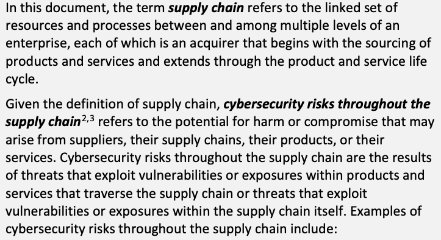
原本PDFの抜粋画像
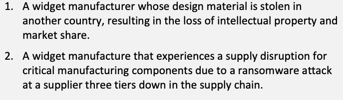
原本PDFの抜粋画像
原本PDFの抜粋画像
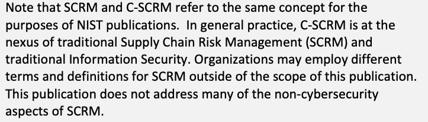
Technology solutions provided through a supply chain of competing vendors offer significant benefits, including low cost, interoperability, rapid innovation, and product feature variety. Whether proprietary, government-developed, or open source, these solutions can meet the needs of a global base of public and private sector customers. However, the same factors that create such benefits also increase the potential for cybersecurity risks that arise directly or indirectly from the supply chain. Cybersecurity risks throughout the supply chain are often undetected and impact the acquirer and the end-user. For example, deployed software is typically a commercial off-the-shelf (COTS) product, which includes smaller COTS or open source software components developed or sourced at multiple tiers. Updates to software deployed across enterprises often fail to update the smaller COTS components with known vulnerabilities, including cases in which the component vulnerabilities are exploitable in the larger enterprise software. Software users may be unable to detect the smaller known vulnerable components in larger COTS software (e.g., lack of transparency, insufficient vulnerability management). The non-standardized nature of C-SCRM practices adds an additional layer of complexity as this makes the consistent measurement and management of cybersecurity risks throughout the supply chain difficult for both the organization and members of its supply chain (e.g., suppliers, developers, system integrators, external system service providers, and other ICT/OT-related service providers).
競合するベンダーのサプライチェーンを通じて提供される技術ソリューションには、低コスト、相互運用性、迅速なイノベーション、豊富な製品機能などの大きな利点がある。独自仕様、政府開発、オープンソースのいずれであっても、官民の世界中の顧客のニーズに応えられる。しかし、こうした利点を生み出す要因は同時に、サプライチェーンから直接または間接に生じるサイバーセキュリティリスクも高める。サプライチェーン全体のサイバーセキュリティリスクは検出されないことが多く、調達側やエンドユーザーに影響する。例えば、導入ソフトウェアは通常、市販（COTS）製品であり、複数階層で開発または調達された小規模なCOTS製品やオープンソースソフトウェアのコンポーネントを含む。エンタープライズ全体に導入されたソフトウェアを更新しても、既知の脆弱性を持つ小規模なCOTSコンポーネントが更新されないことが多く、その脆弱性が大規模なエンタープライズ向けソフトウェア内で悪用可能な場合もある。ソフトウェア利用者は、大規模なCOTSソフトウェアに含まれる既知の脆弱なコンポーネントを検出できない場合がある（例：透明性の欠如、脆弱性管理の不備）。C-SCRM慣行が標準化されていないことも複雑さを増す。そのため、組織とサプライチェーンの構成員（例：サプライヤー、開発者、システムインテグレーター、外部システムサービスプロバイダー、その他のICT/OT関連サービスプロバイダー）の双方にとって、サプライチェーン全体のサイバーセキュリティリスクを一貫して測定・管理することが困難になる。
原本PDFの抜粋画像
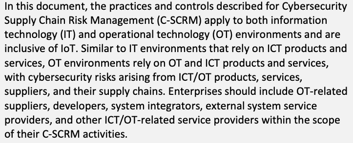
When engaging with suppliers, developers, system integrators, external system service providers, and other ICT/OT-related service providers, agencies should carefully consider the breadth of the Federal Government’s footprint and the high likelihood that individual agencies may enforce varying and conflicting C-SCRM requirements. Overcoming this complexity requires interagency coordination and partnerships. The passage of the Federal Acquisition Supply Chain Security Act (FASCSA) of 2018 aimed to address this concern by creating a government-wide approach to the problem of supply chain security in federal acquisitions by establishing the Federal Acquisition Security Council (FASC). The FASC serves as a focal point of coordination and information sharing and a harmonized approach to acquisition security that addresses C-SCRM in acquisition processes and procurements across the federal enterprise. In addition, the law incorporated SCRM into FISMA by requiring reports on the progress and effectiveness of the agency’s supply chain risk management, consistent with guidance issued by the Office of Management and Budget (OMB) and the Council.
供給者、開発者、システムインテグレーター、外部システムサービスプロバイダー、その他のICT/OT関連サービスプロバイダーと連携する際、各機関は連邦政府の活動範囲の広さと、機関ごとに異なる、相反するC-SCRM要件が課される可能性の高さを慎重に考慮すべきである。この複雑さを克服するには機関間の調整と連携が必要である。2018年連邦調達サプライチェーン安全保障法（FASCSA）は、連邦調達のサプライチェーン安全保障に政府全体で対処することを目指し、連邦調達安全保障評議会（FASC）を設置した。FASCは、連邦政府全体の調達プロセスおよび調達案件でC-SCRMに対処するため、調整、情報共有、調和の取れた調達セキュリティ対応の中心的役割を担う。さらに同法は、行政管理予算局（OMB）および同評議会の指針に沿った、各機関のサプライチェーンリスク管理の進捗・有効性に関する報告を求め、SCRMをFISMAに組み込んだ。
未レビュー訳Note that this publication uses the term “enterprise” to describe Level 1 of the risk management hierarchy. In practice, an organization is defined as an entity of any size, complexity, or positioning within a larger enterprise structure (e.g., a federal agency or company). By this definition, an enterprise is an organization, but it exists at the top level of the hierarchy where individual senior leaders have unique risk management responsibilities [IR8286]. Several organizations may comprise an enterprise. In these cases, an enterprise may have multiple Level 1s with stakeholders and activities defined at both the enterprise and the organization levels. Level 1 activities conducted at the enterprise level should inform those activities completed within the subordinate organizations. Enterprises and organizations tailor the C-SCRM practices described in this publication as applicable and appropriate based on their own unique enterprise structure. There are cases in this publication in which the term “organization” is inherited from a referenced source (e.g., other NIST publication, regulatory language). Refer to NIST IR 8286, Integrating Cybersecurity and Enterprise Risk Management (ERM), for further guidance on this topic.
本刊行物では、リスク管理階層のレベル1を表す用語として「企業」を用いる。実務上、「組織」とは、より大きな企業構造内で規模、複雑さ、位置付けを問わない主体（例：連邦機関、会社）である。この定義では企業も組織であるが、階層の最上位にあり、個々の上級リーダーが固有のリスク管理責任を担う[IR8286]。複数の組織が一つの企業を構成する場合がある。その場合、企業レベルと組織レベルの双方で利害関係者や活動が定義され、レベル1が複数存在することがある。企業レベルで実施するレベル1の活動は、下位組織の活動に反映されるべきである。企業および組織は、固有の企業構造に応じて本刊行物のC-SCRM慣行を適宜調整する。本刊行物には、参照元（例：他のNIST刊行物、規制文書）の用語を引き継いで「組織」と記す箇所もある。詳しくはNIST IR 8286『サイバーセキュリティと全社的リスク管理（ERM）の統合』を参照すること。
1.1. Purpose
1.1. 目的
Cybersecurity Supply Chain Risk Management (C-SCRM) is a systematic process for managing exposure to cybersecurity risks throughout the supply chain and developing appropriate response strategies, policies, processes, and procedures. The purpose of this publication is to provide guidance to enterprises on how to identify, assess, select, and implement risk management processes and mitigating controls across the enterprise to help manage cybersecurity risks throughout the supply chain. The content in this guidance is the shared responsibility of different disciplines with different SCRM perspectives, authorities, and legal considerations.
サイバーセキュリティ・サプライチェーンリスク管理（C-SCRM）は、サプライチェーン全体にわたるサイバーセキュリティリスクへのエクスポージャーを管理し、適切な対応戦略、方針、プロセスおよび手順を策定する体系的なプロセスである。本刊行物は、サプライチェーン全体のサイバーセキュリティリスクを管理するため、企業全体でリスク管理プロセスとリスク低減管理策を特定、評価、選択、実装する方法について指針を提供する。本指針の内容には、異なるSCRMの視点、権限および法的考慮事項を持つ複数分野が共同で責任を負う。
The C-SCRM guidance provided in this document is not one-size-fits-all. Instead, the guidance throughout this publication should be adopted and tailored to the unique size, resources, and risk circumstances of each enterprise. Enterprises adopting this guidance may vary in how they implement C-SCRM practices internally. To that end, this publication describes C-SCRM practices observed in enterprises and offers a general prioritization of C-SCRM practices (i.e., Foundational, Sustaining, Enabling)4 for enterprises to consider as they implement and mature
本書のC-SCRM指針は一律に適用できるものではない。各企業の固有の規模、資源およびリスク状況に合わせて採用・調整すること。指針を採用する企業によって、内部でのC-SCRM慣行の実装方法は異なる場合がある。そのため、本刊行物では企業で確認されたC-SCRM慣行を説明し、実装・成熟化にあたり検討できるよう、慣行の一般的な優先度（基盤的、持続的、実現支援的）4を示す。
未レビュー訳C-SCRM. However, this publication does not offer a specific roadmap for enterprises to follow to reach various states of capability and maturity.
C-SCRM。ただし、本刊行物は、さまざまな能力・成熟度の状態に到達するために企業が従うべき具体的なロードマップを示さない。
未レビュー訳The processes and controls identified in this document can be modified or augmented with enterprise-specific requirements from policies, guidelines, response strategies, and other sources. This publication empowers enterprises to develop C-SCRM strategies tailored to their specific mission and business needs, threats, and operational environments.
本書で特定するプロセスおよび管理策は、方針、指針、対応戦略その他の情報源に基づく企業固有の要件によって変更または拡充できる。本刊行物は、各企業が固有の使命・事業ニーズ、脅威および運用環境に合わせてC-SCRM戦略を策定できるようにする。
1.2. Target Audience
1.2. 対象読者
C-SCRM is an enterprise-wide activity that should be directed as such from a governance perspective, regardless of the specific enterprise structure.
C-SCRMはエンタープライズ全体に関わる活動であり、エンタープライズの構造の詳細にかかわらず、ガバナンスの観点からエンタープライズ全体の活動として指揮すべきである。
This publication is intended to serve a diverse audience involved in C-SCRM, including:
本刊行物は、C-SCRMに携わる多様な読者を対象としている。具体的には以下のとおりである。
•Individuals with system, information security, privacy, or risk management and oversight responsibilities, including authorizing officials (AOs), chief information officers, chief information security officers, and senior officials for privacy;
•システム、情報セキュリティ、プライバシー、リスク管理および監督の責任を担う者。認可担当者（AO）、最高情報責任者、最高情報セキュリティ責任者、プライバシー担当上級職員を含む。
•Individuals with system development responsibilities, including mission or business owners, program managers, system engineers, system security engineers, privacy engineers, hardware and software developers, system integrators, and acquisition or procurement officials;
•システム開発の責任を担う者。使命または事業の責任者、プログラムマネージャー、システムエンジニア、システムセキュリティエンジニア、プライバシーエンジニア、ハードウェア・ソフトウェア開発者、システムインテグレーター、取得または調達担当者を含む。
•Individuals with project management-related responsibilities, including certified project managers and/or integrated project team (IPT) members;
•プロジェクト管理関連の責任を担う者。認定プロジェクトマネージャーおよび／または統合プロジェクトチーム（IPT）のメンバーを含む。
•Individuals with acquisition and procurement-related responsibilities, including acquisition officials and contracting officers;
•取得・調達関連の責任を担う者。取得担当者および契約担当官を含む。
•Individuals with logistical or disposition-related responsibilities, including program managers, procurement officials, system integrators, and property managers;
•物流または処分関連の責任を担う者。プログラムマネージャー、調達担当者、システムインテグレーター、資産管理者を含む。
•Individuals with security and privacy implementation and operations responsibilities, including mission or business owners, system owners, information owners or stewards, system administrators, continuity planners, and system security or privacy officers;
•セキュリティおよびプライバシーの実装・運用責任を担う者。使命または事業の責任者、システム所有者、情報所有者または管理者、システム管理者、継続計画担当者、システムセキュリティまたはプライバシー担当者を含む。
•Individuals with security and privacy assessment and monitoring responsibilities, including auditors, Inspectors General, system evaluators, control assessors, independent verifiers and validators, and analysts; and
•セキュリティおよびプライバシーの評価・モニタリング責任を担う者。監査人、監察総監、システム評価者、管理策評価者、独立検証・妥当性確認担当者、アナリストを含む。
•Commercial entities, including industry partners, that produce component products and systems, create security and privacy technologies, or provide services or capabilities that support information security or privacy.
•コンポーネント製品やシステムを製造する、セキュリティ・プライバシー技術を開発する、または情報セキュリティ・プライバシーを支援するサービスや能力を提供する業界パートナーなどの民間事業者。
1.3. Guidance for Cloud Service Providers
1.3. クラウドサービスプロバイダー向け指針
The external system service providers discussed in this publication include cloud service providers. This publication does not replace the guidance provided with respect to federal agency assessments of cloud service providers’ security. When applying this publication to cloud service providers, federal agencies should first use Federal Risk and Authorization Program (FedRAMP) cloud services security guidelines and then apply this document for those processes and controls that are not addressed by FedRAMP.5
本刊行物で取り上げる外部システムサービスプロバイダーにはクラウドサービスプロバイダーが含まれる。本刊行物は、連邦機関によるクラウドサービスプロバイダーのセキュリティ評価に関する指針に代わるものではない。本刊行物をクラウドサービスプロバイダーに適用する場合、連邦機関はまず連邦リスク認可管理プログラム（FedRAMP）のクラウドサービス・セキュリティ指針を使用し、FedRAMPが扱っていないプロセスおよび管理策に本書を適用すべきである。5
未レビュー訳1.4. Audience Profiles and Document Use Guidance
1.4. 読者プロファイルと文書の利用指針
未レビュー訳Given the wide audience of this publication, several reader profiles have been defined to point readers to the sections of the document that most closely pertain to their use case. Some readers will belong to multiple profiles and should consider reading all applicable sections. Any reader accountable for the implementation of a C-SCRM capability or function within their enterprise, regardless of role, should consider the entire document applicable to their use case.
本刊行物は幅広い読者を対象とするため、利用目的に最も関係する節を示す複数の読者プロファイルを定義している。複数のプロファイルに該当する読者は、該当するすべての節を読むことを検討すべきである。役割を問わず、エンタープライズ内のC-SCRM能力または機能の実装に責任を負う読者は、本書全体が利用目的に該当すると考えるべきである。
1.4.1. Enterprise Risk Management and C-SCRM Owners and Operators
1.4.1. 全社的リスク管理およびC-SCRMの責任者・運用担当者
These readers are those responsible for enterprise risk management and cybersecurity supply chain risk management. These readers may help develop C-SCRM policies and standards, perform assessments of cybersecurity risks throughout the supply chain, and serve as subject matter experts for the rest of the enterprise. The entire document is relevant to and recommended for readers fitting this profile.
この読者層は、エンタープライズリスク管理およびサイバーセキュリティ・サプライチェーンリスクマネジメントを担う者である。C-SCRM方針や基準の策定を支援し、サプライチェーン全体のサイバーセキュリティリスクの評価を実施し、エンタープライズの他の部門に対する専門家として機能する場合がある。このプロファイルに該当する読者には本書全体が関係し、通読を推奨する。
1.4.2. Enterprise, Agency, and Mission and Business Process Owners and Operators
1.4.2. 企業、機関、使命・事業プロセスの責任者および運用担当者
These readers are the personnel responsible for the activities that create and/or manage risk within the enterprise. They may also own the risk as part of their duties within the mission or business process. They may have responsibilities for managing cybersecurity risks throughout the supply chain for the enterprise. Readers in this group may seek general knowledge and guidance on Cybersecurity Supply Chain Risk Management. Recommended reading includes:
この読者層は、エンタープライズ内でリスクを生み出す、または管理する活動に責任を負う職員である。ミッションまたは業務プロセスにおける職務の一環として、リスクを保有する場合もある。また、エンタープライズのサプライチェーン全体にわたるサイバーセキュリティリスクの管理責任を持つことがある。このグループの読者は、C-SCRMの一般的な知識や指針を求める場合がある。以下を読むことを推奨する。
•Section 1: Introduction
•第1節：はじめに
•Section 2: Integration of C-SCRM into Enterprise-wide Risk Management
•第2節：全社的リスク管理へのC-SCRMの統合
•Section 3.3: C-SCRM Awareness and Training
•第3.3節：C-SCRMの啓発および訓練
•Section 3.4: C-SCRM Key Practices
•第3.4節：C-SCRMの主要な慣行
•Section 3.6: Dedicated Resources
•第3.6節：専用リソース
•Appendix A: C-SCRM Security Controls
•付録A：C-SCRMセキュリティ管理策
•Appendix B: C-SCRM Control Summary
•付録B：C-SCRM管理策の概要
•Appendix E: FASCSA
•付録E：FASCSA
未レビュー訳1.4.3. Acquisition and Procurement Owners and Operators
1.4.3. 取得・調達の責任者および運用担当者
These readers are those with C-SCRM responsibilities as part of their role in the procurement or acquisition function of an enterprise. Acquisition personnel may execute C-SCRM activities as a part of their general responsibilities in the acquisition and procurement life cycle. These personnel will collaborate closely with the enterprise’s C-SCRM personnel to execute C-SCRM activities with acquisition and procurement. Recommended reading includes:
この読者層は、エンタープライズの調達または取得機能における役割の一部としてC-SCRMの責任を担う者である。取得担当者は、取得・調達ライフサイクルにおける一般的な責任の一環としてC-SCRM活動を実施する場合がある。これらの職員は、取得・調達に関するC-SCRM活動を実施するため、エンタープライズのC-SCRM担当者と緊密に連携する。以下を読むことを推奨する。
•Section 1: Introduction
•第1節：はじめに
•Section 2.1: The Business Case for C-SCRM
•第2.1節：C-SCRMのビジネス上の根拠
•Section 2.2: Cybersecurity Risks Throughout the Supply Chain
•第2.2節：サプライチェーン全体にわたるサイバーセキュリティリスク
•Section 3.1: C-SCRM in Acquisition
•第3.1節：取得におけるC-SCRM
•Section 3.3: C-SCRM Awareness and Training
•第3.3節：C-SCRMの啓発および訓練
•Appendix A: C-SCRM Security Controls
•付録A：C-SCRMセキュリティ管理策
未レビュー訳These readers should pay special attention to requisite controls for supplier o contracts and include them in agreements with both primary and sub-tier contractor parties.
これらの読者は、供給者契約に必要な管理策に特に注意し、主要請負業者と下位階層の請負業者双方との契約に盛り込むべきである。
未レビュー訳•Appendix F: Software Supply Chain Security Guidelines
•付録F：ソフトウェア・サプライチェーンセキュリティ指針
未レビュー訳1.4.4. Information Security, Privacy, or Cybersecurity Operators
1.4.4. 情報セキュリティ、プライバシーまたはサイバーセキュリティの運用担当者
These readers are those with operational responsibility for protecting the confidentiality, integrity, and availability of the enterprise’s critical processes and information systems. As part of those responsibilities, these readers may find themselves directly or indirectly involved with conducting Cybersecurity Supply Chain Risk Assessments and/or the selection and implementation of C-SCRM controls. In smaller enterprises, these personnel may bear the responsibility for implementing C-SCRM and should refer to Sec. 1.4.1 for guidance. Recommended reading includes:
この読者層は、エンタープライズの重要なプロセスおよび情報システムの機密性、完全性、可用性を保護する運用責任を担う者である。その責任の一環として、これらの読者は、サイバーセキュリティ・サプライチェーンリスク評価の実施、および／またはC-SCRM管理策の選択・実装に直接または間接に関与することがある。小規模なエンタープライズでは、これらの職員がC-SCRMの実装責任を負う場合があり、その場合は1.4.1節の指針を参照すべきである。以下を読むことを推奨する。
•Section 1: Introduction
•第1節：はじめに
•Section 2.1: The Business Case for C-SCRM
•第2.1節：C-SCRMのビジネス上の根拠
•Section 2.2: Cybersecurity Risks Throughout the Supply Chain
•第2.2節：サプライチェーン全体にわたるサイバーセキュリティリスク
•Section 3.2: Supply Chain Information Sharing
•第3.2節：サプライチェーン情報の共有
•Section 3.4: C-SCRM Key Practices
•第3.4節：C-SCRMの主要な慣行
•Appendix A: C-SCRM Security Controls
•付録A：C-SCRMセキュリティ管理策
•Appendix B: C-SCRM Control Summary
•付録B：C-SCRM管理策の概要
•Appendix C: Risk Exposure Framework
•付録C：リスクエクスポージャー・フレームワーク
•Appendix E: FASCSA
•付録E：FASCSA
未レビュー訳•Appendix F: Software Supply Chain Security Guidelines
•付録F：ソフトウェア・サプライチェーンセキュリティ・ガイドライン
•Appendix G: C-SCRM Activities in the Risk Management Process
•付録G：リスクマネジメントプロセスにおけるC-SCRM活動
未レビュー訳1.4.5. System Development, System Engineering, and System Implementation Personnel
1.4.5. システム開発、システムエンジニアリングおよびシステム実装の担当者
These readers are those with responsibilities for executing activities within an information system’s system development life cycle (SDLC). As part of their SDLC responsibilities, these readers will be responsible for the execution of operational-level C-SCRM activities. Specifically, these personnel may be concerned with implementing C-SCRM controls to manage cybersecurity risks that arise from products and services provided through the supply chain within the scope of their information system(s). Recommended reading includes:
これらの読者は、情報システムのシステム開発ライフサイクル（SDLC）内の活動を実行する責任を担う者である。SDLC上の責任の一環として、これらの読者は運用レベルのC-SCRM活動を実行する責任を負う。具体的には、担当する情報システムの範囲内で、サプライチェーンを通じて提供される製品・サービスに起因するサイバーセキュリティリスクを管理するため、C-SCRM管理策の実装に関与する場合がある。以下を読むことを推奨する。
•Section 1: Introduction
•第1節：はじめに
•Section 2.1: The Business Case for C-SCRM
•第2.1節：C-SCRMのビジネス上の根拠
•Section 2.2: Cybersecurity Risks Throughout the Supply Chain
•第2.2節：サプライチェーン全体にわたるサイバーセキュリティリスク
•Section 2.3.4: Level 3 — Operational
•第2.3.4節：レベル3 — 運用
•Appendix B: C-SCRM Control Summary
•付録B：C-SCRM管理策の概要
•Appendix C: Risk Exposure Framework
•付録C：リスクエクスポージャー・フレームワーク
•Appendix F: Software Supply Chain Security Guidelines
•付録F：ソフトウェア・サプライチェーンセキュリティ・ガイドライン
•Appendix G: C-SCRM Activities in the Risk Management Process
•付録G：リスクマネジメントプロセスにおけるC-SCRM活動
未レビュー訳1.5. Background
1.5. 背景
C-SCRM encompasses activities that span the entire SDLC, including research and development, design, manufacturing, acquisition, delivery, integration, operations and maintenance, disposal, and the overall management of an enterprise’s products and services. Enterprises should integrate C-SCRM within the SDLC as this is a critical area for addressing cybersecurity risks throughout the supply chain. C-SCRM is the organized and purposeful management of cybersecurity risks throughout the supply chain. C-SCRM requires enterprise recognition and awareness, and it lies at the intersections of security, suitability, safety, reliability, usability, quality, integrity, efficiency, maintainability, scalability, and resilience, as depicted in Fig. 1. These dimensions are layers of consideration for enterprises as they approach C-SCRM and should be positively impacted by C-SCRM.
C-SCRMは、研究開発、設計、製造、取得、納入、統合、運用・保守、廃棄、ならびにエンタープライズの製品・サービスの総合的な管理を含む、SDLC全体に及ぶ活動を網羅する。サプライチェーン全体のサイバーセキュリティリスクに対処するうえで重要な領域であるため、エンタープライズはC-SCRMをSDLCに統合するべきである。C-SCRMとは、サプライチェーン全体のサイバーセキュリティリスクを体系的かつ意図的に管理することである。C-SCRMにはエンタープライズとしての認識と意識が必要であり、図1に示すように、セキュリティ、適合性、安全性、信頼性、使いやすさ、品質、完全性、効率性、保守性、拡張性およびレジリエンスが交差する領域に位置する。これらの側面は、エンタープライズがC-SCRMに取り組む際に考慮すべき層であり、C-SCRMによって好ましい影響を受けるべきである。
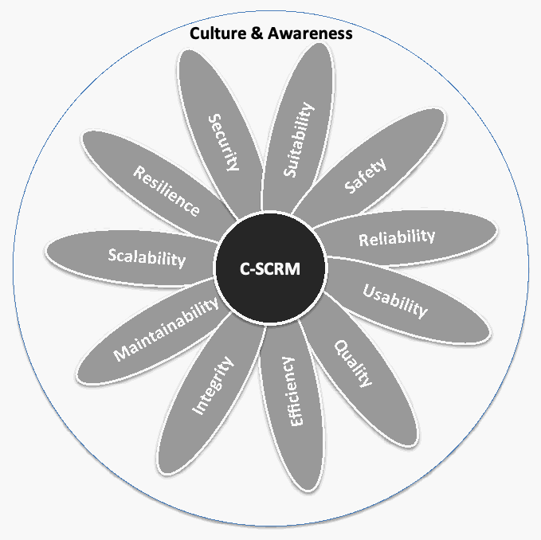
Culture & Awareness
文化と意識
未レビュー訳C-SCRM
C-SCRM
未レビュー訳Fig. 1. Dimensions of C-SCRM
図1. C-SCRMの諸側面
•Culture and Awareness is the set of shared values, practices, goals, and attitudes of the organization that set the stage for successful C-SCRM. It includes a learning process that influences individual and enterprise attitudes and understanding to realize the importance of C-SCRM and the adverse consequences of its failure.6
•文化と意識とは、C-SCRMを成功させる基盤となる、組織内で共有される価値観、慣行、目標および態度の集合である。これには、C-SCRMの重要性と、その失敗がもたらす悪影響を認識できるよう、個人およびエンタープライズの態度と理解に働きかける学習プロセスが含まれる。6
未レビュー訳•Security provides the confidentiality, integrity, and availability of (a) information that describes the supply chain (e.g., information about the paths of products and services, both logical and physical); (b) information, products, and services that traverse the supply chain (e.g., intellectual property contained in products and services); and/or (c) information about the parties participating in the supply chain (anyone who touches a product or service throughout its life cycle).
•セキュリティは、次の情報の機密性、完全性および可用性を確保する。(a) サプライチェーンを記述する情報（製品・サービスの論理的および物理的な経路に関する情報など）、(b) サプライチェーンを流通する情報、製品およびサービス（製品・サービスに含まれる知的財産など）、および/または (c) サプライチェーンに参加する当事者（製品・サービスのライフサイクルを通じてそれらに関与するすべての者）に関する情報。
•Suitability is focused on the supply chain and the provided products and services being right and appropriate for the enterprise and its purpose.
•適合性は、サプライチェーンおよび提供される製品・サービスが、エンタープライズとその目的にとって適切であり、要件にかなっていることに重点を置く。
•Safety is focused on ensuring that the product or service is free from conditions that can cause death, injury, occupational illness, damage to or loss of equipment or property, or damage to the environment.7
•安全性は、製品またはサービスに、死亡、負傷、職業上の疾病、機器・財産の損傷または損失、あるいは環境への損害を引き起こす状態がないことの確保に重点を置く。7
未レビュー訳•Reliability is focused on the ability of a product or service to function as defined for a specified period of time in a predictable manner.8
•信頼性は、製品またはサービスが、定められた期間にわたり、定義どおり予測可能な形で機能する能力に重点を置く。8
未レビュー訳•Usability is focused on the extent to which a product or service can be used by specified users to achieve specified goals with effectiveness, efficiency, and satisfaction in a specified context of use.9
•使いやすさは、特定の利用状況において、特定の利用者が有効性、効率性および満足度をもって特定の目標を達成するために、製品またはサービスをどの程度利用できるかに重点を置く。9
未レビュー訳•Quality is focused on meeting or exceeding performance, technical, and functional specifications while mitigating vulnerabilities and weaknesses that may limit the intended function of a component or delivery of a service, lead to component or service failure, or provide opportunities for exploitation.
•品質は、意図した機能を制限する、コンポーネントやサービスの障害につながる、または悪用の機会を与える可能性のある脆弱性や弱点を軽減しつつ、性能、技術および機能に関する仕様を満たす、または上回ることに重点を置く。
•Efficiency is focused on the timeliness of the intended result delivered by a product or service.
•効率性は、製品またはサービスが意図した結果を適時に提供することに重点を置く。
•Maintainability is focused on the ease of a product or service to accommodate change and improvements based on past experience in support of expanding future derived benefits.
•保守性は、過去の経験を踏まえた変更や改善を製品またはサービスに容易に取り入れ、将来得られる便益を拡大できることに重点を置く。
•Integrity is focused on guarding products and the components of products against improper modification or tampering and ensuring authenticity and pedigree.
•完全性は、製品およびその構成要素を不適切な変更や改ざんから保護し、真正性と来歴を確保することに重点を置く。
•Scalability is the capacity of a product or service to handle increased growth and demand.
•拡張性とは、製品またはサービスが、増大する成長と需要に対応する能力である。
•Resilience is focused on ensuring that a product, service, or the supply chain supports the enterprise’s ability to prepare for and adapt to changing conditions and withstand and recover rapidly from disruptions. Resilience includes the ability to withstand and recover from deliberate attacks, accidents, or naturally occurring threats or incidents.
•レジリエンスは、製品、サービスまたはサプライチェーンが、変化する状況への備えと適応、ならびに混乱への耐性と迅速な復旧を行うエンタープライズの能力を支えることの確保に重点を置く。レジリエンスには、意図的な攻撃、事故または自然発生的な脅威・インシデントに耐え、そこから復旧する能力が含まれる。
1.5.1. Enterprise’s Supply Chain
1.5.1. エンタープライズのサプライチェーン
Contemporary enterprises run complex information systems and networks to support their missions. These information systems and networks are composed of ICT/OT10 products and components made available by suppliers, developers, and system integrators. Enterprises also acquire and deploy an array of products and services, including:
今日のエンタープライズは、ミッションを支える複雑な情報システムとネットワークを運用している。これらの情報システムとネットワークは、サプライヤー、開発者およびシステムインテグレーターが提供するICT/OT10製品・コンポーネントで構成されている。エンタープライズは、次のような多様な製品・サービスも調達し、導入している。
未レビュー訳•Custom software for information systems built to be deployed within the enterprise, made available by developers;
•エンタープライズ内に導入するために構築され、開発者が提供する情報システム用のカスタムソフトウェア。
•Operations, maintenance, and disposal support for information systems and networks within and outside of the enterprise’s boundaries,11 made available by system integrators or other ICT/OT-related service providers; and
•エンタープライズの内外にある情報システムおよびネットワークの運用、保守、廃棄を支援するサービス。これは、システムインテグレーターまたはその他のICT/OT関連サービスプロバイダーが提供する。11
未レビュー訳•External services to support the enterprise’s operations that are positioned both inside and outside of the authorization boundaries, made available by external system service providers.
•認可境界の内側と外側の両方に配置され、エンタープライズの運用を支援する外部サービス。外部システムサービスプロバイダーが提供する。
These services may span the entire SDLC for an information system or service and may be:
これらのサービスは、情報システムまたはサービスのSDLC全体に及ぶ場合があり、次のような形態をとる場合がある。
•Performed by the staff employed by the enterprise, developer, system integrator, or external system service provider;
•エンタープライズ、開発者、システムインテグレーターまたは外部システムサービスプロバイダーに雇用された職員が実施する。
•Physically hosted by the enterprise, developer, system integrator, or external system service provider;
•エンタープライズ、開発者、システムインテグレーターまたは外部システムサービスプロバイダーが物理的にホストする。
•Supported or comprised of development environments, logistics/delivery environments that transport information systems and components, or applicable system and communications interfaces;
•開発環境、情報システムやコンポーネントを輸送する物流・配送環境、または該当するシステム・通信インターフェースによって支援される、あるいはそれらで構成される。
•Proprietary, open source, or commercial off-the-shelf (COTS) hardware and software.
•独自仕様、オープンソース、または市販既製品（COTS）のハードウェアおよびソフトウェアである。
The responsibility and accountability for the services and associated activities performed by different parties within this ecosystem are usually defined by agreement documents between the enterprise and suppliers, developers, system integrators, external system service providers, and other ICT/OT-related service providers.
このエコシステム内の異なる当事者が実施するサービスおよび関連活動についての責任と説明責任は、通常、エンタープライズとサプライヤー、開発者、システムインテグレーター、外部システムサービスプロバイダー、その他のICT/OT関連サービスプロバイダーとの合意文書で定められる。
1.5.2. Supplier Relationships Within Enterprises
1.5.2. エンタープライズ内のサプライヤー関係
Enterprises depend on the supply chain to provide a variety of products and services to enable the enterprise to achieve its strategic and operational objectives. Identifying cybersecurity risks throughout the supply chain is complicated by the information asymmetry that exists between acquiring enterprises and their suppliers and service providers. Acquirers often lack visibility and understanding of how acquired technology is developed, integrated, and deployed and how the services that they acquire are delivered. Additionally, acquirers with inadequate or absent C-SCRM processes, procedures, and practices may experience increased exposure cybersecurity risks throughout the supply chain. The level of exposure to cybersecurity risks throughout the supply chain depends largely on the relationship between the products and services provided and the criticality of the missions, business processes, and systems that they support. Enterprises have a variety of relationships with their suppliers, developers, system integrators, external system service providers, and other ICT/OT-related service providers. Figure 2 depicts how these diverse relationships affect an enterprise’s visibility and control of the supply chain.
エンタープライズは、戦略上および運用上の目標達成を可能にする多様な製品・サービスを提供するサプライチェーンに依存している。サプライチェーン全体のサイバーセキュリティリスクの特定は、調達側のエンタープライズとサプライヤー／サービスプロバイダーとの間に存在する情報の非対称性によって複雑になる。調達側は、取得した技術がどのように開発、統合、導入されるか、また調達したサービスがどのように提供されるかを把握できないことが少なくない。さらに、C-SCRMのプロセス、手順、慣行が不十分または欠如している調達側は、サプライチェーン全体でサイバーセキュリティリスクへの曝露が高まる可能性がある。サプライチェーン全体におけるリスク曝露の程度は、提供される製品・サービスと、それらが支えるミッション、業務プロセスおよびシステムの重要度との関係に大きく左右される。エンタープライズは、サプライヤー、開発者、システムインテグレーター、外部システムサービスプロバイダー、その他のICT/OT関連サービスプロバイダーと多様な関係を持つ。図2は、こうした多様な関係がサプライチェーンに対するエンタープライズの可視性と制御にどのように影響するかを示す。
原本PDFの抜粋画像
External System
外部システム
未レビュー訳Supplier
サプライヤー
未レビュー訳Service Provider
サービスプロバイダー
未レビュー訳External System
外部システム
未レビュー訳Supplier
サプライヤー
未レビュー訳Service Provider
サービスプロバイダー
未レビュー訳System
システム
未レビュー訳External System
外部システム
未レビュー訳Integrator
インテグレーター
未レビュー訳Service Provider
サービスプロバイダー
未レビュー訳Acquiring Enterprise
調達側エンタープライズ
未レビュー訳ICT/OT
ICT/OT
未レビュー訳ICT/OT Supplier
ICT/OTサプライヤー
未レビュー訳Supplier
サプライヤー
未レビュー訳原本PDFの抜粋画像
Fig. 2. An enterprise’s visibility, understanding, and control of its supply chain
図2. サプライチェーンに対するエンタープライズの可視性、理解および制御
未レビュー訳Some supply chain relationships are tightly intermingled, such as a system integrator’s development of a complex information system operating within the federal agency’s authorization boundary or the management of federal agency information systems and resources by an external service provider. These relationships are usually guided by an agreement (e.g., contract) that establishes detailed functional, technical, and security requirements and may provide for the custom development or significant customization of products and services. For these relationships, system integrators and external service providers are likely able to work with the enterprise to implement such processes and controls (listed within this document) that are deemed appropriate based on the results of a criticality and risk assessment and cost/benefit analysis. This may include floating requirements upstream in the supply chain to ensure higher confidence in the satisfaction of necessary assurance objectives. The decision to extend such requirements must be balanced with an appreciation of what is feasible and cost-effective. The degree to which system integrators and external service providers are expected to implement C-SCRM processes and controls should be weighed against the risks to the enterprise posed by not adhering to those additional requirements. Often, working directly with the system integrators and external service providers to proactively identify appropriate mitigation processes and controls will help create a more cost-effective strategy.
システムインテグレーターが連邦機関の認可境界内で稼働する複雑な情報システムを開発する場合や、外部サービスプロバイダーが連邦機関の情報システムおよび資源を管理する場合など、一部のサプライチェーン関係は密接に入り組んでいる。こうした関係は通常、詳細な機能要件、技術要件およびセキュリティ要件を定め、製品・サービスのカスタム開発や大幅なカスタマイズを規定する合意（例：契約）に基づく。このような関係では、システムインテグレーターや外部サービスプロバイダーは、重要度・リスク評価および費用便益分析の結果に基づき適切と判断されたプロセスや管理策（本書に記載）を実装するため、エンタープライズと協力できる可能性が高くなる。これには、必要な保証目標がより確実に満たされるよう、要件をサプライチェーンの上流に伝達することが含まれる場合がある。こうした要件を拡張する判断では、実現可能性と費用対効果を考慮して均衡を図る必要がある。システムインテグレーターおよび外部サービスプロバイダーにC-SCRMプロセスと管理策の実装をどの程度求めるかは、追加要件に従わないことがエンタープライズにもたらすリスクと照らして検討するべきである。多くの場合、システムインテグレーターや外部サービスプロバイダーと直接協力して適切な軽減プロセスと管理策を事前に特定することで、費用対効果の高い戦略を策定できる。
未レビュー訳Procuring ICT/OT products from suppliers establishes a direct relationship between those suppliers and the acquirers. This relationship is also usually guided by an agreement between the acquirer and the supplier. However, commercial ICT/OT developed by suppliers are typically designed for general purposes for a global market and are not tailored to an individual customer’s specific operational or threat environments. Enterprises should perform due diligence and research regarding their specific C-SCRM requirements to determine if an IT solution is fit for purpose,12 includes requisite security features and capabilities, will meet quality and resiliency expectations, and requires support by the supplier for the product or product components over its life cycle.
サプライヤーからICT/OT製品を調達すると、サプライヤーと調達側との間に直接的な関係が生まれる。この関係も通常、調達側とサプライヤーとの合意に基づく。ただし、サプライヤーが開発する商用ICT/OT製品は、一般に世界市場向けの汎用目的で設計され、個々の顧客固有の運用環境や脅威環境に合わせて調整されていない。エンタープライズは、ITソリューションが目的に適合するか、12必要なセキュリティ機能と能力を備えているか、品質とレジリエンスへの期待を満たすか、またライフサイクルを通じて製品またはそのコンポーネントをサプライヤーがサポートする必要があるかを判断するため、固有のC-SCRM要件についてデューデリジェンスと調査を実施するべきである。
未レビュー訳An assessment of the findings of an acquirer’s research about a product, which may include engaging in direct dialogue with suppliers whenever possible, will help acquirers understand the characteristics and capabilities of existing ICT/OT products and services, set expectations and requirements for suppliers, and identify C-SCRM needs not yet satisfied by the market. It can also help identify emerging solutions that may at least partially support the acquirer’s needs. Overall, such research and engagement with a supplier will allow the acquirer to better articulate their requirements to align with and drive market offerings and to make risk-based decisions about product purchases, configurations, and usages within their environment.
調達側が製品について調査した結果の評価は、可能な場合にはサプライヤーとの直接対話を含む場合もあり、調達側が既存のICT/OT製品・サービスの特性と能力を理解し、サプライヤーへの期待と要件を設定し、市場ではまだ満たされていないC-SCRMニーズを特定するのに役立つ。また、調達側のニーズを少なくとも部分的に支援できる新たなソリューションの特定にも役立つ。全体として、このような調査とサプライヤーとの連携により、調達側は市場で提供される製品・サービスに要件を合わせ、そうした提供を促す形で要件を明確化し、自らの環境における製品の購入、構成および使用についてリスクに基づく判断を行いやすくなる。
原本PDFの抜粋画像
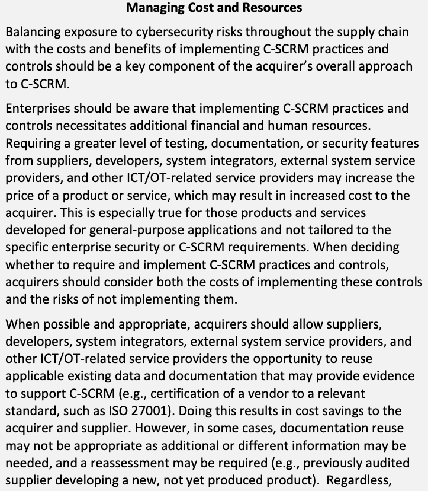
原本PDFの抜粋画像
1.6. Methodology for Building C-SCRM Guidance Using NIST SP 800-39; NIST SP 800-37, Rev 2;
1.6. NIST SP 800-39、NIST SP 800-37 Rev. 2、およびNIST SP 800-53 Rev. 5を用いたC-SCRM指針の構築方法
未レビュー訳and NIST SP 800-53, Rev 5
（続き）およびNIST SP 800-53 Rev. 5
未レビュー訳This publication applies the multilevel risk management approach of [SP80039] by providing C-SCRM guidance at the enterprise, mission, and operational levels. It also introduces a navigational system for [SP80037] allowing users to focus on relevant sections of this publication more easily. Finally, it contains an enhanced overlay of specific C-SCRM controls, building on [SP80053r5].
本刊行物は、[SP80039]の複数階層リスクマネジメント・アプローチを適用し、エンタープライズ、ミッションおよび運用の各階層でC-SCRM指針を提示する。また、読者が関連する本刊行物の節に容易に絞り込めるよう、[SP80037]の案内体系を導入する。さらに、[SP80053r5]を基盤として、C-SCRM固有の管理策を拡充したオーバーレイを収録している。
未レビュー訳The guidance/controls contained in this publication are built on existing multidisciplinary practices and are intended to increase the ability of enterprises to manage the associated cybersecurity risks throughout the supply chain over the entire life cycle of systems, products, and services. It should be noted that this publication gives enterprises the flexibility to either develop stand-alone documentation (e.g., policies, assessment and authorization [A&A] plan, and C-SCRM plan) for C-SCRM or to integrate it into existing agency documentation.
本刊行物の指針・管理策は、既存の学際的な実践を基盤とし、システム、製品およびサービスのライフサイクル全体にわたって、サプライチェーンに伴うサイバーセキュリティリスクをエンタープライズが管理する能力を高めることを目的とする。本刊行物は、エンタープライズがC-SCRM用の独立文書（例：方針、評価・認可［A&A］計画、C-SCRM計画）を作成することも、既存の機関文書に統合することもできる柔軟性を提供している点に留意されたい。
For individual systems, this guidance is recommended for use with information systems at all impact categories, according to [FIPS199]. The agencies may choose to prioritize applying this guidance to systems at a higher impact level or to specific system components. Finally, this document describes the development and implementation of C-SCRM Strategies and Implementation Plans for development at the enterprise and mission and business level of an enterprise and a C-SCRM system plan at the operational level of an enterprise. A C-SCRM plan at the operational level is informed by the cybersecurity supply chain risk assessments and should contain C-SCRM controls tailored to specific agency mission and business needs, operational environments, and/or implementing technologies.
個別システムについては、[FIPS199]に従い、あらゆる影響度カテゴリーの情報システムに本指針を適用することを推奨する。機関は、影響度が高いシステムまたは特定のシステムコンポーネントへの適用を優先してもかまわない。最後に、本書は、エンタープライズのエンタープライズ階層およびミッション・業務階層で策定するC-SCRM戦略・実施計画と、運用階層で策定するC-SCRMシステム計画の作成および実装について説明する。運用階層のC-SCRM計画は、サイバーセキュリティ・サプライチェーンリスク評価に基づくものであり、機関固有のミッション・業務上のニーズ、運用環境、または実装技術に合わせて調整したC-SCRM管理策を含めるべきである。
未レビュー訳Integration into the Risk Management Process
リスクマネジメントプロセスへの統合
The processes in this publication should be integrated into the enterprise’s existing SDLCs and enterprise environments at all levels of risk management processes and hierarchy (e.g., enterprise, mission, system), as described in [SP80039]. Section 2 provides an overview of the [SP80039] risk management hierarchy and approach and identifies C-SCRM activities in the risk management process. Appendix C builds on Sec. 2 of [SP80039], providing descriptions and explanations of ICT/OT SCRM activities. The structure of Appendix C mirrors [SP80039].
本刊行物のプロセスは、[SP80039]に記載されるように、リスクマネジメントプロセスおよび階層のあらゆるレベル（例：エンタープライズ、ミッション、システム）において、エンタープライズの既存のSDLCと環境に統合するべきである。第2節では、[SP80039]のリスクマネジメント階層とアプローチを概説し、リスクマネジメントプロセスにおけるC-SCRM活動を特定する。付録Cは[SP80039]の第2節を基盤とし、ICT/OTのSCRM活動を説明する。付録Cの構成は[SP80039]に対応している。
未レビュー訳Implementing C-SCRM in the Context of SP 800-37, Revision 2
SP 800-37 Revision 2の文脈におけるC-SCRMの実装
C-SCRM activities described in this publication are closely related to the Risk Management Framework described in [SP80037]. Specifically, C-SCRM processes conducted at the operational level should closely mirror and/or serve as inputs to those steps completed as part of [SP80037]. C-SCRM activities completed at Levels 1 and 2 should provide inputs (e.g., risk assessment results) to the operational level and RMF-type processes, where possible and applicable. Section 2 and Appendix C describe the linkages between C-SCRM and [SP80037] in further detail.
本刊行物に記載するC-SCRM活動は、[SP80037]で説明されるリスクマネジメントフレームワークと密接に関連している。具体的には、運用階層で実施するC-SCRMプロセスは、[SP80037]の一環として完了する各ステップに密接に対応し、またはその入力として機能するべきである。レベル1および2で完了するC-SCRM活動は、可能かつ該当する場合、運用階層およびRMF型プロセスに入力（例：リスク評価結果）を提供するべきである。第2節と付録Cでは、C-SCRMと[SP80037]の関連について詳しく説明する。
未レビュー訳1.7. Relationship to Other Publications and Publication Summary
1.7. 他の刊行物との関係および刊行物の概要
This publication builds on the concepts promoted within other NIST publications and tailors those concepts for use within Cybersecurity Supply Chain Risk Management. As a result of this relationship, this publication inherits many of its concepts and looks to other NIST publications to continue advancing base frameworks, concepts, and methodologies. Those NIST publications include:
本刊行物は、他のNIST刊行物で推進されている概念を基盤とし、サイバーセキュリティ・サプライチェーンリスクマネジメントで使用できるよう調整している。この関係により、本刊行物は多くの概念を引き継ぎ、基礎となるフレームワーク、概念および方法論の発展を他のNIST刊行物に委ねている。該当するNIST刊行物は次のとおりである。
•The NIST Cybersecurity Framework (CSF) 2.0: Voluntary guidance based on existing standards, guidelines, and practices for organizations to better manage and reduce cybersecurity risk. It was also designed to foster risk and cybersecurity management communications among both internal and external organizational stakeholders.
•NISTサイバーセキュリティフレームワーク（CSF）2.0：組織がサイバーセキュリティリスクをより適切に管理・低減するため、既存の標準、ガイドラインおよび慣行に基づく任意の指針である。また、組織内外の関係者間でリスクマネジメントとサイバーセキュリティ管理に関するコミュニケーションを促進するために設計されている。
•FIPS 199, Standards for Security Categorization of Federal Information and Information Systems: A standard for categorizing federal information and information systems according to an agency’s level of concern for confidentiality, integrity, and availability and the potential impact on agency assets and operations should their information and information systems be compromised through unauthorized access, use, disclosure, disruption, modification, or destruction.
•FIPS 199『連邦情報および情報システムのセキュリティ分類に関する標準』：機関が機密性、完全性、可用性について抱く懸念の度合いと、不正アクセス、使用、開示、妨害、改変または破壊によって情報・情報システムが侵害された場合に機関の資産・運用へ及ぶ潜在的影響に応じて、連邦政府の情報および情報システムを分類する標準である。
•SP 800-30, Revision 1, Guide for Conducting Risk Assessments: Guidance for conducting risk assessments of federal information systems and organizations, amplifying the guidance in SP 800-39. Risk assessments carried out at all three tiers in the risk management hierarchy are part of an overall risk management process that provides senior leaders/executives with the information needed to determine appropriate courses of action in response to identified risks.
•SP 800-30 Revision 1『リスク評価の実施ガイド』：連邦情報システムおよび組織のリスク評価を実施するための指針であり、SP 800-39の指針を詳述する。リスクマネジメント階層の3つすべての階層で実施するリスク評価は、特定したリスクへの適切な対応方針を上級リーダー／幹部が決定するために必要な情報を提供する、総合的なリスクマネジメントプロセスの一部である。
•SP 800-37, Revision 2, Risk Management Framework for Information Systems and Organizations: A System Life Cycle Approach for Security and Privacy: Describes the Risk Management Framework (RMF) and provides guidelines for applying the RMF to information systems and organizations. The RMF provides a disciplined, structured, and flexible process for managing security and privacy risk that includes information security categorization; control selection, implementation, and assessment; system and common control authorizations; and continuous monitoring.
•SP 800-37 Revision 2『情報システムおよび組織のためのリスクマネジメントフレームワーク：セキュリティとプライバシーのためのシステムライフサイクルアプローチ』：リスクマネジメントフレームワーク（RMF）を説明し、情報システムおよび組織へのRMF適用に関する指針を示す。RMFは、情報セキュリティ分類、管理策の選択・実装・評価、システムおよび共通管理策の認可、継続的監視を含む、セキュリティリスクとプライバシーリスクを管理するための規律ある、体系的で柔軟なプロセスを提供する。
•SP 800-39, Managing Information Security Risk: Organization, Mission, and Information System View: Provides guidance for an integrated, organization-wide program for managing information security risk to organizational operations (i.e., mission, functions, image, and reputation), organizational assets, individuals, other organizations, and the Nation resulting from the operation and use of federal information systems.
•SP 800-39『情報セキュリティリスクの管理：組織、ミッションおよび情報システムの視点』：連邦情報システムの運用・利用に起因する組織の運用（すなわちミッション、機能、イメージおよび評判）、組織資産、個人、他組織および国家への情報セキュリティリスクを管理する、統合的かつ組織全体に及ぶプログラムの指針を示す。
•• SP 800-53, Revision 5, Security and Privacy Controls for Information Systems and Organizations: Provides a catalog of security and privacy controls for information systems and organizations to protect organizational operations and assets, individuals, other organizations, and the Nation from a diverse set of threats and risks, including hostile attacks, human errors, natural disasters, structural failures, foreign intelligence entities, and privacy risks.
•• SP 800-53 Revision 5『情報システムおよび組織のためのセキュリティ・プライバシー管理策』：敵対的攻撃、人為的ミス、自然災害、構造上の障害、外国情報機関、プライバシーリスクを含む多様な脅威およびリスクから、組織の運用および資産、個人、他の組織、ならびに国家を保護するための、情報システムおよび組織向けのセキュリティ・プライバシー管理策のカタログを提供する。
•SP 800-53B, Control Baselines for Information Systems and Organizations: Provides security and privacy control baselines for the Federal Government. There are three security control baselines – one for each system impact level (i.e., low-impact, moderate-impact, and high-impact) – and a privacy baseline that is applied to systems irrespective of impact level.
•SP 800-53B『情報システムおよび組織のための管理策ベースライン』：連邦政府向けのセキュリティ・プライバシー管理策ベースラインを提供する。セキュリティ管理策ベースラインはシステム影響度（低、中、高）ごとに1つずつ、計3つあり、プライバシーベースラインは影響度にかかわらずシステムに適用される。
•SP 800-160 Vol. 1, Revision 1, Systems Security Engineering: Addresses the engineering-driven perspective and actions necessary to develop more defensible and survivable systems, inclusive of the machine, physical, and human components comprising the systems, capabilities, and services delivered by those systems.
•SP 800-160 Vol. 1 Revision 1『システムセキュリティエンジニアリング』：システム、およびそれらのシステムが提供する能力とサービスを構成する機械的、物理的ならびに人的要素を含め、より防御可能で存続性の高いシステムを開発するために必要な、エンジニアリング主導の視点と行動を扱う。
•SP 800-160 Vol. 2, Revision 1, Developing Cyber Resilient Systems: A Systems Security Engineering Approach: A handbook for achieving identified cyber resiliency outcomes based on a systems engineering perspective on system life cycle processes in conjunction with risk management processes, allowing the experience and expertise of the organization to help determine what is correct for its purpose.
•SP 800-160 Vol. 2 Revision 1『サイバーレジリエントなシステムの開発：システムセキュリティエンジニアリングのアプローチ』：システムエンジニアリングの観点によるシステムライフサイクルプロセスとリスクマネジメントプロセスを組み合わせ、特定されたサイバーレジリエンスの成果を達成するためのハンドブックである。組織の経験と専門知識を活用して、その目的に適した方法を判断できる。
•SP 800-181, Revision 1, National Initiative for Cybersecurity Education (NICE) Cybersecurity Workforce Framework: A fundamental reference for describing and sharing information about cybersecurity work. It expresses that work as Task statements and describes Knowledge and Skill statements that provide a foundation for learners, including students, job seekers, and employees.
•SP 800-181 Revision 1『国家サイバーセキュリティ教育イニシアチブ（NICE）サイバーセキュリティ人材フレームワーク』：サイバーセキュリティ業務を記述し、その情報を共有するための基本的な参照資料である。業務をタスク記述として表現し、学習者（学生、求職者、従業員を含む）の基礎となる知識・スキル記述を示す。
•NIST IR 7622, Notional Supply Chain Risk Management Practices for Federal Information Systems: Provides a wide array of practices that help mitigate supply chain risk to federal information systems. It seeks to equip federal departments and agencies with a notional set of repeatable and commercially reasonable supply chain assurance methods and practices that offer a means to obtain an understanding of and visibility throughout the supply chain.
•NIST IR 7622『連邦情報システムのための概念的なサプライチェーンリスクマネジメント実践』：連邦情報システムのサプライチェーンリスク軽減に役立つ幅広い実践を示す。連邦省庁・機関がサプライチェーン全体への理解と可視性を得る手段となる、反復可能で商業的に妥当なサプライチェーン保証手法・実践の概念的な一式を提供することを目指す。
•NIST IR 8179, Criticality Analysis Process Model: Prioritizing Systems and Components: Helps organizations identify those systems and components that are most vital and may need additional security or other protections.
•NIST IR 8179『重要度分析プロセスモデル：システムとコンポーネントの優先順位付け』：最も重要であり、追加のセキュリティその他の保護が必要となる可能性があるシステムとコンポーネントを組織が特定するのに役立つ。
•NIST IR 8276, Key Practices in Cyber Supply Chain Risk Management: Observations from Industry: Provides a set of Key Practices that any organization can use to manage the cybersecurity risks associated with their supply chains. The Key Practices presented in this document can be used to implement a robust C-SCRM function at an organization of any size, scope, and complexity. These practices combine the information contained in existing C-SCRM government and industry resources with the information gathered during the 2015 and 2019 NIST research initiatives.
•NIST IR 8276『サイバーサプライチェーンリスク管理の主要な実践：産業界からの所見』：あらゆる組織がサプライチェーンに関連するサイバーセキュリティリスクを管理するために利用できる主要な実践を提示する。本書の主要な実践は、規模、範囲、複雑さを問わず、あらゆる組織で堅牢なC-SCRM機能を実装するために利用できる。これらの実践は、既存の政府および産業界のC-SCRM関連資料に含まれる情報と、2015年および2019年のNIST調査活動で収集した情報を組み合わせたものである。
•• NIST IR 8286, Identifying and Estimating Cybersecurity Risk for Enterprise Risk Management (ERM): Helps individual organizations within an enterprise improve their cybersecurity risk information, which they provide as inputs to their enterprise’s ERM processes through communication and risk information sharing.
•• NIST IR 8286『エンタープライズリスク管理（ERM）のためのサイバーセキュリティリスクの特定と推定』：エンタープライズ内の個々の組織が、コミュニケーションおよびリスク情報の共有を通じてエンタープライズのERMプロセスへの入力として提供するサイバーセキュリティリスク情報を改善できるよう支援する。
•NIST IR 8286A, Identifying and Estimating Cybersecurity Risk for Enterprise Risk Management: Offers examples and information to illustrate risk tolerance, risk appetite, and methods for determining risks in that context. To support the development of an Enterprise Risk Register, this report describes the documentation of various scenarios based on the potential impact of threats and vulnerabilities on enterprise assets. Documenting the likelihood and impact of various threat events through cybersecurity risk registers integrated into an enterprise risk profile helps to later prioritize and communicate enterprise cybersecurity risk response and monitoring.
•NIST IR 8286A『エンタープライズリスク管理のためのサイバーセキュリティリスクの特定と推定』：リスク許容度、リスク選好、およびその文脈でリスクを決定する方法を示す例と情報を提供する。エンタープライズリスク登録簿の作成を支援するため、本報告書では、脅威および脆弱性がエンタープライズ資産に及ぼす潜在的影響に基づくさまざまなシナリオの文書化について説明する。さまざまな脅威事象の可能性と影響を、エンタープライズリスクプロファイルに統合されたサイバーセキュリティリスク登録簿を通じて文書化することで、後にエンタープライズのサイバーセキュリティリスク対応と監視の優先順位付けおよび伝達が容易になる。
•NIST IR 8286B, Prioritizing Cybersecurity Risk for Enterprise Risk Management: Provides detail regarding stakeholder risk guidance and risk identification and analysis. This second publication describes the need for determining the priorities of each of those risks in light of their potential impact on enterprise objectives, as well as options for properly treating that risk. This report describes how risk priorities and risk response information are added to the cybersecurity risk register (CSRR) in support of an overall enterprise risk register. Information about the selection of and projected cost of risk response will be used to maintain a composite view of cybersecurity risks throughout the enterprise, which may be used to confirm and adjust risk strategy to ensure mission success.
•NIST IR 8286B『エンタープライズリスク管理のためのサイバーセキュリティリスクの優先順位付け』：ステークホルダーのリスク指針ならびにリスクの特定および分析に関する詳細を提供する。この第2の刊行物では、それぞれのリスクがエンタープライズ目標に及ぼし得る影響を踏まえて優先順位を決定する必要性と、リスクを適切に処理するための選択肢を説明する。本報告書では、エンタープライズ全体のリスク登録簿を支援するため、リスク優先順位とリスク対応情報をサイバーセキュリティリスク登録簿（CSRR）に追加する方法を説明する。リスク対応の選択と予測コストに関する情報は、エンタープライズ全体のサイバーセキュリティリスクの統合的な見解を維持するために使用され、ミッションの成功を確実にするためのリスク戦略の確認と調整に役立つ場合がある。
This publication also draws upon concepts and work from other regulations, government reports, standards, guidelines, and best practices. A full list of those resources can be found in Appendix H.
本刊行物は、その他の規制、政府報告書、規格、ガイドライン、およびベストプラクティスの概念と成果も参照している。それらの資料の完全な一覧は付録Hに記載されている。
原本PDFの抜粋画像
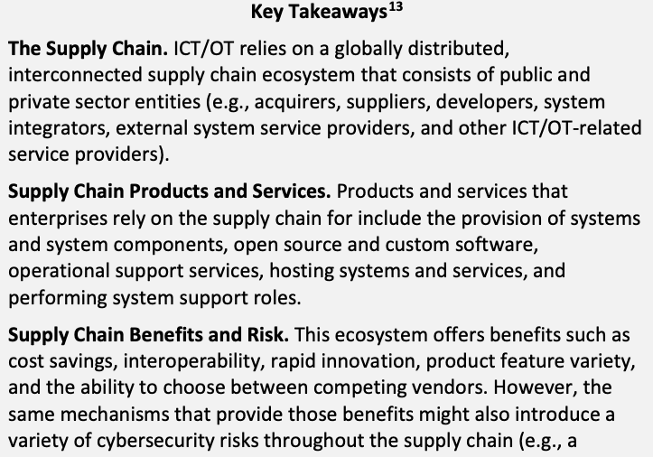
原本PDFの抜粋画像
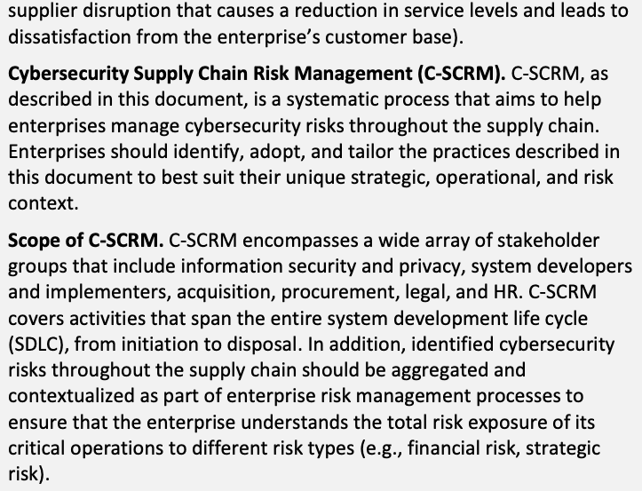
2. Integration of C-SCRM Into Enterprise-Wide Risk Management14
2. C-SCRMの全社的なリスク管理への統合14
未レビュー訳C-SCRM should be integrated into the enterprise-wide risk management process described in [SP80039] and depicted in Fig. 3. This process includes the following continuous and iterative steps:
C-SCRMは、[SP80039]で説明され、図3に示す全社的なリスク管理プロセスに統合すべきである。このプロセスには、次の継続的かつ反復的なステップが含まれる：
•Frame risk. Establish the context for risk-based decisions and the current state of the enterprise’s information and communications technology and services and the associated supply chain.
•リスクの枠組みを設定する。リスクに基づく意思決定の文脈と、エンタープライズの情報通信技術およびサービスならびに関連するサプライチェーンの現状を確立する。
•Assess risk. Review and interpret criticality, threat, vulnerability, likelihood,15 impact, and related information.
•リスクを評価する。重要度、脅威、脆弱性、可能性、15 影響、および関連情報を確認し、解釈する。
未レビュー訳•Respond to risk. Select, tailor, and implement mitigation controls based on risk assessment findings.
•リスクに対応する。リスク評価の結果に基づいて、緩和管理策を選択、調整、および実装する。
•Monitor risk. Monitor risk exposure and the effectiveness of mitigating risk on an ongoing basis, including tracking changes to an information system or supply chain using effective enterprise communications and a feedback loop for continuous improvement.
•リスクを監視する。効果的なエンタープライズ内コミュニケーションと継続的改善のためのフィードバックループを用いて、情報システムまたはサプライチェーンの変更の追跡を含め、リスク曝露とリスク緩和の有効性を継続的に監視する。
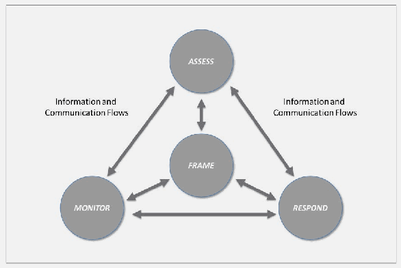
Fig. 3. Risk management process
図3. リスク管理プロセス
Managing cybersecurity risks throughout the supply chain is a complex undertaking that requires cultural transformation and a coordinated, multidisciplinary approach across an enterprise. Effective cybersecurity supply chain risk management (C-SCRM) requires engagement from stakeholders inside the enterprise (e.g., departments, processes) and outside of the enterprise (e.g., suppliers, developers, system integrators, external system service providers, and other ICT/OT-related service providers) to actively collaborate, communicate, and take actions to secure favorable C-SCRM outcomes. Successful C-SCRM requires an enterprise-wide cultural shift to a state of heightened awareness and preparedness as to the potential ramifications of cybersecurity risks throughout the supply chain.
サプライチェーン全体にわたるサイバーセキュリティリスクの管理は複雑な取り組みであり、文化の変革と、エンタープライズ全体にわたる調整された学際的なアプローチが必要である。効果的なサイバーセキュリティ・サプライチェーンリスク管理（C-SCRM）には、エンタープライズ内部（例：部門、プロセス）および外部（例：供給者、開発者、システムインテグレーター、外部システムサービスプロバイダー、その他のICT/OT関連サービスプロバイダー）のステークホルダーが関与し、望ましいC-SCRMの成果を得るために積極的に協力し、意思疎通し、行動する必要がある。C-SCRMを成功させるには、サプライチェーン全体のサイバーセキュリティリスクがもたらし得る影響について、認識と備えを高めた状態へと、エンタープライズ全体の文化を移行させる必要がある。
未レビュー訳Enterprises should aim to infuse perspectives from multiple disciplines and processes (e.g., information security, procurement, enterprise risk management, engineering, software development, IT, legal, HR) into their approaches to managing cybersecurity risks throughout the supply chain. Enterprises may define explicit roles to bridge and integrate these processes as a part of an enterprise’s broader risk management activities. This orchestrated approach is an integral part of an enterprise’s effort to identify C-SCRM priorities, develop solutions, and incorporate C-SCRM into overall risk management decisions. Enterprises should perform C-SCRM activities as a part of the acquisition, SDLC, and broader enterprise risk management processes. Embedded C-SCRM activities involve determining the criticality of functions and their dependency on the supplied products and services, identifying and assessing applicable risks, determining appropriate mitigating actions, documenting selected risk response actions, and monitoring performance of C-SCRM activities. As exposure to supply chain risk differs across (and sometimes within) enterprises, business and mission-specific strategies, and policies should set the tone and direction for C-SCRM across the enterprise.
エンタープライズは、サプライチェーン全体のサイバーセキュリティリスクを管理するアプローチに、複数の専門分野およびプロセス（例：情報セキュリティ、調達、エンタープライズリスク管理、エンジニアリング、ソフトウェア開発、IT、法務、人事）の視点を取り入れることを目指すべきである。エンタープライズは、より広範なリスク管理活動の一環として、これらのプロセスを橋渡しし統合する明確な役割を定めてもよい。こうした調整されたアプローチは、C-SCRMの優先事項を特定し、解決策を策定し、C-SCRMを全体的なリスク管理上の意思決定に組み込むエンタープライズの取り組みに不可欠である。エンタープライズは、取得、SDLC、およびより広範なエンタープライズリスク管理のプロセスの一部としてC-SCRM活動を実施すべきである。C-SCRM活動の組み込みには、機能の重要度と供給される製品・サービスへの依存関係の判断、該当するリスクの特定および評価、適切な緩和措置の決定、選択したリスク対応措置の文書化、ならびにC-SCRM活動の実績監視が含まれる。サプライチェーンリスクへの曝露はエンタープライズごとに（場合によっては同一エンタープライズ内でも）異なるため、事業およびミッションに固有の戦略と方針が、エンタープライズ全体のC-SCRMの方向性を定めるべきである。
未レビュー訳原本PDFの抜粋画像
原本PDFの抜粋画像
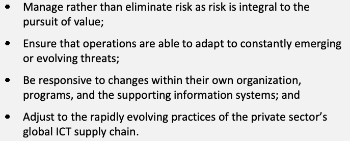
2.1. The Business Case for C-SCRM
2.1. C-SCRMのビジネス上の根拠
Today, every enterprise heavily relies on digital technology to fulfill its business and mission. Digital technology is comprised of ICT/OT products and is delivered through and supported by services. C-SCRM is a critical capability that every enterprise needs to have to address cybersecurity risks throughout the supply chain that arise from the use of digital technology. The depth, extent, and maturity of a C-SCRM capability for each enterprise should be based on the uniqueness of its business or mission, enterprise-specific compliance requirements, operational environment, risk appetite, and risk tolerance.
今日、あらゆるエンタープライズは、事業およびミッションを遂行するためにデジタル技術に大きく依存している。デジタル技術はICT/OT製品で構成され、サービスを通じて提供され、サービスによって支えられている。C-SCRMは、デジタル技術の利用に伴いサプライチェーン全体で生じるサイバーセキュリティリスクに対処するため、すべてのエンタープライズが備えるべき重要な能力である。各エンタープライズのC-SCRM能力の深さ、範囲、および成熟度は、事業またはミッションの固有性、エンタープライズ固有のコンプライアンス要件、運用環境、リスク選好、およびリスク許容度に基づくべきである。
Establishing and sustaining a C-SCRM capability creates a number of significant benefits:
C-SCRM能力を確立し維持することにより、次のような大きな便益が得られる：
•An established C-SCRM program will enable enterprises to understand which critical assets are most susceptible to supply chain weaknesses and vulnerabilities.
•確立されたC-SCRMプログラムにより、エンタープライズは、サプライチェーンの弱点や脆弱性の影響を最も受けやすい重要資産を把握できる。
•C-SCRM reduces the likelihood of supply chain compromise by a cybersecurity threat by enhancing an enterprise’s ability to effectively detect, respond, and recover from events that result in significant business disruptions should a C-SCRM compromise occur.
•C-SCRMは、C-SCRM侵害が発生した場合に重大な事業中断をもたらす事象を効果的に検知、対応、復旧するエンタープライズの能力を高めることで、サイバーセキュリティ脅威によるサプライチェーン侵害の可能性を低減する。
•Operational and enterprise efficiencies are achieved through clear structure, purpose, and alignment with C-SCRM capabilities and the prioritization, consolidation, and streamlining of existing C-SCRM processes.
•C-SCRM能力の明確な構造、目的、および整合性、ならびに既存のC-SCRMプロセスの優先順位付け、統合、合理化を通じて、運用面およびエンタープライズ面の効率が向上する。
•There is greater assurance that acquired products are of high quality, authentic, reliable, resilient, maintainable, secure, and safe.
•取得した製品が高品質で、真正で、信頼性、レジリエンス、保守性、安全性、およびセキュリティを備えているという保証が高まる。
•There is greater assurance that suppliers, service providers, and the technology products and services that they provide are trustworthy and can be relied upon to meet performance requirements.
•供給者、サービスプロバイダー、およびそれらが提供する技術製品・サービスが信頼でき、性能要件を満たすものとして依拠できるという保証が高まる。
C-SCRM is fundamental to any effort to manage risk exposure arising from enterprise operations. Implementing C-SCRM processes and controls requires human, tooling, and infrastructure investments by acquirers and their developers, system integrators, external system service providers, and other ICT/OT-related service providers. However, enterprises have finite resources to commit to establishing and deploying C-SCRM processes and controls. As such, enterprises should carefully weigh the potential costs and benefits when making C-SCRM resource commitment decisions and make decisions based on a clear understanding of any risk exposure implications that could arise from a failure to commit the necessary resources to C-SCRM.
C-SCRMは、エンタープライズ運用から生じるリスクエクスポージャーを管理するあらゆる取り組みの基礎である。C-SCRMのプロセスおよび管理策の実装には、取得者ならびにその開発者、システムインテグレーター、外部システムサービスプロバイダー、およびその他のICT/OT関連サービスプロバイダーによる、人材、ツール、およびインフラストラクチャへの投資が必要となる。しかし、エンタープライズがC-SCRMのプロセスおよび管理策の確立と展開に充てられるリソースには限りがある。したがって、エンタープライズはC-SCRMへのリソース投入を決定する際、潜在的なコストと便益を慎重に比較検討し、必要なリソースを投入しなかった場合に生じ得るリスクエクスポージャーへの影響を明確に理解したうえで判断すべきである。
未レビュー訳While there are cost-benefit trade-offs that must be acknowledged, the need to better secure supply chains is an imperative for both government and the private sector. The passage of the 2018 SECURE Technology Act,16 the formation of the FASC, and the observations from the 2015 and 2019 Case Studies in Cyber Supply Chain Risk Management captured in NIST Interagency or Internal Report (NIST IR) 8276, Key Practices in Cyber Supply Chain Risk Management, point to a broad public and private sector consensus: C-SCRM capabilities are a critical and foundational component of any enterprise’s risk posture.
費用対効果のトレードオフを認識する必要はあるものの、サプライチェーンのセキュリティをより強化する必要性は、政府部門と民間部門の双方にとって不可欠である。2018年SECURE Technology Act16の成立、FASCの設立、ならびにNIST省庁間・内部報告書（NIST IR）8276『サイバーサプライチェーンリスク管理の主要な実践』にまとめられた2015年および2019年の事例研究の所見は、官民の幅広い合意を示している。すなわち、C-SCRM能力は、あらゆるエンタープライズのリスク態勢に不可欠な基盤要素である。
未レビュー訳2.2. Cybersecurity Risks Throughout Supply Chains
2.2. サプライチェーン全体にわたるサイバーセキュリティリスク
Cybersecurity risks throughout the supply chain refers to the potential for harm or compromise that arises from the cybersecurity risks posed by suppliers, their supply chains, and their products or services. Examples of these risks include:
サプライチェーン全体にわたるサイバーセキュリティリスクとは、供給者、そのサプライチェーン、およびその製品やサービスがもたらすサイバーセキュリティリスクに起因する危害または侵害の可能性を指す。こうしたリスクの例を以下に示す：
•Insiders working on behalf of a system integrator steal sensitive intellectual property, resulting in the loss of a major competitive advantage.17
•システムインテグレーターに代わって業務を行う内部関係者が機微な知的財産を窃取し、重大な競争優位性の喪失を招く。17
未レビュー訳•A company that designs and manufacturers safety critical connected devices, has leveraged a chipset in their design, which provides the hardware root of trust (RoT) for cybersecurity. However, the designer/supplier of the RoT chipset has implanted a
•安全性が重要なコネクテッドデバイスを設計・製造する企業が、サイバーセキュリティのハードウェア信頼基点（RoT）となるチップセットを設計に利用している。しかし、そのRoTチップセットの設計者／供給者が、将来の攻撃に利用できるバックドアまたはマルウェアを埋め込んだ。
未レビュー訳backdoor, or malware to be leveraged in a future attack (e.g., FOCI from a foreign adversary), which could result in compromise of sensitive data with national security implications.
バックドアまたはマルウェアが将来の攻撃（例：外国の敵対者による外国所有・支配・影響（FOCI））に利用され、国家安全保障に影響する機微なデータの侵害につながる可能性がある。
未レビュー訳•A proxy working on behalf of a nation-state inserts malicious software into supplier-provided product components used in systems sold to government agencies. A breach occurs and results in the loss of several government contracts.
•国家主体に代わって活動する代理人が、政府機関向けに販売されるシステムで使用される供給者提供の製品コンポーネントに悪意あるソフトウェアを挿入する。侵害が発生し、複数の政府契約を失う結果となる。
未レビュー訳•A system integrator working on behalf of an agency reuses vulnerable code, leading to a breach of mission-critical data with national security implications.
•機関に代わって業務を行うシステムインテグレーターが脆弱なコードを再利用し、国家安全保障に影響するミッション上重要なデータの侵害につながる。
未レビュー訳•An organized criminal enterprise introduces counterfeit products onto the market, resulting in a loss of customer trust and confidence.
•組織犯罪集団が偽造品を市場に流通させ、顧客の信頼と信用を損なう。
未レビュー訳•A company is on contract to produce a critical component of a larger acquisition, but the company relabels products from an unvetted supplier. A critical component that cannot be trusted is deployed into operational systems, and there is no trustworthy supplier of replacement parts.
•ある企業は、より大規模な取得案件の重要コンポーネントを製造する契約を結んでいるが、審査されていない供給者の製品にラベルを貼り替えている。信頼できない重要コンポーネントが運用システムに導入され、交換部品を供給する信頼できる供給者が存在しない。
未レビュー訳Risks such as these are realized when threats in the cybersecurity supply chain exploit existing vulnerabilities. Figure 4 depicts supply chain cybersecurity risks resulting from the likelihood that relevant threats may exploit applicable vulnerabilities and the consequential potential impacts.
このようなリスクは、サイバーセキュリティ・サプライチェーン内の脅威が既存の脆弱性を悪用すると現実化する。図4は、関連する脅威が該当する脆弱性を悪用する可能性と、その結果として生じ得る影響によってもたらされるサプライチェーンのサイバーセキュリティリスクを示す。
未レビュー訳Threats
脅威
未レビュー訳Vulnerabilities
脆弱性
未レビュー訳Adversarial: E.g., insertion of malware,
敵対的：例：マルウェアの挿入、偽造品、産業スパイ、サプライチェーンの混乱、サービス停止、外国の諜報機関による情報収集
未レビュー訳External: E.g., interdependencies in the supply
外部：例：サプライチェーンの相互依存関係（一次供給者と共通の第2階層供給者）、サプライチェーン主体の弱点（供給能力不足）、不十分なサイバー衛生
未レビュー訳counterfeits, industrial espionage, supply
原文のみ
chain (primary suppliers with common level-2
原文のみ
disruption, service outage, foreign intelligence
原文のみ
suppliers, supply chain entity weaknesses
原文のみ
entity
原文のみ
(inadequate capacity), inadequate cyber hygiene
原文のみ
Non-adversarial: E.g., natural disaster,
非敵対的：例：自然災害、品質の悪い製品／サービス、戦争などの地政学的事象、供給（制裁）に影響する法規制の変更
未レビュー訳Internal: E.g., vulnerable information systems and
内部：例：脆弱な情報システムとコンポーネント、未パッチのシステム、効果のないセキュリティ管理策、サイバー意識の欠如
未レビュー訳poor quality products/services, geopolitical (war),
原文のみ
components, unpatched systems, ineffective
原文のみ
legal/regulatory changes affecting
原文のみ
security controls, lack of cyber awareness
原文のみ
supply (sanctions)
原文のみ
Likelihood (probability of a threat exploiting a vulnerability[s])
可能性（脅威が脆弱性を悪用する確率）
未レビュー訳Adversarial: Capability and intent
敵対的：能力および意図
未レビュー訳Non-adversarial: Historical rate of occurrence
非敵対的：過去の発生率
未レビュー訳Impact—degree of harm
影響—損害の程度
未レビュー訳Ex. Impact: Loss of customers and public trust due to data disclosure
影響の例：データ開示による顧客および社会からの信頼の喪失
未レビュー訳To: mission/business function Ex. Impact: Loss of classified information resulting in compromised national security Ex. Impact: Production delays due to supply chain disruptions Ex. Impact: Loss of intellectual property due to data exfiltration
対象：ミッション／事業機能 影響の例：機密情報の喪失による国家安全保障の侵害 影響の例：サプライチェーンの混乱による生産遅延 影響の例：データ流出による知的財産の喪失
未レビュー訳Cybersecurity Risks Throughout the Supply Chain
サプライチェーン全体にわたるサイバーセキュリティリスク
未レビュー訳Fig. 4. Cybersecurity risks throughout the supply chain
図4. サプライチェーン全体にわたるサイバーセキュリティリスク
未レビュー訳Supply chain cybersecurity vulnerabilities may lead to persistent negative impacts on an enterprise’s missions, ranging from a reduction in service levels leading to customer dissatisfaction to the theft of intellectual property or the degradation of critical mission and business processes. It may, however, take years for such vulnerabilities to be exploited or discovered. It may also be difficult to determine whether an event was the direct result of a supply chain vulnerability. Vulnerabilities in the supply chain are often interconnected and may expose enterprises to cascading cybersecurity risks. For example, a large-scale service outage at a major cloud services provider may cause service or production disruptions for multiple entities within an enterprise’s supply chain and lead to negative effects within multiple mission and business processes.
サプライチェーンのサイバーセキュリティ上の脆弱性は、サービスレベルの低下による顧客の不満から、知的財産の窃取、またはミッションや事業に不可欠なプロセスの劣化に至るまで、エンタープライズのミッションに持続的な悪影響を及ぼす可能性がある。しかし、このような脆弱性が悪用または発見されるまでに何年もかかる場合がある。また、ある事象がサプライチェーンの脆弱性に直接起因したかどうかを判断することが難しい場合もある。サプライチェーン内の脆弱性は相互に関連していることが多く、連鎖的なサイバーセキュリティリスクにエンタープライズをさらす可能性がある。例えば、大手クラウドサービスプロバイダーで大規模なサービス停止が発生すると、エンタープライズのサプライチェーン内の複数の主体でサービスまたは生産の中断が生じ、複数のミッションおよび事業プロセスに悪影響が及ぶ可能性がある。
未レビュー訳2.3. Multilevel Risk Management18
2.3. マルチレベルのリスク管理18
未レビュー訳To integrate risk management throughout an enterprise, [SP80039] describes three levels, depicted in Fig. 5, that address risk from different perspectives: 1) the enterprise level, 2) the mission and business process level, and 3) the operational level. C-SCRM requires the involvement of all three levels.
エンタープライズ全体にリスク管理を統合するため、[SP80039]は図5に示す3つのレベルを説明しており、それぞれ異なる観点からリスクに対処する：1）エンタープライズレベル、2）ミッションおよび事業プロセスレベル、3）運用レベル。C-SCRMには3つすべてのレベルの関与が必要である。
未レビュー訳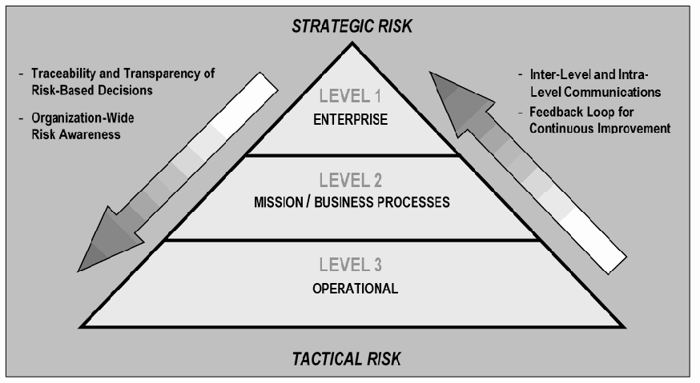
Fig. 5. Multilevel enterprise-wide risk management19
図5. 全社的なマルチレベルのリスク管理19
未レビュー訳In multilevel risk management, the C-SCRM process is seamlessly carried out across the three tiers with the overall objective of continuous improvement in the enterprise’s risk-related activities and effective inter- and intra-level communication among stakeholders with a vested interest in C-SCRM.
マルチレベルのリスク管理では、C-SCRMプロセスを3つの階層全体でシームレスに実施し、エンタープライズのリスク関連活動を継続的に改善すること、ならびにC-SCRMに関心を持つステークホルダー間の階層間および階層内の効果的なコミュニケーションを全体目標とする。
C-SCRM activities can be performed by a variety of individuals or groups within an enterprise, ranging from a single individual to committees, divisions, centralized program offices, or any other enterprise structure. C-SCRM activities are distinct for different enterprises depending on their structure, culture, mission, and many other factors. C-SCRM activities at each of the three levels include the production of different high-level C-SCRM deliverables.
C-SCRM活動は、エンタープライズ内のさまざまな個人またはグループが実施できる。単独の個人から、委員会、部門、集中型プログラムオフィス、その他あらゆるエンタープライズの組織構造までが含まれる。C-SCRM活動は、構造、文化、ミッション、その他多くの要因に応じてエンタープライズごとに異なる。3つの各レベルのC-SCRM活動では、それぞれ異なる上位レベルのC-SCRM成果物が作成される。
•At Level 1 (Enterprise), the overall C-SCRM strategy, policy, and implementation plan set the tone, governance structure, and boundaries for how C-SCRM is managed across the enterprise and guide C-SCRM activities performed at the mission and business process levels.
•レベル1（エンタープライズ）では、全体的なC-SCRM戦略、ポリシー、および実装計画が、エンタープライズ全体でC-SCRMを管理するための方針、ガバナンス構造、および境界を定め、ミッションおよび事業プロセスレベルで実施するC-SCRM活動を導く。
•At Level 2 (Mission and Business Process), the mid-level C-SCRM strategies, policies, and implementation plans assume the context and direction set forth at the enterprise level and tailor it to the specific mission and business process.
•レベル2（ミッションおよび事業プロセス）では、中位レベルのC-SCRM戦略、ポリシー、および実装計画が、エンタープライズレベルで定められた文脈と方向性を前提とし、それを個々のミッションおよび事業プロセスに合わせて調整する。
•At Level 3 (Operational), the C-SCRM plans provide the basis for determining whether an information system meets business, functional, and technical requirements and includes appropriately tailored controls. These plans are heavily influenced by the context and direction provided by Level 2.
•レベル3（運用）では、C-SCRM計画が、情報システムが事業、機能、および技術の要件を満たすかどうかを判断する基礎となり、適切に調整された管理策を含む。これらの計画は、レベル2から示される文脈と方向性に大きく影響される。
Figure 6 provides an overview of the multilevel risk management structure and the associated strategies, policies, and plans developed at each level. Refer to Sec. 2.3.1 through 2.3.5 for a
図6は、マルチレベルのリスク管理構造と、各レベルで策定する関連する戦略、ポリシーおよび計画の概要を示す。各レベルの具体的な活動について、より詳細な説明は2.3.1節から2.3.5節を参照すること。
未レビュー訳原本PDFの抜粋画像
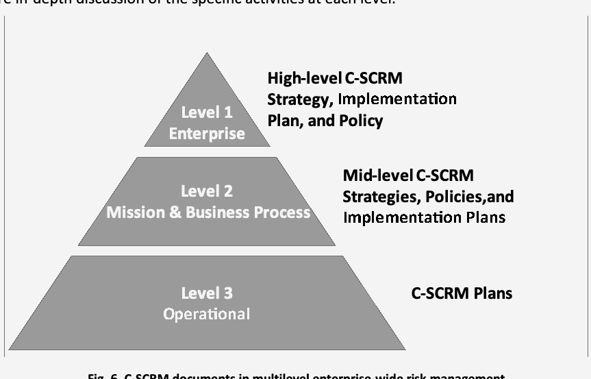
Fig. 6. C-SCRM documents in multilevel enterprise-wide risk management
図6. 全社的なマルチレベルのリスク管理におけるC-SCRM文書
未レビュー訳2.3.1. Roles and Responsibilities Across the Three Levels
2.3.1. 3つのレベルにおける役割および責任
Implementing C-SCRM requires enterprises to establish a coordinated team-based approach and a shared responsibility model to effectively manage cybersecurity risks throughout the supply chain. Enterprises should establish and adhere to C-SCRM-related policies, develop and follow processes (often cross-enterprise in nature), and employ programmatic and technical mitigation techniques. The coordinated team approach, either ad hoc or formal, enables enterprises to effectively conduct a comprehensive, multi-perspective analysis of their supply chain and to respond to risks, communicate with external partners/stakeholders, and gain broad consensus regarding appropriate resources for C-SCRM. The C-SCRM team should work together to make decisions and take actions deriving from the input and involvement of multiple perspectives and expertise. The team leverages but does not replace those C-SCRM responsibilities and processes that should be specifically assigned to an individual enterprise or disciplinary area. Effective implementations of C-SCRM often include the adoption of a shared responsibility model, which distributes responsibilities and accountabilities for C-SCRM-related activities and risk across a diverse group of stakeholders. Examples of C-SCRM activities in which enterprises benefit from a multidisciplinary approach include developing a strategic sourcing strategy, incorporating C-SCRM requirements into a solicitation, and determining options for how best to mitigate an identified supply chain risk, especially one assessed to be significant.
C-SCRMを実装するには、サプライチェーン全体のサイバーセキュリティリスクを効果的に管理するため、エンタープライズが調整されたチームベースのアプローチと責任共有モデルを確立する必要がある。エンタープライズは、C-SCRM関連ポリシーを確立して遵守し、（多くの場合、エンタープライズ横断的な）プロセスを策定して従い、プログラム的および技術的な緩和手法を採用すべきである。調整されたチームアプローチは、臨時または正式な形態を問わず、エンタープライズがサプライチェーンを包括的かつ多角的に分析し、リスクに対応し、外部パートナー／ステークホルダーと意思疎通し、C-SCRMに必要な適切なリソースについて幅広い合意を得ることを可能にする。C-SCRMチームは、複数の視点と専門知識から得られる意見および関与を基に、共に意思決定し行動すべきである。このチームは、各エンタープライズまたは専門分野に個別に割り当てるべきC-SCRMの責任およびプロセスを置き換えるのではなく、それらを活用する。効果的なC-SCRMの実装には、多様なステークホルダーグループにC-SCRM関連活動とリスクに対する責任および説明責任を配分する責任共有モデルの採用が含まれることが多い。学際的なアプローチが有益なC-SCRM活動の例には、戦略的調達戦略の策定、調達要求へのC-SCRM要件の組み込み、特に重大と評価されたサプライチェーンリスクを緩和する最善の選択肢の決定がある。
Members of the C-SCRM team should be a diverse group of people involved in the various aspects of the enterprise’s critical processes, such as information security, procurement, enterprise risk management, engineering, software development, IT, legal, and HR. To aid in C-SCRM, these individuals should provide expertise in enterprise processes and practices specific to their discipline area and an understanding of the technical aspects and inter-dependencies of systems or information flowing through systems. The C-SCRM team may be an extension of an enterprise’s existing enterprise risk management function, grown as part of an enterprise’s cybersecurity risk management function, or operate out of a different department.
C-SCRMチームのメンバーは、情報セキュリティ、調達、エンタープライズリスク管理、エンジニアリング、ソフトウェア開発、IT、法務、人事など、エンタープライズの重要なプロセスのさまざまな側面に関わる多様な人々で構成すべきである。C-SCRMを支援するため、各メンバーは自らの専門分野に固有のエンタープライズプロセスおよび実践に関する専門知識と、システムまたはシステムを通じて流れる情報の技術的側面および相互依存関係に関する理解を提供すべきである。C-SCRMチームは、既存のエンタープライズリスク管理機能の拡張として、エンタープライズのサイバーセキュリティリスク管理機能の一部として、または別の部門に設置してもよい。
未レビュー訳The key to forming multidisciplinary C-SCRM teams is breaking down barriers between otherwise disparate functions within the enterprise. Many enterprises begin this process from the top by establishing a working group or council of senior leaders with representation from the necessary and appropriate functional areas. A charter should be established outlining the goals, objectives, authorities, meeting cadences, and responsibilities of the working group. Once this council is formed, decisions can be made on how to operationalize the interdisciplinary approach at mission and business process and operational levels. This often takes the form of working groups that consist of mission and business process representatives who can meet at more regular cadences and address more operational and tactically focused C-SCRM challenges.
学際的なC-SCRMチームを形成する鍵は、エンタープライズ内で従来分断されていた機能間の障壁を取り除くことである。多くのエンタープライズは、必要かつ適切な機能領域の代表者を含む作業部会または評議会を上級リーダーで構成し、このプロセスを上層部から開始する。作業部会の目標、目的、権限、会合頻度、および責任を定めた設置規程を作成すべきである。評議会の設立後、ミッションおよび事業プロセスレベルと運用レベルで学際的アプローチを運用化する方法を決定できる。多くの場合、これはミッションおよび事業プロセスの代表者で構成され、より定期的に会合を開いて、より運用面・戦術面に重点を置くC-SCRMの課題に対処する作業部会という形を取る。
未レビュー訳Table 1 shows a summary of C-SCRM stakeholders for each level with the specific C-SCRM activities performed within the corresponding level. These activities are either direct C-SCRM activities or have an impact on C-SCRM.
表1に、各レベルで実施される具体的なC-SCRM活動とともに、レベルごとのC-SCRMステークホルダーの概要を示す。これらの活動は、C-SCRMを直接扱う活動、またはC-SCRMに影響を与える活動のいずれかである。
Table 1. Cybersecurity supply chain risk management stakeholders20
表1. サイバーセキュリティ・サプライチェーンリスク管理のステークホルダー20
未レビュー訳| Levels | Level Name | Generic Stakeholder | Activities |
| 1 | Enterprise | Executive Leadership: CEO, CIO, COO, CFO, CISO, Chief Technology Officer (CTO), Chief Acquisition Officer (CAO), Chief Privacy Officer (CPO), CRO, etc. | • Define Enterprise C-SCRM strategy. • Form governance structures and operating model. • Frame risk for the enterprise, and set the tone for how risk is managed (e.g., set risk appetite). • Define high-level implementation plan, policy, goals, and objectives. • Make enterprise-level C-SCRM Decisions. • Form a C-SCRM PMO. |
| 2 | Mission and Business Process | Business Management: Program management [PM], project managers, integrated project team (IPT) members, research and development (R&D), engineering (SDLC oversight), acquisition and supplier relationship management/cost accounting, and other management related to reliability, safety, security, quality, the C-SCRM PMO, etc. | • Develop mission and business process-specific strategy. • Develop policies and procedures, guidance, and constraints. • Reduce vulnerabilities at the onset of new IT projects and/or related acquisitions. • Review and assess system, human, or organizational flaws that expose business, technical, and acquisition environments to cyber threats and attacks. • Develop C-SCRM implementation plan(s). • Tailor the enterprise risk framework to the mission and business process (e.g., set risk tolerances). • Manage risk within mission and business processes. • Form and/or collaborate with a C-SCRM PMO. • Report on C-SCRM to Level 1 and act on reporting from Level 3. |
原本PDFの抜粋画像
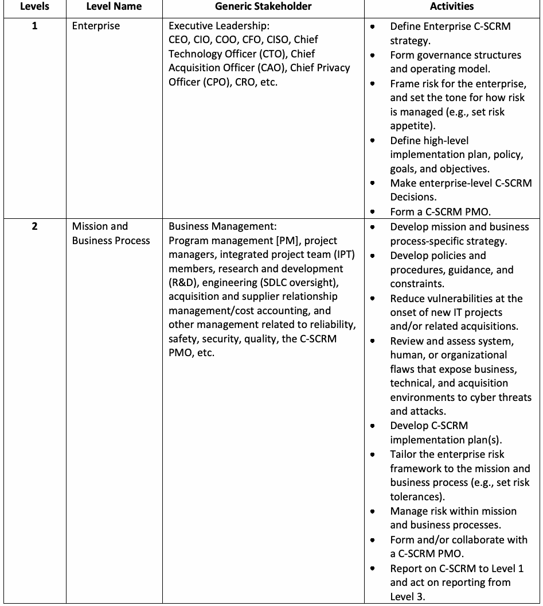
| レベル | レベル名 | 一般的なステークホルダー | 活動 |
| 1 | エンタープライズ | 経営幹部：CEO、CIO、COO、CFO、CISO、最高技術責任者（CTO）、最高調達責任者（CAO）、最高プライバシー責任者（CPO）、CROなど。 | • エンタープライズのC-SCRM戦略を定義する。 • ガバナンス構造および運用モデルを形成する。 • エンタープライズのリスクの枠組みを設定し、リスク管理の方針（例：リスク選好の設定）を定める。 • 上位レベルの実装計画、ポリシー、目標、および目的を定義する。 • エンタープライズレベルのC-SCRMに関する意思決定を行う。 • C-SCRM PMOを設置する。 |
| 2 | ミッションおよび事業プロセス | 事業管理：プログラム管理［PM］、プロジェクトマネージャー、統合プロジェクトチーム（IPT）のメンバー、研究開発（R&D）、エンジニアリング（SDLC監督）、調達および供給者関係管理／原価計算、ならびに信頼性、安全性、セキュリティ、品質、C-SCRM PMOなどに関するその他の管理担当者。 | • ミッションおよび事業プロセスに固有の戦略を策定する。 • ポリシーおよび手順、指針、制約を策定する。 • 新しいITプロジェクトおよび／または関連する取得の開始時に脆弱性を低減する。 • 事業、技術、および調達の環境をサイバー脅威や攻撃にさらす、システム、人、または組織上の欠陥を確認し評価する。 • C-SCRM実装計画を策定する。 • エンタープライズのリスク枠組みをミッションおよび事業プロセスに合わせて調整する（例：リスク許容度の設定）。 • ミッションおよび事業プロセス内のリスクを管理する。 • C-SCRM PMOを設置し、および／または連携する。 • レベル1にC-SCRMを報告し、レベル3からの報告に基づいて行動する。 |
| Levels | Level Name | Generic Stakeholder | Activities |
| 3 | Operational | Systems Management: Architects, developers, system owners, QA/QC, testing, contracting personnel, C-SCRM PMO staff, control engineer and/or control system operator, etc. | • Develop C-SCRM plans. • Implement C-SCRM policies and requirements. • Adhere to constraints provided by Level 1 and Level 2. • Tailor C-SCRM to the context of the individual system, and apply it throughout the SDLC. • Report on C-SCRM to Level 2. |
原本PDFの抜粋画像
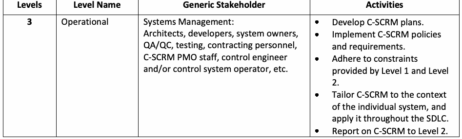
| レベル | レベル名 | 一般的なステークホルダー | 活動 |
| 3 | 運用 | システム管理：アーキテクト、開発者、システム所有者、QA/QC、テスト担当者、契約担当者、C-SCRM PMOスタッフ、制御エンジニアおよび／または制御システム運用者など。 | • C-SCRM計画を策定する。 • C-SCRMポリシーおよび要件を実装する。 • レベル1およびレベル2が定めた制約を遵守する。 • 個々のシステムの状況にC-SCRMを合わせ、SDLC全体で適用する。 • レベル2にC-SCRMを報告する。 |
The C-SCRM process should be carried out across the three risk management levels with the overall objective of continuous improvement of the enterprise’s risk-related activities and effective inter- and intra-level communication, thus integrating both strategic and tactical activities among all stakeholders with a shared interest in the mission and business success of the enterprise. Whether addressing a component, system, process, mission process, or policy, it is important to engage the relevant C-SCRM stakeholders at each level to ensure that risk management activities are as informed as possible. Figure 7 illustrates the relationship between key C-SCRM documents across the three levels.
C-SCRMプロセスは、エンタープライズのリスク関連活動の継続的改善と、階層間および階層内の効果的なコミュニケーションを全体目標として3つのリスク管理レベル全体で実施すべきであり、これにより、エンタープライズのミッションおよび事業の成功に共通の関心を持つすべてのステークホルダー間で、戦略的活動と戦術的活動の両方を統合する。コンポーネント、システム、プロセス、ミッションプロセス、または方針のいずれに対処する場合も、リスク管理活動に可能な限り十分な情報が反映されるよう、各レベルの関連するC-SCRMステークホルダーを関与させることが重要である。図7は、3つのレベルにおける主要なC-SCRM文書間の関係を示す。
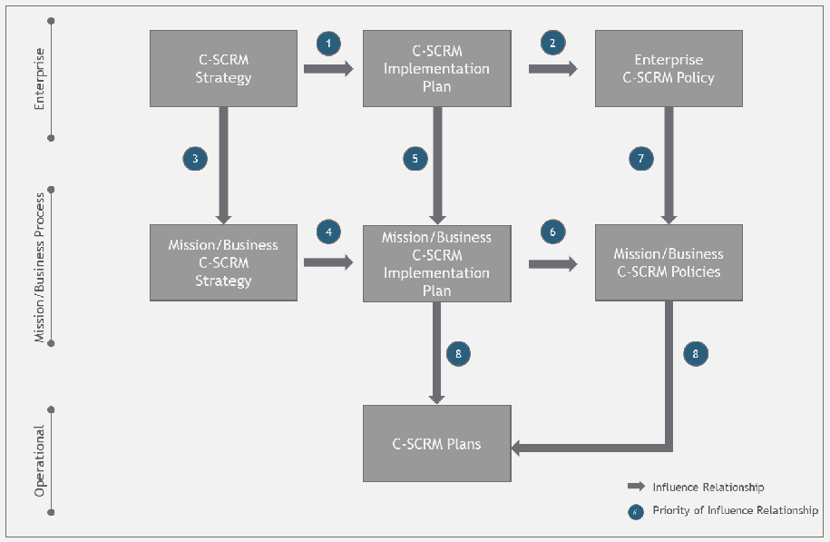
Fig. 7. Relationship between C-SCRM documents
図7. C-SCRM文書間の関係
The next few sections provide example roles and activities at each level. Because every enterprise is different, however, activities may be performed at different levels than listed and as individual enterprise context requires.
次のいくつかの節では、各レベルにおける役割および活動の例を示す。ただし、エンタープライズごとに状況が異なるため、活動は記載されたレベルとは異なるレベルで、また個々のエンタープライズの状況に応じて実施される場合がある。
原本PDFの抜粋画像
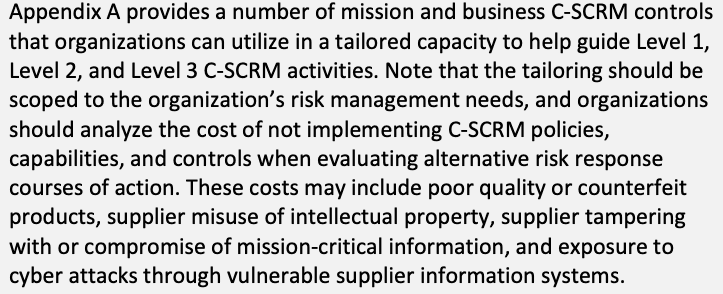
2.3.2. Level 1 — Enterprise
2.3.2. レベル1 — エンタープライズ
Effective C-SCRM requires commitment, direct involvement, and ongoing support from senior leaders and executives. Enterprises should designate the responsibility for leading agency-wide SCRM activities to an executive-level individual, office (supported by an expert staff), or group (e.g., a risk board, executive steering committee, or executive leadership council) regardless of an agency’s specific organizational structure. Because cybersecurity risks throughout the supply chain can be present across every major business line, enterprises should ensure that C-SCRM roles and responsibilities are defined for senior leaders who participate in supply chain activities (e.g., acquisition and procurement, information security, information technology, legal, program management, and supply chain and logistics). Without establishing executive oversight of C-SCRM activities, enterprises are limited in their ability to make risk decisions across the organization about how to effectively secure their product and services.
効果的なC-SCRMには、上級リーダーおよび幹部のコミットメント、直接的な関与、継続的な支援が必要である。企業は、機関固有の組織構造にかかわらず、機関全体のSCRM活動を主導する責任を、幹部レベルの個人、部署（専門職員の支援を受ける）、またはグループ（例：リスク委員会、幹部運営委員会、幹部リーダーシップ評議会）に割り当てるべきである。サプライチェーン全体のサイバーセキュリティリスクは主要な事業部門のいずれにも存在し得るため、企業は、サプライチェーン活動（例：取得・調達、情報セキュリティ、情報技術、法務、プログラム管理、サプライチェーン・物流）に参加する上級リーダーのC-SCRM上の役割と責任を定めるべきである。C-SCRM活動に対する幹部の監督体制を確立しなければ、製品・サービスを効果的に保護する方法について、組織全体のリスク判断を行う企業の能力は限られる。
Level 1 (Enterprise) sets the tone and direction for enterprise-wide C-SCRM activities by providing an overarching C-SCRM strategy, a C-SCRM policy, and a High-level Implementation Plan that shapes how C-SCRM is implemented across the enterprise. Within Level-1, governance structures are formed to enable senior leaders and executives to collaborate on C-SCRM with the risk executive (function), make C-SCRM decisions, delegate decisions to Level 2 and Level 3, and prioritize enterprise-wide resource allocation for C-SCRM. Level 1 activities help to ensure that C-SCRM mitigation strategies are consistent with the strategic goals and objectives of the enterprise. Level 1 activities culminate in the C-SCRM Strategy, Policy, and High-Level Implementation Plan that shape and constrain how C-SCRM is carried out at Level 2 and Level 3.
レベル1（企業）は、全社的なC-SCRM戦略、C-SCRM方針、および企業全体でのC-SCRM実装方法を形作る高位の実施計画を提示し、全社的なC-SCRM活動の方向性を定める。レベル1では、上級リーダーや幹部がリスク管理責任者（機能）とC-SCRMについて連携し、C-SCRMに関する決定を行い、レベル2およびレベル3に決定権を委任し、全社的なC-SCRM資源配分に優先順位を付けられるよう、ガバナンス構造を形成する。レベル1の活動により、C-SCRMのリスク低減戦略が企業の戦略目標と整合するようにする。レベル1の成果は、レベル2およびレベル3でのC-SCRMの実施方法を方向付け、制約するC-SCRM戦略、方針および高位実施計画である。
未レビュー訳原本PDFの抜粋画像
原本PDFの抜粋画像
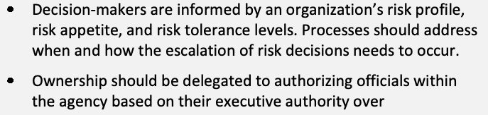
原本PDFの抜粋画像
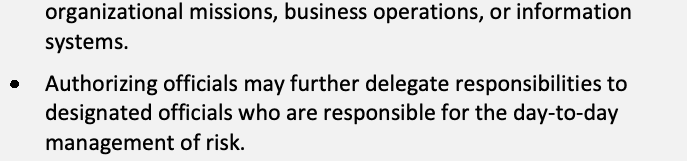
C-SCRM requires accountability, commitment, oversight, direct involvement, and ongoing support from senior leaders and executives. Enterprises should ensure that C-SCRM roles and responsibilities are defined for senior leaders who participate in supply chain activities (e.g., acquisition and procurement, information security, information technology, legal, program management, and supply chain and logistics). At Level 1, an executive board is typically responsible for evaluating and mitigating all risks across the enterprise. This is generally achieved through an Enterprise Risk Management (ERM) council. Effective C-SCRM gathers perspectives from leaders, all generally within the ERM council – such as the chief executive officer (CEO), chief risk officer (CRO), chief information officer (CIO), chief legal officer (CLO)/general counsel, chief information security officer (CISO), and chief acquisition officer (CAO) – and informs advice and recommendations from the CIO and CISO to the executive board.
C-SCRMには、上級リーダーおよび幹部の説明責任、コミットメント、監督、直接的な関与、継続的な支援が必要である。エンタープライズは、サプライチェーン活動（例：取得・調達、情報セキュリティ、情報技術、法務、プログラム管理、サプライチェーン・物流）に参加する上級リーダーについて、C-SCRMの役割と責任が定められていることを確実にすべきである。レベル1では通常、幹部委員会がエンタープライズ全体のすべてのリスクの評価と緩和に責任を負う。これは一般にエンタープライズリスク管理（ERM）評議会を通じて達成される。効果的なC-SCRMは、最高経営責任者（CEO）、最高リスク責任者（CRO）、最高情報責任者（CIO）、最高法務責任者（CLO）／法律顧問、最高情報セキュリティ責任者（CISO）、最高調達責任者（CAO）など、一般にいずれもERM評議会に属するリーダーの見解を集約し、CIOおよびCISOから幹部委員会への助言・提言に反映させる。
CIOs and/or CISOs may form a C-SCRM oriented-body to provide in-depth analysis to inform the executive board’s ERM council. The C-SCRM council serves as a forum for setting priorities and managing cybersecurity risk in the supply chain for the enterprise. The C-SCRM council or other C-SCRM-oriented body is responsible for developing the C-SCRM enterprise-wide strategy. The C-SCRM strategy makes explicit the enterprise’s assumptions, constraints, risk tolerances, and priorities/trade-offs as established by the ERM council. C-SCRM is integrated into the organization’s overall enterprise risk management through the CIO and/or CISO membership within the executive board’s ERM council.
CIOおよび／またはCISOは、幹部委員会のERM評議会に情報を提供するための詳細な分析を行うC-SCRM指向の組織を設置してもよい。C-SCRM評議会は、エンタープライズのサプライチェーンにおけるサイバーセキュリティリスクの優先順位を設定し管理する場として機能する。C-SCRM評議会またはその他のC-SCRM指向の組織は、エンタープライズ全体のC-SCRM戦略の策定に責任を負う。C-SCRM戦略は、ERM評議会が定めたエンタープライズの前提、制約、リスク許容度、および優先事項／トレードオフを明示する。CIOおよび／またはCISOが幹部委員会のERM評議会に参加することを通じて、C-SCRMは組織全体のエンタープライズリスク管理に統合される。
These leaders are also responsible and accountable for developing and promulgating a holistic set of policies that span the enterprise’s mission and business processes, guiding the establishment and maturation of a C-SCRM capability and the implementation of a cohesive set of C-SCRM activities. Leaders should establish a C-SCRM PMO or other dedicated C-SCRM-related function to drive C-SCRM activities and serve as a fulcrum for coordinated, C-SCRM-oriented services and guidance to the enterprise. Leaders should also clearly articulate the lead roles at the mission and business process level that are responsible and accountable for detailing action plans and executing C-SCRM activities. Enterprises should consider that without establishing executive oversight of C-SCRM activities, enterprises are limited in their ability to make risk decisions across the organization about how to effectively secure their product and services.
これらのリーダーは、企業の使命および事業プロセス全体を対象とする包括的な方針群を策定・公布し、C-SCRM能力の確立と成熟、および一貫したC-SCRM活動群の実施を導く責任と説明責任も負う。リーダーは、C-SCRM活動を推進し、企業に調整済みのC-SCRMサービスと指針を提供する中核として、C-SCRMプログラム管理室（PMO）または他の専任機能を設置すべきである。また、行動計画の詳細化とC-SCRM活動の実行について責任と説明責任を負う、使命・事業プロセスレベルの主導的役割を明確に示すべきである。C-SCRM活動に対する幹部の監督体制を設けなければ、製品・サービスを効果的に保護する方法について組織全体のリスク判断を行う能力が限られる点も考慮すべきである。
未レビュー訳The C-SCRM governance structures and operational model dictate the authority, responsibility, and decision-making power for C-SCRM and define how C-SCRM processes are accomplished within the enterprise. The best C-SCRM governance and operating model is one that meets the business and functional requirements of the enterprise. For example, an enterprise facing strict budgetary constraints or stiff C-SCRM requirements may consider governance and operational models that centralize the decision-making authority and rely on a C-SCRM PMO to consolidate responsibilities for resource-intensive tasks, such as vendor risk assessments. In contrast, enterprises that have mission and business processes governed with a high degree of autonomy or that possess highly differentiated C-SCRM requirements may opt for decentralized authority, responsibilities, and decision-making power.
C-SCRMのガバナンス構造と運用モデルは、C-SCRMに関する権限、責任、意思決定権を定め、企業内でC-SCRMプロセスをどのように遂行するかを定義する。最適なモデルとは、企業の事業要件および機能要件を満たすものである。例えば、厳しい予算制約または厳格なC-SCRM要件に直面する企業は、意思決定権限を集約し、ベンダーリスク評価など資源集約型の業務の責任をC-SCRM PMOにまとめるガバナンス・運用モデルを検討できる。一方、使命・事業プロセスに高度な自律性がある企業や、C-SCRM要件が大きく異なる企業は、権限、責任、意思決定権を分散させることを選ぶ場合がある。
未レビュー訳In addition to defining C-SCRM governance structures and operating models, Level 1 carries out the activities necessary to frame C-SCRM for the enterprise. C-SCRM framing is the process by which the enterprise makes explicit the assumptions about cybersecurity risks throughout the supply chain (e.g., threats, vulnerabilities, risk impact,21 risk likelihood), constraints (e.g., enterprise policies, regulations, resource limitation), appetite and tolerance, and priorities and trade-offs that guide C-SCRM decisions across the enterprise. The risk framing process provides the inputs necessary to establish the C-SCRM strategy that dictates how the enterprise plans to assess, respond to, and monitor cybersecurity risks throughout the supply chain. A high-level implementation plan should also be developed to guide the execution of the enterprise’s C-SCRM strategy. The risk framing process is discussed in further detail in Appendix C.
C-SCRMのガバナンス構造と運用モデルを定めることに加え、レベル1は企業のC-SCRMの枠組みを設定する活動を行う。リスク枠組み設定とは、企業全体のC-SCRM判断を導くため、サプライチェーン全体のサイバーセキュリティリスクに関する前提（例：脅威、脆弱性、リスク影響21、発生可能性）、制約（例：企業方針、規制、資源の制限）、リスク選好度・許容度、優先事項およびトレードオフを明示するプロセスである。このプロセスは、サプライチェーン全体のサイバーセキュリティリスクを企業がどのように評価、対応、監視するかを定めるC-SCRM戦略の策定に必要な入力を提供する。企業のC-SCRM戦略の実行を導く高位の実施計画も策定すべきである。リスク枠組み設定プロセスの詳細は付録Cで説明する。
未レビュー訳Informed by the risk framing process and the C-SCRM strategy, Level 1 provides the enterprise’s C-SCRM policy. The C-SCRM policy establishes the C-SCRM program’s purpose, outlines the enterprise’s C-SCRM responsibilities, defines and grants authority to C-SCRM roles across the enterprise, and outlines applicable C-SCRM compliance and enforcement expectations and processes. Appendix C provides example templates for the C-SCRM Strategy and C-SCRM Policy.
リスク枠組み設定プロセスおよびC-SCRM戦略を踏まえ、レベル1は企業のC-SCRM方針を定める。この方針は、C-SCRMプログラムの目的、企業のC-SCRM責任、企業内のC-SCRM上の役割を定義して権限を付与し、適用されるC-SCRM遵守・執行に関する期待事項とプロセスを概説する。付録CにはC-SCRM戦略および方針のテンプレート例を示す。
Risk assessment activities performed at Level 1 focus on assessing, responding to, and monitoring cybersecurity risks throughout the supply chain. Level 1 risk assessments may be based on the enterprise’s Level 1 Frame step (i.e., assumptions, constraints, appetite, tolerances, priorities, and trade-offs) or may be aggregated enterprise-level assumptions based on risk assessments that are completed across multiple mission and business processes. For example, a Level 1 risk assessment may assess the exposure to threats to enterprise objectives that arise through supply chain products or services. Level 1 risk assessments may also aim to aggregate and recontextualize risk assessments completed at Level 2 to describe risk scenarios against the enterprise’s primary objectives.
レベル1で実施するリスク評価活動は、サプライチェーン全体のサイバーセキュリティリスクの評価、対応、および監視に重点を置く。レベル1のリスク評価は、エンタープライズのレベル1フレーム段階（すなわち、前提、制約、選好度、許容度、優先事項、およびトレードオフ）に基づく場合もあれば、複数のミッションおよび事業プロセスにわたって完了したリスク評価に基づく、集約されたエンタープライズレベルの前提に基づく場合もある。例えば、レベル1のリスク評価では、サプライチェーンの製品またはサービスを通じて生じる、エンタープライズの目標に対する脅威へのエクスポージャーを評価することがある。また、レベル1のリスク評価は、レベル2で完了したリスク評価を集約して再文脈化し、エンタープライズの主要目標に対するリスクシナリオを記述することを目的とする場合もある。
Reporting plays an important role in equipping Level 1 decision-makers with the context necessary to make informed decisions on how to manage cybersecurity risks throughout the supply chain. Reporting should focus on enterprise-wide trends and include coverage of the extent to which C-SCRM has been implemented across the enterprise, the effectiveness of C-SCRM, and the conditions related to cybersecurity risks throughout the supply chain. C-SCRM reports should highlight any conditions that require urgent leadership attention and/or action and may benefit from highlighted C-SCRM risk and performance trends over a period of time. Those responsible and accountable for C-SCRM within the enterprise should work with leaders to identify reporting requirements, such as frequency, scope, and format. Reporting should include metrics discussed further in Sec. 3.5.1.
報告は、レベル1の意思決定者に、サプライチェーン全体のサイバーセキュリティリスクをどのように管理するかについて情報に基づく意思決定を行うために必要な文脈を与える上で、重要な役割を果たす。報告は、エンタープライズ全体の傾向に重点を置き、C-SCRMがエンタープライズ全体でどの程度実装されているか、C-SCRMの有効性、およびサプライチェーン全体のサイバーセキュリティリスクに関連する状況を含めるべきである。C-SCRM報告は、リーダーシップによる緊急の注意および／または行動を要する状況を強調すべきであり、一定期間にわたるC-SCRMリスクおよびパフォーマンスの傾向を強調することで有益となる場合がある。エンタープライズ内でC-SCRMに責任と説明責任を負う者は、リーダーと協力して、頻度、範囲、形式などの報告要件を特定すべきである。報告には、3.5.1節でさらに論じる指標を含めるべきである。
未レビュー訳Level 1 activities ultimately provide the overarching context and boundaries within which the enterprise’s mission and business processes manage cybersecurity risks throughout the supply chain. Outputs from Level 1 (e.g., C-SCRM Strategy, C-SCRM Policy, Governance, and Operating Model) are further tailored and refined within Level 2 to fit the context of each mission and business process. Level 1 outputs should also be iteratively informed by and updated as a result of C-SCRM outputs at lower levels.
レベル1の活動は、最終的に、エンタープライズのミッションおよび事業プロセスがサプライチェーン全体のサイバーセキュリティリスクを管理する際の包括的な文脈と境界を提供する。レベル1の成果物（例：C-SCRM戦略、C-SCRMポリシー、ガバナンス、運用モデル）は、各ミッションおよび事業プロセスの文脈に適合するよう、レベル2でさらに調整・精緻化される。レベル1の成果物は、下位レベルのC-SCRMの成果物からも反復的に情報を得て、その結果として更新されるべきである。
Note that, in complex enterprises, Level 1 activities may be completed at an enterprise level and at an individual organization level. Enterprise Level 1 activities should shape and guide Organization Level 1 activities.
複雑な企業では、レベル1の活動を企業レベルと個々の組織レベルの双方で実施する場合がある。企業レベルのレベル1活動は、組織レベルのレベル1活動を形作り、導くべきである。
Additional information can be found in Appendix A of this document and SR-1, SR-3, PM-2, PM-6, PM-7, PM-9, PM-28, PM-29, PM-30, and PM-31 of NIST SP 800-53, Rev. 5.
追加情報は、本書の付録A、およびNIST SP 800-53 Rev. 5のSR-1、SR-3、PM-2、PM-6、PM-7、PM-9、PM-28、PM-29、PM-30、PM-31に記載されている。
未レビュー訳2.3.3. Level 2 — Mission and Business Process
2.3.3. レベル2 — ミッションおよび事業プロセス
Level 2 addresses how the enterprise mission and business processes assess, respond to, and monitor cybersecurity risks throughout the supply chain. Level 2 activities are performed in accordance with the C-SCRM strategy and policies provided by Level 1.22 In this level, process-specific C-SCRM strategies, policies, and implementation plans dictate how the enterprise’s C-SCRM goals and requirements are met within each mission and business process. Here, specific C-SCRM program requirements are defined and managed and include cost, schedule, performance, security, and a variety of critical non-functional requirements. These non-functional requirements include concepts such as reliability, dependability, safety, security, and quality.
レベル2では、企業の使命・事業プロセスが、サプライチェーン全体のサイバーセキュリティリスクをどのように評価、対応、監視するかを扱う。レベル2の活動はレベル1が提示するC-SCRM戦略および方針に従って実施する。22 このレベルでは、プロセス固有のC-SCRM戦略、方針および実施計画により、各使命・事業プロセス内で企業のC-SCRM目標と要件をどのように満たすかを定める。ここでは、費用、スケジュール、性能、セキュリティ、その他の重要な非機能要件を含む、具体的なC-SCRMプログラム要件を定義・管理する。非機能要件には信頼性、安全性、セキュリティ、品質などの概念が含まれる。
未レビュー訳Level 2 roles include representatives of each mission and business process, such as program managers, research and development, and acquisitions/procurement. Level 2 C-SCRM activities address C-SCRM within the context of the enterprise’s mission and business process. Specific strategies, policies, and procedures should be developed to tailor the C-SCRM implementation to fit the specific requirements of each mission and business process. In order to further develop the high-level Enterprise Strategy and Implementation Plan, different mission areas or business lines within the enterprise may need to generate their own tailored mission and business-level strategy and implementation plan, and they should ensure that C-SCRM execution occurs within the constraints defined by higher-level C-SCRM strategies and in conformance C-SCRM policies. To facilitate the development and execution of Level 2 Strategy and Implementation plans, enterprises may benefit from forming a committee with representation from each mission and business process. Coordination and collaboration between the mission and business processes can help drive risk awareness, identify cybersecurity risks throughout the supply chain, and support the development of an enterprise and C-SCRM architecture. A C-SCRM PMO may also assist in the implementation of C-SCRM at Level 2 through the provision of services (e.g., policy templates, C-SCRM subject matter expert [SME] support).
レベル2の役割には、プログラムマネージャー、研究開発、取得／調達など、各ミッションおよび事業プロセスの代表者が含まれる。レベル2のC-SCRM活動は、エンタープライズのミッションおよび事業プロセスの文脈の中でC-SCRMに対処する。C-SCRMの実装を各ミッションおよび事業プロセスの個別の要件に合わせて調整するため、具体的な戦略、ポリシー、および手順を策定すべきである。上位レベルのエンタープライズ戦略および実施計画をさらに具体化するために、エンタープライズ内の各ミッション領域または事業部門は、独自に調整したミッションおよび事業レベルの戦略と実施計画を作成する必要がある場合があり、C-SCRMの実行が上位レベルのC-SCRM戦略で定められた制約の範囲内で、かつC-SCRMポリシーに適合して行われるようにすべきである。レベル2の戦略および実施計画の策定と実行を促進するため、エンタープライズは、各ミッションおよび事業プロセスの代表者からなる委員会を設置することで利益を得られる場合がある。ミッションおよび事業プロセス間の調整と連携は、リスク認識を高め、サプライチェーン全体のサイバーセキュリティリスクを特定し、エンタープライズおよびC-SCRMアーキテクチャの策定を支援する助けとなり得る。C-SCRM PMOも、サービス（例：ポリシーテンプレート、C-SCRM専門家［SME］による支援）の提供を通じて、レベル2でのC-SCRMの実装を支援してもよい。
Many threats to and through the supply chain are addressed at Level 2 in the management of third-party relationships with suppliers, developers, system integrators, external system service providers, and other ICT/OT-related service providers. Because C-SCRM can both directly and indirectly impact mission processes, understanding, integrating, and coordinating C-SCRM activities at this level are critical. Level 2 activities focus on tailoring and applying the enterprise’s C-SCRM frame to fit the specific mission and business process threats, vulnerabilities, impacts,23 and likelihoods. Informed by outputs from Level 1 (e.g., C-SCRM strategy), mission and business processes will adopt a C-SCRM strategy that tailors the enterprise’s overall strategy to a specific mission and business process. At Level 2, the enterprise may also issue mission and business process-specific policies that contextualize the enterprise’s policy for the process.
サプライチェーンに対する、またはサプライチェーンを経由する多くの脅威は、供給者、開発者、システムインテグレーター、外部システムサービスプロバイダー、その他のICT/OT関連サービスプロバイダーとの第三者関係を管理するレベル2で対処する。C-SCRMは使命プロセスに直接・間接の影響を与えるため、このレベルでの理解、統合、調整が重要である。レベル2の活動では、企業のC-SCRM枠組みを、個別の使命・事業プロセスに特有の脅威、脆弱性、影響23、発生可能性に合わせて調整・適用する。レベル1の成果（例：C-SCRM戦略）を踏まえ、使命・事業プロセスは企業全体の戦略を個別の状況に合わせたC-SCRM戦略を採用する。レベル2では、企業方針をプロセスの状況に即して具体化する、使命・事業プロセス固有の方針を発行する場合もある。
未レビュー訳In accordance with the C-SCRM strategy, enterprise leaders for specific mission and business processes should develop and execute a C-SCRM implementation plan. The C-SCRM implementation plan provides a more detailed roadmap for operationalizing the C-SCRM strategy within the mission and business process. Within the C-SCRM implementation plans, the mission and business process will specify C-SCRM roles, responsibilities, implementation milestones, dates, and processes for monitoring and reporting. Appendix D of this document provides example templates for the C-SCRM Strategy, Implementation Plan, and the C-SCRM Policy.
C-SCRM戦略に従い、特定のミッションおよび事業プロセスを担当するエンタープライズのリーダーは、C-SCRM実施計画を策定し実行すべきである。C-SCRM実施計画は、ミッションおよび事業プロセス内でC-SCRM戦略を運用化するための、より詳細なロードマップを提供する。C-SCRM実施計画の中で、ミッションおよび事業プロセスは、C-SCRMの役割、責任、実施マイルストーン、期日、ならびに監視および報告のプロセスを規定する。本書の付録Dは、C-SCRM戦略、実施計画、およびC-SCRMポリシーのテンプレート例を提供する。
C-SCRM activities performed at Level 2 focus on assessing, responding to, and monitoring risk exposure arising from the mission and business process dependencies on suppliers, developers, system integrators, external system service providers, and other ICT/OT-related service providers. Risk exposures to the supply chain may occur as a result of primary dependencies on the supply chain or secondary dependencies on individual information systems or other mission and business processes. For example, risk exposure may arise due to a supplier providing critical system components or services to multiple information systems on which critical processes depend. Risk may also arise from vendor-sourced products and services unrelated to information systems, as well as the roles that these products and services play in the overall mission and business process objectives. Enterprises should consider non-traditional sources of cybersecurity risks throughout the supply chain. These risks may circumvent or escape C-SCRM processes, such as those arising from the use of open source software. Enterprises should establish policies and controls to manage non-traditional cybersecurity risks throughout the supply chain.
レベル2で実施するC-SCRM活動は、ミッションおよび事業プロセスの供給者、開発者、システムインテグレーター、外部システムサービスプロバイダー、およびその他のICT/OT関連サービスプロバイダーへの依存から生じるリスクエクスポージャーの評価、対応、および監視に重点を置く。サプライチェーンに対するリスクエクスポージャーは、サプライチェーンへの一次的な依存の結果として、または個々の情報システムや他のミッションおよび事業プロセスへの二次的な依存の結果として生じ得る。例えば、重要なプロセスが依存する複数の情報システムに対し、供給者が重要なシステムコンポーネントまたはサービスを提供していることにより、リスクエクスポージャーが生じる場合がある。リスクは、情報システムに関連しないベンダー調達の製品およびサービス、ならびにそれらの製品およびサービスがミッションおよび事業プロセス全体の目標において果たす役割からも生じ得る。エンタープライズは、サプライチェーン全体のサイバーセキュリティリスクの非従来型の発生源を考慮すべきである。こうしたリスクは、オープンソースソフトウェアの使用から生じるものなど、C-SCRMプロセスを回避する、またはすり抜ける可能性がある。エンタープライズは、サプライチェーン全体の非従来型のサイバーセキュリティリスクを管理するためのポリシーおよび管理策を確立すべきである。
Reporting at Level 2 plays an important role in equipping mission and business process leaders with the context necessary to manage C-SCRM within the scope of their mission and business processes. Topics covered at Level 2 will reflect those covered at Level 1 but should be reshaped to focus on the specific mission and business process that they correspond to. Level 2 reporting should include metrics that demonstrate the mission and business process performance in contrast to the enterprise-defined risk appetite and risk tolerance statements defined at Level 1 and Level 2. Reporting requirements should be defined to fit the needs of leaders in mission and business processes and at Level 1.
レベル2の報告は、使命・事業プロセスのリーダーがその範囲内でC-SCRMを管理するための背景情報を提供する。扱うトピックはレベル1のものに対応させつつ、各使命・事業プロセスに焦点を当てて調整すべきである。報告には、レベル1とレベル2で定めた企業のリスク選好度・許容度に照らした、使命・事業プロセスの実績を示す指標を含めるべきである。報告要件は、使命・事業プロセスのリーダーとレベル1のニーズに合わせて定めるべきである。
未レビュー訳Outputs from Level 2 activities will significantly impact how C-SCRM activities are carried out at Level 3. For example, risk tolerance and common control baseline decisions may be defined at Level 2 then tailored and applied within the context of individual information systems at Level
レベル2の活動の成果は、レベル3でのC-SCRM活動に大きな影響を与える。例えば、リスク許容度や共通管理策ベースラインに関する決定をレベル2で行い、個々の情報システムの状況に合わせて調整・適用できる。
未レビュー訳3.Level 2 outputs should also be used to iteratively influence and further refine Level 1 outputs.
3.レベル2の成果も、レベル1の成果に反復的に影響を与え、さらに具体化するために用いるべきである。
未レビュー訳Additional information can be found in Appendix A of this document and SR-1, SR-3, SR-6, PM-2, PM-6, PM-7, PM-30, PM-31, and PM-32 of NIST SP 800-53, Rev. 5.
詳細は本書の付録A、およびNIST SP 800-53 Rev. 5のSR-1、SR-3、SR-6、PM-2、PM-6、PM-7、PM-30、PM-31、PM-32を参照すること。
2.3.4. Level 3 — Operational
2.3.4. レベル3 — 運用
Level 3 is comprised of personnel responsible and accountable for operational activities, including conducting procurements and executing system-related C-SCRM activities as part of the enterprise’s SDLC, which includes research and development, design, manufacturing, delivery, integration, operations and maintenance, and the disposal/retirement of systems. These personnel include system owners, contracting officers, contracting officer representatives, architects, system engineers, information security specialists, system integrators, and developers. These personnel are responsible for developing C-SCRM plans that address the management, implementation assurance, and monitoring of C-SCRM controls (to include those applicable to external parties, such as contractors) and the acquisition, development, and sustainment of systems and components across the SDLC to support mission and business processes. In enterprises where a C-SCRM PMO has been established, activities such as product risk assessments may be provided as a centralized, shared service.
レベル3は、エンタープライズのSDLCの一環として、調達の実施やシステム関連のC-SCRM活動の遂行を含む運用活動に責任と説明責任を負う要員で構成される。SDLCには、研究開発、設計、製造、提供、統合、運用・保守、およびシステムの廃棄／退役が含まれる。これらの要員には、システム所有者、契約担当官、契約担当官代表、アーキテクト、システムエンジニア、情報セキュリティ専門家、システムインテグレーター、および開発者が含まれる。これらの要員は、ミッションおよび事業プロセスを支援するため、C-SCRM管理策（請負業者などの外部関係者に適用されるものを含む）の管理、実装保証、および監視、ならびにSDLC全体にわたるシステムおよびコンポーネントの取得、開発、および維持に対処するC-SCRM計画を策定する責任を負う。C-SCRM PMOが設置されているエンタープライズでは、製品リスク評価などの活動を、集中型の共有サービスとして提供する場合がある。
Within Level 3, outputs provided by C-SCRM activities completed at Level 1 and Level 2 prepare the enterprise to execute C-SCRM at the operational level in accordance with the RMF [SP80037]. C-SCRM is applied to information systems through the development and implementation of C-SCRM plans. These plans are heavily influenced by assumptions, constraints, risk appetite and tolerance, priorities, and trade-offs defined by Level 1 and Level 2. C-SCRM plans dictate how C-SCRM activities are integrated into all systems in the SDLC: acquisition (both custom and off-the-shelf), requirements, architectural design, development, delivery, installation, integration, maintenance, and disposal/retirement. In general, C-SCRM plans are implementation-specific and provide policy implementation, requirements, constraints, and implications for systems that support mission and business processes.
レベル3では、レベル1およびレベル2で完了したC-SCRM活動による成果物により、エンタープライズはRMF [SP80037]に従って運用レベルでC-SCRMを実行する準備が整う。C-SCRMは、C-SCRM計画の策定と実施を通じて情報システムに適用される。これらの計画は、レベル1およびレベル2で定められた前提、制約、リスク選好度および許容度、優先事項、ならびにトレードオフに大きく影響される。C-SCRM計画は、SDLCのすべてのシステム、すなわち取得（カスタム品と市販品の両方）、要件、アーキテクチャ設計、開発、提供、設置、統合、保守、および廃棄／退役に、C-SCRM活動をどのように統合するかを規定する。一般に、C-SCRM計画は実装固有であり、ミッションおよび事業プロセスを支援するシステムについて、ポリシーの実装、要件、制約、および影響を示す。
Level 3 activities focus on managing operational-level risk exposure resulting from any ICT/OT-related products and services provided through the supply chain that are in use by the enterprise or fall within the scope of the systems authorization boundary. Level 3 C-SCRM activities begin with an analysis of the likelihood and impact of potential supply chain cybersecurity threats exploiting an operational-level vulnerability (e.g., in a system or system component). Where applicable, these risk assessments should be informed by risk assessments completed in Level 1 and Level 2. In response to determining risk, enterprises should evaluate alternative courses of action for reducing risk exposure (e.g., accept, avoid, mitigate, share, and/or transfer). Risk response is achieved by selecting, tailoring, implementing, and monitoring C-SCRM controls throughout the SLDC in accordance with the RMF [SP80037]. Selected C-SCRM controls often consist of a combination of inherited common controls from the Level 1 and Level 2 and information system-specific controls at Level 3.
レベル3の活動では、企業が使用中の、またはシステム認可境界内にあるサプライチェーン経由のICT/OT関連製品・サービスに起因する運用レベルのリスクエクスポージャーを管理する。レベル3のC-SCRM活動は、運用レベルの脆弱性（例：システムまたはシステムコンポーネントの脆弱性）を悪用するサプライチェーン・サイバーセキュリティ脅威について、発生可能性と影響を分析することから始まる。該当する場合、リスク評価にはレベル1・2で完了した評価を反映すべきである。リスクを特定した後、企業はエクスポージャーを低減する代替策（例：受容、回避、低減、共有、および／または移転）を評価すべきである。RMF[SP80037]に従い、SLDC全体を通じてC-SCRM管理策を選択、調整、実装、監視することでリスクに対応する。選択した管理策は、レベル1・2から継承する共通管理策と、レベル3の情報システム固有管理策を組み合わせることがよくある。
未レビュー訳Reporting at Level 3 should focus on the C-SCRM’s implementation, efficiency, effectiveness, and the overall level of exposure to cybersecurity risks in the supply chain for the particular system. System-level reporting should provide system owners with tactical-level insights that enable them to make rapid adjustments and respond to risk conditions. Level 3 reporting should include metrics that demonstrate performance against the enterprise risk appetite statements and risk tolerance statements defined at Levels 1, 2, and 3.
レベル3の報告は、特定のシステムに関するC-SCRMの実装、効率、有効性、サプライチェーン・サイバーセキュリティリスクへの全体的なエクスポージャーに重点を置くべきである。システムレベルの報告は、システム所有者が迅速に調整し、リスク状況に対応できる戦術的な洞察を提供すべきである。レベル3の報告には、レベル1、2、3で定めた企業のリスク選好度表明および許容度表明に対する実績を示す指標を含めるべきである。
A critical Level 3 activity is the development of the C-SCRM plan. Along with applicable security control information, the C-SCRM plan includes information on the system, its categorization, operational status, related agreements, architecture, critical system personnel, related laws, regulations, policies, and contingency plan. In C-SCRM, continuous hygiene is critical, and the C-SCRM plan is a living document that should be maintained and used as the reference for the continuous monitoring of implemented C-SCRM controls. C-SCRM plans are intended to be referenced regularly and should be reviewed and refreshed periodically. These are not intended to be documents developed to satisfy a compliance requirement. Rather, enterprises should be able to demonstrate how they have historically and continue to effectively employ their plans to shape, align, inform, and take C-SCRM actions and decisions across all three levels.
レベル3の重要な活動は、C-SCRM計画の策定である。C-SCRM計画には、適用されるセキュリティ管理策の情報とともに、システム、その分類、運用状況、関連する合意、アーキテクチャ、重要なシステム要員、関連する法律、規制、ポリシー、および緊急時対応計画に関する情報が含まれる。C-SCRMでは継続的なハイジーンが重要であり、C-SCRM計画は、実装済みのC-SCRM管理策の継続的監視の基準として維持・使用すべき、随時更新される文書である。C-SCRM計画は定期的に参照されることを意図しており、定期的に見直し・更新すべきである。これらは、コンプライアンス要件を満たすために作成する文書を意図したものではない。むしろ、エンタープライズは、3つのすべてのレベルにわたってC-SCRMの行動と意思決定を形成し、整合させ、情報を与え、実行するために、計画をこれまでどのように、またこれからも引き続き効果的に活用しているかを示せるべきである。
未レビュー訳Information gathered as part of Level 3 C-SCRM activities should iteratively inform C-SCRM activities completed within Level 1 and Level 2 to further refine C-SCRM strategies and implementation plans.
レベル3のC-SCRM活動の一環として収集した情報は、C-SCRM戦略および実施計画をさらに精緻化するため、レベル1およびレベル2で完了したC-SCRM活動に反復的に反映されるべきである。
Additional information can be found in Appendix A of this document and SR-1, SR-2, SR-6, PL-2, PM-31, and PM-32 of NIST SP 800-53, Rev. 5.
詳細は本書の付録A、およびNIST SP 800-53 Rev. 5のSR-1、SR-2、SR-6、PL-2、PM-31、PM-32を参照すること。
2.3.5. C-SCRM PMO
2.3.5. C-SCRM PMO
A variety of operating models (e.g., centralized, decentralized, hybrid) facilitate C-SCRM activities across the enterprise and its mission and business processes. One such model involves concentrating and assigning responsibilities for certain C-SCRM activities to a central PMO. In this model, the C-SCRM PMO acts as a service provider to other mission and business processes. Mission and business processes are then responsible for selecting and requesting services from the C-SCRM PMO as part of their responsibilities to meet the enterprise’s C-SCRM goals and objectives. There are a variety of beneficial services that a PMO may provide:
集中型、分散型、ハイブリッド型などの多様な運用モデルにより、企業全体および使命・事業プロセスでC-SCRM活動を実施できる。一つのモデルでは、特定のC-SCRM活動の責任を中央PMOに集約・割り当てる。このモデルではC-SCRM PMOが他の使命・事業プロセスへのサービス提供者となる。各プロセスは、企業のC-SCRM目標達成に向けた責任の一環として、PMOのサービスを選択し依頼する。PMOが提供し得る有益なサービスは次のとおりである。
•Advisory services and subject matter expertise
•助言サービスおよび専門知識
•Chair for internal C-SCRM working groups, council, or other coordination bodies
•社内C-SCRM作業部会、評議会、その他の調整組織の議長
•Centralized hub for tools, job aids, awareness, and training templates
•ツール、業務支援資料、啓発資料、研修テンプレートの一元的な拠点
•Supplier and product risk assessments
•供給者および製品のリスク評価
•Liaison to external stakeholders
•外部利害関係者との連絡調整
未レビュー訳•Information-sharing management (e.g., intra department/agency and to/from FASC)
•情報共有の管理（例：省庁・機関内、およびFASCとの情報授受）
•Management of C-SCRM risk register
•C-SCRMリスク登録簿の管理
•Secretariat/staffing function for enterprise C-SCRM governance
•全社的C-SCRMガバナンスの事務局・職員機能
•C-SCRM project and performance management
•C-SCRMプロジェクトおよび実績の管理
•C-SCRM briefings, presentations, and reporting
•C-SCRMの説明会、プレゼンテーション、報告
未レビュー訳A C-SCRM PMO typically consists of C-SCRM SMEs who help drive the C-SCRM strategy and implementation across the enterprise and its mission and business processes. A C-SCRM PMO may include or report to a dedicated executive-level official responsible and accountable for overseeing C-SCRM activities across the enterprise. A C-SCRM PMO should consist of dedicated personnel or include matrixed representatives with responsibilities for C-SCRM from several of the enterprise’s processes, including information security, procurement, risk management, engineering, software development, IT, legal, and HR. Regardless of whether a C-SCRM PMO sits at Level 1 or Level 2, it is critical that the C-SCRM PMO include cross-disciplinary representation.
C-SCRM PMOは通常、企業および使命・事業プロセス全体でC-SCRM戦略と実施を推進する専門家（SME）で構成される。企業全体のC-SCRM活動の監督に責任と説明責任を負う専任の幹部職員をPMOに含める、またはその職員への報告系統を設ける場合がある。PMOは専任職員で構成するか、情報セキュリティ、調達、リスク管理、エンジニアリング、ソフトウェア開発、IT、法務、人事など複数の企業プロセスから、C-SCRMを担う兼務代表者を含めるべきである。PMOがレベル1と2のどちらに置かれるかにかかわらず、分野横断的な代表者を含めることが重要である。
The C-SCRM PMO responsibilities may include providing services to the enterprise’s leaders that help set the tone for how C-SCRM is applied throughout the enterprise. The C-SCRM PMO may provide SME support to guide Level 1 stakeholders through the risk framing process, which includes establishing the enterprise appetite and tolerance for cybersecurity risks throughout the supply chain. In addition, accountable risk executives may delegate the responsibility of drafting the enterprise’s C-SCRM strategy and policy to the PMO. C-SCRM PMOs may also coordinate C-SCRM information-sharing internally or with external entities. Finally, the PMO may conduct C-SCRM-focused executive-level briefings (e.g., to the risk executive function, board of directors) to help Level 1 stakeholders develop an aggregated view of cybersecurity risks throughout the supply chain.
C-SCRM PMOの責任には、エンタープライズ全体でC-SCRMをどのように適用するかの方向性を定める上で役立つサービスを、エンタープライズのリーダーに提供することが含まれる場合がある。C-SCRM PMOは、サプライチェーン全体のサイバーセキュリティリスクに対するエンタープライズの選好度および許容度の設定を含むリスクフレーミングのプロセスを通じて、レベル1のステークホルダーを導くためのSME支援を提供してもよい。加えて、説明責任を負うリスクエグゼクティブは、エンタープライズのC-SCRM戦略およびポリシーの起草責任をPMOに委任してもよい。C-SCRM PMOは、内部または外部の主体とのC-SCRM情報共有を調整してもよい。最後に、PMOは、レベル1のステークホルダーがサプライチェーン全体のサイバーセキュリティリスクを集約的に把握できるよう、C-SCRMに焦点を当てた経営幹部向けブリーフィング（例：リスクエグゼクティブ機能、取締役会向け）を実施してもよい。
At Level 2, the C-SCRM PMO may develop C-SCRM starter kits that contain a base strategy and a set of policies, procedures, and guidelines that can be further customized within specific mission and business processes. This PMO may also provide SME consulting support to stakeholders within mission and business processes as they create process-specific C-SCRM strategies and develop C-SCRM implementation plans. As part of this responsibility, the C-SCRM PMO may advise on or develop C-SCRM common control baselines within the enterprise mission and business processes. The C-SCRM PMO may also perform C-SCRM risk assessments focused on suppliers, developers, system integrators, external system service providers, and other ICT/OT-related service providers of both technology- and non-technology-related products and services.
レベル2では、C-SCRM PMOは、基本戦略と、特定のミッションおよび事業プロセス内でさらにカスタマイズできる一連のポリシー、手順、およびガイドラインを含むC-SCRMスターターキットを作成してもよい。このPMOは、ミッションおよび事業プロセス内のステークホルダーがプロセス固有のC-SCRM戦略を作成し、C-SCRM実施計画を策定する際に、SMEによるコンサルティング支援を提供してもよい。この責任の一環として、C-SCRM PMOは、エンタープライズのミッションおよび事業プロセス内におけるC-SCRM共通管理策ベースラインについて助言を行い、または策定してもよい。C-SCRM PMOは、技術関連および非技術関連の両方の製品およびサービスの供給者、開発者、システムインテグレーター、外部システムサービスプロバイダー、およびその他のICT/OT関連サービスプロバイダーに焦点を当てたC-SCRMリスク評価を実施してもよい。
The responsibility of a C-SCRM PMO at Level 1 and Level 2 would ultimately influence C-SCRM activities at the Level 3 operational level. A C-SCRM PMO may advise teams throughout the SDLC on C-SCRM control selection, tailoring, and monitoring. Ultimately a C-SCRM PMO may be responsible for activities that produce C-SCRM outputs across the risk management levels. Centralizing C-SCRM services offers enterprises an opportunity to capitalize on specialized skill sets within a consolidated team that offers high-quality C-SCRM services to the rest of the enterprise. By centralizing risk assessment services, enterprises may achieve a level of standardization not otherwise possible (e.g., in a decentralized model). Enterprises may also realize cost efficiencies in cases where PMO resources are dedicated to C-SCRM activities versus resources in decentralized models that may perform multiple roles in addition to C-SCRM responsibilities.
レベル1・2のC-SCRM PMOの責任は、最終的にレベル3の運用活動にも影響する。PMOはSDLC全体のチームに、C-SCRM管理策の選択、調整、監視に関する助言を提供する場合がある。リスク管理の各レベルでC-SCRM成果物を生み出す活動をPMOが担う場合もある。C-SCRMサービスの一元化により、企業は専門技能を持つ統合チームを活用し、企業内の他部門に高品質なサービスを提供できる。リスク評価サービスの一元化により、分散型モデルでは難しい標準化を実現できる場合がある。また、分散型モデルではC-SCRM以外の役割も担う資源と比べ、PMOの資源をC-SCRM活動に専従させる場合、費用効率が向上する可能性がある。
未レビュー訳A C-SCRM PMO model will typically favor larger, more complex enterprises that require the standardization of C-SCRM practices across a disparate set of mission and business processes. Ultimately, enterprises should select a C-SCRM operating model that is applicable and appropriate relative to their available resources and context.
C-SCRM PMOモデルは通常、多様な使命・事業プロセス間でC-SCRM慣行の標準化を必要とする、規模が大きく複雑な企業に適している。企業は、利用可能な資源と状況に照らして適切なC-SCRM運用モデルを選ぶべきである。
原本PDFの抜粋画像
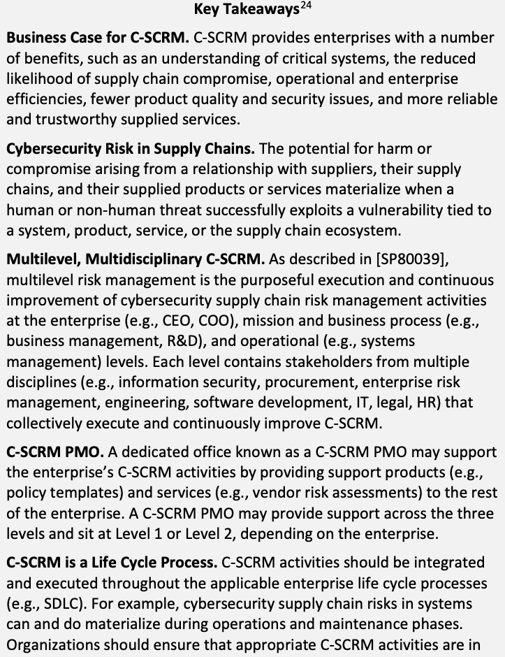
原本PDFの抜粋画像
3. Critical Success Factors
3. 重要な成功要因
To successfully address evolving cybersecurity risks throughout the supply chain, enterprises need to engage multiple internal processes and capabilities, communicate and collaborate across enterprise levels and mission areas, and ensure that all individuals within the enterprise understand their role in managing cybersecurity risks throughout the supply chain. Enterprises need strategies for communicating, determining how best to implement, and monitoring the effectiveness of their supply chain cybersecurity controls and practices. In addition to internally communicating cybersecurity supply chain risk management controls, enterprises should engage with peers to exchange C-SCRM insights. These insights will aid enterprises in continuously evaluating how well they are doing and identify where they need to improve and how to take steps to mature their C-SCRM program. This section addresses the requisite enterprise processes and capabilities in making C-SCRM successful. While this publication has chosen to highlight these critical success factors, this represents a non-exhaustive set of factors that contribute to an enterprise’s successful execution of C-SCRM. Critical success factors are fluid and will evolve over time as the environment and the enterprise’s own capability advances.
サプライチェーン全体で進化するサイバーセキュリティリスクにうまく対処するには、エンタープライズは、複数の内部プロセスと能力を関与させ、エンタープライズのレベルやミッション領域をまたいで意思疎通と連携を行い、エンタープライズ内のすべての個人がサプライチェーン全体のサイバーセキュリティリスクの管理における自らの役割を理解するようにする必要がある。エンタープライズには、サプライチェーンのサイバーセキュリティ管理策およびプラクティスについて、伝達し、最善の実装方法を決定し、有効性を監視するための戦略が必要である。サイバーセキュリティサプライチェーンリスク管理の管理策を内部に伝達することに加え、エンタープライズは、C-SCRMに関する知見を交換するために同業者と関わるべきである。これらの知見は、エンタープライズが自らの取り組みの達成度を継続的に評価し、改善が必要な箇所を特定し、C-SCRMプログラムを成熟させるための手順をどのように踏むかを把握するのに役立つ。本節では、C-SCRMを成功させる上で必須となるエンタープライズのプロセスと能力を扱う。本刊行物はこれらの重要成功要因を強調することを選択したが、これはエンタープライズによるC-SCRMの成功裏の実行に寄与する要因を網羅したものではない。重要成功要因は流動的であり、環境とエンタープライズ自身の能力の進歩に伴って時間とともに変化する。
3.1. C-SCRM in Acquisition25
3.1. 調達におけるC-SCRM25
未レビュー訳Integrating C-SCRM considerations into acquisition activities within every step of the procurement and contract management life cycle process is essential to improving management of cybersecurity risks throughout the supply chain. This life cycle begins with a purchaser identifying a need and includes the processes to plan for and articulate requirements, conduct research to identify and assess viable sources of supply, solicit bids, evaluate offers to ensure conformance with C-SCRM requirements, and assess C-SCRM risks associated with the bidder and the proposed product and/or service. After contract award, ensure that the supplier satisfies the terms and conditions articulated in the contractual agreement and that the products and services conform as expected and required. Monitoring for changes that may affect cybersecurity risks in the supply chain should occur throughout the life cycle and may trigger reevaluation of the original assessment or require a mitigation response.
調達・契約管理ライフサイクルの各段階にC-SCRMの考慮事項を統合することは、サプライチェーン全体のサイバーセキュリティリスク管理を向上させるうえで不可欠である。このライフサイクルは購入者によるニーズの特定から始まり、要件の計画・明確化、実行可能な供給元の調査・評価、入札募集、C-SCRM要件への適合確認のための提案評価、入札者および提案製品・サービスに関連するC-SCRMリスクの評価を含む。契約締結後は、供給者が契約上の合意に明記された条件を満たし、製品・サービスが期待・要件どおりであることを確認する。サプライチェーンのサイバーセキュリティリスクに影響する変化の監視はライフサイクル全体で行うべきであり、当初評価の再実施を促す場合や、リスク低減対応を必要とする場合がある。
Enterprises rely heavily on commercial products and outsourced services to perform operations and fulfill their mission and business objectives. However, it is important to highlight that products and services can also be obtained outside of the procurement process, as is the case with open source software, relying on an in-house provider for shared services, or by repurposing an existing product to satisfy a new need. C-SCRM must also be addressed for these other “acquiring” processes.
企業は運用と使命・事業目標の達成に、市販製品や外部委託サービスを大いに活用する。ただし、オープンソースソフトウェア、共通サービスを提供する社内プロバイダーの利用、新たなニーズに応じた既存製品の転用など、調達プロセス以外でも製品・サービスを取得する場合がある。これらの「取得」プロセスでもC-SCRMに対処しなければならない。
In addition to addressing cybersecurity risks throughout the supply chain and performing C-SCRM activities during each phase of the acquisition process, enterprises should develop and execute an acquisition strategy that drives reductions in their overall risk exposure. By applying such strategies, enterprises can reduce cybersecurity risks throughout the supply chain, within specific procurement processes, and for the overall enterprise. Enterprises will aid, direct, and inform efforts to realize targeted risk-reducing outcomes by adopting acquisition policies and processes that integrate C-SCRM into acquisition activities.
サプライチェーン全体のサイバーセキュリティリスクに対処し、取得プロセスの各段階でC-SCRM活動を実施することに加え、企業は全体的なリスクエクスポージャーの低減を推進する取得戦略を策定・実行すべきである。こうした戦略により、サプライチェーン全体、個々の調達プロセス、企業全体のリスクを低減できる。C-SCRMを取得活動に統合する取得方針・プロセスを採用することで、目標とするリスク低減成果の実現を支援し、方向付け、情報を提供できる。
未レビュー訳Additionally, by adopting C-SCRM controls aligned to an industry-recognized set of standards and guidelines (e.g., NIST 800-53, Rev.5; NIST CSF), the enterprise can ensure holistic coverage of cybersecurity risks throughout the supply chain and corresponding C-SCRM practices. C-SCRM controls may apply to different participants of the supply chain to include the enterprise itself, prime contractors, and subcontractors. Because enterprises heavily rely on prime contractors and their subcontractors to develop, implement, operate and maintain ICT/OT products and services, those controls implemented within the SDLC are likely to flow down to subcontractors. Establishing C-SCRM controls applicable throughout the supply chain and the SDLC will aid the enterprise in establishing a common lexicon and set of expectations with suppliers and sub-suppliers to aid all participants in managing cybersecurity risks throughout the supply chain.
業界で認知された一連の標準・指針（例：NIST 800-53 Rev.5、NIST CSF）に整合するC-SCRM管理策を採用すれば、企業はサプライチェーン全体のサイバーセキュリティリスクと対応するC-SCRM慣行を包括的に網羅できる。管理策は企業自体、元請業者、下請業者など、サプライチェーンの各参加者に適用される場合がある。企業はICT/OT製品・サービスの開発、実装、運用、保守を元請業者と下請業者に大きく依存するため、SDLCに組み込まれた管理策は下請業者にも適用される可能性が高い。サプライチェーンおよびSDLC全体に適用される管理策を確立すると、供給者・下位供給者との共通用語と期待事項を定め、全参加者によるリスク管理を支援できる。
未レビュー訳3.1.1. Acquisition in the C-SCRM Strategy and Implementation Plan
3.1.1. C-SCRM戦略および実施計画における取得
An enterprise’s C-SCRM Strategy and Implementation Plan guides the enterprise toward the achievement of long-term, sustainable reductions in exposure to cybersecurity risks throughout the supply chain. As a core part of the C-SCRM Strategy and Implementation Plan, enterprises should address how this risk is managed throughout the acquisition process.
企業のC-SCRM戦略・実施計画は、サプライチェーン全体のサイバーセキュリティリスクへのエクスポージャーを長期的かつ持続的に低減するよう企業を導く。この戦略・計画の中核として、取得プロセス全体を通じたリスク管理方法を扱うべきである。
Cybersecurity risks in the supply chain include those arising from the supplier’s enterprise, products, services, and the supplier’s own suppliers and supply chains. The C-SCRM PMO may be helpful in developing specific strategies and implementation plans for integrating C-SCRM considerations into acquisitions. Acquisition activities relevant to C-SCRM include:
サプライチェーンのサイバーセキュリティリスクには、供給者の企業、製品、サービス、および供給者自身の供給者・サプライチェーンに起因するものが含まれる。C-SCRM PMOは、取得にC-SCRMの考慮事項を統合する具体的な戦略・実施計画の策定に役立つ場合がある。C-SCRMに関連する取得活動は以下のとおりである。
•Promoting awareness and communicating C-SCRM expectations as part of supplier relationship management efforts
•供給者関係管理の一環として、C-SCRMへの認識を高め、期待事項を伝達する
•Establishing a checklist of acquisition security requirements that must be completed as part of procurement requests to ensure that necessary provision and protections are in place
•必要な条項・保護措置が整うよう、調達要求時に完了すべき取得セキュリティ要件のチェックリストを作成する
•Leveraging an external shared service provider or utilizing the C-SCRM PMO to provide supplier, product, and/or service assessment activities as a shared service to other internal processes, including acquisition
•外部の共有サービスプロバイダーを活用する、またはC-SCRM PMOを利用し、取得を含む社内プロセスに共有サービスとして供給者・製品・サービスの評価を提供する
•Conducting due diligence to inform determinations about a bidder’s responsibility and to identify and assess bidders’ risk posture or risk associated with a given product or service
•入札者の責任能力の判断に役立つデューデリジェンスを行い、入札者のリスク態勢、または製品・サービス固有のリスクを特定・評価する
•Obtaining open source software from vetted and approved libraries
•審査・承認済みライブラリからオープンソースソフトウェアを取得する
•Including C-SCRM criteria in source selection evaluations
•供給元選定の評価にC-SCRM基準を含める
未レビュー訳•Establishing and referencing a list of prohibited suppliers, if appropriate, per applicable regulatory and legal references
•適用される規制・法令上の根拠に従い、必要に応じて禁止供給者の一覧を作成・参照する
•Establishing and procuring from an approved products list or list of preferred or qualified suppliers who have demonstrated conformance with the enterprise’s security requirements through a rigorous process defined by the enterprise or another acceptable qualified list program activity [CISAWG3]
•企業が定めた厳格なプロセス、または他の適格な一覧プログラム活動を通じてセキュリティ要件への適合を実証した、承認済み製品一覧または優先・適格供給者一覧を作成し、その対象から調達する[CISAWG3]
•Ensuring that products, including software or logic-bearing products (i.e., hardware), are supplied with a software bill of materials that complies with appropriate agency-approved protocols
•ソフトウェアや論理機能を持つ製品（すなわちハードウェア）を含む製品に、適切な機関承認プロトコルに準拠するソフトウェア部品表を添付させる
未レビュー訳The C-SCRM Strategy and Implementation Plan should address the acquisition security-relevant foundational elements necessary to implement a C-SCRM program. To support the strategy, enterprise leaders should promote the value and importance of C-SCRM within acquisitions and ensure that sufficient, dedicated funding is in place for necessary activities. Doing so will help enterprises ensure responsibility for program or business processes and accountability for progress toward the attainment of results. Enterprises should build sufficient time into acquisition and project activities to ensure that C-SCRM activities can be completed. Enterprises should also assign roles and responsibilities, some of which will be cross-enterprise in nature and team-based, while others will be specific to acquisition processes. Finally, relevant training should be provided to members of the acquisition workforce to ensure that roles and responsibilities are understood and executed in alignment with leader expectations.
C-SCRM戦略・実施計画では、C-SCRMプログラムの実施に必要な、取得セキュリティに関係する基盤要素を扱うべきである。戦略を支えるため、企業リーダーは取得におけるC-SCRMの価値と重要性を訴え、必要な活動に十分な専用資金を確保すべきである。これにより、プログラムまたは事業プロセスの責任、および成果達成に向けた進捗の説明責任を明確にできる。企業は、C-SCRM活動を完了できるよう、取得・プロジェクトのスケジュールに十分な時間を確保すべきである。また、企業横断的なチーム型の役割と、取得プロセス固有の役割の双方を含む責任を割り当てるべきである。さらに、役割と責任が理解され、リーダーの期待に沿って遂行されるよう、取得担当職員に適切な研修を行うべきである。
The enterprise’s capabilities, resources, operational constraints, and existing portfolio of supplier relationships, contracts, acquired services, and products provide the baseline context necessary to lay out a strategic path that is both realistic and achievable. This baseline starting point also serves as a marker by which performance progress and outcomes can be tracked and assessed.
企業の能力、資源、運用上の制約、既存の供給者関係・契約・取得サービス・製品のポートフォリオが、現実的かつ達成可能な戦略経路を定めるための基準状況になる。この初期基準は、実績の進捗と成果を追跡・評価する基準点にもなる。
A critical first step is to ensure that there is a current and accurate inventory of the enterprise’s supplier relationships, contracts, and any products or services those suppliers provide. This information allows for a mapping of these suppliers into strategically relevant groupings as determined by the organization. For example, an assessment of these suppliers might result in groupings of multiple categories (e.g., “strategic/innovative,” “mission-critical,” “sustaining,” or “standard/non-essential”). This segmentation facilitates further analysis and understanding of the exposure to cybersecurity risks throughout the supply chain and helps to focus attention and assign priority to those critical suppliers of the most strategic or operational importance to the enterprise and its mission and business processes. It is useful to identify which products and services require a higher level of confidence in risk mitigation and areas of risk, such as overreliance on a single source of supply. This inventory and mapping also facilitates the selection and tailoring of C-SCRM contract language and evaluation criteria.
最初の重要な手順は、供給者との関係、契約、および供給者が提供する製品・サービスの最新かつ正確な一覧を確保することである。この情報により、組織が定めた戦略上重要な分類に供給者を対応付けられる。例えば、「戦略的・革新的」「使命上不可欠」「維持支援」「標準・非必須」など、複数の分類に分けて評価できる。この区分により、サプライチェーン全体のサイバーセキュリティリスクへのエクスポージャーのさらなる分析・把握が容易になり、使命・事業プロセスにとって戦略上または運用上特に重要な供給者に注意と優先度を割り当てられる。リスク低減に高い確信が必要な製品・サービスや、単一供給元への過度な依存などのリスク領域を特定すると有用である。この一覧と対応付けは、C-SCRM契約条項および評価基準の選択・調整にも役立つ。
Additional information can be found in Appendix A of this document, [NISTIR 8179], and SA-1, SA-2, SA-4, SR-5, SR-13 of NIST SP 800-53, Rev. 5.
詳細は本書の付録A、[NISTIR 8179]、およびNIST SP 800-53 Rev. 5のSA-1、SA-2、SA-4、SR-5、SR-13を参照すること。
未レビュー訳3.1.2. The Role of C-SCRM in the Acquisition Process
3.1.2. 取得プロセスにおけるC-SCRMの役割
When conducting a procurement, enterprises should designate experts from different subject matter areas to participate in the acquisition process as members of the Acquisition Team and/or Integrated Project Team.26 This includes program officials, personnel with technical and security expertise, and representatives from supply and procurement communities. While procurement requirements address and are tailored to a specific purpose and ensuring that compliance mandates are met, contextual factors such as mission criticality, the sensitivity of data, and the operational environment must also be considered to effectively address cybersecurity risk in supply chains.
調達を行う際、企業は異なる専門分野の専門家を取得チームおよび／または統合プロジェクトチームのメンバーとして参加させるべきである。26 これにはプログラム担当者、技術・セキュリティの専門知識を持つ職員、供給・調達部門の代表者が含まれる。調達要件は特定の目的に対応し、遵守義務を満たすよう調整するが、サプライチェーンのサイバーセキュリティリスクに効果的に対処するには、使命の重要性、データの機密性、運用環境などの状況要因も考慮しなければならない。
未レビュー訳This contextual basis sets the stage for the Acquisition Team to effectively gauge their tolerance for risk as it pertains to a specific procurement requirement and determine which of the C-SCRM controls described in this document and [SP80053r5] controls are relevant and necessary to consider for specific acquisitions. The program office or requiring official should consult with information security personnel to complete this control selection process and work with their procurement official to incorporate these controls into requirements documents and contracts. Security is a critical factor in procurement decisions. For this reason, when purchasing ICT/OT-related products or services, enterprises should avoid using a “lowest price, technically acceptable” (LPTA) source selection process.
この状況に基づき、取得チームは個別の調達要件に関するリスク許容度を効果的に判断し、本書および[SP80053r5]に記載されたC-SCRM管理策のうち、当該取得で考慮すべきものを特定できる。プログラム部門または要求担当者は、管理策の選定を完了するため情報セキュリティ担当者に相談し、調達担当者と連携して要件文書や契約に組み込むべきである。調達判断ではセキュリティが重要な要素である。このため、ICT/OT関連製品・サービスの購入では、「最低価格・技術的許容可能」（LPTA）方式による供給元選定を避けるべきである。
未レビュー訳Acquisition policies and processes need to incorporate C-SCRM considerations into each step of the procurement and contract management life cycle management process (i.e., plan procurement, define and develop requirements, perform market analysis, complete procurement, ensure compliance, and monitor performance for changes that affect C-SCRM risk status) as described in [IR7622]. This includes ensuring that cybersecurity risks throughout the supply chain are addressed when making ICT/OT-related charge card purchases.
取得方針・プロセスでは、[IR7622]に記載のとおり、調達・契約管理ライフサイクル管理プロセスの各段階（調達計画、要件の定義・策定、市場分析、調達完了、遵守確認、C-SCRMリスク状況に影響する変化についての実績監視）にC-SCRMの考慮事項を組み込む必要がある。これには、ICT/OT関連のチャージカード購入を行う際にも、サプライチェーン全体のサイバーセキュリティリスクへの対処を確実にすることが含まれる。
During the ‘plan procurement’ step, the need for and the criticality of the good or service to be procured needs to be identified, along with a description of the factors driving the determination of the need and level of criticality as this informs how much risk may be tolerated, who should be involved in the planning, and the development of the specific requirements that will need to be satisfied. This activity is typically led by the acquirer mission and business process owner or a designee in collaboration with the procurement official or contracting officer representative.
「調達計画」段階では、調達する物品・サービスの必要性と重要度を特定し、その必要性と重要度の判断を左右する要因を記述する。これは、許容できるリスクの程度、計画への参加者、満たすべき具体的要件の策定を決めるための情報になる。通常、取得側の使命・事業プロセス責任者またはその指名者が、調達担当者または契約担当官代表と連携して主導する。
During the planning phase, the enterprise should develop and define requirements to address cybersecurity risks throughout the supply chain in addition to specifying performance, schedule, and cost objectives. This process is typically initiated by the acquirer mission and business process owner or a designee in collaboration with the procurement official and other members of the C-SCRM team.
計画段階では、性能、スケジュール、費用の目標に加え、サプライチェーン全体のサイバーセキュリティリスクに対処する要件を企業が策定・定義すべきである。通常、取得側の使命・事業プロセス責任者またはその指名者が、調達担当者およびC-SCRMチームの他のメンバーと連携してこのプロセスを開始する。
With requirements defined, enterprises will typically complete a market analysis for potential suppliers. Market research and analysis activities explore the availability of potential or pre-qualified sources of supply. This step is typically initiated by the acquirer mission and business process owner or a designated representative. Enterprises should use this phase to conduct more robust due diligence research on potential suppliers and/or products in order to generate a supplier risk profile. As part of due diligence, the enterprise may consider the market concentration for the sought-after product or service as a means of identifying interdependencies within the supply chain. The enterprise may also use a request for information (RFIs), sources sought notice (SSNs), and/or due diligence questionnaires for the initial screening and collection of evidence from potential suppliers. Enterprises should not treat the initial C-SCRM due diligence risk assessment as exhaustive. Results of this research can also be helpful in shaping the sourcing approach and refining requirements.
要件の定義後、企業は通常、候補供給者の市場分析を行う。市場調査・分析では、候補または事前資格審査済みの供給元が利用可能かを調べる。通常、取得側の使命・事業プロセス責任者または指定代表者がこの段階を開始する。企業はこの段階で候補供給者および／または製品への一層詳細なデューデリジェンスを行い、供給者リスクプロファイルを作成すべきである。デューデリジェンスでは、サプライチェーン内の相互依存関係を特定する手段として、対象製品・サービスの市場集中度を検討できる。初期審査と候補供給者からの証拠収集には、情報提供依頼（RFI）、供給元募集通知（SSN）、および／またはデューデリジェンス質問票を使用できる。初期のC-SCRMデューデリジェンス評価を網羅的なものとみなすべきではない。調査結果は、調達元の選定方法を定め、要件を改善する際にも役立つ。
未レビュー訳Finally, the enterprise will complete the procurement step by releasing a statement of work (SOW), performance work statement (PWS), or statement of objective (SOO) for the release of a request for proposal (RFP) or request for quotes (RFQ). Any bidders responding to the RFP or RFQ should be evaluated against relevant, critical C-SCRM criteria. The RFP review process should also include any procurement-specific supplier risk assessment. The assessment criteria will be heavily informed by the defined C-SCRM requirements and include coverage over but not limited to information about the enterprise, its security processes, and its security track record. The response review process involves multiple C-SCRM stakeholders, including procurement, the mission and business process owner, appropriate information system owners, and technical experts. Prior to purchase, enterprises should identify and assess the quality of the product or system components, vulnerability(s) authenticity, and other relevant cybersecurity-supply chain risk factors and complete this risk assessment prior to deployment.
最後に、企業は作業範囲記述書（SOW）、性能作業記述書（PWS）、または目標記述書（SOO）を発行し、提案依頼（RFP）または見積依頼（RFQ）を公示して調達段階を完了する。RFPまたはRFQへの入札者は、関連する重要なC-SCRM基準に照らして評価すべきである。RFPの審査には、調達固有の供給者リスク評価も含めるべきである。評価基準は定義済みのC-SCRM要件に大きく基づき、企業、セキュリティプロセス、セキュリティ実績に関する情報などを含む。提案の審査には、調達担当者、使命・事業プロセス責任者、適切な情報システム所有者、技術専門家など複数のC-SCRM利害関係者が参加する。購入前に、企業は製品またはシステムコンポーネントの品質、脆弱性、真正性、その他の関連するサプライチェーン・サイバーセキュリティリスク要因を特定・評価し、配備前にリスク評価を完了すべきである。
Once the contract is executed, the enterprise should monitor for changes that alter its exposure to cybersecurity risks throughout the supply chain. Such changes may include internal enterprise or system changes, supplier operational or structural changes, product updates, and geopolitical or environmental changes. Contracts should include provisions that provide grounds for termination in cases where there are changes to cybersecurity supply chain risk that cannot be adequately mitigated to within acceptable levels. Finally, enterprises should continuously apply lessons learned and collected during the acquisition process to enhance their ability to assess, respond to, and monitor cybersecurity risks throughout the supply chain.
契約の締結後、企業はサプライチェーン全体のサイバーセキュリティリスクへのエクスポージャーを変化させる事象を監視すべきである。これには、企業内部またはシステムの変更、供給者の運用・組織構造の変更、製品更新、地政学的または環境的変化が含まれる。許容水準内まで十分に低減できないサプライチェーン・サイバーセキュリティリスクの変化が生じた場合に契約を終了できる根拠となる条項を含めるべきである。さらに、企業は取得プロセスで得た教訓を継続的に活用し、サプライチェーン全体のサイバーセキュリティリスクを評価、対応、監視する能力を高めるべきである。
In addition to process activities, there are many useful acquisition security-enhancing tools and techniques available, including obscuring the system end use or system component, using blind or filtered buys, requiring tamper-evident packaging, or using trusted or controlled distribution. The results of a supply chain cybersecurity risk assessment can guide and inform the strategies, tools, and methods that are most applicable to the situation. Tools, techniques, and practices may provide protections against unauthorized production, theft, tampering, insertion of counterfeits, insertion of malicious software or backdoors, and poor development practices throughout the system development life cycle.
プロセス活動に加え、システムの最終用途やコンポーネントを秘匿する、ブラインド購入またはフィルター購入を用いる、改ざん検知包装を要求する、信頼できる流通または管理された流通を利用するなど、調達セキュリティを高める有用なツール・技法がある。サプライチェーン・サイバーセキュリティリスク評価の結果は、状況に最も適した戦略、ツール、手法の選択に役立つ。これらのツール、技法、慣行は、システム開発ライフサイクル全体を通じた無許可の製造、窃盗、改ざん、偽造品の混入、悪意のあるソフトウェアやバックドアの挿入、不適切な開発慣行から保護する場合がある。
To ensure the effective and continued management of cybersecurity risks across the supply chain and throughout the acquisition life cycle, contractual agreements and contract management should include:
サプライチェーン全体および取得ライフサイクル全体にわたってサイバーセキュリティリスクを効果的かつ継続的に管理するには、契約合意および契約管理に次の事項を含めるべきである。
•The satisfaction of applicable security requirements in contracts and mechanisms as a qualifying condition for award;
•契約および仕組みにおいて適用されるセキュリティ要件を満たすことを、契約締結の適格条件とすること
•Flow-down control requirements to subcontractors, if and when applicable, including C-SCRM performance objectives linked to the method of inspection in a Quality Assurance Surveillance Plan or equivalent method for monitoring performance;
•該当する場合にその時点で行う下請業者への管理策要件の展開。品質保証監視計画における検査方法、または実績を監視する同等の手法に結び付くC-SCRM実績目標を含む
未レビュー訳•The periodic revalidation of supplier adherence to security requirements to ensure continual compliance;
•継続的な遵守を確保するための、供給者によるセキュリティ要件遵守状況の定期的な再検証
•Processes and protocols for communication and the reporting of information about vulnerabilities, incidents, and other business disruptions, including acceptable deviations if the business disruption is deemed serious and baseline criteria to determine whether a disruption qualifies as serious; and
•脆弱性、インシデント、その他の事業中断に関する情報共有・報告のプロセスと手順。事業中断が重大と判断された場合に許容する逸脱、および重大な中断に該当するかを判定する基準を含む
•Terms and conditions that address the government, supplier, and other applicable third-party roles, responsibilities, and actions for responding to identified supply chain risks or risk incidents in order to mitigate risk exposure, minimize harm, and support timely corrective action or recovery from an incident.
•特定されたサプライチェーンリスクまたはリスク事象への対応における政府、供給者、その他該当する第三者の役割、責任、行動を定める契約条件。リスクエクスポージャーを低減し、損害を最小限に抑え、事象からの迅速な是正または復旧を支援するためのもの
未レビュー訳There are a variety of acceptable validation and revalidation methods, such as requisite certifications, site visits, third-party assessments, or self-attestation. The type and rigor of the required methods should be commensurate with the criticality of the service or product being acquired and the corresponding assurance requirements.
検証・再検証には、必要な認証、現地訪問、第三者評価、自己証明など、さまざまな妥当な方法がある。要求する方法の種類と厳格さは、取得するサービス・製品の重要度および対応する保証要件に見合うものとすべきである。
Additional guidance for integrating C-SCRM into the acquisition process is provided in Appendix C, which demonstrates the enhanced overlay of C-SCRM into the [SP80039] Risk Management Process. In addition, enterprises should refer to and follow the acquisition and procurement policies, regulations, and best practices that are specific to their domain (e.g., critical infrastructure sector, state government).
取得プロセスへのC-SCRM統合に関する追加指針は付録Cにあり、[SP80039]のリスク管理プロセスにC-SCRMを組み込んだ拡張オーバーレイを示す。また企業は、自らの分野に固有の取得・調達方針、規制、ベストプラクティス（例：重要インフラ分野、州政府）を参照し、従うべきである。
Additional information can be found in Appendix A of this document and SA-1, SA-2, SA-3, SA-4, SA-9, SA-19, SA-20, SA-22, SR-5, SR-6, SR-10, and SR-11 of NIST SP 800-53, Rev. 5.
追加情報は、本書の付録A、およびNIST SP 800-53 Rev. 5のSA-1、SA-2、SA-3、SA-4、SA-9、SA-19、SA-20、SA-22、SR-5、SR-6、SR-10、SR-11にも記載されている。
3.2. Supply Chain Information Sharing
3.2. サプライチェーン情報の共有
Enterprises are continuously exposed to risk originating from their supply chains. An effective information-sharing process helps to ensure that enterprises can gain access to information that is critical to understanding and mitigating cybersecurity risks throughout the supply chain and also share relevant information with others that may benefit from or require awareness of these risks.
エンタープライズは、サプライチェーンに起因するリスクに常時さらされている。効果的な情報共有プロセスにより、サプライチェーン全体のサイバーセキュリティリスクを理解・軽減するうえで重要な情報をエンタープライズが入手できるようになり、また、こうしたリスクから恩恵を受ける可能性がある、または認識しておく必要がある他者と関連情報を共有できるようになる。
To aid in identifying, assessing, monitoring, and responding to cybersecurity risks throughout the supply chain, enterprises should build information-sharing processes and activities into their C-SCRM programs. This may include establishing information-sharing agreements with peer enterprises, business partners, and suppliers. By exchanging Supply Chain Risk Information (SCRI) within a sharing community, enterprises can leverage the collective knowledge, experience, and capabilities of that sharing community to gain a more complete understanding of the threats that the enterprise may face. Additionally, the sharing of SCRI allows enterprises to better detect campaigns that target specific industry sectors and institutions. However, the enterprise should be sure that information sharing occurs through formal sharing structures, such as Information Sharing and Analysis Centers (ISACs). Informal or unmanaged information sharing can expose enterprises to potential legal risks.
サプライチェーン全体のサイバーセキュリティリスクの特定、評価、監視および対応を支援するため、エンタープライズは情報共有のプロセスと活動をC-SCRMプログラムに組み込むべきである。これには、同業のエンタープライズ、ビジネスパートナー、サプライヤーとの情報共有協定の締結が含まれる場合がある。共有コミュニティ内でサプライチェーンリスク情報（SCRI）を交換することで、その集合的な知識、経験、能力を活用し、エンタープライズが直面する可能性のある脅威をより包括的に理解できる。また、SCRIの共有により、特定の業界分野や機関を標的とするキャンペーンをより適切に検知できる。ただし、情報共有は情報共有分析センター（ISAC）などの正式な共有体制を通じて行うようにすること。非公式または管理されていない情報共有は、エンタープライズを潜在的な法的リスクにさらすおそれがある。
未レビュー訳Federal enterprises should establish processes to effectively engage with the FASC’s information-sharing agency, which is responsible for facilitating information sharing among government agencies and acting as a central, government-wide facilitator for C-SCRM information-sharing activities.
連邦エンタープライズは、政府機関間の情報共有を促進し、政府全体におけるC-SCRM情報共有活動の中核的な促進役を担うFASCの情報共有機関と効果的に連携するためのプロセスを確立するべきである。
NIST SP 800-150 describes key practices for establishing and participating in SCRI-sharing relationships, including:
NIST SP 800-150は、SCRI共有関係の確立と参加に関する主要な実践として、次を説明している。
•Establish information-sharing goals and objectives that support business processes and security policies
•業務プロセスとセキュリティ方針を支援する情報共有の目標と目的を定める。
•Identify existing internal sources of SCRI
•既存の内部SCRI情報源を特定する。
•Specify the scope of information-sharing activities27
•情報共有活動の範囲を定める。27
未レビュー訳•Establish information-sharing rules
•情報共有の規則を定める。
•Join and participate in information-sharing efforts
•情報共有の取り組みに加わり、参加する。
•Actively seek to enrich indicators by providing additional context, corrections, or suggested improvements
•追加の背景情報、訂正または改善案を提供し、指標の充実に積極的に取り組む。
•Use secure, automated workflows to publish, consume, analyze, and act upon SCRI
•SCRIの公開、取り込み、分析、およびそれに基づく対応に、安全な自動化ワークフローを使用する。
•Proactively establish SCRI-sharing agreements
•SCRI共有協定を先を見越して締結する。
•Protect the security and privacy of sensitive information
•機微情報のセキュリティとプライバシーを保護する。
•Provide ongoing support for information-sharing activities
•情報共有活動を継続的に支援する。
未レビュー訳As shown in Table 2, below, SCRI describes or identifies the cybersecurity supply chain relevant characteristics and risk factors associated with a product, service, or source of supply. It may exist in various forms (e.g., raw data, a supply chain network map, risk assessment report) and should be accompanied by the metadata that will facilitate an assessment of a level of confidence in and credibility of the information. Enterprises should follow established processes and procedures that describe whether and when the sharing or reporting of certain information is mandated or voluntary and if there are any necessary requirements to adhere to regarding information handling, protection, and classification.
下記の表2に示すように、SCRIは、製品、サービスまたは供給元に関連するサイバーセキュリティ・サプライチェーン上の特性とリスク要因を記述または特定する。SCRIは、未加工データ、サプライチェーンネットワーク図、リスク評価報告書など、さまざまな形態を取り得る。また、情報の確信度と信頼性を評価しやすくするメタデータを付すべきである。エンタープライズは、特定情報の共有・報告が義務か任意か、また情報の取扱い、保護および分類に関して遵守すべき要件があるかどうかを定めた、確立済みのプロセスと手順に従うべきである。
Table 2. Supply chain characteristics and cybersecurity risk factors associated with a product, service, or source of supply28
表2. 製品、サービスまたは供給元に関連するサプライチェーン特性とサイバーセキュリティリスク要因28
未レビュー訳| Source of Supply, Product, or Service Characteristics | Risk Indicators, Analysis, and Findings |
| • Features and functionality • Access to data and information, including system privileges • Installation or operating environment • Security, authenticity, and integrity of a given product or service and the associated supply and compilation chain • The ability of the source to produce and deliver a product or service as expected • Foreign control of or influence over the source (e.g., foreign ownership, personal and professional ties between the source and any foreign entity, legal regime of any foreign country in which the source is headquartered or conducts operations)29 • Market alternatives to the source • Provenance and pedigree of components • Supply chain relationships and locations • Potential risk factors, such as geopolitical, legal, managerial/internal controls, financial stability, cyber incidents, personal and physical security, or any other information that would factor into an analysis of the security, safety, integrity, resilience, reliability, quality, trustworthiness, or authenticity of a product, service, or source | • Threat information includes indicators (system artifacts or observables associated with an attack), tactics, techniques, and procedures (TTPs) • Security alerts or threat intelligence reports • Implications to national security, homeland security, national critical infrastructure, or the processes associated with the use of the product or service • Vulnerability of federal systems, programs, or facilities • Threat level and vulnerability level assessment/score • Potential impact or harm caused by the possible loss, damage, or compromise of a product, material, or service to an enterprise’s operations or mission and the likelihood of a potential impact, harm, or the exploitability of a system • The capacity to mitigate risks is identified |
原本PDFの抜粋画像
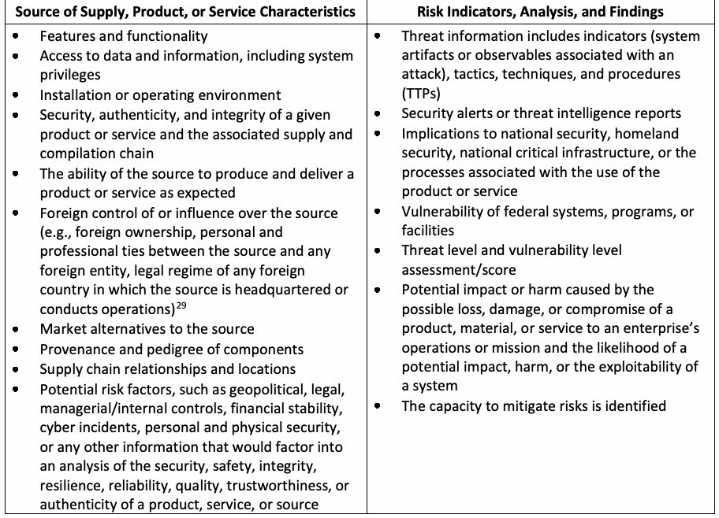
| 供給元、製品またはサービスの特性 | リスク指標、分析および所見 |
| • 機能と特徴 • システム権限を含む、データおよび情報へのアクセス • インストール環境または運用環境 • 製品・サービスおよび関連する供給・コンパイルチェーンのセキュリティ、真正性、完全性 • 供給元が期待どおりに製品・サービスを生産し提供する能力 • 供給元に対する外国からの支配または影響（例：外国による所有、供給元と外国組織との個人的・職業的なつながり、供給元の本社所在地または事業実施国における法制度）29 • 供給元の市場代替品 • コンポーネントの来歴および系譜 • サプライチェーン上の関係と所在地 • 地政学的要因、法的要因、経営・内部統制、財務の安定性、サイバーインシデント、個人・物理的セキュリティ、その他、製品、サービスまたは供給元のセキュリティ、安全性、完全性、レジリエンス、信頼性、品質、信頼性または真正性の分析に関係する情報など、潜在的なリスク要因 | • 脅威情報には、指標（攻撃に関連するシステム上の痕跡または観測可能な事象）、戦術、技法および手順（TTP）が含まれる • セキュリティ警報または脅威インテリジェンス報告書 • 国家安全保障、国土安全保障、国家重要インフラ、または製品・サービスの使用に伴うプロセスへの影響 • 連邦政府のシステム、プログラムまたは施設の脆弱性 • 脅威レベルおよび脆弱性レベルの評価／スコア • 製品、資材またはサービスの喪失、損傷もしくは侵害がエンタープライズの運用・ミッションにもたらし得る影響または損害と、その潜在的影響・損害の可能性、あるいはシステムの悪用可能性 • リスクを軽減する能力が特定されている |
3.3. C-SCRM Training and Awareness
3.3. C-SCRMの訓練と意識向上
Numerous individuals within the enterprise contribute to the success of C-SCRM. These may include information security, procurement, risk management, engineering, software development, IT, legal, HR, and program managers. Examples of these groups’ contributions include:
エンタープライズ内の多くの人々がC-SCRMの成功に貢献する。これには、情報セキュリティ、調達、リスクマネジメント、エンジニアリング、ソフトウェア開発、IT、法務、人事の各担当者、およびプログラムマネージャーが含まれる場合がある。これらのグループの貢献例は次のとおりである。
•System Owners are responsible for multiple facets of C-SCRM at the operational level as part of their responsibility for the development, procurement, integration, modification, operation, maintenance, and/or final disposition of an information system.
•システム所有者は、情報システムの開発、調達、統合、変更、運用、保守および／または最終処分に関する責任の一環として、運用レベルのC-SCRMの複数の側面を担う。
•Human Resources defines and implements background checks and training policies, which help ensure that individuals are trained in appropriate C-SCRM processes and procedures.
•人事部門は、身元調査と訓練に関する方針を定めて実施し、個人が適切なC-SCRMプロセスと手順の訓練を受けるよう支援する。
•Legal helps draft or review C-SCRM-specific contractual language that is included by procurement in contracts with suppliers, developers, system integrators, external system service providers, and other ICT/OT-related service providers.
•法務部門は、調達部門がサプライヤー、開発者、システムインテグレーター、外部システムサービスプロバイダー、その他のICT/OT関連サービスプロバイダーとの契約に盛り込む、C-SCRM固有の契約条項の起草またはレビューを支援する。
•Acquisition/procurement defines the process for implementing supplier assurance practices embedded in the acquisition process.
•取得／調達は、取得プロセスに組み込まれた供給者保証の実践を実装するプロセスを定める。
•Engineering designs products and must understand existing requirements for the use of open source components.
•エンジニアリング部門は製品を設計し、オープンソースコンポーネントの使用に関する既存要件を理解する必要がある。
•Software developers ensure that software weaknesses and vulnerabilities are identified and addressed as early as possible, including testing and fixing code.
•ソフトウェア開発者は、試験やコード修正を含め、ソフトウェアの弱点と脆弱性をできるだけ早期に特定し、対処する。
•Shipping and receiving ensures that boxes containing critical components have not been tampered with en route or at the warehouse.
•出荷・受入担当者は、重要なコンポーネントを含む箱が輸送中または倉庫内で改ざんされていないことを確認する。
•Project managers ensure that project plans are developed and include C-SCRM considerations as part of the project plan and execution.
•プロジェクトマネージャーは、プロジェクト計画が策定され、計画とその実行にC-SCRM上の考慮事項が含まれていることを確実にする。
Everyone within an enterprise, including the end users of information systems, has a role and shared responsibility in managing cybersecurity risks throughout the supply chain. The enterprise should foster an overall culture of security that includes C-SCRM as an integral part. The enterprise can use a variety of communication methods to foster the culture, of which traditional awareness and role-based training are only one component.
情報システムのエンドユーザーを含め、エンタープライズ内のすべての人が、サプライチェーン全体のサイバーセキュリティリスク管理において役割を担い、責任を共有する。エンタープライズは、C-SCRMを不可欠な要素として含む、セキュリティを重視する組織文化を醸成するべきである。エンタープライズはさまざまなコミュニケーション手段を利用して文化を醸成できる。従来型の意識向上訓練と役割別訓練は、その一要素にすぎない。
Every individual within an enterprise should receive appropriate training to enable them to understand the importance of C-SCRM to their enterprise, their specific roles and responsibilities, and as it relates to processes and procedures for reporting incidents. This training can be integrated into the overall cybersecurity awareness training. Enterprises should define baseline training requirements at a broad scope within Level 1, and those requirements should be tailored and refined based on the specific context within Level 2 and Level 3.
エンタープライズ内の各個人は、自組織にとってのC-SCRMの重要性、自分の具体的な役割と責任、インシデント報告のプロセス・手順との関連を理解できる適切な訓練を受けるべきである。この訓練は、全般的なサイバーセキュリティ意識向上訓練に統合できる。エンタープライズは、レベル1で広範な基礎訓練要件を定め、その要件をレベル2およびレベル3の具体的な状況に応じて調整・詳細化するべきである。
Those individuals who have more significant roles in managing cybersecurity risks throughout the supply chain should receive tailored C-SCRM training that helps them understand the scope of their responsibilities, the specific processes and procedure implementations for which they are responsible, and the actions to take in the event of an incident, disruption, or another C-SCRM-related event. The enterprises should establish specific role-based training criteria and develop role-specific C-SCRM training to address C-SCRM roles and responsibilities. The enterprise may also consider adding C-SCRM content into preexisting role-based training for some specific roles. Refer to the Awareness and Training controls in Appendix A for more detail.
サプライチェーン全体のサイバーセキュリティリスク管理において、より重要な役割を担う個人には、責任の範囲、自らが担当する具体的なプロセス・手順の実装、インシデント、業務中断またはその他のC-SCRM関連事象が発生した場合に取るべき措置を理解できるよう、個別調整したC-SCRM訓練を実施するべきである。エンタープライズは、役割別訓練の具体的な基準を定め、C-SCRMの役割と責任に対応する役割別C-SCRM訓練を開発するべきである。また、特定の役割について、既存の役割別訓練にC-SCRMの内容を加えることも検討できる。詳細は付録Aの意識向上・訓練管理策を参照すること。
未レビュー訳Enterprises are encouraged to utilize the NIST National Initiative for Cybersecurity Education (NICE) Framework30 as a means of forming a common lexicon for C-SCRM workforce topics. This will aid enterprises in developing training linked to role-specific C-SCRM responsibilities and communicating cybersecurity workforce-related topics. The NICE Framework outlines Categories; Specialty Areas; Work Roles; Knowledge, Skills, and Abilities (KSAs); and Tasks that describe cybersecurity work.
エンタープライズには、C-SCRM人材に関する共通用語集を作る手段として、NIST国家サイバーセキュリティ教育イニシアチブ（NICE）フレームワーク30の活用が推奨される。これにより、役割固有のC-SCRM責任に関連付けた訓練を開発し、サイバーセキュリティ人材に関する事項を伝達しやすくなる。NICEフレームワークは、サイバーセキュリティ業務を記述するカテゴリー、専門領域、職務、知識・スキル・能力（KSA）、タスクを概説する。
未レビュー訳3.4. C-SCRM Key Practices31
3.4. C-SCRMの主要な実践31
未レビュー訳Cybersecurity supply chain risk management builds on existing standardized practices in multiple disciplines and an ever-evolving set of C-SCRM capabilities. C-SCRM Key Practices are meant to specifically emphasize and draw attention to a subset of the C-SCRM practices described throughout this publication. Enterprises should prioritize achieving a base-level of maturity in these key practices prior to advancing on to additional C-SCRM capabilities. Enterprises should tailor their implementation of these practices to what is applicable and appropriate given their unique context (e.g., based on available resources and risk profile). C-SCRM Key Practices are described in NIST standards and guidelines, such as [IR8276], and other applicable national and international standards. C-SCRM Practices include integrating C-SCRM across the enterprise; establishing a formal program; knowing and managing critical products, services, and suppliers; understanding an enterprise’s supply chain; closely collaborating with critical suppliers; including critical suppliers in resilience and improvement activities; assessing and monitoring throughout the supplier relationship; and planning for the full life cycle.
サイバーセキュリティ・サプライチェーンリスクマネジメントは、複数分野における既存の標準化された実践と、進化し続けるC-SCRM能力を基盤とする。C-SCRMの主要な実践は、本刊行物全体で説明するC-SCRM実践の一部を特に強調し、注目を促すものである。エンタープライズは、追加のC-SCRM能力に進む前に、これらの主要な実践について基礎的な成熟度を達成することを優先するべきである。各エンタープライズ固有の状況（例：利用可能な資源やリスクプロファイル）を踏まえ、適用可能かつ適切な範囲で、これらの実践の実装内容を調整するべきである。C-SCRMの主要な実践は、[IR8276]などのNIST標準・ガイドラインや、その他の該当する国内外の標準に記載されている。C-SCRM実践には、エンタープライズ全体へのC-SCRM統合、正式プログラムの確立、重要な製品・サービス・サプライヤーの把握と管理、エンタープライズのサプライチェーンの理解、重要なサプライヤーとの緊密な協力、レジリエンス・改善活動への重要なサプライヤーの参加、サプライヤー関係全体を通じた評価・監視、ライフサイクル全体に向けた計画が含まれる。
未レビュー訳3.4.1. Foundational Practices
3.4.1. 基礎的な実践
Having foundational practices in place is critical to having an enduring capability to effectively manage cybersecurity supply chain risks. The following are specific examples of the recommended multidisciplinary foundational practices that can be incrementally implemented to improve an enterprise’s ability to develop and execute more advanced C-SCRM practices:
サイバーセキュリティ・サプライチェーンリスクを効果的かつ継続的に管理する能力を備えるには、基礎的な実践を整備することが不可欠である。以下は、より高度なC-SCRM実践を開発・実行するエンタープライズの能力を高めるため、段階的に実装できる、推奨される学際的な基礎的実践の具体例である：
•Establish a core, dedicated, multidisciplinary C-SCRM Program Management Office and/or C-SCRM team.
•中核となる専任の学際的C-SCRMプログラム管理室および／またはC-SCRMチームを設置する。
•Obtain senior leadership support for establishing and/or enhancing C-SCRM.
•C-SCRMの確立および／または強化に向けて上級幹部の支援を得る。
•Implement a risk management hierarchy and risk management process (in accordance with NIST SP 800-39, Managing Information Security Risk [SP80039]), including an enterprise-wide risk assessment process (in accordance with NIST SP 800-30, Rev. 1, Guide for Conducting Risk Assessments [SP80030r1]).
•NIST SP 800-39『情報セキュリティリスクの管理』[SP80039]に準拠したリスクマネジメント階層とプロセスを導入する。これには、NIST SP 800-30 Rev. 1『リスク評価の実施ガイド』[SP80030r1]に準拠したエンタープライズ全体のリスク評価プロセスを含める。
未レビュー訳•Establish an enterprise governance structure that integrates C-SCRM requirements and incorporates these requirements into the enterprise policies.
•C-SCRM要件を統合し、それらをエンタープライズ方針に組み込むエンタープライズ・ガバナンス体制を確立する。
•Develop a process for identifying and measuring the criticality of the enterprise’s suppliers, products, and services.
•エンタープライズのサプライヤー、製品およびサービスの重要度を特定・測定するプロセスを策定する。
•Raise awareness and foster understanding of what C-SCRM is and why it is critically important.
•C-SCRMとは何か、なぜ極めて重要なのかについて、意識と理解を高める。
•Develop and/or integrate C-SCRM into acquisition/procurement policies and procedures (including Federal Information Technology Acquisition Reform Act [FITARA] processes,
•取得・調達の方針・手順を策定または改訂し、C-SCRMを組み込む（連邦機関に適用されるFITARAのプロセスおよび購入カードのプロセスを含む）。
未レビュー訳applicable to federal agencies) and purchase card processes. Supervisors and managers should also ensure that their staff aims to build C-SCRM competencies.
上司や管理者は、職員がC-SCRMの能力構築に努めるようにするべきである。
未レビュー訳•Establish consistent, well-documented, repeatable processes for determining FIPS 199 impact levels.
•FIPS 199の影響度レベルを決定するため、一貫性があり、十分に文書化された、反復可能なプロセスを確立する。
•Establish and begin using supplier risk-assessment processes on a prioritized basis (inclusive of criticality analysis, threat analysis, and vulnerability analysis) after the [FIPS199] impact level has been defined.
•[FIPS199]の影響度レベルを定義した後、優先順位に基づいてサプライヤーリスク評価プロセス（重要度分析、脅威分析、脆弱性分析を含む）を確立し、使用を開始する。
•Implement a quality and reliability program that includes quality assurance and quality control process and practices.
•品質保証および品質管理のプロセスと慣行を含む、品質・信頼性プログラムを実施する。
•Establish explicit collaborative and discipline-specific roles, accountabilities, structures, and processes for supply chain, cybersecurity, product security, physical security, and other relevant processes (e.g., Legal, Risk Executive, HR, Finance, Enterprise IT, Program Management/System Engineering, Information Security, Acquisition/Procurement, Supply Chain Logistics).
•サプライチェーン、サイバーセキュリティ、製品セキュリティ、物理的セキュリティおよびその他の関連プロセス（法務、リスク責任者、人事、財務、エンタープライズIT、プログラム管理／システムエンジニアリング、情報セキュリティ、取得・調達、サプライチェーン物流など）について、明確な協働体制と分野別の役割、説明責任、構造、プロセスを確立する。
•Ensure that adequate resources are dedicated and allocated to information security and C-SCRM to ensure proper implementation of policy, guidance, and controls.
•方針、指針および管理策を適切に実装できるよう、情報セキュリティとC-SCRMに十分な資源を確保し、配分する。
•Ensure sufficient cleared personnel with key C-SCRM roles and responsibilities to access and share C-SCRM-related classified information.
•C-SCRM関連の機密情報にアクセスし共有できるよう、C-SCRMの主要な役割と責任を担う、セキュリティクリアランスを付与された職員を十分な数だけ確保する。
•Implement an appropriate and tailored set of baseline information security controls found in NIST SP 800-53, Revision 5, Security and Privacy Controls for Information Systems and Enterprises [SP80053r5].
•NIST SP 800-53 Revision 5『情報システムおよびエンタープライズのためのセキュリティ・プライバシー管理策』[SP80053r5]に記載された、適切に調整した基礎的な情報セキュリティ管理策一式を実装する。
•Establish internal checks and balances to ensure compliance with security and quality requirements.
•セキュリティおよび品質要件への準拠を確保するため、内部チェック・アンド・バランスを確立する。
•Establish a supplier management program that includes, for example, guidelines for purchasing from qualified original equipment manufacturers (OEMs)32 or their authorized distributors and resellers.
•適格な相手先ブランド製造業者（OEM）32またはその正規販売代理店・再販業者から購入するための指針などを含む、サプライヤー管理プログラムを確立する。
未レビュー訳•Implement a robust incident management program to successfully identify, respond to, and mitigate security incidents. This program should be capable of identifying the root cause of security incidents, including those that originate from the cybersecurity supply chain.
•セキュリティインシデントを適切に特定、対応、軽減するため、堅牢なインシデント管理プログラムを実施する。このプログラムは、サイバーセキュリティ・サプライチェーンに起因するものを含め、セキュリティインシデントの根本原因を特定できる能力を備えるべきである。
•Establish internal processes to validate that suppliers and service providers actively identify and disclose vulnerabilities in their products.
•サプライヤーおよびサービスプロバイダーが自社製品の脆弱性を積極的に特定し開示していることを検証する内部プロセスを確立する。
•Establish a governance capability for managing and monitoring components of embedded software to manage risk across the enterprise (e.g., SBOMs paired with criticality, vulnerability, threat, and exploitability to make this more automated).
•エンタープライズ全体のリスク管理のため、組込みソフトウェアのコンポーネントを管理・監視するガバナンス能力を確立する（例：SBOMを重要度、脆弱性、脅威、悪用可能性の情報と組み合わせ、自動化を促進する）。
3.4.2. Sustaining Practices
3.4.2. 継続的な実践
Sustaining practices should be used to enhance the efficacy of cybersecurity supply chain risk management. These practices are inclusive of and build upon foundational practices. Enterprises that have broadly standardized and implemented the foundational practices should consider these as the next steps in advancing their cybersecurity supply chain risk management capabilities:
サイバーセキュリティ・サプライチェーンリスクマネジメントの有効性を高めるため、継続的な実践を用いるべきである。これらの実践は基礎的な実践を含み、それを発展させたものである。基礎的な実践を広範に標準化して実装したエンタープライズは、サイバーセキュリティ・サプライチェーンリスクマネジメント能力を向上させる次の段階として、以下を検討するべきである：
•Establish and collaborate with a threat-informed security program.
•脅威情報に基づくセキュリティプログラムを確立し、連携する。
•Use confidence-building mechanisms, such as third-party assessment surveys, on-site visits, and formal certifications (e.g., ISO 27001, IEC 62443-4-1) to assess critical supplier security capabilities and practices.
•重要なサプライヤーのセキュリティ能力・慣行を評価するため、第三者評価調査、現地訪問、正式な認証（例：ISO 27001、IEC 62443-4-1）など、信頼性を高める仕組みを利用する。
•Establish formal processes and intervals for continuous monitoring and reassessment of suppliers, supplied products and services, and the supply chain itself for potential changes to the risk profile.
•リスクプロファイルに潜在的な変化がないか、サプライヤー、提供された製品・サービスおよびサプライチェーン自体を継続的に監視・再評価するため、正式なプロセスと間隔を定める。
•Use the enterprise’s understanding of its C-SCRM risk profile (or risk profiles specific to mission and business areas) to define a risk appetite and risk tolerances to empower leaders with delegated authority across the enterprise to make C-SCRM decisions in alignment with the enterprise’s mission imperatives and strategic goals and objectives.
•エンタープライズのC-SCRMリスクプロファイル（またはミッション・業務分野ごとのリスクプロファイル）に関する理解を用いて、リスク選好度とリスク許容度を定める。これにより、エンタープライズ全体で権限を委任されたリーダーが、ミッション上の必須事項と戦略目標に沿ってC-SCRMの判断を行えるようにする。
•Use a formalized information-sharing function to engage with ISACs, the FASC, and other government agencies to enhance the enterprise’s supply chain cybersecurity threat and risk insights and help ensure a coordinated and holistic approach to addressing cybersecurity risks throughout the supply chain that may affect a broader set of agencies, the private sector, or national security.
•正式な情報共有機能を用いてISAC、FASC、その他の政府機関と連携し、エンタープライズのサプライチェーンに関するサイバー脅威・リスクの知見を深めるとともに、より広範な機関、民間部門または国家安全保障に影響する可能性のあるサプライチェーン全体のサイバーセキュリティリスクに、協調的かつ包括的に対処できるようにする。
•Coordinate with the enterprise’s cybersecurity program leadership to elevate top C-SCRM Risk Profile risks to the most senior enterprise risk committee.
•エンタープライズのサイバーセキュリティプログラムのリーダーと調整し、C-SCRMリスクプロファイルの上位リスクをエンタープライズの最上位リスク委員会に報告する。
未レビュー訳•Embed C-SCRM-specific training into the training curriculums of applicable roles across the enterprise processes involved with C-SCRM, including information security, procurement, risk management, engineering, software development, IT, legal, and HR.
•情報セキュリティ、調達、リスクマネジメント、エンジニアリング、ソフトウェア開発、IT、法務、人事など、C-SCRMに関わるエンタープライズプロセス全体で該当する役割の訓練課程に、C-SCRM固有の訓練を組み込む。
•Integrate C-SCRM considerations into every aspect of the system and product life cycle, and implement consistent, well-documented, repeatable processes for systems engineering, cybersecurity practices, and acquisition.
•システムおよび製品のライフサイクルのあらゆる側面にC-SCRM上の考慮事項を統合し、システムエンジニアリング、サイバーセキュリティ実践、調達のための一貫した、十分に文書化された、反復可能なプロセスを実装する。
•Integrate the enterprise’s defined C-SCRM requirements into the contractual language found in agreements with suppliers, developers, system integrators, external system service providers, and other ICT/OT-related service providers.
•エンタープライズが定めたC-SCRM要件を、サプライヤー、開発者、システムインテグレーター、外部システムサービスプロバイダー、その他のICT/OT関連サービスプロバイダーとの合意に含まれる契約条項に統合する。
•Include critical suppliers in contingency planning, incident response, and disaster recovery planning and testing.
•重要なサプライヤーを、緊急時対応計画、インシデント対応、災害復旧計画および試験に含める。
•Engage with suppliers, developers, system integrators, external system service providers, and other ICT/OT-related service providers to improve their cybersecurity practices.
•サプライヤー、開発者、システムインテグレーター、外部システムサービスプロバイダー、その他のICT/OT関連サービスプロバイダーと連携し、各者のサイバーセキュリティ慣行を改善する。
•Define, collect, and report C-SCRM metrics to ensure risk-aware leadership, enable active management of the completeness of C-SCRM implementations, and drive the efficacy of the enterprise’s C-SCRM processes and practices.
•リスクを認識したリーダーシップを確保し、C-SCRM実装の完全性を積極的に管理できるようにし、エンタープライズのC-SCRMプロセス・慣行の有効性を高めるため、C-SCRM指標を定義、収集、報告する。
3.4.3. Enhancing Practices
3.4.3. 高度化の実践
Enhancing practices should be applied by the enterprise with the goal of advancing toward adaptive and predictive C-SCRM capabilities. Enterprises should pursue these practices once sustaining practices have been broadly implemented and standardized across the enterprise:
適応型・予測型のC-SCRM能力への進展を目指し、エンタープライズは高度化の実践を適用するべきである。継続的な実践がエンタープライズ全体で広く実装・標準化された後に、これらの実践を進めるべきである。
•Automate C-SCRM processes where applicable and practical to drive execution consistency, efficiency, and make available the critical resources required for other critical C-SCRM activities.
•実行の一貫性と効率性を高め、その他の重要なC-SCRM活動に必要な重要資源を利用可能にするため、該当し実用的な場合にはC-SCRMプロセスを自動化する。
•Adopt quantitative risk analyses that apply probabilistic approaches (e.g., Bayesian analysis) to reduce uncertainty about the likelihood and impact of cybersecurity risks throughout the supply chain, optimize the allocation of resources to risk response, and measure return on investment (i.e., response effectiveness).
•確率的手法（例：ベイズ分析）を適用する定量的リスク分析を採用し、サプライチェーン全体のサイバーセキュリティリスクの発生可能性と影響に関する不確実性を減らし、リスク対応への資源配分を最適化し、投資利益率（すなわち対応の有効性）を測定する。
•Apply insights gained from leading C-SCRM metrics (i.e., forward-looking indicators) to shift from reactive to predictive C-SCRM strategies and plans that adapt to risk profile changes before they occur.
•先行C-SCRM指標（すなわち将来を見据えた指標）から得た知見を適用し、リスクプロファイルが変化する前に適応できる、事後対応型から予測型へのC-SCRM戦略・計画へ移行する。
•Establish or participate in a community of practice (e.g., Center of Excellence) as appropriate to enhance and improve C-SCRM practices.
•C-SCRM実践を強化・改善するため、必要に応じて実践コミュニティ（例：卓越性センター）を設立またはこれに参加する。
The guidance and controls contained in this publication are built on existing multidisciplinary practices and are intended to increase the ability of enterprises to strategically manage cybersecurity risks throughout the supply chain over the entire life cycle of systems, products, and services. Refer to Table 3 for a summary of C-SCRM key practices.
本刊行物の指針と管理策は、既存の学際的実践に基づき、システム、製品およびサービスのライフサイクル全体にわたるサプライチェーンのサイバーセキュリティリスクをエンタープライズが戦略的に管理する能力を高めることを目的とする。C-SCRMの主要な実践の概要は表3を参照すること。
3.5. Capability Implementation Measurement and C-SCRM Measures
3.5. 能力実装の測定とC-SCRM指標
Enterprises should actively manage the efficiency and effectiveness of their C-SCRM programs through ongoing measurement of the programs themselves. Enterprises can use several methods to measure and manage the effectiveness of their C-SCRM program:
エンタープライズは、C-SCRMプログラム自体を継続的に測定し、その効率性と有効性を積極的に管理するべきである。C-SCRMプログラムの有効性を測定・管理する方法には、次のようなものがある。
•Using a framework, such as NIST CSF to assess their C-SCRM capabilities
•NIST CSFなどのフレームワークを用いてC-SCRM能力を評価する。
•Measuring the progress of their C-SCRM initiatives toward completion
•C-SCRM施策の完了に向けた進捗を測定する。
•Measuring the performance of their C-SCRM initiatives toward desired outcomes
•望ましい成果に向けたC-SCRM施策の実績を測定する。
未レビュー訳All methods rely on a variety of data collection, analysis, contextualization, and reporting activities. Collectively, these methods should be used to track and report progress and results that ultimately indicate reductions in risk exposure and improvements in the enterprise’s security outcomes.
いずれの方法にも、さまざまなデータ収集、分析、文脈化、報告活動が必要である。これらの方法を総合的に用いて、最終的にリスク曝露の低減とエンタープライズのセキュリティ成果の改善を示す進捗と結果を追跡・報告するべきである。
C-SCRM performance management provides multiple enterprise and financial benefits. Major benefits include increasing stakeholder accountability for C-SCRM performance; improving the effectiveness of C-SCRM activities; demonstrating compliance with laws, rules, and regulations; providing quantifiable inputs for resource allocation decisions; and cost-avoidance associated with reduced impact from or the likelihood of experiencing a cyber supply chain incident.
C-SCRMのパフォーマンス管理は、エンタープライズと財務の両面で複数の便益をもたらす。主な便益には、C-SCRMの実績に対する関係者の説明責任の強化、C-SCRM活動の有効性向上、法令・規則・規制への準拠の実証、資源配分の判断に用いる定量的な入力情報の提供、サイバー・サプライチェーンインシデントの影響または発生可能性の低減によるコスト回避が含まれる。
Enterprises can use a framework to baseline their C-SCRM capabilities, such as NIST CSF Implementation Tiers, which provide a useful context for an enterprise to track and gauge the increasing rigor and sophistication of their C-SCRM practices. Progression against framework topics is measured using ordinal (i.e., 1-5) scales that illustrate the progression of capabilities across tiers. The following are examples of how C-SCRM capabilities could be gauged by applying NIST CSF Tiers:
エンタープライズは、NIST CSF実装ティアなどのフレームワークを使ってC-SCRM能力の基準状態を設定できる。これらのティアは、C-SCRM実践の厳格さと高度さの向上を追跡・評価するための有用な文脈を提供する。フレームワークの各トピックに関する進捗は、ティア間の能力の進展を示す順序尺度（すなわち1～5）で測定する。NIST CSFティアを適用してC-SCRM能力を評価する例を以下に示す。
•CSF Tier 1: The enterprise does not understand its exposure to cybersecurity risks throughout the supply chain or its role in the larger ecosystem. The enterprise does not collaborate with other entities or have processes in place to identify, assess, and mitigate cybersecurity risks throughout the supply chain.
•CSFティア1：エンタープライズは、サプライチェーン全体におけるサイバーセキュリティリスクへのエクスポージャーや、より大きなエコシステムにおける自らの役割を理解していない。他の組織と連携しておらず、サプライチェーン全体のサイバーセキュリティリスクを特定、評価、軽減するプロセスも整備していない。
•CSF Tier 2: The enterprise understands its cybersecurity risks throughout the supply chain and its role in the larger ecosystem. The enterprise has not internally formalized its capabilities to manage cybersecurity risks throughout the supply chain or its capability to engage and share information with entities in the broader ecosystem.
•CSFティア2：エンタープライズは、サプライチェーン全体におけるサイバーセキュリティリスクと、より大きなエコシステムにおける自らの役割を理解している。しかし、サプライチェーン全体のサイバーセキュリティリスクを管理する能力や、より広範なエコシステム内の組織と連携して情報を共有する能力を、組織内で正式に整備していない。
•CSF Tier 3: The enterprise-wide approach to managing cybersecurity risks throughout the supply chain is enacted via enterprise risk management policies, processes, and procedures. This likely includes a governance structure (e.g., Risk Council) that balances the management of cybersecurity risks throughout the supply chain with other enterprise risks. Policies, processes, and procedures are consistently implemented as intended and continuously monitored and reviewed. Personnel possess the knowledge and skills to perform their appointed cybersecurity supply chain risk management responsibilities. The enterprise has formal agreements in place to communicate baseline requirements to its suppliers and partners. The enterprise understands its external dependencies and collaborates with partners to share information to enable risk-based management decisions within the enterprise in response to events.
•CSFティア3：サプライチェーン全体のサイバーセキュリティリスクを管理するエンタープライズ全体のアプローチが、エンタープライズのリスクマネジメント方針、プロセスおよび手順を通じて実行されている。これには、サプライチェーン全体のサイバーセキュリティリスク管理と他のエンタープライズリスクとの均衡を図るガバナンス体制（例：リスク評議会）が含まれる可能性がある。方針、プロセスおよび手順は、意図したとおり一貫して実装され、継続的に監視・レビューされている。職員は、任命されたサイバーセキュリティ・サプライチェーンリスクマネジメントの責任を果たすための知識と技能を備えている。エンタープライズは、サプライヤーやパートナーに基礎要件を伝える正式な協定を整備している。エンタープライズは外部依存関係を理解し、パートナーと情報を共有して、事象発生時にエンタープライズ内でリスクに基づく管理判断を行えるようにしている。
•CSF Tier 4: The enterprise actively consumes and distributes information with partners and uses real-time or near real-time information to improve cybersecurity and supply chain security before an event occurs. The enterprise leverages institutionalized knowledge of cybersecurity supply chain risk management with its external suppliers and partners, internally in related functional areas, and at all levels of the enterprise. The enterprise communicates proactively using formal (e.g., agreements) and informal mechanisms to develop and maintain strong relationships with its suppliers, buyers, and other partners.
•CSFティア4：エンタープライズは、パートナーとの情報を積極的に取得・配布し、リアルタイムまたはほぼリアルタイムの情報を用いて、事象が発生する前にサイバーセキュリティとサプライチェーンセキュリティを改善する。エンタープライズは、外部供給者・パートナーとの間、関連する機能分野の組織内部、およびエンタープライズのすべての階層で制度化されたサイバーセキュリティ・サプライチェーンリスクマネジメントの知識を活用する。エンタープライズは、正式な手段（例：協定）と非公式な手段を用いて先を見越したコミュニケーションを行い、供給者、購入者、その他のパートナーとの強固な関係を構築・維持する。
Building capabilities begins by establishing a solid programmatic foundation that includes enabling strategies and plans, establishing policies and guidance, investment in training, and dedicating program resources. Once this foundational capability is in place, enterprises can use these progression charts to orient the strategic direction of their programs to target states of C-SCRM capabilities in different areas of the program. Table 3 provides an example C-SCRM implementation model.
能力構築は、戦略・計画の策定、方針・指針の確立、訓練への投資、プログラム資源の専任配置を含む、確固としたプログラム基盤の整備から始まる。この基礎能力を確立した後、エンタープライズは、これらの進展チャートを用いて、プログラム内の各分野で目標とするC-SCRM能力状態に向けた戦略的方向性を定めることができる。表3にC-SCRM実装モデルの例を示す。
未レビュー訳Table 3. Example C-SCRM practice implementation model33
表3. C-SCRM実践の実装モデル例33
未レビュー訳| Implementation Level | Associated C-SCRM Practices |
| Foundational | • Establish a C-SCRM PMO • Obtain leadership support for C-SCRM • C-SCRM policies across enterprise levels • Define C-SCRM hierarchy • C-SCRM governance structure • Well-documented, consistent C-SCRM processes • Establish a C-SCRM aware culture • Quality and reliability program • Integrate C-SCRM into acquisition/procurement policies • Determine FIPS 199 impact levels • Explicit roles for C-SCRM • Adequate and dedicated C-SCRM resources • Defined C-SCRM control baseline • C-SCRM internal checks and balances to assure compliance • Supplier management program • C-SCRM included in an established incident management program • Processes to ensure suppliers disclose vulnerabilities |
| Sustaining | • Threat-informed security program • Use of third-party assessments, site visits, and formal certification • Formal supplier monitoring program • Defined C-SCRM risk appetite and risk tolerances • Formalized information-sharing processes (e.g., engages w/ FASC) • Regular reporting of C-SCRM risks to executives/ risk committees • Formal C-SCRM training program • C-SCRM integrated into SDLC • C-SCRM integrated into contractual agreements • Suppliers participate in incident response, disaster recovery, and contingency planning • Collaborate with suppliers to improve their cybersecurity practices • Formally defined, collected, and reported C-SCRM metrics |
| Enhancing | • C-SCRM process automation • Use quantitative risk analysis • Predictive and adaptive C-SCRM strategies and processes • Establish or participate in a community of practice |
原本PDFの抜粋画像
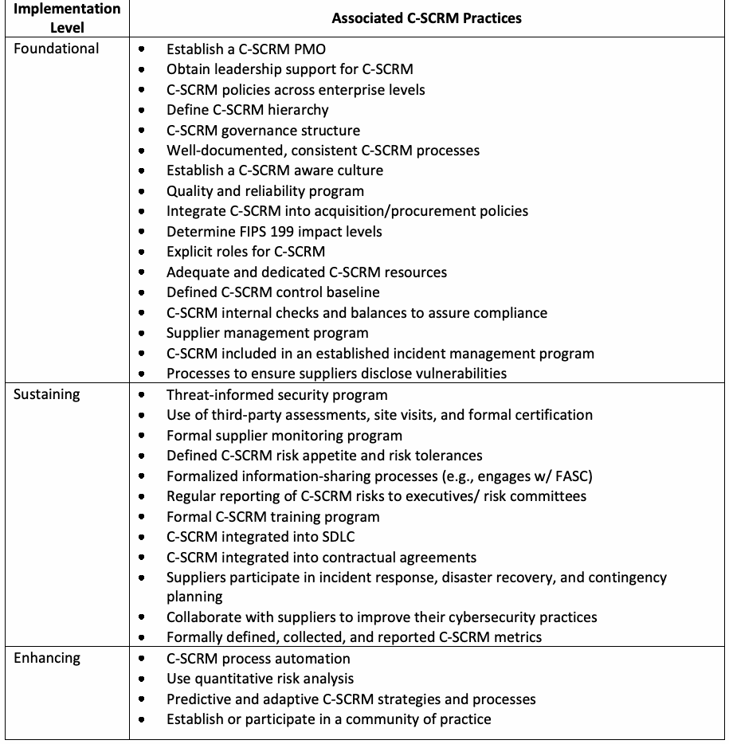
| 実装レベル | 対応するC-SCRM実践 |
| 基礎 | • C-SCRM PMOを設置する • C-SCRMに対するリーダーシップの支援を得る • エンタープライズ各階層にC-SCRM方針を定める • C-SCRM階層を定義する • C-SCRMガバナンス体制を確立する • 十分に文書化された一貫性のあるC-SCRMプロセスを整備する • C-SCRMを意識する文化を醸成する • 品質・信頼性プログラムを設ける • 取得・調達方針にC-SCRMを統合する • FIPS 199の影響度レベルを決定する • C-SCRMの役割を明確にする • 十分かつ専任のC-SCRM資源を確保する • C-SCRM管理策ベースラインを定義する • 準拠を保証するC-SCRM内部チェック・アンド・バランスを設ける • サプライヤー管理プログラムを設ける • 確立済みのインシデント管理プログラムにC-SCRMを含める • サプライヤーの脆弱性開示を確保するプロセスを整備する |
| 継続 | • 脅威情報に基づくセキュリティプログラム • 第三者評価、現地訪問、正式認証の利用 • 正式なサプライヤー監視プログラム • C-SCRMのリスク選好度とリスク許容度の定義 • 正式な情報共有プロセス（例：FASCとの連携） • C-SCRMリスクの幹部／リスク委員会への定期報告 • 正式なC-SCRM訓練プログラム • C-SCRMのSDLCへの統合 • C-SCRMの契約合意への統合 • サプライヤーのインシデント対応、災害復旧、緊急時対応計画への参加 • サプライヤーとの協力によるサイバーセキュリティ慣行の改善 • C-SCRM指標の正式な定義、収集、報告 |
| 高度化 | • C-SCRMプロセスの自動化 • 定量的リスク分析の利用 • 予測型・適応型のC-SCRM戦略とプロセス • 実践コミュニティの設置または参加 |
3.5.1. Measuring C-SCRM Through Performance Measures
3.5.1. パフォーマンス指標によるC-SCRMの測定
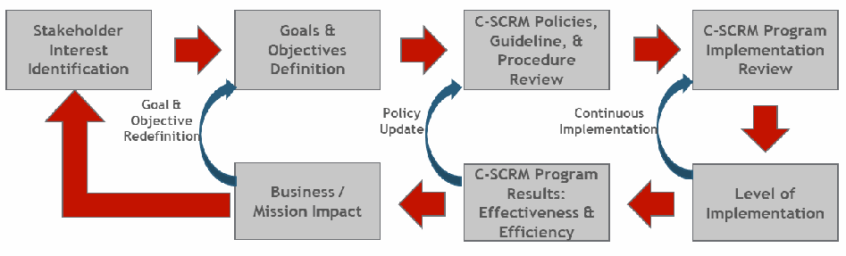
Fig. 8. C-SCRM metrics development process
図8. C-SCRM指標の策定プロセス
Enterprises typically rely on information security measures to facilitate decision-making and improve performance and accountability in their information security programs. Enterprises can achieve similar benefits within their C-SCRM programs. Additionally, enterprises should report C-SCRM metrics to the board through the ERM process. Figure 8 illustrates the process for developing metrics, as outlined in [SP80055r1], and includes:
エンタープライズは通常、情報セキュリティプログラムの意思決定を支援し、実績と説明責任を向上させるため、情報セキュリティ指標を活用する。同様の便益はC-SCRMプログラムでも得られる。さらに、エンタープライズはERMプロセスを通じて、C-SCRM指標を取締役会に報告すべきである。図8は、[SP80055r1]で概説された指標策定プロセスを示し、次の項目を含む：
•Stakeholder Interest Identification: Identify the primary (e.g., CISO, CIO, CTO) and secondary C-SCRM stakeholders (e.g., CEO/Head of Agency, COO, CFO), and define/measure requirements based on the context required for each stakeholder or stakeholder group.
•ステークホルダーの関心の特定：主要な（例：CISO、CIO、CTO）および二次的なC-SCRMステークホルダー（例：CEO／機関の長、COO、CFO）を特定し、各ステークホルダーまたはステークホルダーグループに必要な文脈に基づいて、要件を定義／測定する。
•Goals and Objectives Definition: Identify and document enterprise strategic and C-SCRM-specific performance goals and objectives. These goals may be expressed in the form of enterprise strategic plans, C-SCRM policies, requirements, laws, regulations, etc.
•目標および目的の定義：エンタープライズ戦略およびC-SCRM固有のパフォーマンス目標と目的を特定し、文書化する。これらの目標は、エンタープライズ戦略計画、C-SCRMポリシー、要件、法律、規制などの形で表される場合がある。
未レビュー訳•C-SCRM Policies, Guidelines, and Procedure Review: Identify the desired C-SCRM practices, controls, and expectations outlined within these documents and used to guide/implement C-SCRM across the enterprise.
•C-SCRMポリシー、ガイドライン、および手順のレビュー：これらの文書に示され、エンタープライズ全体でC-SCRMを導き／実装するために用いられる、望ましいC-SCRMの実践、管理策、および期待事項を特定する。
•C-SCRM Program Implementation Review: Collect any existing data, measures, and evidence that can provide insights used to derive new measures. These may be found in C-SCRM Plans, POA&Ms, supplier assessments, etc.
•C-SCRMプログラムの実装レビュー：新たな指標の導出に用いられる洞察をもたらし得る、既存のデータ、指標、および証拠を収集する。これらはC-SCRM計画、POA&M、供給者評価などに見つかる場合がある。
•Level of Implementation: Develop and map measures to the identified C-SCRM standards, policies, and procedures to demonstrate the program’s implementation progress. These measures should be considered when rendering decisions to prioritize and invest in C-SCRM capabilities.
•実装レベル：特定したC-SCRM規格、ポリシー、および手順に測定指標を対応付けて策定し、プログラムの実装進捗を示す。これらの測定指標は、C-SCRM能力の優先順位付けと投資に関する意思決定を行う際に考慮すべきである。
•C-SCRM Program Results on Efficiency and Effectiveness: Develop and map measures of C-SCRM’s efficiency and effectiveness to the identified strategy and policy objectives to gauge whether desired C-SCRM outcomes are met. These measures should be considered part of policy refreshes.
•効率性と有効性に関するC-SCRMプログラムの成果：C-SCRMの効率性および有効性を測定する指標を策定し、特定した戦略およびポリシーの目的に対応付けて、望ましいC-SCRMの成果が達成されているかを評価する。これらの指標は、ポリシー更新の一環として考慮すべきである。
•Business and Mission Impact: Develop and map measures to the identified enterprise strategic and C-SCRM-specific objectives to offer insight into the impact of C-SCRM (e.g., contribution to business process cost savings; reduction in national security risk). These measures should be considered a component of goal and objective refreshes.
•事業およびミッションへの影響：特定したエンタープライズ戦略およびC-SCRM固有の目的に測定指標を対応付けて策定し、C-SCRMの影響に関する洞察（例：事業プロセスのコスト削減への貢献、国家安全保障リスクの低減）を示す。これらの測定指標は、目標および目的の見直しの一要素として考慮すべきである。
Similar to information security measures, C-SCRM-focused measures can be attained at different levels of an enterprise. Table 4 provides example measurement topics across the three Risk Management levels.
情報セキュリティ指標と同様に、C-SCRMに焦点を当てた測定指標は、エンタープライズのさまざまなレベルで取得できる。表4に、3つのリスク管理レベルにおける測定トピックの例を示す。
Table 4. Example measurement topics across the risk management levels
表4. リスク管理レベル全体にわたる測定トピック例
未レビュー訳| Risk Management Level | Example Measurement Topics |
| Level 1 | • Policy adoption at lower levels • Timeliness of policy adoption at lower levels • Adherence to risk appetite and tolerance statements • Differentiated levels of risk exposure across Level 2 • Compliance with regulatory mandates • Adherence to customer requirements |
| Level 2 | • Effectiveness of mitigation strategies • Time allocation across C-SCRM activities • Mission and business process-level risk exposure • Degree and quality of C-SCRM requirement adoption in mission and business processes • Use of a C-SCRM PMO by Level 3 |
| Level 3 | • Design effectiveness of controls • Operating effectiveness of controls • Cost efficiency of controls |
原本PDFの抜粋画像
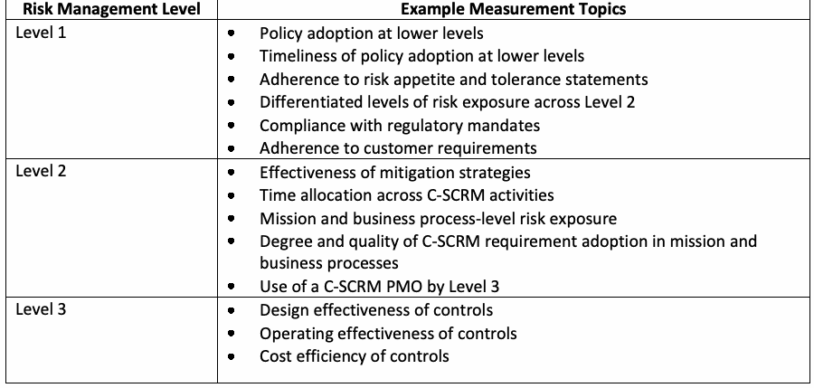
| リスク管理レベル | 測定トピックの例 |
| レベル1 | • 下位レベルでのポリシー採用 • 下位レベルでのポリシー採用の適時性 • リスク選好および許容度の声明の遵守 • レベル2間で異なるリスクエクスポージャーの水準 • 規制上の義務の遵守 • 顧客要件の遵守 |
| レベル2 | • 緩和戦略の有効性 • C-SCRM活動全体への時間配分 • ミッションおよび事業プロセスレベルのリスクエクスポージャー • ミッションおよび事業プロセスにおけるC-SCRM要件採用の程度と質 • レベル3によるC-SCRM PMOの活用 |
| レベル3 | • 管理策の設計上の有効性 • 管理策の運用上の有効性 • 管理策のコスト効率 |
Enterprises should validate identified C-SCRM goals and objectives with their targeted stakeholder groups prior to beginning an effort to develop specific measures. When developing C-SCRM measures, enterprises should focus on the stakeholder’s highest priorities and target measures based on data that can be realistically sourced and gathered. Each established measure should have a specified performance target used to gauge whether goals and objectives in relation to that measure are being met. Enterprises should consider the use of measures templates to formalize each measure and serve as a source of reference for all information pertaining to that measure. Finally, enterprises should develop a formal feedback loop with stakeholders to ensure that measures are continually providing the desired insights and remain aligned with the enterprise’s overall strategic objectives for C-SCRM.
エンタープライズは、具体的な測定指標の策定に着手する前に、特定したC-SCRMの目標および目的を対象ステークホルダーグループとともに検証すべきである。C-SCRM測定指標を策定する際は、ステークホルダーの最優先事項に焦点を当て、現実的に入手・収集できるデータに基づく指標を選ぶべきである。設定する各測定指標には、その指標に関連する目標および目的が達成されているかを評価するための具体的なパフォーマンス目標値を定めるべきである。エンタープライズは、各測定指標を正式なものとし、その指標に関する情報の参照元となる測定指標テンプレートの利用を検討すべきである。最後に、測定指標が望ましい洞察を継続的にもたらし、C-SCRMに関するエンタープライズ全体の戦略目標と整合し続けるよう、ステークホルダーとの正式なフィードバックループを策定すべきである。
3.6. Dedicated Resources
3.6. 専用リソース
To appropriately manage cybersecurity risks throughout the supply chain, enterprises should dedicate funds toward this effort. Identifying resource needs and taking steps to secure adequate, recurring, and dedicated funding are essential and important activities that need to be built into the C-SCRM strategy and implementation planning effort and incorporated into an enterprise’s budgeting, investment review, and funds management processes. Access to adequate resources is a critical, key enabler for the establishment and sustainment of a C-SCRM program capability. Where feasible, enterprises should be encouraged to leverage existing fund sources to improve their C-SCRM posture. The continued availability of dedicated funds will allow enterprises to sustain, expand, and mature their capabilities over time.
サプライチェーン全体のサイバーセキュリティリスクを適切に管理するため、エンタープライズはこの取り組みに資金を充てるべきである。必要なリソースを特定し、十分かつ継続的で専用の資金を確保する措置を講じることは不可欠かつ重要な活動であり、C-SCRM戦略および実装計画の策定に組み込み、エンタープライズの予算編成、投資審査、および資金管理プロセスに取り入れる必要がある。十分なリソースへのアクセスは、C-SCRMプログラム能力の確立および維持を可能にする重要な要素である。可能な場合、エンタープライズは既存の資金源を活用してC-SCRM態勢を改善することが推奨される。専用資金を継続的に利用できれば、エンタープライズは時間をかけて能力を維持、拡大、成熟させることができる。
未レビュー訳Securing and assigning C-SCRM funding is representative of leadership’s commitment to the importance of C-SCRM, its relevance to national and economic security, and ensuring the protection, continuity, and resilience of mission and business processes and assets.
C-SCRMの資金を確保し割り当てることは、C-SCRMの重要性、国家安全保障および経済安全保障におけるその関連性、ならびにミッションおよび事業プロセスと資産の保護、継続性、およびレジリエンスを確保することに対するリーダーシップのコミットメントを示す。
Funding facilitates goal and action-oriented planning. Examining resource needs and allocating funding prompts a budgeting and strategic-planning process. Effective enterprises begin by defining a set of goals and objectives upon which to build a strategic roadmap, laying out the path to achieving them through the assignment and allocation of finite resources. The establishment of dedicated funding tied to C-SCRM objectives sets conditions for accountability of performance and compels responsible staff to be efficient, effective, and adopt a mindset of continuously seeking to improve C-SCRM capabilities and achieve security enhancing outcomes.
資金は、目標と行動を重視した計画を促進する。リソースの必要性を検討して資金を配分することにより、予算編成と戦略計画のプロセスが進む。効果的なエンタープライズは、目標および目的を定義し、それらを土台に戦略ロードマップを作成して、限られたリソースの割当と配分を通じて達成までの道筋を定めることから始める。C-SCRMの目的に結び付いた専用資金を確立することで、実績に対する説明責任が生まれ、担当職員は、効率的かつ効果的に業務を行い、C-SCRM能力を継続的に改善してセキュリティを強化する成果を達成しようとする考え方を採ることを迫られる。
Obtaining new or increased funding can be a challenge as resources are often scarce and necessary for many competing purposes. The limited nature of funds forces prioritization. C-SCRM leaders need to first examine what can be accomplished within the constraints of existing resources and be able to articulate, prioritize, and defend their requests for additional resources. For new investment proposals, this requires a reconciliation of planned initiatives against the enterprise’s mission and business objectives. When well-executed, a systematic planning process can tighten the alignment of C-SCRM processes to these objectives.
リソースは不足していることが多く、競合する多くの目的に必要であるため、新たな資金または増額資金の獲得は困難となる場合がある。資金が限られているため、優先順位付けが必要となる。C-SCRMの責任者は、まず既存リソースの制約内で達成できることを検討し、追加リソースの要求を明確に説明し、優先順位を付け、正当化できる必要がある。新規投資案では、計画中の取り組みをエンタープライズのミッションおよび事業目標に照らして整合させる必要がある。体系的な計画プロセスを適切に実施すれば、C-SCRMプロセスとこれらの目標との整合性を高められる。
未レビュー訳Many C-SCRM processes can and should be built into existing program and operational activities and may be adequately performed using available funds. However, there may be a need for an influx of one-time resources to establish an initial C-SCRM program capability. For example, this might include the need to hire new personnel with expertise in C-SCRM, acquire contractor support to aid in developing C-SCRM program guidance, or develop content for role-based C-SCRM training. There may also be insufficient resources in place to satisfy all recurring C-SCRM program needs. Existing funds may need to be reallocated toward C-SCRM efforts or new or additional funds requested. Enterprises should also seek out opportunities to leverage shared services whenever practical.
多くのC-SCRMプロセスは既存のプログラム活動および運用活動に組み込むことができ、またそうすべきであり、利用可能な資金で十分に実施できる場合がある。しかし、初期のC-SCRMプログラム能力を確立するために、一時的なリソースを追加投入する必要がある場合もある。例えば、C-SCRMの専門知識を持つ職員の新規採用、C-SCRMプログラム指針の策定を支援する請負業者の採用、または役割別C-SCRM研修の教材作成が必要となることがある。また、継続的なC-SCRMプログラムのニーズすべてを満たすだけのリソースが不足する場合もある。既存資金をC-SCRMの取り組みに再配分するか、新規または追加資金を要求する必要が生じ得る。実行可能な場合には、共有サービスを活用する機会も探るべきである。
未レビュー訳The use of shared services can optimize the use of scarce resources and concentrate capability into centers of excellence that provide cost-efficient access to services, systems, or tools. Enterprises can adopt cost-sharing mechanisms across their lower-level entities that allow cost-efficient access to C-SCRM resources and capabilities. Enterprises that pursue shared-services models for C-SCRM should also be aware of the challenges of such models. Shared services (e.g., C-SCRM PMO) are most effective when the enterprise at large relies on a fairly homogenous set of C-SCRM strategies, policies, and processes. In many instances, the centralized delivery of C-SCRM services requires a robust technology infrastructure. The enterprise’s systems should be able to support process automation and centralized delivery in order to fully realize the benefits of a shared-services model.
共有サービスを利用すると、限られたリソースを最適化し、費用効率の高いサービス、システム、またはツールへのアクセスを提供する専門拠点に能力を集約できる。企業は下位組織間で費用分担の仕組みを導入し、C-SCRMのリソースおよび能力を費用効率よく利用できるようにしてもよい。C-SCRMに共有サービスモデルを採用する企業は、そのモデルの課題も認識すべきである。共有サービス（例：C-SCRM PMO）は、企業全体がかなり均質なC-SCRM戦略、ポリシー、およびプロセスに依拠している場合に最も効果を発揮する。多くの場合、C-SCRMサービスを集中提供するには堅牢な技術インフラストラクチャが必要である。共有サービスモデルの便益を十分に実現するには、企業のシステムが、プロセスの自動化と集中提供を支援できるべきである。
未レビュー訳Consultation with budget/finance officials is critical to understanding what options may be available and viable in the near term and out-years. These officials can also advise on how best to justify needs, as well as the timeframes and processes for requesting new funds. There are likely different processes to follow for securing recurring funds versus requesting one-time funding. For example, funding for a new information system to support a C-SCRM capability may involve the development of a formal business case presented to an enterprise’s investment review board for approval. Organizations may find it helpful to break out resource needs into ongoing and one-time costs or into cost categories that align with budget formulation, resource decision-making, and the allocation and management of available funds.
予算／財務担当者との協議は、短期および将来に利用可能で実行可能な選択肢を理解するうえで極めて重要である。これらの担当者は、ニーズを最適に正当化する方法に加え、新規資金の要求に関する時期およびプロセスについても助言できる。継続資金の確保と一時資金の要求では、従うべきプロセスが異なる可能性がある。例えば、C-SCRM能力を支援する新しい情報システムへの資金提供には、エンタープライズの投資審査委員会に承認を求める正式なビジネスケースの作成が必要となる場合がある。リソース需要を継続費用と一時費用に分ける、または予算策定、リソースに関する意思決定、利用可能資金の配分・管理に沿った費用区分に分けると有用な場合がある。
未レビュー訳It is recommended that the C-SCRM PMO have the lead responsibility of coordinating with mission and business process and budget officials to build out and maintain a multi-year C-SCRM program budget that captures both recurring and non-recurring resource requirements and maps those requirements to available funding and fund sources. To understand the amount of funding required, when, and for what purpose, enterprises should identify and assess which type and level of resources (people or things) are required to implement a C-SCRM program capability and perform required C-SCRM processes on an ongoing basis. The cost associated with each of these identified resource needs would then be captured, accumulated, and reflected in a budget that includes line items for relevant cost categories, such as personnel costs, contracts, training, travel, tools, or systems. This will provide the enterprise with a baseline understanding of what can be accomplished within existing resource levels and where there are gaps in need of being filled. The actual allocation of funds may be centralized in a single C-SCRM budget or dispersed across the enterprise and reflected in individual office or mission and business process-area budgets. Regardless of how funds are actually assigned, a centralized picture of the C-SCRM budget and funds status will provide a valuable source of information that justifies new requests, informs prioritization decisions, and adjusts expectations about certain activities and the duration in which they can be accomplished.
C-SCRM PMOが、ミッションおよび事業プロセス担当者ならびに予算担当者との調整を主導し、継続的および非継続的なリソース要件をともに把握した複数年のC-SCRMプログラム予算を策定・維持し、それらの要件を利用可能な資金および資金源に対応付けることが推奨される。必要な資金額、時期、および目的を把握するため、エンタープライズは、C-SCRMプログラム能力の実装と必要なC-SCRMプロセスの継続的な実施に必要なリソースの種類と水準（人または物）を特定し評価すべきである。特定した各リソース需要に関連する費用を把握・集計し、人件費、契約、研修、出張、ツール、またはシステムなど、関連費用区分の項目を含む予算に反映する。その結果、既存のリソース水準で達成できることと、補う必要がある不足分について、エンタープライズが基準となる理解を得られる。実際の資金配分は、単一のC-SCRM予算に集中させても、エンタープライズ全体に分散させ、各部門またはミッション・事業プロセス領域の予算に反映させてもよい。資金の実際の割当方法にかかわらず、C-SCRM予算および資金状況を一元的に把握すれば、新規要求の正当化、優先順位決定への情報提供、特定の活動に関する期待値や達成所要期間の調整に役立つ貴重な情報源となる。
未レビュー訳Ensuring that C-SCRM program funding is distinctly articulated within the enterprise’s budget – with performance measures linked to the funding – will drive accountability for results. The visible dedication of funds in budget requests, performance plans, and reports compels leadership attention on C-SCRM processes and the accomplishment of objectives. Budgets must be requested and justified on a periodic basis. This process allows leadership and oversight officials to trace and measure the effectiveness and efficiency of allocated resources. This, in turn, serves as a driving function for program and operational C-SCRM personnel to track and manage their performance.
C-SCRMプログラムの資金を、資金と連動するパフォーマンス指標とともにエンタープライズ予算内で明確に示すことで、成果に対する説明責任が促進される。予算要求、パフォーマンス計画、および報告書で資金の投入を明示すれば、C-SCRMプロセスと目標達成に対するリーダーシップの注意が高まる。予算は定期的に要求し、正当化しなければならない。このプロセスによって、リーダーシップおよび監督担当者は配分したリソースの効率性と有効性を追跡・測定できる。これにより、プログラムおよび運用を担うC-SCRM職員が自らの実績を追跡・管理する動機付けにもなる。
原本PDFの抜粋画像
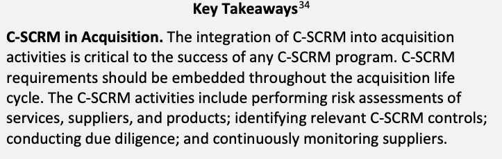
原本PDFの抜粋画像
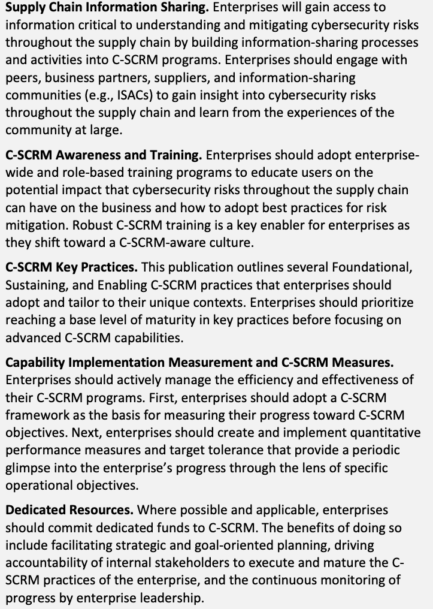
References
参考文献
[CISAWG3] Cybersecurity and Infrastructure Agency – Working Group 3 (2021)
[CISAWG3] サイバーセキュリティ・インフラストラクチャ安全保障庁 — ワーキンググループ3（2021）
未レビュー訳Mitigating ICT Supply Chain Risks with Qualified Bidder and Manufacturer Lists (Arlington, Virginia). Available at https://www.cisa.gov/sites/default/files/publications/ICTSCRMTF_Qualified-Bidders-Lists_508.pdf
『適格入札者および製造業者リストによるICTサプライチェーンリスクの緩和』（バージニア州アーリントン）。入手先：https://www.cisa.gov/sites/default/files/publications/ICTSCRMTF_Qualified-Bidders-Lists_508.pdf
未レビュー訳[CNSSI4009] Committee on National Security Systems (2015) Committee on National Security Systems (CNSS) Glossary (CNSS, Ft. Meade, Md.), CNSSI 4009-2015. Available at https://www.cnss.gov/CNSS/issuances/Instructions.cfm
[CNSSI4009] 国家安全保障システム委員会（2015）Committee on National Security Systems (CNSS) Glossary（CNSS、メリーランド州フォート・ミード）、CNSSI 4009-2015。入手先：https://www.cnss.gov/CNSS/issuances/Instructions.cfm
[COSO2011] Rittenberg L, Martens F (2012) Enterprise Risk Management: Understanding and Communicating Risk Appetite. (Committee of Sponsoring Organizations of the Treadway Commission), Thought Leadership in ERM. Available at https://www.coso.org/Documents/ERM-Understanding-and-Communicating-Risk-Appetite.pdf
[COSO2011] Rittenberg L、Martens F（2012）Enterprise Risk Management: Understanding and Communicating Risk Appetite.（トレッドウェイ委員会支援組織委員会）、Thought Leadership in ERM。入手先：https://www.coso.org/Documents/ERM-Understanding-and-Communicating-Risk-Appetite.pdf
[COSO2020] Martens F, Rittenberg L (2020) Risk Appetite – Critical to Success: Using Risk Appetite To Thrive in a Changing World. (Committee of Sponsoring Organization of the Treadway Commission), Thought Leadership in ERM. Available at https://www.coso.org/Documents/COSO-Guidance-Risk-Appetite-Critical-to-Success.pdf
[COSO2020] Martens F、Rittenberg L（2020）Risk Appetite – Critical to Success: Using Risk Appetite To Thrive in a Changing World。（トレッドウェイ委員会支援組織委員会）、Thought Leadership in ERM。入手先：https://www.coso.org/Documents/COSO-Guidance-Risk-Appetite-Critical-to-Success.pdf
[DIBA_CE]
[DIBA_CE]
未レビュー訳Bureau of Industry and Security, Office of Technology Evaluation (2010) Defense Industrial Base Assessment: Counterfeit Electronics. (U.S. Department of Commerce, Washington, D.C.). Available at https://www.bis.doc.gov/index.php/documents/technology-evaluation/37-defense-industrial-base-assessment-of-counterfeit-electronics-2010/file
産業安全保障局、技術評価室（2010）『防衛産業基盤評価：偽造電子部品』（米国商務省、ワシントンD.C.）。入手先：https://www.bis.doc.gov/index.php/documents/technology-evaluation/37-defense-industrial-base-assessment-of-counterfeit-electronics-2010/file
未レビュー訳[EO14028] Executive Order 14028 (2021) Improving the Nation’s Cybersecurity. (The White House, Washington, DC), DCPD-202100401, May 12, 2021. https://www.govinfo.gov/app/details/DCPD-202100401
[EO14028] 大統領令14028（2021）『国家のサイバーセキュリティの改善』（ホワイトハウス、ワシントンD.C.）、DCPD-202100401、2021年5月12日。https://www.govinfo.gov/app/details/DCPD-202100401
未レビュー訳Federal Acquisition Supply Chain Security Act of 2018 (FASCSA), Title II of the
2018年連邦取得サプライチェーン安全保障法（FASCSA）、第II編
未レビュー訳[FASCSA]
[FASCSA]
未レビュー訳Strengthening and Enhancing Cyber-capabilities by Utilizing Risk Exposure Technology Act (SECURE) Technology Act of 2018, Pub. L. 115-390, 132 Stat.
Strengthening and Enhancing Cyber-capabilities by Utilizing Risk Exposure Technology Act (SECURE) Technology Act of 2018, Pub. L. 115-390, 132 Stat.
5173.Available at https://www.congress.gov/115/plaws/publ390/PLAW-115publ390.pdf
5173.入手先：https://www.congress.gov/115/plaws/publ390/PLAW-115publ390.pdf
未レビュー訳[FedRAMP] General Services Administration (2022) FedRAMP. Available at http://www.fedramp.gov/
[FedRAMP] 一般調達局（2022）FedRAMP。入手先：http://www.fedramp.gov/
[FIPS199]
[FIPS199]
未レビュー訳National Institute of Standards and Technology (2004) Standards for Security Categorization of Federal Information and Information Systems. (U.S. Department of Commerce, Washington, DC), Federal Information Processing Standards Publication (FIPS) 199. https://doi.org/10.6028/NIST.FIPS.199
米国国立標準技術研究所（2004）『連邦情報および情報システムのセキュリティ分類規格』（米国商務省、ワシントンD.C.）、連邦情報処理規格（FIPS）刊行物199。https://doi.org/10.6028/NIST.FIPS.199
未レビュー訳[FIPS200]
[FIPS200]
未レビュー訳National Institute of Standards and Technology (2006) Minimum Security Requirements for Federal Information and Information Systems. (U.S. Department of Commerce, Washington, DC), Federal Information Processing Standards Publication (FIPS) 200. https://doi.org/10.6028/NIST.FIPS.200
米国国立標準技術研究所（2006）『連邦情報および情報システムの最低セキュリティ要件』（米国商務省、ワシントンD.C.）、連邦情報処理規格（FIPS）刊行物200。https://doi.org/10.6028/NIST.FIPS.200
未レビュー訳Cyber Risk Institute (2020) Financial Services Cybersecurity Framework Profile
サイバーリスク研究所（2020）『金融サービス・サイバーセキュリティフレームワーク・プロファイル』
未レビュー訳[FSP]
[FSP]
未レビュー訳Version 1.0. Available at https://cyberriskinstitute.org/the-profile/ Government Accountability Office (2020) Information Technology: Federal
バージョン1.0。入手先：https://cyberriskinstitute.org/the-profile/ 政府説明責任院（2020）『情報技術：連邦政府機関はサプライチェーンリスクを管理するため緊急の措置を講じる必要がある。』
未レビュー訳[GAO]
[GAO]
未レビュー訳Agencies Need to Take Urgent Action to Manage Supply Chain Risks. (U.S. Government Accountability Office, Washington D.C.), Report to Congressional Requesters GAO-21-171. Available at https://www.gao.gov/assets/gao-21-171.pdf
（米国政府説明責任院、ワシントンD.C.）、議会要請者への報告書GAO-21-171。入手先：https://www.gao.gov/assets/gao-21-171.pdf
未レビュー訳[IEC62443_41] International Electrotechnical Commission (2018) IEC 62443-4-1:2018 – Security for industrial automation and control systems – Part4-1: Secure product development lifecycle requirements (IEC, Geneva). Available at https://webstore.iec.ch/publication/33615
[IEC62443_41] 国際電気標準会議（2018）IEC 62443-4-1:2018 – Security for industrial automation and control systems – Part4-1: Secure product development lifecycle requirements（IEC、ジュネーブ）。入手先：https://webstore.iec.ch/publication/33615
[IEEE15288] International Organization for Standardization/International Electrotechnical Commission/Institute of Electrical and Electronics Engineers (2015)
[IEEE15288] 国際標準化機構／国際電気標準会議／電気電子技術者協会（2015）
未レビュー訳ISO/IEC/IEEE 15288:2015 — Systems and software engineering — System life cycle processes (ISO, Geneva). Available at https://www.iso.org/standard/63711.html
ISO/IEC/IEEE 15288:2015 — システムおよびソフトウェアエンジニアリング — システムライフサイクルプロセス（ISO、ジュネーブ）。入手先：https://www.iso.org/standard/63711.html
未レビュー訳[IR7622]
[IR7622]
未レビュー訳Boyens JM, Paulsen C, Bartol N, Shankles S, Moorthy R (2012) Notional Supply Chain Risk Management Practices for Federal Information Systems. (National Institute of Standards and Technology, Gaithersburg, MD), NIST Interagency or Internal Report (IR) 7622. https://doi.org/10.6028/NIST.IR.7622
Boyens JM、Paulsen C、Bartol N、Shankles S、Moorthy R（2012）『連邦情報システムのための概念的サプライチェーンリスク管理実践』（米国国立標準技術研究所、メリーランド州ゲイザースバーグ）、NIST省庁間・内部報告書（IR）7622。https://doi.org/10.6028/NIST.IR.7622
未レビュー訳[IR8179]
[IR8179]
未レビュー訳Paulsen C, Boyens JM, Bartol N, Winkler K (2018) Criticality Analysis Process Model: Prioritizing Systems and Components. (National Institute of Standards and Technology, Gaithersburg, MD), NIST Interagency or Internal Report (IR)
Paulsen C、Boyens JM、Bartol N、Winkler K（2018）『重要度分析プロセスモデル：システムおよびコンポーネントの優先順位付け』（米国国立標準技術研究所、メリーランド州ゲイザースバーグ）、NIST省庁間・内部報告書（IR）
未レビュー訳8179.https://doi.org/10.6028/NIST.IR.8179
8179.https://doi.org/10.6028/NIST.IR.8179
未レビュー訳[IR8276]
[IR8276]
未レビュー訳Boyens J, Paulsen C, Bartol N, Winkler K, Gimbi J (2021) Key Practices in Cyber Supply Chain Risk Management: Observations from Industry. (National Institute of Standards and Technology, Gaithersburg, MD), NIST Interagency or Internal Report (IR) 8276. https://doi.org/10.6028/NIST.IR.8276
Boyens J、Paulsen C、Bartol N、Winkler K、Gimbi J（2021）『サイバーサプライチェーンリスク管理の主要な実践：産業界からの所見』（米国国立標準技術研究所、メリーランド州ゲイザースバーグ）、NIST省庁間・内部報告書（IR）8276。https://doi.org/10.6028/NIST.IR.8276
未レビュー訳[IR8286]
[IR8286]
未レビュー訳Stine KM, Quinn SD, Witte GA, Gardner RK (2020) Integrating Cybersecurity and Enterprise Risk Management (ERM). (National Institute of Standards and Technology, Gaithersburg, MD), NIST Interagency or Internal Report (IR)
Stine KM、Quinn SD、Witte GA、Gardner RK（2020）『サイバーセキュリティとエンタープライズリスク管理（ERM）の統合』（米国国立標準技術研究所、メリーランド州ゲイザースバーグ）、NIST省庁間・内部報告書（IR）
未レビュー訳8286.https://doi.org/10.6028/NIST.IR.8286 International Organization for Standardization (2015) ISO 9000:2015 —
8286.https://doi.org/10.6028/NIST.IR.8286 国際標準化機構（2015）ISO 9000:2015 —
未レビュー訳[ISO9000]
[ISO9000]
未レビュー訳Quality management — Fundamentals and vocabulary (ISO, Geneva). Available at https://www.iso.org/standard/45481.html
品質マネジメント — 基本および用語（ISO、ジュネーブ）。入手先：https://www.iso.org/standard/45481.html
未レビュー訳[ISO28001] International Organization for Standardization (2007) ISO 28001:2007 — Security management systems for the supply chain — Best practices for implementing supply chain security, assessments and plans — Requirements and guidance (ISO, Geneva). Available at https://www.iso.org/standard/45654.html
[ISO28001] 国際標準化機構（2007）ISO 28001:2007 — Security management systems for the supply chain — Best practices for implementing supply chain security, assessments and plans — Requirements and guidance（ISO、ジュネーブ）。入手先：https://www.iso.org/standard/45654.html
[ISOGuide73] International Organization for Standardization (2009) ISO Guide 73:2009 — Risk management — Vocabulary (ISO, Geneva). Available at https://www.iso.org/standard/44651.html
[ISOGuide73] 国際標準化機構（2009）ISO Guide 73:2009 — Risk management — Vocabulary（ISO、ジュネーブ）。入手先：https://www.iso.org/standard/44651.html
[ISOIEC2382] International Organization for Standardization/International Electrotechnical Commission (2015) ISO/IEC 2382:2015 — Information technology — Vocabulary (ISO, Geneva). Available at https://www.iso.org/standard/63598.html
[ISOIEC2382] 国際標準化機構／国際電気標準会議（2015）ISO/IEC 2382:2015 — Information technology — Vocabulary（ISO、ジュネーブ）。入手先：https://www.iso.org/standard/63598.html
[ISOIEC20243] International Organization for Standardization/International Electrotechnical Commission (2018) ISO/IEC 20243-1:2018 – Information technology — Open Trusted Technology ProviderTM Standard (O-TTPS) — Mitigating maliciously tainted and counterfeit products Part 1: Requirements and recommendations (ISO, Geneva). Available at https://www.iso.org/standard/74399.html
[ISOIEC20243] 国際標準化機構／国際電気標準会議（2018）ISO/IEC 20243-1:2018 – Information technology — Open Trusted Technology ProviderTM Standard (O-TTPS) — Mitigating maliciously tainted and counterfeit products Part 1: Requirements and recommendations（ISO、ジュネーブ）。入手先：https://www.iso.org/standard/74399.html
[ISOIEC27000] International Organization for Standardization/International Electrotechnical Commission (2018) ISO/IEC 27000:2018 – Information technology – Security techniques – Information security management systems – Overview and vocabulary (ISO, Geneva). Available at https://www.iso.org/standard/73906.html
[ISOIEC27000] 国際標準化機構／国際電気標準会議（2018）ISO/IEC 27000:2018 – Information technology – Security techniques – Information security management systems – Overview and vocabulary（ISO、ジュネーブ）。入手先：https://www.iso.org/standard/73906.html
[ISOIEC27002] International Organization for Standardization/International Electrotechnical Commission (2022) ISO/IEC 27002:2022 – Information security, cybersecurity and privacy protection – Information security controls (ISO, Geneva). Available at https://www.iso.org/standard/75652.html
[ISOIEC27002] 国際標準化機構／国際電気標準会議（2022）ISO/IEC 27002:2022 – Information security, cybersecurity and privacy protection – Information security controls（ISO、ジュネーブ）。入手先：https://www.iso.org/standard/75652.html
[ISOIEC27036] International Organization for Standardization/International Electrotechnical Commission (2014) ISO/IEC 27036-2:2014 – Information technology – Security techniques – Information security for supplier relationships – Part 2: Requirements (ISO, Geneva). Available at https://www.iso.org/standard/59680.html
[ISOIEC27036] 国際標準化機構／国際電気標準会議（2014）ISO/IEC 27036-2:2014 – Information technology – Security techniques – Information security for supplier relationships – Part 2: Requirements（ISO、ジュネーブ）。入手先：https://www.iso.org/standard/59680.html
[ISOIEC29147] International Organization for Standardization/International Electrotechnical Commission (2018) ISO/IEC 29147:2018 – Information technology – Security techniques – Vulnerability disclosure (ISO, Geneva). Available at https://www.iso.org/standard/72311.html
[ISOIEC29147] 国際標準化機構／国際電気標準会議（2018）ISO/IEC 29147:2018 – Information technology – Security techniques – Vulnerability disclosure（ISO、ジュネーブ）。入手先：https://www.iso.org/standard/72311.html
[ITILSS]
[ITILSS]
未レビュー訳Ed.
版。
未レビュー訳[NDIA]
[NDIA]
未レビュー訳National Defense Industrial Association System Assurance Committee (2008) Engineering for System Assurance. (NDIA, Arlington, VA). Available at https://www.ndia.org/-/media/sites/ndia/meetings-and-events/divisions/systems-engineering/sse-committee/systems-assurance-guidebook.ashx
米国防衛産業協会システム保証委員会（2008）『システム保証のためのエンジニアリング』（NDIA、バージニア州アーリントン）。入手先：https://www.ndia.org/-/media/sites/ndia/meetings-and-events/divisions/systems-engineering/sse-committee/systems-assurance-guidebook.ashx
未レビュー訳[NISTCSF]
[NISTCSF]
未レビュー訳National Institute of Standards and Technology (2024) The NIST Cybersecurity Framework (CSF) 2.0. (National Institute of Standards and Technology, Gaithersburg, MD) NIST Cybersecurity White Paper (CSWP) NIST CSWP 29. https://doi.org/10.6028/NIST.CSWP.29
米国国立標準技術研究所（2024）『NISTサイバーセキュリティフレームワーク（CSF）2.0』（米国国立標準技術研究所、メリーランド州ゲイザースバーグ）、NISTサイバーセキュリティ白書（CSWP）NIST CSWP 29。https://doi.org/10.6028/NIST.CSWP.29
未レビュー訳[NISTSCRM2012] National Institute of Standards and Technology (2012) Summary of the Workshop on Information and Communication Technologies Supply Chain Risk Management. Available at https://tsapps.nist.gov/publication/get_pdf.cfm?pub_id=913338
[NISTSCRM2012] 米国国立標準技術研究所（2012）Summary of the Workshop on Information and Communication Technologies Supply Chain Risk Management。入手先：https://tsapps.nist.gov/publication/get_pdf.cfm?pub_id=913338
[NISTSSDF] National Institute of Standards and Technology (2022) NIST Secure Software Development Framework. Available at https://csrc.nist.gov/projects/ssdf
[NISTSSDF] 米国国立標準技術研究所（2022）NIST Secure Software Development Framework。入手先：https://csrc.nist.gov/projects/ssdf
[NTIASBOM] National Telecommunications and Information Administration, Department of Commerce (2021) The Minimum Elements for a Software Bill of Materials (SBOM). Available at https://www.ntia.doc.gov/files/ntia/publications/sbom_minimum_elements_report.pdf
[NTIASBOM] 米国商務省 国家電気通信情報庁（2021）The Minimum Elements for a Software Bill of Materials (SBOM)。入手先：https://www.ntia.doc.gov/files/ntia/publications/sbom_minimum_elements_report.pdf
[OMBA123] Office of Management and Budget (2004) Management’s Responsibility for Internal Control. (The White House, Washington, DC), OMB Circular A-123, December 21, 2004. Available at https://georgewbush-whitehouse.archives.gov/omb/circulars/a123/a123_rev.html
[OMBA123] 行政管理予算局（2004）Management’s Responsibility for Internal Control.（ホワイトハウス、ワシントンD.C.）、OMB Circular A-123、2004年12月21日。入手先：https://georgewbush-whitehouse.archives.gov/omb/circulars/a123/a123_rev.html
[OMBA130] Office of Management and Budget (2016) Managing Information as a Strategic Resource. (The White House, Washington, DC), OMB Circular A-130, July 28, 2016. Available at https://obamawhitehouse.archives.gov/sites/default/files/omb/assets/OMB/circulars/a130/a130revised.pdf
[OMBA130] 行政管理予算局（2016）Managing Information as a Strategic Resource.（ホワイトハウス、ワシントンD.C.）、OMB Circular A-130、2016年7月28日。入手先：https://obamawhitehouse.archives.gov/sites/default/files/omb/assets/OMB/circulars/a130/a130revised.pdf
[SAFECode1] Software Assurance Forum for Excellence in Code (2010) Software Integrity
[SAFECode1] Software Assurance Forum for Excellence in Code (2010) Software Integrity
未レビュー訳Controls: An Assurance-Based Approach to Minimizing Risks in the Software Supply Chain. Available at http://www.safecode.org/publications/SAFECode_Software_Integrity_Contr ols0610.pdf
Controls: An Assurance-Based Approach to Minimizing Risks in the Software Supply Chain. http://www.safecode.org/publications/SAFECode_Software_Integrity_Contr ols0610.pdf から入手可能。
未レビュー訳[SAFECode2] Software Assurance Forum for Excellence in Code (2009) The Software Supply Chain Integrity Framework: Defining Risks and Responsibilities for Securing Software in the Global Supply Chain. Available at http://www.safecode.org/publication/SAFECode_Supply_Chain0709.pdf
[SAFECode2] Software Assurance Forum for Excellence in Code（2009）The Software Supply Chain Integrity Framework: Defining Risks and Responsibilities for Securing Software in the Global Supply Chain。入手先：http://www.safecode.org/publication/SAFECode_Supply_Chain0709.pdf
[SP80016]
[SP80016]
未レビュー訳deZafra DE, Pitcher SI, Tressler JD, Ippolito JB (1998) Information Technology Security Training Requirements: a Role- and Performance-Based Model. (National Institute of Standards and Technology, Gaithersburg, MD), NIST Special Publication (SP) 800-16. https://doi.org/10.6028/NIST.SP.800-16
deZafra DE, Pitcher SI, Tressler JD, Ippolito JB (1998) 『情報技術セキュリティ訓練要件：役割・パフォーマンスベースのモデル』。（National Institute of Standards and Technology, Gaithersburg, MD）、NIST特別刊行物（SP）800-16。https://doi.org/10.6028/NIST.SP.800-16
未レビュー訳[SP80030r1] Joint Task Force Transformation Initiative (2012) Guide for Conducting Risk Assessments. (National Institute of Standards and Technology, Gaithersburg, MD), NIST Special Publication (SP) 800-30, Rev. 1. https://doi.org/10.6028/NIST.SP.800-30r1
[SP80030r1] Joint Task Force Transformation Initiative (2012) Guide for Conducting Risk Assessments. （National Institute of Standards and Technology, Gaithersburg, MD）、NIST特別刊行物（SP）800-30 Rev. 1。https://doi.org/10.6028/NIST.SP.800-30r1
[SP80032]
[SP80032]
未レビュー訳Kuhn DR, Hu VC, Polk WT, Chang S-jH (2001) Introduction to Public Key Technology and the Federal PKI Infrastructure. (National Institute of Standards and Technology, Gaithersburg, MD), NIST Special Publication (SP) 800-32. https://doi.org/10.6028/NIST.SP.800-32
Kuhn DR, Hu VC, Polk WT, Chang S-jH (2001) 『公開鍵技術および連邦PKI基盤の概要』。（National Institute of Standards and Technology, Gaithersburg, MD）、NIST特別刊行物（SP）800-32。https://doi.org/10.6028/NIST.SP.800-32
未レビュー訳[SP80034r1] Swanson MA, Bowen P, Phillips AW, Gallup D, Lynes D (2010) Contingency Planning Guide for Federal Information Systems. (National Institute of Standards and Technology, Gaithersburg, MD), NIST Special Publication (SP) 800-34, Rev. 1, Includes updates as of November 11, 2010. https://doi.org/10.6028/NIST.SP.800-34r1
[SP80034r1] Swanson MA, Bowen P, Phillips AW, Gallup D, Lynes D (2010) Contingency Planning Guide for Federal Information Systems. （National Institute of Standards and Technology, Gaithersburg, MD）、NIST特別刊行物（SP）800-34 Rev. 1、2010年11月11日時点の更新を含む。https://doi.org/10.6028/NIST.SP.800-34r1
[SP80037]
[SP80037]
未レビュー訳Joint Task Force (2018) Risk Management Framework for Information Systems and Organizations: A System Life Cycle Approach for Security and Privacy. (National Institute of Standards and Technology, Gaithersburg, MD), NIST Special Publication (SP) 800-37, Rev. 2. https://doi.org/10.6028/NIST.SP.800-37r2
Joint Task Force (2018) 『情報システムおよび組織のためのリスクマネジメントフレームワーク：セキュリティとプライバシーのためのシステムライフサイクルアプローチ』。（National Institute of Standards and Technology, Gaithersburg, MD）、NIST特別刊行物（SP）800-37 Rev. 2。https://doi.org/10.6028/NIST.SP.800-37r2
未レビュー訳[SP80039]
[SP80039]
未レビュー訳Joint Task Force Transformation Initiative (2011) Managing Information Security Risk: Organization, Mission, and Information System View. (National Institute of Standards and Technology, Gaithersburg, MD), NIST Special Publication (SP) 800-39. https://doi.org/10.6028/NIST.SP.800-39
Joint Task Force Transformation Initiative (2011) 『情報セキュリティリスクの管理：組織、ミッションおよび情報システムの視点』。（National Institute of Standards and Technology, Gaithersburg, MD）、NIST特別刊行物（SP）800-39。https://doi.org/10.6028/NIST.SP.800-39
未レビュー訳[SP80053r5] Joint Task Force (2020) Security and Privacy Controls for Information Systems and Organizations. (National Institute of Standards and Technology, Gaithersburg, MD), NIST Special Publication (SP) 800-53, Rev. 5. Includes updates as of December 10, 2020. https://doi.org/10.6028/NIST.SP.800-53r5
[SP80053r5] Joint Task Force (2020) Security and Privacy Controls for Information Systems and Organizations. （National Institute of Standards and Technology, Gaithersburg, MD）、NIST特別刊行物（SP）800-53 Rev. 5。2020年12月10日時点の更新を含む。https://doi.org/10.6028/NIST.SP.800-53r5
[SP80053Ar5] Joint Task Force (2022) Assessing Security and Privacy Controls in Information Systems and Organizations. (National Institute of Standards and Technology, Gaithersburg, MD), NIST Special Publication (SP) 800-53A, Rev. 5. https://doi.org/10.6028/NIST.SP.800-53Ar5
[SP80053Ar5] Joint Task Force (2022) Assessing Security and Privacy Controls in Information Systems and Organizations. （National Institute of Standards and Technology, Gaithersburg, MD）、NIST特別刊行物（SP）800-53A Rev. 5。https://doi.org/10.6028/NIST.SP.800-53Ar5
[SP80053B] Joint Task Force (2020) Control Baselines for Information Systems and Organizations. (National Institute of Standards and Technology, Gaithersburg, MD), NIST Special Publication (SP) 800-53B, Includes updates as of December 10, 2020. https://doi.org/10.6028/NIST.SP.800-53B
[SP80053B] Joint Task Force (2020) Control Baselines for Information Systems and Organizations. （National Institute of Standards and Technology, Gaithersburg, MD）、NIST特別刊行物（SP）800-53B、2020年12月10日時点の更新を含む。https://doi.org/10.6028/NIST.SP.800-53B
[SP80055r1] Chew E, Swanson MA, Stine KM, Bartol N, Brown A, Robinson W (2008)
[SP80055r1] Chew E, Swanson MA, Stine KM, Bartol N, Brown A, Robinson W (2008)
未レビュー訳Performance Measurement Guide for Information Security. (National Institute of Standards and Technology, Gaithersburg, MD), NIST Special Publication (SP) 800-55, Rev. 1. https://doi.org/10.6028/NIST.SP.800-55r1
『情報セキュリティのパフォーマンス測定ガイド』。（National Institute of Standards and Technology, Gaithersburg, MD）、NIST特別刊行物（SP）800-55 Rev. 1。https://doi.org/10.6028/NIST.SP.800-55r1
未レビュー訳[SP80060v2] Stine K, Kissel R, Barker W, Lee A, Fahlsing J (2008) Guide for Mapping Types of Information and Information Systems to Security Categories: Appendix. (National Institute of Standards and Technology, Gaithersburg, MD), NIST Special Publication (SP) NIST SP 800-60v2r1. https://doi.org/10.6028/NIST.SP.800-60v2r1
[SP80060v2] Stine K, Kissel R, Barker W, Lee A, Fahlsing J (2008) Guide for Mapping Types of Information and Information Systems to Security Categories: Appendix. （National Institute of Standards and Technology, Gaithersburg, MD）、NIST特別刊行物（SP）NIST SP 800-60v2r1。https://doi.org/10.6028/NIST.SP.800-60v2r1
[SP80064]
[SP80064]
未レビュー訳Kissel R, Stine KM, Scholl MA, Rossman H, Fahlsing J, Gulick, J (2008) Security Considerations in the System Development Life Cycle. (National Institute of Standards and Technology, Gaithersburg, MD), (Withdrawn) NIST Special Publication (SP) 800-64 Rev. 2. https://doi.org/10.6028/NIST.SP.800-64r2
Kissel R, Stine KM, Scholl MA, Rossman H, Fahlsing J, Gulick, J (2008) 『システム開発ライフサイクルにおけるセキュリティ上の考慮事項』。（National Institute of Standards and Technology, Gaithersburg, MD）、（廃止）NIST特別刊行物（SP）800-64 Rev. 2。https://doi.org/10.6028/NIST.SP.800-64r2
未レビュー訳[SP800100] Bowen P, Hash J, Wilson M (2006) Information Security Handbook: A Guide for Managers. (National Institute of Standards and Technology, Gaithersburg, MD), NIST Special Publication (SP) 800-100, Includes updates as of March 7, 2007. https://doi.org/10.6028/NIST.SP.800-100
[SP800100] Bowen P, Hash J, Wilson M (2006) Information Security Handbook: A Guide for Managers. （National Institute of Standards and Technology, Gaithersburg, MD）、NIST特別刊行物（SP）800-100、2007年3月7日時点の更新を含む。https://doi.org/10.6028/NIST.SP.800-100
[SP800115] Scarfone KA, Souppaya MP, Cody A, Orebaugh AD (2008) Technical Guide to Information Security Testing and Assessment. (National Institute of Standards and Technology, Gaithersburg, MD), NIST Special Publication (SP) 800-115. https://doi.org/10.6028/NIST.SP.800-115
[SP800115] Scarfone KA, Souppaya MP, Cody A, Orebaugh AD (2008) Technical Guide to Information Security Testing and Assessment. （National Institute of Standards and Technology, Gaithersburg, MD）、NIST特別刊行物（SP）800-115。https://doi.org/10.6028/NIST.SP.800-115
[SP800160v1r1] Ross RS, McEvilley M, Winstead M (2022) Systems Security Engineering:
[SP800160v1r1] Ross RS, McEvilley M, Winstead M (2022) Systems Security Engineering:
Considerations for a Multidisciplinary Approach in the Engineering of Trustworthy Secure Systems. (National Institute of Standards and Technology, Gaithersburg, MD) NIST Special Publication (SP) 800-160, Vol. 1, Rev. 1. https://doi.org/10.6028/NIST.SP.800-160v1r1
Considerations for a Multidisciplinary Approach in the Engineering of Trustworthy Secure Systems.（National Institute of Standards and Technology, Gaithersburg, MD）NIST特別刊行物（SP）800-160 Vol. 1 Rev. 1。https://doi.org/10.6028/NIST.SP.800-160v1r1
[SP800160v2r1] Ross RS, Pillitteri VY, Graubart R, Bodeau D, McQuaid R (2021) Developing Cyber Resilient Systems: A Systems Security Engineering Approach. (National Institute of Standards and Technology, Gaithersburg, MD), NIST Special Publication (SP) 800-160, Vol. 2, Rev. 1. https://doi.org/10.6028/NIST.SP.800-160v2r1
[SP800160v2r1] Ross RS, Pillitteri VY, Graubart R, Bodeau D, McQuaid R (2021) Developing Cyber Resilient Systems: A Systems Security Engineering Approach. （National Institute of Standards and Technology, Gaithersburg, MD）、NIST特別刊行物（SP）800-160 Vol. 2 Rev. 1。https://doi.org/10.6028/NIST.SP.800-160v2r1
[SP800171r3] Ross RS, Pillitteri VY (2024) Protecting Controlled Unclassified Information in Nonfederal Systems and Organizations. (National Institute of Standards and Technology, Gaithersburg, MD), NIST Special Publication (SP) 800-171, Rev. 3. https://doi.org/10.6028/NIST.SP.800-171r3
[SP800171r3] Ross RS, Pillitteri VY (2024) Protecting Controlled Unclassified Information in Nonfederal Systems and Organizations. （National Institute of Standards and Technology, Gaithersburg, MD）、NIST特別刊行物（SP）800-171 Rev. 3。https://doi.org/10.6028/NIST.SP.800-171r3
[SP800172] Ross RS, Pillitteri VY, Guissanie G, Wagner R, Graubart R, Bodeau D (2021)
[SP800172] Ross RS, Pillitteri VY, Guissanie G, Wagner R, Graubart R, Bodeau D (2021)
未レビュー訳Enhanced Security Requirements for Protecting Controlled Unclassified Information: A Supplement to NIST Special Publication 800-171. (National Institute of Standards and Technology, Gaithersburg, MD), NIST Special Publication (SP) 800-172. https://doi.org/10.6028/NIST.SP.800-172
『管理対象非機密情報を保護するための強化セキュリティ要件：NIST特別刊行物800-171の補足』。（National Institute of Standards and Technology, Gaithersburg, MD）、NIST特別刊行物（SP）800-172。https://doi.org/10.6028/NIST.SP.800-172
未レビュー訳[SP800181r1] Petersen R, Santos D, Wetzel KA, Smith MC, Witte GA (2020 Workforce Framework for Cybersecurity (NICE Framework). (National Institute of Standards and Technology, Gaithersburg, MD), NIST Special Publication (SP) 800-181, Rev. 1. https://doi.org/10.6028/NIST.SP.800-181r1
[SP800181r1] Petersen R, Santos D, Wetzel KA, Smith MC, Witte GA (2020 Workforce Framework for Cybersecurity (NICE Framework). （National Institute of Standards and Technology, Gaithersburg, MD）、NIST特別刊行物（SP）800-181 Rev. 1。https://doi.org/10.6028/NIST.SP.800-181r1
[SwA]
[SwA]
未レビュー訳Risks to the Enterprise. A Reference Guide for Security-Enhanced Software Acquisition and Outsourcing. (National Defense University Press, Washington, D.C.) Information Resources Management College Occasional Paper. Available at https://apps.dtic.mil/dtic/tr/fulltext/u2/a495389.pdf
『セキュリティ強化ソフトウェアの調達・外部委託に関する参考ガイド』。（National Defense University Press, Washington, D.C.）、Information Resources Management College Occasional Paper。https://apps.dtic.mil/dtic/tr/fulltext/u2/a495389.pdf から入手可能。
未レビュー訳Appendix A. C-SCRM Security Controls35
付録A. C-SCRMセキュリティ管理策35
未レビュー訳A.1. C-SCRM Controls Introduction
A.1. C-SCRM管理策の導入
NIST defines security controls as:
NISTはセキュリティ管理策を次のように定義している。
原本PDFの抜粋画像
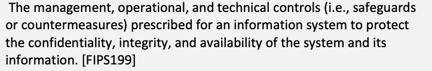
[SP80053r5] defines numerous cybersecurity supply chain-related controls within the catalog of information security controls. This section is structured as an enhanced overlay of [SP80053r5]. It identifies and augments C-SCRM-related controls with additional supplemental guidance and provides new controls as appropriate. The C-SCRM controls are organized into the 20 control families of [SP80053r5]. This approach facilitates use of the security controls assessment techniques articulated in [SP80053Ar5] to assess implementation of C-SCRM controls.
[SP80053r5]は、情報セキュリティ管理策カタログの中に、サイバーセキュリティ・サプライチェーンに関連する多数の管理策を定めている。本節は[SP80053r5]を拡張したオーバーレイとして構成されている。C-SCRM関連管理策を特定して補足指針を追加し、適切な場合には新たな管理策を提示す。C-SCRM管理策は[SP80053r5]の20の管理策ファミリーに分類されている。この方法により、[SP80053Ar5]に記載されたセキュリティ管理策評価技法を用いてC-SCRM管理策の実装を評価しやすくなる。
未レビュー訳The controls provided in this publication are intended for enterprises to implement internally and to require of their contractors and subcontractors if and when applicable and as articulated in a contractual agreement. As with [SP80053r5], the security controls and control enhancements are a starting point from which controls/enhancements may be removed, added, or specialized based on an enterprise’s needs. Each control in this section is listed for its applicability to C-SCRM. Those controls from [SP80053r5] not listed are not considered directly applicable to C-SCRM and, thus, are not included in this publication. Details and supplemental guidance for the various C-SCRM controls in this publication are contained in Sec. A.2.
本刊行物に示す管理策は、該当する場合に契約上の合意で定めるとおり、エンタープライズが内部で実装し、請負業者および下請業者にも要求することを意図している。[SP80053r5]と同様に、セキュリティ管理策と管理策の強化は出発点であり、エンタープライズのニーズに応じて削除、追加または個別調整できる。本節の各管理策は、C-SCRMへの適用可能性に基づいて掲載されている。[SP80053r5]にあって本書に記載されていない管理策は、C-SCRMに直接適用されるとはみなされず、本刊行物には含めていない。本刊行物における各種C-SCRM管理策の詳細と補足指針は、第A.2節に記載している。
未レビュー訳A.1.1. C-SCRM Controls Summary
A.1.1. C-SCRM管理策の概要
During the Respond step of the risk management process articulated in Sec. 2, enterprises select, tailor, and implement controls for mitigating cybersecurity risks throughout the supply chain. [SP80053B] lists a set of information security controls at the [FIPS199] high-, moderate-, and low-impact levels. This section describes how these controls help mitigate risk to information systems and components, as well as the supply chain infrastructure. The section provides 20 C-SCRM control families that include relevant controls and supplemental guidance.
第2節で説明したリスクマネジメントプロセスの対応ステップにおいて、エンタープライズはサプライチェーン全体のサイバーセキュリティリスクを軽減する管理策を選択、調整、実装する。[SP80053B]は、[FIPS199]の高・中・低影響度レベルに対応した情報セキュリティ管理策を列挙している。本節では、これらの管理策が情報システムとコンポーネント、およびサプライチェーン基盤に対するリスクの軽減にどう役立つかを説明する。また、関連する管理策と補足指針を含む20のC-SCRM管理策ファミリーを示す。
未レビュー訳Figure 9 depicts the process used to identify, refine, and add C-SCRM supplemental guidance to the [SP80053r5] C-SCRM-related controls and represents the following steps:
図9は、[SP80053r5]のC-SCRM関連管理策を特定・精緻化し、補足指針を追加するために用いたプロセスを示し、次の手順を表している。
未レビュー訳1.Select and extract individual controls and enhancements from [SP80053r5] applicable to
1.[SP80053r5]からC-SCRMに適用可能な個別の管理策と強化策を選択・抽出する。
未レビュー訳C-SCRM.
C-SCRM。
未レビュー訳2.Analyze these controls to determine how they apply to C-SCRM.
2.これらの管理策を分析し、C-SCRMにどのように適用されるかを判断する。
未レビュー訳3.Evaluate the resulting set of controls and enhancements to determine whether all C-SCRM concerns were addressed.
3.得られた管理策・強化策一式を評価し、C-SCRM上のすべての懸念事項に対処できているかを判断する。
未レビュー訳4.Develop additional controls currently undefined in [SP80053r5].
4.[SP80053r5]でまだ定義されていない追加管理策を策定する。
未レビュー訳5.Identify controls for flow down to relevant sub-level contractors.
5.関連する下位階層の請負業者へ展開する管理策を特定する。
未レビュー訳6.Assign applicable levels to each C-SCRM control.
6.各C-SCRM管理策に適用レベルを割り当てる。
未レビュー訳7.Develop C-SCRM-specific supplemental guidance for each C-SCRM control.
7.各C-SCRM管理策について、C-SCRM固有の補足指針を策定する。
未レビュー訳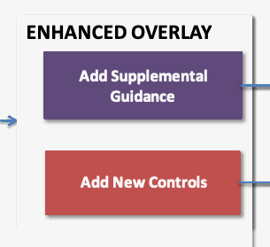
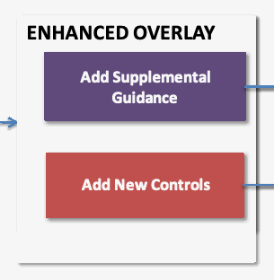
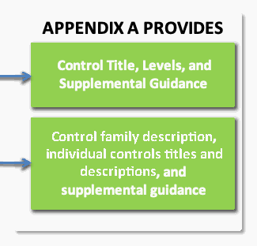
原本PDFの抜粋画像
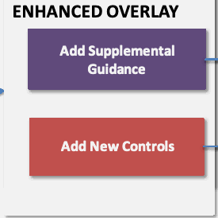
APPENDIX A PROVIDES
付録Aでは次を提示する。
未レビュー訳
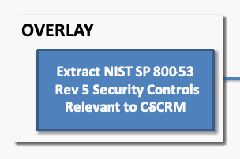
OVERLAY
オーバーレイ
未レビュー訳Control Title, Levels, and Supplemental Guidance
管理策のタイトル、適用レベル、補足指針
未レビュー訳Extract NIST SP 800-53 Rev 5 Security Controls RReelelevvaannttttooICCT-SCSCRRMM
NIST SP 800-53 Rev. 5のセキュリティ管理策からC-SCRM関連のものを抽出
未レビュー訳Control family description, individual controls titles and descriptions, and supplemental guidance
管理策ファミリーの説明、個々の管理策のタイトルと説明、および補足指針
未レビュー訳Fig. 9. C-SCRM security controls in SP 800-161, Rev. 1
図9. SP 800-161 Rev. 1におけるC-SCRMセキュリティ管理策
未レビュー訳Note that [SP80053r5] provides C-SCRM-related controls and control families. These controls may be listed in this publication with a summary or additional guidance and a reference to the original [SP80053r5] control and supplemental guidance detail.
[SP80053r5]には、C-SCRM関連の管理策と管理策ファミリーが定められている。本刊行物では、これらの管理策を要約または追加指針とともに掲載し、元となる[SP80053r5]の管理策および補足指針の詳細を参照する場合がある。
未レビュー訳A.1.1.1. C-SCRM Controls Throughout the Enterprise
A.1.1.1. エンタープライズ全体におけるC-SCRM管理策
未レビュー訳As noted in Table 5, C-SCRM controls in this publication are designated by the three levels comprising the enterprise. This is to facilitate the selection of C-SCRM controls specific to enterprises, their various missions, and individual systems, as described in Appendix C under the Respond step of the risk management process. During controls selection, enterprises should use the C-SCRM controls in this section to identify appropriate C-SCRM controls for tailoring per risk assessment. By selecting and implementing applicable C-SCRM controls for each level, enterprises will ensure that they have appropriately addressed C-SCRM.
表5に示すように、本刊行物のC-SCRM管理策には、エンタープライズを構成する3つの階層が指定されている。これは、付録Cのリスクマネジメントプロセスの対応ステップに記載するように、エンタープライズ、そのさまざまなミッション、および個々のシステムに固有のC-SCRM管理策を選択しやすくするためである。管理策を選択する際、エンタープライズは本節のC-SCRM管理策を用いて、リスク評価に基づく調整に適した管理策を特定するべきである。各階層に適用可能なC-SCRM管理策を選択・実装することで、エンタープライズはC-SCRMに適切に対処できる。
未レビュー訳Applying C-SCRM Controls to Acquiring Products and Services
取得する製品・サービスへのC-SCRM管理策の適用
未レビュー訳Acquirers may use C-SCRM controls as the basis from which to communicate their C-SCRM requirements to different types of enterprises that provide products and services to acquirers, including suppliers, developers, system integrators, external system service providers, and other ICT/OT-related service providers. Acquirers should avoid using generalized requirements statements, such as “ensure compliance with NIST SP 800-161, Rev. 1 controls.” Acquirers must be careful to select the controls relevant to the specific use case of the service or product being acquired. Acquirers are encouraged to integrate C-SCRM throughout their acquisition activities. More detail on the role of C-SCRM in acquisition is provided in Sec. 3.1 of this document.
調達側は、サプライヤー、開発者、システムインテグレーター、外部システムサービスプロバイダー、その他のICT/OT関連サービスプロバイダーなど、製品・サービスを提供するさまざまな種類のエンタープライズにC-SCRM要件を伝える際の基礎として、C-SCRM管理策を使用できる。調達側は、「NIST SP 800-161 Rev. 1の管理策への準拠を確保すること」のような一般化された要件文の使用を避けるべきである。取得するサービスまたは製品の具体的なユースケースに関連する管理策を慎重に選択しなければならない。調達活動全体にC-SCRMを統合することが推奨される。調達におけるC-SCRMの役割の詳細は、本書第3.1節に記載されている。
未レビュー訳It is important to recognize that the controls in this section do not provide specific contracting language. Acquirers should use this publication as guidance to develop their own contracting language with specific C-SCRM requirements for inclusion. The following sections expand upon the supplier, developer, system integrator, external system service provider, and other ICT/OT-related service provider roles with respect to C-SCRM expectations for acquirers.
本節の管理策は、具体的な契約文言を提示するものではない点を認識することが重要である。調達側は、本刊行物を指針として、自らの契約文言を策定し、具体的なC-SCRM要件を盛り込むべきである。以下の節では、調達側が期待するC-SCRM上の役割に関して、供給者、開発者、システムインテグレーター、外部システムサービスプロバイダー、その他のICT/OT関連サービスプロバイダーについて詳しく説明する。
未レビュー訳Enterprises may use multiple techniques to ascertain whether these controls are in place, such as supplier self-assessment, acquirer review, or third-party assessments for measurement and adherence to the enterprise’s requirements. Enterprises should first look to established third-party assessments to see if they meet their needs. When an enterprise defines C-SCRM requirements, it may discover that established third-party assessments may not address all specific requirements. In this case, additional evidence may be needed to justify unaddressed requirements. Please note that the data obtained for this purpose should be appropriately protected.
サプライヤーの自己評価、調達側のレビュー、第三者評価など、複数の手法を用いて、これらの管理策が導入されているか、またエンタープライズ要件への適合状況を測定できる。エンタープライズはまず、確立済みの第三者評価が自らのニーズを満たすか確認するべきである。C-SCRM要件を定義する際、確立済みの第三者評価では具体的な要件のすべてに対応できないことが判明する場合がある。その場合、未対応の要件を正当化する追加証拠が必要となることがある。この目的で取得したデータは適切に保護するべきである。
未レビュー訳Suppliers
サプライヤー
Suppliers may provide either commercial off-the-shelf (COTS) or, in federal contexts, government off-the-shelf (GOTS) solutions to the acquirer. COTS solutions include non-developmental items (NDI), such as commercially-licensed solutions/products. GOTS solutions are government-only licensable solutions. Suppliers are a diverse group that ranges from very small to large, specialized to diversified, and based in a single country to transnational. Suppliers also range widely in their level of sophistication, resources, and transparency/visibility into their processes and solutions.
サプライヤーは、調達側に市販既製品（COTS）または連邦政府の文脈では政府専用既製品（GOTS）のソリューションを提供する場合がある。COTSソリューションには、市販ライセンスのソリューション／製品など、非開発品（NDI）が含まれる。GOTSソリューションは政府のみがライセンスできるソリューションである。サプライヤーは、非常に小規模から大規模、専門特化から多角化、単一国内に拠点を置く企業から多国籍企業まで多岐にわたる。また、成熟度、資源、プロセスやソリューションに対する透明性・可視性も大きく異なる。
未レビュー訳Suppliers have diverse levels and types of C-SCRM practices in place. These practices and other related practices may provide the requisite evidence for SCRM evaluation. An example of a federal resource that may be leveraged is the Defense Microelectronics Activity (DMEA) accreditation for trusted suppliers. When appropriate, allow suppliers the opportunity to reuse any existing data and documentation that may provide evidence of C-SCRM implementation.
サプライヤーが実施するC-SCRM実践は、レベルも種類もさまざまである。これらの実践や関連する他の実践が、SCRM評価に必要な証拠となる場合がある。活用可能な連邦政府の資源の例として、信頼できるサプライヤーに対するDefense Microelectronics Activity（DMEA）の認定がある。適切な場合、C-SCRM実装の証拠となる既存データや文書を再利用する機会をサプライヤーに認めること。
Enterprises should consider whether the cost of doing business with suppliers may be directly impacted by the extent of supply chain cybersecurity requirements imposed on suppliers, the willingness or ability of suppliers to allow visibility into how their products are developed or manufactured, and how they apply security and supply chain practices to their solutions. When enterprises or system integrators require greater levels of transparency from suppliers, they must consider the possible cost implications of such requirements. Suppliers may opt not to participate in procurements to avoid increased costs or perceived risks to their intellectual property, limiting an enterprise’s supply or technology choices. Additionally, suppliers may face risks from customers imposing multiple and different sets of supply chain cybersecurity requirements with which the supplier must comply on a per-customer basis. The amount of transparency required from suppliers should be commensurate to the suppliers’ criticality, which is sufficient to address inherent risk.
企業は、供給者に課すサプライチェーン・サイバーセキュリティ要件の範囲、製品の開発・製造方法への可視性を供給者が認める意思または能力、ならびに供給者が自らのソリューションにセキュリティおよびサプライチェーン慣行をどう適用しているかが、供給者との取引コストに直接影響するかどうかを検討すべきである。企業またはシステムインテグレーターが供給者により高い透明性を求める場合、その要件によるコスト上の影響を考慮しなければならない。供給者は、コスト増や知的財産へのリスクと認識したものを避けるために調達への参加を見送ることがあり、その結果、企業が選択できる供給元や技術が限られる可能性がある。また、供給者は、顧客が複数かつ異なるサプライチェーン・サイバーセキュリティ要件を課し、供給者が顧客ごとにそれらを遵守しなければならない場合、そのリスクに直面することがある。供給者に求める透明性の程度は、内在リスクに対処するのに十分な範囲で、供給者の重要度に釣り合うべきである。
Developers and Manufacturers
開発者および製造業者
Developers and manufactures are personnel that develop or manufacture systems, system components (e.g., software), or system services (e.g., Application Programming Interfaces [APIs]). Development can occur internally within enterprises or through external entities. Developers typically maintain privileged access rights and play an essential role throughout the SDLC. The activities they perform and the work they produce can either enhance security or introduce new vulnerabilities. It is, therefore, essential that developers are both subject to and intimately familiar with C-SCRM requirements and controls.
開発者および製造業者とは、システム、システムコンポーネント（例：ソフトウェア）、またはシステムサービス（例：アプリケーションプログラミングインターフェース [API]）を開発または製造する担当者である。開発は、エンタープライズの内部で行われることも、外部の主体を通じて行われることもある。開発者は通常、特権アクセス権を保持し、SDLC全体を通じて不可欠な役割を果たす。開発者が実施する活動と作り出す成果物は、セキュリティを高めることも、新たな脆弱性を持ち込むこともある。したがって、開発者がC-SCRMの要件および管理策の適用を受け、かつそれらを熟知していることが不可欠である。
System Integrators
システムインテグレーター
System integrators provide customized services to the acquirer, including custom development, test, operations, and maintenance. This group usually replies to a request for proposal from an acquirer with a solution or service that is customized to the acquirer’s requirements. Such proposals provided by system integrators can include many layers of suppliers and teaming arrangements with other vendors or subcontractors. The system integrator should ensure that these business entities are vetted and verified with respect to the acquirer’s C-SCRM requirements. Because of the level of visibility that can be obtained in the relationship with the system integrator, the acquirer has the discretion to require rigorous supplier acceptance criteria and any relevant countermeasures to address identified or potential risks.
システムインテグレーターは、カスタム開発、試験、運用、保守など、調達側にカスタマイズされたサービスを提供する。通常、調達側の提案依頼に対し、その要件に合わせたソリューションまたはサービスを提案する。システムインテグレーターの提案には、多層のサプライヤーや、他のベンダー・下請業者との協業体制が含まれる場合がある。システムインテグレーターは、これらの事業体が調達側のC-SCRM要件に照らして審査・検証されていることを確保するべきである。システムインテグレーターとの関係で得られる可視性の程度を踏まえ、調達側は厳格なサプライヤー受入基準や、特定済みまたは潜在的リスクに対処する関連対抗措置を要求できる。
External System Service Providers of Information System Services
情報システムサービスの外部システムサービスプロバイダー
Enterprises use external service providers to perform or support some of their mission and business functions [SP80053r5]. The outsourcing of systems and services creates a set of cybersecurity supply chain concerns that reduces the acquirer’s visibility into and control of the outsourced functions. Therefore, it requires increased rigor from enterprises in defining C-SCRM requirements, stating them in procurement agreements, monitoring delivered services, and evaluating them for compliance with the stated requirements. Regardless of who performs the services, the acquirer is ultimately responsible and accountable for the risk to the enterprise’s systems and data that result from the use of these services. Enterprises should implement a set of compensating C-SCRM controls to address this risk and work with the mission and business process owner or risk executive to accept this risk. A variety of methods may be used to communicate and subsequently verify and monitor C-SCRM requirements through such vehicles as contracts, interagency agreements, lines of business arrangements, licensing agreements, and/or supply chain transactions.
エンタープライズは、ミッションや業務機能の一部を実施または支援するため、外部サービスプロバイダーを利用する[SP80053r5]。システムやサービスの外部委託は、委託機能に対する調達側の可視性と制御を低下させる、サイバーセキュリティ・サプライチェーン上の懸念を生む。したがって、C-SCRM要件の定義、調達契約への明記、提供サービスの監視、明記された要件への準拠評価において、エンタープライズには一層厳格な対応が求められる。誰がサービスを実施するかにかかわらず、サービス利用によって生じるエンタープライズのシステムおよびデータへのリスクに対する最終的な責任と説明責任は調達側にある。エンタープライズは、このリスクに対処する一連の代償的C-SCRM管理策を実装し、ミッション・業務プロセス責任者またはリスク責任者と連携して当該リスクを受容するべきである。契約、省庁間協定、業務分野の取り決め、ライセンス契約、および／またはサプライチェーン取引などを通じて、C-SCRM要件を伝達し、その後に検証・監視する方法はさまざまである。
未レビュー訳Other ICT/OT-Related Service Providers
その他のICT/OT関連サービスプロバイダー
Providers of services can perform a wide range of different functions, ranging from consulting to publishing website content to janitorial services. Other ICT/OT-related service providers encompass those providers that require physical or logical access to ICT/OT or the use technology (e.g., an aerial photographer using a drone to take video/pictures or a security firm remotely monitoring a facility using cloud-based video surveillance) as a means of delivering their service. As a result of service provider access or use, the potential for cyber supply chain risk being introduced to the enterprise rises.
サービスプロバイダーは、コンサルティングからウェブサイトコンテンツの公開、清掃サービスまで、幅広い機能を実行できる。その他のICT/OT関連サービスプロバイダーには、サービス提供手段としてICT/OTへの物理的または論理的アクセス、あるいは技術の使用を必要とする事業者が含まれる（例：ドローンで動画・写真を撮影する空中写真撮影者、クラウド型ビデオ監視を用いて施設を遠隔監視する警備会社）。サービスプロバイダーによるアクセスまたは技術の使用により、サイバー・サプライチェーンリスクがエンタープライズに持ち込まれる可能性が高まる。
Operational technology possesses unique operational and security characteristics that necessitate the application of specialized skills and capabilities to effectively protect them. Enterprises that have significant OT components throughout their enterprise architecture often turn to specialized service providers for the secure implementation and maintenance of these devices, systems, or equipment. Any enterprise or individual providing services that may include authorized access to an ICT or OT system should adhere to enterprise C-SCRM requirements. Enterprises should apply special scrutiny to ICT/OT-related service providers managing mission-critical and/or safety-relevant assets.
運用技術には固有の運用上・セキュリティ上の特性があり、効果的に保護するには専門的な技能と能力を適用する必要がある。エンタープライズ・アーキテクチャ全体に重要なOTコンポーネントを持つエンタープライズは、これらの装置、システムまたは機器を安全に実装・保守するため、専門サービスプロバイダーを利用することが少なくない。ICTまたはOTシステムへの認可アクセスを含む可能性のあるサービスを提供するエンタープライズまたは個人は、エンタープライズのC-SCRM要件を遵守するべきである。エンタープライズは、ミッションクリティカルおよび／または安全上重要な資産を管理するICT/OT関連サービスプロバイダーを特に厳しく精査するべきである。
未レビュー訳A.1.2. Selecting, Tailoring, and Implementing C-SCRM Security Controls
A.1.2. C-SCRMセキュリティ管理策の選択、調整、および実装
The C-SCRM controls defined in this section should be selected and tailored according to individual enterprise needs and environments using the guidance in [SP80053r5] in order to ensure a cost-effective, risk-based approach to providing enterprise-wide C-SCRM. The C-SCRM baseline defined in this publication addresses the basic needs of a broad and diverse set of constituents. Enterprises must select, tailor, and implement the security controls based on: (i) the environments in which enterprise information systems are acquired and operate; (ii) the nature of operations conducted by enterprises; (iii) the types of threats facing enterprises, mission and business processes, supply chains, and information systems; and (iv) the type of information processed, stored, or transmitted by information systems and the supply chain infrastructure.
この節で定義するC-SCRM管理策は、エンタープライズ全体にC-SCRMを提供する費用対効果の高いリスクベースのアプローチを確保するため、[SP80053r5]の指針を用い、各エンタープライズのニーズおよび環境に応じて選択し調整すべきである。本刊行物で定義するC-SCRMベースラインは、幅広く多様な関係者の基本的なニーズに対応する。エンタープライズは、次の事項に基づいてセキュリティ管理策を選択、調整、および実装しなければならない：(i) エンタープライズの情報システムが取得され運用される環境、(ii) エンタープライズが実施する業務の性質、(iii) エンタープライズ、ミッションおよび事業プロセス、サプライチェーン、情報システムが直面する脅威の種類、ならびに(iv) 情報システムおよびサプライチェーン基盤によって処理、保存、または伝送される情報の種類。
After selecting the initial set of security controls, the acquirer should initiate the tailoring process according to NIST SP 800-53B, Control Baselines for Information Systems and Organization, in order to appropriately modify and more closely align the selected controls with the specific conditions within the enterprise. The tailoring should be coordinated with and approved by the appropriate enterprise officials (e.g., authorizing officials, authorizing official designated representatives, risk executive [function], chief information officers, or senior information security officers) prior to implementing the C-SCRM controls. Additionally, enterprises have the flexibility to perform the tailoring process at the enterprise level (either as the required tailored baseline or as the starting point for policy-, program-, or system-specific tailoring) in support of a specific program at the individual information system level or using a combination of enterprise-level, program/mission-level, and system-specific approaches.
初期のセキュリティ管理策一式を選択した後、取得者は、エンタープライズ内の固有の条件に合わせて管理策を適切に変更し、より緊密に整合させるため、NIST SP 800-53B『情報システムおよび組織の管理策ベースライン』に従って調整プロセスを開始すべきである。調整については、C-SCRM管理策を実装する前に、適切なエンタープライズ職員（例：認可担当者、認可担当者の指定代理人、リスク執行役［機能］、最高情報責任者、上級情報セキュリティ責任者）と調整し、承認を得るべきである。さらに、エンタープライズは、特定のプログラムを支援するため、エンタープライズレベル（必須の調整済みベースラインとして、またはポリシー、プログラム、システム固有の調整の出発点として）、個々の情報システムレベル、あるいはエンタープライズレベル、プログラム／ミッションレベル、およびシステム固有のアプローチを組み合わせて、調整プロセスを実施できる。
Selection and tailoring decisions, including the specific rationale for those decisions, should be included within the C-SCRM documentation at Levels 1, 2, and 3 and Appendix C and approved by the appropriate enterprise officials as part of the C-SCRM plan approval process.
選択および調整に関する決定（各決定の具体的な根拠を含む）は、レベル1、2、3および付録CのC-SCRM文書に記載し、C-SCRM計画の承認プロセスの一環として適切なエンタープライズ職員の承認を得るべきである。
C-SCRM CONTROL FORMAT
C-SCRM管理策の形式
未レビュー訳Table 5 shows the format used in this publication for controls providing supplemental C-SCRM guidance on existing [SP80053r5] controls or control enhancements.
表5に、既存の[SP80053r5]管理策または管理策の強化に対する補足的なC-SCRM指針を提供する管理策について、本刊行物で使用する形式を示す。
未レビュー訳C-SCRM controls that do not have a parent [SP80053r5] control generally follow the format described in [SP80053r5] with the addition of relevant levels. New controls are given identifiers consistent with [SP80053r5] but do not duplicate existing control identifiers.
親となる[SP80053r5]管理策を持たないC-SCRM管理策は、通常、関連するレベルを加えたうえで[SP80053r5]に記載された形式に従う。新しい管理策には[SP80053r5]と整合する識別子を付与するが、既存の管理策識別子を重複させない。
未レビュー訳Table 5. C-SCRM control format
表5. C-SCRM管理策の形式
CONTROL CONTROL NAME IDENTIFIER
管理策識別子 管理策名
未レビュー訳Supplemental C-SCRM Guidance:
補足的なC-SCRM指針：
Level(s): Related Control(s): Control Enhancement(s): CONTROL NAME | CONTROL ENHANCEMENT NAME
適用レベル： 関連管理策： 管理策の強化： 管理策名｜管理策の強化名
未レビュー訳(1)
(1)
未レビュー訳Supplemental C-SCRM Guidance: Level(s): Related Control(s):
補足的なC-SCRM指針： 適用レベル： 関連管理策：
未レビュー訳An example of the C-SCRM control format is shown below using C-SCRM Control AC-3 and SCRM Control Enhancement AC-3(8):
C-SCRM管理策の形式の例を、C-SCRM管理策AC-3およびSCRM管理策の強化AC-3(8)を用いて以下に示す：
AC-3 ACCESS ENFORCEMENT
AC-3 アクセスの強制
Supplemental C-SCRM Guidance: Ensure that the information systems and the supply chain have appropriate access enforcement mechanisms in place. This includes both physical and logical access enforcement mechanisms, which likely work in coordination for supply chain needs. Enterprises should ensure a detailed definition of access enforcement.
補足的なC-SCRM指針：情報システムおよびサプライチェーンに、適切なアクセス強制の仕組みが導入されていることを確保する。これには、物理的および論理的なアクセス強制の仕組みが含まれ、サプライチェーンのニーズに応じて両者が連携して機能する可能性が高い。エンタープライズは、アクセス強制を詳細に定義すべきである。
Level(s): 2, 3
適用レベル：2、3
Related Control(s): AC-4
関連管理策：AC-4
Control Enhancement(s):
管理策の強化：
(8) ACCESS ENFORCEMENT | REVOCATION OF ACCESS AUTHORIZATIONS
(8) アクセスの強制｜アクセス認可の取消し
Supplemental C-SCRM Guidance: Prompt revocation is critical to ensure that suppliers, developers, system integrators, external system service providers, and other ICT/OT-related service providers who no longer require access or who abuse or violate their access privilege are not able to access an enterprise’s system. For example, in a “badge flipping” situation, a contract is transferred from one system integrator enterprise to another with the same personnel supporting the contract. In that situation, the enterprise should disable the existing accounts, retire the old credentials, establish new accounts, and issue completely new credentials.
補足的なC-SCRM指針：供給者、開発者、システムインテグレーター、外部システムサービスプロバイダー、およびその他のICT/OT関連サービスプロバイダーが、アクセスを必要としなくなった場合、またはアクセス権限を悪用・違反した場合に、エンタープライズのシステムへアクセスできないようにするには、速やかな取消しが不可欠である。例えば、「バッジの切替え」の状況では、同じ職員が契約を支援したまま、契約があるシステムインテグレーター企業から別の企業へ移管される。この場合、エンタープライズは既存アカウントを無効にし、旧資格情報を廃止し、新しいアカウントを作成して、まったく新しい資格情報を発行すべきである。
Level(s): 2, 3
適用レベル：2、3
USING C-SCRM CONTROLS IN THIS PUBLICATION
本刊行物のC-SCRM管理策の使用
未レビュー訳The remainder of Appendix A provides the enhanced C-SCRM overlay of SP 800-53, Rev. 5. This section displays the relationship between SP 800-53, Rev. 5 controls and C-SCRM controls in one of the following ways:
付録Aの残りの部分では、SP 800-53 Rev. 5にC-SCRMの強化を重ねた内容を示す。この節では、SP 800-53 Rev. 5の管理策とC-SCRM管理策の関係を、次のいずれかの方法で示す：
未レビュー訳•If a [SP80053r5] control or enhancement was determined to be an information security control that serves as a foundational control for C-SCRM but is not specific to C-SCRM, it is not included in this publication.
•[SP80053r5]の管理策または強化が、C-SCRMの基盤となるがC-SCRM固有ではない情報セキュリティ管理策であると判断された場合、本刊行物には含めない。
未レビュー訳•If a [SP80053r5] control or enhancement was determined to be relevant to C-SCRM, the levels in which the control applies are also provided.
•[SP80053r5]の管理策または強化がC-SCRMに関連すると判断された場合、その管理策が適用されるレベルも示す。
未レビュー訳•If a [SP80053r5] enhancement was determined to be relevant to C-SCRM but the parent control was not, then the parent control number and title are included, but there is no supplemental C-SCRM guidance.
•[SP80053r5]の強化がC-SCRMに関連するが、親管理策は関連しないと判断された場合、親管理策の番号とタイトルを記載するが、補足的なC-SCRM指針は記載しない。
未レビュー訳•C-SCRM controls/enhancements that do not have an associated [SP80053r5] control/enhancement are listed with their titles and the control/enhancement text.
•関連する[SP80053r5]管理策／強化を持たないC-SCRM管理策／強化は、タイトルおよび管理策／強化の本文とともに掲載する。
未レビュー訳•All C-SCRM controls include the levels for which the control applies and supplemental C-SCRM guidance as applicable.
•すべてのC-SCRM管理策には、当該管理策の適用レベルと、該当する場合は補足的なC-SCRM指針を含める。
未レビュー訳•When a control enhancement provides a mechanism for implementing the C-SCRM control, the control enhancement is listed within the Supplemental C-SCRM Guidance and is not included separately.
•管理策の強化がC-SCRM管理策を実装する仕組みを提供する場合、その管理策の強化は補足的なC-SCRM指針の中に記載し、独立した項目としては含めない。
•If [SP80053r5] already captures withdrawals or reorganization of prior [SP80016] controls, it is not included.
•[SP80053r5]で旧[SP80016]管理策の撤回または再編がすでに反映されている場合、本刊行物には含めない。
未レビュー訳The following new controls and control enhancement have been added:
次の新しい管理策および管理策の強化を追加した：
•The C-SCRM Control Enhancement AT-3(6) – Role-Based Training | Counterintelligence Training is added to the Awareness and Training control family
•C-SCRM管理策の強化AT-3(6) — 役割別研修｜防諜研修を、意識向上および研修管理策ファミリーに追加する。
•The C-SCRM Control Enhancement CM-8(10) – System Component Inventory | SBOMs for Open Source Projects is added to the Configuration Management control family
•C-SCRM管理策の強化CM-8(10) — システムコンポーネント・インベントリ｜オープンソースプロジェクトのSBOMを、構成管理管理策ファミリーに追加する。
•The C-SCRM Control MA-8 – Maintenance Monitoring and Information Sharing is added to the Maintenance control family
•C-SCRM管理策MA-8 — 保守の監視および情報共有を、保守管理策ファミリーに追加する。
•The C-SCRM Control SR-13 – Supplier Inventory is added to the Supply Chain Risk Management control family
•C-SCRM管理策SR-13 — 供給者インベントリを、サプライチェーンリスク管理管理策ファミリーに追加する。
未レビュー訳A.2. C-SCRM Security Controls
A.2. C-SCRMセキュリティ管理策
A.2.3. FAMILY: ACCESS CONTROL
A.2.3. ファミリー：アクセス制御
[FIPS200] specifies the Access Control minimum security requirement as follows:
[FIPS200]は、アクセス制御の最低限のセキュリティ要件を次のように定めている：
原本PDFの抜粋画像
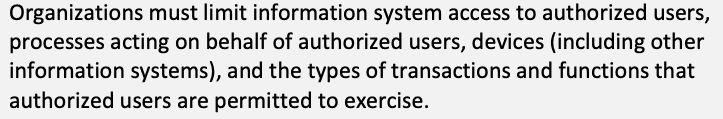
Systems and components that traverse the supply chain are subject to access by a variety of individuals and enterprises, including suppliers, developers, system integrators, external system service providers, and other ICT/OT-related service providers. Such access should be defined and managed to ensure that it does not inadvertently result in the unauthorized release, modification, or destruction of information. This access should be limited to only the necessary type, duration, and level of access for authorized enterprises (and authorized individuals and authorized assets within those enterprises) and monitored for cybersecurity supply chain impact.
サプライチェーンを通過するシステムおよびコンポーネントには、供給者、開発者、システムインテグレーター、外部システムサービスプロバイダー、およびその他のICT/OT関連サービスプロバイダーなど、さまざまな個人およびエンタープライズがアクセスする。情報の不正な開示、変更、または破壊につながることのないよう、このアクセスを定義し管理すべきである。アクセスは、認可されたエンタープライズ（および当該エンタープライズ内の認可された個人と資産）に必要なアクセスの種類、期間、およびレベルに限定し、サプライチェーンのサイバーセキュリティへの影響を監視すべきである。
未レビュー訳AC-1 POLICY AND PROCEDURES
AC-1 ポリシーおよび手順
Supplemental C-SCRM Guidance: Enterprises should specify and include in agreements (e.g., contracting language) access control policies for their suppliers, developers, system integrators, external system service providers, and other ICT/OT-related service providers that have access control policies. These should include both physical and logical access to the supply chain and the information system. Enterprises should require their prime contractors to implement this control and flow down this requirement to relevant sub-tier contractors.
補足的なC-SCRM指針：エンタープライズは、アクセス制御ポリシーを有する供給者、開発者、システムインテグレーター、外部システムサービスプロバイダー、およびその他のICT/OT関連サービスプロバイダーについて、アクセス制御ポリシーを指定し、契約文言などの合意に含めるべきである。これらのポリシーには、サプライチェーンおよび情報システムに対する物理的・論理的アクセスの双方を含めるべきである。エンタープライズは、元請業者に本管理策を実装させ、この要件を関連する下位請負業者に展開させるべきである。
Level(s): 1, 2, 3
適用レベル：1、2、3
AC-2 ACCOUNT MANAGEMENT
AC-2 アカウント管理
Supplemental C-SCRM Guidance: Use of this control helps establish traceability of actions and actors in the supply chain. This control also helps ensure access authorizations of actors in the supply chain are appropriate on a continuous basis. The enterprise may choose to define a set of roles and associate a level of authorization to ensure proper implementation. Enterprises must utilize unique accounts for contractor personnel and ensure that accounts for contractor personnel do not exceed the period of performance of the contract. Privileged accounts should only be established for appropriately vetted contractor personnel. Enterprises should also have processes in place to establish and manage temporary or emergency accounts for contractor personnel that require access to a mission-critical or mission-enabling system during a continuity or emergency event. For example, during a pandemic event, existing contractor personnel who are not able to work due to illness may need to be temporarily backfilled by new contractor staff. Enterprises should require their prime contractors to implement this control and flow down this requirement to relevant sub-tier contractors. Departments and agencies should refer to Appendix F to implement this guidance in accordance with Executive Order 14028, Improving the Nation’s Cybersecurity.
補足的なC-SCRM指針：本管理策の使用は、サプライチェーン内の行為および行為者の追跡可能性を確立するのに役立つ。また、サプライチェーン内の行為者に対するアクセス認可が継続的に適切であることの確保にも役立つ。エンタープライズは、適切な実装を確保するため、一連の役割を定義し、それぞれに認可レベルを関連付けてもよい。エンタープライズは、請負業者職員に固有のアカウントを使用し、請負業者職員のアカウントが契約の履行期間を超えないようにしなければならない。特権アカウントは、適切な審査を受けた請負業者職員に対してのみ設定すべきである。エンタープライズは、継続性確保または緊急事態の際に、ミッション上重要なシステムまたはミッションを可能にするシステムへのアクセスを必要とする請負業者職員のため、臨時または緊急アカウントを設定・管理するプロセスも整備すべきである。例えば、パンデミックの際、病気で勤務できない既存の請負業者職員を、新たな請負業者職員で一時的に補充する必要が生じる場合がある。エンタープライズは、元請業者に本管理策を実装させ、この要件を関連する下位請負業者に展開させるべきである。省庁は、大統領令14028『国家のサイバーセキュリティの改善』に従って本指針を実施するため、付録Fを参照すべきである。
未レビュー訳Level(s): 2, 3
適用レベル：2、3
AC-3 ACCESS ENFORCEMENT
AC-3 アクセスの強制
Supplemental C-SCRM Guidance: Ensure that the information systems and the supply chain have appropriate access enforcement mechanisms in place. This includes both physical and logical access enforcement mechanisms, which likely work in coordination for supply chain needs. Enterprises should ensure that a defined consequence framework is in place to address access control violations. Enterprises should require their prime contractors to implement this control and flow down this requirement to relevant sub-tier contractors. Departments and agencies should refer to Appendix F to implement this guidance in accordance with Executive Order 14028, Improving the Nation’s Cybersecurity.
補足的なC-SCRM指針：情報システムおよびサプライチェーンに適切なアクセス強制の仕組みが導入されていることを確保する。これには物理的および論理的なアクセス強制の仕組みが含まれ、サプライチェーンのニーズに応じて両者が連携して機能する可能性が高い。アクセス制御違反に対処するため、明確に定義された制裁の枠組みが整備されていることをエンタープライズは確保すべきである。エンタープライズは、元請業者に本管理策を実装させ、この要件を関連する下位請負業者に展開させるべきである。省庁は、大統領令14028『国家のサイバーセキュリティの改善』に従って本指針を実施するため、付録Fを参照すべきである。
未レビュー訳Level(s): 2, 3
適用レベル：2、3
Control Enhancement(s):
管理策の強化：
(8) ACCESS ENFORCEMENT | REVOCATION OF ACCESS AUTHORIZATIONS
(8) アクセスの強制｜アクセス認可の取消し
Supplemental C-SCRM Guidance: Prompt revocation is critical to ensure that suppliers, developers, system integrators, external system service providers, and other ICT/OT-related service providers who no longer require access or who abuse or violate their access privilege are not able to access an enterprise’s system. Enterprises should include in their agreements a requirement for contractors and sub-tier contractors to immediately return access credentials (e.g., tokens, PIV or CAC cards, etc.) to the enterprise. Enterprises must also have processes in place to promptly process the revocation of access authorizations. For example, in a “badge flipping” situation, a contract is transferred from one system integrator enterprise to another with the same personnel supporting the contract. In that situation, the enterprise should disable the existing accounts, retire the old credentials, establish new accounts, and issue completely new credentials.
補足的なC-SCRM指針：供給者、開発者、システムインテグレーター、外部システムサービスプロバイダー、およびその他のICT/OT関連サービスプロバイダーが、アクセスを必要としなくなった場合、またはアクセス権限を悪用・違反した場合に、エンタープライズのシステムへアクセスできないよう、速やかな取消しが不可欠である。エンタープライズは、請負業者および下位請負業者がアクセス資格情報（例：トークン、PIVカードまたはCACカードなど）を直ちにエンタープライズへ返却する要件を、契約に含めるべきである。アクセス認可の取消しを速やかに処理するプロセスも整備しなければならない。例えば、「バッジの切替え」の状況では、同じ職員が契約を支援したまま、契約があるシステムインテグレーター企業から別の企業へ移管される。この場合、エンタープライズは既存アカウントを無効にし、旧資格情報を廃止し、新しいアカウントを作成して、まったく新しい資格情報を発行すべきである。
Level(s): 2, 3
適用レベル：2、3
(9) ACCESS ENFORCEMENT | CONTROLLED RELEASE
(9) アクセスの強制｜制御されたリリース
Supplemental C-SCRM Guidance: Information about the supply chain should be controlled for release between the enterprise and third parties. Information may be exchanged between the enterprise and its suppliers, developers, system integrators, external system service providers, and other ICT/OT-related service providers. The controlled release of enterprise information protects against risks associated with disclosure.
補足的なC-SCRM指針：エンタープライズと第三者との間で共有するサプライチェーン情報は、リリースを制御すべきである。エンタープライズと供給者、開発者、システムインテグレーター、外部システムサービスプロバイダー、およびその他のICT/OT関連サービスプロバイダーとの間で情報を交換する場合がある。エンタープライズ情報のリリースを制御することで、情報開示に伴うリスクから保護する。
Level(s): 2, 3
適用レベル：2、3
AC-4 INFORMATION FLOW ENFORCEMENT
AC-4 情報フローの強制
Supplemental C- SCRM Guidance: Supply chain information may traverse a large supply chain to a broad set of stakeholders, including the enterprise and its various federal stakeholders, suppliers, developers, system integrators, external system service providers, and other ICT/OT-related service providers. Specifying the requirements and how information flow is enforced should ensure that only the required information is communicated to various participants in the supply chain. Enterprises should require their prime contractors to implement this control and flow down this requirement to relevant sub-tier contractors. Departments and agencies should refer to Appendix F to implement this guidance in accordance with Executive Order 14028, Improving the Nation’s Cybersecurity.
補足的なC-SCRM指針：サプライチェーン情報は、エンタープライズおよびそのさまざまな連邦政府ステークホルダー、供給者、開発者、システムインテグレーター、外部システムサービスプロバイダー、その他のICT/OT関連サービスプロバイダーを含む幅広いステークホルダーに至る、大規模なサプライチェーンを通過する場合がある。要件と情報フローの強制方法を規定することで、必要な情報のみがサプライチェーンの各参加者に伝達されるようにすべきである。エンタープライズは、元請業者に本管理策を実装させ、この要件を関連する下位請負業者に展開させるべきである。省庁は、大統領令14028『国家のサイバーセキュリティの改善』に従って本指針を実施するため、付録Fを参照すべきである。
Level(s): 2, 3
適用レベル：2、3
未レビュー訳Control Enhancement(s):
管理策の強化：
未レビュー訳(6) INFORMATION FLOW ENFORCEMENT | METADATA
(6) 情報フローの強制｜メタデータ
Supplemental C-SCRM Guidance: The metadata relevant to C-SCRM is extensive and includes activities within the SDLC. For example, information about systems and system components, acquisition details, and delivery is considered metadata and may require appropriate protections. Enterprises should identify what metadata is directly relevant to their supply chain security and ensure that information flow enforcement is implemented in order to protect applicable metadata.
補足的なC-SCRM指針：C-SCRMに関連するメタデータは広範であり、SDLC内の活動も含む。例えば、システムおよびシステムコンポーネント、取得の詳細、納入に関する情報はメタデータとみなされ、適切な保護が必要となる場合がある。エンタープライズは、サプライチェーンセキュリティに直接関係するメタデータを特定し、該当するメタデータを保護するための情報フロー強制が実装されていることを確保すべきである。
Level(s): 2, 3
適用レベル：2、3
(17) INFORMATION FLOW ENFORCEMENT | DOMAIN AUTHENTICATION
(17) 情報フローの強制｜ドメイン認証
Supplemental C-SCRM Guidance: Within the C-SCRM context, enterprises should specify various source and destination points for information about the supply chain and information that flows through the supply chain. This is so that enterprises have visibility of information flow within the supply chain.
補足的なC-SCRM指針：C-SCRMの文脈では、エンタープライズは、サプライチェーンに関する情報およびサプライチェーンを流れる情報について、さまざまな送信元と送信先を指定すべきである。これにより、エンタープライズはサプライチェーン内の情報フローを可視化できる。
Level(s): 2, 3
適用レベル：2、3
(19) INFORMATION FLOW ENFORCEMENT | VALIDATION OF METADATA
(19) 情報フローの強制｜メタデータの検証
Supplemental C-SCRM Guidance: For C-SCRM, the validation of data and the relationship to its metadata are critical. Much of the data transmitted through the supply chain is validated with the verification of the associated metadata that is bound to it. Ensure that proper filtering and inspection is put in place for validation before allowing payloads into the supply chain.
補足的なC-SCRM指針：C-SCRMでは、データの検証とそのメタデータとの関係が重要である。サプライチェーンを通じて送信されるデータの多くは、データに結び付いた関連メタデータを検証することで検証される。ペイロードをサプライチェーンに取り込む前に検証できるよう、適切なフィルタリングおよび検査を実施する。
Level(s): 2, 3
適用レベル：2、3
(21) INFORMATION FLOW ENFORCEMENT | PHYSICAL OR LOGICAL SEPARATION OF
(21) 情報フローの強制｜情報フローの物理的または論理的な分離
未レビュー訳INFORMATION FLOWS
情報フロー
未レビュー訳Supplemental C-SCRM Guidance: The enterprise should ensure the separation of the information system and supply chain information36 flow. Various mechanisms can be implemented, such as encryption methods (e.g., digital signing). Addressing information flow between the enterprise and its suppliers, developers, system integrators, external system service providers, and other ICT/OT-related service providers may be challenging, especially when leveraging public networks.
補足的なC-SCRM指針：エンタープライズは、情報システムとサプライチェーン情報36のフローを分離すべきである。暗号化方式（例：デジタル署名）など、さまざまな仕組みを実装できる。特に公衆ネットワークを利用する場合、エンタープライズと供給者、開発者、システムインテグレーター、外部システムサービスプロバイダー、およびその他のICT/OT関連サービスプロバイダーとの間の情報フローへの対処は困難な場合がある。
未レビュー訳Level(s): 3
適用レベル：3
AC-5 SEPARATION OF DUTIES
AC-5 職務の分離
Supplemental C-SCRM Guidance: The enterprise should ensure that an appropriate separation of duties is established for decisions that require the acquisition of both information system and supply chain components. The separation of duties helps to ensure that adequate protections are in place for components entering the enterprise’s supply chain, such as denying developers the privilege to promote code that they wrote from development to production environments. Enterprises should require their prime contractors to implement this control and flow down this requirement to relevant sub-tier contractors. Departments and agencies should refer to Appendix F to implement this guidance in accordance with Executive Order 14028, Improving the Nation’s Cybersecurity.
補足的なC-SCRM指針：情報システムとサプライチェーンの両方のコンポーネントの取得を伴う意思決定について、エンタープライズは適切な職務分離が確立されていることを確保すべきである。職務を分離することで、開発者が自ら作成したコードを開発環境から本番環境へ昇格させる権限を持たないようにするなど、エンタープライズのサプライチェーンに入るコンポーネントに十分な保護が適用されるようにできる。エンタープライズは、元請業者に本管理策を実装させ、この要件を関連する下位請負業者に展開させるべきである。省庁は、大統領令14028『国家のサイバーセキュリティの改善』に従って本指針を実施するため、付録Fを参照すべきである。
未レビュー訳Level(s): 2, 3
適用レベル：2、3
AC-6 LEAST PRIVILEGE
AC-6 最小権限
Supplemental C-SCRM Guidance: For C-SCRM supplemental guidance, see control enhancements. Departments and agencies should refer to Appendix F to implement this guidance in accordance with Executive Order 14028, Improving the Nation’s Cybersecurity.
補足的なC-SCRM指針：C-SCRMの補足的な指針については、管理策の強化を参照。省庁は、大統領令14028『国家のサイバーセキュリティの改善』に従って本指針を実施するため、付録Fを参照すべきである。
Control Enhancement(s):
管理策の強化：
(6) LEAST PRIVILEGE | PRIVILEGED ACCESS BY NON-ORGANIZATIONAL USERS
(6) 最小権限｜組織外利用者による特権アクセス
Supplemental C-SCRM Guidance: Enterprises should ensure that protections are in place to prevent non-enterprise users from having privileged access to enterprise supply chain and related supply chain information. When enterprise users include independent consultants, suppliers, developers, system integrators, external system service providers, and other ICT/OT-related service providers, relevant access requirements may need to use least privilege mechanisms to precisely define what information and/or components are accessible, for what duration, at what frequency, using what access methods, and by whom. Understanding what components are critical and non-critical can aid in understanding the level of detail that may need to be defined regarding least privilege access for non-enterprise users.
補足的なC-SCRM指針：エンタープライズは、エンタープライズ外の利用者がエンタープライズのサプライチェーンおよび関連するサプライチェーン情報に特権アクセスできないよう、保護策を確保すべきである。エンタープライズの利用者に独立コンサルタント、供給者、開発者、システムインテグレーター、外部システムサービスプロバイダー、およびその他のICT/OT関連サービスプロバイダーが含まれる場合、関連するアクセス要件では、どの情報および／またはコンポーネントに、どの期間、どの頻度、どのアクセス方法で、誰がアクセスできるかを正確に定義するために、最小権限の仕組みを用いることが必要になる場合がある。重要なコンポーネントと重要でないコンポーネントを把握することは、エンタープライズ外の利用者に対する最小権限アクセスについて、どの程度の詳細を定義する必要があるかを理解するのに役立つ。
Level(s): 2, 3
適用レベル：2、3
AC-17 REMOTE ACCESS
AC-17 リモートアクセス
Supplemental C-SCRM Guidance: Ever more frequently, supply chains are accessed remotely. Whether for the purpose of development, maintenance, or the operation of information systems, enterprises should implement secure remote access mechanisms and allow remote access only to vetted personnel. Remote access to an enterprise’s supply chain (including distributed software development environments) should be limited to the enterprise or contractor personnel and only if and as required to perform their tasks. Remote access requirements – such using a secure remote access solution, employing multi-factor authentication, limiting access to specified business hours, limit access to specific assets (not networks) based on role and from specified geographic locations – must be properly defined in agreements. Enterprises should require their prime contractors to implement this control and flow down this requirement to relevant sub-tier contractors. Departments and agencies should refer to Appendix F to implement this guidance in accordance with Executive Order 14028, Improving the Nation’s Cybersecurity.
補足的なC-SCRM指針：サプライチェーンへのリモートアクセスはますます頻繁になっている。情報システムの開発、保守、または運用のいずれを目的とする場合も、エンタープライズは安全なリモートアクセスの仕組みを実装し、審査済みの職員に限ってリモートアクセスを許可すべきである。エンタープライズのサプライチェーン（分散型ソフトウェア開発環境を含む）へのリモートアクセスは、エンタープライズ職員または請負業者職員に限定し、その職務の遂行に必要な場合に限り許可すべきである。安全なリモートアクセスソリューションの使用、多要素認証の採用、指定された営業時間内へのアクセス制限、役割および指定された地理的位置に基づく特定資産（ネットワークではない）へのアクセス制限などのリモートアクセス要件を、合意文書で適切に定義しなければならない。エンタープライズは、元請業者に本管理策を実装させ、この要件を関連する下位請負業者に展開させるべきである。省庁は、大統領令14028『国家のサイバーセキュリティの改善』に従って本指針を実施するため、付録Fを参照すべきである。
未レビュー訳Level(s): 2, 3
適用レベル：2、3
Control Enhancement(s):
管理策の強化：
(6) REMOTE ACCESS | PROTECTION OF MECHANISM INFORMATION
(6) リモートアクセス｜仕組みに関する情報の保護
Supplemental C-SCRM Guidance: Enterprises should ensure that detailed requirements are properly defined and that access to information regarding the information system and supply chain is protected from unauthorized use and disclosure. Since supply chain data and metadata disclosure or access can have significant implications for an enterprise’s mission processes, appropriate measures must be taken to vet both the supply chain and personnel processes to ensure that adequate protections are implemented. Ensure that remote access to such information is included in requirements.
補足的なC-SCRM指針：エンタープライズは、詳細な要件が適切に定義され、情報システムおよびサプライチェーンに関する情報へのアクセスが不正使用および開示から保護されていることを確保すべきである。サプライチェーンのデータやメタデータの開示またはアクセスはエンタープライズのミッションプロセスに重大な影響を及ぼす可能性があるため、サプライチェーンと職員の両方のプロセスを審査し、十分な保護が実装されていることを確保するための適切な措置を講じなければならない。このような情報へのリモートアクセスも要件に含める。
Level(s): 2, 3
適用レベル：2、3
AC-18 WIRELESS ACCESS
AC-18 無線アクセス
Supplemental C-SCRM Guidance: An enterprise’s supply chain may include wireless infrastructure that supports supply chain logistics (e.g., radio-frequency identification device [RFID] support, software call home features). Supply chain systems/components traverse the supply chain as they are moved from one location to another, whether within the enterprise’s own environment or during delivery from system integrators or suppliers. Ensuring that appropriate and secure access mechanisms are in place within this supply chain enables the protection of the information systems and components, as well as logistics technologies and metadata used during shipping (e.g., within tracking sensors). The enterprise should explicitly define appropriate wireless access control mechanisms for the supply chain in policy and implement appropriate mechanisms.
補足的なC-SCRM指針：エンタープライズのサプライチェーンには、サプライチェーン物流を支援する無線インフラストラクチャ（例：無線周波数識別デバイス［RFID］の支援、ソフトウェアのコールホーム機能）が含まれる場合がある。サプライチェーンのシステム／コンポーネントは、エンタープライズ自身の環境内での移動であれ、システムインテグレーターまたは供給者からの配送中であれ、ある場所から別の場所へ移動する際にサプライチェーンを通過する。サプライチェーン内に適切で安全なアクセスの仕組みを整備すれば、情報システムおよびコンポーネントに加え、配送中に使用する物流技術やメタデータ（例：追跡センサー内の情報）を保護できる。エンタープライズは、サプライチェーンに適した無線アクセス制御の仕組みをポリシーで明示的に定義し、適切な仕組みを実装すべきである。
Level(s): 1, 2, 3
適用レベル：1、2、3
AC-19 ACCESS CONTROL FOR MOBILE DEVICES
AC-19 モバイルデバイスのアクセス制御
Supplemental C-SCRM Guidance: The use of mobile devices (e.g., laptops, tablets, e-readers, smartphones, smartwatches) has become common in the supply chain. They are used in direct support of an enterprise’s operations, as well as tracking, supply chain logistics, data as information systems, and components that traverse enterprise or systems integrator supply chains. Ensure that access control mechanisms are clearly defined and implemented where relevant when managing enterprise supply chain components. An example of such an implementation includes access control mechanisms implemented for use with remote handheld units in RFID for tracking components that traverse the supply chain. Access control mechanisms should also be implemented on any associated data and metadata tied to the devices.
補足的なC-SCRM指針：モバイルデバイス（例：ノートPC、タブレット、電子書籍リーダー、スマートフォン、スマートウォッチ）の利用は、サプライチェーンで一般的になっている。これらは、エンタープライズの運用を直接支援するほか、追跡、サプライチェーン物流、情報システムとしてのデータ、およびエンタープライズまたはシステムインテグレーターのサプライチェーンを通過するコンポーネントに使用される。エンタープライズのサプライチェーン・コンポーネントを管理する際は、該当する場合にアクセス制御の仕組みを明確に定義して実装する。実装例として、サプライチェーンを通過するコンポーネントを追跡するRFIDの遠隔携帯端末にアクセス制御の仕組みを実装する方法がある。デバイスに関連付けられたデータおよびメタデータにもアクセス制御の仕組みを実装すべきである。
未レビュー訳Level(s): 2, 3
適用レベル：2、3
AC-20 USE OF EXTERNAL SYSTEMS
AC-20 外部システムの使用
Supplemental C-SCRM Guidance: Enterprises’ external information systems include those of suppliers, developers, system integrators, external system service providers, and other ICT/OT-related service providers. Unlike in an acquirer’s internal enterprise where direct and continuous monitoring is possible, in the external supplier relationship, information may be shared on an as-needed basis and should be articulated in an agreement. Access to the supply chain from such external information systems should be monitored and audited. Enterprises should require their prime contractors to implement this control and flow down this requirement to relevant sub-tier contractors.
補足的なC-SCRM指針：エンタープライズの外部情報システムには、供給者、開発者、システムインテグレーター、外部システムサービスプロバイダー、およびその他のICT/OT関連サービスプロバイダーのシステムが含まれる。直接かつ継続的な監視が可能な取得者の内部エンタープライズとは異なり、外部の供給者との関係では、情報は必要に応じて共有される場合があり、その共有について合意文書に明記すべきである。このような外部情報システムからのサプライチェーンへのアクセスを監視し、監査すべきである。エンタープライズは、元請業者に本管理策を実装させ、この要件を関連する下位請負業者に展開させるべきである。
未レビュー訳Level(s): 1, 2, 3
適用レベル：1、2、3
Control Enhancement(s):
管理策の強化：
(1) USE OF EXTERNAL SYSTEMS | LIMITS ON AUTHORIZED USE
(1) 外部システムの使用 | 許可された使用の制限
Supplemental C-SCRM Guidance: This enhancement helps limit exposure of the supply chain to the systems of suppliers, developers, system integrators, external system service providers, and other ICT/OT-related service providers.
補足的なC-SCRM指針：この強化策は、供給者、開発者、システムインテグレーター、外部システムサービスプロバイダー、およびその他のICT/OT関連サービスプロバイダーのシステムに、サプライチェーンがさらされる範囲を制限するのに役立つ。
Level(s): 2, 3
レベル：2、3
(3) USE OF EXTERNAL SYSTEMS | NON-ORGANIZATIONALLY OWNED SYSTEMS —
(3) 外部システムの使用 | 組織が所有しないシステム —
未レビュー訳RESTRICTED USE
使用制限
未レビュー訳Supplemental C-SCRM Guidance: Devices that do not belong to the enterprise (e.g., bring your own device [BYOD] policies) increase the enterprise’s exposure to cybersecurity risks throughout the supply chain. This includes devices used by suppliers, developers, system integrators, external system service providers, and other ICT/OT-related service providers. Enterprises should review the use of non-enterprise devices by non-enterprise personnel and make a risk-based decision as to whether it will allow the use of such devices or furnish devices. Enterprises should furnish devices to those non-enterprise personnel who present unacceptable levels of risk.
補足的なC-SCRM指針：エンタープライズに属さないデバイス（例：個人所有デバイスの持ち込み［BYOD］方針）は、サプライチェーン全体にわたるサイバーセキュリティリスクに対するエンタープライズのエクスポージャーを高める。これには、供給者、開発者、システムインテグレーター、外部システムサービスプロバイダー、およびその他のICT/OT関連サービスプロバイダーが使用するデバイスも含まれる。エンタープライズは、エンタープライズ外の職員によるエンタープライズ外のデバイスの使用を見直し、そのようなデバイスの使用を許可するか、デバイスを支給するかをリスクに基づいて判断すべきである。エンタープライズは、許容できないレベルのリスクをもたらすエンタープライズ外の職員に対しては、デバイスを支給すべきである。
未レビュー訳Level(s): 2, 3
レベル：2、3
AC-21 INFORMATION SHARING
AC-21 情報共有
Supplemental C-SCRM Guidance: Sharing information within the supply chain can help manage cybersecurity risks throughout the supply chain. This information may include vulnerabilities, threats, the criticality of systems and components, or delivery information. This information sharing should be carefully managed to ensure that the information is only accessible to authorized individuals within the enterprise’s supply chain. Enterprises should clearly define boundaries for information sharing with respect to temporal, informational, contractual, security, access, system, and other requirements. Enterprises should monitor and review for unintentional or intentional information sharing within its supply chain activities, including information sharing with suppliers, developers, system integrators, external system service providers, and other ICT/OT-related service providers.
C-SCRM補足指針：サプライチェーン内で情報を共有すると、サプライチェーン全体のサイバーセキュリティリスク管理に役立つ。情報には脆弱性、脅威、システムやコンポーネントの重要度、配送情報などが含まれる場合がある。共有情報にサプライチェーン内の許可された者だけがアクセスできるよう、情報共有を慎重に管理すべきである。企業は、時間、情報、契約、セキュリティ、アクセス、システムその他の要件に関する情報共有の境界を明確に定義すべきである。企業は、供給者、開発者、システムインテグレーター、外部システムサービスプロバイダー、その他のICT/OT関連サービスプロバイダーとの共有を含む、サプライチェーン活動における意図的・非意図的な情報共有を監視し、確認すべきである。
未レビュー訳Level(s): 1, 2
レベル：1、2
AC-22 PUBLICLY ACCESSIBLE CONTENT
AC-22 公開アクセス可能なコンテンツ
Supplemental C-SCRM Guidance: Within the C-SCRM context, publicly accessible content may include Requests for Information, Requests for Proposal, or information about delivery of systems and components. This information should be reviewed to ensure that only appropriate content is released for public consumption, whether alone or with other information.
C-SCRM補足指針：C-SCRMの文脈では、公開アクセス可能なコンテンツに情報提供依頼、提案依頼、システムやコンポーネントの納入に関する情報が含まれる場合がある。単独の場合も他の情報と組み合わされる場合も、一般に公開するのが適切なコンテンツだけが公開されるよう、この情報を確認すべきである。
Level(s): 2, 3
レベル：2、3
AC-23 DATA MINING PROTECTION
AC-23 データマイニングからの保護
Supplemental C-SCRM Guidance: Enterprises should require their prime contractors to implement this control as part of their insider threat activities and flow down this requirement to relevant sub-tier contractors.
補足的なC-SCRM指針：エンタープライズは、元請業者に、内部脅威対策活動の一環として本管理策を実装させ、この要件を関連する下位請負業者に展開させるべきである。
Level(s): 2, 3
レベル：2、3
AC-24 ACCESS CONTROL DECISIONS
AC-24 アクセス制御の決定
Supplemental C-SCRM Guidance: Enterprises should assign access control decisions to support authorized access to the supply chain. Ensure that if a system integrator or external service provider is used, there is consistency in access control decision requirements and how the requirements are implemented. This may require defining such requirements in service-level agreements, in many cases as part of the upfront relationship established between the enterprise and system integrator or the enterprise and external service provider. Enterprises should require their prime contractors to implement this control and flow down this requirement to relevant sub-tier contractors.
補足的なC-SCRM指針：企業は、サプライチェーンへの許可されたアクセスを支援するアクセス制御判断を割り当てるべきである。システムインテグレーターまたは外部サービスプロバイダーを利用する場合、アクセス制御判断の要件とその実装方法に一貫性があることを確保すること。そのため、多くの場合、企業とシステムインテグレーターまたは企業と外部サービスプロバイダーとの間で最初に確立する関係の一部として、サービスレベル合意書でそのような要件を定義する必要がある場合がある。企業は元請業者に本管理策を実施させ、この要件を関連する下位階層の請負業者に展開すべきである。
Level(s): 1, 2, 3
レベル：1、2、3
A.2.4. FAMILY: AWARENESS AND TRAINING
A.2.4. ファミリー：啓発および訓練
[FIPS200] specifies the Awareness and Training minimum security requirement as follows:
[FIPS200]は、啓発および訓練の最低限のセキュリティ要件を次のように規定している。
原本PDFの抜粋画像
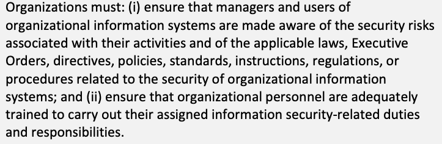
This document expands the Awareness and Training control of [FIPS200] to include C-SCRM. Making the workforce aware of C-SCRM concerns is key to a successful C-SCRM strategy. C-SCRM awareness and training provides understanding of the problem space and the appropriate processes and controls that can help mitigate cybersecurity risks throughout the supply chain. Enterprises should provide C-SCRM awareness and training to individuals at all levels within the enterprise, including information security, procurement, enterprise risk management, engineering, software development, IT, legal, HR, and others. Enterprises should also work with suppliers, developers, system integrators, external system service providers, and other ICT/OT-related service providers to ensure that the personnel who interact with an enterprise’s supply chains receive C-SCRM awareness and training, as appropriate.
本書は[FIPS200]の啓発・訓練管理策を拡張し、C-SCRMを含めている。C-SCRM上の懸念を職員に認識させることは、C-SCRM戦略の成功に不可欠である。C-SCRMの啓発・訓練により、問題の範囲と、サプライチェーン全体のサイバーセキュリティリスクを低減する適切なプロセス・管理策への理解が得られる。企業は、情報セキュリティ、調達、全社的リスク管理、エンジニアリング、ソフトウェア開発、IT、法務、人事など、企業内のすべてのレベルの人員にC-SCRMの啓発・訓練を提供すべきである。また、供給者、開発者、システムインテグレーター、外部システムサービスプロバイダー、その他のICT/OT関連サービスプロバイダーと協力し、企業のサプライチェーンに関わる職員が適切なC-SCRMの啓発・訓練を受けるようにすべきである。
未レビュー訳AT-1 POLICY AND PROCEDURES
AT-1 方針および手順
Supplemental C-SCRM Guidance: Enterprises should designate a specific official to manage the development, documentation, and dissemination of the training policy and procedures, including C-SCRM and role-based specific training for those with supply chain responsibilities. Enterprises should integrate cybersecurity supply chain risk management training and awareness into the security training and awareness policy. C-SCRM training should target both the enterprise and its contractors. The policy should ensure that supply chain cybersecurity role-based training is required for those individuals or functions that touch or impact the supply chain, such as the information system owner, acquisition, supply chain logistics, system engineering, program management, IT, quality, and incident response.
補足的なC-SCRM指針：エンタープライズは、サプライチェーンに関する責任を担う者に対するC-SCRMおよび役割別の訓練を含め、訓練方針および手順の策定、文書化、周知を管理する特定の担当者を指定すべきである。エンタープライズは、サイバーセキュリティ・サプライチェーンリスク管理の訓練および啓発を、セキュリティ訓練・啓発方針に統合すべきである。C-SCRM訓練は、エンタープライズとその請負業者の双方を対象とすべきである。方針では、情報システム所有者、取得、サプライチェーン物流、システムエンジニアリング、プログラム管理、IT、品質、インシデント対応など、サプライチェーンに関与する、またはサプライチェーンに影響を与える個人または機能に対して、サプライチェーンのサイバーセキュリティに関する役割別訓練を必須とすることを確保すべきである。
未レビュー訳C-SCRM training procedures should address:
C-SCRM訓練手順では、次の事項を扱うべきである。
未レビュー訳a. Roles throughout the supply chain and system/element life cycle to limit the opportunities and means available to individuals performing these roles that could result in adverse consequences,
a. サプライチェーンおよびシステム／要素のライフサイクル全体にわたる役割と、これらの役割を担う者が不利益な結果につながる行為を行う機会や手段を制限すること
未レビュー訳b. Requirements for interaction between an enterprise’s personnel and individuals not employed by the enterprise who participate in the supply chain throughout the SDLC, and
b. SDLC全体を通じてサプライチェーンに参加する、企業職員と企業に雇用されていない者との間のやり取りに関する要件
未レビュー訳c. Incorporating feedback and lessons learned from C-SCRM activities into the C-SCRM training.
c. C-SCRM活動から得たフィードバックや教訓をC-SCRM訓練に取り入れること
未レビュー訳Level(s): 1, 2
レベル：1、2
AT-2 LITERACY TRAINING AND AWARENESS
AT-2 リテラシー訓練および啓発
Supplemental C-SCRM Guidance: C-SCRM-specific supplemental guidance is provided in the control enhancements. Departments and agencies should refer to Appendix F to implement this guidance in accordance with Executive Order 14028, Improving the Nation’s Cybersecurity.
C-SCRM固有の補足指針は、管理策の強化策に記載されている。各省庁・機関は、大統領令14028『国のサイバーセキュリティの改善』に従って本指針を実施するため、付録Fを参照すること。
Control Enhancements:
管理策の強化：
(1) LITERACY TRAINING AND AWARENESS | PRACTICAL EXERCISES
(1) リテラシー訓練および啓発 | 実践演習
Supplemental C-SCRM Guidance: Enterprises should provide practical exercises in literacy training that simulate supply chain cybersecurity events and incidents.
補足的なC-SCRM指針：エンタープライズは、サプライチェーンのサイバーセキュリティ事象およびインシデントを模擬する実践演習を、リテラシー訓練に含めるべきである。
Enterprises should require their prime contractors to implement this control and flow down this requirement to relevant sub-level contractors.
エンタープライズは、元請業者に本管理策を実装させ、この要件を関連する下位請負業者に展開させるべきである。
(2) LITERACY TRAINING AND AWARENESS | INSIDER THREAT
(2) リテラシー訓練および啓発 | 内部脅威
Supplemental C-SCRM Guidance: Enterprises should provide literacy training on recognizing and reporting potential indicators of insider threat within the supply chain. Enterprises should require their prime contractors to implement this control and flow down this requirement to relevant sub-tier contractors.
C-SCRM補足指針：企業は、サプライチェーン内の内部脅威の潜在的な兆候を認識し、報告するためのリテラシー訓練を提供すべきである。企業は、元請業者に本管理策を実施させ、この要件を関連する下位階層の請負業者に展開すべきである。
(3) LITERACY TRAINING AND AWARENESS | SOCIAL ENGINEERING AND MINING
(3) リテラシー訓練および啓発 | ソーシャルエンジニアリングとソーシャルマイニング
Supplemental C-SCRM Guidance: Enterprises should provide literacy training on recognizing and reporting potential and actual instances of supply chain-related social engineering and social mining. Enterprises should require their prime contractors to implement this control and flow down this requirement to relevant sub-level contractors.
C-SCRM補足指針：企業は、サプライチェーン関連のソーシャルエンジニアリングおよびソーシャルマイニングの潜在的・実際の事例を認識し、報告するためのリテラシー訓練を提供すべきである。企業は、元請業者に本管理策を実施させ、この要件を関連する下位階層の請負業者に展開すべきである。
(4) LITERACY TRAINING AND AWARENESS | SUSPICIOUS COMMUNICATIONS AND
(4) リテラシー訓練および啓発｜不審な通信および異常なシステム動作
未レビュー訳ANOMALOUS SYSTEM BEHAVIOR
原文のみ
Supplemental C-SCRM Guidance: Provide literacy training on recognizing suspicious communications or anomalous behavior in enterprise supply chain systems. Enterprises should require their prime contractors to implement this control and flow down this requirement to relevant sub-level contractors.
C-SCRM補足指針：企業のサプライチェーン・システムにおける不審な通信や異常な動作を認識するためのリテラシー訓練を実施すること。企業は、元請業者に本管理策を実施させ、この要件を関連する下位階層の請負業者に展開すべきである。
(5) LITERACY TRAINING AND AWARENESS | ADVANCED PERSISTENT THREAT
(5) リテラシー訓練および啓発 | 高度持続的脅威
Supplemental C-SCRM Guidance: Provide literacy training on recognizing suspicious communications on an advanced persistent threat (APT) in the enterprise’s supply chain. Enterprises should require their prime contractors to implement this control and flow down this requirement to relevant sub-level contractors.
C-SCRM補足指針：企業のサプライチェーンにおける高度持続的脅威（APT）に関する不審な通信を認識するためのリテラシー訓練を実施すること。企業は、元請業者に本管理策を実施させ、この要件を関連する下位階層の請負業者に展開すべきである。
(6) LITERACY TRAINING AND AWARENESS | CYBER THREAT ENVIRONMENT
(6) リテラシー訓練および啓発 | サイバー脅威環境
Supplemental C-SCRM Guidance: Provide literacy training on cyber threats specific to the enterprise’s supply chain environment. Enterprises should require their prime contractors to implement this control and flow down this requirement to relevant sub-level contractors.
C-SCRM補足指針：企業のサプライチェーン環境に固有のサイバー脅威に関するリテラシー訓練を提供すること。企業は、元請業者に本管理策を実施させ、この要件を関連する下位階層の請負業者に展開すべきである。
Level(s): 2
レベル：2
AT-3 ROLE-BASED TRAINING
AT-3 役割別訓練
Supplemental C-SCRM Guidance: Addressing cyber supply chain risks throughout the acquisition process is essential to performing C-SCRM effectively. Personnel who are part of the acquisition workforce require training on what C-SCRM requirements, clauses, and evaluation factors are necessary to include when conducting procurement and how to incorporate C-SCRM into each acquisition phase. Similar enhanced training requirements should be tailored for personnel responsible for conducting threat assessments. Responding to threats and identified risks requires training in counterintelligence awareness and reporting. Enterprises should ensure that developers receive training on secure development practices as well as the use of vulnerability scanning tools. Enterprises should require their prime contractors to implement this control and flow down this requirement to relevant sub-tier contractors. Departments and agencies should refer to Appendix F to implement this guidance in accordance with Executive Order 14028, Improving the Nation’s Cybersecurity.
C-SCRM補足指針：取得プロセス全体を通じてサプライチェーンのサイバーリスクに対処することは、効果的なC-SCRMの実施に不可欠である。取得担当職員は、調達時に必要なC-SCRM要件、条項、評価要因、および取得の各段階にC-SCRMを組み込む方法について訓練を受ける必要がある。脅威評価を行う職員にも、同様に強化した訓練要件を調整して適用すべきである。脅威と特定済みリスクへの対応には、防諜に関する啓発および報告訓練が必要である。企業は、開発者がセキュアな開発慣行と脆弱性スキャンツールの使用に関する訓練を受けるようにすべきである。企業は、元請業者に本管理策を実施させ、この要件を関連する下位階層の請負業者に展開すべきである。各省庁・機関は、大統領令14028『国のサイバーセキュリティの改善』に従って本指針を実施するため、付録Fを参照すること。
未レビュー訳Control Enhancement(s):
管理策の強化：
(2) SECURITY TRAINING | PHYSICAL SECURITY CONTROLS
(2) セキュリティ訓練 | 物理的セキュリティ管理策
Supplemental C-SCRM Guidance: C-SCRM is impacted by a number of physical security mechanisms and procedures within the supply chain, such as manufacturing, shipping, receiving, physical access to facilities, inventory management, and warehousing. Enterprise and system integrator personnel who provide development and operational support to the enterprise should receive training on how to handle these physical security mechanisms and on the associated cybersecurity risks throughout the supply chain.
C-SCRM補足指針：製造、出荷、受領、施設への物理的アクセス、在庫管理、倉庫保管など、サプライチェーン内の多くの物理的セキュリティ機構・手順がC-SCRMに影響する。企業に開発・運用支援を提供する企業職員およびシステムインテグレーター職員は、これらの物理的セキュリティ機構の取り扱い方法と、関連するサプライチェーン全体のサイバーセキュリティリスクについて訓練を受けるべきである。
Level(s): 2
レベル：2
(6) ROLE-BASED TRAINING | COUNTERINTELLIGENCE TRAINING
(6) 役割別訓練 | 防諜訓練
Supplemental C-SCRM Guidance: Public sector enterprises should provide specialized counterintelligence awareness training that enables its resources to collect, interpret, and act upon a range of data sources that may signal a foreign adversary’s presence in the supply chain. At a minimum, counterintelligence training should cover known red flags, key information sharing concepts, and reporting requirements.
C-SCRM補足指針：公的部門の企業は、サプライチェーンにおける外国の敵対者の存在を示す可能性のある各種データソースを収集、解釈し、それに基づいて行動できるよう、専門的な防諜意識訓練を職員に提供すべきである。最低限、防諜訓練では既知の危険信号、重要な情報共有の概念、報告要件を扱うべきである。
Level(s): 2
レベル：2
AT-4 TRAINING RECORDS
AT-4 訓練記録
Supplemental C-SCRM Guidance: Enterprises should maintain documentation for C-SCRM-specific training, especially with regard to key personnel in acquisitions and counterintelligence.
C-SCRM補足指針：企業は、特に取得および防諜分野の重要職員に関し、C-SCRM固有の訓練記録を維持すべきである。
未レビュー訳Level(s): 2
レベル：2
A.2.5. FAMILY: AUDIT AND ACCOUNTABILITY
A.2.5. ファミリー：監査および説明責任
[FIPS200] specifies the Audit and Accountability minimum security requirement as follows:
[FIPS200]は、監査および説明責任の最低限のセキュリティ要件を次のように定めている。
原本PDFの抜粋画像
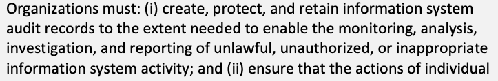
原本PDFの抜粋画像
Audit and accountability controls for C-SCRM provide information that is useful in the event of a supply chain cybersecurity incident or compromise. Enterprises should ensure that they designate and audit cybersecurity supply chain-relevant events within their information system boundaries using appropriate audit mechanisms (e.g., system logs, Intrusion Detection System [IDS] logs, firewall logs, paper reports, forms, clipboard checklists, digital records). These audit mechanisms should also be configured to work within a reasonable time frame, as defined by enterprise policy. Enterprises may encourage their system suppliers, developers, system integrators, external system service providers, and other ICT/OT-related service providers to do the same and may include requirements for such monitoring in agreements. However, enterprises should not deploy audit mechanisms on systems outside of their enterprise boundary, including those of suppliers, developers, system integrators, external system service providers, and other ICT/OT-related service providers.
C-SCRMの監査・説明責任管理策は、サプライチェーンのサイバーセキュリティ・インシデントや侵害の際に有用な情報を提供する。企業は、適切な監査機構（例：システムログ、侵入検知システム［IDS］ログ、ファイアウォールログ、紙の報告書、帳票、クリップボード式チェックリスト、電子記録）を用い、情報システム境界内のサイバーセキュリティ上のサプライチェーン関連イベントを指定して監査すべきである。また、企業方針で定める合理的な時間内に機能するよう監査機構を構成すべきである。企業は、システム供給者、開発者、システムインテグレーター、外部システムサービスプロバイダー、その他のICT/OT関連サービスプロバイダーにも同様の措置を促し、合意書に監視要件を含めることができる。ただし、企業は、これらの事業者のシステムを含め、企業境界外のシステムに監査機構を展開すべきではない。
AU-1 POLICY AND PROCEDURES
AU-1 方針および手順
Supplemental C-SCRM Guidance: Enterprises must designate a specific official to manage the development, documentation, and dissemination of the audit and accountability policy and procedures to include auditing of the supply chain information systems and network. The audit and accountability policy and procedures should appropriately address tracking activities and their availability for other various supply chain activities, such as configuration management. Suppliers, developers, system integrators, external system service providers, and other ICT/OT-related service providers activities should not be included in such a policy unless those functions are performed within the acquirer’s supply chain information systems and network. Audit and accountability policy procedures should appropriately address supplier audits as a way to examine the quality of a particular supplier and the risk they present to the enterprise and the enterprise’s supply chain.
C-SCRM補足指針：企業は、サプライチェーン情報システムおよびネットワークの監査を含む監査・説明責任方針と手順の策定、文書化、周知を管理する担当者を指定しなければならない。監査・説明責任の方針・手順では、追跡活動と、構成管理など他のさまざまなサプライチェーン活動に対するその利用可能性を適切に扱うべきである。供給者、開発者、システムインテグレーター、外部システムサービスプロバイダー、その他のICT/OT関連サービスプロバイダーの活動は、調達側のサプライチェーン情報システムおよびネットワーク内で実施される場合を除き、この方針に含めるべきではない。監査・説明責任の方針・手順では、特定の供給者の品質と、その供給者が企業および企業のサプライチェーンにもたらすリスクを調べる手段としての供給者監査を適切に扱うべきである。
Level(s): 1, 2, 3
レベル：1、2、3
AU-2 EVENT LOGGING
AU-2 イベントの記録
Supplemental C-SCRM Guidance: An observable occurrence within the information system or supply chain network should be identified as a supply chain auditable event based on the enterprise’s SDLC context and requirements. Auditable events may include software/hardware changes, failed attempts to access supply chain information systems, or the movement of source code. Information on such events should be captured by appropriate audit mechanisms and be traceable and verifiable. Information captured may include the type of event, date/time, length, and the frequency of occurrence. Among other things, auditing may help detect misuse of the supply chain information systems or network caused by insider threats. Logs are a key resource when identifying operational trends and long-term problems. As such, enterprises should incorporate reviewing logs at the contract renewal point for vendors to determine whether there is a systemic problem. Enterprises should require their prime contractors to implement this control and flow down this requirement to relevant sub-tier contractors. Departments and agencies should refer to Appendix F to implement this guidance in accordance with Executive Order 14028, Improving the Nation’s Cybersecurity.
C-SCRM補足指針：情報システムまたはサプライチェーン・ネットワーク内で観測可能な事象は、企業のSDLCの状況と要件に基づいて、サプライチェーンの監査対象イベントとして特定すべきである。監査対象イベントには、ソフトウェア／ハードウェアの変更、サプライチェーン情報システムへのアクセス失敗、ソースコードの移動などが含まれる場合がある。こうした事象の情報は、適切な監査機構で取得し、追跡可能かつ検証可能にすべきである。取得する情報には、事象の種類、日時、継続時間、発生頻度が含まれる場合がある。監査は、内部脅威によるサプライチェーン情報システムまたはネットワークの悪用検知にも役立つ。ログは運用上の傾向や長期的問題を特定する重要な資源である。そのため企業は、ベンダーとの契約更新時にログを確認し、体系的な問題がないか判断すべきである。企業は、元請業者に本管理策を実施させ、この要件を関連する下位階層の請負業者に展開すべきである。各省庁・機関は、大統領令14028『国のサイバーセキュリティの改善』に従って本指針を実施するため、付録Fを参照すること。
未レビュー訳Level(s): 1, 2, 3
レベル：1、2、3
AU-3 CONTENT OF AUDIT RECORDS
AU-3 監査記録の内容
Supplemental C-SCRM Guidance: The audit records of a supply chain event should be securely handled and maintained in a manner that conforms to record retention requirements and preserves the integrity of the findings and the confidentiality of the record information and its sources as appropriate. In certain instances, such records may be used in administrative or legal proceedings. Enterprises should require their prime contractors to implement this control and flow down this requirement to relevant sub-tier contractors. Departments and agencies should refer to Appendix F to implement this guidance in accordance with Executive Order 14028, Improving the Nation’s Cybersecurity.
C-SCRM補足指針：サプライチェーン事象の監査記録は、記録保存要件に準拠し、必要に応じて調査結果の完全性ならびに記録情報とその情報源の機密性を保つ方法で、安全に取り扱い、維持すべきである。場合によっては、こうした記録を行政手続または法的手続で使用することがある。企業は、元請業者に本管理策を実施させ、この要件を関連する下位階層の請負業者に展開すべきである。各省庁・機関は、大統領令14028『国のサイバーセキュリティの改善』に従って本指針を実施するため、付録Fを参照すること。
Level(s): 1, 2, 3
レベル：1、2、3
AU-6 AUDIT REVIEW, ANALYSIS, AND REPORTING
AU-6 監査のレビュー、分析および報告
Supplemental C-SCRM Guidance: The enterprise should ensure that both supply chain and information security auditable events are appropriately filtered and correlated for analysis and reporting. For example, if new maintenance or a patch upgrade is recognized to have an invalid digital signature, the identification of the patch arrival qualifies as a supply chain auditable event, while an invalid signature is an information security auditable event. The combination of these two events may provide information valuable to C-SCRM. The enterprise should adjust the level of audit record review based on the risk changes (e.g., active threat intel, risk profile) on a specific vendor. Contracts should explicitly address how audit findings will be reported and adjudicated.
C-SCRM補足指針：企業は、サプライチェーンおよび情報セキュリティの監査対象イベントが、分析・報告のために適切にフィルター処理され、相関付けられるようにすべきである。例えば、新しい保守作業やパッチ更新に無効なデジタル署名があると判明した場合、パッチの到着確認はサプライチェーンの監査対象イベントであり、署名の無効性は情報セキュリティの監査対象イベントである。この2つの事象を組み合わせると、C-SCRMに有用な情報が得られる場合がある。企業は、特定ベンダーのリスク変化（例：進行中の脅威情報、リスクプロファイル）に応じて監査記録のレビュー水準を調整すべきである。契約には、監査結果の報告方法と判定方法を明記すべきである。
Level(s): 2, 3
レベル：2、3
Control Enhancement(s):
管理策の強化：
(9) AUDIT REVIEW, ANALYSIS, AND REPORTING | CORRELATION WITH
(9) 監査のレビュー、分析および報告 |
未レビュー訳INFORMATION FROM NONTECHNICAL SOURCES
非技術的情報源からの情報との相関
未レビュー訳Supplemental C-SCRM Guidance: In a C-SCRM context, non-technical sources include changes to the enterprise’s security or operational policy, changes to the procurement or contracting processes, and notifications from suppliers, developers, system integrators, external system service providers, and other ICT/OT-related service providers regarding plans to update, enhance, patch, or retire/dispose of a system/component.
C-SCRM補足指針：C-SCRMの文脈における非技術的情報源には、企業のセキュリティ方針または運用方針の変更、調達・契約プロセスの変更、ならびにシステム／コンポーネントの更新、機能強化、パッチ適用、廃止・処分の計画に関する供給者、開発者、システムインテグレーター、外部システムサービスプロバイダー、その他のICT/OT関連サービスプロバイダーからの通知が含まれる。
Level(s): 3
レベル：3
AU-10 NON-REPUDIATION
AU-10 否認防止
Supplemental C-SCRM Guidance: Enterprises should implement non-repudiation techniques to protect the originality and integrity of both information systems and the supply chain network. Examples of what may require non-repudiation include supply chain metadata that describes the components, supply chain communication, and delivery acceptance information. For information systems, examples may include patch or maintenance upgrades for software as well as component replacements in a large hardware system. Verifying that such components originate from the OEM is part of non-repudiation.
C-SCRM補足指針：企業は、情報システムとサプライチェーン・ネットワーク双方の真正性と完全性を保護するため、否認防止技術を実装すべきである。否認防止が必要となり得る例には、コンポーネントを記述するサプライチェーン・メタデータ、サプライチェーン通信、納入受領情報が含まれる。情報システムでは、ソフトウェアのパッチ・保守更新や、大規模なハードウェアシステムのコンポーネント交換などが例である。こうしたコンポーネントがOEMに由来することの検証は、否認防止の一部である。
Level(s): 3
レベル：3
Control Enhancement(s):
管理策の強化：
(1) NON-REPUDIATION | ASSOCIATION OF IDENTITIES
(1) 否認防止 | IDの関連付け
Supplemental C-SCRM Guidance: This enhancement helps traceability in the supply chain and facilitates the accuracy of provenance.
C-SCRM補足指針：この強化策は、サプライチェーンの追跡可能性を高め、来歴の正確性を支援する。
Level(s): 2
レベル：2
(2) NON-REPUDIATION | VALIDATE BINDING OF INFORMATION PRODUCER IDENTITY
(2) 否認防止 | 情報作成者のIDとの結び付きを検証
Supplemental C-SCRM Guidance: This enhancement validates the relationship of provenance and a component within the supply chain. Therefore, it ensures integrity of provenance.
C-SCRM補足指針：この強化策は、来歴とサプライチェーン内のコンポーネントとの関係を検証し、来歴の完全性を確保する。
Level(s): 2, 3
レベル：2、3
(3) NON-REPUDIATION | CHAIN OF CUSTODY
(3) 否認防止 | 管理の連鎖
Supplemental C-SCRM Guidance: Chain of custody is fundamental to provenance and traceability in the supply chain. It also helps the verification of system and component integrity.
C-SCRM補足指針：管理の連鎖は、サプライチェーンにおける来歴と追跡可能性の基礎である。また、システムとコンポーネントの完全性の検証にも役立つ。
Level(s): 2, 3
レベル：2、3
AU-12 AUDIT RECORD GENERATION
AU-12 監査記録の生成
Supplemental C-SCRM Guidance: Enterprises should ensure that audit record generation mechanisms are in place to capture all relevant supply chain auditable events. Examples of such events include component version updates, component approvals from acceptance testing results, logistics data-capturing inventory, or transportation information. Enterprises should require their prime contractors to implement this control and flow down this requirement to relevant sub-tier contractors. Departments and agencies should refer to Appendix F to implement this guidance in accordance with Executive Order 14028, Improving the Nation’s Cybersecurity.
C-SCRM補足指針：企業は、関連するサプライチェーン監査対象イベントをすべて取得する監査記録生成機構を整備すべきである。このようなイベントの例には、コンポーネントのバージョン更新、受入試験結果に基づくコンポーネント承認、在庫を取得する物流データ、輸送情報などがある。企業は、元請業者に本管理策を実施させ、この要件を関連する下位階層の請負業者に展開すべきである。各省庁・機関は、大統領令14028『国のサイバーセキュリティの改善』に従って本指針を実施するため、付録Fを参照すべきである。
Level(s): 2, 3
レベル：2、3
AU-13 MONITORING FOR INFORMATION DISCLOSURE
AU-13 情報開示の監視
Supplemental C-SCRM Guidance: Within the C-SCRM context, information disclosure may occur via multiple avenues, including open source information. For example, supplier-provided errata may reveal information about an enterprise’s system that increases the risk to that system. Enterprises should ensure that monitoring is in place for contractor systems to detect the unauthorized disclosure of any data and that contract language includes a requirement that the vendor will notify the enterprise, in accordance with enterprise-defined time frames and as soon as possible in the event of any potential or actual unauthorized disclosure. Enterprises should require their prime contractors to implement this control and flow down this requirement to relevant sub-tier contractors. Departments and agencies should refer to Appendix F to implement this guidance in accordance with Executive Order 14028, Improving the Nation’s Cybersecurity.
C-SCRM補足指針：C-SCRMの文脈では、オープンソース情報を含む複数の経路を通じて情報が開示されることがある。たとえば、供給者が提供する正誤表によって、企業のシステムに関する情報が明らかになり、そのシステムへのリスクが高まる場合がある。企業は、請負業者のシステムについて、あらゆるデータの不正開示を検知する監視体制を確保し、潜在的または実際の不正開示があった場合に、企業が定めた期限に従い、可能な限り速やかにベンダーが企業へ通知する要件を契約条項に含めるべきである。企業は、元請業者に本管理策を実施させ、この要件を関連する下位階層の請負業者に展開すべきである。各省庁・機関は、大統領令14028『国のサイバーセキュリティの改善』に従って本指針を実施するため、付録Fを参照すべきである。
未レビュー訳Level(s): 2, 3
適用レベル：2、3
AU-14 SESSION AUDIT
AU-14 セッション監査
Supplemental C-SCRM Guidance: Enterprises should include non-federal contract employees in session audits to identify security risks in the supply chain. Enterprises should require their prime contractors to implement this control and flow down this requirement to relevant sub-tier contractors. Departments and agencies should refer to Appendix F to implement this guidance in accordance with Executive Order 14028, Improving the Nation’s Cybersecurity.
C-SCRM補足指針：サプライチェーンのセキュリティリスクを特定するため、企業はセッション監査の対象に連邦政府以外の契約職員を含めるべきである。企業は、元請業者に本管理策を実施させ、この要件を関連する下位階層の請負業者に展開すべきである。各省庁・機関は、大統領令14028『国のサイバーセキュリティの改善』に従って本指針を実施するため、付録Fを参照すべきである。
Level(s): 2, 3
適用レベル：2、3
AU-16 CROSS-ORGANIZATIONAL AUDIT LOGGING
AU-16 組織間監査ログ記録
Supplemental C-SCRM Guidance: In a C-SCRM context, this control includes the enterprise’s use of system integrator or external service provider infrastructure. Enterprises should add language to contracts on coordinating audit information requirements and information exchange agreements with vendors.
補足的なC-SCRM指針：C-SCRMの文脈では、この管理策は、エンタープライズがシステムインテグレーターまたは外部サービスプロバイダーの基盤を利用することを含む。エンタープライズは、監査情報要件および情報交換協定をベンダーと調整することについて、契約に文言を追加するべきである。
Level(s): 2, 3
適用レベル：2、3
Control Enhancement(s):
管理策の強化：
(2) CROSS-ORGANIZATIONAL AUDIT LOGGING | SHARING OF AUDIT INFORMATION
（2）組織間監査ログ記録 | 監査情報の共有
Supplemental C-SCRM Guidance: Whether managing a distributed audit environment or an audit data-sharing environment between enterprises and its system integrators or external services providers, enterprises should establish a set of requirements for the process of sharing audit information. In the case of the system integrator and external service provider and the enterprise, a service-level agreement of the type of audit data required versus what can be provided must be agreed to in advance to ensure that the enterprise obtains the relevant audit information needed to ensure that appropriate protections are in place to meet its mission operation protection needs. Ensure that coverage of both the information systems and supply chain network are addressed for the collection and sharing of audit information. Enterprises should require their prime contractors to implement this control and flow down this requirement to relevant sub-level contractors.
補足C-SCRM指針：分散監査環境を管理する場合も、エンタープライズとシステムインテグレーターまたは外部サービスプロバイダー間の監査データ共有環境を管理する場合も、エンタープライズは監査情報共有プロセスの要件一式を定めるべきである。システムインテグレーターまたは外部サービスプロバイダーとエンタープライズの間では、エンタープライズがミッション運用の保護ニーズを満たす適切な保護措置の実施に必要な監査情報を得られるよう、必要な監査データと提供可能な監査データの種類に関するサービスレベル合意を事前に取り決めなければならない。監査情報の収集・共有について、情報システムとサプライチェーンネットワークの両方を対象に含めること。エンタープライズは、元請業者にこの管理策を実装させ、関連する下位階層の請負業者にもこの要件を展開させるべきである。
未レビュー訳Level(s): 2, 3
適用レベル：2、3
A.2.6. FAMILY: ASSESSMENT, AUTHORIZATION, AND MONITORING
A.2.6. ファミリー：評価、認可および監視
[FIPS200] specifies the Certification, Accreditation, and Security Assessments minimum security requirement as follows:
[FIPS200]は、認証、認定およびセキュリティ評価に関する最低セキュリティ要件を次のように定めている。
原本PDFの抜粋画像
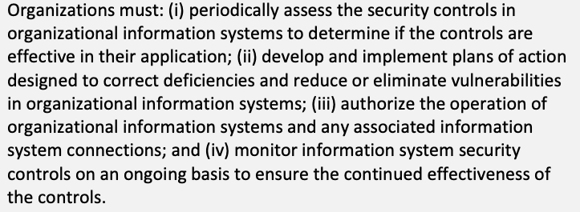
Enterprises should integrate C-SCRM – including the supply chain risk management process and the use of relevant controls defined in this publication – into ongoing security assessment and authorization activities. This includes activities to assess and authorize an enterprise’s information systems, as well as external assessments of suppliers, developers, system integrators, external system service providers, and other ICT/OT-related service providers, where appropriate. Supply chain aspects include documentation, the tracking of chain of custody and system interconnections within and between enterprises, the verification of supply chain cybersecurity training, the verification of suppliers’ claims of conformance to security, product/component integrity, and validation tools and techniques for non-invasive approaches to detecting counterfeits or malware (e.g., Trojans) using inspection for genuine components, including manual inspection techniques.
エンタープライズは、サプライチェーンリスクマネジメントプロセスおよび本刊行物で定義する関連管理策の利用を含め、C-SCRMを継続的なセキュリティ評価・認可活動に統合するべきである。これには、エンタープライズの情報システムの評価・認可に加え、適切な場合にサプライヤー、開発者、システムインテグレーター、外部システムサービスプロバイダー、その他のICT/OT関連サービスプロバイダーを外部評価する活動が含まれる。サプライチェーン面の考慮事項には、文書化、保管連鎖およびエンタープライズ内・エンタープライズ間のシステム相互接続の追跡、サプライチェーン・サイバーセキュリティ訓練の検証、セキュリティおよび製品・コンポーネントの完全性に関するサプライヤーの主張の検証、ならびに本物のコンポーネントの検査（手作業による検査技法を含む）を用いて偽造品やマルウェア（例：トロイの木馬）を非侵襲的に検知する検証ツール・技法が含まれる。
CA-1 POLICY AND PROCEDURES
CA-1 方針および手順
Supplemental C- SCRM Guidance: Integrate the development and implementation of assessment and authorization policies and procedures for supply chain cybersecurity into the control assessment and authorization policy and related C-SCRM Strategy/Implementation Plan(s), policies, and system-level plans. To address cybersecurity risks throughout the supply chain, enterprises should develop a C-SCRM policy (or, if required, integrate into existing policies) to direct C-SCRM activities for control assessment and authorization. The C-SCRM policy should define C-SCRM roles and responsibilities within the enterprise for conducting control assessment and authorization, any dependencies among those roles, and the interaction among the roles. Enterprise-wide security and privacy risks should be assessed on an ongoing basis and include supply chain risk assessment results.
補足C-SCRM指針：サプライチェーン・サイバーセキュリティの評価・認可方針および手順の策定・実装を、管理策の評価・認可方針と、関連するC-SCRM戦略／実施計画、方針、システムレベル計画に統合すること。サプライチェーン全体のサイバーセキュリティリスクに対処するため、エンタープライズは管理策の評価・認可に関するC-SCRM活動を指示するC-SCRM方針を策定するべきである（または必要に応じて既存方針に統合するべきである）。この方針では、管理策の評価・認可を実施するエンタープライズ内のC-SCRM上の役割と責任、それらの役割間の依存関係、および役割間の連携を定義するべきである。エンタープライズ全体のセキュリティリスクとプライバシーリスクは継続的に評価し、サプライチェーンリスク評価の結果を含めるべきである。
Level(s): 1, 2, 3
適用レベル：1、2、3
CA-2 CONTROL ASSESSMENTS
CA-2 管理策の評価
Supplemental C-SCRM Guidance: Ensure that the control assessment plan incorporates relevant C-SCRM controls and control enhancements. The control assessment should cover the assessment of both information systems and the supply chain and ensure that an enterprise-relevant baseline set of controls and control enhancements are identified and used for the assessment. Control assessments can include information from supplier audits, reviews, and supply chain-related information. Enterprises should develop a strategy for collecting information, including a strategy for engaging with providers on supply chain risk assessments. Such collaboration helps enterprises leverage information from providers, reduce redundancy, identify potential courses of action for risk responses, and reduce the burden on providers. C-SCRM personnel should review the control assessment.
補足C-SCRM指針：管理策評価計画に、関連するC-SCRM管理策と管理策の強化を組み込むこと。管理策評価では、情報システムとサプライチェーンの両方を評価し、エンタープライズに関連する基準管理策・強化策一式を特定して評価に使用するべきである。管理策評価には、サプライヤー監査、レビュー、サプライチェーン関連情報を含めることができる。エンタープライズは、サプライチェーンリスク評価に関するプロバイダーとの連携方針を含め、情報収集戦略を策定するべきである。この協力により、プロバイダーから情報を活用し、重複を減らし、リスク対応の候補を特定し、プロバイダーの負担を軽減できる。C-SCRM担当者は管理策評価をレビューするべきである。
Level(s): 2, 3
適用レベル：2、3
Control Enhancement(s):
管理策の強化：
(3) CONTROL ASSESSMENTS | SPECIALIZED ASSESSMENTS
（3）管理策の評価 | 専門的評価
Supplemental C-SCRM Guidance: Enterprises should use a variety of assessment techniques and methodologies, such as continuous monitoring, insider threat assessment, and malicious user assessment. These assessment mechanisms are context-specific and require the enterprise to understand its supply chain and to define the required set of measures for assessing and verifying that appropriate protections have been implemented.
補足C-SCRM指針：エンタープライズは、継続的監視、内部脅威評価、悪意あるユーザー評価など、さまざまな評価技法と方法論を用いるべきである。これらの評価手段は状況に固有であり、エンタープライズがサプライチェーンを理解し、適切な保護策が実装されていることを評価・検証するために必要な測定手段一式を定義する必要がある。
Level(s): 3
適用レベル：3
(4) CONTROL ASSESSMENTS | LEVERAGING RESULTS FROM EXTERNAL
（4）管理策の評価 | 外部組織の結果の活用
未レビュー訳ORGANIZATIONS
外部組織
未レビュー訳Supplemental C-SCRM Guidance: For C-SCRM, enterprises should use external security assessments for suppliers, developers, system integrators, external system service providers, and other ICT/OT-related service providers. External assessments include certifications, third-party assessments, and – in the federal context – prior assessments performed by other departments and agencies. Certifications from the International Enterprise for Standardization (ISO), the National Information Assurance Partnership (Common Criteria), and the Open Group Trusted Technology Forum (OTTF) may also be used by non-federal and federal enterprises alike, if such certifications meet agency needs.
補足C-SCRM指針：C-SCRMにおいて、エンタープライズはサプライヤー、開発者、システムインテグレーター、外部システムサービスプロバイダー、その他のICT/OT関連サービスプロバイダーに対する外部セキュリティ評価を利用するべきである。外部評価には、認証、第三者評価、連邦政府の文脈では他の省庁・機関が実施した過去の評価が含まれる。International Enterprise for Standardization（ISO）、National Information Assurance Partnership（Common Criteria）、Open Group Trusted Technology Forum（OTTF）の認証も、機関のニーズを満たす場合には、連邦政府・非連邦政府双方のエンタープライズが利用できる。
Level(s): 3
適用レベル：3
CA-3 INFORMATION EXCHANGE
CA-3 情報交換
Supplemental C-SCRM Guidance: The exchange of information or data between the system and other systems requires scrutiny from a supply chain perspective. This includes understanding the interface characteristics and connections of those components/systems that are directly interconnected or the data that is shared through those components/systems with developers, system integrators, external system service providers, other ICT/OT-related service providers, and – in some cases – suppliers. Proper service-level agreements should be in place to ensure compliance to system information exchange requirements defined by the enterprise, as the transfer of information between systems in different security or privacy domains with different security or privacy policies introduces the risk that such transfers violate one or more domain security or privacy policies. Examples of such interconnections can include:
補足C-SCRM指針：システムと他のシステムとの間の情報またはデータ交換は、サプライチェーンの観点から精査する必要がある。これには、直接相互接続されるコンポーネント／システムのインターフェース特性と接続、または開発者、システムインテグレーター、外部システムサービスプロバイダー、その他のICT/OT関連サービスプロバイダー、場合によってはサプライヤーと、これらのコンポーネント／システムを介して共有されるデータを理解することが含まれる。エンタープライズが定めたシステム情報交換要件への準拠を確保するため、適切なサービスレベル合意を整備するべきである。異なるセキュリティまたはプライバシー方針を持つセキュリティ／プライバシー領域間でシステム間の情報を転送すると、1つ以上の領域のセキュリティ／プライバシー方針に違反するリスクが生じるためである。このような相互接続の例は次のとおりである。
未レビュー訳a. A shared development and operational environment between the enterprise and system integrator
a. エンタープライズとシステムインテグレーターが共有する開発・運用環境
未レビュー訳b. Product update/patch management connection to an off-the-shelf supplier
b. 市販既製品のサプライヤーに接続する製品更新／パッチ管理
未レビュー訳c. Data request and retrieval transactions in a processing system that resides on an external service provider shared environment
c. 外部サービスプロバイダーの共有環境にある処理システムでのデータ要求・取得トランザクション
未レビュー訳Enterprises should require their prime contractors to implement this control and flow down this requirement to relevant sub-tier contractors.
エンタープライズは、元請業者にこの管理策を実装させ、関連する下位階層の請負業者にもこの要件を展開させるべきである。
Level(s): 3
適用レベル：3
CA-5 PLAN OF ACTION AND MILESTONES
CA-5 行動計画およびマイルストーン
Supplemental C-SCRM Guidance: For a system-level plan of actions and milestones (POA&Ms), enterprises need to ensure that a separate POA&M exists for C-SCRM and includes both information systems and the supply chain. The C-SCRM POA&M should include tasks to be accomplished with a recommendation for completion before or after system authorization, the resources required to accomplish the tasks, milestones established to meet the tasks, and the scheduled completion dates for the milestones and tasks. The enterprise should include relevant weaknesses, the impact of weaknesses on information systems or the supply chain, any remediation to address weaknesses, and any continuous monitoring activities in its C-SCRM POA&M. The C-SCRM POA&M should be included as part of the authorization package.
補足C-SCRM指針：システムレベルの行動計画・マイルストーン（POA&M）について、エンタープライズはC-SCRM用の独立したPOA&Mを設け、情報システムとサプライチェーンの両方を含める必要がある。C-SCRM POA&Mには、システム認可の前後いずれに完了することを推奨するかを含む実施タスク、タスクに必要な資源、達成に向けたマイルストーン、および各マイルストーン・タスクの予定完了日を含めるべきである。エンタープライズは、関連する弱点、情報システムまたはサプライチェーンに対する弱点の影響、弱点への是正措置、および継続的監視活動をC-SCRM POA&Mに含めるべきである。C-SCRM POA&Mは認可パッケージの一部として含めるべきである。
Level(s): 2, 3
適用レベル：2、3
CA-6 AUTHORIZATION
CA-6 認可
Supplemental C-SCRM Guidance: Authorizing officials should include C-SCRM in authorization decisions. To accomplish this, supply chain risks and compensating controls documented in C-SCRM Plans or system security plans and the C-SCRM POA&M should be included in the authorization package as part of the decision-making process. Risks should be determined and associated compensating controls selected based on the output of criticality, threat, and vulnerability analyses. Authorizing officials may use the guidance in Section 2 of this document as well as NIST IR 8179 to guide the assessment process.
補足C-SCRM指針：認可担当者は、認可判断にC-SCRMを含めるべきである。そのため、C-SCRM計画またはシステムセキュリティ計画に記録されたサプライチェーンリスクと代償的管理策、およびC-SCRM POA&Mを、意思決定プロセスの一環として認可パッケージに含めるべきである。リスクを特定し、関連する代償的管理策を選択する際には、重要度、脅威、脆弱性の分析結果に基づくべきである。認可担当者は、評価プロセスの指針として、本書第2節およびNIST IR 8179を利用できる。
Level(s): 1, 2, 3
適用レベル：1、2、3
CA-7 CONTINUOUS MONITORING
CA-7 継続的監視
Supplemental C-SCRM Guidance: For C-SCRM-specific guidance on this control, see Section 2 of this publication. Departments and agencies should refer to Appendix F to implement this guidance in accordance with Executive Order 14028, Improving the Nation’s Cybersecurity.
補足C-SCRM指針：この管理策に関するC-SCRM固有の指針については、本刊行物第2節を参照されたい。省庁・機関は、大統領令14028『国家のサイバーセキュリティの改善』に従って本指針を実装するため、付録Fを参照するべきである。
Level(s): 1, 2, 3
適用レベル：1、2、3
Control Enhancement(s):
管理策の強化：
(3) CONTINUOUS MONITORING | TREND ANALYSES
（3）継続的監視 | 傾向分析
Supplemental C-SCRM Guidance: The information gathered during continuous monitoring/trend analyses serves as input into C-SCRM decisions, including criticality analysis, vulnerability and threat analysis, and risk assessments. It also provides information that can be used in incident response and potentially identify a supply chain cybersecurity compromise, including an insider threat.
補足C-SCRM指針：継続的監視／傾向分析で収集された情報は、重要度分析、脆弱性・脅威分析、リスク評価など、C-SCRMの判断への入力となる。また、インシデント対応に利用できる情報を提供し、内部脅威を含むサプライチェーン・サイバーセキュリティ侵害の特定にも役立つ可能性がある。
Level(s): 3
適用レベル：3
A.2.7. FAMILY: CONFIGURATION MANAGEMENT
A.2.7. ファミリー：構成管理
[FIPS200] specifies the Configuration Management minimum security requirement as follows:
[FIPS200]は、構成管理に関する最低セキュリティ要件を次のように定めている。
原本PDFの抜粋画像
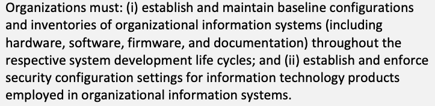
Configuration Management helps track changes made throughout the SDLC to systems, components, and documentation within the information systems and networks. This is important for knowing what changes were made to those systems, components, and documentation; who made the changes; and who authorized the changes. Configuration management also provides evidence for investigations of supply chain cybersecurity compromise when determining which changes were authorized and which were not. Enterprises should apply configuration management controls to their own systems and encourage the use of configuration management controls by their suppliers, developers, system integrators, external system service providers, and other ICT/OT-related service providers. See NIST IR 7622 for more information on Configuration Management.
構成管理は、情報システムおよびネットワーク内のシステム、コンポーネント、文書に対してSDLC全体を通じて行われる変更の追跡に役立つ。これにより、何が変更されたか、誰が変更したか、誰が承認したかを把握できる。また、構成管理は、サプライチェーン・サイバーセキュリティ侵害を調査する際に、どの変更が承認され、どの変更が承認されていなかったかを判断する証拠にもなる。エンタープライズは自組織のシステムに構成管理管理策を適用し、サプライヤー、開発者、システムインテグレーター、外部システムサービスプロバイダー、その他のICT/OT関連サービスプロバイダーにもその利用を推奨するべきである。詳細は構成管理に関するNIST IR 7622を参照されたい。
CM-1 POLICY AND PROCEDURES
CM-1 方針および手順
Supplemental C-SCRM Guidance: Configuration management impacts nearly every aspect of the supply chain. Configuration management is critical to the enterprise’s ability to establish the provenance of components, including tracking and tracing them through the SDLC and the supply chain. A properly defined and implemented configuration management capability provides greater assurance throughout the SDLC and the supply chain that components are authentic and have not been inappropriately modified. When defining a configuration management policy and procedures, enterprises should address the full SDLC, including procedures for introducing and removing components to and from the enterprise’s information system boundary. A configuration management policy should incorporate configuration items, data retention for configuration items and corresponding metadata, and tracking of the configuration item and its metadata. The enterprise should coordinate with suppliers, developers, system integrators, external system service providers, and other ICT/OT-related service providers regarding the configuration management policy.
補足C-SCRM指針：構成管理はサプライチェーンのほぼすべての側面に影響する。構成管理は、コンポーネントの来歴を確立し、SDLCおよびサプライチェーン全体で追跡・トレースするエンタープライズの能力にとって不可欠である。適切に定義・実装された構成管理能力により、SDLCおよびサプライチェーン全体を通して、コンポーネントが真正であり、不適切に変更されていないことへの保証が高まる。構成管理方針・手順を定める際、エンタープライズは、コンポーネントをエンタープライズの情報システム境界に導入・削除する手順を含め、SDLC全体に対処するべきである。構成管理方針には、構成品目、構成品目と対応するメタデータの保持、構成品目およびそのメタデータの追跡を含めるべきである。エンタープライズは、構成管理方針についてサプライヤー、開発者、システムインテグレーター、外部システムサービスプロバイダー、その他のICT/OT関連サービスプロバイダーと調整するべきである。
未レビュー訳Level(s): 1, 2, 3
適用レベル：1、2、3
CM-2 BASELINE CONFIGURATION
CM-2 基準構成
Supplemental C-SCRM Guidance: Enterprises should establish a baseline configuration of both the information system and the development environment, including documenting, formally reviewing, and securing the agreement of stakeholders. The purpose of the baseline is to provide a starting point for tracking changes to components, code, and/or settings throughout the SDLC. Regular reviews and updates of baseline configurations (i.e., re-baselining) are critical for traceability and provenance. The baseline configuration must take into consideration the enterprise’s operational environment and any relevant supplier, developer, system integrator, external system service provider, and other ICT/OT-related service provider involvement with the organization’s information systems and networks. If the system integrator, for example, uses the existing organization’s infrastructure, appropriate measures should be taken to establish a baseline that reflects an appropriate set of agreed-upon criteria for access and operation. Enterprises should require their prime contractors to implement this control and flow down this requirement to relevant sub-tier contractors. Departments and agencies should refer to Appendix F to implement this guidance in accordance with Executive Order 14028, Improving the Nation’s Cybersecurity.
補足C-SCRM指針：エンタープライズは、文書化、正式なレビュー、関係者の合意確保を含め、情報システムと開発環境の両方について基準構成を確立するべきである。基準構成は、SDLC全体でコンポーネント、コード、および／または設定に対する変更を追跡する出発点となる。トレーサビリティと来歴のためには、基準構成の定期的なレビューと更新（すなわち再ベースライン化）が不可欠である。基準構成では、エンタープライズの運用環境と、情報システム・ネットワークに関わるサプライヤー、開発者、システムインテグレーター、外部システムサービスプロバイダー、その他のICT/OT関連サービスプロバイダーを考慮しなければならない。たとえば、システムインテグレーターが組織の既存基盤を使用する場合、アクセスと運用に関して合意した適切な基準を反映する基準構成を確立するため、適切な措置を講じるべきである。エンタープライズは、元請業者にこの管理策を実装させ、関連する下位階層の請負業者にもこの要件を展開させるべきである。省庁・機関は、大統領令14028『国家のサイバーセキュリティの改善』に従って本指針を実装するため、付録Fを参照するべきである。
Level(s): 2, 3
適用レベル：2、3
Control Enhancement(s):
管理策の強化：
(6) BASELINE CONFIGURATION | DEVELOPMENT AND TEST ENVIRONMENTS
（6）基準構成 | 開発・試験環境
Supplemental C-SCRM Guidance: The enterprise should maintain or require the maintenance of a baseline configuration of applicable suppliers, developers, system integrators, external system service providers, and other ICT/OT-related service providers’ development, test (and staging, if applicable) environments, and any configuration of interfaces.
補足C-SCRM指針：エンタープライズは、該当するサプライヤー、開発者、システムインテグレーター、外部システムサービスプロバイダー、その他のICT/OT関連サービスプロバイダーの開発環境、試験環境（該当する場合はステージング環境）、およびインターフェースの構成について、基準構成を維持するか、維持を要求するべきである。
Level(s): 2, 3
適用レベル：2、3
CM-3 CONFIGURATION CHANGE CONTROL
CM-3 構成変更管理
Supplemental C-SCRM Guidance: Enterprises should determine, implement, monitor, and audit configuration settings and change controls within the information systems and networks and throughout the SDLC. This control supports traceability for C-SCRM.
補足C-SCRM指針：エンタープライズは、情報システムとネットワーク内、およびSDLC全体にわたって、構成設定と変更管理を決定、実装、監視、監査するべきである。この管理策は、C-SCRMのトレーサビリティを支援する。
The below NIST SP 800-53, Rev. 5 control enhancements – CM-3 (1), (2), (4), and (8) – are mechanisms that can be used for C-SCRM to collect and manage change control data. Enterprises should require their prime contractors to implement this control and flow down this requirement to relevant sub-tier contractors. Departments and agencies should refer to Appendix F to implement this guidance in accordance with Executive Order 14028, Improving the Nation’s Cybersecurity.
以下のNIST SP 800-53 Rev. 5の管理策の強化CM-3 (1)、(2)、(4)、(8)は、C-SCRMで変更管理データを収集・管理するために利用できる仕組みである。エンタープライズは、元請業者にこの管理策を実装させ、関連する下位階層の請負業者にもこの要件を展開させるべきである。省庁・機関は、大統領令14028『国家のサイバーセキュリティの改善』に従って本指針を実装するため、付録Fを参照するべきである。
Level(s): 2, 3
適用レベル：2、3
(1) CONFIGURATION CHANGE CONTROL | AUTOMATED DOCUMENTATION,
（1）構成変更管理｜変更の自動文書化、通知および変更の禁止
未レビュー訳NOTIFICATION, AND PROHIBITION OF CHANGES
原文のみ
Supplemental C-SCRM Guidance: Enterprises should define a set of system changes that are critical to the protection of the information system and the underlying or interoperating systems and networks. These changes may be defined based on a criticality analysis (including components, processes, and functions) and where vulnerabilities exist that are not yet remediated (e.g., due to resource constraints). The change control process should also monitor for changes that may affect an existing security control to ensure that this control continues to function as required.
C-SCRM補足指針：企業は、情報システムならびに基盤または相互運用するシステム・ネットワークの保護にとって重要なシステム変更の一式を定義すべきである。これらの変更は、（コンポーネント、プロセス、機能を含む）重要度分析、および（例：資源の制約により）まだ是正されていない脆弱性が存在する箇所に基づいて定義できる。変更管理プロセスは、既存のセキュリティ管理策に影響しうる変更も監視し、当該管理策が必要に応じて機能し続けることを確保すべきである。
Level(s): 2, 3
適用レベル：2、3
(2) CONFIGURATION CHANGE CONTROL | TESTING, VALIDATION, AND
（2）構成変更管理｜変更の試験、検証および文書化
未レビュー訳DOCUMENTATION OF CHANGES
原文のみ
Supplemental C-SCRM Guidance: Test, validate, and document changes to the system before finalizing implementation of the changes.
補足的なC-SCRM指針：変更の実装を確定する前に、システムへの変更を試験し、妥当性確認し、文書化すること。
Level(s): 2, 3
適用レベル：2、3
(4) CONFIGURATION CHANGE CONTROL | SECURITY AND PRIVACY
（4）構成変更管理｜セキュリティ・プライバシー担当者
未レビュー訳REPRESENTATIVES
原文のみ
Supplemental C-SCRM Guidance: Require enterprise security and privacy representatives to be members of the configuration change control function.
C-SCRM補足指針：企業のセキュリティおよびプライバシーの代表者を、構成変更管理機能のメンバーとすることを要求する。
Level(s): 2, 3
適用レベル：2、3
(8) CONFIGURATION CHANGE CONTROL | PREVENT OR RESTRICT CONFIGURATION
（8）構成変更管理｜構成変更の防止または制限
未レビュー訳CHANGES
原文のみ
Supplemental C-SCRM Guidance: Prevent or restrict changes to the configuration of the system under enterprise-defined circumstances.
補足的なC-SCRM指針：エンタープライズが定めた状況下で、システムの構成に対する変更を防止または制限すること。
Level(s): 2, 3
適用レベル：2、3
CM-4 IMPACT ANALYSIS
CM-4 影響分析
Supplemental C-SCRM Guidance: Enterprises should take changes to the information system and underlying or interoperable systems and networks under consideration to determine whether the impact of these changes affects existing security controls and warrants additional or different protection to maintain an acceptable level of cybersecurity risk throughout the supply chain. Ensure that stakeholders, such as system engineers and system security engineers, are included in the impact analysis activities to provide their perspectives for C-SCRM. NIST SP 800-53, Rev. 5 control enhancement CM-4 (1) is a mechanism that can be used to protect the information system from vulnerabilities that may be introduced through the test environment.
適用レベル：3
未レビュー訳Level(s): 3
適用レベル：3
(1) IMPACT ANALYSES | SEPARATE TEST ENVIRONMENTS
（1）影響分析 | 分離された試験環境
Analyze changes to the system in a separate test environment before implementing them into an operational environment, and look for security and privacy impacts due to flaws, weaknesses, incompatibility, or intentional malice.
運用環境に変更を実装する前に、別個の試験環境でシステム変更を分析し、欠陥、弱点、非互換性または意図的な悪意によるセキュリティ・プライバシーへの影響を調べること。
Level(s): 3
適用レベル：3
Related Control(s): SA-11, SC-7
関連管理策：SA-11、SC-7
CM-5 ACCESS RESTRICTIONS FOR CHANGE
CM-5 変更アクセス制限
Supplemental C-SCRM Guidance: Enterprises should ensure that requirements regarding physical and logical access restrictions for changes to the information systems and networks are defined and included in the enterprise’s implementation of access restrictions. Examples include access restriction for changes to centrally managed processes for software component updates and the deployment of updates or patches.
補足的なC-SCRM指針：エンタープライズは、情報システムおよびネットワークへの変更に関する物理的・論理的なアクセス制限の要件を定義し、エンタープライズのアクセス制限の実装に含めるべきである。例として、ソフトウェアコンポーネントの更新を一元管理するプロセスや、更新・パッチの展開に対する変更へのアクセス制限がある。
Level(s): 2, 3
適用レベル：2、3
Control Enhancements:
管理策の強化：
(4) ACCESS RESTRICTIONS FOR CHANGE | AUTOMATED ACCESS ENFORCEMENT AND
（4）変更アクセス制限｜アクセス制御の自動適用および監査記録
未レビュー訳AUDIT RECORDS
原文のみ
Supplemental C-SCRM Guidance: Enterprises should implement mechanisms to ensure automated access enforcement and auditing of the information system and the underlying systems and networks.
補足的なC-SCRM指針：エンタープライズは、情報システムおよび基盤となるシステム・ネットワークに対する自動的なアクセス強制と監査を確保する仕組みを実装するべきである。
Level(s): 3
適用レベル：3
(6) ACCESS RESTRICTIONS FOR CHANGE | LIMIT LIBRARY PRIVILEGES
（6）変更アクセス制限 | ライブラリ権限の制限
Supplemental C-SCRM Guidance: Enterprises should note that software libraries may be considered configuration items, access to which should be managed and controlled.
C-SCRM補足指針：企業は、ソフトウェアライブラリが構成品目とみなされる場合があり、そのアクセスは管理・制御すべきである点に留意すべきである。
Level(s): 3
適用レベル：3
CM-6 CONFIGURATION SETTINGS
CM-6 構成設定
Supplemental C-SCRM Guidance: Enterprises should oversee the function of modifying configuration settings for their information systems and networks and throughout the SDLC. Methods of oversight include periodic verification, reporting, and review. Resulting information may be shared with various parties that have access to, are connected to, or engage in the creation of the enterprise’s information systems and networks on a need-to-know basis. Changes should be tested and approved before they are implemented. Configuration settings should be monitored and audited to alert designated enterprise personnel when a change has occurred. Enterprises should require their prime contractors to implement this control and flow down this requirement to relevant sub-tier contractors. Departments and agencies should refer to Appendix F to implement this guidance in accordance with Executive Order 14028, Improving the Nation’s Cybersecurity.
補足的なC-SCRM指針：エンタープライズは、情報システムおよびネットワークの構成設定を変更する機能、ならびにSDLC全体にわたるその機能を監督すべきである。監督方法には、定期的な検証、報告、およびレビューが含まれる。得られた情報は、知る必要性に基づき、エンタープライズの情報システムおよびネットワークへのアクセス権を持つ者、接続されている者、またはその作成に関与する者と共有してもよい。変更は実装前にテストし、承認すべきである。変更が発生した際に指定されたエンタープライズ職員へ通知されるよう、構成設定を監視・監査すべきである。エンタープライズは、元請業者に本管理策を実装させ、この要件を関連する下位請負業者に展開させるべきである。省庁は、大統領令14028『国家のサイバーセキュリティの改善』に従って本指針を実施するため、付録Fを参照すべきである。
未レビュー訳Level(s): 2, 3
適用レベル：2、3
Control Enhancement(s):
管理策の強化：
(1) CONFIGURATION SETTINGS | AUTOMATED MANAGEMENT, APPLICATION, AND
（1）構成設定｜管理、適用および検証の自動化
未レビュー訳VERIFICATION
原文のみ
Supplemental C-SCRM Guidance: The enterprise should, when feasible, employ automated mechanisms to manage, apply, and verify configuration settings.
補足的なC-SCRM指針：エンタープライズは、実行可能な場合、構成設定を管理、適用、および検証する自動化された仕組みを採用すべきである。
Level(s): 3
適用レベル：3
(2) CONFIGURATION SETTINGS | RESPOND TO UNAUTHORIZED CHANGES
(2) 構成設定｜不正な変更への対応
Supplemental C-SCRM Guidance: The enterprise should ensure that designated security or IT personnel are alerted to unauthorized changes to configuration settings. When suppliers, developers, system integrators, external system service providers, and other ICT/OT-related service providers are responsible for such unauthorized changes, this qualifies as a C-SCRM incident that should be recorded and tracked to monitor trends. For a more comprehensive view, a specific, predefined set of C-SCRM stakeholders should assess the impact of unauthorized changes in the supply chain. When impact is assessed, relevant stakeholders should help define and implement appropriate mitigation strategies to ensure a comprehensive resolution.
補足的なC-SCRM指針：指定されたセキュリティ担当者またはIT担当者に、構成設定への不正な変更が通知されるよう、エンタープライズは確保すべきである。供給者、開発者、システムインテグレーター、外部システムサービスプロバイダー、およびその他のICT/OT関連サービスプロバイダーがこのような不正変更に責任を負う場合、これはC-SCRMインシデントに該当し、傾向を監視できるよう記録・追跡すべきである。より包括的に把握するため、事前に定めた特定のC-SCRMステークホルダー一式が、サプライチェーンにおける不正変更の影響を評価すべきである。影響を評価する際は、包括的な解決を確実にするため、関連ステークホルダーが適切な緩和戦略の定義と実装を支援すべきである。
Level(s): 3
適用レベル：3
CM-7 LEAST FUNCTIONALITY
CM-7 最小機能
Supplemental C-SCRM Guidance: Least functionality reduces the attack surface. Enterprises should select components that allow the flexibility to specify and implement least functionality. Enterprises should ensure least functionality in their information systems and networks and throughout the SDLC. NIST SP 800-53, Rev. 5 control enhancement CM-7 (9) mechanism can be used to protect information systems and networks from vulnerabilities that may be introduced by the use of unauthorized hardware being connected to enterprise systems. Enterprises should require their prime contractors to implement this control and flow down this requirement to relevant sub-tier contractors. Departments and agencies should refer to Appendix F to implement this guidance in accordance with Executive Order 14028, Improving the Nation’s Cybersecurity.
補足的なC-SCRM指針：最小機能は攻撃対象領域を縮小する。エンタープライズは、最小機能を指定し実装する柔軟性を備えたコンポーネントを選択すべきである。情報システムおよびネットワーク内ならびにSDLC全体で、最小機能を確保すべきである。NIST SP 800-53 Rev. 5の管理策強化CM-7(9)の仕組みを用いることで、認可されていないハードウェアをエンタープライズシステムに接続したことにより持ち込まれる可能性のある脆弱性から、情報システムおよびネットワークを保護できる。エンタープライズは、元請業者に本管理策を実装させ、この要件を関連する下位請負業者に展開させるべきである。省庁は、大統領令14028『国家のサイバーセキュリティの改善』に従って本指針を実施するため、付録Fを参照すべきである。
未レビュー訳Level(s): 3
適用レベル：3
未レビュー訳Control Enhancement(s):
管理策の強化：
未レビュー訳(1) LEAST FUNCTIONALITY | PERIODIC REVIEW
(1) 最小機能｜定期的なレビュー
Supplemental C-SCRM Guidance: Enterprises should require their prime contractors to implement this control and flow down this requirement to relevant sub-tier contractors.
補足的なC-SCRM指針：エンタープライズは、元請業者に本管理策を実装させ、この要件を関連する下位請負業者に展開させるべきである。
Level(s): 2, 3
適用レベル：2、3
(4) LEAST FUNCTIONALITY | UNAUTHORIZED SOFTWARE – DENY-BY-EXCEPTION
(4) 最小機能｜認可されていないソフトウェア — 例外による拒否
Supplemental C-SCRM Guidance: Enterprises should define requirements and deploy appropriate processes to specify and detect software that is not allowed. This can be aided by defining a requirement to, at a minimum, not use disreputable or unauthorized software. Enterprises should require their prime contractors to implement this control and flow down this requirement to relevant sub-tier contractors.
補足的なC-SCRM指針：エンタープライズは、許可されていないソフトウェアを指定し検知するための要件を定義し、適切なプロセスを展開すべきである。最低限、評判の悪いソフトウェアまたは認可されていないソフトウェアを使用しないという要件を定義することが、その一助となる。エンタープライズは、元請業者に本管理策を実装させ、この要件を関連する下位請負業者に展開させるべきである。
Level(s): 2, 3
適用レベル：2、3
(5) LEAST FUNCTIONALITY | AUTHORIZED SOFTWARE – ALLOW-BY-EXCEPTION
(5) 最小機能｜認可されたソフトウェア — 例外による許可
Supplemental C-SCRM Guidance: Enterprises should define requirements and deploy appropriate processes to specify allowable software. This can be aided by defining a requirement to use only reputable software. This can also include requirements for alerts when new software and updates to software are introduced into the enterprise’s environment. An example of such requirements is to allow open source software only if the code is available for an enterprise’s evaluation and determined to be acceptable for use.
補足的なC-SCRM指針：エンタープライズは、許容されるソフトウェアを指定する要件を定義し、適切なプロセスを展開すべきである。信頼できるソフトウェアのみを使用する要件を定義することが、その一助となる。また、新しいソフトウェアや更新版がエンタープライズ環境に導入された際に通知する要件を含めてもよい。このような要件の例として、ソースコードをエンタープライズが評価でき、使用に適すると判断した場合に限り、オープンソースソフトウェアの使用を許可することが挙げられる。
Level(s): 3
適用レベル：3
(6) LEAST FUNCTIONALITY | CONFINED ENVIRONMENTS WITH LIMITED PRIVILEGES
(6) 最小機能｜権限を制限した隔離環境
Supplemental C-SCRM Guidance: The enterprise should ensure that code authentication mechanisms such as digital signatures are implemented when executing code to assure the integrity of software, firmware, and information on the information systems and networks.
補足的なC-SCRM指針：情報システムおよびネットワーク上でコードを実行する際、ソフトウェア、ファームウェア、および情報の完全性を保証するため、デジタル署名などのコード認証の仕組みが実装されていることをエンタープライズは確保すべきである。
Level(s): 2, 3
適用レベル：2、3
(7) LEAST FUNCTIONALITY | CODE EXECUTION IN PROTECTED ENVIRONMENTS
(7) 最小機能｜保護された環境でのコード実行
Supplemental C-SCRM Guidance: The enterprise should obtain binary or machine-executable code directly from the OEM/developer or other acceptable, verified source.
補足的なC-SCRM指針：エンタープライズは、バイナリまたは機械実行可能コードを、OEM／開発者またはその他の許容可能で検証済みの供給元から直接入手すべきである。
Level(s): 3
適用レベル：3
(8) LEAST FUNCTIONALITY | BINARY OR MACHINE EXECUTABLE CODE
(8) 最小機能｜バイナリまたは機械実行可能コード
Supplemental C-SCRM Guidance: When exceptions are made to use software products without accompanying source code and with limited or no warranty because of compelling mission or operational requirements, approval by the authorizing official should be contingent upon the enterprise explicitly incorporating cybersecurity supply chain risk assessments as part of a broader assessment of such software products, as well as the implementation of compensating controls to address any identified and assessed risks.
補足的なC-SCRM指針：ミッションまたは運用上のやむを得ない要件により、ソースコードが付属せず、保証が限定的または存在しないソフトウェア製品を例外的に使用する場合、認可担当者は、エンタープライズが当該ソフトウェア製品のより広範な評価の一環としてサイバーセキュリティ・サプライチェーンリスク評価を明示的に組み込み、特定・評価されたリスクに対処する代替管理策を実装することを承認の条件とすべきである。
未レビュー訳Level(s): 2, 3
適用レベル：2、3
(9) LEAST FUNCTIONALITY | PROHIBITING THE USE OF UNAUTHORIZED HARDWARE
(9) 最小機能｜認可されていないハードウェアの使用禁止
Enterprises should define requirements and deploy appropriate processes to specify and detect hardware that is not allowed. This can be aided by defining a requirement to, at a minimum, not use disreputable or unauthorized hardware. Enterprises should require their prime contractors to implement this control and flow down this requirement to relevant sub-tier contractors.
エンタープライズは、許可されていないハードウェアを指定し検知するための要件を定義し、適切なプロセスを展開すべきである。最低限、評判の悪いハードウェアまたは認可されていないハードウェアを使用しないという要件を定義することが、その一助となる。エンタープライズは、元請業者に本管理策を実装させ、この要件を関連する下位請負業者に展開させるべきである。
Level(s): 2, 3
適用レベル：2、3
CM-8 SYSTEM COMPONENT INVENTORY
CM-8 システムコンポーネント・インベントリ
Supplemental C-SCRM Guidance: Enterprises should ensure that critical component assets within the information systems and networks are included in the asset inventory. The inventory must also include information for critical component accountability. Inventory information includes, for example, hardware inventory specifications, software license information, software version numbers, component owners, and – for networked components or devices – machine names and network addresses. Inventory specifications may include the manufacturer, device type, model, serial number, and physical location. Enterprises should require their prime contractors to implement this control and flow down this requirement to relevant sub-tier contractors. Enterprises should specify the requirements and how information flow is enforced to ensure that only the required information – and no more – is communicated to the various participants in the supply chain. If information is subsetted downstream, there should be information about who created the subset information. Enterprises should consider producing SBOMs for applicable and appropriate classes of software, including purchased software, open source software, and in-house software. Departments and agencies should refer to Appendix F for additional guidance on SBOMs in accordance with Executive Order 14028, Improving the Nation’s Cybersecurity.
補足的なC-SCRM指針：情報システムおよびネットワーク内の重要なコンポーネント資産が資産インベントリに含まれていることを、エンタープライズは確保すべきである。インベントリには、重要なコンポーネントの説明責任に関する情報も含めなければならない。インベントリ情報には、例えば、ハードウェア・インベントリ仕様、ソフトウェアライセンス情報、ソフトウェアのバージョン番号、コンポーネント所有者、およびネットワーク接続されたコンポーネントまたはデバイスの場合はマシン名とネットワークアドレスが含まれる。インベントリ仕様には、製造業者、デバイスの種類、モデル、シリアル番号、および物理的な所在地を含めてもよい。エンタープライズは、元請業者に本管理策を実装させ、この要件を関連する下位請負業者に展開させるべきである。サプライチェーンの各参加者には必要な情報のみ、それ以上は伝達されないよう、エンタープライズは要件と情報フローの強制方法を定めるべきである。下流で情報のサブセットを作成する場合、そのサブセット情報を誰が作成したかに関する情報を含めるべきである。エンタープライズは、購入ソフトウェア、オープンソースソフトウェア、および内製ソフトウェアなど、該当し適切な種類のソフトウェアについてSBOMを作成することを検討すべきである。省庁は、大統領令14028に従ったSBOMに関する追加指針について、付録Fを参照すべきである。
Level(s): 2, 3
適用レベル：2、3
Control Enhancement(s):
管理策の強化：
(1) SYSTEM COMPONENT INVENTORY: | UPDATES DURING INSTALLATION AND
（1）システムコンポーネント・インベントリ｜設置および撤去時の更新
未レビュー訳REMOVAL
原文のみ
Supplemental C-SCRM Guidance: When installing, updating, or removing an information system, information system component, or network component, the enterprise needs to update the inventory to ensure traceability for tracking critical components. In addition, the information system’s configuration needs to be updated to ensure an accurate inventory of supply chain protections and then re-baselined accordingly.
補足的なC-SCRM指針：情報システム、情報システムコンポーネント、またはネットワークコンポーネントを設置、更新、または撤去する際、重要なコンポーネントの追跡可能性を確保するため、エンタープライズはインベントリを更新する必要がある。さらに、サプライチェーン保護の正確なインベントリを確保できるよう、情報システムの構成を更新し、それに応じて再ベースライン化する必要がある。
未レビュー訳Level(s): 3
適用レベル：3
(2) SYSTEM COMPONENT INVENTORY | AUTOMATED MAINTENANCE
(2) システムコンポーネント・インベントリ｜自動保守
Supplemental C-SCRM Guidance: The enterprise should implement automated maintenance mechanisms to ensure that changes to component inventory for the information systems and networks are monitored for installation, update, and removal. When automated maintenance is performed with a predefined frequency and with the automated collation of relevant inventory information about each defined component, the enterprise should ensure that updates are available to relevant stakeholders for evaluation. Predefined frequencies for data collection should be less predictable in order to reduce the risk of an insider threat bypassing security mechanisms.
補足的なC-SCRM指針：情報システムおよびネットワークのコンポーネント・インベントリの変更について、設置、更新、および撤去が監視されるよう、エンタープライズは自動保守の仕組みを実装すべきである。事前に定めた頻度で自動保守を実施し、定義された各コンポーネントに関する関連インベントリ情報を自動で集約する場合、評価に必要な更新情報を関連ステークホルダーが利用できるよう、エンタープライズは確保すべきである。内部関係者の脅威がセキュリティ機構を回避するリスクを低減するため、データ収集の事前設定頻度は予測しにくくすべきである。
Level(s): 3
適用レベル：3
(4) SYSTEM COMPONENT INVENTORY | ACCOUNTABILITY INFORMATION
(4) システムコンポーネント・インベントリ｜説明責任情報
Supplemental C-SCRM Guidance: The enterprise should ensure that accountability information is collected for information system and network components. The system/component inventory information should identify those individuals who originate an acquisition as well as intended end users, including any associated personnel who may administer or use the system/components.
補足的なC-SCRM指針：情報システムおよびネットワークのコンポーネントについて、説明責任情報が収集されるようエンタープライズは確保すべきである。システム／コンポーネントのインベントリ情報では、取得を開始した個人に加え、システム／コンポーネントを管理または使用する可能性がある関係職員を含む、想定される最終利用者を特定すべきである。
Level(s): 3
適用レベル：3
(6) SYSTEM COMPONENT INVENTORY | ASSESSED CONFIGURATIONS AND
（6）システムコンポーネント・インベントリ｜評価済み構成および承認済み逸脱
未レビュー訳APPROVED DEVIATIONS
原文のみ
Supplemental C-SCRM Guidance: Assessed configurations and approved deviations must be documented and tracked. Any changes to the baseline configurations of information systems and networks require a review by relevant stakeholders to ensure that the changes do not result in increased exposure to cybersecurity risks throughout the supply chain.
補足的なC-SCRM指針：評価済みの構成および承認済みの逸脱は文書化し、追跡しなければならない。情報システムおよびネットワークのベースライン構成への変更は、サプライチェーン全体のサイバーセキュリティリスクへの曝露を増加させないことを確保するため、関連ステークホルダーによるレビューを必要とする。
Level(s): 3
適用レベル：3
(7) SYSTEM COMPONENT INVENTORY | CENTRALIZED REPOSITORY
(7) システムコンポーネント・インベントリ｜集中リポジトリ
Supplemental C-SCRM Guidance: Enterprises may choose to implement centralized inventories that include components from all enterprise information systems, networks, and their components. Centralized repositories of inventories provide opportunities for efficiencies in accounting for information systems, networks, and their components. Such repositories may also help enterprises rapidly identify the location and responsible individuals of components that have been compromised, breached, or are otherwise in need of mitigation actions. The enterprise should ensure that centralized inventories include the supply chain-specific information required for proper component accountability (e.g., supply chain relevance and information system, network, or component owner).
補足的なC-SCRM指針：エンタープライズは、すべてのエンタープライズ情報システム、ネットワーク、およびそのコンポーネントを含む集中インベントリを実装してもよい。インベントリを集中リポジトリに格納することで、情報システム、ネットワーク、およびそのコンポーネントの説明責任に関する効率化の機会が得られる。また、そのようなリポジトリは、侵害または漏えいを受けたコンポーネント、あるいはその他の緩和措置が必要なコンポーネントの所在地と責任者を、エンタープライズが迅速に特定するのに役立つ場合がある。コンポーネントの適切な説明責任に必要なサプライチェーン固有の情報（例：サプライチェーンとの関連性、情報システム、ネットワーク、またはコンポーネントの所有者）が集中インベントリに含まれていることを、エンタープライズは確保すべきである。
未レビュー訳Level(s): 3
適用レベル：3
(8) SYSTEM COMPONENT INVENTORY | AUTOMATED LOCATION TRACKING
(8) システムコンポーネント・インベントリ｜自動位置追跡
Supplemental C-SCRM Guidance: When employing automated mechanisms for tracking information system components by physical location, the enterprise should incorporate information system, network, and component tracking needs to ensure accurate inventory.
補足的なC-SCRM指針：物理的な所在地によって情報システムコンポーネントを追跡する自動化された仕組みを使用する場合、正確なインベントリを確保するため、エンタープライズは情報システム、ネットワーク、およびコンポーネントの追跡ニーズを組み込むべきである。
Level(s): 2, 3
適用レベル：2、3
(9) SYSTEM COMPONENT INVENTORY | ASSIGNMENT OF COMPONENTS TO
（9）システムコンポーネント・インベントリ｜システムへのコンポーネント割当て
未レビュー訳SYSTEMS
原文のみ
Supplemental C-SCRM Guidance: When assigning components to systems, the enterprise should ensure that the information systems and networks with all relevant components are inventoried, marked, and properly assigned. This facilitates quick inventory of all components relevant to information systems and networks and enables tracking of components that are considered critical and require differentiating treatment as part of the information system and network protection activities.
補足的なC-SCRM指針：コンポーネントをシステムに割り当てる際、関連するすべてのコンポーネントを含む情報システムおよびネットワークがインベントリに記録され、標識付けされ、適切に割り当てられていることを、エンタープライズは確保すべきである。これにより、情報システムおよびネットワークに関連するすべてのコンポーネントを迅速にインベントリ化でき、重要とみなされ、情報システムおよびネットワークの保護活動の一環として異なる扱いを必要とするコンポーネントの追跡が可能となる。
Level(s): 3
適用レベル：3
(10) SYSTEM COMPONENT INVENTORY | SBOMs FOR OPEN SOURCE PROJECTS
(10) システムコンポーネント・インベントリ｜オープンソースプロジェクトのSBOM
Supplemental C-SCRM Guidance: If an enterprise uses an open source project that does not have an SBOM and the enterprise requires one, the enterprise will need to 1) contribute SBOM generation to the open source project, 2) contribute resources to the project to add this capability, or 3) generate an SBOM on their first consumption of each version of the open source project that they use.
補足的なC-SCRM指針：エンタープライズがSBOMのないオープンソースプロジェクトを利用し、SBOMを必要とする場合、エンタープライズは次のいずれかを行う必要がある：1) オープンソースプロジェクトにSBOM生成を提供する、2) この機能を追加するためプロジェクトにリソースを提供する、または3) 使用するオープンソースプロジェクトの各バージョンを初めて利用する際にSBOMを生成する。
Level(s): 3
適用レベル：3
CM-9 CONFIGURATION MANAGEMENT PLAN
CM-9 構成管理計画
Supplemental C-SCRM Guidance:
補足的なC-SCRM指針：
Level(s): 2, 3
適用レベル：2、3
Control Enhancement(s):
管理策の強化：
(1) CONFIGURATION MANAGEMENT PLAN | ASSIGNMENT OF RESPONSIBILITY
(1) 構成管理計画｜責任の割当て
Supplemental C-SCRM Guidance: Enterprises should ensure that all relevant roles are defined to address configuration management activities for information systems and networks. Enterprises should ensure that requirements and capabilities for configuration management are appropriately addressed or included in the following supply chain activities: requirements definition, development, testing, market research and analysis, procurement solicitations and contracts, component installation or removal, system integration, operations, and maintenance.
補足的なC-SCRM指針：情報システムおよびネットワークの構成管理活動に関係するすべての役割が定義されていることを、エンタープライズは確保すべきである。要件定義、開発、テスト、市場調査および分析、調達の募集文書および契約、コンポーネントの設置または撤去、システム統合、運用、保守など、次のサプライチェーン活動において、構成管理に関する要件および能力が適切に扱われるか、組み込まれるようエンタープライズは確保すべきである。
未レビュー訳Level(s): 2, 3
適用レベル：2、3
CM-10 SOFTWARE USAGE RESTRICTIONS
CM-10 ソフトウェア使用制限
Supplemental C-SCRM Guidance: Enterprises should ensure that licenses for software used within their information systems and networks are documented, tracked, and maintained. Tracking mechanisms should provide for the ability to trace users and the use of licenses to access control information and processes. As an example, when an employee is terminated, a “named user” license should be revoked, and the license documentation should be updated to reflect this change. Departments and agencies should refer to Appendix F to implement this guidance in accordance with Executive Order 14028, Improving the Nation’s Cybersecurity.
補足的なC-SCRM指針：エンタープライズは、情報システムおよびネットワーク内で使用するソフトウェアのライセンスを文書化、追跡、および維持すべきである。追跡の仕組みでは、アクセス制御情報およびプロセスに関する利用者とライセンス使用の追跡可能性を確保すべきである。例えば、従業員が退職した場合、「指名利用者」ライセンスを取り消し、この変更を反映するようライセンス文書を更新すべきである。省庁は、大統領令14028『国家のサイバーセキュリティの改善』に従って本指針を実施するため、付録Fを参照すべきである。
Level(s): 2, 3
適用レベル：2、3
Control Enhancement(s):
管理策の強化：
(1) SOFTWARE USAGE RESTRICTIONS | OPEN SOURCE SOFTWARE
(1) ソフトウェア使用制限｜オープンソースソフトウェア
Supplemental C-SCRM Guidance: When considering software, enterprises should review all options and corresponding risks, including open source or commercially licensed components. When using open source software (OSS), the enterprise should understand and review the open source community’s typical procedures regarding provenance, configuration management, sources, binaries, reusable frameworks, reusable libraries’ availability for testing and use, and any other information that may impact levels of exposure to cybersecurity risks throughout the supply chain. Numerous open source solutions are currently in use by enterprises, including in integrated development environments (IDEs) and web servers. The enterprise should:
補足的なC-SCRM指針：ソフトウェアを検討する際、エンタープライズはオープンソースまたは商用ライセンスのコンポーネントを含め、すべての選択肢とそれに伴うリスクを確認すべきである。オープンソースソフトウェア（OSS）を使用する場合、エンタープライズは、来歴、構成管理、ソース、バイナリ、再利用可能なフレームワーク、テストおよび使用に利用できる再利用可能なライブラリ、ならびにサプライチェーン全体のサイバーセキュリティリスクへの曝露水準に影響を及ぼし得るその他の情報に関して、オープンソースコミュニティで一般的な手順を理解し、確認すべきである。統合開発環境（IDE）やウェブサーバーを含め、多数のオープンソースソリューションが現在エンタープライズで使用されている。エンタープライズは次の事項を行うべきである：
未レビュー訳a. Track the use of OSS and associated documentation,
a. OSSの使用状況および関連文書を追跡する、
未レビュー訳b. Ensure that the use of OSS adheres to the licensing terms and that these terms are acceptable to the enterprise,
b. OSSの使用がライセンス条件を遵守し、その条件がエンタープライズに受け入れ可能であることを確保する、
未レビュー訳c. Document and monitor the distribution of software as it relates to the licensing agreement to control copying and distribution, and
c. コピーおよび配布を管理するため、ライセンス契約に関連するソフトウェア配布を文書化して監視する、ならびに
未レビュー訳d. Evaluate and periodically audit the OSS’s supply chain as provided by the open source developer (e.g., information regarding provenance, configuration management, use of reusable libraries, etc.). This evaluation can be done through obtaining existing and often public documents, as well as using experience based on software update and download processes in which the enterprise may have participated.
d. オープンソース開発者が提供するOSSのサプライチェーン（例：来歴、構成管理、再利用可能なライブラリの使用に関する情報など）を評価し、定期的に監査する。この評価は、既存の公開資料を入手するほか、エンタープライズが関与した可能性のあるソフトウェア更新およびダウンロードプロセスの経験を活用して実施できる。
未レビュー訳Level(s): 2, 3
適用レベル：2、3
CM-11 USER-INSTALLED SOFTWARE
CM-11 利用者がインストールするソフトウェア
Supplemental C-SCRM Guidance: This control extends to the enterprise information system and network users who are not employed by the enterprise. These users may be suppliers, developers, system integrators, external system service providers, and other ICT/OT-related service providers.
補足的なC-SCRM指針：本管理策は、エンタープライズに雇用されていない、エンタープライズの情報システムおよびネットワークの利用者にも適用される。これらの利用者には、供給者、開発者、システムインテグレーター、外部システムサービスプロバイダー、およびその他のICT/OT関連サービスプロバイダーが含まれる場合がある。
Level(s): 2, 3
適用レベル：2、3
CM-12 INFORMATION LOCATION
CM-12 情報の所在地
Supplemental C-SCRM Guidance: Information that resides in different physical locations may be subject to different cybersecurity risks throughout the supply chain, depending on the specific location of the information. Components that originate or operate from different physical locations may also be subject to different supply chain risks, depending on the specific location of origination or operations. Enterprises should manage these risks through limiting access control and specifying allowable or disallowable geographic locations for backup/recovery, patching/upgrades, and information transfer/sharing. NIST SP 800-53, Rev. 5 control enhancement CM-12 (1) is a mechanism that can be used to enable automated location of components.
補足的なC-SCRM指針：異なる物理的所在地に存在する情報は、所在地に応じてサプライチェーン全体で異なるサイバーセキュリティリスクにさらされる場合がある。異なる物理的所在地で発生または運用されるコンポーネントも、発生地または運用地に応じて異なるサプライチェーンリスクにさらされる場合がある。エンタープライズは、アクセス制御を制限し、バックアップ／復旧、パッチ適用／アップグレード、および情報の転送／共有について許可または禁止する地理的位置を指定することで、これらのリスクを管理すべきである。NIST SP 800-53 Rev. 5の管理策強化CM-12(1)は、コンポーネントの所在地を自動的に特定するために使用できる仕組みである。
Level(s): 2, 3
適用レベル：2、3
Control Enhancement(s):
管理策の強化：
(1) INFORMATION LOCATION | AUTOMATED TOOLS TO SUPPORT INFORMATION
（1）情報の所在地｜情報の所在地を支援する自動化ツール
未レビュー訳LOCATION
原文のみ
Use automated tools to identify enterprise-defined information on enterprise-defined system components to ensure that controls are in place to protect enterprise information and individual privacy.
企業が定義したシステムコンポーネント上の、企業が定義した情報を特定するために自動化ツールを使用し、企業情報および個人のプライバシーを保護する管理策が整備されていることを確保する。
未レビュー訳Level(s): 2, 3
適用レベル：2、3
CM-13 DATA ACTION MAPPING
CM-13 データアクションのマッピング
Supplemental C-SCRM Guidance: In addition to personally identifiable information, understanding and documenting a map of system data actions for sensitive or classified information is necessary. Data action mapping should also be conducted to map Internet of Things (IoT) devices, embedded or stand-alone IoT systems, or IoT system of system data actions. Understanding what classified or IoT information is being processed, its sensitivity and/or effect on a physical thing or physical environment, how the sensitive or IoT information is being processed (e.g., if the data action is visible to an individual or is processed in another part of the system), and by whom provides a number of contextual factors that are important for assessing the degree of risk. Data maps can be illustrated in different ways, and the level of detail may vary based on the mission and business needs of the enterprise. The data map may be an overlay of any system design artifact that the enterprise is using. The development of this map may necessitate coordination between program and security personnel regarding the covered data actions and the components that are identified as part of the system.
C-SCRM補足指針：個人識別情報に加え、機微情報または機密情報についてシステムのデータアクションをマッピングし、その内容を理解・文書化する必要がある。モノのインターネット（IoT）デバイス、組込み型またはスタンドアロン型のIoTシステム、あるいはIoTシステム群のデータアクションをマッピングする目的でも、データアクションのマッピングを実施すべきである。どのような機密情報またはIoT情報が処理されているか、その機微性および／または物理的な物体や物理環境への影響、機微情報またはIoT情報がどのように処理されるか（例：データアクションが個人に見えるか、システムの別の部分で処理されるか）、および誰が処理するかを理解することは、リスクの程度を評価するうえで重要な文脈要因をもたらす。データマップはさまざまな方法で図示でき、その詳細度は企業の使命および事業上のニーズに応じて異なる場合がある。データマップは、企業が使用している任意のシステム設計成果物に重ねて示してもよい。このマップの作成には、対象となるデータアクションと、システムの一部として特定されるコンポーネントについて、プログラム担当者とセキュリティ担当者の調整が必要となる場合がある。
Level(s): 2, 3
レベル：2、3
CM-14 SIGNED COMPONENTS
CM-14 署名付きコンポーネント
Supplemental C-SCRM Guidance: Enterprises should verify that the acquired hardware and software components are genuine and valid by using digitally signed components from trustworthy certificate authorities. Verifying components before allowing installation helps enterprises reduce cybersecurity risks throughout the supply chain.
C-SCRM補足指針：企業は、信頼できる認証局の証明書によりデジタル署名されたコンポーネントを使用し、取得したハードウェアおよびソフトウェアのコンポーネントが真正かつ有効であることを検証すべきである。インストールを許可する前にコンポーネントを検証すると、サプライチェーン全体のサイバーセキュリティリスクを低減できる。
Level(s): 3
レベル：3
A.2.8. FAMILY: CONTINGENCY PLANNING
A.2.8. ファミリー：緊急時対応計画
[FIPS200] specifies the Contingency Planning minimum security requirement as follows:
[FIPS200]は、緊急時対応計画の最低限のセキュリティ要件を次のように定めている。
原本PDFの抜粋画像
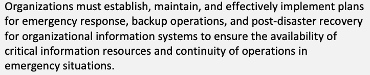
Cybersecurity supply chain contingency planning includes planning for alternative suppliers of system components, alternative suppliers of systems and services, alternative delivery routes for critical system components, and denial-of-service attacks on the supply chain. Such contingency plans help ensure that existing service providers have an effective continuity of operations plan, especially when the provider is delivering services in support of a critical mission function. Additionally, many techniques used for contingency planning, such as alternative processing sites, have their own supply chains with their own attendant cybersecurity risks. Enterprises should ensure that they understand and manage cybersecurity risks throughout the supply chain and dependencies related to the contingency planning activities as necessary.
サイバーセキュリティ・サプライチェーンの緊急時対応計画には、システムコンポーネントの代替供給者、システム・サービスの代替供給者、重要なシステムコンポーネントの代替配送経路、サプライチェーンへのサービス拒否攻撃に関する計画が含まれる。こうした緊急時対応計画は、既存のサービスプロバイダーが効果的な業務継続計画を備えることを確保するのに役立つ。特に、プロバイダーが重要な使命機能を支援するサービスを提供している場合に重要である。さらに、代替処理サイトなどの緊急時対応計画の手法自体にも、それぞれ固有のサプライチェーンとサイバーセキュリティリスクがある。企業は、必要に応じて、緊急時対応計画活動に関係するサプライチェーン全体のサイバーセキュリティリスクと依存関係を理解し、管理すべきである。
CP-1 POLICY AND PROCEDURES
CP-1 方針および手順
Supplemental C-SCRM Guidance: Enterprises should integrate C-SCRM into the contingency planning policy and related SCRM Strategy/Implementation Plan, policies, and SCRM Plan. The policy should cover information systems and the supply chain network and, at a minimum, address scenarios such as:
C-SCRM補足指針：企業は、緊急時対応計画方針ならびに関連するSCRM戦略・実施計画、方針、SCRM計画にC-SCRMを統合すべきである。方針は情報システムとサプライチェーン・ネットワークを対象とし、最低限、次のシナリオを扱うべきである。
未レビュー訳a. Unplanned component failure and subsequent replacement;
a. コンポーネントの予期しない故障とその後の交換
未レビュー訳b. Planned replacement related to feature improvements, maintenance, upgrades, and modernization; and
b. 機能改善、保守、アップグレード、近代化に伴う計画的な交換
未レビュー訳c. Product and/or service disruption.
c. 製品および／またはサービスの中断
未レビュー訳Level(s): 1, 2, 3
レベル：1、2、3
CP-2 CONTINGENCY PLAN
CP-2 緊急時対応計画
Supplemental C-SCRM Guidance: Enterprises should define and implement a contingency plan for the supply chain information systems and network to ensure that preparations are in place to mitigate the loss or degradation of data or operations. Contingencies should be put in place for the supply chain, network, information systems (especially critical components), and processes to ensure protection against compromise and provide appropriate failover and timely recovery to an acceptable state of operations.
C-SCRM補足指針：企業は、データまたは運用の喪失・劣化を低減する準備を整えるため、サプライチェーン情報システムおよびネットワークの緊急時対応計画を定義し、実施すべきである。侵害から保護し、適切なフェイルオーバーと許容可能な運用状態への迅速な復旧を実現するため、サプライチェーン、ネットワーク、情報システム（特に重要なコンポーネント）、プロセスに対する緊急時の備えを整えるべきである。
Level(s): 2, 3
レベル：2、3
Control Enhancement(s):
管理策の強化：
(1) CONTINGENCY PLAN | COORDINATE WITH RELATED PLANS
(1) 緊急時対応計画 | 関連計画との調整
Supplemental C-SCRM Guidance: Coordinate contingency plan development for supply chain risks with enterprise elements responsible for related plans.
C-SCRM補足指針：サプライチェーンリスクに関する緊急時対応計画の策定を、関連計画を担当する企業部門と調整する。
Level(S): 2, 3
レベル：2、3
(2) CONTINGENCY PLAN | CAPACITY PLANNING
(2) 緊急時対応計画 | 容量計画
Supplemental C-SCRM Guidance: This enhancement helps the availability of the supply chain network or information system components.
C-SCRM補足指針：この強化策は、サプライチェーン・ネットワークまたは情報システムのコンポーネントの可用性向上に役立つ。
Level(s): 2, 3
レベル：2、3
(7) CONTINGENCY PLAN | COORDINATE WITH EXTERNAL SERVICE PROVIDERS
(7) 緊急時対応計画 | 外部サービスプロバイダーとの調整
Supplemental C-SCRM Guidance: Enterprises should ensure that the supply chain network, information systems, and components provided by an external service provider have appropriate failover (to include personnel, equipment, and network resources) to reduce or prevent service interruption or ensure timely recovery. Enterprises should ensure that contingency planning requirements are defined as part of the service-level agreement. The agreement may have specific terms that address critical components and functionality support in case of denial-of-service attacks to ensure the continuity of operations. Enterprises should coordinate with external service providers to identify service providers’ existing contingency plan practices and build on them as required by the enterprise’s mission and business needs. Such coordination will aid in cost reduction and efficient implementation. Enterprises should require their prime contractors who provide a mission- and business-critical or -enabling service or product to implement this control and flow down this requirement to relevant sub-tier contractors.
C-SCRM補足指針：企業は、外部サービスプロバイダーが提供するサプライチェーン・ネットワーク、情報システム、コンポーネントに、サービス中断の低減・防止または迅速な復旧を実現する適切なフェイルオーバー（要員、機器、ネットワーク資源を含む）が備わっていることを確認すべきである。緊急時対応計画の要件がサービスレベル合意書の一部として定義されていることを確認すべきである。サービス拒否攻撃が発生した場合の業務継続を確保するため、重要なコンポーネントや機能の支援を扱う具体的な条項を合意書に設ける場合がある。企業は外部サービスプロバイダーと連携して、サービスプロバイダーの既存の緊急時対応計画の慣行を特定し、企業の使命・事業ニーズが求めるところに従ってそれらを土台に発展させるべきである。こうした調整は費用削減と効率的な実施に役立つ。企業は、使命・事業上不可欠な、またはそれを支援するサービス・製品を提供する元請業者に本管理策を実施させ、この要件を関連する下位階層の請負業者に展開すべきである。
Level(s): 3
レベル：3
(8) CONTINGENCY PLAN | IDENTIFY CRITICAL ASSETS
(8) 緊急時対応計画 | 重要資産の特定
Supplemental C-SCRM Guidance: Ensure that critical assets (including hardware, software, and personnel) are identified and that appropriate contingency planning requirements are defined and applied to ensure the continuity of operations. A key step in this process is to complete a criticality analysis on components, functions, and processes to identify all critical assets. See Section 2 and NIST IR 8179 for additional guidance on criticality analyses.
運用の継続性を確保するため、重要資産（ハードウェア、ソフトウェア、人員を含む）を特定し、適切な緊急時対応計画要件を定義・適用すること。このプロセスの重要な手順は、コンポーネント、機能、プロセスの重要度分析を行い、すべての重要資産を特定することである。重要度分析の追加指針は第2節およびNIST IR 8179を参照されたい。
未レビュー訳Level(s): 3
レベル：3
CP-3 CONTINGENCY TRAINING
CP-3 緊急時対応訓練
Supplemental C-SCRM Guidance: Enterprises should ensure that critical suppliers are included in contingency training. Enterprises should require their prime contractors to implement this control and flow down this requirement to relevant sub-tier contractors. Departments and agencies should refer to Appendix F to implement this guidance in accordance with Executive Order 14028, Improving the Nation’s Cybersecurity.
C-SCRM補足指針：企業は、重要な供給者を緊急時対応訓練に含めるべきである。企業は、元請業者に本管理策を実施させ、この要件を関連する下位階層の請負業者に展開すべきである。各省庁・機関は、大統領令14028『国のサイバーセキュリティの改善』に従って本指針を実施するため、付録Fを参照すべきである。
Level(s): 2, 3
レベル：2、3
Control Enhancement(s):
管理策の強化：
(1) CONTINGENCY TRAINING | SIMULATED EVENTS
(1) 緊急時対応訓練 | 模擬事象
Supplemental C-SCRM Guidance: Enterprises should ensure that suppliers, developers, system integrators, external system service providers, and other ICT/OT-related service providers who have roles and responsibilities in providing critical services are included in contingency training exercises.
C-SCRM補足指針：企業は、重要なサービスの提供に役割と責任を持つ供給者、開発者、システムインテグレーター、外部システムサービスプロバイダー、その他のICT/OT関連サービスプロバイダーが緊急時対応訓練に参加するようにすべきである。
Level(s): 3
レベル：3
CP-4 CONTINGENCY PLAN TESTING
CP-4 緊急時対応計画の試験
Supplemental C-SCRM Guidance: Enterprises should ensure that critical suppliers are included in contingency testing. The enterprise – in coordination with the service provider(s) – should test continuity/resiliency capabilities, such as failover from a primary production site to a back-up site. This testing may occur separately from a training exercise or be performed during the exercise. Enterprises should reference their C-SCRM threat assessment output to develop scenarios to test how well the enterprise is able to withstand and/or recover from a C-SCRM threat event.
C-SCRM補足指針：企業は、重要な供給者を緊急時対応試験に含めるべきである。企業はサービスプロバイダーと連携し、主たる本番サイトからバックアップサイトへのフェイルオーバーなど、継続性・レジリエンス能力を試験すべきである。この試験は訓練とは別に実施してもよく、訓練中に実施してもよい。企業はC-SCRM脅威評価の成果を参照し、C-SCRM脅威事象にどの程度耐え、またはそこから復旧できるかを試すシナリオを作成すべきである。
Level(s): 2, 3
レベル：2、3
CP-6 ALTERNATIVE STORAGE SITE
CP-6 代替保管サイト
Supplemental C-SCRM Guidance: When managed by suppliers, developers, system integrators, external system service providers, and other ICT/OT-related service providers, alternative storage sites are considered within an enterprise’s supply chain network. Enterprises should apply appropriate cybersecurity supply chain controls to those storage sites.
C-SCRM補足指針：供給者、開発者、システムインテグレーター、外部システムサービスプロバイダー、その他のICT/OT関連サービスプロバイダーが管理する場合、代替保管サイトは企業のサプライチェーン・ネットワークに含まれる。企業は、これらの保管サイトに適切なサプライチェーン・サイバーセキュリティ管理策を適用すべきである。
Level(s): 2, 3
レベル：2、3
Control Enhancement(s):
管理策の強化：
(1) ALTERNATIVE STORAGE SITE | SEPARATION FROM PRIMARY SITE
(1) 代替保管サイト | 主サイトからの分離
Supplemental C-SCRM Guidance: This enhancement helps the resiliency of the supply chain network, information systems, and information system components.
C-SCRM補足指針：この強化策は、サプライチェーン・ネットワーク、情報システム、情報システムのコンポーネントのレジリエンス向上に役立つ。
Level(s): 2, 3
レベル：2、3
CP-7 ALTERNATIVE PROCESSING SITE
CP-7 代替処理サイト
Supplemental C-SCRM Guidance: When managed by suppliers, developers, system integrators, external system service providers, and other ICT/OT-related service providers, alternative storage sites are considered within an enterprise’s supply chain. Enterprises should apply appropriate supply chain cybersecurity controls to those processing sites.
C-SCRM補足指針：供給者、開発者、システムインテグレーター、外部システムサービスプロバイダー、その他のICT/OT関連サービスプロバイダーが管理する場合、代替保管サイトは企業のサプライチェーンに含まれる。企業は、これらの処理サイトに適切なサプライチェーン・サイバーセキュリティ管理策を適用すべきである。
Level(s): 2, 3
レベル：2、3
CP-8 TELECOMMUNICATIONS SERVICES
CP-8 電気通信サービス
Supplemental C-SCRM Guidance: Enterprises should incorporate alternative telecommunication service providers for their supply chain to support critical information systems.
C-SCRM補足指針：企業は、重要な情報システムを支援するため、サプライチェーンに代替電気通信サービスプロバイダーを組み込むべきである。
Level(s): 2, 3
レベル：2、3
Control Enhancement(s):
管理策の強化：
(3) TELECOMMUNICATIONS SERVICES | SEPARATION OF PRIMARY and ALTERNATIVE
(3) 電気通信サービス | 主プロバイダーと代替
未レビュー訳PROVIDERS
プロバイダーの分離
未レビュー訳Supplemental C-SCRM Guidance: The separation of primary and alternative providers supports cybersecurity resilience of the supply chain.
C-SCRM補足指針：主プロバイダーと代替プロバイダーの分離は、サプライチェーンのサイバーセキュリティ・レジリエンスを支援する。
Level(s): 2, 3
レベル：2、3
(4) TELECOMMUNICATIONS SERVICES | PROVIDER CONTINGENCY PLAN
(4) 電気通信サービス | プロバイダーの緊急時対応計画
Supplemental C-SCRM Guidance: For C-SCRM, suppliers, developers, system integrators, external system service providers, and other ICT/OT-related service providers, contingency plans should provide separation in infrastructure, service, process, and personnel, where appropriate.
C-SCRM補足指針：C-SCRMでは、供給者、開発者、システムインテグレーター、外部システムサービスプロバイダー、その他のICT/OT関連サービスプロバイダーの緊急時対応計画に、適切な場合、インフラ、サービス、プロセス、人員の分離を含めるべきである。
Level(s): 2, 3
レベル：2、3
CP-11 ALTERNATIVE COMMUNICATIONS PROTOCOLS
CP-11 代替通信プロトコル
Supplemental C-SCRM Guidance: Enterprises should ensure that critical suppliers are included in contingency plans, training, and testing as part of incorporating alternative communications protocol capabilities to establish supply chain resilience.
C-SCRM補足指針：企業は、サプライチェーンのレジリエンスを確立するための代替通信プロトコル機能を組み込む一環として、重要な供給者を緊急時対応計画、訓練、試験に含めるべきである。
Level(s): 2, 3
レベル：2、3
A.2.9. FAMILY: IDENTIFICATION AND AUTHENTICATION
A.2.9. ファミリー：識別および認証
[FIPS200] specifies the Identification and Authentication minimum security requirement as follows:
[FIPS200]は、識別および認証の最低限のセキュリティ要件を次のように定めている。
原本PDFの抜粋画像
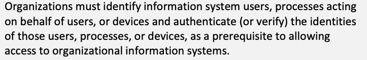
NIST SP 800-161, Supply Chain Risk Management Practices for Federal Information Systems and Organizations, expands the [FIPS200] identification and authentication control family to include the identification and authentication of components in addition to individuals (users) and processes acting on behalf of individuals within the supply chain network. Identification and authentication are critical to C-SCRM because they provide for the traceability of individuals, processes acting on behalf of individuals, and specific systems/components in an enterprise’s supply chain network. Identification and authentication are required to appropriately manage cybersecurity risks throughout the supply chain to both reduce the risk of supply chain cybersecurity compromise and to generate evidence in case of supply chain cybersecurity compromise.
NIST SP 800-161『連邦情報システムおよび組織のためのサプライチェーンリスク管理慣行』は、[FIPS200]の識別・認証管理策ファミリーを拡張し、サプライチェーン・ネットワーク内の個人（利用者）および個人に代わって動作するプロセスに加え、コンポーネントの識別・認証も含めている。識別と認証は、企業のサプライチェーン・ネットワーク内の個人、個人に代わって動作するプロセス、特定のシステム／コンポーネントの追跡可能性を確保するため、C-SCRMで重要である。サプライチェーン・サイバーセキュリティ侵害のリスクを低減し、侵害が発生した場合の証拠を生成するには、サプライチェーン全体のサイバーセキュリティリスクを適切に管理するための識別・認証が必要である。
未レビュー訳IA-1 POLICY AND PROCEDURES
IA-1 方針および手順
Supplemental C-SCRM Guidance: The enterprise should – at enterprise-defined intervals – review, enhance, and update their identity and access management policies and procedures to ensure that critical roles and processes within the supply chain network are defined and that the enterprise’s critical systems, components, and processes are identified for traceability. This should include the identity of critical components that may not have been considered under identification and authentication in the past. Note that providing identification for all items within the supply chain would be cost-prohibitive, and discretion should be used. The enterprise should update related C-SCRM Strategy/Implementation Plan(s), Policies, and C-SCRM Plans.
C-SCRM補足指針：企業は、企業が定める間隔でID・アクセス管理方針と手順を見直し、強化し、更新すべきである。これにより、サプライチェーン・ネットワーク内の重要な役割とプロセスを定義し、追跡可能性のために企業の重要システム、コンポーネント、プロセスを特定する。これには、従来は識別・認証の対象とみなされていなかった重要コンポーネントのIDも含めるべきである。サプライチェーン内のすべての項目にIDを付与することは費用上実行困難であるため、適切な判断を用いること。関連するC-SCRM戦略・実施計画、方針、C-SCRM計画も更新すべきである。
未レビュー訳Level(s): 1, 2, 3
レベル：1、2、3
IA-2 IDENTIFICATION AND AUTHENTICATION (ORGANIZATIONAL USERS)
IA-2 識別および認証（組織の利用者）
Supplemental C-SCRM Guidance: Enterprises should ensure that identification and requirements are defined and applied for enterprise users accessing an ICT/OT system or supply chain network. An enterprise user may include employees, individuals deemed to have the equivalent status of employees (e.g., contractors, guest researchers, etc.), and system integrators fulfilling contractor roles. Criteria such as “duration in role” can aid in defining which identification and authentication mechanisms are used. The enterprise may choose to define a set of roles and associate a level of authorization to ensure proper implementation. Enterprises should require their prime contractors to implement this control and flow down this requirement to relevant sub-tier contractors. Departments and agencies should refer to Appendix F to implement this guidance in accordance with Executive Order 14028, Improving the Nation’s Cybersecurity.
C-SCRM補足指針：企業は、ICT/OTシステムまたはサプライチェーン・ネットワークにアクセスする企業利用者について、識別要件が定義・適用されていることを確認すべきである。企業利用者には従業員、従業員と同等の地位とみなされる者（例：請負業者、客員研究員など）、請負業者の役割を果たすシステムインテグレーターが含まれる場合がある。「役割の継続期間」などの基準は、使用する識別・認証機構の決定に役立つ。適切に実装するため、企業は役割群を定義し、それぞれに認可レベルを割り当てることができる。企業は、元請業者に本管理策を実施させ、この要件を関連する下位階層の請負業者に展開すべきである。各省庁・機関は、大統領令14028『国のサイバーセキュリティの改善』に従って本指針を実施するため、付録Fを参照されたい。
Level(s): 1, 2, 3
レベル：1、2、3
IA-3 DEVICE IDENTIFICATION AND AUTHENTICATION
IA-3 デバイスの識別および認証
Supplemental C-SCRM Guidance: Enterprises should implement capabilities to distinctly and positively identify devices and software within their supply chain and, once identified, verify that the identity is authentic. Devices that require unique device-to-device identification and authentication should be defined by type, device, or a combination of type and device. Software that requires authentication should be identified through a software identification tag (SWID) that enables verification of the software package and authentication of the enterprise releasing the software package.
C-SCRM補足指針：企業は、サプライチェーン内のデバイスとソフトウェアを個別かつ確実に識別し、識別後にそのIDが真正であることを検証する機能を実装すべきである。デバイス間で一意の識別・認証を要する対象は、種類、デバイス、または種類とデバイスの組み合わせで定義すべきである。認証を要するソフトウェアは、ソフトウェアパッケージの検証と、そのパッケージをリリースする企業の認証を可能にするソフトウェア識別タグ（SWID）によって識別すべきである。
未レビュー訳Level(s): 1, 2, 3
レベル：1、2、3
IA-4 IDENTIFIER MANAGEMENT
IA-4 識別子の管理
Supplemental C-SCRM Guidance: Identifiers allow for greater discoverability and traceability. Within the enterprise’s supply chain, identifiers should be assigned to systems, individuals, documentation, devices, and components. In some cases, identifiers may be maintained throughout a system’s life cycle – from concept to retirement – but, at a minimum, throughout the system’s life within the enterprise.
識別子により、発見可能性と追跡可能性が高まる。企業のサプライチェーン内では、システム、個人、文書、デバイス、コンポーネントに識別子を割り当てるべきである。場合によっては、構想から退役までシステムのライフサイクル全体を通じて識別子を維持するが、最低限、企業内でシステムが存続する期間中は維持すべきである。
For software development, identifiers should be assigned for those components that have achieved configuration item recognition. For devices and operational systems, identifiers should be assigned when the items enter the enterprise’s supply chain, such as when they are transferred to the enterprise’s ownership or control through shipping and receiving or via download.
ソフトウェア開発では、構成品目として認識されたコンポーネントに識別子を割り当てるべきである。デバイスおよび運用システムでは、出荷・受領やダウンロードを通じて企業の所有または管理下に移るなど、項目が企業のサプライチェーンに入る時点で識別子を割り当てるべきである。
Suppliers, developers, system integrators, external system service providers, and other ICT/OT-related service providers typically use their own identifiers for tracking purposes within their own supply chain. Enterprises should correlate those identifiers with the enterprise-assigned identifiers for traceability and accountability. Enterprises should require their prime contractors to implement this control and flow down this requirement to relevant sub-tier contractors. Departments and agencies should refer to Appendix F to implement this guidance in accordance with Executive Order 14028, Improving the Nation’s Cybersecurity.
供給者、開発者、システムインテグレーター、外部システムサービスプロバイダー、その他のICT/OT関連サービスプロバイダーは通常、自らのサプライチェーン内で追跡するため独自の識別子を用いる。企業は追跡可能性と説明責任を確保するため、これらの識別子を企業が割り当てた識別子と対応付けるべきである。企業は、元請業者に本管理策を実施させ、この要件を関連する下位階層の請負業者に展開すべきである。各省庁・機関は、大統領令14028『国のサイバーセキュリティの改善』に従って本指針を実施するため、付録Fを参照されたい。
Level(s): 2, 3
レベル：2、3
Related Controls: IA-3 (1), IA-3 (2), IA-3 (3), and IA-3 (4)
関連管理策：IA-3 (1)、IA-3 (2)、IA-3 (3)、IA-3 (4)
Control Enhancement(s):
管理策の強化：
(6) IDENTIFIER MANAGEMENT | CROSS-ORGANIZATION MANAGEMENT
(6) 識別子の管理 | 組織間管理
Supplemental C-SCRM Guidance: This enhancement helps the traceability and provenance of elements within the supply chain through the coordination of identifier management among the enterprise and its suppliers, developers, system integrators, external system service providers, and other ICT/OT-related service providers. This includes information systems and components as well as individuals engaged in supply chain activities.
C-SCRM補足指針：この強化策は、企業と供給者、開発者、システムインテグレーター、外部システムサービスプロバイダー、その他のICT/OT関連サービスプロバイダーとの間で識別子管理を調整することにより、サプライチェーン内の要素の追跡可能性と来歴を支援する。対象には、情報システムとコンポーネントに加え、サプライチェーン活動に従事する個人も含まれる。
Level(s): 1, 2, 3
レベル：1、2、3
IA-5 AUTHENTICATOR MANAGEMENT
IA-5 認証子の管理
Supplemental C-SCRM Guidance: This control facilitates traceability and non-repudiation throughout the supply chain. Enterprises should require their prime contractors to implement this control and flow down this requirement to relevant sub-tier contractors. Departments and agencies should refer to Appendix F to implement this guidance in accordance with Executive Order 14028, Improving the Nation’s Cybersecurity.
C-SCRM補足指針：この管理策は、サプライチェーン全体の追跡可能性と否認防止を促進する。企業は、元請業者に本管理策を実施させ、この要件を関連する下位階層の請負業者に展開すべきである。各省庁・機関は、大統領令14028『国のサイバーセキュリティの改善』に従って本指針を実施するため、付録Fを参照されたい。
Level(s): 2, 3
レベル：2、3
Control Enhancement(s):
管理策の強化：
(5) AUTHENTICATOR MANAGEMENT | CHANGE AUTHENTICATORS PRIOR TO
(5) 認証子の管理 | 引き渡し前の認証子変更
未レビュー訳DELIVERY
引き渡し
未レビュー訳Supplemental C-SCRM Guidance: This enhancement verifies the chain of custody within the enterprise’s supply chain.
C-SCRM補足指針：この強化策は、企業のサプライチェーン内の管理の連鎖を検証する。
Level(s): 3
レベル：3
(9) AUTHENTICATOR MANAGEMENT | FEDERATED CREDENTIAL MANAGEMENT
(9) 認証子の管理 | フェデレーション認証情報の管理
Supplemental C-SCRM Guidance: This enhancement facilitates provenance and chain of custody within the enterprise’s supply chain.
C-SCRM補足指針：この強化策は、企業のサプライチェーン内の来歴と管理の連鎖（chain of custody）を促進する。
Level(s): 3
レベル：3
IA-8 IDENTIFICATION AND AUTHENTICATION (NON-ORGANIZATIONAL USERS)
IA-8 識別および認証（組織外の利用者）
Supplemental C-SCRM Guidance: Suppliers, developers, system integrators, external system service providers, and other ICT/OT-related service providers have the potential to engage the enterprise’s supply chain for service delivery (e.g., development/integration services, product support, etc.). Enterprises should manage the establishment, auditing, use, and revocation of identification credentials and the authentication of non-enterprise users within the supply chain. Enterprises should also ensure promptness in performing identification and authentication activities, especially in the case of revocation management, to help mitigate exposure to cybersecurity risks throughout the supply chain such as those that arise due to insider threats.
C-SCRM補足指針：供給者、開発者、システムインテグレーター、外部システムサービスプロバイダー、その他のICT/OT関連サービスプロバイダーは、サービス提供（例：開発・統合サービス、製品サポートなど）のため企業のサプライチェーンに関与する可能性がある。企業は、サプライチェーン内の企業外利用者の識別資格情報の確立、監査、使用、失効、および認証を管理すべきである。また、内部脅威に起因するものなど、サプライチェーン全体のサイバーセキュリティリスクへのエクスポージャーを低減するため、特に失効管理の場合には、識別・認証活動を迅速に実施するようにすべきである。
Level(s): 2, 3
適用レベル：2、3
IA-9 SERVICE IDENTIFICATION AND AUTHENTICATION
IA-9 サービスの識別および認証
Supplemental C-SCRM Guidance: Enterprises should ensure that identification and authentication are defined and managed for access to services (e.g., web applications using digital certificates, services or applications that query a database as opposed to labor services) throughout the supply chain. Enterprises should ensure that they know what services are being procured and from whom. Services procured should be listed on a validated list of services for the enterprise or have compensating controls in place. Enterprises should require their prime contractors to implement this control and flow down this requirement to relevant sub-tier contractors. Departments and agencies should refer to Appendix F to implement this guidance in accordance with Executive Order 14028, Improving the Nation’s Cybersecurity.
補足C-SCRM指針：エンタープライズは、サプライチェーン全体にわたるサービスへのアクセスについて、識別と認証が定義・管理されていることを確保するべきである（例：デジタル証明書を用いるウェブアプリケーション、データベースを検索するサービスやアプリケーション。労務サービスは除く）。エンタープライズは、どのサービスを誰から調達しているかを把握するべきである。調達するサービスは、検証済みのエンタープライズ用サービス一覧に記載するか、代償的管理策を設けるべきである。エンタープライズは、元請業者にこの管理策を実装させ、関連する下位階層の請負業者にもこの要件を展開させるべきである。省庁・機関は、大統領令14028『国家のサイバーセキュリティの改善』に従って本指針を実装するため、付録Fを参照するべきである。
未レビュー訳Level(s): 2, 3
適用レベル：2、3
A.2.10. FAMILY: INCIDENT RESPONSE
A.2.10. ファミリー：インシデント対応
[FIPS200] specifies the Incident Response minimum security requirement as follows:
[FIPS200]は、インシデント対応に関する最低セキュリティ要件を次のように定めている。
原本PDFの抜粋画像
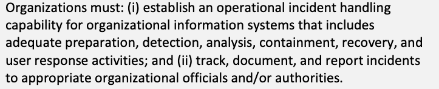
Supply chain compromises may span suppliers, developers, system integrators, external system service providers, and other ICT/OT-related service providers. Enterprises should ensure that their incident response controls address C-SCRM including what, when, and how information about incidents will be reported or shared by, with, or between suppliers, developers, system integrators, external system service providers, other ICT/OT-related service providers, and any relevant interagency bodies. Incident response will help determine whether an incident is related to the supply chain.
サプライチェーン侵害は、供給者、開発者、システムインテグレーター、外部システムサービスプロバイダー、その他のICT/OT関連サービスプロバイダーにまたがる場合がある。企業は、インシデント対応管理策がC-SCRMに対処し、インシデントに関する情報を何を、いつ、どのように報告・共有するか（供給者、開発者、システムインテグレーター、外部システムサービスプロバイダー、その他のICT/OT関連サービスプロバイダー、関連する省庁間組織による、またはそれらとの間の共有を含む）を定めていることを確保すべきである。インシデント対応は、インシデントがサプライチェーンに関係するかどうかの判断に役立つ。
IR-1 POLICY AND PROCEDURES
IR-1 方針および手順
Supplemental C-SCRM Guidance: Enterprises should integrate C-SCRM into incident response policy and procedures, and related C-SCRM Strategy/Implementation Plans and Policies. The policy and procedures must provide direction for how to address supply chain-related incidents and cybersecurity incidents that may complicate or impact the supply chain. Individuals who work within specific mission and system environments need to recognize cybersecurity supply chain-related incidents. The incident response policy should state when and how threats and incidents should be handled, reported, and managed.
C-SCRM補足指針：企業は、C-SCRMをインシデント対応方針・手順ならびに関連するC-SCRM戦略／実施計画・方針に統合すべきである。方針・手順では、サプライチェーン関連インシデント、およびサプライチェーンを複雑化させる、またはサプライチェーンに影響を与える可能性のあるサイバーセキュリティインシデントへの対処方法を指示しなければならない。特定のミッション環境やシステム環境で業務を行う個人は、サイバーセキュリティ・サプライチェーン関連インシデントを認識する必要がある。インシデント対応方針には、脅威とインシデントをいつ、どのように処理、報告、管理するかを記載すべきである。
Additionally, the policy should define when, how, and with whom to communicate to the FASC (Federal Acquisition Security Council) and other stakeholders or partners within the broader supply chain in the event of a cyber threat or incident. Departments and agencies must notify the FASC of supply chain risk information when the FASC requests information relating to a particular source, covered article, or procures or an executive agency has determined that there is a reasonable basis to conclude a substantial supply chain risk associated with a source, covered procurement, or covered article exists. In such instances, the executive agency shall provide the FASC with relevant information concerning the source or covered article, including 1) the supply chain risk information identified through the course of the agency’s activities in furtherance of mitigating, identifying, or managing its supply chain risk and 2) the supply chain risk information regarding covered procurement actions by the agency under the Federal Acquisition Supply Chain Security Act of 2018 (FASCSA) 41 U.S.C. § 4713; and any orders issued by the agency under 41 U.S.C. § 4713.
さらに、方針では、サイバー脅威またはインシデントが発生した場合に、FASC（連邦調達セキュリティ評議会）およびより広範なサプライチェーン内のその他の利害関係者またはパートナーへ、いつ、どのように、誰と連絡するかを定めるべきである。省庁および機関は、FASCが特定の供給元、対象品目もしくは調達に関する情報を要求した場合、または供給元、対象調達もしくは対象品目に関連する重大なサプライチェーンリスクが存在すると結論づける合理的な根拠があると行政機関が判断した場合、サプライチェーンリスク情報をFASCに通知しなければならない。このような場合、行政機関は、供給元または対象品目に関する関連情報をFASCに提供しなければならない。これには、1) サプライチェーンリスクの軽減、特定または管理を進める当該機関の活動の過程で特定されたサプライチェーンリスク情報、ならびに 2) 2018年連邦調達サプライチェーンセキュリティ法（FASCSA）41 U.S.C. § 4713 に基づく当該機関の対象調達措置に関するサプライチェーンリスク情報、および41 U.S.C. § 4713 に基づいて当該機関が発出した命令が含まれる。
Bidirectional communication with supply chain partners should be defined in agreements with suppliers, developers, system integrators, external system service providers, and other ICT/OT-related service providers to inform all involved parties of a supply chain cybersecurity incident. Incident information may also be shared with enterprises such as the Federal Bureau of Investigation (FBI), US CERT (United States Computer Emergency Readiness Team), and the NCCIC (National Cybersecurity and Communications Integration Center) as appropriate. Depending on the severity of the incident, the need for accelerated communications up and down the supply chain may be necessary. Appropriate agreements should be put in place with suppliers, developers, system integrators, external system service providers, and other ICT/OT-related service providers to ensure speed of communication, response, corrective actions, and other related activities. Enterprises should require their prime contractors to implement this control and flow down this requirement to relevant sub-tier contractors.
サプライチェーンのサイバーセキュリティインシデントについて関係者全員に知らせるため、サプライチェーンパートナーとの双方向コミュニケーションを、サプライヤー、開発者、システムインテグレーター、外部システムサービスプロバイダー、その他のICT/OT関連サービスプロバイダーとの合意で定めるべきである。適切な場合、インシデント情報を連邦捜査局（FBI）、US CERT（米国コンピュータ緊急事態対応チーム）、NCCIC（国家サイバーセキュリティ・通信統合センター）などの組織と共有することもできる。インシデントの深刻度によっては、サプライチェーンの上流・下流にわたる迅速な連絡が必要となる場合がある。連絡、対応、是正措置、その他の関連活動を迅速に行えるよう、サプライヤー、開発者、システムインテグレーター、外部システムサービスプロバイダー、その他のICT/OT関連サービスプロバイダーとの適切な合意を整備するべきである。エンタープライズは、元請業者にこの管理策を実装させ、関連する下位階層の請負業者にもこの要件を展開させるべきである。
未レビュー訳In Level 2 and Level 3, procedures and enterprise-specific incident response methods must be in place, training completed (consider including Operations Security [OPSEC] and any appropriate threat briefing in training), and coordinated communication established throughout the supply chain to ensure an efficient and coordinated incident response effort.
レベル2およびレベル3では、手順と企業固有のインシデント対応方法を整備し、訓練を完了し（運用保全［OPSEC］や適切な脅威ブリーフィングを訓練に含めることを検討）、サプライチェーン全体で連携したコミュニケーションを確立し、効率的かつ協調的なインシデント対応活動を確保しなければならない。
Level(s): 1, 2, 3
適用レベル：1、2、3
Control Enhancement(s):
管理策の強化：
(1) POLICY AND PROCEDURES | C-SCRM INCIDENT INFORMATION SHARING
（1）方針および手順 | C-SCRMインシデント情報共有
Enterprises should ensure that their incident response policies and procedures provide guidance on effective information sharing of incidents and other key risk indicators in the supply chain. Guidance should – at a minimum – cover the collection, synthesis, and distribution of incident information from a diverse set of data sources, such as public data repositories, paid subscription services, and in-house threat intelligence teams.
企業は、インシデントおよびサプライチェーン上のその他の主要なリスク指標を効果的に共有するための指針を、インシデント対応方針・手順に含めるべきである。指針では最低限、公開データリポジトリ、有料購読サービス、社内の脅威インテリジェンスチームなど、多様なデータソースからのインシデント情報の収集、統合、配布を扱うべきである。
Enterprises that operate in the public sector should include specific guidance on when and how to communicate with interagency partnerships, such as the FASC (Federal Acquisition Security Council) and other stakeholders or partners within the broader supply chain, in the event of a cyber threat or incident.
公共部門で活動するエンタープライズは、サイバー脅威またはインシデントが発生した場合に、FASC（連邦調達セキュリティ評議会）などの省庁間連携組織や、より広範なサプライチェーン内の関係者・パートナーと、いつ、どのように連絡するかに関する具体的な指針を含めるべきである。
Departments and agencies must notify the FASC of supply chain risk information when:
省庁・機関は、次の場合にサプライチェーンリスク情報をFASCに通知しなければならない。
1) The FASC requests information relating to a particular source or covered article, or
1) FASCが特定の供給元または対象品目に関する情報を要求した場合、または
未レビュー訳2) An executive agency has determined that there is a reasonable basis to conclude that a substantial supply chain risk associated with a source, covered procurement, or covered article exists.
2) 行政機関が、供給元、対象調達または対象品目に関連する重大なサプライチェーンリスクが存在すると結論づける合理的根拠があると判断した場合。
未レビュー訳In such instances, the executive agency shall provide the FASC with relevant information concerning the source or covered article, including:
このような場合、行政機関は供給元または対象品目に関する関連情報をFASCに提供しなければならない。これには次が含まれる。
1) Supply chain risk information identified through the course of the agency’s activities in furtherance of mitigating, identifying, or managing its supply chain risk and
1) サプライチェーンリスクの軽減、特定または管理を推進する機関の活動を通じて特定されたサプライチェーンリスク情報、および
2) Supply chain risk information regarding covered procurement actions by the agency under the Federal Acquisition Supply Chain Security Act of 2018 (FASCSA) 41 U.S.C. § 4713; and any orders issued by the agency under 41 U.S.C. § 4713.
2) 2018年連邦調達サプライチェーンセキュリティ法（FASCSA）41 U.S.C. § 4713に基づく機関の対象調達行為に関するサプライチェーンリスク情報、および同機関が41 U.S.C. § 4713に基づいて発出した命令に関する情報。
Level(s): 1, 2, 3
適用レベル：1、2、3
IR-2 INCIDENT RESPONSE TRAINING
IR-2 インシデント対応訓練
Supplemental C-SCRM Guidance: Enterprises should ensure that critical suppliers are included in incident response training. Enterprises should require their prime contractors to implement this control and flow down this requirement to relevant sub-tier contractors. Departments and agencies should refer to Appendix F to implement this guidance in accordance with Executive Order 14028, Improving the Nation’s Cybersecurity.
補足C-SCRM指針：エンタープライズは、重要なサプライヤーをインシデント対応訓練に含めるべきである。エンタープライズは、元請業者にこの管理策を実装させ、関連する下位階層の請負業者にもこの要件を展開させるべきである。省庁・機関は、大統領令14028『国家のサイバーセキュリティの改善』に従って本指針を実装するため、付録Fを参照するべきである。
未レビュー訳Level(s): 2, 3
適用レベル：2、3
IR-3 INCIDENT RESPONSE TESTING
IR-3 インシデント対応試験
Supplemental C-SCRM Guidance: Enterprises should ensure that critical suppliers are included in and/or provided with incident response testing.
補足C-SCRM指針：エンタープライズは、重要なサプライヤーをインシデント対応試験に含める、および／または試験に参加できるようにするべきである。
Level(s): 2, 3
適用レベル：2、3
IR-4 INCIDENT HANDLING
IR-4 インシデント処理
Supplemental C-SCRM Guidance: Suspected cybersecurity supply chain events that may trigger an organization’s C-SCRM incident handling processes. Refer to Section 2.2 and Appendix G for examples of supply chain risk scenarios that describe supply chain events. C-SCRM-specific supplemental guidance is provided in control enhancements.
C-SCRM補足指針：組織のC-SCRMインシデント処理プロセスを起動させる可能性のある、サイバーセキュリティ・サプライチェーンに関する疑わしい事象。サプライチェーン事象を説明するサプライチェーンリスクシナリオの例は、第2.2節と付録Gを参照すること。C-SCRM固有の補足指針は管理策の強化に記載されている。
Level(s): 1, 2, 3
適用レベル：1、2、3
Control Enhancement(s):
管理策の強化：
(6) INCIDENT HANDLING | INSIDER THREATS
（6）インシデント処理 | 内部脅威
Supplemental C-SCRM Guidance: This enhancement helps limit exposure of the C-SCRM information systems, networks, and processes to insider threats. Enterprises should ensure that insider threat incident handling capabilities account for the potential of insider threats associated with suppliers, developers, system integrators, external system service providers, and other ICT/OT-related service providers’ personnel with access to ICT/OT systems within the authorization boundary.
補足C-SCRM指針：この強化策は、C-SCRM情報システム、ネットワーク、プロセスが内部脅威にさらされるリスクを抑えるのに役立つ。エンタープライズは、認可境界内のICT/OTシステムにアクセスできるサプライヤー、開発者、システムインテグレーター、外部システムサービスプロバイダー、その他のICT/OT関連サービスプロバイダーの職員に関連する内部脅威の可能性を、内部脅威インシデント処理能力で考慮するべきである。
未レビュー訳Level(s): 1, 2, 3
適用レベル：1、2、3
(7) INCIDENT HANDLING | INSIDER THREATS – INTRA-ORGANIZATION
（7）インシデント処理 | 内部脅威 — 組織内
Supplemental C-SCRM Guidance: This enhancement helps limit the exposure of C-SCRM information systems, networks, and processes to insider threats. Enterprises should ensure that insider threat coordination includes suppliers, developers, system integrators, external system service providers, and other ICT/OT-related service providers.
補足C-SCRM指針：この強化策は、C-SCRM情報システム、ネットワーク、プロセスが内部脅威にさらされるリスクを抑えるのに役立つ。エンタープライズは、内部脅威に関する調整に、サプライヤー、開発者、システムインテグレーター、外部システムサービスプロバイダー、その他のICT/OT関連サービスプロバイダーを含めるべきである。
Level(s): 1, 2, 3
適用レベル：1、2、3
(10) INCIDENT HANDLING | SUPPLY CHAIN COORDINATION
（10）インシデント処理 | サプライチェーン調整
Supplemental C-SCRM Guidance: A number of enterprises may be involved in managing incidents and responses for supply chain security. After initially processing the incident and deciding on a course of action (in some cases, the action may be “no action”), the enterprise may need to coordinate with their suppliers, developers, system integrators, external system service providers, other ICT/OT-related service providers, and any relevant interagency bodies to facilitate communications, incident response, root cause, and corrective actions. Enterprises should securely share information through a coordinated set of personnel in key roles to allow for a more comprehensive incident handling approach. Selecting suppliers, developers, system integrators, external system service providers, and other ICT/OT-related service providers with mature capabilities for supporting supply chain cybersecurity incident handling is important for reducing exposure to cybersecurity risks throughout the supply chain. If transparency for incident handling is limited due to the nature of the relationship, define a set of acceptable criteria in the agreement (e.g., contract). A review (and potential revision) of the agreement is recommended, based on the lessons learned from previous incidents. Enterprises should require their prime contractors to implement this control and flow down this requirement to relevant sub-tier contractors.
補足C-SCRM指針：サプライチェーンセキュリティのインシデントと対応の管理には、複数のエンタープライズが関与する場合がある。インシデントを最初に処理し、対応方針（場合によっては「対応しない」こともある）を決定した後、エンタープライズは、連絡、インシデント対応、根本原因分析、是正措置を促進するため、サプライヤー、開発者、システムインテグレーター、外部システムサービスプロバイダー、その他のICT/OT関連サービスプロバイダー、および関連する省庁間組織と調整する必要が生じる場合がある。より包括的なインシデント処理を可能にするため、エンタープライズは主要な役割を担う担当者の連携体制を通じて情報を安全に共有するべきである。サプライチェーン・サイバーセキュリティインシデントの処理を支援する成熟した能力を持つサプライヤー、開発者、システムインテグレーター、外部システムサービスプロバイダー、その他のICT/OT関連サービスプロバイダーを選定することは、サプライチェーン全体のサイバーセキュリティリスクへの曝露を減らすうえで重要である。関係性の性質上、インシデント処理の透明性が限られる場合は、合意（例：契約）に許容基準を定めること。過去のインシデントから得た教訓に基づき、合意をレビューし、必要に応じて改訂することが推奨される。エンタープライズは、元請業者にこの管理策を実装させ、関連する下位階層の請負業者にもこの要件を展開させるべきである。
Level(s): 2
適用レベル：2
(11) INCIDENT HANDLING | INTEGRATED INCIDENT RESPONSE TEAM
（11）インシデント処理 | 統合インシデント対応チーム
Supplemental C-SCRM Guidance: An enterprise should include a forensics team and/or capability as part of an integrated incident response team for supply chain incidents. Where relevant and practical, integrated incident response teams should also include necessary geographical representation as well as suppliers, developers, system integrators, external system service providers, and other ICT/OT-related service providers.
C-SCRM補足指針：企業は、サプライチェーンインシデントに対応する統合インシデント対応チームの一員として、フォレンジックチームおよび／またはフォレンジック能力を含めるべきである。関連性と実用性がある場合、統合インシデント対応チームには、必要な地理的地域の代表者に加え、供給者、開発者、システムインテグレーター、外部システムサービスプロバイダー、その他のICT/OT関連サービスプロバイダーも含めるべきである。
Level(s): 3
適用レベル：3
IR-5 INCIDENT MONITORING
IR-5 インシデント監視
Supplemental C-SCRM Guidance: Enterprises should ensure that agreements with suppliers include requirements to track and document incidents, response decisions, and activities.
補足C-SCRM指針：エンタープライズは、インシデント、対応判断、活動を追跡・文書化する要件をサプライヤーとの合意に含めることを確保するべきである。
Level(s): 2, 3
適用レベル：2、3
IR-6 INCIDENT REPORTING
IR-6 インシデント報告
Supplemental C-SCRM Guidance: C-SCRM-specific supplemental guidance provided in control enhancement IR-6 (3).
補足C-SCRM指針：C-SCRM固有の補足指針は、管理策の強化IR-6 (3)に記載されている。
Level(s): 3
適用レベル：3
Control Enhancement(s):
管理策の強化：
(3) INCIDENT REPORTING | SUPPLY CHAIN COORDINATION
（3）インシデント報告 | サプライチェーン調整
Supplemental C-SCRM Guidance: Communications of security incident information from the enterprise to suppliers, developers, system integrators, external system service providers, and other ICT/OT-related service providers and vice versa require protection. The enterprise should ensure that information is reviewed and approved for sending based on its agreements with suppliers and any relevant interagency bodies. Any escalation of or exception from this reporting should be clearly defined in the agreement. The enterprise should ensure that incident reporting data is adequately protected for transmission and received by approved individuals only. Enterprises should require their prime contractors to implement this control and flow down this requirement to relevant sub-tier contractors.
補足C-SCRM指針：エンタープライズからサプライヤー、開発者、システムインテグレーター、外部システムサービスプロバイダー、その他のICT/OT関連サービスプロバイダーへのセキュリティインシデント情報の伝達、およびその逆方向の伝達は、保護を要する。エンタープライズは、サプライヤーおよび関連する省庁間組織との合意に基づき、送信する情報がレビューされ、承認されていることを確保するべきである。この報告のエスカレーションまたは例外は、合意で明確に定義するべきである。エンタープライズは、インシデント報告データが送信時に適切に保護され、承認された担当者のみが受信することを確保するべきである。エンタープライズは、元請業者にこの管理策を実装させ、関連する下位階層の請負業者にもこの要件を展開させるべきである。
Level(s): 3
適用レベル：3
IR-7 INCIDENT RESPONSE ASSISTANCE
IR-7 インシデント対応支援
Supplemental C-SCRM Guidance: C-SCRM-specific supplemental guidance provided in control enhancement IR-7 (2).
補足C-SCRM指針：C-SCRM固有の補足指針は、管理策の強化IR-7 (2)に記載されている。
Level(s): 3
適用レベル：3
Control Enhancement(s):
管理策の強化：
(1) INCIDENT RESPONSE ASSISTANCE | COORDINATION WITH EXTERNAL PROVIDERS
（1）インシデント対応支援 | 外部プロバイダーとの調整
Supplemental C-SCRM Guidance: The enterprise’s agreements with prime contractors should specify the conditions under which a government-approved or -designated third party would be available or may be required to provide assistance with incident response, as well as the role and responsibility of that third party.
補足C-SCRM指針：元請業者との合意には、政府が承認または指定した第三者がインシデント対応を支援する条件（第三者を利用できる、または支援を求められる条件）に加え、その第三者の役割と責任を明記するべきである。
Level(s): 3
適用レベル：3
IR-8 INCIDENT RESPONSE PLAN
IR-8 インシデント対応計画
Supplemental C-SCRM Guidance: Enterprises should coordinate, develop, and implement an incident response plan that includes information-sharing responsibilities with critical suppliers and, in a federal context, interagency partners and the FASC. Enterprises should require their prime contractors to implement this control and flow down this requirement to relevant sub-tier contractors.
補足C-SCRM指針：エンタープライズは、重要なサプライヤーとの情報共有責任を含み、連邦政府の文脈では省庁間パートナーとFASCも含むインシデント対応計画を調整、策定、実装するべきである。エンタープライズは、元請業者にこの管理策を実装させ、関連する下位階層の請負業者にもこの要件を展開させるべきである。
Related Control(s): IR-10
関連管理策：IR-10
Level(s): 2, 3
適用レベル：2、3
IR-9 INFORMATION SPILLAGE RESPONSE
IR-9 情報流出対応
Supplemental C-SCRM Guidance: The supply chain is vulnerable to information spillage. The enterprise should include supply chain-related information spills in its information spillage response plan. This may require coordination with suppliers, developers, system integrators, external system service providers, and other ICT/OT-related service providers. The details of how this coordination is to be conducted should be included in the agreement (e.g., contract). Enterprises should require their prime contractors to implement this control and flow down this requirement to relevant sub-tier contractors.
補足C-SCRM指針：サプライチェーンは情報流出に対して脆弱である。エンタープライズは、サプライチェーン関連の情報流出を情報流出対応計画に含めるべきである。これには、サプライヤー、開発者、システムインテグレーター、外部システムサービスプロバイダー、その他のICT/OT関連サービスプロバイダーとの調整が必要となる場合がある。この調整の実施方法の詳細は、合意（例：契約）に含めるべきである。エンタープライズは、元請業者にこの管理策を実装させ、関連する下位階層の請負業者にもこの要件を展開させるべきである。
Level(s): 3
適用レベル：3
Related Controls: SA-4
関連管理策：SA-4
A.2.11. FAMILY: MAINTENANCE
A.2.11. ファミリー：保守
[FIPS200] specifies the Maintenance minimum security requirement as follows:
[FIPS200]は、保守に関する最低セキュリティ要件を次のように定めている。
原本PDFの抜粋画像
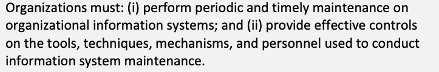
Maintenance is frequently performed by an entity that is separate from the enterprise. As such, maintenance becomes part of the supply chain. Maintenance includes performing updates and replacements. C-SCRM should be applied to maintenance situations, including assessing exposure to cybersecurity risks throughout the supply chain, selecting C-SCRM controls, implementing those controls, and monitoring them for effectiveness.
保守は、エンタープライズとは別の事業体が実施することがよくある。そのため、保守はサプライチェーンの一部となる。保守には更新と交換が含まれる。C-SCRMは、サプライチェーン全体のサイバーセキュリティリスクへの曝露の評価、C-SCRM管理策の選択・実装、有効性の監視を含む保守の状況に適用するべきである。
MA-1 POLICY AND PROCEDURES
MA-1 方針および手順
Supplemental C-SCRM Guidance: Enterprises should ensure that C-SCRM is included in maintenance policies and procedures and any related SCRM Strategy/Implementation Plan, SCRM Policies, and SCRM Plan(s) for all enterprise information systems and networks. With many maintenance contracts, information on mission-, enterprise-, and system-specific objectives and requirements is shared between the enterprise and its suppliers, developers, system integrators, external system service providers, and other ICT/OT-related service providers, allowing for vulnerabilities and opportunities for attack. In many cases, the maintenance of systems is outsourced to a system integrator, and as such, appropriate measures must be taken. Even when maintenance is not outsourced, the supply chain affects upgrades, patches, the frequency of maintenance, replacement parts, and other aspects of system maintenance.
補足C-SCRM指針：エンタープライズは、全情報システム・ネットワークの保守方針・手順、および関連するSCRM戦略／実施計画、SCRM方針、SCRM計画にC-SCRMが含まれることを確保するべきである。多くの保守契約では、ミッション、エンタープライズ、システム固有の目標・要件に関する情報が、エンタープライズとサプライヤー、開発者、システムインテグレーター、外部システムサービスプロバイダー、その他のICT/OT関連サービスプロバイダーとの間で共有され、脆弱性や攻撃機会を生む。多くの場合、システム保守はシステムインテグレーターに外部委託されるため、適切な措置を講じなければならない。保守を外部委託しない場合でも、サプライチェーンはアップグレード、パッチ、保守頻度、交換部品、その他のシステム保守の側面に影響する。
未レビュー訳Maintenance policies should be defined for both the system and the network. The maintenance policy should reflect controls based on a risk assessment (including criticality analysis), such as remote access, the roles and attributes of maintenance personnel who have access, the frequency of updates, duration of the contract, the logistical path and method used for updates or maintenance, and monitoring and audit mechanisms. The maintenance policy should state which tools are explicitly allowed or not allowed. For example, in the case of software maintenance, the contract should state the source code, test cases, and other item accessibility needed to maintain a system or components.
保守方針はシステムとネットワークの両方について定めるべきである。保守方針には、重要度分析を含むリスク評価に基づき、リモートアクセス、アクセス権を持つ保守担当者の役割・属性、更新頻度、契約期間、更新・保守に用いる物流経路と方法、監視・監査の仕組みなどを反映するべきである。保守方針には、明示的に許可するツールと許可しないツールを記載するべきである。たとえばソフトウェア保守の場合、システムまたはコンポーネントの保守に必要なソースコード、テストケース、その他の項目へのアクセスを契約に明記するべきである。
Maintenance policies should be refined and augmented at each level. At Level 1, the policy should explicitly assert that C-SCRM should be applied throughout the SDLC, including maintenance activities. At Level 2, the policy should reflect the mission operation’s needs and critical functions. At Level 3, it should reflect the specific system needs. The requirements in Level 1, such as nonlocal maintenance, should flow to Level 2 and Level 3. For example, when nonlocal maintenance is not allowed by Level 1, it should also not be allowed at Level 2 or Level 3.
保守方針は各階層で具体化し、拡充するべきである。レベル1では、保守活動を含むSDLC全体にC-SCRMを適用することを方針で明示するべきである。レベル2では、ミッション運用のニーズと重要機能を方針に反映するべきである。レベル3では、特定システムのニーズを反映するべきである。非ローカル保守などレベル1の要件は、レベル2とレベル3にも展開するべきである。たとえば、レベル1で非ローカル保守が許可されない場合、レベル2またはレベル3でも許可されるべきではない。
The enterprise should communicate applicable maintenance policy requirements to relevant prime contractors and require that they implement this control and flow down this requirement to relevant sub-tier contractors.
エンタープライズは、適用される保守方針要件を関連する元請業者に伝え、この管理策の実装と関連する下位階層の請負業者への要件展開を求めるべきである。
Level(s): 1, 2, 3
適用レベル：1、2、3
MA-2 CONTROLLED MAINTENANCE
MA-2 管理された保守
Supplemental C-SCRM Guidance:
補足C-SCRM指針：
Control Enhancement(s):
管理策の強化：
(2) CONTROLLED MAINTENANCE |AUTOMATED MAINTENANCE ACTIVITIES
（2）管理された保守 | 保守活動の自動化
Supplemental C-SCRM Guidance: Enterprises should ensure that all automated maintenance activities for supply chain systems and networks are controlled and managed according to the maintenance policy. Examples of automated maintenance activities can include COTS product patch updates, call home features with failure notification feedback, etc. Managing these activities may require establishing staging processes with appropriate supporting mechanisms to provide vetting or filtering as appropriate. Staging processes may be especially important for critical systems and components.
補足C-SCRM指針：エンタープライズは、サプライチェーンのシステムとネットワークに関するすべての自動保守活動が保守方針に従って管理・統制されることを確保するべきである。自動保守活動には、市販既製品のパッチ更新、障害通知を返すコールホーム機能などがある。これらの活動を管理するには、適切な審査またはフィルタリングを可能にする支援機構を備えたステージングプロセスの確立が必要となる場合がある。重要システムとコンポーネントでは、ステージングプロセスが特に重要となる場合がある。
Level(s): 3
適用レベル：3
MA-3 MAINTENANCE TOOLS
MA-3 保守ツール
Supplemental C-SCRM Guidance: Maintenance tools are considered part of the supply chain. They also have a supply chain of their own. C-SCRM should be integrated when the enterprise acquires or upgrades a maintenance tool (e.g., an update to the development environment or testing tool), including during the selection, ordering, storage, and integration of the maintenance tool. The enterprise should perform continuous review and approval of maintenance tools, including those maintenance tools in use by external service providers. The enterprise should also integrate C-SCRM when evaluating replacement parts for maintenance tools. This control may be performed at both Level 2 and Level 3, depending on how an agency handles the acquisition, operations, and oversight of maintenance tools.
補足C-SCRM指針：保守ツールはサプライチェーンの一部とみなされ、それ自体にもサプライチェーンがある。エンタープライズが保守ツールを取得またはアップグレードする際（例：開発環境や試験ツールの更新）には、保守ツールの選定、発注、保管、統合を含め、C-SCRMを統合するべきである。エンタープライズは、外部サービスプロバイダーが使用するものを含め、保守ツールを継続的にレビューし、承認するべきである。また、保守ツールの交換部品を評価する際にもC-SCRMを統合するべきである。機関が保守ツールの調達、運用、監督をどのように行うかに応じて、この管理策はレベル2とレベル3の両方で実施できる。
Level(s): 2, 3
適用レベル：2、3
Control Enhancement(s):
管理策の強化：
(1) MAINTENANCE TOOLS | INSPECT TOOLS
（1）保守ツール | ツールの検査
Supplemental C-SCRM Guidance: The enterprise should deploy acceptance testing to verify that the maintenance tools of the ICT/OT supply chain infrastructure are as expected. Maintenance tools should be authorized with appropriate paperwork, verified as claimed through initial verification, and tested for vulnerabilities, appropriate security configurations, and stated functionality.
補足C-SCRM指針：エンタープライズは、ICT/OTサプライチェーン基盤の保守ツールが想定どおりであることを検証する受入試験を実施するべきである。保守ツールは適切な文書によって認可し、初期検証によって申告内容を確認し、脆弱性、適切なセキュリティ構成、表明された機能について試験するべきである。
Level(s): 3
適用レベル：3
(2) MAINTENANCE TOOLS | INSPECT MEDIA
（2）保守ツール | メディアの検査
Supplemental C-SCRM Guidance: The enterprise should verify that the media containing diagnostic and test programs that suppliers use on the enterprise’s information systems operates as expected and provides only required functions. The use of media from maintenance tools should be consistent with the enterprise’s policies and procedures and pre-approved. Enterprises should also ensure that the functionality does not exceed that which was agreed upon.
補足C-SCRM指針：エンタープライズは、サプライヤーがエンタープライズの情報システム上で使用する診断・試験プログラムを含むメディアが想定どおりに動作し、必要な機能のみを提供することを検証するべきである。保守ツール由来のメディアの使用は、エンタープライズの方針・手順に沿い、事前承認されているべきである。また、その機能が合意された範囲を超えないことも確保するべきである。
Level(s): 3
適用レベル：3
(3) MAINTENANCE TOOLS | PREVENT UNAUTHORIZED REMOVAL
（3）保守ツール | 無許可の持ち出し防止
Supplemental C-SCRM Guidance: The unauthorized removal of systems and network maintenance tools from the supply chain may introduce supply chain risks, such as unauthorized modification, replacement with counterfeit, or malware insertion while the tool is outside of the enterprise’s control. Systems and network maintenance tools can include an integrated development environment (IDE), testing, or vulnerability scanning. For C-SCRM, it is important that enterprises should explicitly authorize, track, and audit any removal of maintenance tools. Once systems and network tools are allowed access to an enterprise/information system, they should remain the property/asset of the system owner and tracked if removed and used elsewhere in the enterprise. ICT maintenance tools either currently in use or in storage should not be allowed to leave the enterprise’s premises until they are properly vetted for removal (i.e., maintenance tool removal should not exceed in scope what was authorized for removal and should be completed in accordance with the enterprise’s established policies and procedures).
補足的なC-SCRM指針：システムおよびネットワークの保守ツールがサプライチェーンから無許可で持ち出されると、ツールがエンタープライズの管理下にない間に無許可の変更、偽造品への置換、マルウェアの挿入などのサプライチェーンリスクが生じる可能性がある。システムおよびネットワークの保守ツールには、統合開発環境（IDE）、テストツール、脆弱性スキャンツールなどが含まれる。C-SCRMでは、保守ツールの持出しを明示的に承認し、追跡し、監査することが重要である。システムおよびネットワークのツールがエンタープライズ／情報システムへのアクセスを許可された後は、システム所有者の所有物／資産であり続けるべきであり、エンタープライズ内の別の場所へ持ち出して使用する場合も追跡すべきである。現在使用中または保管中のICT保守ツールは、持出しについて適切な審査を受けるまで、エンタープライズ施設の外へ持ち出してはならない（すなわち、保守ツールの持出し範囲は承認された範囲を超えてはならず、エンタープライズが定めたポリシーおよび手順に従って完了すべきである）。
未レビュー訳Level(s): 3
適用レベル：3
MA-4 NONLOCAL MAINTENANCE
MA-4 非ローカル保守
Supplemental C-SCRM Guidance: Nonlocal maintenance may be provided by contractor personnel. Appropriate protections should be in place to manage associated risks. Controls applied to internal maintenance personnel are applied to any suppliers, developers, system integrators, external system service providers, and other ICT/OT-related service providers performing a similar maintenance role and enforced through contractual agreements with their external service providers.
補足C-SCRM指針：非ローカル保守は請負業者職員が提供する場合がある。関連リスクを管理するため、適切な保護策を講じるべきである。内部保守職員に適用される管理策は、同様の保守業務を行うサプライヤー、開発者、システムインテグレーター、外部システムサービスプロバイダー、およびその他のICT/OT関連サービスプロバイダーにも適用され、外部サービスプロバイダーとの契約を通じて徹底される。
未レビュー訳Level(s): 2, 3
適用レベル：2、3
Control Enhancement(s):
管理策の強化：
(3) NONLOCAL MAINTENANCE | COMPARABLE SECURITY AND SANITIZATION
(3) 遠隔保守｜同等のセキュリティおよびサニタイズ
Supplemental C-SCRM Guidance: Should suppliers, developers, system integrators, external system service providers, or other ICT/OT-related service providers perform any nonlocal maintenance or diagnostic services on systems or system components, the enterprise should ensure that:
補足C-SCRM指針：サプライヤー、開発者、システムインテグレーター、外部システムサービスプロバイダー、またはその他のICT/OT関連サービスプロバイダーが、システムまたはシステムコンポーネントに対して非ローカル保守または診断サービスを実施する場合、エンタープライズは次の事項を確保すべきである：
•Appropriate measures are taken to verify that the nonlocal environment meets appropriate security levels for maintenance and diagnostics per agreements between the enterprise and vendor;
•エンタープライズとベンダーとの合意に従い、遠隔環境が保守および診断に適したセキュリティレベルを満たすことを確認するため、適切な措置を講じる。
•Appropriate levels of sanitizing are completed to remove any enterprise-specific data residing in components; and
•コンポーネントに残存するエンタープライズ固有のデータを除去するため、適切なレベルのサニタイズを完了する。また、
未レビュー訳•Appropriate diagnostics are completed to ensure that components are sanitized, preventing malicious insertion prior to returning to the enterprise system or supply chain network.
•コンポーネントがサニタイズされていることを確保し、エンタープライズのシステムまたはサプライチェーン・ネットワークへ戻す前の悪意ある挿入を防止するため、適切な診断を完了する。
The enterprise should require its prime contractors to implement this control and flow down this requirement to relevant sub-tier contractors.
エンタープライズは、元請業者に本管理策を実装させ、この要件を関連する下位階層の請負業者に展開させるべきである。
Level(s): 2, 3
適用レベル：2、3
MA-5 MAINTENANCE PERSONNEL
MA-5 保守要員
Supplemental C-SCRM Guidance: Maintenance personnel may be employed by suppliers, developers, system integrators, external system service providers, or other ICT/OT-related service providers. As such, appropriate protections should be in place to manage associated risks. The same controls applied to internal maintenance personnel should be applied to any contractor personnel who performs a similar maintenance role and enforced through contractual agreements with their external service providers.
補足的なC-SCRM指針：保守要員は、供給者、開発者、システムインテグレーター、外部システムサービスプロバイダー、またはその他のICT/OT関連サービスプロバイダーに雇用されている場合がある。そのため、関連リスクを管理するための適切な保護策を講じるべきである。内部保守要員に適用される管理策と同じものを、同様の保守業務を行う請負業者職員にも適用し、外部サービスプロバイダーとの契約を通じて徹底すべきである。
Level(s): 2, 3
適用レベル：2、3
Control Enhancement(s):
管理策の強化：
(4) MAINTENANCE PERSONNEL | FOREIGN NATIONALS
(4) 保守要員｜外国籍者
Supplemental C-SCRM Guidance: The vetting of foreign nationals with access to critical non-national security systems/services must take C-SCRM into account and be extended to all relevant contractor personnel. Enterprises should specify in agreements any restrictions or vetting requirements that pertain to foreign nationals and flow the requirements down to relevant subcontractors.
C-SCRM補足指針：国家安全保障システム以外の重要なシステム／サービスにアクセスする外国籍者の審査では、C-SCRMを考慮しなければならず、関連するすべての請負業者職員にも拡大しなければならない。エンタープライズは、外国籍者に関する制限または審査要件を合意文書に明記し、関連する下請業者にも要件を展開すべきである。
Level(s): 2, 3
適用レベル：2、3
MA-6 TIMELY MAINTENANCE
MA-6 適時の保守
Supplemental C-SCRM Guidance: The enterprise should purchase spare parts, replacement parts, or alternative sources through original equipment manufacturers (OEMs), authorized distributors, or authorized resellers and ensure appropriate lead times. If OEMs are not available, it is preferred to acquire from authorized distributors. If an OEM or an authorized distributor is not available, then it is preferred to acquire from an authorized reseller. Enterprises should obtain verification on whether the distributor or reseller is authorized. Where possible, enterprises should use an authorized distributor/dealer approved list. If the only alternative is to purchase from a non-authorized distributor or secondary market, a risk assessment should be performed, including revisiting the criticality and threat analysis to identify additional risk mitigations to be used. For example, the enterprise should check the supply source for a history of counterfeits, inappropriate practices, or a criminal record. See Sec. 2 for criticality and threat analysis details. The enterprise should maintain a bench stock of critical OEM parts, if feasible, when the acquisition of such parts may not be accomplished within needed timeframes.
補足的なC-SCRM指針：エンタープライズは、予備部品、交換部品、または代替供給元を、相応のリードタイムを確保したうえで、相手先商標製品製造業者（OEM）、認定販売代理店、または認定再販業者を通じて調達すべきである。OEMから調達できない場合は、認定販売代理店からの調達が望ましい。OEMまたは認定販売代理店から調達できない場合は、認定再販業者からの調達が望ましい。販売代理店または再販業者が認定されているかどうかをエンタープライズは確認すべきである。可能な場合、認定販売代理店／ディーラーの承認済みリストを使用すべきである。認定されていない販売代理店または二次市場から購入する以外に選択肢がない場合は、リスク評価を実施し、重要度および脅威分析を再検討して追加のリスク緩和策を特定すべきである。例えば、エンタープライズは供給元について、偽造品、不適切な慣行、または犯罪歴の有無を確認すべきである。重要度および脅威分析の詳細は2節を参照。必要な時間内に部品を調達できない可能性がある場合、実行可能であれば、エンタープライズは重要なOEM部品のベンチストックを維持すべきである。
Level(s): 3
適用レベル：3
MA-7 FIELD MAINTENANCE
MA-7 現地保守
Supplemental C-SCRM Guidance: Enterprises should use vetted or assessed facilities when additional rigor and quality control checks are needed, if at all practical or possible. Vetted or assessed facilities should be on an approved list and have additional controls in place.
補足的なC-SCRM指針：追加の厳格さと品質管理検査が必要な場合、実行可能な限り、エンタープライズは審査済みまたは評価済みの施設を使用すべきである。審査済みまたは評価済みの施設は承認済みリストに掲載され、追加の管理策が講じられているべきである。
Related Control(s): MA-2, MA-4, MA-5
関連管理策：MA-2、MA-4、MA-5
Level(s): 3
適用レベル：3
MA-8 MAINTENANCE MONITORING AND INFORMATION SHARING (NEW)
MA-8 保守の監視および情報共有（新規）
Control: The enterprise monitors the status of systems and components and communicates out-of-bounds and out-of-spec performance to suppliers, developers, system integrators, external system service providers, and other ICT/OT-related service providers. The enterprise should also report this information to the Government-Industry Data Exchange Program (GIDEP).
管理策：エンタープライズは、システムおよびコンポーネントの状態を監視し、規定範囲外または仕様外の性能を供給者、開発者、システムインテグレーター、外部システムサービスプロバイダー、およびその他のICT/OT関連サービスプロバイダーに伝達する。エンタープライズは、この情報を政府・産業界データ交換プログラム（GIDEP）にも報告すべきである。
未レビュー訳Supplemental C-SCRM Guidance: Tracking the failure rates of components provides useful information to the acquirer to help plan for contingencies, alternative sources of supply, and replacements. Failure rates are also useful for monitoring the quality and reliability of systems and components. This information provides useful feedback to suppliers, developers, system integrators, external system service providers, and other ICT/OT-related service providers for corrective action and continuous improvement. In Level 2, agencies should track and communicate the failure rates to suppliers (OEM and/or an authorized distributor). The failure rates and the issues that can indicate failures, including root causes, should be identified by an enterprise’s technical personnel (e.g., developers, administrators, or maintenance engineers) in Level 3 and communicated to Level 2. These individuals are able to verify the problem and identify technical alternatives.
補足的なC-SCRM指針：コンポーネントの故障率を追跡することは、取得者が緊急時対応、代替供給元、および交換品を計画するうえで有用な情報となる。故障率は、システムおよびコンポーネントの品質と信頼性を監視するうえでも有用である。この情報は、是正措置および継続的改善のため、供給者、開発者、システムインテグレーター、外部システムサービスプロバイダー、およびその他のICT/OT関連サービスプロバイダーに有用なフィードバックをもたらす。レベル2では、機関は故障率を追跡し、供給者（OEMおよび／または認定販売代理店）に伝達すべきである。故障の兆候となり得る故障率および問題（根本原因を含む）は、レベル3のエンタープライズ技術職員（例：開発者、管理者、保守エンジニア）が特定し、レベル2に伝達すべきである。これらの職員は問題を検証し、技術的な代替策を特定できる。
Related Control(s): IR-4(10)
関連管理策：IR-4(10)
Level(s): 3
適用レベル：3
A.2.12. FAMILY: MEDIA PROTECTION
A.2.12. ファミリー：メディア保護
[FIPS200] specifies the Media Protection minimum security requirement as follows:
[FIPS200]は、メディア保護の最低限のセキュリティ要件を次のように定めている：
原本PDFの抜粋画像
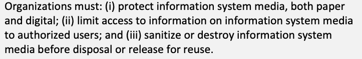
Media itself can be a component traversing the supply chain or containing information about the enterprise’s supply chain. This includes both physical and logical media, such as system documentation on paper or in electronic files, shipping and delivery documentation with acquirer information, memory sticks with software code, or complete routers or servers that include permanent media. The information contained on the media may be sensitive or proprietary information. Additionally, the media is used throughout the SDLC, from concept to disposal. Enterprises should ensure that media protection controls are applied to both an enterprise’s media and the media received from suppliers, developers, system integrators, external system service providers, and other ICT/OT-related service providers throughout the
メディア自体がサプライチェーンを通過するコンポーネントである場合も、エンタープライズのサプライチェーンに関する情報を含む場合もある。これには、紙または電子ファイルのシステム文書、取得者情報を含む出荷・配送文書、ソフトウェアコードを保存したメモリースティック、恒久的な記憶媒体を含むルーターやサーバー全体など、物理メディアと論理メディアの両方が含まれる。メディアに含まれる情報は、機微情報または専有情報である場合がある。またメディアは、構想から廃棄までSDLC全体で使用される。エンタープライズは、自組織のメディアと、供給者、開発者、システムインテグレーター、外部システムサービスプロバイダーおよびその他のICT/OT関連サービスプロバイダーから受領するメディアの双方に、SDLC全体を通じてメディア保護管理策が適用されるようにすべきである。
未レビュー訳SDLC.
原文のみ
MP-1 POLICY AND PROCEDURES
MP-1 ポリシーおよび手順
Supplemental C-SCRM Guidance: Various documents and information on a variety of physical and electronic media are disseminated throughout the supply chain. This information may contain a variety of sensitive information and intellectual property from suppliers, developers, system integrators, external system service providers, and other ICT/OT-related service providers and should be appropriately protected. Media protection policies and procedures should also address supply chain concerns, including media in the enterprise’s supply chain and throughout the SDLC.
補足的なC-SCRM指針：さまざまな物理メディアおよび電子メディア上の各種文書・情報がサプライチェーン全体に流通する。この情報には、供給者、開発者、システムインテグレーター、外部システムサービスプロバイダー、およびその他のICT/OT関連サービスプロバイダーの多様な機微情報や知的財産が含まれる場合があり、適切に保護すべきである。メディア保護のポリシーおよび手順では、エンタープライズのサプライチェーン内およびSDLC全体にわたるメディアを含め、サプライチェーン上の懸念にも対処すべきである。
未レビュー訳Level(s): 1, 2
適用レベル：1、2
MP-4 MEDIA STORAGE
MP-4 メディア保管
Supplemental C-SCRM Guidance: Media storage controls should include C-SCRM activities. Enterprises should specify and include in agreements (e.g., contracting language) media storage requirements (e.g., encryption) for their suppliers, developers, system integrators, external system service providers, and other ICT/OT-related service providers. The enterprise should require its prime contractors to implement this control and flow down this requirement to relevant sub-tier contractors.
補足的なC-SCRM指針：メディア保管の管理策にはC-SCRM活動を含めるべきである。エンタープライズは、供給者、開発者、システムインテグレーター、外部システムサービスプロバイダー、およびその他のICT/OT関連サービスプロバイダーに対するメディア保管要件（例：暗号化）を指定し、契約文言などの合意に含めるべきである。エンタープライズは、元請業者に本管理策を実装させ、この要件を関連する下位請負業者に展開させるべきである。
Level(s): 1, 2
適用レベル：1、2
MP-5 MEDIA TRANSPORT
MP-5 メディア輸送
Supplemental C-SCRM Guidance: The enterprise should incorporate C-SCRM activities when media is transported by enterprise or non-enterprise personnel. Some of the techniques to protect media during transport and storage include cryptographic techniques and approved custodian services.
補足的なC-SCRM指針：エンタープライズ職員またはエンタープライズ外の職員がメディアを輸送する際、エンタープライズはC-SCRM活動を組み込むべきである。輸送および保管中にメディアを保護する技法には、暗号技術や承認済み保管サービスなどがある。
Level(s): 1, 2
適用レベル：1、2
MP-6 MEDIA SANITIZATION
MP-6 メディアのサニタイズ
Supplemental C-SCRM Guidance: Enterprises should specify and include in agreements (e.g., contracting language) media sanitization policies for their suppliers, developers, system integrators, external system service providers, and other ICT/OT-related service providers. Media is used throughout the SDLC. Media traversing or residing in the supply chain may originate anywhere, including from suppliers, developers, system integrators, external system service providers, and other ICT/OT-related service providers. It can be new, refurbished, or reused. Media sanitization is critical to ensuring that information is removed before the media is used, reused, or discarded. For media that contains privacy or other sensitive information (e.g., CUI), the enterprise should require its prime contractors to implement this control and flow down this requirement to relevant sub-tier contractors.
補足的なC-SCRM指針：エンタープライズは、供給者、開発者、システムインテグレーター、外部システムサービスプロバイダー、およびその他のICT/OT関連サービスプロバイダーに対するメディア・サニタイズのポリシーを指定し、契約文言などの合意に含めるべきである。メディアはSDLC全体で使用される。サプライチェーンを通過する、またはサプライチェーン内に存在するメディアは、供給者、開発者、システムインテグレーター、外部システムサービスプロバイダー、およびその他のICT/OT関連サービスプロバイダーを含め、あらゆる供給元から入手される場合がある。新品、中古再生品、または再利用品の場合がある。メディアの使用、再使用、または廃棄の前に情報を除去するには、メディアのサニタイズが不可欠である。プライバシー情報またはその他の機微情報（例：CUI）を含むメディアについて、エンタープライズは元請業者に本管理策を実装させ、この要件を関連する下位請負業者に展開させるべきである。
未レビュー訳Level(s): 2, 3
適用レベル：2、3
Related Controls: MP-6(1), MP-6(2), MP-6(3), MP-6(7), MP-6(8)
関連管理策：MP-6(1)、MP-6(2)、MP-6(3)、MP-6(7)、MP-6(8)
A.2.13. FAMILY: PHYSICAL AND ENVIRONMENTAL PROTECTION
A.2.13. ファミリー：物理的および環境的保護
[FIPS200] specifies the Physical and Environmental Protection minimum security requirement as follows:
[FIPS200]は、物理的および環境的保護の最低限のセキュリティ要件を次のように定めている：
原本PDFの抜粋画像
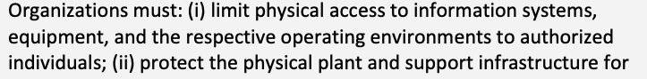
原本PDFの抜粋画像
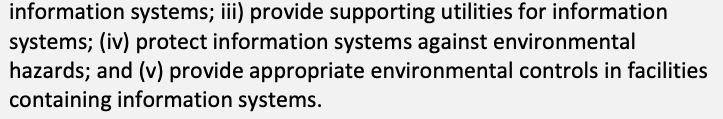
Supply chains span the physical and logical world. Physical factors can include weather and road conditions that may impact the transportation of cyber components (or devices) from one location to another between persons or enterprises within a supply chain. If not properly addressed as a part of the C-SCRM risk management processes, physical and environmental risks may have negative impacts on the enterprise’s ability to receive critical components in a timely manner, which may in turn impact their ability to perform mission operations. Enterprises should require the implementation of appropriate physical and environmental controls within their supply chain.
サプライチェーンは物理的世界と論理的世界にまたがる。物理的要因には、サプライチェーン内の個人またはエンタープライズ間で、サイバー関連のコンポーネント（またはデバイス）をある場所から別の場所へ輸送する際に影響を及ぼす可能性のある天候や道路状況などが含まれる。C-SCRMのリスク管理プロセスの一環として適切に対処しなければ、物理的および環境的リスクは、重要なコンポーネントを適時に受領するエンタープライズの能力に悪影響を及ぼし、ひいてはミッション運用を遂行する能力にも影響する可能性がある。エンタープライズは、サプライチェーン内に適切な物理的および環境的管理策を実装するよう要求すべきである。
PE-1 POLICY AND PROCEDURES
PE-1 ポリシーおよび手順
Supplemental C-SCRM Guidance: The enterprise should integrate C-SCRM practices and requirements into their own physical and environmental protection policy and procedures. The degree of protection should be commensurate with the degree of integration. The physical and environmental protection policy should ensure that the physical interfaces of the supply chain have adequate protection and audit for such protection.
補足的なC-SCRM指針：エンタープライズは、自組織の物理的および環境的保護のポリシーと手順にC-SCRMの実践および要件を統合すべきである。保護の程度は統合の程度に見合うべきである。物理的および環境的保護のポリシーでは、サプライチェーンの物理的インターフェースが十分に保護され、その保護状況が監査されるようにすべきである。
Level(s): 1, 2, 3
適用レベル：1、2、3
PE-2 PHYSICAL ACCESS AUTHORIZATIONS
PE-2 物理アクセス認可
Supplemental C-SCRM Guidance: Enterprises should ensure that only authorized individuals with a need for physical access have access to information, systems, or data centers (e.g., sensitive or classified). Such authorizations should specify what the individual is permitted or not permitted to do with regard to their physical access (e.g., view, alter/configure, insert something, connect something, remove, etc.). Agreements should address physical access authorization requirements, and the enterprise should require its prime contractors to implement this control and flow down this requirement to relevant sub-tier contractors. Authorization for non-federal employees should follow an approved protocol, which includes documentation of the authorization and specifies any prerequisites or constraints that pertain to such authorization (e.g., individual must be escorted by a federal employee, individual must be badged, individual is permitted physical access during normal business hours, etc.).
補足的なC-SCRM指針：物理的アクセスを必要とする認可済みの個人だけが、情報、システム、またはデータセンター（例：機微情報または機密情報を扱うもの）にアクセスできるよう、エンタープライズは確保すべきである。そのような認可では、物理的アクセスに関して個人に許可される行為と許可されない行為（例：閲覧、変更／設定、物品の挿入、接続、撤去など）を明記すべきである。合意文書で物理アクセス認可要件に対処し、エンタープライズは元請業者に本管理策を実装させ、この要件を関連する下位請負業者に展開させるべきである。連邦政府職員以外の者への認可は、認可の文書化、および認可に関する前提条件または制約（例：連邦政府職員の同行が必要、バッジの着用が必要、通常の営業時間中に限り物理アクセスを許可など）の明示を含む承認済み手順に従うべきである。
Level(s): 2, 3
適用レベル：2、3
Control Enhancement(s):
管理策の強化：
(1) PHYSICAL ACCESS AUTHORIZATIONS | ACCESS BY POSITION OR ROLE
(1) 物理アクセス認可｜職位または役割によるアクセス
Supplemental C-SCRM Guidance: Role-based authorizations for physical access should include federal (e.g., agency/department employees) and non-federal employees (e.g., suppliers, developers, system integrators, external system service providers, and other ICT/OT-related service providers). When role-based authorization is used, the type and level of access allowed for that role or position must be pre-established and documented.
補足的なC-SCRM指針：物理アクセスに対する役割ベースの認可には、連邦政府職員（例：機関／省庁の職員）と連邦政府職員以外（例：供給者、開発者、システムインテグレーター、外部システムサービスプロバイダー、およびその他のICT/OT関連サービスプロバイダー）の双方を含めるべきである。役割ベースの認可を使用する場合、その役割または職位に許可されるアクセスの種類とレベルを事前に定め、文書化しなければならない。
未レビュー訳Level(s): 2, 3
適用レベル：2、3
PE-3 PHYSICAL ACCESS CONTROL
PE-3 物理アクセス制御
Supplemental C-SCRM Guidance: Physical access control should include individuals and enterprises engaged in the enterprise’s supply chain. A vetting process based on enterprise-defined requirements and policy should be in place prior to granting access to the supply chain infrastructure and any relevant elements. Access establishment, maintenance, and revocation processes should meet enterprise access control policy rigor. The speed of revocation for suppliers, developers, system integrators, external system service providers, and other ICT/OT-related service providers who need access to physical facilities and data centers – either enterprise-owned or external service provider-owned – should be managed in accordance with the activities performed in their contracts. Prompt revocation is critical when either individual or enterprise need no longer exists.
補足的なC-SCRM指針：物理アクセス制御には、エンタープライズのサプライチェーンに関与する個人およびエンタープライズを含めるべきである。サプライチェーン基盤および関連要素へのアクセスを許可する前に、エンタープライズが定めた要件とポリシーに基づく審査プロセスを整備すべきである。アクセスの設定、維持、および取消しのプロセスは、エンタープライズのアクセス制御ポリシーが定める厳格さを満たすべきである。エンタープライズ所有または外部サービスプロバイダー所有の物理施設およびデータセンターへのアクセスを必要とする供給者、開発者、システムインテグレーター、外部システムサービスプロバイダー、およびその他のICT/OT関連サービスプロバイダーについて、アクセス取消しの迅速さは、契約で定めた活動に従って管理すべきである。個人またはエンタープライズのいずれについても、アクセスの必要がなくなった場合は速やかな取消しが不可欠である。
Level(s): 2, 3
適用レベル：2、3
Control Enhancement(s):
管理策の強化：
(1) PHYSICAL ACCESS CONTROL | SYSTEM ACCESS
(1) 物理アクセス制御｜システムアクセス
Supplemental C-SCRM Guidance: Physical access controls should be extended to contractor personnel. Any contractor resources that provide services support with physical access to the supply chain infrastructure and any relevant elements should adhere to access controls. Policies and procedures should be consistent with those applied to employee personnel with similar levels of physical access.
補足的なC-SCRM指針：物理アクセス制御を請負業者職員にも拡大すべきである。サプライチェーン基盤および関連要素への物理アクセスを伴うサービスを提供する請負業者のリソースは、アクセス制御を遵守すべきである。ポリシーおよび手順は、同程度の物理アクセス権を持つ従業員に適用されるものと整合させるべきである。
Level(s): 2, 3
適用レベル：2、3
(2) PHYSICAL ACCESS CONTROL | FACILITY AND SYSTEMS
(2) 物理アクセス制御｜施設およびシステム
Supplemental C-SCRM Guidance: When determining the extent, frequency, and/or randomness of security checks of facilities, enterprises should account for exfiltration risks that result from covert listening devices. Such devices may include wiretaps, roving bugs, cell site simulators, and other eavesdropping technologies that can transfer sensitive information out of the enterprise.
補足的なC-SCRM指針：施設に対するセキュリティ検査の範囲、頻度、および／または無作為性を決定する際、エンタープライズは隠し聴取装置による情報流出リスクを考慮すべきである。このような装置には、盗聴器、移動型盗聴器、携帯電話基地局シミュレーター、および機微情報をエンタープライズ外へ転送できるその他の盗聴技術が含まれる場合がある。
Level(s): 2, 3
適用レベル：2、3
(5) PHYSICAL ACCESS CONTROL | TAMPER PROTECTION
(5) 物理アクセス制御｜改ざん防止
Supplemental C-SCRM Guidance: Tamper protection is critical for reducing cybersecurity risk in products. The enterprise should implement validated tamper protection techniques within the supply chain. For critical products, the enterprise should require and assess whether and to what extent a supplier has implemented tamper protection mechanisms. The assessment may also include whether and how such mechanisms are required and applied by the supplier’s upstream supply chain entities.
補足的なC-SCRM指針：製品のサイバーセキュリティリスクを低減するうえで、改ざん防止は不可欠である。エンタープライズは、検証済みの改ざん防止技法をサプライチェーン内で実装すべきである。重要製品については、供給者が改ざん防止の仕組みを実装しているか、またその程度を供給者に確認し、評価すべきである。評価には、そのような仕組みが供給者の上流サプライチェーン主体によって要求・適用されているか、およびどのように適用されているかも含めてもよい。
未レビュー訳Level(s): 2, 3
適用レベル：2、3
PE-6 MONITORING PHYSICAL ACCESS
PE-6 物理アクセスの監視
Supplemental C-SCRM Guidance: Individuals who physically access the enterprise or external service provider’s facilities, data centers, information, or physical asset(s) – including via the supply chain – may be employed by the enterprise’s employees, on-site or remotely located contractors, visitors, other third parties (e.g., maintenance personnel under contract with the contractor enterprise), or an individual affiliated with an enterprise in the upstream supply chain. The enterprise should monitor these individuals’ activities to reduce cybersecurity risks throughout the supply chain or require monitoring in agreements.
補足的なC-SCRM指針：エンタープライズまたは外部サービスプロバイダーの施設、データセンター、情報、もしくは物理資産に物理的にアクセスする個人は、サプライチェーン経由の場合を含め、エンタープライズの従業員、現地または遠隔地の請負業者、訪問者、その他の第三者（例：請負業者企業と契約する保守要員）、または上流サプライチェーンのエンタープライズに所属する個人である場合がある。サプライチェーン全体のサイバーセキュリティリスクを低減するため、エンタープライズはこれらの個人の活動を監視するか、合意文書で監視を要求すべきである。
Level(s): 1, 2, 3
適用レベル：1、2、3
PE-16 DELIVERY AND REMOVAL
PE-16 搬入および搬出
Supplemental C-SCRM Guidance: This control enhancement reduces cybersecurity risks that arise during the physical delivery and removal of hardware components from the enterprise’s information systems or supply chain. This includes transportation security, the validation of delivered components, and the verification of sanitization procedures. Risk-based considerations include component mission criticality as well as the development, operational, or maintenance environment (e.g., classified integration and test laboratory).
補足的なC-SCRM指針：本管理策の強化は、エンタープライズの情報システムまたはサプライチェーンからハードウェアコンポーネントを物理的に搬入・搬出する際に生じるサイバーセキュリティリスクを低減する。これには、輸送セキュリティ、搬入されたコンポーネントの検証、サニタイズ手順の確認が含まれる。リスクベースの考慮事項には、コンポーネントのミッション上の重要度に加え、開発、運用、または保守環境（例：機密扱いの統合・試験ラボ）が含まれる。
Level(s): 3
適用レベル：3
PE-17 ALTERNATIVE WORK SITE
PE-17 代替作業場所
Supplemental C-SCRM Guidance: The enterprise should incorporate protections to guard against cybersecurity risks associated with enterprise employees or contractor personnel within or accessing the supply chain infrastructure using alternative work sites. This can include third-party personnel who may also work from alternative worksites.
C-SCRM補足指針：エンタープライズは、代替作業場所を利用してサプライチェーン基盤内にいる、またはそれにアクセスするエンタープライズ従業員もしくは請負業者職員に関連するサイバーセキュリティリスクを防ぐ保護策を組み込むべきである。これには、代替作業場所から勤務する場合がある第三者職員も含まれ得る。
Level(s): 3
適用レベル：3
PE-18 LOCATION OF SYSTEM COMPONENTS
PE-18 システムコンポーネントの所在地
Supplemental C-SCRM Guidance: Physical and environmental hazards or disruptions have an impact on the availability of products that are or will be acquired and physically transported to the enterprise’s locations. For example, enterprises should incorporate the manufacturing, warehousing, or the distribution location of information system components that are critical for agency operations when planning for alternative suppliers for these components.
補足的なC-SCRM指針：物理的および環境上の危険や混乱は、取得済みまたは今後取得する製品をエンタープライズの所在地へ物理的に輸送する際の可用性に影響する。例えば、機関の運用に不可欠な情報システムコンポーネントの代替供給者を計画する際、エンタープライズは製造、倉庫保管、または流通の所在地を考慮すべきである。
Level(s): 1, 2, 3
適用レベル：1、2、3
Related Controls: CP-6, CP-7
関連管理策：CP-6、CP-7
PE-20 ASSET MONITORING AND TRACKING
PE-20 資産の監視および追跡
Supplemental C-SCRM Guidance: The enterprise should, whenever possible and practical, use asset location technologies to track systems and components transported between entities across the supply chain, between protected areas, or in storage awaiting implementation, testing, maintenance, or disposal. Methods include RFID, digital signatures, or blockchains. These technologies help protect against:
補足的なC-SCRM指針：可能かつ実行可能な場合、エンタープライズは資産位置特定技術を用いて、サプライチェーンを横断して主体間で輸送されるシステムおよびコンポーネント、保護区域間を移動するもの、または実装、テスト、保守、廃棄を待って保管中のものを追跡すべきである。方法にはRFID、デジタル署名、ブロックチェーンなどが含まれる。これらの技術は、次の事態からの保護に役立つ：
未レビュー訳a. Diverting the system or component for counterfeit replacement;
a. システムまたはコンポーネントが迂回され、偽造品に置き換えられること。
未レビュー訳b. The loss of confidentiality, integrity, or availability of the system or component function and data (including data contained within the component and data about the component); and
b. システムまたはコンポーネントの機能およびデータ（コンポーネント内のデータならびにコンポーネントに関するデータを含む）の機密性、完全性、または可用性が失われること。ならびに
未レビュー訳c. Interrupting supply chain and logistics processes for critical components. In addition to providing protection capabilities, asset location technologies also help gather data that can be used for incident management.
c. 重要なコンポーネントのサプライチェーンおよび物流プロセスが中断されること。資産位置特定技術は保護機能を提供するだけでなく、インシデント管理に利用できるデータの収集にも役立つ。
未レビュー訳Level(s): 2, 3
適用レベル：2、3
PE-23 FACILITY LOCATION
PE-23 施設の所在地
Supplemental C-SCRM Guidance: Enterprises should incorporate the facility location (e.g., data centers) when assessing risks associated with suppliers. Factors may include geographic location (e.g., Continental United States [CONUS], Outside the Continental United States [OCONUS]), physical protections in place at one or more of the relevant facilities, local management and control of such facilities, environmental hazard potential (e.g., located in a high-risk seismic zone), and alternative facility locations. Enterprises should also assess whether the location of a manufacturing or distribution center could be influenced by geopolitical, economic, or other factors. For critical vendors or products, enterprises should specifically address any requirements or restrictions concerning the facility locations of the vendors (or their upstream supply chain providers) in contracts and flow down this requirement to relevant sub-level contractors.
C-SCRM補足指針：エンタープライズは、供給者に関連するリスクを評価する際、施設の所在地（例：データセンター）を考慮すべきである。要因には、地理的位置（例：米国本土［CONUS］、米国本土外［OCONUS］）、該当施設の1か所以上に講じられた物理的保護、施設の現地での管理・統制、環境上の危険の可能性（例：高リスクの地震帯に位置すること）、および代替施設の所在地が含まれる場合がある。エンタープライズは、製造または流通センターの所在地が地政学的、経済的、またはその他の要因に左右される可能性があるかも評価すべきである。重要なベンダーまたは製品については、ベンダー（またはその上流サプライチェーン提供者）の施設所在地に関する要件または制限を契約で具体的に定め、この要件を関連する下位階層の請負業者に展開すべきである。
Level(s): 2, 3
適用レベル：2、3
Related Controls: SA-9(8)
関連管理策：SA-9(8)
A.2.14. FAMILY: PLANNING
A.2.14. ファミリー：計画
[FIPS200] specifies the Planning minimum security requirement as follows:
[FIPS200]は、計画の最低限のセキュリティ要件を次のように定めている。
原本PDFの抜粋画像
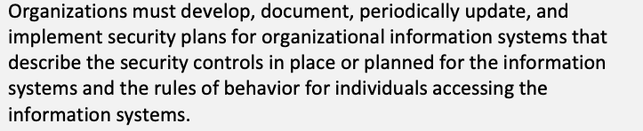
C-SCRM should influence security planning, including activities such as security architecture, coordination with other enterprise entities, and development of System Security Plans. When acquiring products and services from suppliers, developers, system integrators, external system service providers, and other ICT/OT-related service providers, enterprises may be sharing facilities with those enterprises, have employees of these entities on the enterprise’s premises, or use information systems that belong to those entities. In these and other applicable situations, enterprises should coordinate their security planning activities with these entities to ensure appropriate protection of an enterprise’s processes, information systems, and systems and components traversing the supply chain. When establishing security architectures, enterprises should provide for component and supplier diversity to manage cybersecurity risks throughout the supply chain to include suppliers going out of business or stopping the production of specific components. Finally, as stated in Sec. 2 and Appendix C, enterprises should integrate C-SCRM controls into their Risk Response Frameworks (Level 1 and Level 2) as well as their C-SCRM Plans (Level 3).
C-SCRMは、セキュリティアーキテクチャ、企業内の他の主体との調整、システムセキュリティ計画の策定などの活動を含め、セキュリティ計画に影響を与えるべきである。供給者、開発者、システムインテグレーター、外部システムサービスプロバイダー、その他のICT/OT関連サービスプロバイダーから製品・サービスを取得する際、企業はそれらの事業者と施設を共有したり、事業者の従業員を企業施設内に置いたり、事業者所有の情報システムを使用したりする場合がある。こうした状況やその他該当する状況では、企業のプロセス、情報システム、サプライチェーンを通過するシステム・コンポーネントを適切に保護するため、企業はこれらの事業者とセキュリティ計画活動を調整すべきである。セキュリティアーキテクチャの確立に際し、企業は、供給者の廃業や特定コンポーネントの生産停止を含め、サプライチェーン全体のサイバーセキュリティリスクを管理するため、コンポーネントと供給者の多様性を確保すべきである。最後に、第2節および付録Cに記載のとおり、企業はC-SCRM管理策をリスク対応枠組み（レベル1およびレベル2）ならびにC-SCRM計画（レベル3）に統合すべきである。
PL-1 POLICY AND PROCEDURES
PL-1 方針および手順
Supplemental C-SCRM Guidance: The security planning policy and procedures should integrate C-SCRM. This includes creating, disseminating, and updating the security policy, operational policy, and procedures for C-SCRM to shape acquisition or development requirements and the follow-on implementation, operations, and maintenance of systems, system interfaces, and network connections. The C-SCRM policy and procedures provide inputs into and take guidance from the C-SCRM Strategy and Implementation Plan at Level 1 and the System Security Plan and C-SCRM plan at Level 3. In Level 3, ensure that the full SDLC is covered from the C-SCRM perspective.
C-SCRM補足指針：セキュリティ計画の方針および手順にC-SCRMを統合すべきである。これには、システム、システムインターフェース、ネットワーク接続の取得・開発要件と、その後の実装、運用、保守を方向付けるため、C-SCRMのためのセキュリティ方針、運用方針、手順を作成、周知、更新することが含まれる。C-SCRM方針・手順は、レベル1のC-SCRM戦略・実施計画、ならびにレベル3のシステムセキュリティ計画とC-SCRM計画への入力となるとともに、それらから指針を得る。レベル3では、C-SCRMの観点からSDLC全体が網羅されるようにすること。
Level(s): 2
レベル：2
Related Controls: PL-2, PM-30
関連管理策：PL-2、PM-30
PL-2 SYSTEM SECURITY AND PRIVACY PLANS
PL-2 システムセキュリティ・プライバシー計画
Supplemental C-SCRM Guidance: The system security plan (SSP) should integrate C-SCRM. The enterprise may choose to develop a stand-alone C-SCRM plan for an individual system or integrate SCRM controls into their SSP. The system security plan and/or system-level C-SCRM plan provide inputs into and take guidance from the C-SCRM Strategy and Implementation Plan at Level 1 and the C-SCRM policy at Level 1 and Level 2. In addition to internal coordination, the enterprise should coordinate with suppliers, developers, system integrators, external system service providers, and other ICT/OT-related service providers to develop and maintain their SSPs. For example, building and operating a system requires a significant coordination and collaboration between the enterprise and system integrator personnel. Such coordination and collaboration should be addressed in the system security plan or stand-alone C-SCRM plan. These plans should also consider that suppliers or external service providers may not be able to customize to the acquirer’s requirements. It is recommended that suppliers, developers, system integrators, external system service providers, and other ICT/OT-related service providers also develop C-SCRM plans for non-federal (i.e., contractor) systems that are processing federal agency information and flow down this requirement to relevant sub-level contractors.
C-SCRM補足指針：システムセキュリティ計画（SSP）にC-SCRMを統合すべきである。企業は個別システム向けの独立したC-SCRM計画を作成するか、SCRM管理策をSSPに統合することができる。SSPおよび／またはシステムレベルのC-SCRM計画は、レベル1のC-SCRM戦略・実施計画と、レベル1・2のC-SCRM方針から指針を得るとともに、それらへの入力となる。社内調整に加えて、企業は供給者、開発者、システムインテグレーター、外部システムサービスプロバイダー、その他のICT/OT関連サービスプロバイダーと調整し、SSPを策定・維持すべきである。例えば、システムの構築・運用には、企業とシステムインテグレーター職員との大幅な調整・連携が必要である。こうした調整・連携をSSPまたは独立したC-SCRM計画で扱うべきである。また、供給者や外部サービスプロバイダーが取得者の要件に合わせてカスタマイズできない場合があることも計画で考慮すべきである。供給者、開発者、システムインテグレーター、外部システムサービスプロバイダー、その他のICT/OT関連サービスプロバイダーも、連邦機関の情報を処理する非連邦（すなわち請負業者）システムについてC-SCRM計画を作成し、この要件を関連する下位階層の請負業者に展開することが推奨される。
未レビュー訳Section 2, Appendix C, and Appendix D provide guidance on C-SCRM strategies, policies, and plans. Controls in this publication (NIST SP 800-161, Rev. 1) should be used for the C-SCRM portion of the SSP.
第2節、付録Cおよび付録Dに、C-SCRM戦略、方針、計画に関する指針を示す。本刊行物（NIST SP 800-161 Rev. 1）の管理策は、SSPのC-SCRM部分に使用すべきである。
Level(s): 3
レベル：3
Related Controls: PM-30
関連管理策：PM-30
PL-4 RULES OF BEHAVIOR
PL-4 行動規則
Supplemental C-SCRM Guidance: The rules of behavior apply to contractor personnel and internal agency personnel. Contractor enterprises are responsible for ensuring that their employees follow applicable rules of behavior. Individual contractors should not be granted access to agency systems or data until they have acknowledged and demonstrated compliance with this control. Failure to meet this control can result in the removal of access for such individuals.
C-SCRM補足指針：行動規則は請負業者の職員と機関内部の職員に適用される。請負業者である企業は、自社従業員が適用される行動規則に従うことを確保する責任がある。個々の請負業者には、本管理策を了承し、遵守を実証するまで機関のシステムやデータへのアクセスを許可すべきではない。本管理策を満たさない場合、当該個人のアクセスが取り消されることがある。
Level(s): 2, 3
レベル：2、3
PL-7 CONCEPT OF OPERATIONS
PL-7 運用概念
Supplemental C-SCRM Guidance: The concept of operations (CONOPS) should describe how the enterprise intends to operate the system from the perspective of C-SCRM. It should integrate C-SCRM and be managed and updated throughout the applicable system’s SDLC to address cybersecurity risks throughout the supply chain.
C-SCRM補足指針：運用概念（CONOPS）には、C-SCRMの観点から企業がシステムをどのように運用する予定かを記載すべきである。サプライチェーン全体のサイバーセキュリティリスクに対処するため、該当するシステムのSDLC全体を通じてC-SCRMを統合し、運用概念を管理・更新すべきである。
Level(s): 3
レベル：3
PL-8 SECURITY AND PRIVACY ARCHITECTURES
PL-8 セキュリティ・プライバシーアーキテクチャ
Supplemental C-SCRM Guidance: Security and privacy architecture defines and directs the implementation of security and privacy-protection methods, mechanisms, and capabilities to the underlying systems and networks, as well as the information system that is being created. Security architecture is fundamental to C-SCRM because it helps to ensure that security is built-in throughout the SDLC. Enterprises should consider implementing zero-trust architectures and should ensure that the security architecture is well understood by system developers/engineers and system security engineers. This control applies to both federal agency and non-federal agency employees.
C-SCRM補足指針：セキュリティ・プライバシーアーキテクチャは、基盤となるシステムとネットワーク、および構築対象の情報システムに対するセキュリティ・プライバシー保護の手法、機構、能力を定義し、その実装を方向付ける。SDLC全体にセキュリティを組み込むことを確実にするうえで、セキュリティアーキテクチャはC-SCRMの基礎となる。企業はゼロトラスト・アーキテクチャの実装を検討すべきであり、セキュリティアーキテクチャをシステム開発者・エンジニアおよびシステムセキュリティエンジニアが十分に理解していることを確実にすべきである。本管理策は連邦機関および非連邦機関の職員の双方に適用される。
Level(s): 2, 3
レベル：2、3
Control Enhancement(s):
管理策の強化：
(2) SECURITY AND PRIVACY ARCHITECTURES | SUPPLIER DIVERSITY
(2) セキュリティ・プライバシーアーキテクチャ | 供給者の多様性
Supplemental C-SCRM Guidance: Supplier diversity provides options for addressing information security and supply chain concerns. The enterprise should incorporate this control as it relates to suppliers, developers, system integrators, external system service providers, and other ICT/OT-related service providers.
C-SCRM補足指針：供給者の多様性は、情報セキュリティやサプライチェーン上の懸念に対処する選択肢を提供する。企業は、供給者、開発者、システムインテグレーター、外部システムサービスプロバイダー、その他のICT/OT関連サービスプロバイダーに関する本管理策を取り入れるべきである。
The enterprise should plan for the potential replacement of suppliers, developers, system integrators, external system service providers, and other ICT/OT-related service providers in case one is no longer able to meet the enterprise’s requirements (e.g., company goes out of business or does not meet contractual obligations). Where applicable, contracts should be worded so that different parts can be replaced with a similar model with similar prices from a different manufacturer if certain events occur (e.g., obsolescence, poor performance, production issues, etc.).
企業は、供給者、開発者、システムインテグレーター、外部システムサービスプロバイダー、その他のICT/OT関連サービスプロバイダーが企業の要件を満たせなくなった場合（例：廃業、契約上の義務不履行）に備えて、代替の可能性を計画すべきである。該当する場合、陳腐化、性能不良、生産上の問題などの特定の事象が発生した際に、異なる製造業者の類似モデル・類似価格の製品で特定部分を置き換えられるよう、契約文言を定めるべきである。
Incorporate supplier diversity for off-the-shelf (commercial or government) components during acquisition security assessments. The evaluation of alternatives should include, for example, feature parity, interoperability, commodity components, and the ability to provide multiple delivery paths. For example, having the source code, build scripts, and tests for a software component could enable an enterprise to assign someone else to maintain it, if necessary.
取得セキュリティ評価では、市販（商用または政府調達）コンポーネントに供給者の多様性を取り入れること。代替案の評価には、例えば機能の同等性、相互運用性、汎用コンポーネント、複数の配送経路を提供する能力を含めるべきである。例えば、ソフトウェアコンポーネントのソースコード、ビルドスクリプト、テストを保有していれば、必要に応じて別の者に保守を委ねられる場合がある。
Level(s): 2, 3
レベル：2、3
PL-9 CENTRAL MANAGEMENT
PL-9 一元管理
Supplemental C-SCRM Guidance: C-SCRM controls are managed centrally at Level 1 through the C-SCRM Strategy and Implementation Plan and at Level 1 and Level 2 through the C-SCRM Policy. The C-SCRM PMO described in Section 2 centrally manages C-SCRM controls at Level 1 and Level. At Level 3, C-SCRM controls are managed on an information system basis though the SSP and/or C-SCRM Plan.
C-SCRM補足指針：レベル1ではC-SCRM戦略・実施計画を通じて、レベル1・2ではC-SCRM方針を通じて、C-SCRM管理策を一元管理する。第2節で説明するC-SCRM PMOは、レベル1およびレベル（原文ママ）でC-SCRM管理策を一元管理する。レベル3ではSSPおよび／またはC-SCRM計画を通じて、情報システムごとにC-SCRM管理策を管理する。
Level(s): 1, 2
レベル：1、2
PL-10 BASELINE SELECTION
PL-10 ベースラインの選択
Supplemental C-SCRM Guidance: Enterprises should include C-SCRM controls in their control baselines. Enterprises should identify and select C-SCRM controls based on the C-SCRM requirements identified within each of the levels. A C-SCRM PMO may assist in identifying C-SCRM control baselines that meet common C-SCRM requirements for different groups, communities of interest, or the enterprise as a whole.
C-SCRM補足指針：企業はC-SCRM管理策を管理策ベースラインに含めるべきである。各レベルで特定したC-SCRM要件に基づき、C-SCRM管理策を特定・選択すべきである。C-SCRM PMOは、異なるグループ、関心共同体、または企業全体に共通するC-SCRM要件を満たすC-SCRM管理策ベースラインの特定を支援する場合がある。
Level(s): 1, 2
レベル：1、2
A.2.15. FAMILY: PROGRAM MANAGEMENT
A.2.15. ファミリー：プログラム管理
[FIPS200] does not specify Program Management minimum security requirements.
[FIPS200]は、プログラム管理の最低限のセキュリティ要件を定めていない。
[SP80053r5] states that “the program management controls…are implemented at the enterprise level and not directed at individual information systems.” Those controls apply to the entire enterprise (i.e., federal agency) and support the enterprise’s overarching information security program. Program management controls support and provide input and feedback to enterprise-wide C-SCRM activities.
[SP80053r5]は、「プログラム管理管理策は個々の情報システムを対象とせず、企業レベルで実装される」としている。これらの管理策は企業全体（すなわち連邦機関）に適用され、企業全体の情報セキュリティプログラムを支援する。プログラム管理管理策は全社的なC-SCRM活動を支援し、そこに入力やフィードバックを提供する。
未レビュー訳All program management controls should be applied in a C-SCRM context. Within federal agencies, the C-SCRM PMO function or similar is responsible for implementing program management controls. Section 3 provides guidance on the C-SCRM PMO and its functions and responsibilities.
すべてのプログラム管理管理策をC-SCRMの文脈で適用すべきである。連邦機関では、C-SCRM PMO機能または同様の機能がプログラム管理管理策の実施を担う。第3節に、C-SCRM PMOの指針と機能・責任を示す。
PM-2 INFORMATION SECURITY PROGRAM LEADERSHIP ROLE
PM-2 情報セキュリティプログラムのリーダーシップ役割
Supplemental C-SCRM Guidance: The senior information security officer (e.g., CISO) and senior agency official responsible for acquisition (e.g., Chief Acquisition Officer [CAO] or Senior Procurement Executive [SPE]) have key responsibilities for C-SCRM and the overall cross-enterprise coordination and collaboration with other applicable senior personnel within the enterprise, such as the CIO, the head of facilities/physical security, and the risk executive (function). This coordination should occur regardless of the specific department and agency enterprise structure and specific titles of relevant senior personnel. The coordination could be executed by the C-SCRM PMO or another similar function. Section 2 provides more guidance on C-SCRM roles and responsibilities.
C-SCRM補足指針：上級情報セキュリティ責任者（例：CISO）と、取得を担当する機関の上級職員（例：最高調達責任者［CAO］または上級調達執行官［SPE］）は、C-SCRM、およびCIO、施設・物理セキュリティ責任者、リスク管理責任者（機能）など企業内の他の該当する上級職員との企業横断的な調整・連携全般に関して重要な責任を負う。関係する上級職員の所属省庁・機関の企業構造や具体的な役職名にかかわらず、この調整を行うべきである。C-SCRM PMOまたは同様の機能が調整を実施できる。C-SCRMの役割と責任に関する詳しい指針は第2節を参照のこと。
Level(s): 1, 2
レベル：1、2
PM-3 INFORMATION SECURITY AND PRIVACY RESOURCES
PM-3 情報セキュリティ・プライバシー資源
Supplemental C-SCRM Guidance: An enterprise’s C-SCRM program requires dedicated, sustained funding and human resources to successfully implement agency C-SCRM requirements. Section 3 of this document provides guidance on dedicated funding for C-SCRM programs. The enterprise should also integrate C-SCRM requirements into major IT investments to ensure that funding is appropriately allocated through the capital planning and investment request process. For example, should an RFID infrastructure be required to enhance C-SCRM to secure and improve the inventory or logistics management efficiency of the enterprise’s supply chain, appropriate IT investments would likely be required to ensure successful planning and implementation. Other examples include any investment into the development or test environment for critical components. In such cases, funding and resources are needed to acquire and maintain appropriate information systems, networks, and components to meet specific C-SCRM requirements that support the mission.
C-SCRM補足指針：企業のC-SCRMプログラムが機関のC-SCRM要件を成功裏に実施するには、専用かつ継続的な資金と人員が必要である。本書の第3節にC-SCRMプログラムの専用資金に関する指針を示す。また企業は、資本計画・投資要求プロセスを通じて適切に資金を割り当てるため、主要なIT投資にC-SCRM要件を統合すべきである。例えば、企業のサプライチェーンの在庫管理または物流管理の効率を高め、安全を確保するためにC-SCRMを強化する目的でRFID基盤が必要となる場合、計画と実装を成功させるために適切なIT投資が必要となる可能性が高い。重要なコンポーネントの開発・試験環境への投資もその例である。このような場合、使命を支援する具体的なC-SCRM要件を満たす適切な情報システム、ネットワーク、コンポーネントの取得・維持に資金と資源が必要である。
未レビュー訳Level(s): 1, 2
レベル：1、2
PM-4 PLAN OF ACTION AND MILESTONES PROCESS
PM-4 行動計画およびマイルストーンプロセス
Supplemental C-SCRM Guidance: C-SCRM items should be included in the POA&M at all levels. Organizations should develop POA&Ms based on C-SCRM assessment reports. POA&M should be used by organizations to describe planned actions to correct the deficiencies in C-SCRM controls identified during assessment and the continuous monitoring of progress against those actions.
C-SCRM補足指針：すべてのレベルのPOA&MにC-SCRM項目を含めるべきである。組織はC-SCRM評価報告に基づきPOA&Mを策定すべきである。組織は、評価で特定したC-SCRM管理策の不備を是正する計画済みの行動と、その行動に対する進捗の継続的モニタリングを説明するためにPOA&Mを使用すべきである。
Level(s): 2, 3
レベル：2、3
Related Controls: CA-5, PM-30
関連管理策：CA-5、PM-30
PM-5 SYSTEM INVENTORY
PM-5 システム目録
Supplemental C-SCRM Guidance: Having a current system inventory is foundational for C-SCRM. Not having a system inventory may lead to the enterprise’s inability to identify system and supplier criticality, which would result in an inability to conduct C-SCRM activities. To ensure that all applicable suppliers are identified and categorized for criticality, enterprises should include relevant supplier information in the system inventory and maintain its currency and accuracy. Enterprises should require their prime contractors to implement this control and flow down this requirement to relevant sub-tier contractors. Departments and agencies should refer to Appendix F to implement this guidance in accordance with Executive Order 14028, Improving the Nation’s Cybersecurity.
C-SCRM補足指針：最新のシステム目録はC-SCRMの基盤である。目録がなければ、企業はシステムと供給者の重要度を特定できず、C-SCRM活動を実施できなくなるおそれがある。該当するすべての供給者を特定し、重要度別に分類するため、企業は関連する供給者情報をシステム目録に含め、最新かつ正確な状態を維持すべきである。企業は、元請業者に本管理策を実施させ、この要件を関連する下位階層の請負業者に展開すべきである。各省庁・機関は、大統領令14028『国のサイバーセキュリティの改善』に従って本指針を実施するため、付録Fを参照されたい。
未レビュー訳Level(s): 2, 3
レベル：2、3
PM-6 MEASURES OF PERFORMANCE
PM-6 実績指標
Supplemental C-SCRM Guidance: Enterprises should use measures of performance to track the implementation, efficiency, effectiveness, and impact of C-SCRM activities. The C-SCRM PMO is responsible for creating C-SCRM measures of performance in collaboration with other applicable stakeholders to include identifying the appropriate audience and decision makers and providing guidance on data collection, analysis, and reporting.
C-SCRM補足指針：企業は、C-SCRM活動の実装、効率、有効性、影響を追跡するために実績指標を使用すべきである。C-SCRM PMOは、適切な対象者・意思決定者の特定、データ収集、分析、報告に関する指針の提供など、他の該当利害関係者と協力してC-SCRM実績指標を作成する責任を負う。
Level(s): 1, 2
レベル：1、2
PM-7 ENTERPRISE ARCHITECTURE
PM-7 企業アーキテクチャ
Supplemental C-SCRM Guidance: C-SCRM should be integrated when designing and maintaining enterprise architecture.
C-SCRM補足指針：企業アーキテクチャの設計・維持に際し、C-SCRMを統合すべきである。
Level(s): 1, 2
レベル：1、2
PM-8 CRITICAL INFRASTRUCTURE PLAN
PM-8 重要インフラ計画
Supplemental C-SCRM Guidance: C-SCRM should be integrated when developing and maintaining critical infrastructure plan.
C-SCRM補足指針：重要インフラ計画の策定・維持に際し、C-SCRMを統合すべきである。
Level(s): 1
レベル：1
PM-9 RISK MANAGEMENT STRATEGY
PM-9 リスク管理戦略
Supplemental C-SCRM Guidance: The risk management strategy should address cybersecurity risks throughout the supply chain. Section 2, Appendix C, and Appendix D of this document provide guidance on integrating C-SCRM into the risk management strategy.
C-SCRM補足指針：リスク管理戦略では、サプライチェーン全体のサイバーセキュリティリスクを扱うべきである。本書の第2節、付録C、付録Dに、リスク管理戦略へのC-SCRM統合に関する指針を示す。
Level(s): 1
レベル：1
PM-10 AUTHORIZATION PROCESS
PM-10 認可プロセス
Supplemental C-SCRM Guidance: C-SCRM should be integrated when designing and implementing authorization processes.
C-SCRM補足指針：認可プロセスの設計・実施に際し、C-SCRMを統合すべきである。
Level(s): 1, 2
レベル：1、2
PM-11 MISSION AND BUSINESS PROCESS DEFINITION
PM-11 使命・事業プロセスの定義
Supplemental C-SCRM Guidance: The enterprise’s mission and business processes should address cybersecurity risks throughout the supply chain. When addressing mission and business process definitions, the enterprise should ensure that C-SCRM activities are incorporated into the support processes for achieving mission success. For example, a system supporting a critical mission function that has been designed and implemented for easy removal and replacement should a component fail may require the use of somewhat unreliable hardware components. A C-SCRM activity may need to be defined to ensure that the supplier makes component spare parts readily available if a replacement is needed.
C-SCRM補足指針：エンタープライズの使命・事業プロセスでは、サプライチェーン全体のサイバーセキュリティリスクに対処すべきである。使命・事業プロセスを定義する際、エンタープライズは使命の達成を支援するプロセスにC-SCRM活動を組み込むべきである。例えば、重要な使命機能を支援するシステムを、コンポーネント故障時に容易に取り外して交換できるよう設計・実装した場合、信頼性がやや低いハードウェアコンポーネントの使用が必要になることがある。交換が必要な場合に供給者がコンポーネントの予備部品を容易に利用可能にするよう、C-SCRM活動を定義する必要がある場合がある。
Level(s): 1, 2, 3
レベル：1、2、3
PM-12 INSIDER THREAT PROGRAM
PM-12 内部脅威プログラム
Supplemental C-SCRM Guidance: An insider threat program should include C-SCRM and be tailored for both federal and non-federal agency individuals who have access to agency systems and networks. This control applies to contractors and subcontractors and should be implemented throughout the SDLC.
C-SCRM補足指針：内部脅威プログラムにはC-SCRMを含め、機関のシステムやネットワークにアクセスする連邦・非連邦機関の個人双方に合わせて調整すべきである。本管理策は請負業者と下請業者に適用され、SDLC全体を通じて実施すべきである。
Level(s): 1, 2, 3
レベル：1、2、3
PM-13 SECURITY AND PRIVACY WORKFORCE
PM-13 セキュリティ・プライバシー人材
Supplemental C-SCRM Guidance: Security and privacy workforce development and improvement should ensure that relevant C-SCRM topics are integrated into the content and initiatives produced by the program. Section 2 provides information on C-SCRM roles and responsibilities. NIST SP 800-161 can be used as a source of topics and activities to include in the security and privacy workforce program.
C-SCRM補足指針：セキュリティ・プライバシー人材の育成・強化では、関連するC-SCRMのトピックがプログラムの成果物や取り組み内容に組み込まれるようにすべきである。第2節にC-SCRMの役割と責任を示す。NIST SP 800-161を、セキュリティ・プライバシー人材プログラムに含めるトピックや活動の情報源として使用できる。
Level(s): 1, 2
レベル：1、2
PM-14 TESTING, TRAINING, AND MONITORING
PM-14 試験、訓練、監視
Supplemental C-SCRM Guidance: The enterprise should implement a process to ensure that organizational plans for conducting supply chain risk testing, training, and monitoring activities associated with organizational systems are maintained. The C-SCRM PMO can provide guidance and support on how to integrate C-SCRM into testing, training, and monitoring plans.
C-SCRM補足指針：エンタープライズは、組織システムに関するサプライチェーンリスクの試験、訓練、監視活動の組織計画を維持するプロセスを実施すべきである。C-SCRM PMOは、試験、訓練、監視計画にC-SCRMを統合する方法について指針と支援を提供できる。
未レビュー訳Level(s): 1, 2
レベル：1、2
PM-15 SECURITY AND PRIVACY GROUPS AND ASSOCIATIONS
PM-15 セキュリティ・プライバシー団体および協会
Supplemental C-SCRM Guidance: Contact with security and privacy groups and associations should include C-SCRM practitioners and those with C-SCRM responsibilities. Acquisition, legal, critical infrastructure, and supply chain groups and associations should be incorporated. The C-SCRM PMO can help identify agency personnel who could benefit from participation, specific groups to participate in, and relevant topics.
セキュリティ・プライバシー団体や協会との連携には、C-SCRM実務者およびC-SCRM責任者を含めるべきである。取得、法務、重要インフラ、サプライチェーンに関する団体・協会も対象に含めるべきである。C-SCRM PMOは、参加によって利益を得られる機関職員、参加すべき具体的な団体、関連トピックの特定を支援できる。
未レビュー訳Level(s): 1, 2
レベル：1、2
PM-16 THREAT AWARENESS PROGRAM
PM-16 脅威認識プログラム
Supplemental C-SCRM Guidance: A threat awareness program should include threats that emanate from the supply chain. When addressing supply chain threat awareness, knowledge should be shared between stakeholders within the boundaries of the enterprise’s information sharing policy. The C-SCRM PMO can help identify C-SCRM stakeholders to include in threat information sharing, as well as potential sources of information for supply chain threats.
C-SCRM補足指針：脅威認識プログラムでは、サプライチェーンから生じる脅威を扱うべきである。サプライチェーンの脅威認識に取り組む際、企業の情報共有方針で定める境界内で利害関係者間の知識共有を行うべきである。C-SCRM PMOは、脅威情報共有に含めるC-SCRM利害関係者と、サプライチェーン脅威の潜在的情報源の特定を支援できる。
Level(s): 1, 2
レベル：1、2
PM-17 PROTECTING CONTROLLED UNCLASSIFIED INFORMATION ON EXTERNAL SYSTEMS
PM-17 外部システム上の管理対象非機密情報の保護
Supplemental C-SCRM Guidance: The policy and procedures for controlled unclassified information (CUI) on external systems should include protecting relevant supply chain information. Conversely, it should include protecting agency information that resides in external systems because such external systems are part of the agency supply chain.
C-SCRM補足指針：外部システム上の管理対象非機密情報（CUI）に関する方針・手順には、関連するサプライチェーン情報の保護を含めるべきである。反対に、外部システムは機関のサプライチェーンの一部であるため、外部システムに存在する機関情報の保護も含めるべきである。
Level(s): 2
レベル：2
PM-18 PRIVACY PROGRAM PLAN
PM-18 プライバシープログラム計画
Supplemental C-SCRM Guidance: The privacy program plan should include C-SCRM. Enterprises should require their prime contractors to implement this control and flow down this requirement to relevant sub-tier contractors.
C-SCRM補足指針：プライバシープログラム計画にはC-SCRMを含めるべきである。エンタープライズは、元請業者に本管理策を実装させ、この要件を関連する下位階層の請負業者に展開させるべきである。
Level(s): 1, 2
レベル：1、2
PM-19 PRIVACY PROGRAM LEADERSHIP ROLE
PM-19 プライバシープログラムのリーダーシップ役割
Supplemental C-SCRM Guidance: The privacy program leadership role should be included as a stakeholder in applicable C-SCRM initiatives and activities.
C-SCRM補足指針：該当するC-SCRMの取り組みや活動では、プライバシープログラムのリーダーシップ役割を利害関係者に含めるべきである。
Level(s): 1
レベル：1
PM-20 DISSEMINATION OF PRIVACY PROGRAM INFORMATION
PM-20 プライバシープログラム情報の配布
Supplemental C-SCRM Guidance: The dissemination of privacy program information should be protected from cybersecurity risks throughout the supply chain.
C-SCRM補足指針：プライバシープログラム情報の配布は、サプライチェーン全体のサイバーセキュリティリスクから保護すべきである。
Level(s): 1, 2
レベル：1、2
PM-21 ACCOUNTING OF DISCLOSURES
PM-21 開示記録
Supplemental C-SCRM Guidance: An accounting of disclosures should be protected from cybersecurity risks throughout the supply chain.
C-SCRM補足指針：開示記録は、サプライチェーン全体のサイバーセキュリティリスクから保護すべきである。
Level(s): 1, 2
レベル：1、2
PM-22 PERSONALLY IDENTIFIABLE INFORMATION QUALITY MANAGEMENT
PM-22 個人識別情報の品質管理
Supplemental C-SCRM Guidance: Personally identifiable information (PII) quality management should take into account and manage cybersecurity risks related to PII throughout the supply chain.
C-SCRM補足指針：個人識別情報（PII）の品質管理では、サプライチェーン全体のPIIに関連するサイバーセキュリティリスクを考慮し、管理すべきである。
Level(s): 1, 2
レベル：1、2
PM-23 DATA GOVERNANCE BODY
PM-23 データガバナンス組織
Supplemental C-SCRM Guidance: Data governance body is a stakeholder in C-SCRM and should be included in cross-agency collaboration and information sharing of C-SCRM activities and initiatives (e.g., by participating in inter-agency bodies, such as the FASC).
C-SCRM補足指針：データガバナンス組織はC-SCRMの利害関係者であり、省庁間組織（例：FASC）への参加などを通じて、C-SCRM活動・取り組みに関する機関横断的な連携と情報共有に含めるべきである。
Level(s): 1
レベル：1
PM-25 MINIMIZATION OF PERSONALLY IDENTIFIABLE INFORMATION USED IN TESTING,
PM-25 試験、訓練、研究で使用する個人識別情報の最小化、
未レビュー訳TRAINING, AND RESEARCH
訓練および研究
未レビュー訳Supplemental C-SCRM Guidance: Supply chain-related cybersecurity risks to personally identifiable information should be addressed by the minimization policies and procedures described in this control.
C-SCRM補足指針：個人識別情報に対するサプライチェーン関連のサイバーセキュリティリスクには、本管理策に記載する最小化方針・手順によって対処すべきである。
Level(s): 2
レベル：2
PM-26 COMPLAINT MANAGEMENT
PM-26 苦情管理
Supplemental C-SCRM Guidance: Complaint management process and mechanisms should be protected from cybersecurity risks throughout the supply chain. Enterprises should also integrate C-SCRM security and privacy controls when fielding complaints from vendors or the general public (e.g., departments and agencies fielding inquiries related to exclusions and removals).
C-SCRM補足指針：苦情管理プロセスとその仕組みを、サプライチェーン全体のサイバーセキュリティリスクから保護すべきである。また、エンタープライズは、ベンダーや一般市民からの苦情（例：省庁・機関が受ける除外・削除に関する問い合わせ）に対応する際、C-SCRMのセキュリティ・プライバシー管理策を統合すべきである。
Level(s): 2, 3
レベル：2、3
PM-27 PRIVACY REPORTING
PM-27 プライバシー報告
Supplemental C-SCRM Guidance: Privacy reporting process and mechanisms should be protected from cybersecurity risks throughout the supply chain.
C-SCRM補足指針：プライバシー報告のプロセスと仕組みを、サプライチェーン全体のサイバーセキュリティリスクから保護すべきである。
Level(s): 2, 3
レベル：2、3
PM-28 RISK FRAMING
PM-28 リスク枠組み設定
Supplemental C-SCRM Guidance: C-SCRM should be included in risk framing. Section 2 and Appendix C provide detailed guidance on integrating C-SCRM into risk framing.
C-SCRM補足指針：リスク枠組み設定にC-SCRMを含めるべきである。第2節と付録Cに、リスク枠組み設定へのC-SCRM統合について詳しい指針を示す。
Level(s): 1
レベル：1
PM-29 RISK MANAGEMENT PROGRAM LEADERSHIP ROLES
PM-29 リスク管理プログラムのリーダーシップ役割
Supplemental C-SCRM Guidance: Risk management program leadership roles should include C-SCRM responsibilities and be included in C-SCRM collaboration across the enterprise. Section 2 and Appendix C provide detailed guidance for C-SCRM roles and responsibilities.
C-SCRM補足指針：C-SCRMの責任をリスク管理プログラムのリーダーシップ役割に含め、企業全体のC-SCRM連携にも参加させるべきである。C-SCRMの役割・責任について詳しくは第2節と付録Cを参照されたい。
Level(s): 1
レベル：1
PM-30 SUPPLY CHAIN RISK MANAGEMENT STRATEGY
PM-30 サプライチェーンリスク管理戦略
Supplemental C-SCRM Guidance: The Supply Chain Risk Management Strategy (also known as C-SCRM Strategy) should be complemented with a C-SCRM Implementation Plan that lays out detailed initiatives and activities for the enterprise with timelines and responsible parties. This implementation plan can be a POA&M or be included in a POA&M. Based on the C-SCRM Strategy and Implementation Plan at Level 1, the enterprise should select and document common C- SCRM controls that should address the enterprise, program, and system-specific needs. These controls should be iteratively integrated into the C-SCRM Policy at Level 1 and Level 2, as well as the C-SCRM plan (or SSP if required) at Level 3. Enterprises should require their prime contractors to implement this control and flow down this requirement to relevant sub-tier contractors. See Section 2 and Appendix C for further guidance on risk management.
C-SCRM補足指針：C-SCRM戦略としても知られるサプライチェーンリスク管理戦略を補完するため、エンタープライズの詳細な取り組みと活動を、期限・スケジュールおよび責任者とともに定めるC-SCRM実施計画を策定すべきである。この実施計画はPOA&Mとしてもよいし、POA&Mに含めてもよい。レベル1のC-SCRM戦略・実施計画に基づき、エンタープライズ、プログラム、システム固有のニーズに対応すべき共通C-SCRM管理策を選択し、文書化すべきである。これらの管理策をレベル1・2のC-SCRM方針と、レベル3のC-SCRM計画（または必要に応じてSSP）に反復的に統合すべきである。エンタープライズは、元請業者に本管理策を実装させ、この要件を関連する下位階層の請負業者に展開させるべきである。リスク管理の詳しい指針は第2節と付録Cを参照のこと。
Level(s): 1, 2
レベル：1、2
Related Controls: PL-2
関連管理策：PL-2
PM-31 CONTINUOUS MONITORING STRATEGY
PM-31 継続的モニタリング戦略
Supplemental C-SCRM Guidance: The continuous monitoring strategy and program should integrate C-SCRM controls at Levels 1, 2, and 3 in accordance with the Supply Chain Risk Management Strategy.
C-SCRM補足指針：継続的モニタリング戦略・プログラムには、サプライチェーンリスク管理戦略に従って、レベル1、2、3のC-SCRM管理策を統合すべきである。
Level(s): 1, 2, 3
レベル：1、2、3
Related Controls: PM-30
関連管理策：PM-30
PM-32 PURPOSING
PM-32 目的への転用
Supplemental C-SCRM Guidance: Extending systems assigned to support specific mission or business functions beyond their initial purpose subjects those systems to unintentional risks, including cybersecurity risks throughout the supply chain. The application of this control should include the explicit incorporation of cybersecurity supply chain exposures.
C-SCRM補足指針：特定の使命・事業機能を支援するよう割り当てられたシステムを当初の目的を超えて使用すると、サプライチェーン全体のサイバーセキュリティリスクなど、意図しないリスクにさらされる。本管理策の適用では、サプライチェーンにおけるサイバーセキュリティリスクへのエクスポージャーを明示的に含めるべきである。
Level(s): 2, 3
レベル：2、3
A.2.16. FAMILY: PERSONNEL SECURITY
A.2.16. ファミリー：人員セキュリティ
[FIPS200] specifies the Personnel Security minimum security requirement as follows:
[FIPS200]は、人員セキュリティの最低限のセキュリティ要件を次のように定めている。
原本PDFの抜粋画像
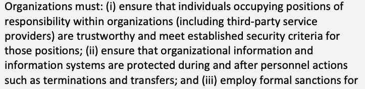
原本PDFの抜粋画像
Personnel who have access to an enterprise’s supply chain should be covered by the enterprise’s personnel security controls. These personnel include acquisition and contracting professionals, program managers, supply chain and logistics professionals, shipping and receiving staff, information technology professionals, quality professionals, mission and business owners, system owners, and information security engineers. Enterprises should also work with suppliers, developers, system integrators, external system service providers, and other ICT/OT-related service providers to ensure that they apply appropriate security controls to the personnel who interact with the enterprise’s supply chain, as appropriate.
企業のサプライチェーンにアクセスする人員には、エンタープライズの人員セキュリティ管理策を適用すべきである。対象には、取得・契約担当者、プログラムマネージャー、サプライチェーン・物流担当者、出荷・受領担当者、IT担当者、品質担当者、使命・事業責任者、システム所有者、情報セキュリティエンジニアが含まれる。また、エンタープライズは、供給者、開発者、システムインテグレーター、外部システムサービスプロバイダー、その他のICT/OT関連サービスプロバイダーと連携し、エンタープライズのサプライチェーンに関与する人員に適切なセキュリティ管理策を必要に応じて適用するようにすべきである。
PS-1 POLICY AND PROCEDURES
PS-1 方針および手順
Supplemental C-SCRM Guidance: At each level, the personnel security policy and procedures and the related C-SCRM Strategy/Implementation Plan, C-SCRM Policies, and C-SCRM Plan(s) need to define the roles for the personnel who are engaged in the acquisition, management, and execution of supply chain security activities. These roles also need to state acquirer personnel responsibilities with regard to relationships with suppliers, developers, system integrators, external system service providers, and other ICT/OT-related service providers. Policies and procedures need to consider the full system development life cycle of systems and the roles and responsibilities needed to address the various supply chain infrastructure activities.
C-SCRM補足指針：各レベルの人員セキュリティ方針・手順、関連するC-SCRM戦略・実施計画、C-SCRM方針、C-SCRM計画では、サプライチェーン・セキュリティ活動の取得、管理、実行に従事する人員の役割を定義する必要がある。また、供給者、開発者、システムインテグレーター、外部システムサービスプロバイダー、その他のICT/OT関連サービスプロバイダーとの関係に関する取得者側職員の責任も定める必要がある。方針・手順では、システムのシステム開発ライフサイクル全体と、サプライチェーン基盤に関わる多様な活動に対処するために必要な役割・責任を考慮する必要がある。
Level 1: Applicable roles include risk executive, CIO, CISO, contracting, logistics, delivery/receiving, acquisition security, and other functions that provide supporting supply chain activities.
レベル1：該当する役割には、リスク管理責任者、CIO、CISO、契約、物流、納入・受領、取得セキュリティ、その他サプライチェーン活動を支援する機能が含まれる。
Level 2: Applicable roles include program executive and individuals (e.g., non-federal employees, including contractors) within the acquirer enterprise who are responsible for program success (e.g., Program Manager and other individuals).
レベル2：該当する役割には、プログラム執行責任者と、取得者企業内の個人（例：請負業者を含む非連邦職員）のうちプログラムの成功に責任を負う者（例：プログラムマネージャーその他の担当者）が含まれる。
Level 3: Applicable roles include system engineers or system security engineers throughout the operational system life cycle from requirements definition, development, test, deployment, maintenance, updates, replacements, delivery/receiving, and IT.
レベル3：該当する役割には、要件定義、開発、試験、配備、保守、更新、交換、納入・受領、ITにわたる運用システムのライフサイクル全体を担当するシステムエンジニアまたはシステムセキュリティエンジニアが含まれる。
Roles for the supplier, developer, system integrator, external system service provider, and other ICT/OT-related service provider personnel responsible for the success of the program should be noted in an agreement between the acquirer and these parties (e.g., contract).
プログラムの成功に責任を負う供給者、開発者、システムインテグレーター、外部システムサービスプロバイダー、その他のICT/OT関連サービスプロバイダーの担当者の役割は、取得者とこれらの関係者との合意書（例：契約）に記載すべきである。
The enterprise should require its prime contractors to implement this control and flow down this requirement to relevant sub-tier contractors.
エンタープライズは、元請業者に本管理策を実装させ、この要件を関連する下位階層の請負業者に展開させるべきである。
Level(s): 1, 2, 3
レベル：1、2、3
Related Control(s): SA-4
関連管理策：SA-4
PS-3 PERSONNEL SCREENING
PS-3 人員審査
Supplemental C-SCRM Guidance: To mitigate insider threat risk, personnel screening policies and procedures should be extended to any contractor personnel with authorized access to information systems, system components, or information system services. Continuous monitoring activities should be commensurate with the contractor’s level of access to sensitive, classified, or regulated information and should be consistent with broader enterprise policies. Screening requirements should be incorporated into agreements and flow down to sub-tier contractors.
C-SCRM補足指針：内部脅威リスクを低減するため、情報システム、システムコンポーネント、情報システムサービスへの許可されたアクセスを持つ請負業者職員にも、人員審査方針・手順を適用すべきである。継続的モニタリング活動は、請負業者の機密情報、秘密情報、規制対象情報へのアクセス水準に見合い、より広範な企業方針と整合すべきである。審査要件を合意書に含め、下位階層の請負業者にも展開すべきである。
Level(s): 2, 3
レベル：2、3
PS-6 ACCESS AGREEMENTS
PS-6 アクセス合意
Supplemental C-SCRM Guidance: The enterprise should define and document access agreements for all contractors or other external personnel who may need to access the enterprise’s data, systems, or network, whether physically or logically. Access agreements should state the appropriate level and method of access to the information system and supply chain network. Additionally, terms of access should be consistent with the enterprise’s information security policy and may need to specify additional restrictions, such as allowing access during specific timeframes, from specific locations, or only by personnel who have satisfied additional vetting requirements. The enterprise should deploy audit mechanisms to review, monitor, update, and track access by these parties in accordance with the access agreement. As personnel vary over time, the enterprise should implement a timely and rigorous personnel security update process for the access agreements.
補足的なC-SCRM指針：エンタープライズは、物理的か論理的かを問わず、エンタープライズのデータ、システム、ネットワークにアクセスする必要がある請負業者その他の外部人員すべてについて、アクセス合意を定義し、文書化すべきである。アクセス合意には、情報システムおよびサプライチェーン・ネットワークへの適切なアクセス水準と方法を記載すべきである。また、アクセス条件はエンタープライズの情報セキュリティポリシーに整合させ、特定の時間帯・場所からのアクセスや、追加の審査要件を満たした人員に限るなど、追加制限を定める必要がある場合がある。エンタープライズはアクセス合意に従って、これらの関係者のアクセスを確認、監視、更新、追跡する監査機構を配備すべきである。人員が時間とともに変わるため、エンタープライズはアクセス合意について、適時かつ厳格な人員セキュリティの更新プロセスを実施すべきである。
When information systems and network products and services are provided by an entity within the enterprise, there may be an existing access agreement in place. When such an agreement does not exist, it should be established.
企業内の事業体が情報システム、ネットワーク製品・サービスを提供する場合、既存のアクセス合意があることがある。合意がない場合は策定すべきである。
NOTE: While the audit mechanisms may be implemented in Level 3, the agreement process with required updates should be implemented at Level 2 as a part of program management activities.
注：監査機構はレベル3で実装してもよいが、必要な更新を伴う合意プロセスは、プログラム管理活動の一環としてレベル2で実装すべきである。
The enterprise should require its prime contractors to implement this control and flow down this requirement to relevant sub-tier contractors.
エンタープライズは、元請業者に本管理策を実装させ、この要件を関連する下位階層の請負業者に展開させるべきである。
Level(s): 2, 3
レベル：2、3
PS-7 EXTERNAL PERSONNEL SECURITY
PS-7 外部人員のセキュリティ
Supplemental C-SCRM Guidance: Third-party personnel who have access to the enterprise’s information systems and networks must meet the same personnel security requirements as enterprise personnel. Examples of such third-party personnel can include the system integrator, developer, supplier, external service provider used for delivery, contractors or service providers who are using the ICT/OT systems, or supplier maintenance personnel brought in to address component technical issues not solvable by the enterprise or system integrator.
補足的なC-SCRM指針：エンタープライズの情報システム・ネットワークにアクセスする第三者人員は、エンタープライズの人員と同じ人員セキュリティ要件を満たさなければならない。このような第三者人員の例には、システムインテグレーター、開発者、供給者、納入に使用する外部サービスプロバイダー、ICT/OTシステムを使用する請負業者またはサービスプロバイダー、エンタープライズまたはシステムインテグレーターでは解決できないコンポーネントの技術的問題に対処するため派遣される供給者の保守担当者が含まれ得る。
Level(s): 2
レベル：2
A.2.17. FAMILY: PERSONALLY IDENTIFIABLE INFORMATION PROCESSING AND
A.2.17. ファミリー：個人識別情報の処理および
未レビュー訳TRANSPARENCY
透明性
未レビュー訳Personally identifiable information processing and transparency is a new control family developed specifically to address PII processing and transparency concerns.
個人識別情報の処理および透明性は、PIIの処理と透明性に関する懸念に特化して策定された新しい管理策ファミリーである。
The enterprise should keep in mind that some suppliers have comprehensive security and privacy practices and systems that may go above and beyond the enterprise’s requirements. The enterprises should work with suppliers to understand the extent of their privacy practices and how they meet the enterprise’s needs.
エンタープライズは、一部の供給者が、エンタープライズの要件を大きく上回る可能性のある包括的なセキュリティ・プライバシー慣行およびシステムを備えていることを念頭に置くべきである。エンタープライズは供給者と協力し、そのプライバシー慣行の範囲と、それがエンタープライズのニーズをどのように満たすかを理解すべきである。
PT-1 POLICY AND PROCEDURES
PT-1 ポリシーおよび手順
Supplemental C-SCRM Guidance: Enterprises should ensure that supply chain concerns are included in PII processing and transparency policies and procedures, as well as the related C-SCRM Strategy/Implementation Plan, C-SCRM Policies, and C-SCRM Plan. The policy can be included as part of the general security and privacy policy or can be represented by multiple policies.
C-SCRM補足指針：企業は、PII処理・透明性の方針・手順と、関連するC-SCRM戦略・実施計画、C-SCRM方針、C-SCRM計画にサプライチェーン上の懸念が含まれるようにすべきである。この方針は一般的なセキュリティ・プライバシー方針の一部としても、複数の方針としても定められる。
The procedures can be established for the security and privacy program in general and individual information systems. These policy and procedures should address the purpose, scope, roles, responsibilities, management commitment, coordination among enterprise entities, and privacy compliance to support systems/components within information systems or the supply chain.
手順は、セキュリティ・プライバシープログラム全般および個々の情報システムについて定めることができる。ポリシーおよび手順では、情報システムまたはサプライチェーン内のシステム／コンポーネントを支援するため、目的、範囲、役割、責任、経営層のコミットメント、エンタープライズ内の各主体間の連携、およびプライバシー遵守を扱うべきである。
Policies and procedures need to be in place to ensure that contracts state what PII data will be shared, which contractor personnel may have access to the PII, controls protecting PII, how long it can be kept, and what happens to it at the end of a contract.
契約で、共有するPIIデータ、PIIにアクセスできる請負業者職員、PIIを保護する管理策、保持期間、契約終了時の処理を明記するよう、方針・手順を整備すべきである。
未レビュー訳a. When working with a new supplier, ensure that the agreement includes the most recent set of applicable security requirements.
a. 新しい供給者と取引を始める際、適用される最新のセキュリティ要件一式が合意書に含まれていることを確認する。
未レビュー訳b. Contractors need to abide by relevant laws and policies regarding information (PII and other sensitive information).
b. 請負業者は、情報（PIIその他の機微情報）に関する関連法令・方針を遵守する必要がある。
未レビュー訳c. The enterprise should require its prime contractors to implement this control and flow down this requirement to relevant sub-tier contractors.
c. 企業は、元請業者に本管理策を実施させ、この要件を関連する下位階層の請負業者に展開すべきである。
未レビュー訳Level(s): 1, 2, 3
レベル：1、2、3
A.2.18. FAMILY: RISK ASSESSMENT
A.2.18. ファミリー：リスク評価
[FIPS200] specifies the Risk Assessment minimum security requirement as follows:
[FIPS200]は、リスク評価に関する最低限のセキュリティ要件を次のように定めている：
原本PDFの抜粋画像
原本PDFの抜粋画像
This document provides guidance for managing an enterprise’s cybersecurity risk in supply chains and expands this control to integrate assessments of cybersecurity risk in supply chains, as described in Section 2 and Appendix C.
本書は、エンタープライズのサプライチェーンにおけるサイバーセキュリティリスクを管理するための指針を示し、第2節および付録Cに記載のとおり、サプライチェーンにおけるサイバーセキュリティリスクの評価を統合するよう本管理策を拡張する。
RA-1 POLICY AND PROCEDURES
RA-1 ポリシーおよび手順
Supplemental C-SCRM Guidance: Risk assessments should be performed at the enterprise, mission/program, and operational levels. The system-level risk assessment should include both the supply chain infrastructure (e.g., development and testing environments and delivery systems) and the information system/components traversing the supply chain. System-level risk assessments significantly intersect with the SDLC and should complement the enterprise’s broader RMF activities, which take part during the SDLC. A criticality analysis will ensure that mission-critical functions and components are given higher priority due to their impact on the mission, if compromised. The policy should include supply chain-relevant cybersecurity roles that are applicable to performing and coordinating risk assessments across the enterprise (see Section 2 for the listing and description of roles). Applicable roles within suppliers, developers, system integrators, external system service providers, and other ICT/OT-related service providers should be defined.
C-SCRM補足指針：リスク評価は企業、使命・プログラム、運用の各レベルで実施すべきである。システムレベルの評価では、サプライチェーン基盤（例：開発・試験環境、納入システム）と、サプライチェーンを通過する情報システム／コンポーネントの双方を含めるべきである。システムレベルのリスク評価はSDLCと密接に関係し、SDLC中に行われる企業のより広範なRMF活動を補完すべきである。重要度分析により、侵害された場合の使命への影響に基づき、使命上重要な機能・コンポーネントに高い優先度を与える。方針には、企業全体のリスク評価の実施・調整に適用されるサプライチェーン関連のサイバーセキュリティ上の役割を含めるべきである（役割の一覧と説明は第2節を参照）。供給者、開発者、システムインテグレーター、外部システムサービスプロバイダー、その他のICT/OT関連サービスプロバイダー内の該当する役割を定義すべきである。
Level(s): 1, 2, 3
レベル：1、2、3
RA-2 SECURITY CATEGORIZATION
RA-2 セキュリティ分類
Supplemental C-SCRM Guidance: Security categorization is critical to C-SCRM at Levels 1, 2, and 3. In addition to [FIPS199] categorization, security categorization for C-SCRM should be based on the criticality analysis that is performed as part of the SDLC. See Section 2 and [IR8179] for a detailed description of criticality analysis.
C-SCRM補足指針：セキュリティ分類はレベル1、2、3のC-SCRMに不可欠である。[FIPS199]による分類に加え、C-SCRMのセキュリティ分類はSDLCの一環として実施する重要度分析に基づくべきである。重要度分析の詳しい説明は第2節および[IR8179]を参照されたい。
Level(s): 1, 2, 3
レベル：1、2、3
Related Controls: RA-9
関連管理策：RA-9
RA-3 RISK ASSESSMENT
RA-3 リスク評価
Supplemental C-SCRM Guidance: Risk assessments completed across the enterprise should include context from supply chain risk assessment results. Holistic consideration of supply chain risks in conjunction with other enterprise risks is a critical success factor of the organizations effort to manage risk to organizational operations and assets, individuals, other organizations, and the Nation.
補足的なC-SCRM指針：エンタープライズ全体で実施するリスク評価には、サプライチェーンリスク評価の結果から得られる文脈を含めるべきである。サプライチェーンリスクを他のエンタープライズリスクと併せて包括的に考慮することは、組織の運用・資産、個人、他の組織、および国家に対するリスクを管理する組織の取り組みにとって、重要な成功要因である。
Level(s): 1, 2, 3
レベル：1、2、3
Control Enhancement(s):
管理策の強化：
(1) RISK ASSESSMENT | SUPPLY CHAIN RISK ASSESSMENT
(1) リスク評価 | サプライチェーンリスク評価
Supplemental C-SCRM Guidance: Supply Chain Risk Assessments are a critical activity that focuses on assessing cybersecurity risks that arise from suppliers, their supply chains, their products, and their services. Supply Chain Risk assessments should include an analysis of criticality, threats, vulnerabilities, likelihood, and impact, as described in detail in Appendix G. The data to be reviewed and collected includes C-SCRM-specific roles, processes, and the results of system/component and services acquisitions, implementation, and integration. Supply Chain Risk assessments should be performed at Levels 1, 2, and 3. Risk assessments at higher levels should consist primarily of a synthesis of various risk assessments performed at lower levels and used for understanding the overall impact with the level (e.g., at the enterprise or mission/function levels). Supply Chain Risk assessments should complement and inform risk assessments, which are performed as ongoing activities throughout the SDLC, and processes should be appropriately aligned with or integrated into ERM processes and governance. Enterprises should require their prime contractors to implement this control and flow down this requirement to relevant sub-tier contractors.
サプライチェーンリスク評価は、供給者、そのサプライチェーン、製品、サービスに起因するサイバーセキュリティリスクの評価に焦点を当てる重要な活動である。サプライチェーンリスク評価には、付録Gで詳述する重要度、脅威、脆弱性、発生可能性、影響の分析を含めるべきである。確認・収集するデータには、C-SCRM固有の役割・プロセス、およびシステム／コンポーネントやサービスの取得、実装、統合の結果を含める。評価はレベル1、2、3で実施すべきである。上位レベルの評価は、主として下位レベルで実施した複数の評価を統合し、当該レベル（例：企業または使命・機能レベル）全体への影響を把握するために用いるべきである。サプライチェーンリスク評価は、SDLC全体を通じて継続的に実施するリスク評価を補完・情報提供し、ERMのプロセスおよびガバナンスと適切に整合または統合すべきである。企業は、元請業者に本管理策を実施させ、この要件を関連する下位階層の請負業者に展開すべきである。
未レビュー訳Level(s): 1, 2, 3
レベル：1、2、3
RA-5 VULNERABILITY MONITORING AND SCANNING
RA-5 脆弱性のモニタリングおよびスキャン
Supplemental C-SCRM Guidance: Vulnerability monitoring should cover suppliers, developers, system integrators, external system service providers, and other ICT/OT-related service providers in the enterprise’s supply chain. This includes employing data sources and tools to maintain a continuous state of awareness about potential vulnerability to suppliers, as well as the information systems, system components, and raw inputs that they provide through the cybersecurity supply chain. Vulnerability monitoring activities should take place at all three levels of the enterprise. Scoping vulnerability monitoring activities requires enterprises to consider suppliers as well as their sub-suppliers. Technology providers may consider maintaining processes to receive, investigate, track, and respond to vulnerability reports that are received from vulnerability reporters (e.g., security researchers). Per [ISO/IEC 29147], a vulnerability report includes elements such as product name, affected version, classification, root cause, proof of concept, steps for reproduction, impact, and severity. Upon the receipt of a vulnerability report, providers should verify the vulnerability, develop and test a remediation, securely disclose and release the remediation to customers and/or the general public as a vulnerability advisory report (VAR). Per [ISO/IEC 29147], the elements of a VAR include an identifier, date/time, title, overview, list of affected products, description of intended audience, description of the vulnerability, impact, severity, remediation, references, discovery credit, contact information, revision history, and/or terms of use. While not required, it is good practice to ensure the machine readability of the VAR. In addition, Section 4E of Appendix F on Executive Order 14028, Improving the Nation’s Cybersecurity, provides guidance on attestation to cybersecurity practices. Practices that have not been attested to may be vulnerabilities that need to be monitored. Enterprises should require their prime contractors to implement this control and flow down this requirement to relevant sub-tier contractors.
脆弱性モニタリングでは、企業のサプライチェーン内の供給者、開発者、システムインテグレーター、外部システムサービスプロバイダー、その他のICT/OT関連サービスプロバイダーを対象とすべきである。これには、供給者の潜在的な脆弱性、およびサイバーセキュリティ・サプライチェーンを通じて供給者が提供する情報システム、システムコンポーネント、未加工の入力情報について継続的に認識するためのデータソースやツールの利用が含まれる。脆弱性モニタリングは企業の3つすべてのレベルで実施すべきである。対象範囲を定める際、供給者だけでなくその下位供給者も考慮する必要がある。技術プロバイダーは、脆弱性報告者（例：セキュリティ研究者）から受け取る報告を受理、調査、追跡し、対応するプロセスの維持を検討できる。[ISO/IEC 29147]によると、脆弱性報告には製品名、影響を受けるバージョン、分類、根本原因、概念実証、再現手順、影響、深刻度などが含まれる。脆弱性報告を受領したプロバイダーは、脆弱性を検証し、修正策を開発・試験し、脆弱性勧告報告（VAR）として顧客および／または一般市民に安全に開示・公開すべきである。[ISO/IEC 29147]によると、VARには識別子、日時、タイトル、概要、影響製品一覧、想定読者の説明、脆弱性の説明、影響、深刻度、修正策、参考文献、発見者への謝辞、連絡先、改訂履歴、および／または利用条件が含まれる。必須ではないが、VARを機械可読にすることが望ましい慣行である。また、大統領令14028『国のサイバーセキュリティの改善』に関する付録Fの第4E節に、サイバーセキュリティ慣行の証明に関する指針がある。証明されていない慣行は、監視が必要な脆弱性である場合がある。企業は、元請業者に本管理策を実施させ、この要件を関連する下位階層の請負業者に展開すべきである。
未レビュー訳Departments and agencies should refer to Appendix F to implement this guidance in accordance with Executive Order 14028, Improving the Nation’s Cybersecurity.
省庁・機関は、大統領令14028『国家のサイバーセキュリティの改善』に従って本指針を実装するため、付録Fを参照すべきである。
Level(s): 2, 3
レベル：2、3
Control Enhancement(s):
管理策の強化：
(3) VULNERABILITY MONITORING AND SCANNING | BREADTH AND DEPTH OF
(3) 脆弱性のモニタリングおよびスキャン | 対象範囲の幅と深さ
未レビュー訳COVERAGE
対象範囲
未レビュー訳Supplemental C-SCRM Guidance: Enterprises that monitor the supply chain for vulnerabilities should express the breadth of monitoring based on the criticality and/or risk profile of the supplier or product/component and the depth of monitoring based on the level of the supply chain at which the monitoring takes place (e.g., sub-supplier). Where possible, a component inventory (e.g., hardware, software) may aid enterprises in capturing the breadth and depth of the products/components within their supply chain that may need to be monitored and scanned for vulnerabilities.
補足的なC-SCRM指針：脆弱性についてサプライチェーンを監視するエンタープライズは、供給者または製品・コンポーネントの重要度および／またはリスクプロファイルに基づいて監視の広さを、監視を行うサプライチェーンの階層（例：下位供給者）に基づいて監視の深さを表すべきである。可能であれば、コンポーネント目録（例：ハードウェア、ソフトウェア）は、脆弱性の監視・スキャンが必要となり得るサプライチェーン内の製品・コンポーネントの広さと深さをエンタープライズが把握するのに役立つ場合がある。
Level(s): 2, 3
レベル：2、3
(6) VULNERABILITY MONITORING AND SCANNING | AUTOMATED TREND ANALYSIS
(6) 脆弱性のモニタリングおよびスキャン | 自動化された傾向分析
Supplemental C-SCRM Guidance: Enterprises should track trends in vulnerabilities to components within the supply chain over time. This information may help enterprises develop procurement strategies that reduce risk exposure density within the supply chain.
補足的なC-SCRM指針：エンタープライズは、サプライチェーン内のコンポーネントの脆弱性に関する傾向を経時的に追跡すべきである。この情報は、サプライチェーン内のリスクエクスポージャー密度を低減する調達戦略の策定に役立つ場合がある。
Level(s): 2, 3
適用レベル：2、3
RA-7 RISK RESPONSE
RA-7 リスク対応
Supplemental C-SCRM Guidance: Enterprises should integrate capabilities to respond to cybersecurity risks throughout the supply chain into the enterprise’s overall response posture, ensuring that these responses are aligned to and fall within the boundaries of the enterprise’s tolerance for risk. Risk response should include consideration of risk response identification, evaluation of alternatives, and risk response decision activities.
補足的なC-SCRM指針：エンタープライズは、サプライチェーン全体のサイバーセキュリティリスクに対応する能力を全体的な対応態勢に統合し、その対応がエンタープライズのリスク許容度と整合し、その範囲内に収まるようにすべきである。リスク対応には、リスク対応策の特定、代替策の評価、およびリスク対応の決定に関する活動を含めるべきである。
Level(s): 1, 2, 3
適用レベル：1、2、3
RA-9 CRITICALITY ANALYSIS
RA-9 重要度分析
Supplemental C-SCRM Guidance: Enterprises should complete a criticality analysis as a prerequisite input to assessments of cybersecurity supply chain risk management activities. First, enterprises should complete a criticality analysis as part of the Frame step of the C-SCRM Risk Management Process. Then, findings generated in the Assess step activities (e.g., criticality analysis, threat analysis, vulnerability analysis, and mitigation strategies) update and tailor the criticality analysis. A symbiotic relationship exists between the criticality analysis and other Assess step activities in that they inform and enhance one another. For a high-quality criticality analysis, enterprises should employ it iteratively throughout the SLDC and concurrently across the three levels.
補足的なC-SCRM指針：エンタープライズは、サイバーセキュリティ・サプライチェーンリスク管理活動の評価に先立ち、その入力情報として重要度分析を完了すべきである。まず、エンタープライズはC-SCRMリスク管理プロセスの「枠組み設定」ステップの一環として重要度分析を完了すべきである。次に、「評価」ステップの活動（例：重要度分析、脅威分析、脆弱性分析、緩和戦略）で得られた所見を用いて、重要度分析を更新し、調整する。重要度分析とその他の「評価」ステップ活動には相互に作用する関係があり、互いに情報を提供し強化する。質の高い重要度分析を行うため、エンタープライズはSLDC全体を通じて反復的に、かつ3つのレベル全体で並行して実施すべきである。
Enterprises should require their prime contractors to implement this control and flow down this requirement to relevant sub-tier contractors. Departments and agencies should also refer to Appendix F to supplement this guidance in accordance with Executive Order 14028, Improving the Nation’s Cybersecurity.
エンタープライズは、元請業者に本管理策を実装させ、この要件を関連する下位階層の請負業者に展開させるべきである。省庁・機関は、大統領令14028『国家のサイバーセキュリティの改善』に従って本指針を補足するため、付録Fも参照すべきである。
Level(s): 1, 2, 3
適用レベル：1、2、3
RA-10 THREAT HUNTING
RA-10 脅威ハンティング
Supplemental C-SCRM Guidance: The C-SCRM threat hunting activities should supplement the enterprise’s internal threat hunting activities. As a critical part of the cybersecurity supply chain risk management process, enterprises should actively monitor for threats to their supply chain. This requires a collaborative effort between C-SCRM and other cyber defense-oriented functions within the enterprise. Threat hunting capabilities may also be provided via a shared services enterprise, especially when an enterprise lacks the resources to perform threat hunting activities themselves. Typical activities include information sharing with peer enterprises and actively consuming threat intelligence sources (e.g., like those available from Information Assurance and Analysis Centers [ISAC[ and Information Assurance and Analysis Organizations [ISAO]). These activities can help identify and flag indicators of increased cybersecurity risks throughout the supply chain that may be of concern, such as cyber incidents, mergers and acquisitions, and Foreign Ownership, Control, or Influence (FOCI). Supply chain threat intelligence should seek out threats to the enterprise’s suppliers, as well as information systems, system components, and the raw inputs that they provide. The intelligence gathered enables enterprises to proactively identify and respond to threats emanating from the supply chain.
補足的なC-SCRM指針：C-SCRMの脅威ハンティング活動は、エンタープライズ内部の脅威ハンティング活動を補完すべきである。サイバーセキュリティ・サプライチェーンリスク管理プロセスの重要な一環として、エンタープライズはサプライチェーンへの脅威を積極的に監視すべきである。そのためには、C-SCRMと、エンタープライズ内のその他のサイバー防御志向の機能との協力が必要である。特にエンタープライズ自身に脅威ハンティング活動を行うリソースがない場合、共有サービス・エンタープライズを通じて脅威ハンティング能力を提供してもよい。典型的な活動には、同業エンタープライズとの情報共有や、脅威インテリジェンス情報源（例：情報保証・分析センター（ISAC）および情報保証・分析機関（ISAO）などから入手できる情報）の積極的な活用が含まれる。これらの活動は、サプライチェーン全体のサイバーセキュリティリスク上昇を示す懸念事象（例：サイバーインシデント、合併・買収、外国所有・支配・影響（FOCI））の兆候を特定し、注意喚起するのに役立つ。サプライチェーン脅威インテリジェンスでは、エンタープライズの供給者に対する脅威に加え、供給者が提供する情報システム、システムコンポーネント、および原材料も対象とすべきである。収集したインテリジェンスにより、エンタープライズはサプライチェーンに起因する脅威を事前に特定し、対応できる。
Level(s): 1, 2, 3
適用レベル：1、2、3
A.2.19. FAMILY: SYSTEM AND SERVICES ACQUISITION
A.2.19. ファミリー：システムおよびサービスの取得
[FIPS200] specifies the System and Services Acquisition minimum security requirement as follows:
[FIPS200]は、システムおよびサービスの取得に関する最低限のセキュリティ要件を次のように定めている：
原本PDFの抜粋画像
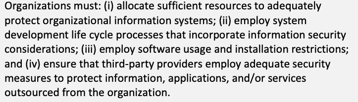
Enterprises acquire ICT/OT products and services through system and services acquisition. These controls address the activities of acquirers, suppliers, developers, system integrators, external system service providers, other ICT/OT-related service providers, and related upstream supply chain relationships. They address both the physical and logical aspects of supply chain security, from detection to SDLC and security engineering principles. C-SCRM concerns are already prominently addressed in [SP80053r5]. This document adds further detail and refinement to these controls.
エンタープライズは、システムおよびサービスの取得を通じてICT/OT製品およびサービスを取得する。これらの管理策は、取得者、供給者、開発者、システムインテグレーター、外部システムサービスプロバイダー、その他のICT/OT関連サービスプロバイダー、および関連する上流サプライチェーン関係者の活動を対象とする。検知からSDLC、セキュリティエンジニアリングの原則に至るまで、サプライチェーンセキュリティの物理的側面と論理的側面の双方を扱う。C-SCRM上の懸念は、すでに[SP80053r5]で大きく取り上げられている。本書は、これらの管理策にさらなる詳細と精緻化を加える。
未レビュー訳SA-1 POLICY AND PROCEDURES
SA-1 ポリシーおよび手順
Supplemental C-SCRM Guidance: The system and services acquisition policy and procedures should address C-SCRM throughout the acquisition management life cycle process, to include purchases made via charge cards. C-SCRM procurement actions and the resultant contracts should include requirements language or clauses that address which controls are mandatory or desirable and may include implementation specifications, state what is accepted as evidence that the requirement is satisfied, and how conformance to requirements will be verified and validated. C-SCRM should also be included as an evaluation factor.
補足的なC-SCRM指針：システムおよびサービスの取得に関するポリシーと手順では、購入カードによる購入も含め、取得管理ライフサイクルプロセス全体にわたってC-SCRMを扱うべきである。C-SCRMに関する調達措置およびその結果の契約には、必須または望ましい管理策を示す要件文言または条項を含めるべきである。また、実装仕様、要件が満たされたことを示す証拠として認められるもの、ならびに要件への適合を検証・妥当性確認する方法を含めてもよい。C-SCRMも評価要素として含めるべきである。
These applicable procurements should not be limited to those that are directly related to providing an ICT/OT product or service. While C-SCRM considerations must be applied to these purchases, C-SCRM should also be considered for any and all procurements of products or services in which there may be an unacceptable risk of a supplied product or service contractor compromising the integrity, availability, or confidentiality of an enterprise’s information. This initial assessment should occur during the acquisition planning phase and will be minimally informed by an identification and understanding of the criticality of the enterprise’s mission functions, its high value assets, and the sensitivity of the information that may be accessible by the supplied product or service provider.
該当する調達は、ICT/OT製品またはサービスの提供に直接関係するものに限定すべきではない。これらの購入にはC-SCRMの考慮事項を適用しなければならないが、供給された製品またはサービスの請負業者がエンタープライズの情報の完全性、可用性、または機密性を損なう、許容できないリスクが存在し得るあらゆる製品またはサービスの調達についても、C-SCRMを考慮すべきである。この初期評価は取得計画段階で行うべきであり、少なくとも、エンタープライズの使命機能の重要度、高価値資産、および供給された製品またはサービスプロバイダーがアクセスできる可能性のある情報の機微性を特定し理解した上で行われる。
In addition, enterprises should develop policies and procedures that address supply chain risks that may arise during contract performance, such as a change of ownership or control of the business or when actionable information is learned that indicates that a supplier or a product is a target of a supply chain threat. Supply chains evolve continuously through mergers and acquisitions, joint ventures, and other partnership agreements. The policy should help enterprises understand these changes and use the obtained information to inform their C-SCRM activities. Enterprises can obtain the status of such changes through, for example, monitoring public announcements about company activities or any communications initiated by suppliers, developers, system integrators, external system service providers, and other ICT/OT-related service providers.
さらに、エンタープライズは、事業の所有権または支配権の変更、あるいは供給者または製品がサプライチェーン上の脅威の標的であることを示す、対処可能な情報を把握した場合など、契約履行中に生じ得るサプライチェーンリスクに対処するポリシーおよび手順を策定すべきである。サプライチェーンは、合併・買収、合弁事業、その他のパートナーシップ契約を通じて継続的に変化する。ポリシーは、エンタープライズがこうした変化を理解し、得られた情報をC-SCRM活動に反映するのに役立つべきである。エンタープライズは、例えば、企業活動に関する公開発表や、供給者、開発者、システムインテグレーター、外部システムサービスプロバイダー、およびその他のICT/OT関連サービスプロバイダーから開始された連絡を監視することで、このような変更の状況を把握できる。
See Section 3 for further guidance on C-SCRM in the federal acquisition process. Additionally, Departments and agencies should refer to Appendix F to implement this guidance in accordance with Executive Order 14028 on Improving the Nation's Cybersecurity.
連邦政府の取得プロセスにおけるC-SCRMのさらなる指針については、第3節を参照。さらに、省庁・機関は、大統領令14028『国家のサイバーセキュリティの改善』に従って本指針を実装するため、付録Fを参照すべきである。
Level(s): 1, 2, 3
適用レベル：1、2、3
SA-2 ALLOCATION OF RESOURCES
SA-2 リソースの配分
Supplemental C-SCRM Guidance: The enterprise should incorporate C-SCRM requirements when determining and establishing the allocation of resources.
補足的なC-SCRM指針：リソース配分を決定し確立する際、エンタープライズはC-SCRM要件を組み込むべきである。
Level(s): 1, 2
適用レベル：1、2
SA-3 SYSTEM DEVELOPMENT LIFE CYCLE
SA-3 システム開発ライフサイクル
Supplemental C-SCRM Guidance: There is a strong relationship between the SDLC and C-SCRM activities. The enterprise should ensure that C-SCRM activities are integrated into the SDLC for both the enterprise and for applicable suppliers, developers, system integrators, external system service providers, and other ICT/OT-related service providers. In addition to traditional SDLC activities, such as requirements and design, the SDLC includes activities such as inventory management, acquisition and procurement, and the logical delivery of systems and components. See Section 2 and Appendix C for further guidance on SDLC. Departments and agencies should refer to Appendix F to implement this guidance in accordance with Executive Order 14028, Improving the Nation’s Cybersecurity.
補足的なC-SCRM指針：SDLCとC-SCRM活動には強い関係がある。エンタープライズは、自組織および該当する供給者、開発者、システムインテグレーター、外部システムサービスプロバイダー、その他のICT/OT関連サービスプロバイダーの双方について、C-SCRM活動をSDLCに統合すべきである。要件定義や設計などの従来のSDLC活動に加え、SDLCにはインベントリ管理、取得・調達、システムおよびコンポーネントの論理的な納入などの活動が含まれる。SDLCについて詳しくは第2節および付録Cを参照。省庁は、大統領令14028『国家のサイバーセキュリティの改善』に従って本指針を実施するため、付録Fを参照すべきである。
未レビュー訳Level(s): 1, 2, 3
適用レベル：1、2、3
SA-4 ACQUISITION PROCESS
SA-4 取得プロセス
Supplemental C-SCRM Guidance: Enterprises are to include C-SCRM requirements, descriptions, and criteria in applicable contractual agreements.
補足的なC-SCRM指針：エンタープライズは、該当する契約上の合意にC-SCRM要件、説明、および基準を含めること。
1.Enterprises are to establish baseline and tailorable C-SCRM requirements to apply and incorporate into contractual agreements when procuring a product or service from suppliers, developers, system integrators, external system service providers, and other ICT/OT-related service providers. These include but are not limited to:
1.エンタープライズは、供給者、開発者、システムインテグレーター、外部システムサービスプロバイダー、およびその他のICT/OT関連サービスプロバイダーから製品またはサービスを調達する際、契約上の合意に適用・組込み可能なC-SCRMのベースライン要件および調整可能な要件を確立すること。これらには、次の事項が含まれるが、これらに限定されない：
未レビュー訳a. C-SCRM requirements that cover regulatory mandates (e.g., the prohibition of certain ICT/OT or suppliers) address identified and selected controls that are applicable to reducing cyber supply chain risk that may be introduced by a procured product or service and that provide assurance that the contractor is sufficiently responsible, capable, and trustworthy.
a. 規制上の義務（例：特定のICT/OTまたは供給者の禁止）を対象とし、調達製品またはサービスによって生じ得るサイバーサプライチェーンリスクの低減に適用可能な、特定・選択済みの管理策に対処し、請負業者が十分な責任能力、遂行能力、および信頼性を有することを保証するC-SCRM要件。
未レビュー訳b. Requirements for critical elements in the supply chain to demonstrate the capability to remediate emerging vulnerabilities based on open source information and other sources.
b. サプライチェーンの重要要素が、オープンソース情報およびその他の情報源に基づいて、新たに出現する脆弱性を修正できる能力を示すための要件。
未レビュー訳c. Requirements for managing intellectual property ownership and responsibilities for elements such as software code; data and information; the manufacturing, development, or integration environment; designs; and proprietary processes when provided to the enterprise for review or use.
c. ソフトウェアコード、データおよび情報、製造・開発・統合環境、設計、ならびに専有プロセスなどの要素について、エンタープライズがレビューまたは使用するために提供される場合の知的財産の所有権および責任を管理する要件。
未レビュー訳d. Requirements that address the expected life span of the product or system, any element(s) that may be in a critical path based on their life span, and what is required when end-of-life is near or has been reached. Enterprises should conduct research or solicit information from bidders or existing providers under contract to understand what end-of-life options exist (e.g., replace, upgrade, migrate to a new system, etc.).
d. 製品またはシステムの想定寿命、寿命に基づきクリティカルパスに含まれる可能性のある要素、および製品寿命の終了が近づいた、または到来した場合に必要となる措置に対処する要件。エンタープライズは、寿命終了時に利用できる選択肢（例：交換、アップグレード、新しいシステムへの移行など）を理解するため、調査を実施するか、入札者または契約中の既存プロバイダーから情報を求めるべきである。
未レビュー訳e. Articulate any circumstances when secondary market components may be permitted.
e. 二次市場のコンポーネントが許可され得る状況を明示する。
未レビュー訳f. Requirements for functional properties, configuration, and implementation information, as well as any development methods, techniques, or practices that may be relevant. Identify and specify C-SCRM evaluation criteria, to include the weighting of such criteria.
f. 機能特性、構成、実装情報、ならびに関連する可能性のある開発方法、技法、または実践に関する要件。重み付けを含むC-SCRM評価基準を特定し、明示する。
未レビュー訳2.Enterprises should:
2.エンタープライズは次の事項を行うべきである：
未レビュー訳a. Establish a plan for the acquisition of spare parts to ensure adequate supply, and execute the plan if or when applicable;
a. 十分な供給を確保するための予備部品調達計画を策定し、該当する場合または時点でその計画を実行する。
未レビュー訳b. Establish a plan for the acquisition of alternative sources of supply as may be necessary during continuity events or if/when a disruption to the supply chain occurs;
b. 継続性事象の発生時、またはサプライチェーンに混乱が生じた場合に必要となり得る代替供給元を調達する計画を策定する。
未レビュー訳c. Work with suppliers, developers, system integrators, external system service providers, and other ICT/OT-related service providers to identify and define existing and acceptable incident response and information-sharing processes, including inputs on vulnerabilities from other enterprises within their supply chains.
c. 供給者、開発者、システムインテグレーター、外部システムサービスプロバイダー、およびその他のICT/OT関連サービスプロバイダーと協力して、既存かつ許容可能なインシデント対応および情報共有プロセスを特定し、定義する。このプロセスには、それぞれのサプライチェーン内の他のエンタープライズからの脆弱性情報を含める。
未レビュー訳3.Establish and maintain verification procedures and acceptance criteria for delivered products and services, which include but are not limited to:
3.次の事項を含むが、これらに限定されない、納入された製品およびサービスの検証手順と受入れ基準を確立し、維持する：
未レビュー訳a. Accepting COTS and GOTS products without verification, as authorized by the enterprise (e.g., approved products lists)
a. エンタープライズの承認（例：承認済み製品リスト）に基づき、検証なしでCOTSおよびGOTS製品を受け入れること。
未レビュー訳b. Supplier validation of developmental and COTS software and hardware information system vulnerabilities
b. 開発中のソフトウェアおよびハードウェアに関する情報システムの脆弱性を供給者が検証すること。
未レビュー訳4.Ensure that the continuous monitoring plan includes supply chain aspects in its criteria, such as including the monitoring of functions, ports, and protocols in use. See Section 2 and Appendix C.
4.継続的監視計画の基準に、使用中の機能、ポート、およびプロトコルの監視など、サプライチェーンの側面を含める。第2節および付録Cを参照。
5.Ensure that the contract addresses the monitoring of suppliers, developers, system integrators, external system service providers, and other ICT/OT-related service providers’ information systems located within the supply chain infrastructure. Monitor and evaluate the acquired work processes and work products where applicable. These include but are not limited to monitoring software development infrastructure for vulnerabilities (e.g., DevSecOps pipelines, software containers, and code repositories/shares).
5.契約において、サプライチェーン基盤内にある供給者、開発者、システムインテグレーター、外部システムサービスプロバイダー、およびその他のICT/OT関連サービスプロバイダーの情報システムの監視が扱われていることを確実にする。該当する場合、取得した作業プロセスおよび作業成果物を監視・評価する。これには、脆弱性に関するソフトウェア開発基盤（例：DevSecOpsパイプライン、ソフトウェアコンテナ、コードリポジトリ／共有領域）の監視が含まれるが、これらに限定されない。
6.Communicate processes for reporting information security weaknesses and vulnerabilities detected during the use of ICT/OT products or services, and ensure reporting to appropriate stakeholders, including OEMs where relevant.
6.ICT/OT製品またはサービスの使用中に検知した情報セキュリティ上の弱点および脆弱性を報告するプロセスを伝達し、該当する場合はOEMを含む適切なステークホルダーへ確実に報告する。
7.Review and confirm sustained compliance with the terms and conditions of the agreement on an ongoing basis.
7.合意の諸条件への持続的な遵守を、継続的にレビューし確認する。
Departments and agencies should refer to Appendix F to implement this guidance in accordance with Executive Order 14028, Improving the Nation’s Cybersecurity.
省庁は、大統領令14028『国家のサイバーセキュリティの改善』に従って本指針を実施するため、付録Fを参照すべきである。
Level(s): 1, 2, 3
適用レベル：1、2、3
Related Controls: SA-4 (1), (2), (3), (6), and (7)
関連管理策：SA-4 (1)、(2)、(3)、(6)、および(7)
Control Enhancement(s):
管理策の強化：
(5) ACQUISITION PROCESS | SYSTEM, COMPONENT, AND SERVICE CONFIGURATIONS
(5) 取得プロセス｜システム、コンポーネント、およびサービスの構成
Supplemental C-SCRM Guidance: If an enterprise needs to purchase components, they need to ensure that the product specifications are “fit for purpose” and meet the enterprise’s requirements, whether purchasing directly from the OEM, channel partners, or a secondary market.
補足的なC-SCRM指針：エンタープライズがコンポーネントを購入する必要がある場合、OEMから直接購入する場合も、チャネルパートナーまたは二次市場から購入する場合も、製品仕様が「目的に適合」し、エンタープライズの要件を満たしていることを確保する必要がある。
Level(s): 3
適用レベル：3
(7) ACQUISITION PROCESS | NIAP-APPROVED PROTECTION PROFILES
(7) 取得プロセス｜NIAP承認済みプロテクションプロファイル
Supplemental C-SCRM Guidance: This control enhancement requires that the enterprise build, procure, and/or use U.S. Government protection profile-certified information assurance (IA) components when possible. NIAP certification can be achieved for OTS (COTS and GOTS).
補足的なC-SCRM指針：可能な場合、エンタープライズが米国政府のプロテクションプロファイル認証を受けた情報保証（IA）コンポーネントを構築、調達、および／または使用することを本管理策の強化は求める。OTS（COTSおよびGOTS）についてNIAP認証を取得できる。
未レビュー訳Level(s): 2, 3
適用レベル：2、3
(8) ACQUISITION PROCESS | CONTINUOUS MONITORING PLAN FOR CONTROLS
(8) 取得プロセス｜管理策の継続的監視計画
Supplemental C-SCRM Guidance: This control enhancement is relevant to C-SCRM and plans for continuous monitoring of control effectiveness and should therefore be extended to suppliers, developers, system integrators, external system service providers, and other ICT/OT-related service providers.
補足的なC-SCRM指針：本管理策の強化はC-SCRMおよび管理策の有効性の継続的監視の計画に関連するため、供給者、開発者、システムインテグレーター、外部システムサービスプロバイダー、およびその他のICT/OT関連サービスプロバイダーにも適用すべきである。
未レビュー訳Level(s): 2, 3
適用レベル：2、3
SA-5 SYSTEM DOCUMENTATION
SA-5 システム文書
Supplemental C-SCRM Guidance: Information system documentation should include relevant C-SCRM concerns (e.g., C-SCRM plan). Departments and agencies should refer to Appendix F to implement this guidance in accordance with Executive Order 14028 on Improving the Nation's Cybersecurity.
補足的なC-SCRM指針：情報システム文書には、関連するC-SCRM上の懸念（例：C-SCRM計画）を含めるべきである。省庁は、大統領令14028『国家のサイバーセキュリティの改善』に従って本指針を実施するため、付録Fを参照すべきである。
Level(s): 3
適用レベル：3
SA-8 SECURITY AND PRIVACY ENGINEERING PRINCIPLES
SA-8 セキュリティおよびプライバシーエンジニアリングの原則
Supplemental C-SCRM Guidance: The following security engineering techniques are helpful for managing cybersecurity risks throughout the supply chain. a. Anticipate the maximum possible ways that the ICT/OT product or service can be misused or abused in order to help identify how to protect the product or system from such uses. Address intended and unintended use scenarios in architecture and design.
補足的なC-SCRM指針：以下のセキュリティエンジニアリング技法は、サプライチェーン全体のサイバーセキュリティリスク管理に役立つ。a. ICT/OT製品またはサービスが悪用または不正利用される可能性のある方法を可能な限り想定し、製品またはシステムをそのような用途から保護する方法を特定する。アーキテクチャおよび設計で、意図された使用シナリオと意図されない使用シナリオに対処する。
未レビュー訳b. Design network and security architectures, systems, and components based on the enterprise’s risk tolerance, as determined by risk assessments (see Section 2 and Appendix C).
b. リスク評価で決定したエンタープライズのリスク許容度に基づき、ネットワークおよびセキュリティのアーキテクチャ、システム、コンポーネントを設計する（第2節および付録Cを参照）。
未レビュー訳c. Document and gain management acceptance and approval for risk that is not fully mitigated.
c. 十分に緩和されていないリスクを文書化し、管理者の受容および承認を得る。
未レビュー訳d. Limit the number, size, and privilege levels of critical elements. Using criticality analysis will aid in determining which elements or functions are critical. See criticality analysis in Appendix C and NIST IR 8179, Criticality Analysis Process Model: Prioritizing Systems and Components.
d. 重要要素の数、規模、および特権レベルを制限する。重要度分析を用いると、どの要素または機能が重要かを判断するのに役立つ。付録Cの重要度分析およびNIST IR 8179『重要度分析プロセスモデル：システムおよびコンポーネントの優先順位付け』を参照。
未レビュー訳e. Use security mechanisms that help to reduce opportunities to exploit supply chain cybersecurity vulnerabilities, such as encryption, access control, identity management, and malware or tampering discovery.
e. 暗号化、アクセス制御、ID管理、マルウェア検知、改ざん検知など、サプライチェーンのサイバーセキュリティ上の脆弱性を悪用する機会を減らすセキュリティの仕組みを使用する。
未レビュー訳f. Design information system components and elements to be difficult to disable (e.g., tamper-proofing techniques), and if they are disabled, trigger notification methods such as audit trails, tamper evidence, or alarms.
f. 情報システムのコンポーネントおよび要素を無効化しにくいように設計する（例：改ざん防止技法）。無効化された場合は、監査証跡、改ざんの証拠、または警報などの通知手段を作動させる。
未レビュー訳g. Design delivery mechanisms (e.g., downloads for software) to avoid unnecessary exposure or access to the supply chain and the systems/components traversing the supply chain during delivery.
g. 納入中にサプライチェーンおよびサプライチェーンを通過するシステム／コンポーネントへの不要な曝露またはアクセスを避けるよう、納入の仕組み（例：ソフトウェアのダウンロード）を設計する。
未レビュー訳h. Design relevant validation mechanisms to be used during implementation and operation.
h. 実装および運用中に使用する適切な検証の仕組みを設計する。
未レビュー訳Departments and agencies should refer to Appendix F to implement this guidance in accordance with Executive Order 14028, Improving the Nation’s Cybersecurity.
省庁は、大統領令14028『国家のサイバーセキュリティの改善』に従って本指針を実施するため、付録Fを参照すべきである。
Level(s): 1, 2, 3
適用レベル：1、2、3
SA-9 EXTERNAL SYSTEM SERVICES
SA-9 外部システムサービス
Supplemental C-SCRM Guidance: C-SCRM supplemental guidance is provided in the control enhancements.
補足的なC-SCRM指針：C-SCRMの補足的指針は、管理策の強化に記載されている。
Control Enhancement(s):
管理策の強化：
(1) EXTERNAL SYSTEM SERVICES | RISK ASSESSMENTS AND ORGANIZATIONAL
(1) 外部システムサービス｜リスク評価および組織の
未レビュー訳APPROVALS
承認
未レビュー訳Supplemental C-SCRM Guidance: See Appendices C and D. Departments and agencies should refer to Appendix E to implement guidance in accordance with FASCSA and Appendix F to implement guidance in accordance with Executive Order 14028 on Improving the Nation's Cybersecurity.
補足的なC-SCRM指針：付録CおよびDを参照。省庁は、FASCSAに従った指針を実施するため付録Eを、また大統領令14028『国家のサイバーセキュリティの改善』に従った指針を実施するため付録Fを参照すべきである。
Level(s): 2, 3
適用レベル：2、3
(3) EXTERNAL SYSTEM SERVICES | ESTABLISH AND MAINTAIN TRUST RELATIONSHIP
(3) 外部システムサービス｜プロバイダーとの信頼関係の確立および維持
未レビュー訳WITH PROVIDERS
プロバイダー
未レビュー訳Supplemental C-SCRM Guidance: Relationships with providers37 should meet the following supply chain security requirements:
補足的なC-SCRM指針：プロバイダー37との関係は、次のサプライチェーンセキュリティ要件を満たすべきである：
未レビュー訳a. The requirements definition is complete and reviewed for accuracy and completeness, including the assignment of criticality to various components and defining operational concepts and associated scenarios for intended and unintended use.
a. 要件定義が完了し、さまざまなコンポーネントへの重要度の割当てや、意図された使用および意図されない使用に関する運用概念と関連シナリオの定義を含め、その正確性と完全性をレビューしている。
未レビュー訳b. Requirements are based on needs, relevant compliance drivers, criticality analysis, and assessments of cybersecurity risks throughout the supply chain.
b. 要件がニーズ、関連するコンプライアンス要因、重要度分析、およびサプライチェーン全体のサイバーセキュリティリスク評価に基づいている。
未レビュー訳c. Cyber supply chain threats, vulnerabilities, and associated risks are identified and documented.
c. サイバーサプライチェーンの脅威、脆弱性、および関連リスクが特定され、文書化されている。
未レビュー訳d. Enterprise data and information integrity, confidentiality, and availability requirements are defined and shared with the system suppliers, developers, system integrators, external system service providers, and other ICT/OT-related service providers as appropriate.
d. エンタープライズのデータおよび情報の完全性、機密性、および可用性に関する要件が定義され、適切に、システムの供給者、開発者、システムインテグレーター、外部システムサービスプロバイダー、およびその他のICT/OT関連サービスプロバイダーと共有されている。
未レビュー訳e. The consequences of non-compliance with C-SCRM requirements and information system security requirements are defined and documented.
e. C-SCRM要件および情報システムセキュリティ要件に違反した場合の結果が定義され、文書化されている。
未レビュー訳f. There is a clear delineation of accountabilities, roles, and responsibilities between contractors when multiple disparate providers are engaged in supporting a system or mission and business function.
f. システムまたはミッション・事業機能を支援するため、互いに異なる複数のプロバイダーが関与する場合、請負業者間の説明責任、役割、および責任が明確に区分されている。
未レビュー訳g. The requirements detail service contract completion and what defines the end of the suppliers, developers, system integrators, external system service providers, or other ICT/OT-related service providers’ relationship. This is important to know for re-compete, potential change in provider, and to manage system end-of-life processes.
g. 要件でサービス契約の完了条件と、供給者、開発者、システムインテグレーター、外部システムサービスプロバイダー、またはその他のICT/OT関連サービスプロバイダーとの関係終了を定義している。これは、再競争入札、プロバイダーの変更の可能性、およびシステム寿命終了プロセスの管理に備えるうえで重要である。
未レビュー訳h. Establish negotiated agreements for relationship termination to ensure a safe and secure termination, such as removing data from cloud environments.
h. クラウド環境からのデータ削除など、安全で確実な関係終了を実現するため、関係終了に関する合意を交渉し、確立する。
未レビュー訳Departments and agencies should refer to Appendix F to implement this guidance in accordance with Executive Order 14028, Improving the Nation’s Cybersecurity.
省庁は、大統領令14028『国家のサイバーセキュリティの改善』に従って本指針を実施するため、付録Fを参照すべきである。
Level(s): 1, 2, 3
適用レベル：1、2、3
(4) EXTERNAL SYSTEM SERVICES | CONSISTENT INTERESTS OF CONSUMERS AND
(4) 外部システムサービス｜利用者とプロバイダーの利害の一致
未レビュー訳PROVIDERS
プロバイダー
未レビュー訳Supplemental C-SCRM Guidance: In the context of this enhancement, “providers” may include suppliers, developers, system integrators, external system service providers, and other ICT/OT-related service providers.
補足的なC-SCRM指針：本管理策の強化において、「プロバイダー」には供給者、開発者、システムインテグレーター、外部システムサービスプロバイダー、およびその他のICT/OT関連サービスプロバイダーが含まれる場合がある。
Level(s): 3
適用レベル：3
(5) EXTERNAL SYSTEM SERVICES | PROCESSING, STORAGE, AND SERVICE LOCATION
（5）外部システムサービス | 処理、保管およびサービスの所在地
Supplemental C-SCRM Guidance: The location may be under the control of the suppliers, developers, system integrators, external system service providers, and other ICT/OT-related service providers. Enterprises should assess C-SCRM risks associated with a given geographic location and apply an appropriate risk response, which may include defining locations that are or are not acceptable and ensuring that appropriate protections are in place to address associated C-SCRM risk.
補足C-SCRM指針：所在地は、サプライヤー、開発者、システムインテグレーター、外部システムサービスプロバイダー、その他のICT/OT関連サービスプロバイダーの管理下にある場合がある。エンタープライズは、特定の地理的所在地に関連するC-SCRMリスクを評価し、適切なリスク対応を適用するべきである。これには、許容する所在地と許容しない所在地を定義し、関連するC-SCRMリスクに対処する適切な保護策を確保することが含まれる。
未レビュー訳Level(s): 3
適用レベル：3
SA-10 DEVELOPER CONFIGURATION MANAGEMENT
SA-10 開発者構成管理
Supplemental C-SCRM Guidance: Developer configuration management is critical for reducing cybersecurity risks throughout the supply chain. By conducting configuration management activities, developers reduce the occurrence and likelihood of flaws while increasing accountability and ownership for the changes. Developer configuration management should be performed both by developers internal to federal agencies and integrators or external service providers. Departments and agencies should refer to Appendix F to implement this guidance in accordance with Executive Order 14028, Improving the Nation’s Cybersecurity.
補足C-SCRM指針：開発者構成管理は、サプライチェーン全体のサイバーセキュリティリスクを低減するうえで不可欠である。構成管理活動を実施することで、開発者は欠陥の発生と可能性を低減するとともに、変更に関する説明責任と所有意識を高める。開発者構成管理は、連邦機関内部の開発者と、インテグレーターまたは外部サービスプロバイダーの双方が実施するべきである。省庁・機関は、大統領令14028『国家のサイバーセキュリティの改善』に従って本指針を実装するため、付録Fを参照するべきである。
Level(s): 2, 3
適用レベル：2、3
Related Controls: SA-10 (1), (2), (3), (4), (5), and (6)
関連管理策：SA-10 (1)、(2)、(3)、(4)、(5)、(6)
SA-11 DEVELOPER TESTING AND EVALUATION
SA-11 開発者による試験および評価
Supplemental C-SCRM Guidance: Depending on the origins of components, this control may be implemented differently. For OTS (off-the-shelf) components, the acquirer should conduct research (e.g., via publicly available resources) or request proof to determine whether the supplier (OEM) has performed such testing as part of their quality or security processes. When the acquirer has control over the application and development processes, they should require this testing as part of the SDLC. In addition to the specific types of testing activities described in the enhancements, examples of C-SCRM-relevant testing include testing for counterfeits, verifying the origins of components, examining configuration settings prior to integration, and testing interfaces. These types of tests may require significant resources and should be prioritized based on criticality, threat, and vulnerability analyses (described in Section 2 and Appendix C), as well as the effectiveness of testing techniques. Enterprises may also require third-party testing as part of developer security testing. Departments and agencies should refer to Appendix F to implement this guidance in accordance with Executive Order 14028, Improving the Nation’s Cybersecurity.
補足的なC-SCRM指針：コンポーネントの出所によって、この管理策の実装方法は異なる場合がある。市販既製品（OTS）コンポーネントについて、調達側は、供給者（OEM）が品質またはセキュリティプロセスの一環としてこのような試験を実施したか判断するため、調査（例：公開情報の利用）を行うか、証拠の提示を求めるべきである。アプリケーションと開発プロセスを調達側が管理する場合、SDLCの一環としてこの試験を要求するべきである。管理策の強化に記載される具体的な試験活動に加え、C-SCRMに関連する試験の例には、偽造品の検査、コンポーネントの出所の検証、統合前の構成設定の確認、インターフェースの試験が含まれる。こうした試験には相当の資源が必要となる場合があるため、第2節と付録Cで説明する重要度、脅威、脆弱性の分析、および試験技法の有効性に基づいて優先順位を付けるべきである。エンタープライズは、開発者のセキュリティ試験の一環として第三者試験を要求することもできる。省庁・機関は、大統領令14028『国家のサイバーセキュリティの改善』に従って本指針を実施するため、付録Fを参照すべきである。
未レビュー訳Level(s): 1, 2, 3
適用レベル：1、2、3
Related Controls: SA-11 (1), (2), (3), (4), (5), (6), (7), (8), and (9)
関連管理策：SA-11 (1)、(2)、(3)、(4)、(5)、(6)、(7)、(8)、(9)
Control Enhancement(s):
管理策の強化：
(2) DEVELOPMENT PROCESS, STANDARDS, AND TOOLS | THREAT MODELING AND
（2）開発プロセス、標準およびツール | 脅威モデリングおよび
未レビュー訳VULNERABILITY ANALYSIS
脆弱性分析
未レビュー訳Supplemental C-SCRM Guidance: This enhancement provides threat modeling and vulnerability analysis for the relevant federal agency and contractor products, applications, information systems, and networks. Performing this analysis will help integrate C-SCRM into code refinement and modification activities. See the C-SCRM threat and vulnerability analyses described in Appendix C for additional context.
補足C-SCRM指針：この強化策は、該当する連邦機関および請負業者の製品、アプリケーション、情報システム、ネットワークに対する脅威モデリングと脆弱性分析を行う。この分析は、コードの精緻化・変更活動にC-SCRMを統合するのに役立つ。背景情報は、付録Cに記載されたC-SCRM脅威・脆弱性分析を参照されたい。
Level(s): 2, 3
適用レベル：2、3
Related Control(s): PM-15, RA-3, RA-5
関連管理策：PM-15、RA-3、RA-5
SA-15 DEVELOPMENT PROCESS, STANDARDS, AND TOOLS
SA-15 開発プロセス、標準およびツール
Supplemental C-SCRM Guidance: Providing documented and formalized development processes to guide internal and system integrator developers is critical to the enterprise’s efforts to effectively mitigate cybersecurity risks throughout the supply chain. The enterprise should apply national and international standards and best practices when implementing this control. Using existing standards promotes consistency of implementation, reliable and defendable processes, and interoperability. The enterprise’s development, maintenance, test, and deployment environments should all be covered by this control. The tools included in this control can be manual or automated. The use of automated tools aids thoroughness, efficiency, and the scale of analysis that helps address cybersecurity risks that arise in relation to the development process throughout the supply chain. Additionally, the output of such activities and tools provides useful inputs for C-SCRM processes, as described in Section 2 and Appendix C. This control has applicability to the internal enterprise’s processes, information systems, and networks as well as applicable system integrators’ processes, systems, and networks. Departments and agencies should refer to Appendix F to implement this guidance in accordance with Executive Order 14028, Improving the Nation’s Cybersecurity.
補足的なC-SCRM指針：社内開発者およびシステムインテグレーターの開発者を導く、文書化され正式化された開発プロセスを提供することは、サプライチェーン全体のサイバーセキュリティリスクを効果的に軽減するエンタープライズの取り組みに不可欠である。この管理策を実装する際、エンタープライズは国内外の標準とベストプラクティスを適用するべきである。既存の標準を使用すると、実装の一貫性、信頼でき擁護可能なプロセス、相互運用性が促進される。エンタープライズの開発、保守、試験、展開環境のすべてが、この管理策の対象とされるべきである。管理策に含まれるツールは、手動でも自動でもよい。自動化ツールを使うと、分析の網羅性、効率性、規模が向上し、サプライチェーン全体の開発プロセスに関連して生じるサイバーセキュリティリスクへの対処に役立つ。また、このような活動・ツールの出力は、第2節と付録Cに記載するC-SCRMプロセスへの有用な入力となる。この管理策は、エンタープライズ内部のプロセス、情報システム、ネットワークに加え、該当するシステムインテグレーターのプロセス、システム、ネットワークにも適用される。省庁・機関は、大統領令14028『国家のサイバーセキュリティの改善』に従って本指針を実施するため、付録Fを参照すべきである。
Level(s): 2, 3
適用レベル：2、3
Related Controls: SA-15 enhancements (1), (2), (5), (6), and (7)
関連管理策：SA-15の強化策 (1)、(2)、(5)、(6)、(7)
Control Enhancement(s):
管理策の強化：
(3) DEVELOPMENT PROCESS, STANDARDS, AND TOOLS | CRITICALITY ANALYSIS
（3）開発プロセス、標準およびツール | 重要度分析
Supplemental C-SCRM Guidance: This enhancement identifies critical components within the information system, which will help determine the specific C-SCRM activities to be implemented for critical components. See C-SCRM Criticality Analysis described in Appendix C for additional context.
補足C-SCRM指針：この強化策は、情報システム内の重要なコンポーネントを特定し、それらに実施する具体的なC-SCRM活動の決定に役立つ。背景情報は、付録Cに記載されたC-SCRM重要度分析を参照されたい。
未レビュー訳Level(s): 2, 3
適用レベル：2、3
(8) DEVELOPMENT PROCESS, STANDARDS, AND TOOLS | REUSE OF THREAT AND
（8）開発プロセス、標準およびツール | 脅威・
未レビュー訳VULNERABILITY INFORMATION
脆弱性情報の再利用
未レビュー訳Supplemental C-SCRM Guidance: This enhancement encourages developers to reuse the threat and vulnerability information produced by prior development efforts and lessons learned from using the tools to inform ongoing development efforts. Doing so will help determine the C-SCRM activities described in Section 2 and Appendix C.
補足的なC-SCRM指針：この管理策の強化は、開発者が以前の開発作業で作成した脅威・脆弱性情報や、ツールを使用して得た教訓を再利用し、継続中の開発作業に役立てることを推奨する。これにより、第2節と付録Cに記載されたC-SCRM活動の決定に役立つ。
Level(s): 3
適用レベル：3
SA-16 DEVELOPER-PROVIDED TRAINING
SA-16 開発者が提供する訓練
Supplemental C-SCRM Guidance: Developer-provided training for external and internal developers is critical to C-SCRM. It addresses training the individuals responsible for federal systems and networks to include applicable development environments. Developer-provided training in this control also applies to the individuals who select system and network components. Developer-provided training should include C-SCRM material to ensure that 1) developers are aware of potential threats and vulnerabilities when developing, testing, and maintaining hardware and software, and 2) the individuals responsible for selecting system and network components incorporate C-SCRM when choosing such components. Developer training should also cover training for secure coding and the use of tools to find vulnerabilities in software. Refer to Appendix F for additional guidance on security for critical software.
補足C-SCRM指針：外部・内部の開発者に開発者が提供する訓練は、C-SCRMに不可欠である。この訓練は、該当する開発環境も含め、連邦政府のシステム・ネットワークを担当する個人を対象とする。この管理策の開発者訓練は、システム・ネットワークのコンポーネントを選定する個人にも適用される。開発者が提供する訓練には、(1) ハードウェア・ソフトウェアの開発、試験、保守時に想定される脅威と脆弱性を開発者が認識し、(2) システム・ネットワークのコンポーネントを選ぶ担当者がその選定にC-SCRMを取り入れるため、C-SCRMの教材を含めるべきである。開発者訓練には、安全なコーディングとソフトウェアの脆弱性を検出するツールの使用に関する訓練も含めるべきである。重要ソフトウェアのセキュリティに関する追加指針は付録Fを参照されたい。
未レビュー訳Level(s): 2, 3
適用レベル：2、3
Related Controls: AT-3
関連管理策：AT-3
SA-17 DEVELOPER SECURITY AND PRIVACY ARCHITECTURE AND DESIGN
SA-17 開発者によるセキュリティ・プライバシーのアーキテクチャおよび設計
Supplemental C-SCRM Guidance: This control facilitates the use of C-SCRM information to influence system architecture, design, and component selection decisions, including security functions. Examples include identifying components that compose system architecture and design or selecting specific components to ensure availability through multiple supplier or component selections. Departments and agencies should refer to Appendix F to implement this guidance in accordance with Executive Order 14028 on Improving the Nation's Cybersecurity.
補足的なC-SCRM指針：この管理策は、セキュリティ機能を含め、C-SCRM情報をシステムアーキテクチャ、設計、コンポーネント選定の判断に反映することを促進する。例として、システムアーキテクチャ・設計を構成するコンポーネントの特定や、複数の供給者またはコンポーネントを選択して可用性を確保するための特定コンポーネントの選定がある。省庁・機関は、大統領令14028『国家のサイバーセキュリティの改善』に従って本指針を実施するため、付録Fを参照すべきである。
Level(s): 2, 3
適用レベル：2、3
Related Controls: SA-17 (1) and (2)
関連管理策：SA-17 (1)、(2)
SA-20 CUSTOMIZED DEVELOPMENT OF CRITICAL COMPONENTS
SA-20 重要コンポーネントのカスタム開発
Supplemental C-SCRM Guidance: The enterprise may decide, based on their assessments of cybersecurity risks throughout the supply chain, that they require customized development of certain critical components. This control provides additional guidance on this activity. Enterprises should work with suppliers and partners to ensure that critical components are identified. Organizations should ensure that they have a continued ability to maintain custom-developed critical software components. For example, having the source code, build scripts, and tests for a software component could enable an organization to have someone else maintain it if necessary.
補足C-SCRM指針：サプライチェーン全体のサイバーセキュリティリスク評価に基づき、特定の重要コンポーネントにカスタム開発を求めるとエンタープライズが判断する場合がある。この管理策は、その活動に関する追加指針を示す。エンタープライズはサプライヤーやパートナーと協力して、重要コンポーネントを特定するべきである。組織は、カスタム開発した重要なソフトウェアコンポーネントを継続的に保守できる能力を確保するべきである。たとえば、ソフトウェアコンポーネントのソースコード、ビルドスクリプト、テストを保有していれば、必要に応じて別の担当者に保守を委ねられる。
未レビュー訳Level(s): 2, 3
適用レベル：2、3
SA-21 DEVELOPER SCREENING
SA-21 開発者の審査
Supplemental C-SCRM Guidance: The enterprise should implement screening processes for their internal developers. For system integrators who may be providing key developers that address critical components, the enterprise should ensure that appropriate processes for developer screening have been used. The screening of developers should be included as a contractual requirement and be a flow-down requirement to relevant sub-level subcontractors who provide development services or who have access to the development environment.
補足的なC-SCRM指針：エンタープライズは、社内開発者の審査プロセスを実装するべきである。重要コンポーネントを担当する主要な開発者をシステムインテグレーターが提供する場合、エンタープライズは適切な開発者審査プロセスが使用されたことを確保するべきである。開発者審査を契約要件に含め、開発サービスを提供する、または開発環境にアクセスする関連下位階層の下請業者にも展開するべきである。
Level(s): 2, 3
適用レベル：2、3
Control Enhancement(s):
管理策の強化：
(1) DEVELOPER SCREENING | VALIDATION OF SCREENING
（1）開発者の審査 | 審査の検証
Supplemental C-SCRM Guidance: Internal developer screening should be validated. Enterprises may validate system integrator developer screening by requesting summary data from the system integrator to be provided post-validation.
補足C-SCRM指針：社内開発者の審査を検証するべきである。エンタープライズは、システムインテグレーターによる開発者審査について、検証後に要約データを提出するよう求めて検証できる。
未レビュー訳Level(s): 2, 3
適用レベル：2、3
SA-22 UNSUPPORTED SYSTEM COMPONENTS
SA-22 サポート対象外のシステムコンポーネント
Supplemental C-SCRM Guidance: Acquiring products directly from qualified original equipment manufacturers (OEMs) or their authorized distributors and resellers reduces cybersecurity risks in the supply chain. In the case of unsupported system components, the enterprise should use authorized resellers or distributors with an ongoing relationship with the supplier of the unsupported system components.
補足C-SCRM指針：適格な相手先ブランド製造業者（OEM）またはその正規代理店・再販業者から製品を直接調達することで、サプライチェーンのサイバーセキュリティリスクが低減する。サポート対象外のシステムコンポーネントについては、エンタープライズは当該コンポーネントのサプライヤーと継続的な関係を持つ正規再販業者または販売代理店を利用するべきである。
When purchasing alternative sources for continued support, enterprises should acquire directly from vetted original equipment manufacturers (OEMs) or their authorized distributors and resellers. Decisions about using alternative sources require input from the enterprise’s engineering resources regarding the differences in alternative component options. For example, if an alternative is to acquire an open source software component, the enterprise should identify the open source community development, test, acceptance, and release processes. Departments and agencies should refer to Appendix F to implement this guidance in accordance with Executive Order 14028, Improving the Nation’s Cybersecurity.
継続的なサポートを得るために代替供給元から購入する場合、エンタープライズは審査済みのOEMまたはその正規代理店・再販業者から直接調達するべきである。代替供給元を利用する判断には、代替コンポーネントの選択肢の違いに関するエンタープライズのエンジニアリング担当者の意見を含める必要がある。たとえば、オープンソースソフトウェアコンポーネントを代替として調達する場合、エンタープライズはオープンソースコミュニティの開発、試験、受入、リリースのプロセスを特定するべきである。省庁・機関は、大統領令14028『国家のサイバーセキュリティの改善』に従って本指針を実装するため、付録Fを参照するべきである。
Level(s): 2, 3
適用レベル：2、3
A.2.20. FAMILY: SYSTEM AND COMMUNICATIONS PROTECTION
A.2.20. ファミリー：システムおよび通信の保護
[FIPS200] specifies the System and Communications Protection minimum security requirement as follows:
[FIPS200]は、システムおよび通信の保護に関する最低セキュリティ要件を次のように定めている。
原本PDFの抜粋画像
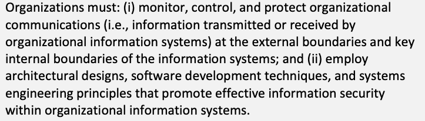
An enterprise’s communications infrastructure is composed of ICT/OT components and systems, which have their own supply chains. These communications allow users or administrators to remotely access an enterprise’s systems and to connect to the internet, other ICT/OT within the enterprise, contractor systems, and – occasionally – supplier systems. An enterprise’s communications infrastructure may be provided and supported by suppliers, developers, system integrators, external system service providers, and other ICT/OT-related service providers.
エンタープライズの通信基盤は、それぞれ独自のサプライチェーンを持つICT/OTコンポーネントとシステムで構成される。この通信により、利用者または管理者はエンタープライズのシステムにリモートアクセスし、インターネット、エンタープライズ内の他のICT/OT、請負業者のシステム、場合によってはサプライヤーのシステムに接続できる。エンタープライズの通信基盤は、サプライヤー、開発者、システムインテグレーター、外部システムサービスプロバイダー、その他のICT/OT関連サービスプロバイダーが提供・支援する場合がある。
SC-1 POLICY AND PROCEDURES
SC-1 方針および手順
Supplemental C-SCRM Guidance: System and communications protection policies and procedures should address cybersecurity risks throughout the supply chain in relation to the enterprise’s processes, systems, and networks. Enterprise-level and program-specific policies help establish and clarify these requirements, and corresponding procedures provide instructions for meeting these requirements. Policies and procedures should include the coordination of communications among and across multiple enterprise entities within the enterprise, as well as the communications methods, external connections, and processes used between the enterprise and its suppliers, developers, system integrators, external system service providers, and other ICT/OT-related service providers.
補足C-SCRM指針：システムおよび通信の保護に関する方針・手順では、エンタープライズのプロセス、システム、ネットワークに関して、サプライチェーン全体のサイバーセキュリティリスクに対処するべきである。エンタープライズレベルおよびプログラム固有の方針は要件の確立・明確化に役立ち、対応する手順は要件を満たすための指示を提供する。方針・手順には、エンタープライズ内の複数の組織間および組織全体にわたる通信の調整と、エンタープライズとサプライヤー、開発者、システムインテグレーター、外部システムサービスプロバイダー、その他のICT/OT関連サービスプロバイダーとの間で使用する通信方法、外部接続、プロセスを含めるべきである。
未レビュー訳Level(s): 1, 2, 3
適用レベル：1、2、3
SC-4 INFORMATION IN SHARED RESOURCES
SC-4 共有資源内の情報
Supplemental C-SCRM Guidance: The enterprise may share information system resources with system suppliers, developers, system integrators, external system service providers, and other ICT/OT-related service providers. Protecting information in shared resources in support of various supply chain activities is challenging when outsourcing key operations. Enterprises may either share too much and increase their risk or share too little and make it difficult for suppliers, developers, system integrators, external system service providers, and other ICT/OT-related service providers to be efficient in their service delivery. The enterprise should work with developers to define a structure or process for information sharing, including the data shared, the method of sharing, and to whom (the specific roles) the information is provided. Appropriate privacy, dissemination, handling, and clearance requirements should be accounted for in the information-sharing process.
補足C-SCRM指針：エンタープライズは、システムサプライヤー、開発者、システムインテグレーター、外部システムサービスプロバイダー、その他のICT/OT関連サービスプロバイダーと情報システム資源を共有する場合がある。重要な運用を外部委託する場合、さまざまなサプライチェーン活動を支援する共有資源内の情報を保護することは困難である。共有しすぎるとリスクが高まり、共有が少なすぎるとサプライヤー、開発者、システムインテグレーター、外部システムサービスプロバイダー、その他のICT/OT関連サービスプロバイダーが効率的にサービスを提供しにくくなる可能性がある。エンタープライズは開発者と協力して、共有するデータ、共有方法、情報を提供する相手（具体的な役割）を含む情報共有の構造またはプロセスを定義するべきである。情報共有プロセスでは、適切なプライバシー、配布、取扱い、クリアランス要件を考慮するべきである。
未レビュー訳Level(s): 2, 3
適用レベル：2、3
SC-5 DENIAL-OF-SERVICE PROTECTION
SC-5 サービス妨害攻撃からの保護
Supplemental C-SCRM Guidance: C-SCRM Guidance supplemental guidance is provided in control enhancement SC-5 (2).
補足C-SCRM指針：C-SCRMに関する補足指針は、管理策の強化SC-5 (2)に記載されている。
Control Enhancement(s):
管理策の強化：
(2) DENIAL-OF-SERVICE PROTECTION | CAPACITY, BANDWIDTH, AND REDUNDANCY
（2）サービス妨害攻撃からの保護 | 容量、帯域幅および冗長性
Supplemental C-SCRM Guidance: The enterprise should include requirements for excess capacity, bandwidth, and redundancy into agreements with suppliers, developers, system integrators, external system service providers, and other ICT/OT-related service providers.
補足C-SCRM指針：エンタープライズは、余剰容量、帯域幅、冗長性に関する要件を、サプライヤー、開発者、システムインテグレーター、外部システムサービスプロバイダー、その他のICT/OT関連サービスプロバイダーとの合意に含めるべきである。
Level(s): 2
適用レベル：2
SC-7 BOUNDARY PROTECTION
SC-7 境界保護
Supplemental C-SCRM Guidance: The enterprise should implement appropriate monitoring mechanisms and processes at the boundaries between the agency systems and suppliers, developers, system integrators, external system service providers, and other ICT/OT-related service providers’ systems. Provisions for boundary protections should be incorporated into agreements with suppliers, developers, system integrators, external system service providers, and other ICT/OT-related service providers. There may be multiple interfaces throughout the enterprise, supplier systems and networks, and the SDLC. Appropriate vulnerability, threat, and risk assessments should be performed to ensure proper boundary protections for supply chain components and supply chain information flow. The vulnerability, threat, and risk assessments can aid in scoping boundary protection to a relevant set of criteria and help manage associated costs. For contracts with external service providers, enterprises should ensure that the provider satisfies boundary control requirements pertinent to environments and networks within their span of control. Further detail is provided in Section 2 and Appendix C. Enterprises should require their prime contractors to implement this control and flow down this requirement to relevant sub-tier contractors. Departments and agencies should refer to Appendix F to implement this guidance in accordance with Executive Order 14028, Improving the Nation’s Cybersecurity.
補足C-SCRM指針：エンタープライズは、機関のシステムと、サプライヤー、開発者、システムインテグレーター、外部システムサービスプロバイダー、その他のICT/OT関連サービスプロバイダーのシステムとの境界に、適切な監視機構とプロセスを実装するべきである。境界保護の規定を、これらの事業者との合意に組み込むべきである。エンタープライズ、サプライヤーのシステム・ネットワーク、SDLC全体に複数のインターフェースが存在する場合がある。サプライチェーンのコンポーネントと情報フローに適切な境界保護を確保するため、適切な脆弱性、脅威、リスク評価を実施するべきである。これらの評価は、関連する基準一式に境界保護の範囲を絞り込み、関連コストの管理に役立つ。外部サービスプロバイダーとの契約について、エンタープライズは、プロバイダーが管理する環境・ネットワークに関係する境界制御要件を満たしていることを確保するべきである。詳細は第2節と付録Cに記載されている。エンタープライズは、元請業者にこの管理策を実装させ、関連する下位階層の請負業者にもこの要件を展開させるべきである。省庁・機関は、大統領令14028『国家のサイバーセキュリティの改善』に従って本指針を実装するため、付録Fを参照するべきである。
Level(s): 2
適用レベル：2
Control Enhancement(s):
管理策の強化：
(13) BOUNDARY PROTECTION | ISOLATION OF SECURITY TOOLS, MECHANISMS, AND
（13）境界保護 | セキュリティツール、機構および支援コンポーネントの分離
未レビュー訳SUPPORT COMPONENTS
（13）境界保護 | セキュリティツール、機構および
未レビュー訳Supplemental C-SCRM Guidance: The enterprise should provide separation and isolation of development, test, and security assessment tools and operational environments and relevant monitoring tools within the enterprise’s information systems and networks. This control applies the entity responsible for creating software and hardware, to include federal agencies and prime contractors. As such, this controls applies to the federal agency and applicable supplier information systems and networks. Enterprises should require their prime contractors to implement this control and flow down this requirement to relevant sub-tier contractors. If a compromise or information leakage happens in any one environment, the other environments should still be protected through the separation and isolation mechanisms or techniques.
支援コンポーネント
未レビュー訳Level(s): 3
適用レベル：3
Related Controls: SR-3(3)
関連管理策：SR-3(3)
(14) BOUNDARY PROTECTION | PROTECT AGAINST UNAUTHORIZED PHYSICAL
（14）境界保護 | 無許可の物理
未レビュー訳CONNECTIONS
接続に対する保護
未レビュー訳Supplemental C-SCRM Guidance: This control is relevant to C-SCRM as it applies to external service providers.
補足C-SCRM指針：この管理策は、外部サービスプロバイダーに適用されるため、C-SCRMに関連する。
Level(s): 2,3
適用レベル：2、3
Related Controls: SR-3(3)
関連管理策：SR-3(3)
(19) BOUNDARY PROTECTION | BLOCKS COMMUNICATION FROM NON-
（19）境界保護 | 組織の構成に従わないホストからの
未レビュー訳ORGANIZATIONALLY CONFIGURED HOSTS
通信の遮断
未レビュー訳Supplemental C-SCRM Guidance: This control is relevant to C-SCRM as it applies to external service providers.
補足C-SCRM指針：この管理策は、外部サービスプロバイダーに適用されるため、C-SCRMに関連する。
Level(s): 3
適用レベル：3
SC-8 TRANSMISSION CONFIDENTIALITY AND INTEGRITY
SC-8 伝送時の機密性と完全性
Supplemental C-SCRM Guidance: The requirements for transmission confidentiality and integrity should be integrated into agreements with suppliers, developers, system integrators, external system service providers, and other ICT/OT-related service providers. Acquirers, suppliers, developers, system integrators, external system service providers, and other ICT/OT-related service providers may repurpose existing security mechanisms (e.g., authentication, authorization, or encryption) to achieve enterprise confidentiality and integrity requirements. The degree of protection should be based on the sensitivity of information to be transmitted and the relationship between the enterprise and the suppliers, developers, system integrators, external system service providers, and other ICT/OT-related service providers. Enterprises should require their prime contractors to implement this control and flow down this requirement to relevant sub-tier contractors. Departments and agencies should refer to Appendix F to implement this guidance in accordance with Executive Order 14028, Improving the Nation’s Cybersecurity.
補足C-SCRM指針：伝送時の機密性・完全性に関する要件を、サプライヤー、開発者、システムインテグレーター、外部システムサービスプロバイダー、その他のICT/OT関連サービスプロバイダーとの合意に統合するべきである。調達側、サプライヤー、開発者、システムインテグレーター、外部システムサービスプロバイダー、その他のICT/OT関連サービスプロバイダーは、エンタープライズの機密性・完全性要件を満たすため、既存のセキュリティ機構（例：認証、認可、暗号化）を転用できる場合がある。保護の程度は、伝送する情報の機微性と、エンタープライズと各事業者との関係に基づくべきである。エンタープライズは、元請業者にこの管理策を実装させ、関連する下位階層の請負業者にもこの要件を展開させるべきである。省庁・機関は、大統領令14028『国家のサイバーセキュリティの改善』に従って本指針を実装するため、付録Fを参照するべきである。
Level(s): 2, 3
適用レベル：2、3
SC-18 MOBILE CODE
SC-18 モバイルコード
Supplemental C-SCRM Guidance: The enterprise should use this control in various applications of mobile code within their information systems and networks. Examples include acquisition processes such as the electronic transmission of supply chain information (e.g., email), the receipt of software components, logistics information management in RFID, or transport sensors infrastructure.
補足C-SCRM指針：エンタープライズは、情報システムおよびネットワークにおけるモバイルコードのさまざまな利用場面でこの管理策を使用するべきである。例として、サプライチェーン情報の電子送信（例：電子メール）などの調達プロセス、ソフトウェアコンポーネントの受領、RFIDにおける物流情報管理、輸送センサー基盤が挙げられる。
Level(s): 3
適用レベル：3
Control Enhancement(s):
管理策の強化：
(1) MOBILE CODE | ACQUISITION, DEVELOPMENT, AND USE
（1）モバイルコード | 調達、開発および使用
Supplemental C-SCRM Guidance: The enterprise should employ rigorous supply chain protection techniques in the acquisition, development, and use of mobile code to be deployed in the information system. Examples include ensuring that mobile code originates from vetted sources when acquired, that vetted system integrators are used for the development of custom mobile code or prior to installing, and that verification processes are in place for acceptance criteria prior to installation in order to verify the source and integrity of code. Note that mobile code can be both code for the underlying information systems and networks (e.g., RFID device applications) or for information systems and components.
補足C-SCRM指針：エンタープライズは、情報システムに展開するモバイルコードの調達、開発、使用において、厳格なサプライチェーン保護技法を適用するべきである。例として、調達時にモバイルコードが審査済みの供給元に由来すること、カスタムモバイルコードの開発またはインストール前に審査済みのシステムインテグレーターを利用すること、インストール前に受入基準を検証してコードの出所と完全性を確認するプロセスを整備することが挙げられる。モバイルコードには、基盤となる情報システム・ネットワーク用のコード（例：RFID装置のアプリケーション）と、情報システム・コンポーネント用のコードの両方が含まれる点に留意されたい。
Level(s): 3
適用レベル：3
SC-27 PLATFORM-INDEPENDENT APPLICATIONS
SC-27 プラットフォーム非依存アプリケーション
Supplemental C-SCRM Guidance: The use of trustworthy platform-independent applications is essential to C-SCRM. The enhanced portability of platform-independent applications enables enterprises to switch external service providers more readily in the event that one becomes compromised, thereby reducing vendor-dependent cybersecurity risks. This is especially relevant for critical applications on which multiple systems may rely.
補足C-SCRM指針：信頼できるプラットフォーム非依存アプリケーションの利用はC-SCRMに不可欠である。プラットフォーム非依存アプリケーションの可搬性が高まることで、外部サービスプロバイダーが侵害された場合にエンタープライズがより容易に別のプロバイダーへ切り替えられ、ベンダー依存によるサイバーセキュリティリスクが低減する。複数のシステムが依存する重要アプリケーションでは、特に重要である。
Level(s): 2, 3
適用レベル：2、3
SC-28 PROTECTION OF INFORMATION AT REST
SC-28 保存データの保護
Supplemental C-SCRM Guidance: The enterprise should include provisions for the protection of information at rest into their agreements with suppliers, developers, system integrators, external system service providers, and other ICT/OT-related service providers. The enterprise should also ensure that they provide appropriate protections within the information systems and networks for data at rest for the suppliers, developers, system integrators, external system service providers, and other ICT/OT-related service providers information, such as source code, testing data, blueprints, and intellectual property information. This control should be applied throughout the SDLC, including during requirements, development, manufacturing, test, inventory management, maintenance, and disposal. Enterprises should require their prime contractors to implement this control and flow down this requirement to relevant sub-tier contractors. Departments and agencies should refer to Appendix F to implement this guidance in accordance with Executive Order 14028, Improving the Nation’s Cybersecurity.
補足C-SCRM指針：エンタープライズは、保存データの保護に関する規定を、サプライヤー、開発者、システムインテグレーター、外部システムサービスプロバイダー、その他のICT/OT関連サービスプロバイダーとの合意に含めるべきである。また、エンタープライズは、ソースコード、試験データ、設計図、知的財産情報など、各事業者の保存データを情報システム・ネットワーク内で適切に保護するべきである。この管理策は、要件定義、開発、製造、試験、インベントリ管理、保守、廃棄を含むSDLC全体に適用するべきである。エンタープライズは、元請業者にこの管理策を実装させ、関連する下位階層の請負業者にもこの要件を展開させるべきである。省庁・機関は、大統領令14028『国家のサイバーセキュリティの改善』に従って本指針を実装するため、付録Fを参照するべきである。
未レビュー訳Level(s): 2, 3
レベル：2、3
Related Controls: SR-3(3)
関連管理策：SR-3(3)
SC-29 HETEROGENEITY
SC-29 異種性
Supplemental C-SCRM Guidance: Heterogeneity techniques include the use of different operating systems, virtualization techniques, and multiple sources of supply. Multiple sources of supply can improve component availability and reduce the impact of a supply chain cybersecurity compromise. In case of a supply chain cybersecurity compromise, an alternative source of supply will allow the enterprises to more rapidly switch to an alternative system/component that may not be affected by the compromise. Additionally, heterogeneous components decrease the attack surface by limiting the impact to the subset of the infrastructure that is using vulnerable components.
C-SCRM補足指針：異種性を確保する手法には、異なるオペレーティングシステムや仮想化技術の使用、複数の供給元の確保が含まれる。複数の供給元により、コンポーネントの可用性を高め、サプライチェーン・サイバーセキュリティ侵害の影響を低減できる。侵害が発生した場合、代替供給元があれば、侵害の影響を受けていない可能性のある代替システム／コンポーネントへ、より迅速に切り替えられる。また、異種コンポーネントは脆弱なコンポーネントを使用する基盤の一部に影響を限定し、攻撃対象領域を縮小する。
Level(s): 2, 3
レベル：2、3
SC-30 CONCEALMENT AND MISDIRECTION
SC-30 隠蔽および欺瞞
Supplemental C-SCRM Guidance: Concealment and misdirection techniques for C-SCRM include the establishment of random resupply times, the concealment of location, randomly changing the fake location used, and randomly changing or shifting information storage into alternative servers or storage mechanisms.
補足的なC-SCRM指針：C-SCRMにおける隠蔽・欺瞞手法には、補給時期の無作為化、場所の秘匿、使用する偽装場所のランダムな変更、情報の保管先を代替サーバーや保管機構へ無作為に変更・移行することが含まれる。
Level(s): 2, 3
レベル：2、3
Control Enhancement(s):
管理策の強化：
(2) CONCEALMENT AND MISDIRECTION | RANDOMNESS
(2) 隠蔽および欺瞞 | ランダム性
Supplemental C-SCRM Guidance: Supply chain processes are necessarily structured with predictable, measurable, and repeatable processes for the purpose of efficiency and cost reduction. This opens up the opportunity for potential breach. In order to protect against compromise, the enterprise should employ techniques to introduce randomness into enterprise operations and assets in the enterprise’s systems or networks (e.g., randomly switching among several delivery enterprises or routes, or changing the time and date of receiving supplier software updates if previously predictably scheduled).
補足的なC-SCRM指針：効率向上と費用削減のため、サプライチェーンのプロセスは必然的に予測可能で測定可能かつ反復可能な形で構成されている。そのため侵害の機会が生まれる。侵害を防ぐため、エンタープライズは自らのシステムやネットワークにおけるエンタープライズの運用・資産にランダム性を導入する手法を採用するべきである（例：複数の配送事業者または経路を無作為に切り替える、予測可能な予定が組まれていたサプライヤーのソフトウェア更新の受領日時を変更する）。
Level(s): 2, 3
レベル：2、3
(3) CONCEALMENT AND MISDIRECTION | CHANGE PROCESSING AND STORAGE
(3) 隠蔽および欺瞞 | 処理・保管場所の変更
未レビュー訳LOCATIONS
場所
未レビュー訳Supplemental C-SCRM Guidance: Changes in processing or storage locations can be used to protect downloads, deliveries, or associated supply chain metadata. The enterprise may leverage such techniques within their information systems and networks to create uncertainty about the activities targeted by adversaries. Establishing a few process changes and randomizing their use – whether it is for receiving, acceptance testing, storage, or other supply chain activities – can aid in reducing the likelihood of a supply chain event.
C-SCRM補足指針：処理・保管場所の変更を利用して、ダウンロード、納入、関連するサプライチェーン・メタデータを保護できる。企業は情報システム・ネットワークでこうした手法を活用し、攻撃者が狙う活動を不確実にできる。受領、受入試験、保管、その他のサプライチェーン活動に関するプロセス変更をいくつか確立し、その使用をランダム化すれば、サプライチェーン事象の発生可能性を低減できる。
未レビュー訳Level(s): 2, 3
レベル：2、3
(4) CONCEALMENT AND MISDIRECTION | MISLEADING INFORMATION
(4) 隠蔽および欺瞞 | 誤解を招く情報
Supplemental C-SCRM Guidance: The enterprise can convey misleading information as part of concealment and misdirection efforts to protect the information system being developed and the enterprise’s systems and networks. Examples of such efforts in security include honeynets or virtualized environments. Implementations can be leveraged to convey misleading information. These may be considered advanced techniques that require experienced resources to effectively implement them. If an enterprise decides to use honeypots, it should be done in concert with legal counsel or following the enterprise’s policies.
補足的なC-SCRM指針：エンタープライズは、開発中の情報システムならびにエンタープライズのシステム・ネットワークを保護する隠蔽・欺瞞策の一環として、誤解を招く情報を伝えることができる。セキュリティ分野におけるこうした取り組みの例には、ハニーネットや仮想化環境がある。実装を活用して誤解を招く情報を伝達できる。これらは、効果的に実装するには経験豊富な人員を要する高度な手法とみなされる場合がある。エンタープライズがハニーポットを使用する場合は、法律顧問と連携して、またはエンタープライズの方針に従って実施するべきである。
Level(s): 2, 3
レベル：2、3
(5) CONCEALMENT AND MISDIRECTION | CONCEALMENT OF SYSTEM COMPONENTS
(5) 隠蔽および欺瞞 | システムコンポーネントの隠蔽
Supplemental C-SCRM Guidance: The enterprise may employ various concealment and misdirection techniques to protect information about the information system being developed and the enterprise’s information systems and networks. For example, the delivery of critical components to a central or trustworthy third-party depot can be used to conceal or misdirect any information regarding the component’s use or the enterprise using the component. Separating components from their associated information into differing physical and electronic delivery channels and obfuscating the information through various techniques can be used to conceal information and reduce the opportunity for a potential loss of confidentiality of the component or its use, condition, or other attributes.
補足的なC-SCRM指針：エンタープライズは、開発中の情報システムとエンタープライズの情報システム・ネットワークに関する情報を保護するため、さまざまな隠蔽・欺瞞手法を採用できる。例えば、重要コンポーネントを中央の保管所または信頼できる第三者の保管所に納入すれば、そのコンポーネントの用途や、それを使用するエンタープライズに関する情報を隠蔽・偽装できる。コンポーネントと関連情報を異なる物理的・電子的配送経路に分け、さまざまな手法で情報を難読化すれば、情報を秘匿し、コンポーネントまたはその用途、状態、その他の属性の機密性喪失の可能性を低減できる。
Level(s): 2, 3
レベル：2、3
SC-36 DISTRIBUTED PROCESSING AND STORAGE
SC-36 分散処理および保管
Supplemental C-SCRM Guidance: Processing and storage can be distributed both across the enterprise’s systems and networks and across the SDLC. The enterprise should ensure that these techniques are applied in both contexts. Development, manufacturing, configuration management, test, maintenance, and operations can use distributed processing and storage. This control applies to the entity responsible for processing and storage functions or related infrastructure, to include federal agencies and contractors. As such, this control applies to the federal agency and applicable supplier information systems and networks. Enterprises should require their prime contractors to implement this control and flow down this requirement to relevant sub-tier contractors.
C-SCRM補足指針：処理と保管は企業のシステム・ネットワーク間、およびSDLC全体に分散できる。企業は両方の状況でこの手法が適用されるようにすべきである。開発、製造、構成管理、試験、保守、運用に分散処理・保管を利用できる。本管理策は、処理・保管機能または関連基盤の責任主体（連邦機関および請負業者を含む）に適用される。そのため、連邦機関および該当する供給者の情報システム・ネットワークにも適用される。企業は、元請業者に本管理策を実施させ、この要件を関連する下位階層の請負業者に展開すべきである。
未レビュー訳Level(s): 2, 3
レベル：2、3
Related Controls: SR-3(3)
関連管理策：SR-3(3)
SC-37 OUT-OF-BAND CHANNELS
SC-37 帯域外チャネル
Supplemental C-SCRM Guidance: C-SCRM-specific supplemental guidance is provided in control enhancement SC-37 (1).
補足的なC-SCRM指針：C-SCRM固有の補足指針は、管理策の強化SC-37 (1)に示されている。
Control Enhancement(s):
管理策の強化：
(1) OUT-OF-BAND CHANNELS | ENSURE DELIVERY AND TRANSMISSION
(1) 帯域外チャネル | 納入・送信の確保
Supplemental C-SCRM Guidance: The enterprise should employ security safeguards to ensure that only specific individuals or information systems receive the information about the information system or its development environment and processes. For example, proper credentialing and authorization documents should be requested and verified prior to the release of critical components, such as custom chips, custom software, or information during delivery.
C-SCRM補足指針：情報システムやその開発環境・プロセスに関する情報を特定の個人または情報システムだけが受け取るよう、企業はセキュリティ保護策を採用すべきである。例えば、カスタムチップ、カスタムソフトウェアなどの重要コンポーネントや情報を納入時に開示する前に、適切な認証情報および認可文書を要求し、検証すべきである。
Level(s): 2, 3
レベル：2、3
SC-38 OPERATIONS SECURITY
SC-38 運用セキュリティ
Supplemental C-SCRM Guidance: The enterprise should ensure that appropriate supply chain threat and vulnerability information is obtained from and provided to the applicable operational security processes.
C-SCRM補足指針：企業は、適切なサプライチェーンの脅威・脆弱性情報が運用セキュリティの該当プロセスから取得され、そこに提供されるようにすべきである。
Level(s): 2, 3
レベル：2、3
Related Control(s): SR-7
関連管理策：SR-7
SC-47 ALTERNATIVE COMMUNICATIONS PATHS
SC-47 代替通信経路
Supplemental C-SCRM Guidance: If necessary and appropriate, suppliers, developers, system integrators, external system service providers, and other ICT/OT-related service providers should be included in the alternative communication paths described in this control.
必要かつ適切な場合、本管理策が示す代替通信経路に、供給者、開発者、システムインテグレーター、外部システムサービスプロバイダー、その他のICT/OT関連サービスプロバイダーを含めるべきである。
Level(s): 1, 2, 3
レベル：1、2、3
A.2.21. FAMILY: SYSTEM AND INFORMATION INTEGRITY
A.2.21. ファミリー：システムおよび情報の完全性
[FIPS200] specifies the System and Information Integrity minimum security requirement as follows:
[FIPS200]は、システムおよび情報の完全性に関する最低限のセキュリティ要件を次のように定めている。
原本PDFの抜粋画像
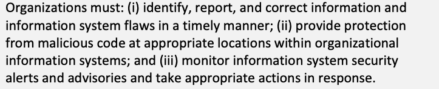
System and information integrity for systems and components traversing the supply chain is critical for managing cybersecurity risks throughout the supply chain. The insertion of malicious code and counterfeits are two primary examples of cybersecurity risks throughout the supply chain, both of which can at least partially be addressed by deploying system and information integrity controls. Enterprises should ensure that adequate system and information integrity protections are part of C-SCRM.
サプライチェーンを通過するシステム・コンポーネントの完全性は、サプライチェーン全体のサイバーセキュリティリスク管理に不可欠である。悪意あるコードと偽造品の挿入は、サプライチェーン全体のサイバーセキュリティリスクの主な例であり、いずれもシステム・情報完全性管理策の導入によって少なくとも部分的に対処できる。企業は、適切なシステム・情報完全性保護をC-SCRMの一部として確保すべきである。
SI-1 POLICY AND PROCEDURES
SI-1 方針および手順
Supplemental C-SCRM Guidance: The enterprise should include C-SCRM in system and information integrity policy and procedures, including ensuring that program-specific requirements for employing various integrity verification tools and techniques are clearly defined. System and information integrity for information systems, components, and the underlying information systems and networks is critical for managing cybersecurity risks throughout the supply chain. The insertion of malicious code and counterfeits are two primary examples of cybersecurity risks throughout the supply chain, both of which can be at least partially addressed by deploying system and information integrity controls.
C-SCRM補足指針：企業は、システム・情報完全性の方針・手順にC-SCRMを含めるべきである。これには、さまざまな完全性検証ツール・技法の使用に関するプログラム固有の要件を明確に定義することが含まれる。情報システム、コンポーネント、基盤となる情報システム・ネットワークの完全性は、サプライチェーン全体のサイバーセキュリティリスク管理に不可欠である。悪意あるコードや偽造品の挿入は、主なリスク例であり、いずれもシステム・情報完全性管理策の導入によって少なくとも部分的に対処できる。
Level(s): 1, 2, 3
レベル：1、2、3
Related Controls: SR-1, 9, 10, 11
関連管理策：SR-1、9、10、11
SI-2 FLAW REMEDIATION
SI-2 欠陥の是正
Supplemental C-SCRM Guidance: The output of flaw remediation activities provides useful input into the ICT/OT SCRM processes described in Section 2 and Appendix C. Enterprises should require their prime contractors to implement this control and flow down this requirement to relevant sub-tier contractors.
C-SCRM補足指針：欠陥是正活動の成果は、第2節および付録Cで説明するICT/OTのSCRMプロセスへの有用な入力となる。企業は、元請業者に本管理策を実施させ、この要件を関連する下位階層の請負業者に展開すべきである。
Level(s): 2, 3
レベル：2、3
Control Enhancement(s):
管理策の強化：
(5) FLAW REMEDIATION | AUTOMATIC SOFTWARE AND FIRMWARE UPDATES
(5) 欠陥の是正 | ソフトウェア・ファームウェアの自動更新
Supplemental C-SCRM Guidance: The enterprise should specify the various software assets within its information systems and networks that require automated updates (both indirect and direct). This specification of assets should be defined from criticality analysis results, which provide information on critical and non-critical functions and components (see Section 2 and Appendix C). A centralized patch management process may be employed for evaluating and managing updates prior to deployment. Those software assets that require direct updates from a supplier should only accept updates that originate directly from the OEM unless specifically deployed by the acquirer, such as with a centralized patch management process. Departments and agencies should refer to Appendix F to implement this guidance in accordance with Executive Order 14028, Improving the Nation’s Cybersecurity.
C-SCRM補足指針：企業は、情報システム・ネットワーク内で直接または間接に自動更新を必要とするソフトウェア資産を指定すべきである。重要・非重要な機能およびコンポーネントに関する情報を提供する重要度分析結果に基づき、資産を指定すること（第2節および付録Cを参照）。配備前の更新評価・管理には、一元的なパッチ管理プロセスを利用できる。供給者から直接更新を受ける必要があるソフトウェア資産は、取得者が一元的なパッチ管理プロセスなどで明示的に配備する場合を除き、OEMから直接提供された更新のみ受け入れるべきである。各省庁・機関は、大統領令14028『国のサイバーセキュリティの改善』に従って本指針を実施するため、付録Fを参照されたい。
Level(s): 2
レベル：2
SI-3 MALICIOUS CODE PROTECTION
SI-3 悪意あるコードからの保護
Supplemental C-SCRM Guidance: Because the majority of code operated in federal systems is not developed by the Federal Government, malicious code threats often originate from the supply chain. This controls applies to the federal agency and contractors with code-related responsibilities (e.g., developing code, installing patches, performing system upgrades, etc.), as well as applicable contractor information systems and networks. Enterprises should require their prime contractors to implement this control and flow down this requirement to relevant sub-tier contractors. Departments and agencies should refer to Appendix F to implement this guidance in accordance with Executive Order 14028, Improving the Nation’s Cybersecurity.
C-SCRM補足指針：連邦システムで稼働するコードの大半は連邦政府が開発したものではないため、悪意あるコードの脅威はサプライチェーンに起因することが少なくない。本管理策は、連邦機関、コード関連の責任（例：コード開発、パッチ適用、システム更新）を持つ請負業者、および該当する請負業者の情報システム・ネットワークに適用される。企業は、元請業者に本管理策を実施させ、この要件を関連する下位階層の請負業者に展開すべきである。各省庁・機関は、大統領令14028『国のサイバーセキュリティの改善』に従って本指針を実施するため、付録Fを参照されたい。
Level(s): 2, 3
レベル：2、3
Related Controls: SA-11; SI-7(15); SI-3(4), (6), (8), and (10); SR-3(3)
関連管理策：SA-11、SI-7(15)、SI-3(4)、(6)、(8)、(10)、SR-3(3)
SI-4 SYSTEM MONITORING
SI-4 システム監視
Supplemental C-SCRM Guidance: This control includes monitoring vulnerabilities that result from past supply chain cybersecurity compromises, such as malicious code implanted during software development and set to activate after deployment. System monitoring is frequently performed by external service providers. Service-level agreements with these providers should be structured to appropriately reflect this control. Enterprises should require their prime contractors to implement this control and flow down this requirement to relevant sub-tier contractors. Departments and agencies should refer to Appendix F to implement this guidance in accordance with Executive Order 14028, Improving the Nation’s Cybersecurity.
C-SCRM補足指針：本管理策には、ソフトウェア開発中に埋め込まれ、配備後に作動するよう設定された悪意あるコードなど、過去のサプライチェーン・サイバーセキュリティ侵害に起因する脆弱性の監視が含まれる。システム監視は外部サービスプロバイダーが実施することが多いため、サービスレベル合意書に本管理策が適切に反映されるよう構成すべきである。企業は、元請業者に本管理策を実施させ、この要件を関連する下位階層の請負業者に展開すべきである。各省庁・機関は、大統領令14028『国のサイバーセキュリティの改善』に従って本指針を実施するため、付録Fを参照されたい。
Level(s): 1, 2, 3
レベル：1、2、3
Control Enhancement(s):
管理策の強化：
(17) SYSTEM MONITORING | INTEGRATED SITUATIONAL AWARENESS
(17) システム監視 | 統合的な状況認識
Supplemental C-SCRM Guidance: System monitoring information may be correlated with that of suppliers, developers, system integrators, external system service providers, and other ICT/OT-related service providers, if appropriate. The results of correlating monitoring information may point to supply chain cybersecurity vulnerabilities that require mitigation or compromises.
C-SCRM補足指針：適切な場合、システム監視情報を供給者、開発者、システムインテグレーター、外部システムサービスプロバイダー、その他のICT/OT関連サービスプロバイダーの情報と相関付けることができる。監視情報の相関分析により、低減を要するサプライチェーン・サイバーセキュリティ脆弱性や侵害が明らかになる場合がある。
Level(s): 2, 3
レベル：2、3
(19) SYSTEM MONITORING | RISK FOR INDIVIDUALS
(19) システム監視 | 個人に対するリスク
Supplemental C-SCRM Guidance: Persons identified as being of higher risk may include enterprise employees, contractors, and other third parties (e.g., volunteers, visitors) who may have the need or ability to access to an enterprise’s system, network, or system environment. The enterprise may implement enhanced oversight of these higher-risk individuals in accordance with policies, procedures, and — if relevant — terms of an agreement and in coordination with appropriate officials.
C-SCRM補足指針：高リスクと特定された者には、企業のシステム、ネットワーク、システム環境にアクセスする必要または能力を持つ従業員、請負業者、その他の第三者（例：ボランティア、訪問者）が含まれる場合がある。企業は、方針・手順、および該当する場合は合意条件に従い、適切な職員と連携して、こうした高リスク者への監督を強化できる。
未レビュー訳Level(s): 2, 3
レベル：2、3
SI-5 SECURITY ALERTS, ADVISORIES, AND DIRECTIVES
SI-5 セキュリティ警告、勧告および指令
Supplemental C-SCRM Guidance: The enterprise should evaluate security alerts, advisories, and directives for cybersecurity supply chain impacts and follow up if needed. US-CERT, FASC, and other authoritative entities generate security alerts and advisories that are applicable to C-SCRM. Additional laws and regulations will impact who and how additional advisories are provided. Enterprises should ensure that their information-sharing protocols and processes include sharing alerts, advisories, and directives with relevant parties with whom they have an agreement to deliver products or perform services. Enterprises should provide direction or guidance as to what actions are to be taken in response to sharing such an alert, advisory, or directive. Enterprises should require their prime contractors to implement this control and flow down this requirement to relevant sub-tier contractors. Departments and agencies should refer to Appendix F to implement this guidance in accordance with Executive Order 14028, Improving the Nation’s Cybersecurity.
C-SCRM補足指針：企業はセキュリティ警告、勧告、指令がサプライチェーンのサイバーセキュリティに与える影響を評価し、必要に応じて対応すべきである。US-CERT、FASC、その他の権威ある組織は、C-SCRMに適用される警告・勧告を発行する。追加の法令・規制は、追加の勧告を誰がどのように提供するかに影響する。企業は、自らの情報共有プロトコルおよびプロセスに、製品の提供またはサービスの実施について合意を結んでいる関係者への警告、勧告、指令の共有が含まれるようにするべきである。こうした警告等を共有する際に取るべき行動について、企業は指示または指針を提供すべきである。企業は、元請業者に本管理策を実施させ、この要件を関連する下位階層の請負業者に展開すべきである。各省庁・機関は、大統領令14028『国家のサイバーセキュリティの改善』に従って本指針を実施するため、付録Fを参照するべきである。
Level(s): 1, 2, 3
レベル：1、2、3
SI-7 SOFTWARE, FIRMWARE, AND INFORMATION INTEGRITY
SI-7 ソフトウェア、ファームウェアおよび情報の完全性
Supplemental C-SCRM Guidance: This control applies to the federal agency and applicable supplier products, applications, information systems, and networks. The integrity of all applicable systems and networks should be systematically tested and verified to ensure that it remains as required so that the systems/components traversing through the supply chain are not impacted by unanticipated changes. The integrity of systems and components should also be tested and verified. Applicable verification tools include digital signature or checksum verification; acceptance testing for physical components; confining software to limited privilege environments, such as sandboxes; code execution in contained environments prior to use; and ensuring that if only binary or machine-executable code is available, it is obtained directly from the OEM or a verified supplier or distributer. Mechanisms for this control are discussed in detail in [NIST SP 800-53, Rev. 5]. This control applies to federal agencies and applicable supplier information systems and networks. When purchasing an ICT/OT product, an enterprise should perform due diligence to understand what a supplier’s integrity assurance practices are. Enterprises should require their prime contractors to implement this control and flow down this requirement to relevant sub-tier contractors. Departments and agencies should refer to Appendix F to implement this guidance in accordance with Executive Order 14028, Improving the Nation’s Cybersecurity.
C-SCRM補足指針：本管理策は連邦機関と該当する供給者の製品、アプリケーション、情報システム、ネットワークに適用される。サプライチェーンを通過するシステム／コンポーネントが予期しない変更による影響を受けないよう、該当するすべてのシステム・ネットワークの完全性を体系的に試験・検証し、必要な状態が維持されていることを確認すべきである。システム・コンポーネントの完全性も試験・検証すべきである。検証ツールには、デジタル署名またはチェックサム検証、物理コンポーネントの受入試験、サンドボックスなど権限を制限した環境へのソフトウェアの隔離、使用前の封じ込め環境でのコード実行、バイナリまたは機械実行コードしか入手できない場合にOEM、検証済み供給者、または販売代理店から直接取得することが含まれる。本管理策の機構は[NIST SP 800-53 Rev. 5]で詳述されている。本管理策は連邦機関および該当する供給者の情報システム・ネットワークに適用される。ICT/OT製品を購入する際、企業は供給者の完全性保証慣行を理解するためデューデリジェンスを行うべきである。企業は、元請業者に本管理策を実施させ、この要件を関連する下位階層の請負業者に展開すべきである。各省庁・機関は、大統領令14028『国のサイバーセキュリティの改善』に従って本指針を実施するため、付録Fを参照すること。
Level(s): 2, 3
レベル：2、3
Related Controls: SR-3(3)
関連管理策：SR-3(3)
Control Enhancement(s):
管理策の強化：
(14) SOFTWARE, FIRMWARE, AND INFORMATION INTEGRITY | CODE
(14) ソフトウェア、ファームウェアおよび情報の完全性 | コードの
未レビュー訳AUTHENTICATION
認証
未レビュー訳Supplemental C-SCRM Guidance: The enterprise should ensure that code authentication mechanisms, such as digital signatures, are implemented to ensure the integrity of software, firmware, and information.
C-SCRM補足指針：企業は、ソフトウェア、ファームウェア、情報の完全性を確保するため、デジタル署名などのコード認証機構を実装すべきである。
Level(s): 3
レベル：3
SI-12 INFORMATION MANAGEMENT AND RETENTION
SI-12 情報の管理および保持
Supplemental C-SCRM Guidance: C-SCRM should be included in information management and retention requirements, especially when the sensitive and proprietary information of a system integrator, supplier, or external service provider is concerned.
C-SCRM補足指針：特にシステムインテグレーター、供給者、外部サービスプロバイダーの機微情報・専有情報が関係する場合、情報管理・保持要件にC-SCRMを含めるべきである。
Level(s): 3
レベル：3
SI-20 TAINTING
SI-20 汚染
Supplemental C-SCRM Guidance: Suppliers, developers, system integrators, external system service providers, and other ICT/OT-related service providers may have access to the sensitive information of a federal agency. In this instance, enterprises should require their prime contractors to implement this control and flow down this requirement to relevant sub-tier contractors.
C-SCRM補足指針：供給者、開発者、システムインテグレーター、外部システムサービスプロバイダー、その他のICT/OT関連サービスプロバイダーは、連邦機関の機微情報にアクセスする場合がある。その場合、企業は元請業者に本管理策を実施させ、この要件を関連する下位階層の請負業者に展開すべきである。
Level(s): 2, 3
レベル：2、3
Related Controls: SR-9
関連管理策：SR-9
A.2.22. FAMILY: SUPPLY CHAIN RISK MANAGEMENT
A.2.22. ファミリー：サプライチェーンリスク管理
[FIPS200] does not specify Supply Chain Risk Management minimum security requirements. [SP80053r5] established a new control family: Supply Chain Risk Management. The supplemental guidance below expands upon the SR controls and provides further information and context for their application. This is a new family in SP 800-53, Rev. 5, and guidance already exists in that publication. This document (NIST SP 800-161, Rev. 1) includes all SR control enhancements from SP 800-53, Rev. 5, and the following SR controls and control enhancements have been added to NIST SP 800-53, Rev. 5 [SR-13]. Readers should consult NIST SP 800-53, Rev. 5 SR controls together with the controls in this section.
[FIPS200]は、サプライチェーンリスク管理の最低限のセキュリティ要件を定めていない。[SP80053r5]は新しい管理策ファミリー「サプライチェーンリスク管理」を設けた。以下の補足指針はSR管理策を拡張し、適用に関する追加情報と背景を示す。これはSP 800-53 Rev. 5で新設されたファミリーであり、同刊行物にはすでに指針がある。本書（NIST SP 800-161 Rev. 1）にはSP 800-53 Rev. 5のすべてのSR管理策強化策が含まれ、以下のSR管理策と強化策がNIST SP 800-53 Rev. 5に追加されている[SR-13]。読者はNIST SP 800-53 Rev. 5のSR管理策と本節の管理策を併せて参照すること。
未レビュー訳SR-1 POLICY AND PROCEDURES
SR-1 方針および手順
Supplemental C-SCRM Guidance: C-SCRM policies are developed at Level 1 for the overall enterprise and at Level 2 for specific missions and functions. C-SCRM policies can be implemented at Levels 1, 2, and 3, depending on the level of depth and detail. C-SCRM procedures are developed at Level 2 for specific missions and functions and at Level 3 for specific systems. Enterprise functions including but not limited to information security, legal, risk management, and acquisition should review and concur on the development of C-SCRM policies and procedures or provide guidance to system owners for developing system-specific C-SCRM procedures.
C-SCRM補足指針：全社的なC-SCRM方針はレベル1で、特定の使命・機能向けの方針はレベル2で策定する。詳細度に応じ、レベル1、2、3で実施できる。特定の使命・機能向け手順はレベル2で、個別システム向け手順はレベル3で策定する。情報セキュリティ、法務、リスク管理、取得などの企業機能は、C-SCRM方針・手順の策定を確認・承認するか、システム所有者にシステム固有のC-SCRM手順策定の指針を提供すべきである。
未レビュー訳Level(s): 1, 2, 3
レベル：1、2、3
SR-2 SUPPLY CHAIN RISK MANAGEMENT PLAN
SR-2 サプライチェーンリスク管理計画
Supplemental C-SCRM Guidance: C-SCRM plans describe implementations, requirements, constraints, and implications at the system level. C-SCRM plans are influenced by the enterprise’s other risk assessment activities and may inherit and tailor common control baselines defined at Level 1 and Level 2. C-SCRM plans defined at Level 3 work in collaboration with the enterprise’s C-SCRM Strategy and Policies (Level 1 and Level 2) and the C-SCRM Implementation Plan (Level 1 and Level 2) to provide a systematic and holistic approach for cybersecurity supply chain risk management across the enterprise.
C-SCRM補足指針：C-SCRM計画はシステムレベルの実装、要件、制約、影響を記述する。企業の他のリスク評価活動の影響を受け、レベル1・2で定めた共通管理策ベースラインを継承・調整する場合がある。レベル3のC-SCRM計画は、レベル1・2のC-SCRM戦略・方針およびレベル1・2のC-SCRM実施計画と連携し、企業全体にわたるサイバーセキュリティ・サプライチェーンリスク管理に体系的かつ包括的に取り組む。
C-SCRM plans should be developed as a standalone document and only integrated into existing system security plans if enterprise constraints require it.
企業の制約上必要な場合を除き、C-SCRM計画は独立した文書として策定し、既存のシステムセキュリティ計画に統合すべきではない。
Level(s): 3
レベル：3
Related Controls: PL-2
関連管理策：PL-2
SR-3 SUPPLY CHAIN CONTROLS AND PROCESSES
SR-3 サプライチェーン管理策およびプロセス
Supplemental C-SCRM Guidance: Section 2 and Appendix C of this document provide detailed guidance on implementing this control. Departments and agencies should refer to Appendix F to implement this guidance in accordance with Executive Order 14028 on Improving the Nation's Cybersecurity.
本書の第2節と付録Cに、本管理策の実施に関する詳しい指針を示す。各省庁・機関は、大統領令14028『国のサイバーセキュリティの改善』に従って本指針を実施するため、付録Fを参照すること。
Level(s): 1, 2, 3
レベル：1、2、3
Control Enhancement(s):
管理策の強化：
(1) SUPPLY CHAIN CONTROLS AND PROCESSES | DIVERSE SUPPLY BASE
(1) サプライチェーン管理策およびプロセス | 多様な供給基盤
Supplemental C-SCRM Guidance: Enterprises should diversify their supply base, especially for critical ICT/OT products and services. As a part of this exercise, the enterprise should attempt to identify single points of failure and risk among primes and lower-level entities in the supply chain. See Section 2, Appendix C, and RA-9 for guidance on conducting criticality analysis.
補足的なC-SCRM指針：エンタープライズは、特に重要なICT/OT製品およびサービスについて、供給基盤を多様化すべきである。この取り組みの一環として、サプライチェーン内の元請業者および下位階層の主体における単一障害点とリスクの特定を試みるべきである。重要度分析の実施に関する指針は、第2節、付録C、およびRA-9を参照。
Level(s): 2, 3
適用レベル：2、3
Related Controls: RA-9
関連管理策：RA-9
(3) SUPPLY CHAIN CONTROLS AND PROCESSES | SUB-TIER FLOW DOWN
(3) サプライチェーン管理策およびプロセス｜下位階層への展開
Supplemental C-SCRM Guidance: Enterprises should require their prime contractors to implement this control and flow down this requirement to relevant sub-tier contractors throughout the SDLC. The use of the acquisition process provides an important vehicle to protect the supply chain. As part of procurement requirements, enterprises should include the need for suppliers to flow down controls to subcontractors throughout the SDLC. As part of market research and analysis activities, enterprises should conduct robust due diligence research on potential suppliers or products, as well as their upstream dependencies (e.g., fourth- and fifth-party suppliers), which can help enterprises avoid single points of failure within their supply chains. The results of this research can be helpful in shaping the sourcing approach and refining requirements. An evaluation of the cybersecurity risks that arise from a supplier, product, or service should be completed prior to the contract award decision to ensure that the holistic risk profile is well-understood and serves as a weighted factor in award decisions. During the period of performance, suppliers should be monitored for conformance to the defined controls and requirements, as well as changes in risk conditions. See Section 3 for guidance on the Role of C-SCRM in the Acquisition Process.
補足的なC-SCRM指針：エンタープライズは、元請業者に本管理策を実装させ、この要件をSDLC全体を通じて関連する下位請負業者に展開させるべきである。取得プロセスを利用することは、サプライチェーンを保護する重要な手段となる。調達要件の一環として、供給者がSDLC全体にわたり管理策を下請業者に展開する必要性を含めるべきである。市場調査および分析活動の一環として、潜在的な供給者または製品とその上流依存関係（例：第4次・第5次供給者）について、徹底したデューデリジェンス調査を行うべきである。これにより、サプライチェーン内の単一障害点を回避できる場合がある。調査結果は、調達方針の策定および要件の精緻化に役立つ。契約締結の決定前に、供給者、製品、またはサービスに起因するサイバーセキュリティリスクを評価し、包括的なリスクプロファイルを十分に理解したうえで、契約の選定判断における加重要素とすべきである。履行期間中は、定義された管理策および要件への適合ならびにリスク状況の変化について、供給者を監視すべきである。取得プロセスにおけるC-SCRMの役割の指針は第3節を参照。
未レビュー訳Level(s): 2, 3
適用レベル：2、3
SR-4 PROVENANCE
SR-4 来歴
Supplemental C-SCRM Guidance: Provenance should be documented for systems, system components, and associated data throughout the SDLC. Enterprises should consider producing SBOMs for applicable and appropriate classes of software, including purchased software, open source software, and in-house software. SBOMs should be produced using only NTIA-supported SBOM formats that can satisfy [NTIA SBOM] EO 14028 NTIA minimum SBOM elements. Enterprises producing SBOMs should use [NTIA SBOM] minimum SBOM elements as framing for the inclusion of primary components. SBOMs should be digitally signed using a verifiable and trusted key. SBOMs can play a critical role in enabling organizations to maintain provenance. However, as SBOMs mature, organizations should ensure they do not deprioritize existing C-SCRM capabilities (e.g., vulnerability management practices, vendor risk assessments) under the mistaken assumption that SBOM replaces these activities. SBOMs and the improved transparency that they are meant to provide for organizations are a complementary, not substitutive, capability. Organizations that are unable to appropriately ingest, analyze, and act on the data that SBOMs provide likely will not improve their overall C-SCRM posture. Federal agencies should refer to Appendix F to implement this guidance in accordance with Executive Order 14028 on Improving the Nation's Cybersecurity.
補足的なC-SCRM指針：SDLC全体を通じて、システム、システムコンポーネント、および関連データの来歴を文書化すべきである。エンタープライズは、購入ソフトウェア、オープンソースソフトウェア、内製ソフトウェアなど、該当し適切な種類のソフトウェアについてSBOMを作成することを検討すべきである。SBOMは、[NTIA SBOM] EO 14028 NTIAのSBOM最小要素を満たせる、NTIAが支援する形式のみを使用して作成すべきである。SBOMを作成するエンタープライズは、主要コンポーネントを含める際の枠組みとして[NTIA SBOM]のSBOM最小要素を使用すべきである。SBOMには、検証可能で信頼できる鍵を用いてデジタル署名を付与すべきである。SBOMは、組織が来歴を維持するうえで重要な役割を果たし得る。しかし、SBOMが成熟するにつれ、SBOMが既存の活動に取って代わるという誤った前提のもと、既存のC-SCRM能力（例：脆弱性管理の実践、ベンダーリスク評価）の優先度を下げないよう、組織は確保すべきである。SBOMと、それが組織にもたらすことを意図した透明性の向上は、代替関係ではなく補完的な能力である。SBOMが提供するデータを適切に取り込み、分析し、行動に移せない組織は、全体的なC-SCRM態勢を改善できない可能性が高い。連邦機関は、大統領令14028『国家のサイバーセキュリティの改善』に従って本指針を実施するため、付録Fを参照すべきである。
Level(s): 2, 3
適用レベル：2、3
SR-5 ACQUISITION STRATEGIES, TOOLS, AND METHODS
SR-5 取得戦略、ツール、および方法
Supplemental C-SCRM Guidance: Section 3 and SA controls provide additional guidance on acquisition strategies, tools, and methods. Departments and agencies should refer to Appendix F to implement this guidance in accordance with Executive Order 14028 on Improving the Nation's Cybersecurity.
補足的なC-SCRM指針：取得戦略、ツール、および方法に関する追加指針は、第3節およびSA管理策に記載されている。省庁は、大統領令14028『国家のサイバーセキュリティの改善』に従って本指針を実施するため、付録Fを参照すべきである。
Level(s): 1, 2, 3
適用レベル：1、2、3
Related Controls: SA Control Family
関連管理策：SA管理策ファミリー
SR-6 SUPPLIER ASSESSMENTS AND REVIEWS
SR-6 供給者の評価およびレビュー
Supplemental C-SCRM Guidance: In general, an enterprise should consider any information pertinent to the security, integrity, resilience, quality, trustworthiness, or authenticity of the supplier or their provided services or products. Enterprises should consider applying this information against a consistent set of core baseline factors and assessment criteria to facilitate equitable comparison (between suppliers and over time). Depending on the specific context and purpose for which the assessment is being conducting, the enterprise may select additional factors. The quality of information (e.g., its relevance, completeness, accuracy, etc.) relied upon for an assessment is also an important consideration. Reference sources for assessment information should also be documented. The C-SCRM PMO can help define requirements, methods, and tools for the enterprise’s supplier assessments. Departments and agencies should refer to Appendix E for further guidance concerning baseline risk factors and the documentation of assessments and Appendix F to implement this guidance in accordance with Executive Order 14028, Improving the Nation’s Cybersecurity.
補足的なC-SCRM指針：一般に、エンタープライズは、供給者または供給者が提供するサービス・製品のセキュリティ、完全性、レジリエンス、品質、信頼性、真正性に関係するあらゆる情報を検討すべきである。公平な比較（供給者間および経時的な比較）を促進するため、エンタープライズは一貫した中核ベースライン要因および評価基準に照らしてこの情報を適用することを検討すべきである。評価を実施する具体的な状況および目的に応じて、エンタープライズは追加要因を選んでもよい。評価に利用する情報の品質（例：関連性、完全性、正確性など）も重要な考慮事項である。評価情報の参照元も文書化すべきである。C-SCRM PMOは、エンタープライズの供給者評価に関する要件、方法、およびツールの定義を支援できる。省庁は、ベースラインリスク要因および評価文書化に関する追加指針として付録Eを参照し、大統領令14028『国家のサイバーセキュリティの改善』に従って本指針を実施するため付録Fを参照すべきである。
未レビュー訳Level(s): 2, 3
適用レベル：2、3
SR-7 SUPPLY CHAIN OPERATIONS SECURITY
SR-7 サプライチェーン運用セキュリティ
Supplemental C-SCRM Guidance: The C-SCRM PMO can help determine OPSEC controls that apply to specific missions and functions. OPSEC controls are particularly important when there is specific concern about an adversarial threat from or to the enterprise’s supply chain or an element within the supply chain, or when the nature of the enterprise’s mission or business operations, its information, and/or its service/product offerings make it a more attractive target for an adversarial threat.
補足的なC-SCRM指針：C-SCRM PMOは、特定のミッションおよび機能に適用される運用セキュリティ（OPSEC）管理策の判断を支援できる。OPSEC管理策は、エンタープライズのサプライチェーンまたはその内部要素に対する、またはそこからの敵対的脅威が具体的に懸念される場合、あるいはエンタープライズのミッションまたは事業運用、その情報、および／または提供するサービス・製品の性質により、敵対的脅威の標的として魅力が高まる場合に特に重要である。
Level(s): 2, 3
適用レベル：2、3
SR-8 NOTIFICATION AGREEMENTS
SR-8 通知合意
Supplemental C-SCRM Guidance: At minimum, enterprises should require their suppliers to establish notification agreements with entities within their supply chain that have a role or responsibility related to that critical service or product. Departments and agencies should refer to Appendix F to implement this guidance in accordance with Executive Order 14028, Improving the Nation’s Cybersecurity.
補足的なC-SCRM指針：最低限、エンタープライズは、重要なサービスまたは製品に関する役割や責任を持つサプライチェーン内の主体と通知合意を確立するよう、供給者に要求すべきである。省庁は、大統領令14028『国家のサイバーセキュリティの改善』に従って本指針を実施するため、付録Fを参照すべきである。
Level(s): 2, 3
適用レベル：2、3
Related Controls: RA-9
関連管理策：RA-9
SR-9 TAMPER RESISTANCE AND DETECTION
SR-9 改ざん耐性および検知
Supplemental C-SCRM Guidance: Enterprises should apply tamper resistance and detection control to critical components, at a minimum. Criticality analysis can help determine which components are critical. See Section 2, Appendix C, and RA-9 for guidance on conducting criticality analysis. The C-SCRM PMO can help identify critical components, especially those that are used by multiple missions, functions, and systems within an enterprise. Departments and agencies should refer to Appendix F to implement this guidance in accordance with Executive Order 14028, Improving the Nation’s Cybersecurity.
補足的なC-SCRM指針：エンタープライズは、最低限、重要なコンポーネントに改ざん耐性および検知の管理策を適用すべきである。重要度分析は、どのコンポーネントが重要かの判断に役立つ。重要度分析の実施に関する指針は、第2節、付録C、およびRA-9を参照。C-SCRM PMOは、特にエンタープライズ内の複数のミッション、機能、およびシステムで使用されるものなど、重要コンポーネントの特定を支援できる。省庁は、大統領令14028『国家のサイバーセキュリティの改善』に従って本指針を実施するため、付録Fを参照すべきである。
Level(s): 2, 3
適用レベル：2、3
未レビュー訳Related Controls: RA-9
関連管理策：RA-9
未レビュー訳SR-10 INSPECTION OF SYSTEMS OR COMPONENTS
SR-10 システムまたはコンポーネントの検査
Supplemental C-SCRM Guidance: Enterprises should inspect critical systems and components, at a minimum, for assurance that tamper resistance controls are in place and to examine whether there is evidence of tampering. Products or components should be inspected prior to use and periodically thereafter. Inspection requirements should also be included in contracts with suppliers, developers, system integrators, external system service providers, and other ICT/OT-related service providers. Enterprises should require their prime contractors to implement this control and flow down this requirement to relevant sub-tier contractors and flow down to subcontractors, when relevant.
補足的なC-SCRM指針：エンタープライズは、最低限、重要なシステムおよびコンポーネントを検査し、改ざん耐性管理策が導入されていることを確認するとともに、改ざんの証拠があるかどうかを調べるべきである。製品またはコンポーネントは、使用前およびその後定期的に検査すべきである。検査要件は、供給者、開発者、システムインテグレーター、外部システムサービスプロバイダー、およびその他のICT/OT関連サービスプロバイダーとの契約にも含めるべきである。エンタープライズは、元請業者に本管理策を実装させ、この要件を関連する下位請負業者に展開させ、該当する場合は下請業者にも展開させるべきである。
Criticality analysis can help determine which systems and components are critical and should, therefore, be subjected to inspection. See Section 2, Appendix C, and RA-9 for guidance on conducting criticality analysis. The C-SCRM PMO can help identify critical systems and components, especially those that are used by multiple missions, functions, and systems (for components) within an enterprise.
重要度分析は、どのシステムおよびコンポーネントが重要であり、したがって検査対象とすべきかを判断するのに役立つ。重要度分析の実施に関する指針は、第2節、付録C、およびRA-9を参照。C-SCRM PMOは、特にエンタープライズ内の複数のミッション、機能、およびシステム（コンポーネントの場合）で使用されるものなど、重要なシステムおよびコンポーネントの特定を支援できる。
Level(s): 2, 3
適用レベル：2、3
Related Controls: RA-9
関連管理策：RA-9
SR-11 COMPONENT AUTHENTICITY
SR-11 コンポーネントの真正性
Supplemental C-SCRM Guidance: The development of anti-counterfeit policies and procedures requires input from and coordination with acquisition, information technology, IT security, legal, and the C-SCRM PMO. The policy and procedures should address regulatory compliance requirements, contract requirements or clauses, and counterfeit reporting processes to enterprises, such as GIDEP and/or other appropriate enterprises. Where applicable and appropriate, the policy should also address the development and use of a qualified bidders list (QBL) and/or qualified manufacturers list (QML). This helps prevent counterfeits through the use of authorized suppliers, wherever possible, and their integration into the organization’s supply chain [CISA SCRM WG3]. Departments and agencies should refer to Appendix F to implement this guidance in accordance with Executive Order 14028, Improving the Nation’s Cybersecurity.
補足的なC-SCRM指針：偽造品対策のポリシーおよび手順を策定するには、調達、情報技術、ITセキュリティ、法務、およびC-SCRM PMOからの意見と調整が必要である。ポリシーおよび手順では、規制遵守要件、契約要件または条項、ならびにGIDEPおよび／またはその他の適切な機関への偽造品報告プロセスに対処すべきである。該当し適切な場合は、適格入札者リスト（QBL）および／または適格製造業者リスト（QML）の策定と使用にも対処すべきである。これにより、可能な限り認定供給者を使用し、組織のサプライチェーンに統合することで偽造品を防止する[CISA SCRM WG3]。省庁は、大統領令14028『国家のサイバーセキュリティの改善』に従って本指針を実施するため、付録Fを参照すべきである。
Level(s): 1, 2, 3
適用レベル：1、2、3
Control Enhancement(s):
管理策の強化：
(1) COMPONENT AUTHENTICITY | ANTI-COUNTERFEIT TRAINING
(1) コンポーネントの真正性｜偽造品対策研修
Supplemental C-SCRM Guidance: The C-SCRM PMO can assist in identifying resources that can provide anti-counterfeit training and/or may be able to conduct such training for the enterprise. The C-SCRM PMO can also assist in identifying which personnel should receive the training.
補足的なC-SCRM指針：C-SCRM PMOは、偽造品対策研修を提供できる、および／またはエンタープライズ向けにそのような研修を実施できる可能性のあるリソースの特定を支援できる。C-SCRM PMOは、研修を受けるべき職員の特定も支援できる。
Level(s): 2, 3
適用レベル：2、3
(2) COMPONENT AUTHENTICITY | CONFIGURATION CONTROL FOR COMPONENT
(2) コンポーネントの真正性｜コンポーネントの構成管理：保守および修理
未レビュー訳SERVICE AND REPAIR
保守および修理
未レビュー訳Supplemental C-SCRM Guidance: Information technology, IT security, or the C-SCRM PMO should be responsible for establishing and implementing configuration control processes for component service and repair, to include – if applicable – integrating component service and repair into the overall enterprise configuration control processes. Component authenticity should be addressed in contracts when procuring component servicing and repair support.
補足的なC-SCRM指針：情報技術、ITセキュリティ、またはC-SCRM PMOは、コンポーネントの保守および修理に関する構成管理プロセスの確立と実施に責任を持つべきである。該当する場合は、コンポーネントの保守および修理をエンタープライズ全体の構成管理プロセスに統合することも含む。コンポーネントの保守・修理支援を調達する際は、契約でコンポーネントの真正性に対処すべきである。
未レビュー訳Level(s): 2, 3
適用レベル：2、3
(3) COMPONENT AUTHENTICITY | ANTI-COUNTERFEIT SCANNING
(3) コンポーネントの真正性｜偽造品スキャン
Supplemental C-SCRM Guidance: Enterprises should conduct anti-counterfeit scanning for critical components, at a minimum. Criticality analysis can help determine which components are critical and should be subjected to this scanning. See Section 2, Appendix C, and RA-9 for guidance on conducting criticality analysis. The C-SCRM PMO can help identify critical components, especially those used by multiple missions, functions, and systems within an enterprise.
補足的なC-SCRM指針：エンタープライズは、最低限、重要なコンポーネントについて偽造品スキャンを実施すべきである。重要度分析は、どのコンポーネントが重要であり、このスキャンの対象とすべきかの判断に役立つ。重要度分析の実施に関する指針は、第2節、付録C、およびRA-9を参照。C-SCRM PMOは、特にエンタープライズ内の複数のミッション、機能、およびシステムで使用される重要コンポーネントの特定を支援できる。
Level(s): 2, 3
適用レベル：2、3
Related Controls: RA-9
関連管理策：RA-9
SR-12 COMPONENT DISPOSAL
SR-12 コンポーネントの廃棄
Supplemental C-SCRM Guidance: IT security – in coordination with the C-SCRM PMO – can help establish appropriate component disposal policies, procedures, mechanisms, and techniques.
補足的なC-SCRM指針：ITセキュリティ部門は、C-SCRM PMOと連携して、適切なコンポーネント廃棄ポリシー、手順、仕組み、および技法の確立を支援できる。
Level(s): 2, 3
適用レベル：2、3
SR-13 SUPPLIER INVENTORY (NEW)
SR-13 供給者インベントリ（新規）
Control:
管理策：
未レビュー訳a. Develop, document, and maintain an inventory of suppliers that:
a. 次の事項を満たす供給者インベントリを作成、文書化、および維持する：
未レビュー訳1.Accurately and minimally reflects the organization’s tier one suppliers that may present a cybersecurity risk in the supply chain [Assignment: organization-defined parameters for determining tier one supply chain];
1.サプライチェーンにサイバーセキュリティリスクをもたらす可能性のある組織の第1階層供給者を、正確かつ必要最小限の範囲で反映する［割当て：第1階層サプライチェーンの決定に関する組織定義パラメータ］。
2.Is at the level of granularity deemed necessary for assessing criticality and supply chain risk, tracking, and reporting;
2.重要度およびサプライチェーンリスクの評価、追跡、報告に必要とみなされる粒度である。
3.Documents the following information for each tier one supplier (e.g., prime contractor): review and update supplier inventory [Assignment: enterprise-defined frequency].
3.各第1階層供給者（例：元請業者）について次の情報を記録する：供給者インベントリをレビューし更新する［割当て：エンタープライズが定める頻度］。
未レビュー訳i. Unique identify for procurement instrument (i.e., contract, task, or delivery order); ii. Description of the supplied products and/or services;
i. 調達手段（すなわち、契約、タスク、または納入注文）の一意の識別子； ii. 供給される製品および／またはサービスの説明；
未レビュー訳iii. Program, project, and/or system that uses the supplier’s products and/or services; and
iii. 供給者の製品および／またはサービスを利用するプログラム、プロジェクト、および／またはシステム；ならびに
未レビュー訳iv. Assigned criticality level that aligns to the criticality of the program, project, and/or system (or component of system).
iv. プログラム、プロジェクト、および／またはシステム（またはシステムのコンポーネント）の重要度に合致する割当て済み重要度レベル。
未レビュー訳b. Review and update the supplier inventory [Assignment: enterprise-defined frequency].
b. 供給者インベントリをレビューし更新する［割当て：エンタープライズが定める頻度］。
未レビュー訳Supplemental C-SCRM Guidance: Enterprises rely on numerous suppliers to execute their missions and functions. Many suppliers provide products and services in support of multiple missions, functions, programs, projects, and systems. Some suppliers are more critical than others, based on the criticality of missions, functions, programs, projects, systems that their products and services support, and the enterprise’s level of dependency on the supplier. Enterprises should use criticality analysis to help determine which products and services are critical to determine the criticality of suppliers to be documented in the supplier inventory. See Section 2, Appendix C, and RA-9 for guidance on conducting criticality analysis.
補足的なC-SCRM指針：エンタープライズはミッションおよび機能を実行するため、多数の供給者に依存している。多くの供給者は、複数のミッション、機能、プログラム、プロジェクト、およびシステムを支援する製品・サービスを提供する。供給者の重要度は一様ではない。供給者の製品・サービスが支援するミッション、機能、プログラム、プロジェクト、システムの重要度と、その供給者へのエンタープライズの依存度によって異なる。エンタープライズは重要度分析を用いて、どの製品およびサービスが重要かを判断し、供給者インベントリに記録する供給者の重要度を特定すべきである。重要度分析の指針は第2節、付録C、およびRA-9を参照。
Level(s): 2, 3
適用レベル：2、3
Related Controls: RA-9
関連管理策：RA-9
未レビュー訳Appendix B. C-SCRM Control Summary
付録B. C-SCRM管理策の概要
未レビュー訳This appendix lists the C-SCRM controls in this publication and maps them to their corresponding [SP80053r5] controls as appropriate. Table B-1 indicates those controls that are defined in [SP80053r5]. Low baseline requirements are deemed to be relevant to C-SCRM. Some C-SCRM controls were added to this control set to form the C-SCRM baseline. Additionally, controls that should flow down from prime contractors to their relevant sub-tier contractors are listed as Flow Down Controls. Given that C-SCRM is an enterprise-wide activity that requires the selection and implementation of controls at the enterprise, mission and business, and operational levels (Levels 1, 2, and 3 of the enterprise according to [SP80039]), Table B-1 indicates the enterprise levels at which the controls should be implemented. C-SCRM controls and control enhancements not in [SP80053r5] are noted with an asterisk next to the control identifier, viz., MA-8 and SR-13.
本付録では、本刊行物のC-SCRM管理策を列挙し、該当する場合に対応する[SP80053r5]管理策との対応関係を示す。表B-1は[SP80053r5]で定義されている管理策を示す。低ベースライン要件はC-SCRMに関連するとみなされる。一部のC-SCRM管理策は、C-SCRMベースラインを構成するためにこの管理策群に追加された。さらに、元請業者から関連する下位請負業者へ展開すべき管理策を、下位展開管理策として記載する。C-SCRMは、エンタープライズ、ミッション・事業、および運用レベル（[SP80039]に基づくエンタープライズのレベル1、2、3）で管理策の選択と実装を必要とする全社的活動であるため、表B-1では各管理策を実装すべきエンタープライズレベルを示す。[SP80053r5]に含まれないC-SCRM管理策および強化には、管理策識別子の横にアスタリスクを付す（例：MA-8、SR-13）。
未レビュー訳Table 6. C-SCRM control summary
表6. C-SCRM管理策の概要
未レビュー訳| Levels | ||||||
| Control Identifier | Control (or Control Enhancement) Name | C-SCRM Baseline | Flow | 1 | 2 | 3 |
| Down | ||||||
| Control | ||||||
| AC-1 | Policy and Procedures | x | x | x | x | x |
| AC-2 | Account Management | x | x | x | x | |
| AC-3 | Access Enforcement | x | x | x | x | |
| AC-3(8) | Access Enforcement | Revocation of Access Authorizations | x | x | |||
| AC-3(9) | Access Enforcement | Controlled Release | x | x | |||
| AC-4 | Information Flow Enforcement | x | x | x | ||
| AC-4(6) | Information Flow Enforcement | Metadata | x | x | |||
| AC-4(17) | Information Flow Enforcement | Domain Authentication | x | x | |||
| AC-4(19) | Information Flow Enforcement | Validation of Metadata | x | x | |||
| AC-4(21) | Information Flow Enforcement | Physical or Logical Separation | x | ||||
| of Information Flows | ||||||
| AC-5 | Separation of Duties | x | x | x | ||
| AC-6(6) | Least Privilege | Privileged Access by Non-organizational Users | x | x | |||
| AC-17 | Remote Access | x | x | x | x | |
| AC-17(6) | Remote Access | Protection of Mechanism Information | x | x | |||
| AC-18 | Wireless Access | x | x | x | x | |
| AC-19 | Access Control for Mobile Devices | x | x | x | ||
| AC-20 | Use of External Systems | x | x | x | x | x |
| AC-20(1) | Use of External Systems | Limits on Authorized Use | x | x | |||
| AC-20(3) | Use of External Systems | Non-organizationally Owned Systems | x | x | |||
| — Restricted Use | ||||||
| AC-21 | Information Sharing | x | x | |||
| AC-22 | Publicly Accessible Content | x | x | x | ||
| AC-23 | Data Mining Protection | x | x | x | ||
| AC-24 | Access Control Decisions | x | x | x | x | |
| AT-1 | Policy and Procedures | x | x | x | ||
| AT-2(1) | Literacy Training and Awareness | Practical Exercises | x | ||||
| AT-2(2) | Literacy Training and Awareness | Insider Threat | x | x | x | ||
| AT-2(3) | Literacy Training and Awareness | Social Engineering and | x | ||||
| Mining |
原本PDFの抜粋画像
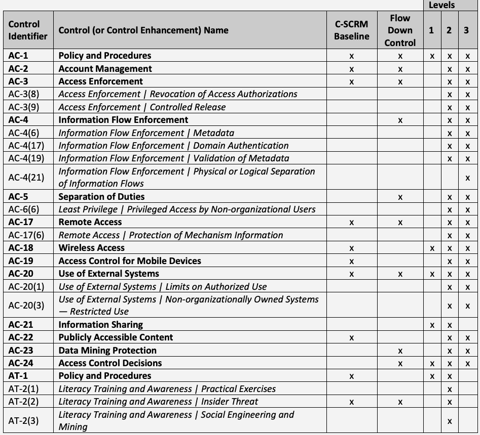
| レベル | ||||||
| 管理策識別子 | 管理策（または管理策の強化）名 | C-SCRMベースライン | 展開 | 1 | 2 | 3 |
| 下位への | ||||||
| 管理策 | ||||||
| AC-1 | ポリシーおよび手順 | x | x | x | x | x |
| AC-2 | アカウント管理 | x | x | x | x | |
| AC-3 | アクセスの強制 | x | x | x | x | |
| AC-3(8) | アクセスの強制｜アクセス認可の取消し | x | x | |||
| AC-3(9) | アクセスの強制｜制御されたリリース | x | x | |||
| AC-4 | 情報フローの強制 | x | x | x | ||
| AC-4(6) | 情報フローの強制｜メタデータ | x | x | |||
| AC-4(17) | 情報フローの強制｜ドメイン認証 | x | x | |||
| AC-4(19) | 情報フローの強制｜メタデータの検証 | x | x | |||
| AC-4(21) | 情報フローの強制｜物理的または論理的な分離 | x | ||||
| 情報フロー | ||||||
| AC-5 | 職務の分離 | x | x | x | ||
| AC-6(6) | 最小権限｜組織外利用者による特権アクセス | x | x | |||
| AC-17 | リモートアクセス | x | x | x | x | |
| AC-17(6) | リモートアクセス｜仕組みの情報の保護 | x | x | |||
| AC-18 | 無線アクセス | x | x | x | x | |
| AC-19 | モバイルデバイスのアクセス制御 | x | x | x | ||
| AC-20 | 外部システムの使用 | x | x | x | x | x |
| AC-20(1) | 外部システムの使用｜認可された使用の制限 | x | x | |||
| AC-20(3) | 外部システムの使用｜組織外所有システム | x | x | |||
| — 使用制限 | ||||||
| AC-21 | 情報共有 | x | x | |||
| AC-22 | 一般公開コンテンツ | x | x | x | ||
| AC-23 | データマイニングの保護 | x | x | x | ||
| AC-24 | アクセス制御の決定 | x | x | x | x | |
| AT-1 | ポリシーおよび手順 | x | x | x | ||
| AT-2(1) | リテラシー研修および意識向上｜実践演習 | x | ||||
| AT-2(2) | リテラシー研修および意識向上｜内部関係者の脅威 | x | x | x | ||
| AT-2(3) | リテラシー研修および意識向上｜ソーシャルエンジニアリングおよび | x | ||||
| マイニング |
原本PDFの抜粋画像

原本PDFの抜粋画像

| Levels | ||||||
| Control Identifier | Control (or Control Enhancement) Name | C-SCRM Baseline | Flow | 1 | 2 | 3 |
| Down | ||||||
| Control | ||||||
| AT-2(4) | Literacy Training and Awareness | Suspicious Communications | x | ||||
| and Anomalous System Behavior | ||||||
| AT-2(5) | Literacy Training and Awareness | Advanced Persistent Threat | x | ||||
| AT-2(6) | Literacy Training and Awareness | Cyber Threat Environment | x | ||||
| AT-3 | Role-based Training | x | x | x | ||
| AT-3(2) | Role-based Training | Physical Security Controls | x | ||||
| AT-3(6) | Role-based Training | Counterintelligence Training | x | ||||
| AT-4 | Training Records | x | x | |||
| AU-1 | Policy and Procedures | x | x | x | x | |
| AU-2 | Event Logging | x | x | x | x | x |
| AU-3 | Content of Audit Records | x | x | x | x | x |
| AU-6 | Audit Record Review, Analysis, and Reporting | x | x | x | ||
| AU-6(9) | Audit Record Review, Analysis, and Reporting | Correlation with | x | ||||
| Information from Non-technical Sources | ||||||
| AU-10 | Non-repudiation | x | ||||
| AU-10(1) | Non-repudiation | Association of Identities | x | ||||
| AU-10(2) | Non-repudiation | Validate Binding of Information Producer | x | x | |||
| Identity | ||||||
| AU-10(3) | Non-repudiation | Chain of Custody | x | x | |||
| AU-12 | Audit Record Generation | x | x | x | x | |
| AU-13 | Monitoring for Information Disclosure | x | x | x | ||
| AU-14 | Session Audit | x | x | x | ||
| AU-16 | Cross-organizational Audit Logging | x | x | |||
| AU-16(2) | Cross-organizational Audit Logging | Sharing of Audit | x | x | x | ||
| Information | ||||||
| CA-1 | Policy and Procedures | x | x | x | x | |
| CA-2 | Control Assessments | x | x | x | ||
| CA-2(2) | Control Assessments | Specialized Assessments | x | ||||
| CA-2(3) | Control Assessments | Leveraging Results from External | x | ||||
| Organizations | ||||||
| CA-3 | Information Exchange | x | x | x | ||
| CA-5 | Plan of Action and Milestones | x | x | x | ||
| CA-6 | Authorization | x | x | x | x | |
| CA-7(3) | Continuous Monitoring | Trend Analyses | x | ||||
| CM-1 | Policy and Procedures | x | x | x | x | |
| CM-2 | Baseline Configuration | x | x | x | x | |
| CM-2(6) | Baseline Configuration | Development and Test Environments | x | x | |||
| CM-3 | Configuration Change Control | x | x | x | ||
| CM-3(1) | Configuration Change Control | Automated Documentation, | x | x | |||
| Notification, and Prohibition of Changes | ||||||
| CM-3(2) | Configuration Change Control | Testing, Validation, and | x | x | |||
| Documentation of Changes | ||||||
| CM-3(4) | Configuration Change Control | Security and Privacy | x | x | |||
| Representatives | ||||||
| CM-3(8) | Configuration Change Control | Prevent or Restrict | x | x | |||
| Configuration Changes | ||||||
| CM-4 | Impact Analyses | x | x |
原本PDFの抜粋画像
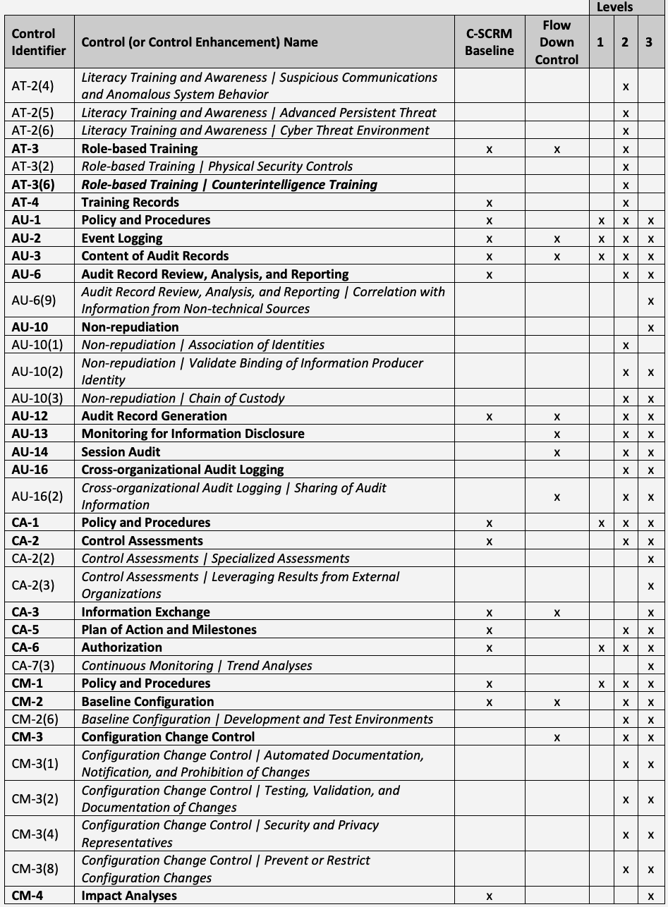
| レベル | ||||||
| 管理策識別子 | 管理策（または管理策の強化）名 | C-SCRMベースライン | 展開 | 1 | 2 | 3 |
| 下位への | ||||||
| 管理策 | ||||||
| AT-2(4) | リテラシー研修および意識向上｜不審な通信 | x | ||||
| および異常なシステム動作 | ||||||
| AT-2(5) | リテラシー研修および意識向上｜高度持続的脅威 | x | ||||
| AT-2(6) | リテラシー研修および意識向上｜サイバー脅威環境 | x | ||||
| AT-3 | 役割別研修 | x | x | x | ||
| AT-3(2) | 役割別研修｜物理的セキュリティ管理策 | x | ||||
| AT-3(6) | 役割別研修｜防諜研修 | x | ||||
| AT-4 | 研修記録 | x | x | |||
| AU-1 | ポリシーおよび手順 | x | x | x | x | |
| AU-2 | イベント記録 | x | x | x | x | x |
| AU-3 | 監査記録の内容 | x | x | x | x | x |
| AU-6 | 監査記録のレビュー、分析、および報告 | x | x | x | ||
| AU-6(9) | 監査記録のレビュー、分析、および報告｜との相関 | x | ||||
| 非技術的情報源からの情報 | ||||||
| AU-10 | 否認防止 | x | ||||
| AU-10(1) | 否認防止｜IDの関連付け | x | ||||
| AU-10(2) | 否認防止｜情報作成者の結び付けの検証 | x | x | |||
| ID | ||||||
| AU-10(3) | 否認防止｜証拠保全の連鎖 | x | x | |||
| AU-12 | 監査記録の生成 | x | x | x | x | |
| AU-13 | 情報開示の監視 | x | x | x | ||
| AU-14 | セッション監査 | x | x | x | ||
| AU-16 | 組織横断的な監査ログ記録 | x | x | |||
| AU-16(2) | 組織横断的な監査ログ記録｜監査情報の共有 | x | x | x | ||
| 情報 | ||||||
| CA-1 | ポリシーおよび手順 | x | x | x | x | |
| CA-2 | 管理策の評価 | x | x | x | ||
| CA-2(2) | 管理策の評価｜専門的評価 | x | ||||
| CA-2(3) | 管理策の評価｜外部組織の結果の活用 | x | ||||
| 組織 | ||||||
| CA-3 | 情報交換 | x | x | x | ||
| CA-5 | 対応計画およびマイルストーン | x | x | x | ||
| CA-6 | 認可 | x | x | x | x | |
| CA-7(3) | 継続的監視｜傾向分析 | x | ||||
| CM-1 | ポリシーおよび手順 | x | x | x | x | |
| CM-2 | ベースライン構成 | x | x | x | x | |
| CM-2(6) | ベースライン構成｜開発およびテスト環境 | x | x | |||
| CM-3 | 構成変更管理 | x | x | x | ||
| CM-3(1) | 構成変更管理｜自動文書化、 | x | x | |||
| 変更の通知および禁止 | ||||||
| CM-3(2) | 構成変更管理｜変更のテスト、妥当性確認、および | x | x | |||
| 変更の文書化 | ||||||
| CM-3(4) | 構成変更管理｜セキュリティおよびプライバシー | x | x | |||
| 担当者 | ||||||
| CM-3(8) | 構成変更管理｜構成変更の防止または制限 | x | x | |||
| 構成変更 | ||||||
| CM-4 | 影響分析 | x | x |
原本PDFの抜粋画像

原本PDFの抜粋画像

| Levels | ||||||
| Control Identifier | Control (or Control Enhancement) Name | C-SCRM Baseline | Flow | 1 | 2 | 3 |
| Down | ||||||
| Control | ||||||
| CM-4(1) | Impact Analyses | Separate Test Environments | x | ||||
| CM-5 | Access Restrictions for Change | x | x | x | ||
| CM-5(1) | Access Restrictions for Change | Automated Access | x | ||||
| Enforcement and Audit Records | ||||||
| CM-5(6) | Access Restrictions for Change | Limit Library Privileges | x | ||||
| CM-6 | Configuration Settings | x | x | x | x | |
| CM-6(1) | Configuration Settings | Automated Management, Application, | x | ||||
| and Verification | ||||||
| CM-6(2) | Configuration Settings | Respond to Unauthorized Changes | x | ||||
| CM-7 | Least Functionality | x | x | x | ||
| CM-7(1) | Least Functionality | Periodic Review | x | x | |||
| CM-7(4) | Least Functionality | Unauthorized Software | x | x | |||
| CM-7(5) | Least Functionality | Authorized Software | x | ||||
| CM-7(6) | Least Functionality | Confined Environments with Limited | x | x | |||
| Privileges | ||||||
| CM-7(7) | Least Functionality | Code Execution in Protected Environments | x | ||||
| CM-7(8) | Least Functionality | Binary or Machine Executable Code | x | x | |||
| CM-7(9) | Least Functionality | Prohibiting the Use of Unauthorized | x | x | |||
| Hardware | ||||||
| CM-8 | System Component Inventory | x | x | x | x | |
| CM-8(1) | System Component Inventory | Updates During Installation and | x | ||||
| Removal | ||||||
| CM-8(2) | System Component Inventory | Automated Maintenance | x | ||||
| CM-8(4) | System Component Inventory | Accountability Information | x | ||||
| CM-8(6) | System Component Inventory | Assessed Configurations and | x | ||||
| Approved Deviations | ||||||
| CM-8(7) | System Component Inventory | Centralized Repository | x | ||||
| CM-8(8) | System Component Inventory | Automated Location Tracking | x | x | |||
| CM-8(9) | System Component Inventory | Assignment of Components to | x | ||||
| Systems | ||||||
| CM-8(10) | System Component Inventory | SBOMs for Open Source Projects | x | ||||
| CM-9 | Configuration Management Plan | x | x | x | ||
| CM-9(1) | Configuration Management Plan | Assignment of Responsibility | x | x | |||
| CM-10 | Software Usage Restrictions | x | x | x | ||
| CM-10(1) | Software Usage Restrictions | Open source Software | x | x | |||
| CM-11 | User-installed Software | x | x | x | ||
| CM-12 | Information Location | x | x | |||
| CM-12(1) | Information Location | Automated Tools to Support | x | x | |||
| Information Location | ||||||
| CM-13 | Data Action Mapping | x | x | |||
| CM-14 | Signed Components | x | ||||
| CP-1 | Policy and Procedures | x | x | x | x | |
| CP-2 | Contingency Plan | x | x | x | ||
| CP-2(1) | Contingency Plan | Coordinate with Related Plans | x | x | |||
| CP-2(2) | Contingency Plan | Capacity Planning | x | x | |||
| CP-2(7) | Contingency Plan | Coordinate with External Service Providers | x | x | |||
| CP-2(8) | Contingency Plan | Identify Critical Assets | x |
原本PDFの抜粋画像
| レベル | ||||||
| 管理策識別子 | 管理策（または管理策の強化）名 | C-SCRMベースライン | 展開 | 1 | 2 | 3 |
| 下位への | ||||||
| 管理策 | ||||||
| CM-4(1) | 影響分析｜テスト環境の分離 | x | ||||
| CM-5 | 変更に対するアクセス制限 | x | x | x | ||
| CM-5(1) | 変更に対するアクセス制限｜アクセスの自動化 | x | ||||
| 強制および監査記録 | ||||||
| CM-5(6) | 変更に対するアクセス制限｜ライブラリ権限の制限 | x | ||||
| CM-6 | 構成設定 | x | x | x | x | |
| CM-6(1) | 構成設定｜自動管理、適用、 | x | ||||
| および検証 | ||||||
| CM-6(2) | 構成設定｜不正な変更への対応 | x | ||||
| CM-7 | 最小機能 | x | x | x | ||
| CM-7(1) | 最小機能｜定期的レビュー | x | x | |||
| CM-7(4) | 最小機能｜認可されていないソフトウェア | x | x | |||
| CM-7(5) | 最小機能｜認可されたソフトウェア | x | ||||
| CM-7(6) | 最小機能｜権限を制限した隔離環境 | x | x | |||
| 権限 | ||||||
| CM-7(7) | 最小機能｜保護された環境でのコード実行 | x | ||||
| CM-7(8) | 最小機能｜バイナリまたは機械実行可能コード | x | x | |||
| CM-7(9) | 最小機能｜認可されていないハードウェアの使用禁止 | x | x | |||
| ハードウェア | ||||||
| CM-8 | システムコンポーネント・インベントリ | x | x | x | x | |
| CM-8(1) | システムコンポーネント・インベントリ｜設置および | x | ||||
| 撤去時の更新 | ||||||
| CM-8(2) | システムコンポーネント・インベントリ｜自動保守 | x | ||||
| CM-8(4) | システムコンポーネント・インベントリ｜説明責任情報 | x | ||||
| CM-8(6) | システムコンポーネント・インベントリ｜評価済み構成および | x | ||||
| 承認済み逸脱 | ||||||
| CM-8(7) | システムコンポーネント・インベントリ｜集中リポジトリ | x | ||||
| CM-8(8) | システムコンポーネント・インベントリ｜自動位置追跡 | x | x | |||
| CM-8(9) | システムコンポーネント・インベントリ｜コンポーネントのシステムへの | x | ||||
| システム | ||||||
| CM-8(10) | システムコンポーネント・インベントリ｜オープンソースプロジェクトのSBOM | x | ||||
| CM-9 | 構成管理計画 | x | x | x | ||
| CM-9(1) | 構成管理計画｜責任の割当て | x | x | |||
| CM-10 | ソフトウェア使用制限 | x | x | x | ||
| CM-10(1) | ソフトウェア使用制限｜オープンソースソフトウェア | x | x | |||
| CM-11 | 利用者がインストールするソフトウェア | x | x | x | ||
| CM-12 | 情報の所在地 | x | x | |||
| CM-12(1) | 情報の所在地｜支援する自動化ツール | x | x | |||
| 情報の所在地 | ||||||
| CM-13 | データアクションのマッピング | x | x | |||
| CM-14 | 署名付きコンポーネント | x | ||||
| CP-1 | ポリシーおよび手順 | x | x | x | x | |
| CP-2 | 緊急時対応計画 | x | x | x | ||
| CP-2(1) | Contingency Plan｜Coordinate with Related Plans | x | x | |||
| CP-2(2) | Contingency Plan｜Capacity Planning | x | x | |||
| CP-2(7) | Contingency Plan｜Coordinate with External Service Providers | x | x | |||
| CP-2(8) | Contingency Plan｜Identify Critical Assets | x |
原本PDFの抜粋画像

原本PDFの抜粋画像

| Levels | ||||||
| Control Identifier | Control (or Control Enhancement) Name | C-SCRM Baseline | Flow | 1 | 2 | 3 |
| Down | ||||||
| Control | ||||||
| CP-3 | Contingency Training | x | x | x | x | |
| CP-3(1) | Contingency Training | Simulated Events | x | x | |||
| CP-4 | Contingency Plan Testing | x | x | x | ||
| CP-6 | Alternative Storage Site | x | x | |||
| CP-6(1) | Alternative Storage Site | Separation from Primary Site | x | x | |||
| CP-7 | Alternative Processing Site | x | x | |||
| CP-8 | Telecommunications Services | x | x | |||
| CP-8(3) | Telecommunications Services | Separation of Primary and | x | x | |||
| Alternative Providers | ||||||
| CP-8(4) | Telecommunications Services | Provider Contingency Plan | x | x | |||
| CP-11 | Alternative Communications Protocols | x | x | |||
| IA-1 | Policy and Procedures | x | x | x | x | |
| IA-2 | Identification and Authentication (Organizational Users) | x | x | x | x | x |
| IA-3 | Device Identification and Authentication | x | x | x | ||
| IA-4 | Identifier Management | x | x | x | x | |
| IA-4(6) | Identifier Management | Cross-organization Management | x | x | x | ||
| IA-5 | Authenticator Management | x | x | x | x | |
| IA-5(5) | Authenticator Management | Change Authenticators Prior to | x | ||||
| Delivery | ||||||
| IA-5(9) | Authenticator Management | Federated Credential | x | ||||
| Management | ||||||
| IA-8 | Identification and Authentication (Non-organizational Users) | x | x | x | ||
| IA-9 | Service Identification and Authentication | x | x | x | ||
| IR-1 | Policy and Procedures | x | x | x | x | x |
| IR-2 | Incident Response Training | x | x | x | x | |
| IR-3 | Incident Response Testing | x | x | |||
| IR-4(6) | Incident Handling | Insider Threats | x | x | x | ||
| IR-4(7) | Incident Handling | Insider Threats — Intra-organization | x | x | x | ||
| Coordination | ||||||
| IR-4(10) | Incident Handling | Supply Chain Coordination | x | x | |||
| IR-4(11) | Incident Handling | Integrated Incident Response Team | x | ||||
| IR-5 | Incident Monitoring | x | x | x | ||
| IR-6(3) | Incident Reporting | Supply Chain Coordination | x | x | |||
| IR-7(2) | Incident Response Assistance | Coordination with External | x | x | |||
| Providers | ||||||
| IR-8 | Incident Response Plan | x | x | x | x | |
| IR-9 | Information Spillage Response | x | x | |||
| MA-1 | Policy and Procedures | x | x | x | x | x |
| MA-2(2) | Controlled Maintenance | Automated Maintenance Activities | x | ||||
| MA-3 | Maintenance Tools | x | x | |||
| MA-3(1) | Maintenance Tools | Inspect Tools | x | ||||
| MA-3(2) | Maintenance Tools | Inspect Media | x | ||||
| MA-3(3) | Maintenance Tools | Prevent Unauthorized Removal | x | ||||
| MA-4 | Nonlocal Maintenance | x | x | x | x | |
| MA-4(3) | Nonlocal Maintenance | Comparable Security and Sanitization | x | x | |||
| MA-5 | Maintenance Personnel | x | x | x | ||
| MA-5(4) | Maintenance Personnel | Foreign Nationals | x | x | x |
原本PDFの抜粋画像
| レベル | ||||||
| 管理策識別子 | 管理策（または管理策の強化）名 | C-SCRMベースライン | 展開 | 1 | 2 | 3 |
| 下位への | ||||||
| 管理策 | ||||||
| CP-3 | 緊急時対応訓練 | x | x | x | x | |
| CP-3(1) | 緊急時対応訓練｜模擬事象 | x | x | |||
| CP-4 | 緊急時対応計画のテスト | x | x | x | ||
| CP-6 | 代替保管サイト | x | x | |||
| CP-6(1) | 代替保管サイト｜主サイトからの分離 | x | x | |||
| CP-7 | 代替処理サイト | x | x | |||
| CP-8 | 電気通信サービス | x | x | |||
| CP-8(3) | 電気通信サービス｜主プロバイダーと代替プロバイダーの分離 | x | x | |||
| 代替プロバイダー | ||||||
| CP-8(4) | 電気通信サービス｜プロバイダーの緊急時対応計画 | x | x | |||
| CP-11 | 代替通信プロトコル | x | x | |||
| IA-1 | ポリシーおよび手順 | x | x | x | x | |
| IA-2 | 識別および認証（組織利用者） | x | x | x | x | x |
| IA-3 | デバイスの識別および認証 | x | x | x | ||
| IA-4 | 識別子管理 | x | x | x | x | |
| IA-4(6) | 識別子管理｜組織横断管理 | x | x | x | ||
| IA-5 | 認証器管理 | x | x | x | x | |
| IA-5(5) | 認証器管理｜納入前の認証器変更 | x | ||||
| 納入 | ||||||
| IA-5(9) | 認証器管理｜フェデレーション資格情報 | x | ||||
| 管理 | ||||||
| IA-8 | 識別および認証（組織外利用者） | x | x | x | ||
| IA-9 | サービスの識別および認証 | x | x | x | ||
| IR-1 | ポリシーおよび手順 | x | x | x | x | x |
| IR-2 | インシデント対応訓練 | x | x | x | x | |
| IR-3 | インシデント対応テスト | x | x | |||
| IR-4(6) | インシデント対応｜内部関係者の脅威 | x | x | x | ||
| IR-4(7) | インシデント対応｜Insider Threats — Intra-organization | x | x | x | ||
| 調整 | ||||||
| IR-4(10) | インシデント対応｜サプライチェーンの調整 | x | x | |||
| IR-4(11) | インシデント対応｜統合インシデント対応チーム | x | ||||
| IR-5 | インシデント監視 | x | x | x | ||
| IR-6(3) | インシデント報告｜サプライチェーンの調整 | x | x | |||
| IR-7(2) | インシデント対応支援｜外部プロバイダーとの調整 | x | x | |||
| プロバイダー | ||||||
| IR-8 | インシデント対応計画 | x | x | x | x | |
| IR-9 | 情報漏えい対応 | x | x | |||
| MA-1 | ポリシーおよび手順 | x | x | x | x | x |
| MA-2(2) | 管理された保守｜自動保守活動 | x | ||||
| MA-3 | 保守ツール | x | x | |||
| MA-3(1) | 保守ツール｜ツールの検査 | x | ||||
| MA-3(2) | 保守ツール｜メディアの検査 | x | ||||
| MA-3(3) | 保守ツール｜無許可の持出し防止 | x | ||||
| MA-4 | 遠隔保守 | x | x | x | x | |
| MA-4(3) | 遠隔保守｜同等のセキュリティおよびサニタイズ | x | x | |||
| MA-5 | 保守要員 | x | x | x | ||
| MA-5(4) | 保守要員｜外国籍者 | x | x | x |
原本PDFの抜粋画像

原本PDFの抜粋画像
| Levels | ||||||
| Control Identifier | Control (or Control Enhancement) Name | C-SCRM Baseline | Flow | 1 | 2 | 3 |
| Down | ||||||
| Control | ||||||
| MA-6 | Timely Maintenance | x | ||||
| MA-7 | Field Maintenance | x | ||||
| *MA-8 | Maintenance Monitoring and Information Sharing | x | ||||
| MP-1 | Policy and Procedures | x | x | x | ||
| MP-4 | Media Storage | x | x | x | ||
| MP-5 | Media Transport | x | x | |||
| MP-6 | Media Sanitization | x | x | x | x | |
| PE-1 | Policy and Procedures | x | x | x | x | |
| PE-2 | Physical Access Authorizations | x | x | x | x | |
| PE-2(1) | Physical Access Authorizations | Access by Position or Role | x | x | |||
| PE-3 | Physical Access Control | x | x | x | ||
| PE-3(1) | Physical Access Control | System Access | x | x | |||
| PE-3(2) | Physical Access Control | Facility and Systems | x | x | |||
| PE-3(5) | Physical Access Control | Tamper Protection | x | x | |||
| PE-6 | Monitoring Physical Access | x | x | x | x | |
| PE-16 | Delivery and Removal | x | x | |||
| PE-17 | Alternative Work Site | x | ||||
| PE-18 | Location of System Components | x | x | x | ||
| PE-20 | Asset Monitoring and Tracking | x | x | |||
| PE-23 | Facility Location | x | x | x | ||
| PL-1 | Policy and Procedures | x | x | |||
| PL-2 | System Security and Privacy Plans | x | x | x | ||
| PL-4 | Rules of Behavior | x | x | x | ||
| PL-7 | Concept of Operations | x | ||||
| PL-8 | Security and Privacy Architectures | x | x | |||
| PL-8(2) | Security and Privacy Architectures | Supplier Diversity | x | x | |||
| PL-9 | Central Management | x | x | |||
| PL-10 | Baseline Selection | x | x | x | ||
| PM-2 | Information Security Program Leadership Role | x | x | |||
| PM-3 | Information Security and Privacy Resources | x | x | |||
| PM-4 | Plan of Action and Milestones Process | x | x | |||
| PM-5 | System Inventory | x | x | x | ||
| PM-6 | Measures of Performance | x | x | |||
| PM-7 | Enterprise Architecture | x | x | |||
| PM-8 | Critical Infrastructure Plan | x | ||||
| PM-9 | Risk Management Strategy | x | ||||
| PM-10 | Authorization Process | x | x | |||
| PM-11 | Mission and Business Process Definition | x | x | x | ||
| PM-12 | Insider Threat Program | x | x | x | ||
| PM-13 | Security and Privacy Workforce | x | x | |||
| PM-14 | Testing, Training, and Monitoring | x | x | |||
| PM-15 | Security and Privacy Groups and Associations | x | x | |||
| PM-16 | Threat Awareness Program | x | x | |||
| PM-17 | Protecting Controlled Unclassified Information on External | x | ||||
| Systems | ||||||
| PM-18 | Privacy Program Plan | x | x | x | ||
| PM-19 | Privacy Program Leadership Role | x |
原本PDFの抜粋画像
| レベル | ||||||
| 管理策識別子 | 管理策（または管理策の強化）名 | C-SCRMベースライン | 展開 | 1 | 2 | 3 |
| 下位への | ||||||
| 管理策 | ||||||
| MA-6 | 適時の保守 | x | ||||
| MA-7 | 現地保守 | x | ||||
| *MA-8 | 保守の監視および情報共有 | x | ||||
| MP-1 | ポリシーおよび手順 | x | x | x | ||
| MP-4 | メディア保管 | x | x | x | ||
| MP-5 | メディア輸送 | x | x | |||
| MP-6 | メディアのサニタイズ | x | x | x | x | |
| PE-1 | ポリシーおよび手順 | x | x | x | x | |
| PE-2 | 物理アクセス認可 | x | x | x | x | |
| PE-2(1) | 物理アクセス認可｜職位または役割によるアクセス | x | x | |||
| PE-3 | 物理アクセス制御 | x | x | x | ||
| PE-3(1) | 物理アクセス制御｜システムアクセス | x | x | |||
| PE-3(2) | 物理アクセス制御｜施設およびシステム | x | x | |||
| PE-3(5) | 物理アクセス制御｜改ざん防止 | x | x | |||
| PE-6 | 物理アクセスの監視 | x | x | x | x | |
| PE-16 | 搬入および搬出 | x | x | |||
| PE-17 | 代替作業場所 | x | ||||
| PE-18 | システムコンポーネントの所在地 | x | x | x | ||
| PE-20 | 資産の監視および追跡 | x | x | |||
| PE-23 | 施設の所在地 | x | x | x | ||
| PL-1 | ポリシーおよび手順 | x | x | |||
| PL-2 | システムセキュリティおよびプライバシー計画 | x | x | x | ||
| PL-4 | 行動規則 | x | x | x | ||
| PL-7 | 運用概念 | x | ||||
| PL-8 | セキュリティおよびプライバシーアーキテクチャ | x | x | |||
| PL-8(2) | セキュリティおよびプライバシーアーキテクチャ｜供給者の多様化 | x | x | |||
| PL-9 | 集中管理 | x | x | |||
| PL-10 | ベースラインの選択 | x | x | x | ||
| PM-2 | 情報セキュリティプログラムのリーダーシップの役割 | x | x | |||
| PM-3 | 情報セキュリティおよびプライバシーのリソース | x | x | |||
| PM-4 | 対応計画およびマイルストーンのプロセス | x | x | |||
| PM-5 | システム・インベントリ | x | x | x | ||
| PM-6 | パフォーマンス指標 | x | x | |||
| PM-7 | エンタープライズアーキテクチャ | x | x | |||
| PM-8 | 重要インフラストラクチャ計画 | x | ||||
| PM-9 | リスク管理戦略 | x | ||||
| PM-10 | 認可プロセス | x | x | |||
| PM-11 | ミッションおよび事業プロセスの定義 | x | x | x | ||
| PM-12 | 内部関係者脅威プログラム | x | x | x | ||
| PM-13 | セキュリティおよびプライバシー人材 | x | x | |||
| PM-14 | テスト、研修、および監視 | x | x | |||
| PM-15 | セキュリティおよびプライバシーの団体・協会 | x | x | |||
| PM-16 | 脅威認識プログラム | x | x | |||
| PM-17 | 外部システム上の管理対象非機密情報の保護 | x | ||||
| システム | ||||||
| PM-18 | プライバシープログラム計画 | x | x | x | ||
| PM-19 | プライバシープログラムのリーダーシップの役割 | x |
原本PDFの抜粋画像

原本PDFの抜粋画像

| Levels | ||||||
| Control Identifier | Control (or Control Enhancement) Name | C-SCRM Baseline | Flow | 1 | 2 | 3 |
| Down | ||||||
| Control | ||||||
| PM-20 | Dissemination of Privacy Program Information | x | x | |||
| PM-21 | Accounting of Disclosures | x | x | |||
| PM-22 | Personally Identifiable Information Quality Management | x | x | |||
| PM-23 | Data Governance Body | x | ||||
| PM-25 | Minimization of Personally Identifiable Information Used in | x | ||||
| Testing, Training, and Research | ||||||
| PM-26 | Complaint Management | x | x | |||
| PM-27 | Privacy Reporting | x | x | |||
| PM-28 | Risk Framing | x | ||||
| PM-29 | Risk Management Program Leadership Roles | x | ||||
| PM-30 | Supply Chain Risk Management Strategy | x | x | x | x | |
| PM-31 | Continuous Monitoring Strategy | x | x | x | ||
| PM-32 | Purposing | x | x | |||
| PS-1 | Policy and Procedures | x | x | x | x | x |
| PS-3 | Personnel Screening | x | x | x | x | |
| PS-6 | Access Agreements | x | x | x | x | |
| PS-7 | External Personnel Security | x | x | |||
| PT-1 | Policy and Procedures | x | x | x | x | |
| RA-1 | Policy and Procedures | x | x | x | x | |
| RA-2 | Security Categorization | x | x | x | x | |
| RA-3 | Risk Assessment | x | x | x | x | |
| RA-3 (1) | Risk Assessment | Supply Chain Risk Assessment | x | x | x | x | x |
| RA-5 | Vulnerability Monitoring and Scanning | x | x | x | x | |
| RA-5(3) | Vulnerability Monitoring and Scanning | Breadth and Depth of | x | x | |||
| Coverage | ||||||
| RA-5(6) | Vulnerability Monitoring and Scanning | Automated Trend | x | x | |||
| Analyses | ||||||
| RA-7 | Risk Response | x | x | x | x | |
| RA-9 | Criticality Analysis | x | x | x | x | |
| RA-10 | Threat Hunting | x | x | x | ||
| SA-1 | Policy and Procedures | x | x | x | x | |
| SA-2 | Allocation of Resources | x | x | x | ||
| SA-3 | System Development Life Cycle | x | x | x | x | |
| SA-4 | Acquisition Process | x | x | x | x | |
| SA-4(5) | Acquisition Process | System, Component, and Service | x | ||||
| Configurations | ||||||
| SA-4(7) | Acquisition Process | NIAP-approved Protection Profiles | x | x | |||
| SA-4(8) | Acquisition Process | Continuous Monitoring Plan for Controls | x | x | |||
| SA-5 | System Documentation | x | x | |||
| SA-8 | Security and Privacy Engineering Principles | x | x | x | x | |
| SA-9(1) | External System Services | Risk Assessments and Organizational | x | x | |||
| Approvals | ||||||
| SA-9(3) | External System Services | Establish and Maintain Trust | x | x | x | ||
| Relationship with Providers | ||||||
| SA-9(4) | External System Services | Consistent Interests of Consumers | x | ||||
| and Providers |
原本PDFの抜粋画像
| レベル | ||||||
| 管理策識別子 | 管理策（または管理策の強化）名 | C-SCRMベースライン | 展開 | 1 | 2 | 3 |
| 下位への | ||||||
| 管理策 | ||||||
| PM-20 | プライバシープログラム情報の普及 | x | x | |||
| PM-21 | 開示記録 | x | x | |||
| PM-22 | 個人識別情報の品質管理 | x | x | |||
| PM-23 | データガバナンス組織 | x | ||||
| PM-25 | 使用する個人識別情報の最小化： | x | ||||
| テスト、研修、および研究 | ||||||
| PM-26 | 苦情管理 | x | x | |||
| PM-27 | プライバシー報告 | x | x | |||
| PM-28 | リスクの枠組み設定 | x | ||||
| PM-29 | リスク管理プログラムのリーダーシップの役割 | x | ||||
| PM-30 | サプライチェーンリスク管理戦略 | x | x | x | x | |
| PM-31 | 継続的監視戦略 | x | x | x | ||
| PM-32 | 目的設定 | x | x | |||
| PS-1 | ポリシーおよび手順 | x | x | x | x | x |
| PS-3 | 職員審査 | x | x | x | x | |
| PS-6 | アクセス合意 | x | x | x | x | |
| PS-7 | 外部要員のセキュリティ | x | x | |||
| PT-1 | ポリシーおよび手順 | x | x | x | x | |
| RA-1 | ポリシーおよび手順 | x | x | x | x | |
| RA-2 | セキュリティ分類 | x | x | x | x | |
| RA-3 | リスク評価 | x | x | x | x | |
| RA-3 (1) | リスク評価｜サプライチェーンリスク評価 | x | x | x | x | x |
| RA-5 | 脆弱性の監視およびスキャン | x | x | x | x | |
| RA-5(3) | 脆弱性の監視およびスキャン｜対象範囲の広さと深さ： | x | x | |||
| 網羅性 | ||||||
| RA-5(6) | 脆弱性の監視およびスキャン｜自動化された傾向 | x | x | |||
| 分析 | ||||||
| RA-7 | リスク対応 | x | x | x | x | |
| RA-9 | 重要度分析 | x | x | x | x | |
| RA-10 | 脅威ハンティング | x | x | x | ||
| SA-1 | ポリシーおよび手順 | x | x | x | x | |
| SA-2 | リソースの配分 | x | x | x | ||
| SA-3 | システム開発ライフサイクル | x | x | x | x | |
| SA-4 | 取得プロセス | x | x | x | x | |
| SA-4(5) | 取得プロセス｜System, Component, and Service | x | ||||
| 構成 | ||||||
| SA-4(7) | 取得プロセス｜NIAP承認済みプロテクションプロファイル | x | x | |||
| SA-4(8) | 取得プロセス｜管理策の継続的監視計画 | x | x | |||
| SA-5 | システム文書 | x | x | |||
| SA-8 | セキュリティおよびプライバシーエンジニアリングの原則 | x | x | x | x | |
| SA-9(1) | 外部システムサービス｜リスク評価および組織の | x | x | |||
| 承認 | ||||||
| SA-9(3) | 外部システムサービス｜信頼関係の確立および維持 | x | x | x | ||
| プロバイダーとの関係 | ||||||
| SA-9(4) | 外部システムサービス｜利用者の利害の一致 | x | ||||
| およびプロバイダー |
原本PDFの抜粋画像

原本PDFの抜粋画像

| Levels | ||||||
| Control Identifier | Control (or Control Enhancement) Name | C-SCRM Baseline | Flow | 1 | 2 | 3 |
| Down | ||||||
| Control | ||||||
| SA-9(5) | External System Services | Processing, Storage, and Service | x | ||||
| Location | ||||||
| SA-10 | Developer Configuration Management | x | x | |||
| SA-11 | Developer Testing and Evaluation | x | x | x | ||
| SA-15 | Development Process, Standards, and Tools | x | x | |||
| SA-15(3) | Development Process, Standards, and Tools | Criticality Analysis | x | x | |||
| SA-15(4) | Development Process, Standards, and Tools | Threat Modeling | x | x | |||
| and Vulnerability Analysis | ||||||
| SA-15(8) | Development Process, Standards, and Tools | Reuse of Threat | x | ||||
| and Vulnerability Information | ||||||
| SA-16 | Developer-provided Training | x | x | |||
| SA-17 | Developer Security and Privacy Architecture and Design | x | x | |||
| SA-20 | Customized Development of Critical Components | x | x | |||
| SA-21 | Developer Screening | x | x | x | ||
| SA-21(1) | Developer Screening | Validation of Screening | x | x | |||
| SA-22 | Unsupported System Components | x | x | x | ||
| SC-1 | Policy and Procedures | x | x | x | x | |
| SC-4 | Information in Shared System Resources | x | x | |||
| SC-5(2) | Denial-of-service Protection | Capacity, Bandwidth, and | x | ||||
| Redundancy | ||||||
| SC-7 | Boundary Protection | x | x | x | ||
| SC-7(13) | Boundary Protection | Isolation of Security Tools, Mechanisms, | x | x | |||
| and Support Components | ||||||
| SC-7(14) | Boundary Protection | Protect Against Unauthorized Physical | x | x | |||
| Connections | ||||||
| SC-7(19) | Boundary Protection | Block Communication from Non- | x | ||||
| organizationally Configured Hosts | ||||||
| SC-8 | Transmission Confidentiality and Integrity | x | x | x | ||
| SC-18 | Mobile Code | x | ||||
| SC-18(2) | Mobile Code | Acquisition, Development, and Use | x | ||||
| SC-27 | Platform-independent Applications | x | x | |||
| SC-28 | Protection of Information at Rest | x | x | x | ||
| SC-29 | Heterogeneity | x | x | |||
| SC-30 | Concealment and Misdirection | x | x | |||
| SC-30(2) | Concealment and Misdirection | Randomness | x | x | |||
| SC-30(3) | Concealment and Misdirection | Change Processing and | x | x | |||
| Storage Locations | ||||||
| SC-30(4) | Concealment and Misdirection | Misleading Information | x | x | |||
| SC-30(5) | Concealment and Misdirection | Concealment of System | x | x | |||
| Components | ||||||
| SC-36 | Distributed Processing and Storage | x | x | x | ||
| SC-37(1) | Out-of-band Channels | Ensure Delivery and Transmission | x | x | |||
| SC-38 | Operations Security | x | x | |||
| SC-47 | Alternative Communications Paths | x | x | x | ||
| SI-1 | Policy and Procedures | x | x | x | x | |
| SI-2 | Flaw Remediation | x | x | x | x | |
| SI-2(5) | Flaw Remediation | Automatic Software and Firmware Updates | x |
原本PDFの抜粋画像
| レベル | ||||||
| 管理策識別子 | 管理策（または管理策の強化）名 | C-SCRMベースライン | 展開 | 1 | 2 | 3 |
| 下位への | ||||||
| 管理策 | ||||||
| SA-9(5) | 外部システムサービス｜処理、保管、およびサービス | x | ||||
| 所在地 | ||||||
| SA-10 | 開発者の構成管理 | x | x | |||
| SA-11 | 開発者によるテストおよび評価 | x | x | x | ||
| SA-15 | 開発プロセス、規格、およびツール | x | x | |||
| SA-15(3) | 開発プロセス、規格、およびツール｜重要度分析 | x | x | |||
| SA-15(4) | 開発プロセス、規格、およびツール｜脅威モデリング | x | x | |||
| および脆弱性分析 | ||||||
| SA-15(8) | 開発プロセス、規格、およびツール｜脅威情報の再利用： | x | ||||
| および脆弱性情報 | ||||||
| SA-16 | 開発者提供の研修 | x | x | |||
| SA-17 | 開発者のセキュリティ／プライバシーアーキテクチャおよび設計 | x | x | |||
| SA-20 | 重要コンポーネントのカスタム開発 | x | x | |||
| SA-21 | 開発者の審査 | x | x | x | ||
| SA-21(1) | 開発者の審査｜審査の検証 | x | x | |||
| SA-22 | サポート対象外のシステムコンポーネント | x | x | x | ||
| SC-1 | ポリシーおよび手順 | x | x | x | x | |
| SC-4 | 共有システムリソース内の情報 | x | x | |||
| SC-5(2) | サービス拒否攻撃からの保護｜容量、帯域幅、および | x | ||||
| 冗長性 | ||||||
| SC-7 | 境界保護 | x | x | x | ||
| SC-7(13) | 境界保護｜セキュリティツール、メカニズム、 | x | x | |||
| およびサポートコンポーネント | ||||||
| SC-7(14) | 境界保護｜無許可の物理接続からの保護 | x | x | |||
| 接続 | ||||||
| SC-7(19) | 境界保護｜組織外で構成されたホストからの通信を遮断： | x | ||||
| 組織外で構成されたホスト | ||||||
| SC-8 | 伝送の機密性および完全性 | x | x | x | ||
| SC-18 | モバイルコード | x | ||||
| SC-18(2) | モバイルコード｜取得、開発、および使用 | x | ||||
| SC-27 | プラットフォーム非依存アプリケーション | x | x | |||
| SC-28 | 保存データの保護 | x | x | x | ||
| SC-29 | 異種性 | x | x | |||
| SC-30 | 隠蔽および誤誘導 | x | x | |||
| SC-30(2) | 隠蔽および誤誘導｜ランダム性 | x | x | |||
| SC-30(3) | 隠蔽および誤誘導｜処理および保管場所の変更： | x | x | |||
| 保管場所 | ||||||
| SC-30(4) | 隠蔽および誤誘導｜誤解を招く情報 | x | x | |||
| SC-30(5) | 隠蔽および誤誘導｜システムコンポーネントの隠蔽： | x | x | |||
| コンポーネント | ||||||
| SC-36 | 分散処理および保管 | x | x | x | ||
| SC-37(1) | 帯域外チャネル｜配信および伝送の確保 | x | x | |||
| SC-38 | 運用セキュリティ | x | x | |||
| SC-47 | 代替通信経路 | x | x | x | ||
| SI-1 | ポリシーおよび手順 | x | x | x | x | |
| SI-2 | 欠陥の修正 | x | x | x | x | |
| SI-2(5) | 欠陥の修正｜ソフトウェアおよびファームウェアの自動更新 | x |
原本PDFの抜粋画像

原本PDFの抜粋画像

| Levels | ||||||
| Control Identifier | Control (or Control Enhancement) Name | C-SCRM Baseline | Flow | 1 | 2 | 3 |
| Down | ||||||
| Control | ||||||
| SI-3 | Malicious Code Protection | x | x | x | x | |
| SI-4 | System Monitoring | x | x | x | x | x |
| SI-4(17) | System Monitoring | Integrated Situational Awareness | x | x | |||
| SI-4(19) | System Monitoring | Risk for Individuals | x | x | |||
| SI-5 | Security Alerts, Advisories, and Directives | x | x | x | x | x |
| SI-7 | Software, Firmware, and Information Integrity | x | x | x | x | |
| SI-7(14) | Software, Firmware, and Information Integrity | Binary or | x | x | |||
| Machine Executable Code | ||||||
| SI-7(15) | Software, Firmware, and Information Integrity | Code | x | ||||
| Authentication | ||||||
| SI-12 | Information Management and Retention | x | x | |||
| SI-20 | Tainting | x | x | x | ||
| SR-1 | Policy and Procedures | x | x | x | x | |
| SR-2 | Supply Chain Risk Management Plan | x | x | |||
| SR-3 | Supply Chain Controls and Processes | x | x | x | x | |
| SR-3(1) | Supply Chain Controls and Processes | Diverse Supply Base | x | x | |||
| SR-3(3) | Supply Chain Controls and Processes | Sub-tier Flow Down | x | x | x | ||
| SR-4 | Provenance | x | x | |||
| SR-5 | Acquisition Strategies, Tools, and Methods | x | x | x | x | |
| SR-6 | Supplier Assessments and Reviews | x | x | |||
| SR-7 | Supply Chain Operations Security | x | x | |||
| SR-8 | Notification Agreements | x | x | x | ||
| SR-9 | Tamper Resistance and Detection | x | x | |||
| SR-10 | Inspection of Systems or Components | x | x | x | x | |
| SR-11 | Component Authenticity | x | x | x | x | |
| SR-11(1) | Component Authenticity | Anti-counterfeit Training | x | x | x | ||
| SR-11(2) | Component Authenticity | Configuration Control for Component | x | x | x | ||
| Service and Repair | ||||||
| SR-11(3) | Component Authenticity | Anti-counterfeit Scanning | x | x | |||
| SR-12 | Component Disposal | x | x | x | ||
| *SR-13 | Supplier Inventory | x | x |
原本PDFの抜粋画像
| レベル | ||||||
| 管理策識別子 | 管理策（または管理策の強化）名 | C-SCRMベースライン | 展開 | 1 | 2 | 3 |
| 下位への | ||||||
| 管理策 | ||||||
| SI-3 | 悪意あるコードからの保護 | x | x | x | x | |
| SI-4 | システム監視 | x | x | x | x | x |
| SI-4(17) | システム監視｜統合状況認識 | x | x | |||
| SI-4(19) | システム監視｜個人に対するリスク | x | x | |||
| SI-5 | セキュリティ警報、勧告、および指令 | x | x | x | x | x |
| SI-7 | ソフトウェア、ファームウェア、および情報の完全性 | x | x | x | x | |
| SI-7(14) | ソフトウェア、ファームウェア、および情報の完全性｜バイナリまたは | x | x | |||
| 機械実行可能コード | ||||||
| SI-7(15) | ソフトウェア、ファームウェア、および情報の完全性｜Code | x | ||||
| 認証 | ||||||
| SI-12 | 情報管理および保持 | x | x | |||
| SI-20 | 汚染 | x | x | x | ||
| SR-1 | ポリシーおよび手順 | x | x | x | x | |
| SR-2 | サプライチェーンリスク管理計画 | x | x | |||
| SR-3 | サプライチェーン管理策およびプロセス | x | x | x | x | |
| SR-3(1) | サプライチェーン管理策およびプロセス｜多様な供給基盤 | x | x | |||
| SR-3(3) | サプライチェーン管理策およびプロセス｜下位階層への展開 | x | x | x | ||
| SR-4 | 来歴 | x | x | |||
| SR-5 | 取得戦略、ツール、および方法 | x | x | x | x | |
| SR-6 | 供給者の評価およびレビュー | x | x | |||
| SR-7 | サプライチェーン運用セキュリティ | x | x | |||
| SR-8 | 通知合意 | x | x | x | ||
| SR-9 | 改ざん耐性および検知 | x | x | |||
| SR-10 | システムまたはコンポーネントの検査 | x | x | x | x | |
| SR-11 | コンポーネントの真正性 | x | x | x | x | |
| SR-11(1) | コンポーネントの真正性｜偽造品対策研修 | x | x | x | ||
| SR-11(2) | コンポーネントの真正性｜コンポーネントの構成管理： | x | x | x | ||
| 保守および修理 | ||||||
| SR-11(3) | コンポーネントの真正性｜偽造品スキャン | x | x | |||
| SR-12 | コンポーネントの廃棄 | x | x | x | ||
| *SR-13 | 供給者インベントリ | x | x |
原本PDFの抜粋画像
原本PDFの抜粋画像

Appendix C. RISK EXPOSURE FRAMEWORK38
付録C. リスクエクスポージャーの枠組み38
未レビュー訳There are numerous opportunities for vulnerabilities that impact the enterprise environment or the system/element to be intentionally or unintentionally inserted, created, or exploited throughout the supply chain. The exploitation of these vulnerabilities is known as a supply chain threat event. A Threat Scenario is a set of discrete threat events associated with a specific potential or identified existing threat source or multiple threat sources, partially ordered in time. Developing and analyzing threat scenarios can help enterprises have a more comprehensive understanding of the various types of threat events that can occur and lay the groundwork for analyzing the likelihood and impact that a specific event or events would have on an enterprise. Conducting this analysis is a useful way to discover gaps in controls and to identify and prioritize appropriate mitigating strategies.39
サプライチェーン全体を通じて、エンタープライズ環境またはシステム／要素に影響する脆弱性が、意図的または意図せずに持ち込まれ、作り出され、または悪用される機会は数多くある。これらの脆弱性が悪用されることをサプライチェーン脅威事象という。脅威シナリオとは、特定の潜在的または既に特定された脅威源（単一または複数）に関連し、時間的に部分順序付けされた一連の個別の脅威事象である。脅威シナリオを策定し分析することで、発生し得るさまざまな種類の脅威事象をより包括的に理解し、特定の事象がエンタープライズに及ぼす可能性および影響を分析する基盤を整えられる。この分析は、管理策の欠落を発見し、適切な緩和戦略を特定して優先順位付けする有用な方法である。39
未レビュー訳Threat scenarios are generally used in two ways:
脅威シナリオは一般に、次の2つの方法で使用される：
1.To translate the often disconnected information garnered from a risk assessment, as described in [SP80030r1], into a more narrowly scoped and tangible story-like situation for further evaluation. These stories can help enterprises discover dependencies and additional vulnerabilities that require mitigation and are used for training.
1.[SP80030r1]で説明されているリスク評価で得られる、しばしば相互に結び付いていない情報を、さらに評価できるよう、より範囲を絞った具体的な物語形式の状況に変換するため。こうした物語は、緩和が必要な依存関係や追加の脆弱性をエンタープライズが発見するのに役立ち、研修にも用いられる。
2.To determine the impact that a successful exercise of a specific vulnerability would have on the enterprise and identify the benefits of mitigating strategies.
2.特定の脆弱性が悪用された場合にエンタープライズへ及ぶ影響を判断し、緩和戦略の便益を特定するため。
Threat scenarios serve as a critical component of the enterprise’s cybersecurity supply chain risk management process described in Appendix G of this publication. An enterprise forms a threat scenario to analyze a disparate set of threat and vulnerability conditions to assemble a cohesive story that can be analyzed as part of a risk assessment. With a threat scenario defined, the enterprise can complete a risk assessment to understand how likely the scenario is and what would happen (i.e., the impact) as a result. Ultimately, the analyzed components of a threat scenario are used to reach a risk determination that represents the conclusion of an enterprise’s level of exposure to cybersecurity risks throughout the supply chain.
脅威シナリオは、本刊行物の付録Gで説明するエンタープライズのサイバーセキュリティ・サプライチェーンリスク管理プロセスの重要な要素である。エンタープライズは、異なる脅威条件および脆弱性条件をまとめ、一貫した筋書きとしてリスク評価の一部として分析できるよう、脅威シナリオを作成する。脅威シナリオを定義した後、エンタープライズはリスク評価を完了し、そのシナリオがどの程度起こりそうか、またその結果何が起こるか（すなわち影響）を理解できる。最終的に、分析した脅威シナリオの要素を用いてリスクを判定する。この判定は、サプライチェーン全体のサイバーセキュリティリスクに対するエンタープライズの曝露水準についての結論を示す。
Once a risk determination has been made, the enterprise will determine a path for responding to the risk using the Risk Exposure Framework. Within the Risk Exposure Framework, enterprises will document the threat scenario, the risk analysis, the identified risk response strategy, and any associated C-SCRM controls.
リスクを判定した後、エンタープライズはリスクエクスポージャーの枠組みを用いて対応方針を決定する。この枠組みでは、脅威シナリオ、リスク分析、特定したリスク対応戦略、および関連するC-SCRM管理策を記録する。
This appendix provides an example of a Risk Exposure Framework for C-SCRM that can be used by enterprises to develop a tailored Risk Exposure Framework for potential and identified threats that best suits their needs. It contains six examples of how this framework may be used. The examples differ slightly in their implementation of the framework so as to show how the framework may be tailored by an enterprise. Each example identifies one or more vulnerabilities, describes a specific threat source, identifies the expected impact on the enterprise, and proposes SP 800-161, Rev. 1 C-SCRM controls that would help mitigate the resulting risk.
本付録は、エンタープライズが潜在的および特定済みの脅威に合わせて調整したリスクエクスポージャーの枠組みを策定する際に使用できる、C-SCRM向け枠組みの例を示す。本付録には、この枠組みの使用例を6つ含む。各例は、エンタープライズが枠組みを調整する方法を示すため、実装方法が少しずつ異なる。各例では、1つ以上の脆弱性を特定し、具体的な脅威源を説明し、エンタープライズへの予想される影響を特定し、結果として生じるリスクの緩和に役立つSP 800-161 Rev. 1のC-SCRM管理策を提案する。
未レビュー訳RISK EXPOSURE FRAMEWORK
リスクエクスポージャー・フレームワーク
Step 1: Create a Plan for Developing and Analyzing Threat Scenarios
ステップ1：脅威シナリオの策定・分析計画を作成する
•Identify the purpose of the threat scenario analysis in terms of the objectives, milestones, and expected deliverables.
•目的、マイルストーン、予定成果物の観点から、脅威シナリオ分析の目的を特定する。
•Identify the scope of enterprise applicability, level of detail, and other constraints.
•エンタープライズへの適用範囲、詳細度、その他の制約を特定する。
•Identify resources to be used, including personnel, time, and equipment.
•人員、時間、機器を含む、使用する資源を特定する。
•Define a Risk Exposure Framework to be used for analyzing scenarios.
•シナリオ分析に用いるリスクエクスポージャー・フレームワークを定義する。
Step 2: Characterize the Environment
ステップ2：環境を特徴付ける
未レビュー訳•Identify core mission and business processes and key enterprise dependencies.
•中核となるミッション・業務プロセスと、エンタープライズの主要な依存関係を特定する。
•Describe threat sources that are relevant to the enterprise. Include the motivation and resources available to the threat source, if applicable.
•エンタープライズに関係する脅威源を記述する。該当する場合は、脅威源の動機と利用可能な資源を含める。
•List known vulnerabilities or areas of concern. (Note: Areas of concern include the planned outsourcing of a manufacturing plant, the pending termination of a maintenance contract, or the discontinued manufacture of an element).
•既知の脆弱性または懸念領域を列挙する。（注：懸念領域には、製造工場の外部委託計画、保守契約の終了予定、ある要素の製造中止などが含まれる。）
•Identify existing and planned controls.
•既存および計画中の管理策を特定する。
•Identify related regulations, standards, policies, and procedures.
•関連する規制、標準、方針、手順を特定する。
•Define an acceptable level of risk (risk threshold) per the enterprise’s assessment of Tactics, Techniques, and Procedures (TTPs); system criticality; and a risk owner’s set of mission or business priorities. The level of risk or risk threshold can be periodically revisited and adjusted to reflect the elasticity of the global supply chain, enterprise changes, and new mission priorities.
•TTP（戦術・技術・手順）の評価、システムの重要度、リスク責任者が定めるミッションまたは業務上の優先事項に基づき、許容可能なリスク水準（リスクしきい値）を定義する。リスク水準またはリスクしきい値は、世界のサプライチェーンの弾力性、エンタープライズの変化、新たなミッション上の優先事項を反映するため、定期的に見直し、調整できる。
Step 3: Develop and Select Threat Events for Analysis
ステップ3：分析対象の脅威事象を策定・選択する
•List possible ways that threat sources could exploit known vulnerabilities or impact areas of concern to create a list of events. (Note: Historical data is useful for determining this information.)
•脅威源が既知の脆弱性または懸念領域をどのように悪用・侵害し得るかを列挙し、事象の一覧を作成する。（注：この情報の判断には過去のデータが有用である。）
•Briefly outline the series of consequences that could occur as a result of each threat event. These may be as broad or specific as necessary. If applicable, estimate the likelihood and impact of each event.
•各脅威事象の結果として生じ得る一連の影響を簡潔にまとめる。必要に応じて広範にも具体的にも記述できる。該当する場合は、各事象の発生可能性と影響を推定する。
•Eliminate those events that are clearly outside of the defined purpose and scope of the analysis.
•分析の定義済み目的・範囲から明らかに外れる事象を除外する。
•In more detail, describe the remaining potential threat events. Include the TTPs that a threat source may use to carry out attacks. (Note: The level of detail in the description is dependent on the needs of the enterprise.)
•残る潜在的脅威事象をより詳しく記述する。脅威源が攻撃を実行するために用いる可能性のあるTTPを含める。（注：記述の詳細度はエンタープライズのニーズによって異なる。）
•Select for analysis those events that best fit the defined purpose and scope of the analysis. More likely or impactful events, areas of concern to the enterprise, and an event that can represent several of the other listed events are generally useful candidates.
•分析の定義済み目的・範囲に最も適合する事象を分析対象として選択する。発生可能性や影響がより大きい事象、エンタープライズにとって懸念される領域、列挙した複数の事象を代表できる事象は、一般に有用な候補である。
Step 4: Conduct an Analysis Using the Risk Exposure Framework
ステップ4：リスクエクスポージャー・フレームワークを用いて分析する
•For each threat event, note any immediate consequences of the event and identify those enterprise units and processes that would be affected, taking into account applicable regulations, standards, policies, and procedures; existing and planned controls; and the extent to which those controls are able to effectively prevent, withstand, or otherwise mitigate the harm that could result from the threat event.
•各脅威事象について、直ちに生じる結果を記録し、適用される規制、標準、方針、手順、既存・計画中の管理策、および脅威事象による損害を管理策が効果的に防止、耐性確保、その他の方法で軽減できる程度を考慮して、影響を受けるエンタープライズの部門・プロセスを特定する。
•Estimate the impact that these consequences would have on the mission and business processes, information, assets, enterprise units, and other stakeholders affected, preferably in quantitative terms from historical data and taking into account existing and planned controls and applicable regulations, standards, policies, and procedures. (Note: It may be beneficial to identify a “most likely” impact level and a “worst-case” or “100-year” impact level.)
•影響を受けるミッション・業務プロセス、情報、資産、エンタープライズ部門、その他の関係者にこれらの結果が及ぼす影響を推定する。過去のデータに基づく定量的な推定が望ましく、既存・計画中の管理策および該当する規制、標準、方針、手順を考慮する。（注：「最も可能性の高い」影響度と、「最悪ケース」または「100年に一度」の影響度を特定すると有益な場合がある。）
•Identify those enterprise units, processes, information (access or flows), and/or assets that may or would be subsequently affected, as well as the consequences and impact levels until each affected critical item has been analyzed, taking into account existing and planned controls and applicable regulations, standards, policies, and procedures (e.g., if a critical server goes down, one of the first processes affected may be the technology support department, but if they determine that a new part is needed to bring the server back up, the procurement department may become involved).
•影響を受けるエンタープライズの部門、プロセス、情報（アクセスまたはフロー）および／または資産を特定し、その後に影響を受ける可能性があるものも含め、影響を受ける各重要項目の分析が完了するまで、結果と影響度を追跡する。既存・計画中の管理策および該当する規制、標準、方針、手順を考慮する。（例：重要サーバーが停止した場合、最初に影響を受けるプロセスの一つは技術サポート部門かもしれないが、サーバー復旧に新しい部品が必要と判断されると、調達部門が関与する可能性がある。）
Step 5: Determine C-SCRM Applicable Controls
ステップ5：適用可能なC-SCRM管理策を決定する
•Determine if and which threat scenario events create a risk level that exceeds a risk owner’s acceptable level of risk (risk threshold). (Note: In some cases, the level of acceptable risk may be dependent on the capability to implement or the cost of mitigating strategies.) Identify opportunities to strengthen existing controls or potential new mitigating controls. Using a list of standards or recommended controls can simplify this process. This appendix uses the controls in Appendix A of this document.
•リスク責任者の許容可能なリスク水準（リスクしきい値）を超えるリスクを生じさせる脅威シナリオ事象があるかどうか、あるならばどれかを判断する。（注：許容可能なリスク水準は、軽減策を実施する能力またはその費用に依存する場合がある。）既存管理策を強化する機会、または潜在的な新たな軽減管理策を特定する。標準または推奨管理策の一覧を使うと、この作業を簡素化できる。本付録では、本書の付録Aにある管理策を使用する。
•Estimate the effectiveness of existing and planned controls at reducing the risk of a scenario.
•既存および計画中の管理策がシナリオのリスクを低減する有効性を推定する。
•Estimate the capability and resources needed (in terms of money, personnel, and time) to implement potential new or strengthened controls.
•潜在的な新規管理策または強化した管理策の実装に必要な能力と資源（費用、人員、時間）を推定する。
•Identify those C-SCRM controls or combinations of C-SCRM controls that could cause the estimated residual risk of a threat event to drop to an acceptable level in the most resource-effective manner, taking into account any rules or regulations that may apply. (Note: Consider the potential that one control will help mitigate the risk of more than one event or that a control may increase the risk of a separate event.)
•適用され得る規則・規制を考慮し、最も資源効率の高い方法で、脅威事象の推定残余リスクを許容可能な水準まで低減できるC-SCRM管理策またはその組み合わせを特定する。（注：1つの管理策が複数の事象のリスク軽減に役立つ可能性や、ある管理策が別の事象のリスクを高める可能性も考慮する。）
Step 6: Evaluate/Feedback
ステップ6：評価／フィードバック
未レビュー訳•Develop a plan to implement the selected controls and evaluate their effectiveness.
•選択した管理策を実装し、その有効性を評価する計画を策定する。
未レビュー訳•Evaluate the effectiveness of the Risk Exposure Framework, and make improvements as needed.
•リスクエクスポージャー・フレームワークの有効性を評価し、必要に応じて改善する。
未レビュー訳Table 7. Sample risk exposure framework
表7. リスクエクスポージャー・フレームワークの例
未レビュー訳原本PDFの抜粋画像
原本PDFの抜粋画像
原本PDFの抜粋画像
原本PDFの抜粋画像
C.1. Sample Scenarios
C.1. シナリオ例
This appendix provides six example threat scenarios specific to the U.S. Government using a fictitious ‘ABC Company’ and the Risk Exposure Framework described above. The examples purposely vary in their level of specificity and detail to show that threat scenarios can be as broad or specific – as detailed or generic – as necessary. While these scenarios use percentages and basic scoring measures (i.e., High, Moderate, Low) for likelihood, impact, and risk, enterprises may use any number of different units of measure (e.g., CVSS score). Additionally, these scenarios vary slightly in their implementation of the risk response framework to show that the Risk Exposure Framework can be adapted as needed.
本付録では、上記のリスクエクスポージャー・フレームワークを使用し、架空の「ABC Company」を題材として、米国政府に固有の脅威シナリオ例を6つ示す。脅威シナリオが必要に応じて広範にも具体的にも、詳細にも一般的にも設定できることを示すため、各例の具体性と詳細度を意図的に変えている。これらのシナリオでは発生可能性、影響度、リスクをパーセンテージと基本的な尺度（高、中、低）で示すが、エンタープライズはCVSSスコアなど、異なる測定単位を使用できる。また、必要に応じてリスク対応フレームワークを調整できることを示すため、各シナリオでその実装方法を少しずつ変えている。
C.1.1. SCENARIO 1: Influence or Control by Foreign Governments Over Suppliers40
C.1.1. シナリオ1：サプライヤーに対する外国政府の影響または支配40
未レビュー訳Background
背景
An enterprise has decided to perform a threat scenario analysis of its printed circuit board (PCB) suppliers. The scenario will focus on the sensitivity of the business to unforeseen fluctuations in component costs.
あるエンタープライズは、プリント基板（PCB）サプライヤーの脅威シナリオ分析を実施することにした。このシナリオでは、予期しないコンポーネントコストの変動に対する事業の感応度に焦点を当てる。
Threat Source
脅威源
ABC Company designs, assembles, and ships 3.5 million personal computers per year. It has a global footprint both in terms of customer and supply bases. Five years ago, in an effort to reduce the cost of goods sold, ABC Company shifted a majority of its PCB procurement to
ABC Companyは年間350万台のパーソナルコンピューターを設計、組立、出荷している。顧客基盤と供給基盤の両面で世界各地に展開している。5年前、売上原価を削減するため、ABC CompanyはPCB調達の大部分を
未レビュー訳Southeast Asia. To avoid being single-sourced, ABC Company finalized agreements with five different suppliers within the country and has enjoyed a positive partnership with each during this time.
東南アジアへ移した。単一供給元への依存を避けるため、ABC Companyは同国内の5社のサプライヤーと契約を締結し、その後は各社と良好なパートナー関係を築いてきた。
未レビュー訳Vulnerability
脆弱性
Though sourcing from multiple vendors, ABC Company relies on suppliers in a single country (i.e., Southeast Asia). This exposes ABC Company to geopolitical threats due to the potential for policies of a single government to have a dramatic impact on the availability of supplied inputs.
複数のベンダーから調達しているものの、ABC Companyは単一の国（すなわち東南アジア）のサプライヤーに依存している。このため、単一政府の政策が供給品の可用性に大きな影響を及ぼす可能性があり、ABC Companyは地政学的脅威にさらされている。
Threat Event Description
脅威事象の説明
The enterprise has established the following fictitious threat for the analysis exercise: Last year, new leadership took over the government of the country where ABC Company does most of their PCB business. This leadership has been focused on improving the financial and business environment within the country, allowing larger firms who set up headquarters and other major centers within the country advantages to do business more easily and cost-efficiently with suppliers within the same region. However, in February of 2019, the now-corrupt regime passed new legislation that established an additional 20 % tax on all electronic components and goods sold outside of the country. This new law was to take effect on June 1, 2019.
エンタープライズは分析演習のため、次の架空の脅威を設定した。前年、ABC CompanyがPCB事業の大部分を行う国で新政権が発足した。この政権は国内の財務・事業環境の改善を重視し、同国内に本社や主要拠点を設ける大企業が地域内のサプライヤーとより容易かつ低コストで取引できるようにしていた。しかし、2019年2月、汚職した政権が国外で販売されるすべての電子部品・製品に追加で20 %の税を課す新法を制定した。この新法は2019年6月1日に施行される予定であった。
When the new law was announced, ABC Company’s current inventory of PCBs was about 10 % of yearly demand, which was the typical inventory level with which they were comfortable. Before June, ABC Company reached out to all five suppliers to order additional materials, but there was quickly a shortage due to higher demand from many foreign customers of these products. By June 1, the day that the new tax law took effect, ABC Company had reached an inventory level of up to 15 % of yearly demand.
新法の発表時、ABC CompanyのPCB在庫は年間需要の約10 %で、通常許容している在庫水準であった。6月前にABC Companyは5社すべてに追加材料を発注したが、多数の海外顧客による需要増で製品がすぐに不足した。新税法の施行日である6月1日までに、ABC Companyの在庫は年間需要の最大15 %に達した。
Outcome
結果
Between February and June of 2019, ABC Company considered partnerships with new suppliers, but there were several issues identified. One in every 10 new suppliers that ABC Company contacted required a lead time for ramping up to the desired demand of anywhere from 6 months to 18 months. This would have necessitated additional work on ABC Company’s part, including testing samples of the supplier PCBs, finalizing logistical details, and monitoring supplier-side activities, such as the procurement of raw materials and the acquisition of additional personnel and production space that were necessary to meet the new demand.
2019年2月から6月にかけて、ABC Companyは新規サプライヤーとの提携を検討したが、いくつか問題が判明した。ABC Companyが連絡を取った新規サプライヤーの10社に1社は、希望する需要量まで生産を拡大するのに6か月から18か月のリードタイムを要した。その場合、サプライヤーのPCBサンプル試験、物流の詳細確定、原材料の調達や追加人員・生産スペースの確保など、新たな需要を満たすためのサプライヤー側の活動の監視を含め、ABC Company側に追加作業が必要となる。
The second issue was that the current contracts with all five suppliers in Southeast Asia involved meeting minimum demand requirements, meaning that ABC Company was committed to purchasing a minimum of 100,000 PCBs per month for the duration of the contracts, which ranged anywhere from 3 months to 24 months in length. This would mean that ABC Company could not easily avoid the cost implications of the new tax. Could ABC Company absorb the cost of the PCBs? With a 20 % cost increase, this eroded the margins of a PC from 13.5 % down to 4.5 % on average. For some of the lower-margin ABC Company offerings, it would likely result in discontinuing the line and using the more expensive PCBs on higher-end models that could carry more margin.
2つ目の問題は、東南アジアの5社すべてとの現行契約に最低需要量の要件があり、契約期間（3か月から24か月）中、ABC Companyは月10万枚以上のPCBを購入する義務を負っていたことである。そのため、ABC Companyは新税のコスト影響を簡単には回避できない。ABC CompanyはPCBのコストを吸収できるだろうか。コストが20 %増加すると、PCの平均利益率は13.5 %から4.5 %へ低下した。利益率の低い製品では、製品ラインを中止し、より高い利益を確保できる上位モデルに高価なPCBを振り向けることになる可能性がある。
Enterprise Units and Processes Affected
影響を受けるエンタープライズ部門・プロセス
N/A
該当なし
Potential Mitigating Strategies and C-SCRM Controls
潜在的な軽減戦略とC-SCRM管理策
•Perform regular assessments and reviews of supplier risk.41
•サプライヤーリスクを定期的に評価・レビューする。41
未レビュー訳•Diversify suppliers by immediate location, as well as by country, region, and other factors.
•直接の所在地に加え、国、地域、その他の要因によってサプライヤーを多様化する。
•Build cost implications into supplier contracts, making it easier to part ways with suppliers when costs rise too high (whether by fault of the supplier or otherwise).
•サプライヤーとの契約にコスト上昇時の対応を盛り込み、コストが過度に上昇した場合（サプライヤーの責任か否かを問わず）に取引を終了しやすくする。
•Adjust desired inventory levels to better account for an unexpected shortage of demand at critical times.
•重要な時期に予想外の需要不足が生じた場合に備え、希望在庫水準を調整する。
•Employ more resources in countries or regions of critical suppliers with the intent to source advanced notice of new legislation that may negatively affect business.
•事業に悪影響を与える可能性のある新法について事前情報を得るため、重要サプライヤーが所在する国・地域により多くの資源を投入する。
Table 8. Scenario 1
表8. シナリオ1
未レビュー訳| oiranecS taerhT | Threat Source | Dynamic geopolitical conditions that impact the supply of production components for PCs |
| Vulnerability | Geographical concentration of suppliers for a key production component | |
| Threat Event Description | ABC Company shifted a majority of its printed circuit board (PCB) procurement to Southeast Asia to reduce the cost of goods sold. In an effort to avoid being single-sourced, ABC Company finalized agreements with five different suppliers within the country. The country in which ABC Company conducts most of their PCB business has seen a new regime assume governmental authority. In February of 2019, this now-corrupt regime passed legislation establishing an additional 20 % tax on all electronic components and goods sold outside of the country. This law was to take effect on June 1, 2019. When the new law was announced, the current ABC Company inventory of PCBs was about 10 % of yearly demand, at the typical level of inventory with which they were comfortable. Before June, ABC Company reached out to all five suppliers to order additional materials, but there was quickly a shortage due to the higher demand. By June 1, the day the new tax law took effect, ABC Company had reached an inventory level up to 15 % of annual demand. | |
| Threat Event Outcome | ABC Company also considered partnering with new suppliers, but there were issues identified with this approach. One out of every 10 new suppliers to which ABC Company reached out required a lead time to ramp up to desired demand of anywhere from 6 months to 18 months. Additionally, current contracts with all five active suppliers in Southeast Asia stipulated minimum demand requirements, meaning that ABC Company was committed to purchasing a minimum of 100,000 PCBs per month for the duration of the |
原本PDFの抜粋画像
| 脅威シナリオ | 脅威源 | PC用製造コンポーネントの供給に影響する動的な地政学的状況 |
| 脆弱性 | 主要製造コンポーネントのサプライヤーが地理的に集中している | |
| 脅威事象の説明 | ABC Companyは売上原価を下げるため、プリント基板（PCB）調達の大部分を東南アジアに移した。単一供給元への依存を避けるため、同国内の5社と契約を締結した。ABC CompanyのPCB事業の大部分が行われる国で新政権が発足した。2019年2月、この汚職政権は国外で販売されるすべての電子部品・製品に追加で20 %の税を課す法律を制定した。この法律は2019年6月1日に施行予定であった。新法発表時、ABC CompanyのPCB在庫は年間需要の約10 %で、通常の、同社が許容できる在庫水準であった。6月前に5社すべてへ追加材料を発注したが、需要増によりすぐに不足が生じた。新税法の施行日である6月1日までに、在庫は年間需要の最大15 %に達した。 | |
| 脅威事象の結果 | ABC Companyは新規サプライヤーとの提携も検討したが、この方法には問題があった。連絡した新規サプライヤーの10社に1社は、希望する需要量まで生産を拡大するのに6か月から18か月を要した。さらに、東南アジアの稼働中の5社との現行契約には最低需要量要件があり、ABC Companyは最低でも月10万枚のPCBを購入することを約束しており、その期間は |
| contracts, which ranged anywhere from 3 months to 24 months in length. This would mean that ABC Company could not easily avoid the cost implications of the new tax. With a 20 % cost increase, the margins of a PC eroded from 13.5 % to 4.5 %, on average. | |
| Enterprise units / processes affected | N/A |
| ksiR / Impact | High: $40,000,000 decline in PC product line profit |
| Likelihood | Moderate: 10 % annualized probability of occurrence |
| Risk Exposure (Impact x Likelihood) | High: Inherent Risk Exposure equal to approx. $4,000,000 in product line profit |
| Acceptable Level of Risk | No greater than 10 % probability of greater than $10,000,000 in product line profit |
| noitagitiM / Potential Mitigating Strategies and C-SCRM Controls | Assess and review supplier risk to include FOCI [SR-6(1)], employ supplier diversity [SCRM_PL-8(2)], and adjust inventory levels [CM-8]. / Perform regular assessments and reviews of supplier risk. Diversify suppliers by immediate location, as well as by country, region, and other factors. Build cost implications into supplier contracts, making it easier to walk away from suppliers when costs rise too high (whether it is the fault of the supplier or not). Adjust desired inventory levels to better account for unexpected shortages of demand at critical times. Employ more resources in countries or regions of critical suppliers with the intent to source advanced notice of new legislation that may negatively affect business. |
| Estimated Cost of | N/A |
| Mitigating Strategies | |
| Change in Likelihood | Low: 10 % probability of occurrence |
| Change in Impact | Moderate: $2,000,000 in product line profit |
| Selected Strategies | Combination of strategies using the mitigation noted |
| Estimated Residual Risk | Low: Residual risk exposure 0.02 % of PC product line profit margin |
原本PDFの抜粋画像
| 契約であり、その期間は3か月から24か月とさまざまであった。これは、ABC Companyが新税によるコスト影響を容易には回避できないことを意味する。コストが20 %上昇すると、PCの平均利益率は13.5 %から4.5 %に低下した。 | |
| 影響を受けるエンタープライズ部門／プロセス | 該当なし |
| リスク／影響度 | 高：PC製品ラインの利益が40,000,000ドル減少 |
| 発生可能性 | 中：年間発生確率10 % |
| リスクエクスポージャー（影響度×発生可能性） | 高：製品ライン利益約4,000,000ドルに相当する固有リスクエクスポージャー |
| 許容可能なリスク水準 | 製品ライン利益が10,000,000ドルを超えて減少する確率が10 %以下 |
| 軽減／潜在的な軽減戦略とC-SCRM管理策 | FOCI [SR-6(1)]を含むサプライヤーリスクの評価・レビュー、サプライヤー多様化 [SCRM_PL-8(2)]、在庫水準の調整 [CM-8]。／サプライヤーリスクを定期的に評価・レビューする。直接の所在地に加え、国、地域、その他の要因でサプライヤーを多様化する。サプライヤーとの契約にコスト上昇時の対応を盛り込み、コストが過度に上昇した場合（サプライヤーの責任か否かを問わず）に取引を終了しやすくする。重要な時期の予想外の需要不足をより適切に考慮できるよう、望ましい在庫水準を調整する。事業に悪影響を与える新法の事前情報を得るため、重要サプライヤーの所在する国・地域により多くの資源を投入する。 |
| 推定コスト： | 該当なし |
| 軽減戦略 | |
| 発生可能性の変化 | 低：発生確率10 % |
| 影響度の変化 | 中：製品ライン利益2,000,000ドル |
| 選択した戦略 | 記載した軽減策を用いた戦略の組み合わせ |
| 推定残余リスク | 低：残余リスクエクスポージャーはPC製品ラインの利益率の0.02 % |
原本PDFの抜粋画像
原本PDFの抜粋画像
原本PDFの抜粋画像
C.1.2. SCENARIO 2: Telecommunications Counterfeits
C.1.2. シナリオ2：通信機器の偽造品
Background
背景
A large enterprise, ABC Company, has developed a system that is maintained by contract with an external integration company. The system requires a common telecommunications element that is no longer available from the original equipment manufacturer (OEM). The OEM has offered a newer product as a replacement, which would require modifications to the system at a cost of approximately $1 million. If the element is not upgraded, the agency and system integrator would have to rely on secondary market suppliers for replacements. The newer product provides no significant improvement on the element currently being used.
大規模なエンタープライズであるABC Companyは、外部インテグレーターとの契約で保守されるシステムを開発した。このシステムには一般的な通信機器が必要であるが、元の相手先ブランド製造業者（OEM）から入手できなくなった。OEMは代替となる新製品を提示したが、システム改修に約100万ドルかかる。更新しない場合、機関とシステムインテグレーターは交換品を二次市場のサプライヤーに依存することになる。新製品は、現在使用中の機器に比べて大きな改善をもたらさない。
ABC Company has decided to perform a threat scenario analysis to determine whether to modify the system to accept the new product or accept the risk of continuing to use a product that is no longer in production.
ABC Companyは、新製品を受け入れるようシステムを改修するか、生産終了品を継続使用するリスクを受容するか判断するため、脅威シナリオ分析を実施することにした。
Environment
環境
The environment is characterized as follows:
環境の特徴は次のとおりである。
•The system is expected to last 10 more years without any major upgrades or modifications and has a 99.9 % uptime requirement.
•大規模なアップグレードや改修なしでシステムをあと10年間使用する見込みであり、稼働率99.9 %の要件がある。
•Over 1,000 of the $200 elements are used throughout the system, and approximately 10 % are replaced every year due to regular wear-and-tear, malfunctions, or other reasons. The integrator has an approximate 3-month supply on hand at any given time.
•システム全体で単価200ドルの機器を1,000個以上使用している。通常の摩耗、故障、その他の理由により、毎年約10 %を交換する。インテグレーターは常時およそ3か月分の在庫を保有する。
•The element is continuously monitored for functionality, and efficient procedures exist to reroute traffic and replace the element should it unexpectedly fail.
•機器の機能を継続的に監視しており、予期せず故障した場合にトラフィックを迂回させ、機器を交換する効率的な手順がある。
•Outages resulting from the unexpected failure of the element are rare, localized, and last only a few minutes. More frequently, when an element fails, the system’s functionality is severely reduced for approximately one to four hours while the problem is diagnosed and fixed or the element replaced.
•機器の予期しない故障による停止はまれで、局所的であり、数分間しか続かない。より一般的には、機器が故障すると、問題を診断・修正するか機器を交換するまでの約1～4時間、システム機能が大幅に低下する。
•Products such as the element in question have been a common target for counterfeiting.
•問題となっている機器のような製品は、偽造の標的となることが多い。
•The integrator has policies that restrict the purchase of counterfeit goods and a procedure to follow if a counterfeit is discovered [Ref. SR-11].
•インテグレーターには偽造品の購入を制限する方針と、偽造品が発見された際の手順がある[参照：SR-11]。
•The integrator and acquiring agency have limited testing procedures to ensure functionality of the element before acceptance [Ref. SR-5(2)].
•インテグレーターと調達機関には、受入前に機器の機能を確保するための限定的な試験手順がある[参照：SR-5(2)]。
Threat Event
脅威事象
To support the threat scenario, the agency created a fictitious threat source described as a group motivated by profit with vast experience creating counterfeit solutions. The counterfeiter is able to make a high profit margin by creating and selling the counterfeits, which are visually identical to their genuine counterparts but use lower-quality materials. The counterfeiters have the resources to copy most trademark and other identifying characteristics and insert counterfeits into a supply chain commonly used by the enterprise with little to no risk of detection. The counterfeit product is appealing to unaware purchasing authorities as it is generally offered at a discount and sold as excess inventory or stockpile.
脅威シナリオを支えるため、機関は、利益を動機とし偽造品の製造に豊富な経験を持つ集団を架空の脅威源として設定した。偽造業者は、本物と見た目が同一でありながら低品質の材料を使用した偽造品を製造・販売し、高い利益率を得られる。偽造業者には、商標など大半の識別特性を模倣し、エンタープライズが一般に利用するサプライチェーンに検知されるリスクをほとんど、またはまったく負わずに偽造品を混入させる資源がある。偽造品は通常、割引価格で余剰在庫または備蓄品として販売されるため、事情を知らない調達担当者にとって魅力的である。
未レビュー訳If an inferior quality element was inserted into the system, it would likely fail more often than expected, causing reduced functionality of the system. In the event of a large number of counterfeit products randomly integrating with genuine parts in the system, the number and severity of unexpected outages could grow significantly. The agency and integrator decided that the chances that a counterfeit product could be purchased to maintain the system and the estimated potential impact of such an event were high enough to warrant further evaluation.
低品質の機器がシステムに混入すると、想定より頻繁に故障し、システム機能が低下する可能性が高くなる。多数の偽造品が本物の部品と無作為に混在した場合、予期しない停止の件数と深刻度が大幅に増える可能性がある。機関とインテグレーターは、保守用の偽造品を購入する可能性と、その事象による潜在的影響の推定値が十分高く、追加評価に値すると判断した。
Threat Scenario Analysis
脅威シナリオ分析
The person(s) who purchase the element from a supplier would be the first affected by a counterfeit product. Policy requires that they attempt to purchase a genuine product from vetted suppliers. This individual would have to be led to believe that the product is genuine. As the counterfeit product in question is visually identical to the element desired and offered at a discount, there is a high chance that the counterfeit will be purchased. One will be tested to ensure functionality, and then the items will be placed into storage.
サプライヤーから機器を購入する担当者が、偽造品によって最初に影響を受ける。方針では、審査済みサプライヤーから本物を購入するよう求めている。この担当者は製品が本物だと信じ込まされる必要がある。対象の偽造品は希望する機器と見た目が同じで、割引価格で提供されるため、購入される可能性は高いであろう。1点を機能確認のために試験した後、品物は保管される。
When one of the elements in the system needs to be replaced, an engineer will install a counterfeit, quickly test to ensure that it is running properly, and record the change. It could take two years for the counterfeit product to fail, and up to 200 counterfeit elements could be inserted into the system before the first sign of failure. If all of the regularly replaced elements are substituted for counterfeits and each counterfeit fails after two years, the cost of the system would increase by $160,000 in 10 years. The requisite maintenance time would also cost the integration company in personnel and other expenses.
システム内の機器を交換する必要が生じると、技術者は偽造品を取り付け、正常に動作することを簡単に試験し、変更を記録する。偽造品が故障するまでに2年かかる可能性があり、最初の故障の兆候が現れる前に最大200個の偽造機器がシステムに混入するおそれがある。定期交換する機器をすべて偽造品に置き換え、それぞれが2年後に故障する場合、10年間でシステムコストは160,000ドル増加する。必要な保守時間によって、インテグレーターにも人件費その他の費用が発生する。
When a counterfeit fails, it will take approximately one to four hours to diagnose and replace the element. During this time, productivity is severely reduced. If more than one of the elements fails at the same time, the system could fail entirely. This could cause significant damage to agency operations and violate the 99.9 % uptime requirements set forth in the contract. Moreover, if it becomes determined that the element failed because it was counterfeit, additional costs associated with reporting the counterfeit would be incurred.
偽造品が故障すると、機器の診断・交換に約1～4時間かかる。この間、生産性は大幅に低下する。複数の機器が同時に故障すれば、システム全体が停止する可能性がある。機関の運用に大きな損害を与え、契約に定める稼働率99.9 %の要件に違反するおそれがある。さらに、機器が偽造品であるために故障したと判明した場合、偽造品の報告に伴う追加費用が発生する。
Mitigation Strategy
軽減戦略
The following were identified as potential mitigating activities (from Appendix A of NIST SP 800-161, Rev. 1):
次の活動が潜在的な軽減策として特定された（NIST SP 800-161 Rev. 1の付録Aより）。
未レビュー訳•Require developers to perform security testing/evaluation at all post-design phases of the SDLC [Ref. SA-11].
•SDLCの設計後のすべての段階で、開発者にセキュリティ試験・評価を実施させる[参照：SA-11]。
•Validate that the information system or system component received is genuine and has not been altered [Ref. SR-11].
•受領した情報システムまたはシステムコンポーネントが本物であり、改変されていないことを検証する[参照：SR-11]。
未レビュー訳•Incorporate security requirements into the design of information systems (security engineering) [Ref. PL-8, SC-36].
•情報システムの設計にセキュリティ要件を組み込む（セキュリティエンジニアリング）[参照：PL-8、SC-36]。
•Employ supplier diversity requirements [PL-8(2)].
•サプライヤー多様化要件を適用する[PL-8(2)]。
Based on these controls, the agency was able to devise a strategy that would include:
これらの管理策に基づき、機関は次を含む戦略を策定できた。
•Acceptance testing: The examination of elements to ensure that they are new, genuine, and that all associated licenses are valid. Testing methods include, where appropriate, physical inspection by trained personnel using digital imaging, digital signature verification, serial/part number verification, and sample electrical testing.
•受入試験：要素が新品かつ本物であり、関連するすべてのライセンスが有効であることを確認する検査。試験方法には、適切な場合、訓練を受けた担当者によるデジタル画像を用いた物理検査、デジタル署名の検証、シリアル番号／部品番号の確認、電気的なサンプル試験が含まれる。
•Increasing security requirements in the design of the system by adding redundant elements along more critical paths (as determined by a criticality analysis) to minimize the impact of an element failure.
•重要度分析で特定された、より重要な経路に冗長な機器を追加し、システム設計のセキュリティ要件を高めることで、機器故障の影響を最小化する。
•Search for alternative vetted suppliers and components.
•代替となる審査済みサプライヤーおよびコンポーネントを探す。
It was determined that this strategy would cost less than accepting the risk of allowing counterfeits into the system or modifying the system to accept the upgraded element. The estimated cost of implementing a more rigorous acquisition and testing program was $80,000. The cost of increasing security engineering requirements was $100,000.
この戦略の費用は、偽造品をシステムに受け入れるリスクを受容する場合、またはアップグレードされた要素を受け入れるようシステムを改修する場合よりも低いと判断された。より厳格な調達・試験プログラムの実施費用は80,000ドルと見積もられた。セキュリティエンジニアリング要件の強化費用は100,000ドルであった。
Table 9. Scenario 2
表9. シナリオ2
未レビュー訳| oiranecS taerhT / Threat Source | Counterfeit telecommunications element introduced into supply chain |
| Vulnerability | Element no longer produced by OEM Purchasing authorities unable or unwilling to identify and purchase only genuine elements |
| Threat Event Description | The threat agent inserts their counterfeit element into a trustworthy distribution chain. Purchasing authorities buy the counterfeit element. Counterfeit elements are installed into the system. |
| Threat Event Outcome | The element fails more frequently than before, increasing the number of outages. |
| Enterprise units, processes, information, assets, or stakeholders affected | Acquisitions Maintenance OEM / supplier relations Mission-essential functions |
| ksiR / Impact | Moderate: Element failure leads to 1-4-hour system downtime |
| Likelihood | High: Significant motivation by threat actor and high vulnerability due to the agency’s inability to detect counterfeits with 25 % annualized probability of premature component failure |
| Risk Exposure (Impact x Likelihood) | Medium: Significant short-term disruptions that lead downtime to exceed uptime threshold by 0.5 % (e.g., 99.4 % < 99.9 % requirement) |
| Acceptable Level of Risk | Low: System must have less than 10 % annualized probability of missing 99 % uptime thresholds |
| noitagitiM / Potential Mitigating Strategies and C-SCRM Controls | Increase acceptance testing capabilities [C-SCRM_SA-9; C- SCRM_SA-10] and security requirements in the design of systems [C-SCRM_PL-2, and / Modify the system to accept element upgrade |
原本PDFの抜粋画像
| 脅威シナリオ / 脅威源 | サプライチェーンに偽造通信要素が混入する |
| 脆弱性 | OEMによる製造終了。調達担当者が真正な要素のみを識別・購入できない、またはその意思がない |
| 脅威事象の説明 | 脅威主体が信頼できる流通経路に偽造要素を混入させる。調達担当者が偽造要素を購入し、システムに設置する。 |
| 脅威事象の結果 | 要素の故障頻度が以前より高まり、停止回数が増加する。 |
| 影響を受ける企業部門、プロセス、情報、資産または利害関係者 | 取得、保守、OEM／供給者関係、使命上不可欠な機能 |
| リスク／影響 | 中：要素故障によりシステムが1～4時間停止する |
| 可能性 | 高：脅威主体の動機が大きく、機関が偽造品を検出できないため脆弱性が高い。コンポーネントが早期故障する年間確率は25％ |
| リスクエクスポージャー（影響度×可能性） | 中：短期の重大な中断により、稼働率が基準を0.5％下回る（例：99.4％＜要件99.9％） |
| 許容可能なリスク水準 | 低：システムが稼働率99％の基準を満たさない年間確率は10％未満でなければならない |
| 低減／潜在的な低減戦略およびC-SCRM管理策 | 受入試験能力を高める[C-SCRM_SA-9; C-SCRM_SA-10]。システム設計のセキュリティ要件を強化する[C-SCRM_PL-2]。および／または要素のアップグレードを受け入れるようシステムを変更する |
原本PDFの抜粋画像

原本PDFの抜粋画像
原本PDFの抜粋画像
| employ supplier diversity requirements [C-SCRM_PL-8(2)] | |
| Estimated Cost of | $180,000 / $1 million |
| Mitigating Strategies | |
| Change in Likelihood | Low: 8 % annualized probability of component failure |
| Change in Impact | Low: Element failure causes failover to redundant system component – cost limited to maintenance and replacement |
| Selected Strategies | Agency-level examination and testing Place elements in escrow until they pass defined acceptance testing criteria Increase security engineering Search for multiple suppliers of the element |
| Estimated Residual Risk | Low: 8 % annualized probability of component failures leading to system downtime (i.e., less than 99.9 % uptime) |
原本PDFの抜粋画像
| 供給者多様性要件を適用する[C-SCRM_PL-8(2)] | |
| 推定費用 | 180,000ドル／100万ドル |
| 低減戦略 | |
| 可能性の変化 | 低：コンポーネント故障の年間確率8％ |
| 影響度の変化 | 低：要素故障時に冗長システムコンポーネントへフェイルオーバーするため、費用は保守・交換に限定される |
| 選択した戦略 | 機関レベルの検査・試験。定義済みの受入試験基準に合格するまで要素をエスクローに保管。セキュリティエンジニアリングの強化。複数の要素供給者を探索 |
| 推定残留リスク | 低：コンポーネント故障でシステムが停止する年間確率は8％（すなわち稼働率99.9％未満） |
C.1.3. SCENARIO 3: Industrial Espionage
C.1.3. シナリオ3：産業スパイ
Background
背景
ABC Company, a semiconductor (SC) company used by the enterprise to produce military and aerospace systems, is considering a partnership with a KXY Co. to leverage their fabrication facility. This would represent a significant change in the supply chain related to a critical system element. A committee was formed – including representatives from the enterprise, ABC Company, and the integration company – to help identify the impacts that the partnership would have on the enterprise and risk-appropriate mitigation practices to enact when the partnership is completed.
エンタープライズが軍事・航空宇宙システムの製造に利用する半導体（SC）企業のABC Companyは、KXY Co.の製造施設を活用するための提携を検討している。これは、重要なシステム要素に関わるサプライチェーンの大幅な変更となる。提携がエンタープライズに及ぼす影響と、提携完了時に実施するリスクに応じた軽減慣行の特定を支援するため、エンタープライズ、ABC Company、インテグレーター企業の代表者を含む委員会が設置された。
Environment
環境
The systems of concern are vital to the safety of military and aerospace missions. While not classified, the element that KXY would be expected to manufacture is unique, patented, and critical to the operational status of the systems. The loss of availability of the element while the system is operational could have significant, immediate impacts across multiple agencies and the civilian populous, including the loss of life and millions of dollars in damages. An initial risk assessment was conducted using [SP80030r1], and the existing level of risk for this was given a score of “Moderate.”
対象システムは軍事・航空宇宙任務の安全に不可欠である。機密指定はないが、KXYが製造する予定の要素は独自性があり、特許取得済みで、システムの運用状態を左右する重要なものである。システム稼働中にこの要素を利用できなくなると、複数の機関と民間人に即時かつ重大な影響が及び、死者や数百万ドルの損害が生じる可能性がある。[SP80030r1]を使用して初期リスク評価を行い、現状のリスクは「中」と評価された。
未レビュー訳KXY currently produces a state-of-the-art, low-cost wafer fabrication with a primarily commercial focus. The nation-state in which KXY operates has a history of conducting industrial espionage to gain IP/technology. They have shown interest in semiconductor technology and provided a significant grant to KXY to expand into the military and aerospace markets. While KXY does not currently have the testing infrastructure to meet U.S. industry compliance requirements, the nation-state’s resources are significant and include the ability to provide both concessions and incentives to help KXY meet those requirements. The key area of concern is that the nation-state in which KXY operates would be able to use its influence to gain access to the element or the element’s design.
KXYは現在、最先端で低コストのウェハ製造を行っており、主に商業市場を対象としている。KXYが事業を展開する国には、知的財産・技術を得るため産業スパイを行ってきた実績がある。同国は半導体技術に関心を示し、KXYが軍事・航空宇宙市場に参入できるよう、多額の助成金を提供した。KXYには現在、米国の業界コンプライアンス要件を満たす試験基盤がないが、同国の資源は豊富で、KXYが要件を満たすための譲歩や優遇措置を提供できる。主な懸念は、KXYの所在国が影響力を行使し、要素または要素の設計へのアクセスを得る可能性があることである。
The committee reviewed the current mitigation strategies in place and determined that ABC Company, the integration company, and the enterprise had several existing practices to ensure that the system and all critical elements – as determined by a criticality analysis – met specific functionality requirements. For example, the system and critical elements are determined to be compliant with relevant industry standards. As part of their requirements under [SP80053r5], the agency had some information protection requirements (Ref. PM-11). In addition, ABC Company had a sophisticated inventory tracking system that required that most elements be uniquely tagged using RFID technology or otherwise identified for traceability (Ref. SR-4).
委員会は既存の低減策を検討し、ABC Company、統合会社、企業には、重要度分析で特定したシステムとすべての重要要素が特定の機能要件を満たすようにする既存慣行が複数あると判断した。例えば、システムと重要要素は関連業界標準に準拠すると定められている。[SP80053r5]に基づく要件として、機関には情報保護要件があった（参照：PM-11）。またABC Companyは高度な在庫追跡システムを備え、ほとんどの要素にRFID技術による一意のタグを付けるか、追跡可能性のため別の方法で識別するよう求めていた（参照：SR-4）。
未レビュー訳Threat Scenario
脅威シナリオ
Based on past experience, the enterprise decided that KXY’s host nation would likely perform one of two actions if given access to the technology: 1) sell it to interested parties or 2) insert or identify vulnerabilities for later exploitation. For either of these threat events to succeed, the host nation would have to understand the purpose of the element and be given significant access to the element or element’s design. This could be accomplished with the cooperation of KXY’s human resources department, through deception, or by physical or electronic theft. Physical theft would be difficult given existing physical control requirements and inventory control procedures. For a modified element to be purchased and integrated with the system, it would need to pass various testing procedures at both the integrator and agency levels. Testing methods currently utilized include radiographic examination, material analysis, electrical testing, and sample accelerated life testing. Modifications to identification labels or schemes would need to be undetectable in a basic examination. In addition, KXY would need to pass routine audits, which would check KXY’s processes for ensuring the quality and functionality of the element.
過去の経験に基づき、エンタープライズは、KXYの所在国が技術にアクセスできれば、(1) 関心を持つ第三者に技術を販売する、または (2) 後で悪用する脆弱性を挿入・特定する、のいずれかを行う可能性が高いと判断した。いずれの脅威事象も成功するには、所在国は要素の目的を理解し、要素または要素の設計への大幅なアクセスを得る必要がある。これは、KXYの人事部門の協力、欺瞞、物理的窃盗または電子的窃盗によって実現する可能性がある。既存の物理的管理要件と在庫管理手順を考慮すると、物理的窃盗は困難である。変更された要素を購入してシステムに統合するには、インテグレーターと機関双方の各種試験に合格する必要がある。現在用いられている試験方法には、放射線検査、材料分析、電気試験、加速寿命試験のサンプル試験がある。識別ラベルや方式の変更は、基本検査で検出できないものである必要がある。またKXYは、要素の品質と機能を確保するKXYのプロセスを確認する定期監査にも合格する必要がある。
The committee decided that, despite existing practices, there was a 30 % chance that the host nation would have the motivation and ability to develop harmful modifications to the element without detection, exploit previously unknown vulnerabilities, or provide the means for one of their allies to do the same. This could result in a loss of availability or integrity of the system, causing significant harm. Using information from an initial risk assessment accomplished using [SP80030r1], the committee identified this as the worst-case scenario with an impact score of “High.”
委員会は、既存慣行があるにもかかわらず、所在国が検知されずに要素へ有害な変更を加える、未知の脆弱性を悪用する、または同盟国に同じことを行う手段を提供する動機と能力を持つ確率は30％と判断した。その結果、システムの可用性または完全性が失われ、重大な損害が生じるおそれがある。[SP80030r1]を使った初期リスク評価の情報に基づき、委員会はこれを最悪のシナリオとし、影響度を「高」と評価した。
未レビュー訳There is an approximately 40 % chance that the host nation could and would sell the technology to interested parties, resulting in a loss of technological superiority. If this scenario occurred, friendly military and civilian lives could be at risk, intelligence operations would be damaged, and more money would be required to invest in a new solution. The committee assigned an impact score for this scenario of “Moderate.”
所在国が技術を売却でき、かつ実際に関心を持つ第三者へ売却する確率は約40 %であり、その結果、技術的優位性が失われる。このシナリオが発生すれば、友好国の軍人や民間人の生命が危険にさらされ、情報活動に損害が生じ、新たな解決策への投資費用が増える可能性がある。委員会はこのシナリオの影響度を「中」とした。
The committee determined that the overall combined risk exposure for the vulnerability of concern was “High.”
委員会は、懸念対象の脆弱性に関する総合的なリスクエクスポージャーを「高」と判断した。
Mitigating Strategies
低減戦略
Using Appendix A of NIST SP 800-161, Rev. 1 as a base, three broad strategies were identified by the committee: (1) improve traceability capabilities, (2) increase provenance and information requirements, and (3) choose another supplier. These three options were analyzed in more detail to determine specific implementation strategies, their impact on the scenarios, and their estimated cost to implement. (Specific technologies and techniques are not described in this case but would be useful in an actual threat scenario evaluation.)
NIST SP 800-161 Rev. 1の付録Aを基礎として、委員会は3つの広範な戦略を特定した。(1) 追跡可能性を高める、(2) 来歴および情報要件を強化する、(3) 別の供給者を選ぶ。各選択肢をさらに詳しく分析し、具体的な実施戦略、シナリオへの影響、推定実施費用を特定した（この事例では具体的な技術・手法を記述していないが、実際の脅威シナリオ評価では有用である）。
未レビュー訳Improve traceability and monitoring capabilities:
追跡可能性・監視能力の向上：
• CM-8 – SYSTEM COMPONENT INVENTORY
• CM-8 — システムコンポーネント目録
未レビュー訳• IA-1 – POLICY AND PROCEDURES
• IA-1 — 方針および手順
未レビュー訳• SA-10 – DEVELOPER CONFIGURATION MANAGEMENT
• SA-10 — 開発者の構成管理
未レビュー訳• SR-8 – NOTIFICATION AGREEMENTS
• SR-8 — 通知合意
未レビュー訳• SR-4 – PROVENANCE
• SR-4 — 来歴
未レビュー訳Cost = 20 % increase
費用＝20％増
未レビュー訳Impact = 10 % decrease
影響度＝10％減
未レビュー訳Increase provenance and information control requirements:
来歴・情報管理要件の強化：
• AC-21 – INFORMATION SHARING
• AC-21 — 情報共有
未レビュー訳• SR-4 – PROVENANCE
• SR-4 — 来歴
未レビュー訳Cost = 20 % increase
費用＝20％増
未レビュー訳Impact = 20 % decrease
影響度＝20％減
未レビュー訳Choose another supplier:
別の供給者を選択：
• SR-6 – SUPPLIER ASSESSMENTS AND REVIEWS
• SR-6 — 供給者の評価・レビュー
未レビュー訳Cost = 40 % increase
費用＝40％増
未レビュー訳Impact = 80 % decrease
影響度＝80％減
未レビュー訳Based on this analysis, the committee decided to implement a combination of practices:
この分析に基づき、委員会は次の慣行を組み合わせて実施することを決定した。
•Develop and require unique, difficult-to-copy labels or alter labels to discourage cloning or modification of the component [Ref. SR-3(2)].
•一意で複製しにくいラベルを作成・要求するか、コンポーネントの複製・変更を抑止するためラベルを改変する[参照：SR-3(2)]。
•Minimize the amount of information that is shared with suppliers. Require that the information be secured [Ref. AC-21].
•供給者と共有する情報を最小限にし、その情報を保護するよう要求する[参照：AC-21]。
•Require that provenance be kept and updated throughout the SDLC [Ref. SR-4].
•SDLC全体を通じて来歴を維持・更新するよう要求する[参照：SR-4]。
With this combination of controls, the estimated residual risk was determined to be equivalent to the existing risk without the partnership at a cost increase that is less than if the enterprise had changed suppliers.
この管理策の組み合わせにより、提携しない場合の既存リスクと同程度まで残留リスクを低減できると判断され、費用増加も供給者を変更する場合より小さいと見積もられた。
Table 10. Scenario 3
表10. シナリオ3
未レビュー訳| taerhT | oiranecS | Threat Source | Nation-state with significant resources looking to steal IP |
| Vulnerability | Supplier considering partnership with company that has relationship with threat source |
原本PDFの抜粋画像
| 脅威 | シナリオ | 脅威源 | 知的財産の窃取を狙う、豊富な資源を持つ国家主体 |
| 脆弱性 | 供給者が、脅威源と関係を持つ企業との提携を検討している |
| Threat Event Description | Nation-state helps KXY meet industry compliance requirements, and ABC Company partners with KXY to develop chips |
| Existing Practices | Strong contractual requirements as to the functionality of the system and elements Comprehensive inventory tracking system at ABC Company Industry compliance requirements |
| Threat Event Outcome | Nation-state extracts technology threat actor, modifies technology, or exploits previously unknown vulnerability |
| Enterprise units, processes, information, assets, or stakeholders affected | KXY Supplier ABC Company integrator functionality testing Technology users Other federal agencies / customers |
| ksiR / Impact | Technology modified / vulnerabilities exploited – High / Technology sold to interested parties – Moderate |
| Likelihood | Moderate / Moderate |
| Risk exposure (Impact x Likelihood) | High |
| Acceptable Level of Risk | Moderate |
| noitagitiM / Potential Mitigating Strategies and C-SCRM Controls | (1) Improve traceability and monitoring capabilities / (2) Increase provenance and information control requirements / (3) Choose another supplier |
| Estimated Cost of Mitigating Strategies | 20 % increase / 20 % increase / 40 % increase |
| Change in Likelihood | Moderate Low |
| Change in Impact | High Moderate |
| Selected Strategies | Develop and require unique, difficult-to-copy labels, or alter labels to discourage cloning or modification of the component [C-SCRM_PE-3]. Minimize the amount of information that is shared to suppliers. Require that the information be secured [C-SCRM AC-21]. Require provenance be kept and updated throughout the SDLC [C- SCRM_SR-4]. |
| Estimated Residual Risk | Moderate – The residual risk was determined to be equivalent to the existing risk without the partnership. |
原本PDFの抜粋画像
| 脅威事象の説明 | 国家主体がKXYの業界コンプライアンス要件への適合を支援し、ABC CompanyがKXYと提携してチップを開発する |
| 既存の慣行 | システムと要素の機能に関する強固な契約要件。ABC Companyの包括的な在庫追跡システム。業界コンプライアンス要件 |
| 脅威事象の結果 | 国家主体が技術を窃取し、攻撃者が技術を改変する、または未知の脆弱性を悪用する |
| 影響を受ける企業部門、プロセス、情報、資産または利害関係者 | KXY供給者、ABC Companyのインテグレーター、機能試験、技術利用者、その他の連邦機関／顧客 |
| リスク／影響 | 技術の改変／脆弱性の悪用＝高／技術が利害関係者に販売される＝中 |
| 可能性 | 中／中 |
| リスクエクスポージャー（影響度×可能性） | 高 |
| 許容可能なリスク水準 | 中 |
| 低減／潜在的な低減戦略およびC-SCRM管理策 | (1) 追跡可能性・監視能力の向上／(2) 来歴・情報管理要件の強化／(3) 別の供給者を選択 |
| 低減戦略の推定費用 | 20％増／20％増／40％増 |
| 可能性の変化 | 中 → 低 |
| 影響度の変化 | 高 → 中 |
| 選択した戦略 | 一意で複製しにくいラベルを作成・要求するか、コンポーネントの複製・変更を抑止するようラベルを改変する[C-SCRM_PE-3]。供給者と共有する情報を最小限にし、保護を要求する[C-SCRM_AC-21]。SDLC全体を通じて来歴を保持・更新する[C-SCRM_SR-4]。 |
| 推定残留リスク | 中 — 提携なしの既存リスクと同等と判断された。 |
原本PDFの抜粋画像
原本PDFの抜粋画像
原本PDFの抜粋画像
C.1.4. SCENARIO 4: Malicious Code Insertion
C.1.4. シナリオ4：悪意あるコードの挿入
Background
背景
ABC Company has decided to perform a threat scenario analysis on a traffic control system. The scenario is to focus on software vulnerabilities and should provide general recommendations regarding mitigating practices.
ABC Companyは交通管制システムの脅威シナリオ分析を実施することにした。シナリオはソフトウェアの脆弱性に焦点を当てるものであり、軽減慣行に関する一般的な推奨事項を示すべきである。
Environment
環境
The system runs nearly automatically and uses computers that run a commonly available operating system along with centralized servers. The software was created in-house and is regularly maintained and updated by an integration company on contract for the next five years. The integration company is large, frequently used by ABC Company in a variety of projects, and has significant resources to ensure that the system maintains its high availability and integrity requirements.
システムはほぼ自動で稼働し、広く利用可能なオペレーティングシステムを実行するコンピューターと一元管理サーバーを使用する。ソフトウェアは社内開発され、今後5年間の契約に基づき統合会社が定期的に保守・更新する。統合会社は大手で、ABC Companyがさまざまなプロジェクトで頻繁に利用しており、システムに求められる高い可用性・完全性を維持するための十分な資源を有する。
Threats to the system could include the loss of power to the system, loss of functionality, or loss of integrity causing incorrect commands to be processed. Some threat sources could include nature, malicious outsiders, and malicious insiders. The system is equipped with certain safety controls, such as backup generator power, redundancy of design, and contingency plans if the system fails.
システムへの脅威には、電力喪失、機能喪失、誤ったコマンド処理につながる完全性の喪失がある。脅威源には自然現象、悪意ある外部者、悪意ある内部者が含まれる。システムにはバックアップ発電機、設計上の冗長性、システム障害時の緊急時対応計画など、一定の安全管理策が備わっている。
Threat Event
脅威事象
ABC Company decided that the most concerning threat event would result from a malicious insider compromising the integrity of the system. Possible attacks could include the threat actor inserting a worm or a virus into the system, reducing its ability to function, or they could manually control the system from one of the central servers or by creating a back door in the server to be accessed remotely. Depending on the skillfulness of the attack, an insider could gain control of the system, override certain fail-safes, and cause significant damage.
ABC Companyは、最も懸念される脅威事象は悪意ある内部者によるシステム完全性の侵害だと判断した。攻撃には、ワームやウイルスをシステムに挿入して機能を低下させること、中央サーバーからシステムを手動制御すること、またはサーバーにバックドアを作成して遠隔アクセスすることが含まれる。攻撃者の技能によっては、内部者がシステムを制御し、特定のフェイルセーフを無効化して重大な損害を与える可能性がある。
Based on this information, ABC Company developed the following fictitious threat event for analysis:
この情報に基づき、ABC Companyは分析用に次の架空の脅威事象を作成した。
John Poindexter, a disgruntled employee of the integration company, decides to insert some open source malware into a component of the system. He then resigns from the firm, leaving no trace of his work. The malware has the ability to call home to John and provide him access to stop or allow network traffic at any or all 50 of the transportation stations. As a result, unpredictable, difficult-to-diagnose disruptions would occur, causing significant monetary losses and safety concerns.
インテグレーター企業の不満を抱えた従業員John Poindexterは、オープンソースのマルウェアをシステムのコンポーネントに挿入することを決める。その後、痕跡を残さず会社を退職する。このマルウェアはJohnに接続して通知する機能を持ち、Johnに、輸送拠点50か所のいずれか、またはすべてでネットワーク通信を停止または許可するアクセスを与える。その結果、予測困難で診断しにくい障害が発生し、大きな経済的損失と安全上の懸念を招く。
未レビュー訳After a risk assessment was conducted using [SP80030r1], management decided that the acceptable level of risk for this scenario was “Moderate.”
[SP80030r1]を使用したリスク評価の後、管理者はこのシナリオの許容可能なリスク水準を「中」と判断した。
未レビュー訳Threat Scenario Analysis
脅威シナリオ分析
If John were successful, a potential course of events could occur as follows:
Johnが成功した場合、次のような事態が起こり得る。
John conducts a trial run, shutting off the services of one station for a short time. It would be discounted as a fluke and have minimal impact. Later, John would create increasingly frequent disruptions at various stations. These disruptions would cause anger among employees and customers, as well as some safety concerns. The integration company would be made aware of the problem and begin to investigate the cause. They would create a workaround and assume that there was a bug in the system. However, because the malicious code would be buried and difficult to identify, the integration company would not discover it. John would then create a major disruption across several transportation systems at once. The workaround created by the integration company would fail due to the size of the attack, and all transportation services would be halted. Travelers would be severely impacted and the media alerted. The method of attack would be identified and the system modified to prevent John from accessing the system again. However, the underlying malicious code would remain. Revenue would decrease significantly for several months. Legal questions would arise. Resources would be invested in assuring the public that the system was safe.
Johnは試験的に1か所のサービスを短時間停止する。これは偶発事象として片付けられ、影響は最小限である。その後、Johnは各地の局で障害を徐々に頻繁に発生させる。従業員や顧客に不満が広がり、安全上の懸念も生じる。統合会社は問題を把握して原因調査を始め、回避策を作成してシステムのバグと推測する。しかし悪意あるコードは埋め込まれ、特定が困難なため、統合会社は発見できない。続いてJohnは複数の交通システムで同時に大規模な障害を発生させる。攻撃規模のため統合会社の回避策は機能せず、交通サービスがすべて停止する。旅行者は深刻な影響を受け、報道機関もこの事態を取り上げる。攻撃方法が特定され、Johnが再びシステムにアクセスできないよう変更されるが、根本の悪意あるコードは残る。数か月にわたり収益が大幅に減少し、法的問題が生じる。システムが安全であると市民に説明するため資源が投入される。
Mitigating Practices
低減慣行
ABC Company identified the following potential areas for improvement:
ABC Companyは次の改善候補を特定した。
•Establish and retain identification of supply chain elements, processes, and actors [SR-4].
•サプライチェーン要素、プロセス、行為者の識別情報を確立し、保持する[SR-4]。
未レビュー訳•Control access and configuration changes within the SDLC, and require periodic code reviews (e.g., manual peer-review) [AC-1, AC-2, CM-3].
•SDLC内のアクセスと構成変更を管理し、定期的なコードレビュー（例：手動のピアレビュー）を要求する[AC-1、AC-2、CM-3]。
•Require static code testing [RA-9].
•静的コード試験を要求する[RA-9]。
•Establish incident handling procedures [IR-4].
•インシデント対応手順を確立する[IR-4]。
Table 11. Scenario 4
表11. シナリオ4
未レビュー訳| oiranecS taerhT / Threat Source | Integrator– Malicious Code Insertion |
| Vulnerability | Minimal oversight of integrator activities; no checks and balances for any individual inserting a small piece of code |
| Threat Event Description | A disgruntled employee of an integrator company inserts malicious functionality into traffic navigation software and then leaves the ABC Company. |
| Existing Practices | Integrator: peer-review process Acquirer: Contract that sets down time, cost, and functionality requirements |
| Threat Event Outcome | 50 large metro locations and 500 instances affected by malware. When activated, the malware causes major disruptions to traffic. |
| Enterprise units, processes, information, assets, or stakeholders affected | Traffic Navigation System Implementation company Legal Public Affairs |
原本PDFの抜粋画像
| 脅威シナリオ／脅威源 | インテグレーター — 悪意あるコードの挿入 |
| 脆弱性 | インテグレーターの活動に対する監督が最小限であり、個人が少量のコードを挿入することを防ぐ相互牽制がない |
| 脅威事象の説明 | インテグレーター企業の不満を抱えた従業員が交通ナビゲーション・ソフトウェアに悪意ある機能を挿入し、その後ABC Companyを退職する。 |
| 既存の慣行 | インテグレーター：ピアレビュー・プロセス。取得者：停止時間、費用、機能要件を定める契約 |
| 脅威事象の結果 | 50の大都市圏と500の箇所がマルウェアの影響を受ける。起動すると交通に大きな混乱を引き起こす。 |
| 影響を受ける企業部門、プロセス、情報、資産または利害関係者 | 交通ナビゲーションシステム、実装会社、法務、広報 |
原本PDFの抜粋画像
| ksiR | Impact | High – Traffic disruptions are major and last for two weeks while a work-around is created. Malicious code is not discovered and remains a vulnerability. |
| Likelihood | High | |
| Risk exposure (Impact x Likelihood) | High | |
| Acceptable Level of Risk | Moderate | |
| noitagitiM | Potential Mitigating | C-SCRM_AC-1; C-SCRM_AC-2; C-SCRM_CM-3; C-SCRM_IR-2; C-SCRM_SA-10; C-SCRM_SA-11 |
| Strategies and C-SCRM | ||
| Controls | ||
| Estimated Cost of | $2.5 million | |
| Mitigating Strategies | ||
| Change in Likelihood | High Low | |
| Change in Impact | High (no change) | |
| Selected Strategies | Combination of strategies using the mitigation noted | |
| Estimated Residual Risk | Moderate |
原本PDFの抜粋画像
| リスク | 影響度 | 高 — 回避策の作成に2週間を要する重大な交通障害。悪意あるコードは発見されず、脆弱性として残存する。 |
| 可能性 | 高 | |
| リスクエクスポージャー（影響度×可能性） | 高 | |
| 許容可能なリスク水準 | 中 | |
| 低減 | 潜在的な低減戦略 | C-SCRM_AC-1; C-SCRM_AC-2; C-SCRM_CM-3; C-SCRM_IR-2; C-SCRM_SA-10; C-SCRM_SA-11 |
| 戦略およびC-SCRM | ||
| 管理策 | ||
| 推定費用 | 250万ドル | |
| 低減戦略 | ||
| 可能性の変化 | 高 → 低 | |
| 影響度の変化 | 高（変化なし） | |
| 選択した戦略 | 記載した低減策を用いる戦略の組み合わせ | |
| 推定残留リスク | 中 |
原本PDFの抜粋画像
C.1.5. SCENARIO 5: Unintentional Compromise
C.1.5. シナリオ5：意図しない侵害
Background
背景
Uninformed insiders replace components with more cost-efficient solutions without understanding the implications to performance, safety, and long-term costs.
事情を知らない内部者が、性能、安全性、長期費用への影響を理解しないまま、コンポーネントをより費用効率の高いものに置き換える。
ABC Company has concerns about its acquisition policies and has decided to conduct a threat scenario analysis to identify mitigating practices. Any practices selected must be applicable to a variety of projects and have significant success within a year.
ABC Companyは取得方針を懸念し、低減慣行を特定する脅威シナリオ分析を実施することにした。選定する慣行は多様なプロジェクトに適用でき、1年以内に大きな効果が得られる必要がある。
Environment
環境
ABC Company acquires many different systems with varying degrees of requirements. Because of the complexity of the environment, ABC Company officials decide that they should use a scenario based on an actual past event.
ABC Companyは要件水準がさまざまな多数のシステムを取得している。環境が複雑なため、職員は実際に過去に起きた事象に基づくシナリオを用いることにした。
Threat Event
脅威事象
Using an actual event as a basis, the agency designs the following threat event narrative:
実際の事象を基に、機関は次の脅威事象の説明を作成する。
Gill, a newly hired program manager, is tasked with reducing the cost of a $5 million system being purchased to support complex research applications in a unique physical environment. The system would be responsible for relaying information regarding temperature, humidity, and toxic chemical detection, as well as storing and analyzing various data sets. There must not be any unscheduled outages more than 10 seconds long, or serious safety concerns and the potential destruction of research will occur. ABC Company’s threat assessment committee determined that the acceptable level of risk for this type of event has a score of 2/10.
新任プログラムマネージャーのGillは、独自の物理環境で複雑な研究用途を支援するため購入中の500万ドルのシステム費用削減を任される。このシステムは、温度、湿度、有毒化学物質の検出情報を中継し、さまざまなデータセットを保管・分析する。予定外の停止は10秒を超えてはならず、さもなければ重大な安全上の懸念と研究成果の損失が生じる。ABC Companyの脅威評価委員会は、この種の事象に対する許容可能なリスク水準を2/10と判定した。
未レビュー訳Gill sees that a number of components in the system design are priced high compared with similar components he has purchased in the commercial acquisition space. Gill asks John, a junior engineer with the integration company, to replace several load balancers and routers in the system design to save costs.
Gillは、システム設計内のいくつかのコンポーネントが、商用調達で購入した類似部品より高価であることに気付く。Gillは統合会社の若手エンジニアJohnに、コスト削減のためシステム設計内の複数のロードバランサーとルーターを交換するよう依頼する。
Threat Scenario Analysis
脅威シナリオ分析
ABC Company decides that there are three potential outcomes to the scenario:
ABC Companyは、シナリオに3つの結果があり得ると判断する。
1.It is determined that the modifications are inadequate before any are purchased (30 % chance, no impact);
1.購入前に変更が不適切と判明する（確率30％、影響なし）。
2.It is determined that the modifications are inadequate during testing (40 % chance, low impact); or
2.試験中に変更が不適切と判明する（確率40％、影響は低い）。
3.The inadequacy of the modifications is undetected, and the routers are installed in the system, begin to fail, and create denial-of-service incidents (30 % chance, high impact).
3.変更の不適切さが検知されず、ルーターがシステムに設置されて故障し、サービス拒否事象を引き起こす（確率30％、影響は高い）。
Mitigating Strategies
低減戦略
Three potential mitigating strategies are identified:
3つの低減戦略候補が特定された。
•Improve the existing training program [Ref. AT-1], and add configuration management controls to monitor all proposed changes to critical systems [Ref. CM-1];
•既存の訓練プログラムを改善し[参照：AT-1]、重要システムへの変更提案をすべて監視する構成管理策を追加する[参照：CM-1]。
未レビュー訳•Improve the testing requirements [Ref. SA-11]; and
•試験要件を改善する[参照：SA-11]。
未レビュー訳•Require redundancy and heterogeneity in the design of systems [Ref. SC-29, SC-36].
•システム設計で冗長性と異種性を要求する[参照：SC-29、SC-36]。
Adding configuration management controls would increase the likelihood that the modifications were rejected either at the initial stage or during testing, but it was determined that a $200,000 investment in training alone could not bring the level of risk to an acceptable level in the time required.
構成管理策を加えると、初期段階または試験中に変更が却下される可能性が高まるが、訓練だけに20万ドルを投じても、必要な期間内にリスクを許容可能な水準まで下げられないと判断された。
Improving the testing requirements would increase the likelihood of the modifications being rejected during testing, but it was determined that no amount of testing alone could bring the level of risk to an acceptable level.
試験要件を改善すれば試験中に変更が却下される可能性は高まるが、試験だけではどれだけ実施してもリスクを許容可能な水準まで下げられないと判断された。
Requiring redundancy and heterogeneity in the design of the system would significantly reduce the impact of this and other events of concern but could double the cost of a project. In this scenario, it was determined that an investment of $2 million would be required to bring the risk to an acceptable level.
システム設計に冗長性と異種性を要求すれば、この事象および他の懸念事象の影響を大幅に低減できるが、プロジェクト費用が倍増する場合がある。このシナリオでは、リスクを許容可能な水準まで下げるには200万ドルの投資が必要と判断された。
As a result of this analysis, ABC Company decides to implement a combination of practices:
この分析の結果、ABC Companyは次の慣行を組み合わせて実施することにした。
•• A mandatory, day-long training program for those handling the acquisition of critical systems and the addition of configuration management controls that require that changes be approved by a configuration management board (CMB) ($80,000 initial investment),
•• 重要システムの取得および、変更に構成管理委員会（CMB）の承認を要求する構成管理策の追加を扱う担当者を対象とする、丸1日の必須訓練プログラム（初期投資80,000ドル）、
•$60,000 investment in testing equipment and software for critical systems and elements, and
•重要システムおよび要素の試験機器・ソフトウェアに60,000ドルを投資すること、および
•Redundancy and diversity of design requirements, as deemed appropriate for each project.
•各プロジェクトに適切と判断される設計要件の冗長性と多様性。
It was determined that this combination of practices would be most cost-effective for a variety of projects and help mitigate the risk from a variety of threats.
この慣行の組み合わせは、さまざまなプロジェクトにおいて最も費用対効果が高く、多様な脅威によるリスクの軽減に役立つと判断された。
Table 12. Scenario 5
表12. シナリオ5
未レビュー訳| oiranecS taerhT / Threat Source | Internal Employee – Unintentional Compromise | ||
| Vulnerability | Lax training practices | ||
| Threat Event Description | A new acquisition officer (AO) with experience in commercial acquisition is tasked with reducing hardware costs. The AO sees that a number of components are priced high and works with an engineer to change the purchase order. | ||
| Existing Practices | Minimal training program that is not considered mandatory Basic testing requirements for system components | ||
| Threat Event Outcome | Change is found unsuitable before purchase. | Change is found unsuitable in testing. | Change passes testing, and routers are installed and start to fail, causing denial of service. |
| Enterprise units, processes, information, assets, or stakeholders affected. | None | Acquisitions | Acquisitions, System, Users |
| ksiR / Impact | None | Low | High |
| Likelihood | Moderate: 30 % | High: 40 % | Moderate: 30 % |
| Risk Exposure (Impact x Likelihood) | None | Moderate | Moderate |
| Acceptable Level of Risk | Low | Moderate | High |
| noitagitiM / Potential Mitigating Strategies and SCRM Controls | Improve training program, and require that changes be approved by CMB. | Improve acquisition testing. | Improve the design of the system. |
| Estimated Cost of | $200,000 | --- | $2 million |
| Mitigating Strategies |
原本PDFの抜粋画像
| 脅威シナリオ／脅威源 | 内部職員 — 意図しない侵害 | ||
| 脆弱性 | 不十分な訓練慣行 | ||
| 脅威事象の説明 | 商業調達の経験を持つ新任調達担当官（AO）が、ハードウェアコスト削減を任された。AOは高価格のコンポーネントが複数あることに気づき、技術者と協力して発注書を変更する。 | ||
| 既存の実践 | 必須とされていない最低限の訓練プログラム。システムコンポーネントに対する基本的な試験要件。 | ||
| 脅威事象の結果 | 購入前に変更が不適切と判明する。 | 試験で変更が不適切と判明する。 | 変更が試験に合格し、ルーターが設置後に故障し始め、サービス妨害が発生する。 |
| 影響を受けるエンタープライズ部門、プロセス、情報、資産または関係者 | なし | 調達 | 調達、システム、利用者 |
| リスク／影響度 | なし | 低 | 高 |
| 発生可能性 | 中：30 % | 高：40 % | 中：30 % |
| リスクエクスポージャー（影響度×発生可能性） | なし | 中 | 中 |
| 許容可能なリスク水準 | 低 | 中 | 高 |
| 軽減／潜在的な軽減戦略とSCRM管理策 | 訓練プログラムを改善し、変更に構成管理委員会（CMB）の承認を必須とする。 | 調達時の試験を改善する。 | システム設計を改善する。 |
| 軽減戦略の推定コスト | 200,000ドル | --- | 200万ドル |
原本PDFの抜粋画像
原本PDFの抜粋画像
原本PDFの抜粋画像
| Change in Impact / None – No Change | Low – No Change / High Low |
| Change in Likelihood / 30 % 10 % | 40 % 20 % / 30 % No Change |
| New Risk Exposure / None | Low / Moderate |
| Selected Strategies | Require mandatory training for those working on critical systems, and require approval of changes to critical systems by a configuration management board (cost = $100,000). |
| Residual Risk | Low |
原本PDFの抜粋画像
| 影響度の変化／変化なし | 低 — 変化なし／高 → 低 |
| 発生可能性の変化／30 % → 10 % | 40 % → 20 %／30 % → 変化なし |
| 新たなリスクエクスポージャー／なし | 低／中 |
| 選択した戦略 | 重要システムを扱う職員に必須訓練を課し、重要システムの変更を構成管理委員会が承認するよう求める（費用＝100,000ドル）。 |
| 残余リスク | 低 |
C.1.6. SCENARIO 6: Vulnerable Reused Components Within Systems
C.1.6. シナリオ6：システム内で再利用される脆弱なコンポーネント
Background
背景
As part of their standard development practices, ABC Company reuses internally developed and open source system components in the development of their COTS solutions. Recent high-profile cyber attacks have capitalized on vulnerabilities present in reused system components, and ABC Company’s customers are demanding increased transparency as a means of mitigating their own risk exposure.
標準的な開発慣行の一環として、ABC Companyは社内開発およびオープンソースのシステムコンポーネントを、COTSソリューションの開発に再利用している。近年注目を集めたサイバー攻撃では、再利用されたシステムコンポーネントに存在する脆弱性が悪用されており、ABC Companyの顧客は、自らのリスク曝露を軽減するため、透明性の向上を求めている。
未レビュー訳ABC Company has decided to perform a threat scenario analysis to determine which steps can be taken to improve the security of their software products and offer customers greater confidence that ABC Company is taking the necessary steps to protect them from these types of attacks.
ABC Companyは、ソフトウェア製品のセキュリティを高め、こうした攻撃から顧客を守るために必要な措置を講じているという信頼を顧客に提供する方法を判断するため、脅威シナリオ分析を実施することにした。
Environment
環境
ABC Company is a well-known market-leader in the financial planning and analysis (FP&A) software market. ABC Company’s customers rely on Acme’s FP&A solution to store, process, and analyze sensitive financial information (e.g., closing the books).
ABC Companyは、財務計画・分析（FP&A）ソフトウェア市場で知られる大手企業である。顧客は、機微な財務情報（例：帳簿の締め処理）の保管、処理、分析にAcmeのFP&Aソリューションを利用している。
Threat Event
脅威事象
Apache Struts (a widely-used software component) is used as a component within ABC Company’s COTS FP&A solution. A vulnerability present in Apache Struts was patched in March of 2021. Motivated by financial gain, opportunistic cyber-criminal organizations sought opportunities to capitalize on vulnerabilities in COTS solutions.
広く使用されているソフトウェアコンポーネントであるApache Strutsが、ABC CompanyのCOTS型FP&Aソリューションのコンポーネントとして使用されている。Apache Strutsに存在する脆弱性は2021年3月に修正された。金銭的利益を動機とする機会主義的なサイバー犯罪組織は、COTSソリューションの脆弱性を悪用する機会を探していた。
ABC Company provides frequent updates to mitigate software vulnerabilities in their COTS solutions. However, in this case, the software component in question was not included as part of these updates.
ABC CompanyはCOTSソリューションのソフトウェア脆弱性を軽減するため、頻繁に更新を提供している。しかし、このケースでは、問題のソフトウェアコンポーネントは更新に含まれていなかった。
The vulnerability in question is present and exploitable within ABC Company’s FP&A solution.
問題となっている脆弱性は、ABC CompanyのFP&Aソリューションに存在し、悪用可能である。
Threat Scenario Analysis
脅威シナリオ分析
If the attackers were to discover the vulnerability in ABC Company’s product, a potential course of events could occur as follows:
攻撃者がABC Companyの製品の脆弱性を発見した場合、次のような事象が起こり得る。
A well-resourced cyber-criminal organization could install rogue code in customer instances of the FP&A solution. Using this rogue code, the cyber criminals could extract and sell the sensitive, undisclosed financial information of public companies that trade on global stock markets. Upon discovery of the attack, ABC Company could face significant reputational harm due to the negative publicity. ABC Company’s customers may engage in legal action against ABC Company as a result of their failure to appropriately patch known vulnerabilities in their software products.
十分な資源を持つサイバー犯罪組織は、顧客が利用するFP&Aソリューションのインスタンスに不正コードを埋め込む可能性がある。この不正コードを用いて、サイバー犯罪者は世界の株式市場で取引される上場企業の機微な未公表財務情報を抽出・販売できる。攻撃が発覚すれば、否定的な報道によりABC Companyの評判は大きく損なわれる可能性がある。ABC Companyの顧客は、ABC Companyが自社のソフトウェア製品の既知の脆弱性に適切にパッチを適用しなかったとして、同社に対し法的措置を講じる可能性がある。
Mitigating Strategies
軽減戦略
ABC Company identified the following areas for improvement in order to enhance their secure software development practices and improve the confidence in their products:
ABC Companyは、安全なソフトウェア開発慣行を強化し、製品への信頼を高めるため、次の改善領域を特定した。
•Ensure that developers receive training on secure development practices and are instructed on the use of vulnerability tooling so that developed software is secure.
•開発者が安全な開発慣行の訓練を受け、脆弱性検出ツールの使用方法を指導され、安全なソフトウェアを開発できるようにする。
•Ensure that reused system components — whether developed internally or open source — are evaluated as part of a standard process for known vulnerabilities (Ref. SA-15).
•再利用するシステムコンポーネントは、社内開発かオープンソースかを問わず、既知の脆弱性を確認する標準プロセスの一環として評価する（参照：SA-15）。
•Maintain a system component inventory to aid in maintenance of the software product throughout its life cycle (Ref. CM-8).
•ソフトウェア製品のライフサイクル全体にわたる保守を支援するため、システムコンポーネントのインベントリを維持する（参照：CM-8）。
•Continuously monitor system components for vulnerabilities that arise, and ensure that appropriate processes are in place for expeditious remediation once a fix is available. Automate this process where possible (Ref. CA-7, RA-5).
•発生する脆弱性についてシステムコンポーネントを継続的に監視し、修正が利用可能になった後、速やかに是正する適切なプロセスを整備する。可能な場合、このプロセスを自動化する（参照：CA-7、RA-5）。
Table 13. Scenario 6
表13. シナリオ6
未レビュー訳| oiranecS taerhT | Threat Source | Cyber Criminal Organization – Vulnerable Software Components |
| Vulnerability | Failure to understand and monitor the vulnerability state of reused components used in FP&A software products and provide timely updates to patch known vulnerabilities | |
| Threat Event Description | A cyber-criminal organization exploits a known vulnerability in an FP&A software product to install rogue code and gain access to sensitive financial information contained within the application instances used by ABC Company customers. | |
| Existing Practices | ABC Company has a comprehensive and secure SDLC that focuses on identifying and mitigating vulnerabilities within their in-house developed code. ABC Company releases frequent patches to close vulnerabilities in their products. | |
| Threat Event Outcome | More than 10 major ABC Company customers are compromised as a result of the vulnerable software. Negative press surrounding the attack has led to significant impact (i.e., 5 % drop) to ABC Company’s share price. ABC Company’s competitors are capitalizing on the attack and using their own security practices to differentiate themselves and gain market share. ABC Company faces significant legal costs due to action taken by affected customers. ABC Company has seen a 5 % abnormal customer churn in the year following the attack. |
原本PDFの抜粋画像
| 脅威シナリオ | 脅威源 | サイバー犯罪組織 — 脆弱なソフトウェアコンポーネント |
| 脆弱性 | FP&Aソフトウェア製品で使用する再利用コンポーネントの脆弱性状態を理解・監視せず、既知の脆弱性を修正する適時の更新を提供できていない。 | |
| 脅威事象の説明 | サイバー犯罪組織がFP&Aソフトウェア製品の既知の脆弱性を悪用して不正コードを埋め込み、ABC Companyの顧客が使用するアプリケーションインスタンス内の機微な財務情報にアクセスする。 | |
| 既存の実践 | ABC Companyは、社内開発コードの脆弱性の特定と軽減に重点を置く、包括的で安全なSDLCを運用している。製品の脆弱性を修正するパッチを頻繁にリリースしている。 | |
| 脅威事象の結果 | 脆弱なソフトウェアにより、ABC Companyの主要顧客10社以上が侵害される。攻撃に関する否定的報道は大きな影響をもたらし、ABC Companyの株価が5 %下落する。競合他社は攻撃を利用し、自社のセキュリティ慣行を差別化要因として市場シェアを獲得する。影響を受けた顧客による措置のため、ABC Companyには多額の法務費用が発生する。攻撃後1年間で、ABC Companyでは通常を5 %上回る顧客離れが発生する。 |
| Enterprise units, processes, information, assets, or stakeholders affected | FP&A Software Products Division |
| ksiR / Impact | High – $350 million in aggregate cost, substantial reputational impact, and loss of market share, share price, and customers |
| Likelihood | High – 20 % annual probability of occurrence |
| Risk exposure (Impact x Likelihood) | High: $70 million loss exposure |
| Acceptable Level of Risk | Moderate – $20 million: ABC Company’s Risk Committee has stated that it is unwilling to lose more than $20 million due to a single cybersecurity event affecting customer products. |
| noitagitiM / Potential Mitigating Strategies and SCRM Controls | Ensure that developers receive training on secure development practices and are instructed on the use of vulnerability tooling so that developed software is secure. Ensure that reused system components (whether developed internally or open source) are evaluated as part of a standard process for known vulnerabilities (Ref. SA-15). Maintain a system component inventor to aid in the maintenance of the software product throughout its life cycle (Ref. CM-8). Continuously monitor system components for vulnerabilities that arise and ensure that appropriate processes are in place for expeditious remediation once a fix is available. Automate this process where possible (Ref. CA-7, RA-5). |
| Estimated Cost of Mitigating Strategies | Developer training: $500-$800K System Component Inventory Process: $1.2-1.5 million Continuous Monitoring of System Component Vulnerabilities: $800K – $1.2 million |
| Change in Impact | High $350 million (no change based on identified controls) |
| Change in Likelihood | Low 5 % annual probability of occurrence |
| New Risk Exposure | Moderate: $17.5 million |
原本PDFの抜粋画像
| 影響を受けるエンタープライズ部門、プロセス、情報、資産または関係者 | FP&Aソフトウェア製品部門 |
| リスク／影響度 | 高：総額3億5,000万ドルの費用、重大な評判への影響、市場シェア・株価・顧客の喪失 |
| 発生可能性 | 高：年間発生確率20 % |
| リスクエクスポージャー（影響度×発生可能性） | 高：損失曝露額7,000万ドル |
| 許容可能なリスク水準 | 中 — 2,000万ドル：ABC Companyのリスク委員会は、顧客向け製品に影響する単一のサイバーセキュリティ事象で2,000万ドルを超える損失を受け入れないと表明している。 |
| 軽減／潜在的な軽減戦略とSCRM管理策 | 開発者に安全な開発慣行の訓練を行い、脆弱性検出ツールの使い方を指導する。再利用コンポーネント（社内開発・オープンソースを問わず）を既知脆弱性の標準プロセスで評価する（参照：SA-15）。ソフトウェア製品のライフサイクル保守を支援するため、システムコンポーネントのインベントリを維持する（参照：CM-8）。システムコンポーネントの脆弱性を継続監視し、修正提供後に迅速に是正するプロセスを確保する。可能な場合は自動化する（参照：CA-7、RA-5）。 |
| 軽減戦略の推定コスト | 開発者訓練：500,000～800,000ドル。システムコンポーネントインベントリプロセス：120万～150万ドル。システムコンポーネント脆弱性の継続監視：800,000～120万ドル。 |
| 影響度の変化 | 高：3億5,000万ドル（特定した管理策による変化なし） |
| 発生可能性の変化 | 低：年間発生確率5 % |
| 新たなリスクエクスポージャー | 中：1,750万ドル |
原本PDFの抜粋画像
原本PDFの抜粋画像
原本PDFの抜粋画像
原本PDFの抜粋画像
Appendix D. C-SCRM Templates42
付録D. C-SCRMテンプレート42
未レビュー訳D.1. C-SCRM Strategy and Implementation Plan
D.1. C-SCRM戦略・実施計画
To address cybersecurity risks throughout the supply chain, enterprises develop a C-SCRM strategy. The C-SCRM strategy, accompanied by an implementation plan, is at the enterprise level (Level 1), though different mission and business areas (Level 2) may further tailor the C-SCRM strategy to address specific mission and business needs, as outlined at the enterprise level. The C-SCRM strategy and implementation plan should anchor to the overarching enterprise risk management strategy and comply with applicable laws, executive orders, directives, and regulations.
サプライチェーン全体のサイバーセキュリティリスクに対処するため、エンタープライズはC-SCRM戦略を策定する。実施計画を伴うC-SCRM戦略はエンタープライズレベル（レベル1）のものであり、ミッション・業務分野（レベル2）は、エンタープライズレベルで示された方針に沿って、固有のミッション・業務ニーズに対処するため、戦略をさらに調整できる。C-SCRM戦略・実施計画は、上位のエンタープライズリスクマネジメント戦略を基礎とし、適用される法律、大統領令、指令、規制に準拠するべきである。
未レビュー訳Typical components of the strategy and implementation plan, as outlined in the below template, include strategic approaches to reducing an enterprise’s supply chain risk exposure via enterprise-wide risk management requirements, ownership, risk tolerance, roles and responsibilities, and escalation criteria. Note that the strategy and implementation plan may be developed as a single document or split apart into multiple documents. In any case, these C-SCRM outputs should be closely related in nature.
以下のテンプレートに示すように、戦略・実施計画の典型的な構成要素には、エンタープライズ全体のリスクマネジメント要件、所有責任、リスク許容度、役割・責任、エスカレーション基準を通じてサプライチェーンリスク曝露を減らす戦略的アプローチが含まれる。戦略・実施計画は単一文書として策定しても、複数文書に分割してもかまわない。いずれの場合も、これらのC-SCRM成果物は互いに密接に関連しているべきである。
未レビュー訳D.1.1. C-SCRM Strategy and Implementation Plan Template
D.1.1. C-SCRM戦略・実施計画テンプレート
D.1.1.1. Purpose
D.1.1.1. 目的
Outline the enterprise’s high-level purpose for the strategy and implementation document, aligning that purpose with the enterprise’s mission, vision, and values. Describe where the strategy and implementation document reside relative to other C-SCRM documentation that must be maintained at various tiers. Provide clear direction around the enterprise’s C-SCRM priorities and its general approach for achieving those priorities.
戦略・実施文書におけるエンタープライズの高水準の目的を示し、その目的をエンタープライズのミッション、ビジョン、価値観に整合させる。各階層で維持すべき他のC-SCRM文書との関係において、この戦略・実施文書がどこに位置するかを記述する。エンタープライズのC-SCRM優先事項と、それを実現するための全般的なアプローチを明確に示す。
Sample Text
記載例
The purpose of this strategy and implementation document is to provide a strategic roadmap for implementing effective C-SCRM capabilities, practices, processes, and tools within the enterprise in support of its vision, mission, and values.
本戦略・実施文書の目的は、エンタープライズのビジョン、ミッション、価値観を支援するため、効果的なC-SCRM能力、慣行、プロセス、ツールをエンタープライズ内に実装するための戦略的ロードマップを提示することである。
The strategic approach is organized around a set of objectives that span the scope of the enterprise’s mission and reflect a phased, achievable, strategic approach to ensuring the successful implementation and effectiveness of C-SCRM efforts across the enterprise.
戦略的アプローチは、エンタープライズのミッション範囲全体に及ぶ一連の目標を中心に構成され、エンタープライズ全体でC-SCRMの取り組みを確実に実装し有効に機能させるため、段階的で実現可能な戦略的方針を反映する。
This strategy and implementation document discusses the necessary core functions, roles, responsibilities, and the approach that the enterprise will take to implement C-SCRM capabilities within the enterprise. As mission and business policies and system plans are developed and completed, they will be incorporated as attachments to this document. All three tiers of documentation should be periodically reviewed together to ensure cohesion and consistency.
本戦略・実施文書では、エンタープライズ内でC-SCRM能力を実装するために必要な中核機能、役割、責任、およびエンタープライズが採用するアプローチを説明する。ミッション・業務方針とシステム計画を策定・完成した際は、添付文書として本書に組み込む。文書化の3階層すべてについて、整合性と一貫性を確保するため、定期的にまとめてレビューするべきである。
未レビュー訳The focus of this strategy and implementation plan is intentionally targeted at establishing a core foundational capability. These baseline functions — such as defining policies, ownership, and dedicated resources — will ensure that the enterprise can expand and mature its C-SCRM capabilities over time. This plan also acknowledges and emphasizes the need to raise awareness among staff and ensure proper training in order to understand C-SCRM and grow the competencies necessary to be able to perform C-SCRM functions.
本戦略・実施計画は、中核となる基礎能力の確立に意図的に重点を置いている。方針、所有責任、専任資源の定義などの基礎機能により、エンタープライズは時間の経過とともにC-SCRM能力を拡大・成熟させることができる。この計画は、C-SCRMを理解し、C-SCRM機能を実行するために必要な能力を育むため、職員の意識向上と適切な訓練の必要性も認識し、強調している。
This initial strategy and implementation plan also recognizes dependencies on industry-wide coordination efforts, processes, and decisions. As government and industry-wide direction, process guidance, and requirements are clarified and communicated, the enterprise will update and refine its strategy and operational implementation plans and actions.
この初期の戦略・実施計画は、業界全体の調整活動、プロセス、決定への依存関係も認識している。政府および業界全体の方針、プロセス指針、要件が明確化され伝達されるにつれ、エンタープライズは戦略、運用上の実施計画、活動を更新し、精緻化する。
D.1.1.2. Authority and Compliance
D.1.1.2. 権限および準拠
List the laws, executive orders, directives, regulations, policies, standards, and guidelines that govern C-SCRM Strategy and Implementation.
C-SCRM戦略・実施を規定する法律、大統領令、指令、規制、方針、標準、ガイドラインを列挙する。
Sample Text
記載例
•Legislation
•法令
Strengthening and Enhancing Cyber-capabilities by Utilizing Risk Exposure o Technology Act (SECURE) Technology of 2018
「リスクエクスポージャー技術の活用によるサイバー能力の強化・拡充法」（SECURE Technology Act、2018年）
Federal Information Security Modernization Act of 2014 o Section 889 of the 2019 National Defense Authorization Act – “Prohibition on o Certain Telecommunications and Video Surveillance Services or Equipment”
2014年連邦情報セキュリティ近代化法。2019年国防授権法第889条「特定の通信・ビデオ監視サービスまたは機器の禁止」。
Gramm-Leach-Bliley Act o Health Insurance Portability and Accountability Act o Executive Order 14028 of May 12, 2021, Improving the Nation’s Cybersecurity o
Gramm-Leach-Bliley法。医療保険の携行性と責任に関する法律。2021年5月12日付大統領令14028『国家のサイバーセキュリティの改善』。
•Regulations
•規制
NYDFS 23 NYCRR 500: Section 500.11 Third Party Service Provider Security Policy o CIP-013-1: Cyber Security – Supply Chain Risk Management o FFIEC Information Security Handbook II.C.20: Oversight of Third-Party Service o Providers
NYDFS 23 NYCRR 500：第500.11条 第三者サービスプロバイダーのセキュリティ方針。CIP-013-1：サイバーセキュリティ — サプライチェーンリスクマネジメント。FFIEC情報セキュリティハンドブックII.C.20：第三者サービスプロバイダーの監督。
•Guidelines
•ガイドライン
NIST 800-53, Revision 5: CA-5, SR-1, SR-2, SR-3 o NIST 800-37, Revision 2 o NIST 800-161, Revision 1: Appendix C o
NIST 800-53 Revision 5：CA-5、SR-1、SR-2、SR-3。NIST 800-37 Revision 2。NIST 800-161 Revision 1：付録C。
ISO 28000:2007
ISO 28000:2007
原文のみ
D.1.1.3. Strategic Objectives
D.1.1.3. 戦略目標
Strategic objectives establish the foundation for determining enterprise-level C-SCRM controls and requirements. Each objective supports achievement of the enterprise’s stated purpose in pursuing sound C-SCRM practices and risk-reducing outcomes. Together, the objectives provide the enterprise with the essential elements needed to bring C-SCRM capabilities to life, and effectively pursue the enterprise’s purpose.
戦略目標は、エンタープライズレベルのC-SCRM管理策・要件を決定する基盤となる。各目標は、適切なC-SCRM慣行とリスク低減成果を追求するというエンタープライズの表明済みの目的の達成を支援する。目標全体として、C-SCRM能力を実現し、エンタープライズの目的を効果的に追求するために必要な要素を提供する。
In aggregate, strategic objectives should address essential C-SCRM capabilities and enablers, such as:
戦略目標全体で、次のような必須のC-SCRM能力と実現要因を扱うべきである。
•Implementing a risk management hierarchy and risk management approach
•リスクマネジメント階層とリスクマネジメント・アプローチを実装する。
•Establishing an enterprise governance structure that integrates C-SCRM requirements and incorporates these requirements into enterprise policies
•C-SCRM要件を統合し、エンタープライズ方針に組み込むガバナンス体制を確立する。
•Defining a supplier risk assessment approach
•サプライヤーリスク評価のアプローチを定義する。
•Implementing a quality and reliability program that includes quality assurance and quality control processes and practices
•品質保証・品質管理のプロセスと慣行を含む品質・信頼性プログラムを実装する。
•Establishing explicit collaborative roles, structures, and processes for supply chain, cybersecurity, product security, and physical security (and other relevant) functions
•サプライチェーン、サイバーセキュリティ、製品セキュリティ、物理的セキュリティ（その他の関連機能を含む）について、明確な協働の役割、体制、プロセスを確立する。
•Ensuring that adequate resources are dedicated and allocated to information security and C-SCRM to ensure the proper implementation of policy, guidance, and controls
•方針、指針、管理策を適切に実装できるよう、情報セキュリティとC-SCRMに十分な資源を専任で確保・配分する。
•Implementing a robust incident management program to successfully identify, respond to, and mitigate security incidents
•セキュリティインシデントを適切に特定、対応、軽減するための堅牢なインシデント管理プログラムを実装する。
•Including critical suppliers in contingency planning, incident response, and disaster recovery planning and testing
•重要なサプライヤーを緊急時対応計画、インシデント対応、災害復旧計画・試験に含める。
未レビュー訳Sample Text
記載例
Objective 1: Effectively manage cybersecurity risks throughout the supply chain
目標1：サプライチェーン全体のサイバーセキュリティリスクを効果的に管理する
This objective addresses the primary intent of the enterprise’s pursuit of C-SCRM. Establishing and sustaining an enterprise-wide C-SCRM program will enable the enterprise’s risk owners to identify, assess, and mitigate supply chain risk to the enterprise’s assets, functions, and associated services. Implementing an initial capability that can sustain and grow in scope of focus, breadth, and depth of function will be done in phases and will incorporate holistic “people, process, and technology” needs to ensure that the enterprise is able to achieve desired C-SCRM goals in areas such as improving enterprise awareness, protection, and resilience.
この目標は、エンタープライズがC-SCRMに取り組む主な意図に対応する。エンタープライズ全体のC-SCRMプログラムを確立・維持することで、エンタープライズのリスク責任者は、エンタープライズの資産、機能、関連サービスに対するサプライチェーンリスクを特定、評価、軽減できる。重点範囲、広がり、機能の深さを維持しつつ拡大できる初期能力の実装は段階的に行い、「人、プロセス、技術」のニーズを包括的に取り入れて、エンタープライズの意識向上、保護、レジリエンスの強化などの分野で、望ましいC-SCRM目標を達成できるようにする。
Objective 2: Serve as a trustworthy source of supply for customers
目標2：顧客にとって信頼できる供給元となる
Addressing customer supply chain risks at scale and across the enterprise’s diverse portfolio demands a prioritization approach, structure, improved processes, and ongoing governance. C-SCRM practices and controls need to be tailored to address the distinct and varied supply chain threats and vulnerabilities that are applicable to the enterprise’s customers. This objective can be achieved by:
エンタープライズの多様なポートフォリオ全体で顧客のサプライチェーンリスクに大規模に対処するには、優先順位付けのアプローチ、体制、改善されたプロセス、継続的なガバナンスが必要である。C-SCRM慣行・管理策は、エンタープライズの顧客に関係する、多様で個別のサプライチェーン脅威・脆弱性に対処できるよう調整する必要がある。この目標は次の方法で達成できる。
未レビュー訳•Strengthening vetting processes, C-SCRM requirements, and oversight of external providers and
•外部プロバイダーの審査プロセス、C-SCRM要件、監督を強化し、
•Ensuring that customer needs are met in line with their cybersecurity risk appetite, tolerance, and environment.
•顧客のサイバーセキュリティに関するリスク選好度、許容度、環境に沿って顧客ニーズを満たす。
Objective 3: Position the enterprise as an industry leader in C-SCRM
目標3：C-SCRM分野の業界リーダーとしてエンタープライズを位置付ける
The enterprise is well-positioned to enable and drive forward improvements that address how cybersecurity risk is managed in supply chains across the industry. Therefore, the enterprise must use this position to advocate for communication, incentivization, and the education of industry players about the enterprise’s requirements and expectations related to addressing supply chain risk.
エンタープライズは、業界全体のサプライチェーンにおけるサイバーセキュリティリスクの管理方法を改善する取り組みを可能にし、推進する立場にある。したがって、サプライチェーンリスクへの対処に関するエンタープライズの要件と期待について、業界関係者とのコミュニケーション、動機付け、教育を提唱するため、この立場を活用しなければならない。
D.1.1.4. Implementation Plan and Progress Tracking
D.1.1.4. 実施計画と進捗追跡
Outline the methodology and milestones by which the progress of the enterprise’s C-SCRM strategic objectives will be tracked. Though enterprise context heavily informs this process, enterprises should define prioritized time horizons to encourage the execution of tasks that are critical or foundational in nature. A common nomenclature for defining such time horizons is “crawl, walk, run” Regardless of the designated time horizon, the implementation of practical, prioritized plans is essential to building momentum in the establishment or enhancing C-SCRM capabilities.
エンタープライズのC-SCRM戦略目標の進捗を追跡する方法論とマイルストーンを示す。エンタープライズの状況がこのプロセスを大きく左右するが、重要または基礎的なタスクの実行を促すため、優先順位を付けた時間軸を定義するべきである。この時間軸を定義する一般的な用語は「crawl, walk, run（這う、歩く、走る）」である。定めた時間軸にかかわらず、実用的で優先順位付けされた計画の実装は、C-SCRM能力の確立・強化を軌道に乗せるうえで不可欠である。
Once the implementation plan is baselined, an issue escalation process and feedback mechanism are included to drive change to the implementation plan and progress tracking.
実施計画のベースラインを確定した後は、課題エスカレーションプロセスとフィードバック機構を組み込み、実施計画と進捗追跡の変更を促進する。
Sample Text
記載例
[The enterprise’s] execution of its C-SCRM strategic objectives and the sustained operational effectiveness of underlying activities require a formal approach and commitment to progress tracking. [The enterprise] will track and assess implementation of its strategic objectives by defining subsidiary milestones and implementation dates in an implementation plan. Monitoring and reporting on elements of the implementation plan require shared responsibilities across multiple disciplines and a cross-enterprise, team-based approach.
[エンタープライズ]のC-SCRM戦略目標の実行と、その基盤となる活動の持続的な運用有効性には、進捗追跡に対する正式な取り組みとコミットメントが必要である。[エンタープライズ]は、実施計画に下位マイルストーンと実施日を定めることで、戦略目標の実装を追跡・評価する。実施計画の要素の監視と報告には、複数の分野にまたがる責任の共有と、エンタープライズ横断のチームベースのアプローチが必要である。
The following implementation plan will be continuously maintained by mission and business owners and reviewed by the senior leadership team as a part of regular oversight activities. Risks and issues that impact the implementation plan should be proactively raised to senior leadership team by mission and business owners or their team. The implementation plan may then be revised in accordance with the senior leadership’s discretion.
以下の実施計画は、ミッション・業務の責任者が継続的に維持し、通常の監督活動の一環として上級幹部チームがレビューする。実施計画に影響するリスクや課題は、ミッション・業務の責任者またはそのチームが上級幹部チームへ先回りして提起するべきである。その後、上級幹部の裁量に従って実施計画を改訂してよい。
Table 14. Objective 1 — Implementation milestones to effectively manage cybersecurity risks throughout the supply chain
表14. 目標1 — サプライチェーン全体のサイバーセキュリティリスクを効果的に管理するための実施マイルストーン
未レビュー訳| Implementation Plan Milestone | Status | Owner | Priority | Target Date |
| Establish policy and authority | Planned | J. Doe | Do Now | XX/XX/XX |
| Establish and provide executive oversight and direction | Complete | … | Do Next | … |
| Integrate C-SCRM into the enterprise risk management (ERM) framework | Delayed | … | Do Later | … |
| Establish a C-SCRM PMO capability | Cancelled | … | … | … |
| Establish roles and responsibilities, and assign accountability | … | … | … | … |
| Develop C-SCRM plans | … | … | … | … |
| Establish the internal awareness function | … | … | … | … |
| Identify, prioritize, and implement supply chain risk assessment capabilities | … | … | … | … |
| Establish, document, and implement enterprise-level C-SCRM controls | … | … | … | … |
| Identify C-SCRM resource requirements, and secure sustained funding | … | … | … | … |
| Establish C-SCRM program performance monitoring | … | … | … | … |
原本PDFの抜粋画像
| 実施計画のマイルストーン | 状況 | 責任者 | 優先度 | 目標日 |
| 方針と権限を確立する | 計画中 | J. Doe | 今すぐ実施 | XX/XX/XX |
| 幹部の監督と指示を確立・提供する | 完了 | … | 次に実施 | … |
| C-SCRMをエンタープライズリスクマネジメント（ERM）フレームワークに統合する | 遅延 | … | 後で実施 | … |
| C-SCRM PMO能力を確立する | 中止 | … | … | … |
| 役割と責任を確立し、説明責任を割り当てる | … | … | … | … |
| C-SCRM計画を策定する | … | … | … | … |
| 内部意識向上機能を確立する | … | … | … | … |
| サプライチェーンリスク評価能力を特定、優先順位付け、実装する | … | … | … | … |
| エンタープライズレベルのC-SCRM管理策を確立、文書化、実装する | … | … | … | … |
| C-SCRM資源要件を特定し、継続的な資金を確保する | … | … | … | … |
| C-SCRMプログラムのパフォーマンス監視を確立する | … | … | … | … |
Table 15. Objective 2 — Implementation milestones for serving as a trustworthy source of supply for customers
表15. 目標2 — 顧客にとって信頼できる供給元となるための実施マイルストーン
未レビュー訳| Implementation Plan Milestone | Status | Owner | Priority | Target Date |
| Incorporate C-SCRM activities, customer- facing business lines, programs, and solution offerings | Planned | J. Doe | Do Now | XX/XX/XX |
| Ensure that customer support personnel are well-versed in management requirements and cybersecurity risks throughout the supply chain | Complete | … | Do Next | … |
| Establish minimum baseline levels of cybersecurity supply chain assurance | Delayed | … | Do Later | … |
| Establish processes to respond to identified risks and to monitor for impacts to the enterprise’s supply chain | Cancelled | … | … | … |
原本PDFの抜粋画像
| 実施計画のマイルストーン | 状況 | 責任者 | 優先度 | 目標日 |
| C-SCRM活動を顧客対応の事業部門、プログラム、ソリューション提供に組み込む | 計画中 | J. Doe | 今すぐ実施 | XX/XX/XX |
| 顧客支援担当者が、管理要件とサプライチェーン全体のサイバーセキュリティリスクを十分理解するようにする | 完了 | … | 次に実施 | … |
| サイバーセキュリティ・サプライチェーン保証の最低基準レベルを確立する | 遅延 | … | 後で実施 | … |
| 特定されたリスクに対応し、エンタープライズのサプライチェーンへの影響を監視するプロセスを確立する | 中止 | … | … | … |
Table 16. Objective 3 — Implementation milestones to position the enterprise as an industry leader in C-SCRM
表16. 目標3 — C-SCRM分野の業界リーダーとしてエンタープライズを位置付けるための実施マイルストーン
未レビュー訳| Implementation Plan Milestone | Status | Owner | Priority | Target Date |
| Coordinate and engage with national security and law enforcement to ensure rapid access to mission-critical supply chain threats | Planned | J. Doe | Do Now | XX/XX/XX |
| Evaluate C-SCRM improvement opportunities, and strengthen requirements and oversight for industry-wide common solutions and shared services | Complete | … | Do Next | … |
| Advocate for C-SCRM awareness and competency through training and workforce development, to include secure coding training for developers | Delayed | … | Do Later | … |
| Release white papers and public guidance related to C-SCRM | Cancelled | … | … | … |
原本PDFの抜粋画像
| 実施計画のマイルストーン | 状況 | 責任者 | 優先度 | 目標日 |
| ミッションクリティカルなサプライチェーン脅威へ迅速にアクセスできるよう、国家安全保障・法執行機関と調整・連携する | 計画中 | J. Doe | 今すぐ実施 | XX/XX/XX |
| C-SCRMの改善機会を評価し、業界共通ソリューション・共有サービスの要件と監督を強化する | 完了 | … | 次に実施 | … |
| 開発者向けのセキュアコーディング訓練を含め、訓練と人材育成を通じてC-SCRMの意識と能力を提唱する | 遅延 | … | 後で実施 | … |
| C-SCRMに関する白書と公開指針を発行する | 中止 | … | … | … |
D.1.1.5. Roles and Responsibilities
D.1.1.5. 役割と責任
Designate those responsible for the Strategy and Implementation template, as well as its key contributors. Include the role and name of each individual or group, as well contact information where necessary (e.g., enterprise affiliation, address, email address, and phone number).
戦略・実施テンプレートの責任者と主な貢献者を指定する。各個人またはグループの役割と氏名に加え、必要に応じて連絡先情報（例：エンタープライズ内の所属、住所、電子メールアドレス、電話番号）を含める。
Sample Text
記載例
•Senior leadership shall:
•上級幹部は、次を行わなければならない。
Endorse the enterprise’s C-SCRM strategic objectives and implementation plan, o Provide oversight of C-SCRM implementation and effectiveness, o Communicate C-SCRM direction and decisions for priorities and resourcing o needs,
エンタープライズのC-SCRM戦略目標と実施計画を承認する。C-SCRMの実装と有効性を監督する。優先事項と必要資源に関するC-SCRMの方針・決定を伝達する。
未レビュー訳Determine the enterprise’s risk appetite and risk tolerance, and o Respond to high-risk C-SCRM issue escalations that could impact the enterprise’s o risk posture in a timely manner.
エンタープライズのリスク選好度とリスク許容度を決定する。エンタープライズのリスク姿勢に影響し得る高リスクC-SCRM課題のエスカレーションに、適時に対応する。
未レビュー訳•Mission and business owners shall:
•ミッション・業務の責任者は、次を行わなければならない。
Determine mission-level risk appetite and tolerance, ensuring that they are in o line with enterprise expectations;
使命レベルのリスク選好度と許容度を定め、企業の期待と整合させる。
未レビュー訳Define supply chain risk management requirements and the implementation of o controls that support enterprise objectives;
エンタープライズの目標を支援する、サプライチェーンリスクマネジメント要件と管理策の実装を定義する。
Maintain criticality analyses of mission functions and assets; and o Perform risk assessments for mission- and business-related procurements. o
使命の機能・資産に関する重要度分析を維持する。また、使命・事業関連の調達についてリスク評価を行う。
D.1.1.6. Definitions
D.1.1.6. 定義
未レビュー訳List the key definitions described within the Strategy and Implementation template, and provide enterprise-specific context and examples where needed.
戦略・実施計画テンプレートに記載する主要な定義を列挙し、必要に応じてエンタープライズ固有の背景や例を示す。
Sample Text
記載例
•Enterprise: An organization with a defined mission, goal, and boundary that uses information systems to execute that mission and has the responsibility for managing its own risks and performance. An enterprise may consist of all or some of the following business aspects: acquisition, program management, financial management (e.g., budgets), human resources, security, and information systems, information, and mission management.
•企業：定められた使命、目標、境界を持ち、その使命を遂行するため情報システムを利用し、自らのリスクと実績を管理する責任を負う組織。企業は取得、プログラム管理、財務管理（例：予算）、人事、セキュリティ、情報システム、情報、使命管理など、事業上の側面のすべてまたは一部で構成される。
•Objective: An enterprise’s broad expression of goals and a specified target outcome for operations.
•目標：企業の目標を広く表現したものであり、運用に関する具体的な到達目標。
D.1.1.7. Revision and Maintenance
D.1.1.7. 改訂および保守
Define the required frequency of Strategy and Implementation template revisions. Maintain a table of revisions to enforce version control. Strategy and Implementation templates are living documents that must be updated and communicated to all appropriate individuals (e.g., staff, contractors, and suppliers).
戦略・実施計画テンプレートの必要な改訂頻度を定義する。バージョン管理を徹底するため、改訂履歴の表を維持する。戦略・実施計画テンプレートは生きた文書であり、更新したうえで、すべての適切な関係者（例：職員、請負業者、供給者）に周知しなければならない。
Sample Text
記載例
[The enterprise’s] Strategy and Implementation template must be reviewed every 3-5 years (within the federal environment), at a minimum, since changes to laws, policies, standards, guidelines, and controls are dynamic and evolving. Additional criteria that may trigger interim revisions include:
[エンタープライズの]戦略・実施計画テンプレートは、法律、方針、規格、指針、管理策が動的に変化・発展しているため、最低でも（連邦環境内では）3～5年ごとにレビューしなければならない。中間改訂の契機となり得る追加の基準には、次が含まれる。
•Change of policies that impact the Strategy and Implementation template,
•戦略・実施計画テンプレートに影響する方針の変更
•Significant Strategy and Implementation events,
•戦略・実施計画に関する重大な事象
•The introduction of new technologies,
•新技術の導入
•The discovery of new vulnerabilities,
•新たな脆弱性の発見
•Operational or environmental changes,
•運用上または環境上の変化
•Shortcomings in the Strategy and Implementation template,
•戦略・実施テンプレートの不備、
•Change of scope, and
•適用範囲の変更
•Other enterprise-specific criteria.
•その他のエンタープライズ固有の基準
Table 17. Version management table
表17. バージョン管理表
未レビュー訳| Version | Date | Description of | Section/Pages | Changes made by |
| Number | Change/Revision | Affected | Name/Title/Enterprise |
原本PDFの抜粋画像
| バージョン | 日付 | 変更内容の説明 | 節／ページ | 変更者 |
| 番号 | 変更／改訂 | 該当箇所 | 氏名／役職／企業 |
D.2. C-SCRM Policy
D.2. C-SCRM方針
The C-SCRM policies direct the implementation of the C-SCRM strategy. The C-SCRM policies can be developed at Level 1 and/or at Level 2 and are informed by mission- and business-specific factors, including risk context, risk decisions, and risk activities from the C-SCRM strategy. The C-SCRM policies support applicable enterprise policies (e.g., acquisition and procurement, information security and privacy, logistics, quality, and supply chain). The C-SCRM policies address the goals and objectives outlined in the enterprise’s C-SCRM strategy, which in turn is informed by the enterprise’s strategic plan. The C-SCRM policies should also address mission and business functions, as well as internal and external customer requirements. C-SCRM policies also define the integration points for C-SCRM with the risk management processes for the enterprise. Finally, the C-SCRM policies the C-SCRM roles and responsibilities within the enterprise define at a more specific and granular level, any interdependencies among those roles, and the interaction between the roles. The C-SCRM policies at Level 1 are broader, whereas the C-SCRM policies at Level 2 are specific to the mission and business function. C-SCRM roles specify the responsibilities for procurement, conducting risk assessments, collecting supply chain threat intelligence, identifying and implementing risk-based mitigations, monitoring, and other C-SCRM functions.
C-SCRM方針は、C-SCRM戦略の実施を方向付ける。C-SCRM方針はレベル1および／またはレベル2で策定でき、C-SCRM戦略に含まれるリスク状況、リスク判断、リスク活動などの使命・事業固有の要因を踏まえる。C-SCRM方針は、取得・調達、情報セキュリティ・プライバシー、物流、品質、サプライチェーンなど、適用されるエンタープライズ方針を支援する。C-SCRM方針は、エンタープライズのC-SCRM戦略に示された目標と目的を扱い、その戦略はエンタープライズの戦略計画を踏まえている。C-SCRM方針は、使命・事業機能と、内部および外部の顧客要件も扱うべきである。C-SCRM方針は、C-SCRMとエンタープライズのリスクマネジメント・プロセスとの統合箇所も定義する。最後に、C-SCRM方針は、エンタープライズ内のC-SCRM上の役割と責任をより具体的かつ詳細なレベルで定義し、それらの役割間の相互依存関係と相互作用も定義する。レベル1のC-SCRM方針はより広範であり、レベル2のC-SCRM方針は使命・事業機能に固有である。C-SCRM上の役割は、調達、リスク評価の実施、サプライチェーン脅威インテリジェンスの収集、リスクに基づく低減策の特定と実装、監視、その他のC-SCRM機能に対する責任を定める。
D.2.1. C-SCRM Policy Template
D.2.1. C-SCRM方針テンプレート
D.2.1.1. Authority and Compliance
D.2.1.1. 権限および遵守
List the laws, executive orders, directives, regulations, policies, standards, and guidelines that govern the C-SCRM policy.
C-SCRM方針を規定する法律、大統領令、指令、規制、方針、規格、指針を列挙する。
Sample Level 1 Text
レベル1の記載例
•Policies
•方針
未レビュー訳[Enterprise Name] Enterprise Risk Management Policy o [Enterprise Name] Information Security Policy o
[企業名] 全社的リスク管理方針；[企業名] 情報セキュリティ方針
未レビュー訳•Legislation
•法令
未レビュー訳Strengthening and Enhancing Cyber-capabilities by Utilizing Risk Exposure o Technology Act (SECURE) Technology of 2018
2018年サイバー能力の強化・拡充に向けたリスクエクスポージャー技術活用法（SECURE Technology Act）
未レビュー訳•Regulations
•規制
未レビュー訳NYDFS 23 NYCRR 500: Section 500.11 Third-Party Service Provider Security Policy o CIP-013-1: Cyber Security – Supply Chain Risk Management o FFIEC Information Security Handbook II.C.20: Oversight of Third-Party Service o Providers
NYDFS 23 NYCRR 500：第500.11節 第三者サービスプロバイダー・セキュリティ方針；CIP-013-1：サイバーセキュリティ — サプライチェーンリスク管理；FFIEC情報セキュリティハンドブック II.C.20：第三者サービスプロバイダーの監督
未レビュー訳Sample Level 2 Text
レベル2の記載例
•Policies
•方針
未レビュー訳[Enterprise Name] C-SCRM Policy o [Mission and Business Process Name] Information Security Policy o
[企業名] C-SCRM方針；[使命・事業プロセス名] 情報セキュリティ方針
未レビュー訳•Regulations
•規制
未レビュー訳NYDFS 23 NYCRR 500: Section 500.11 Third-Party Service Provider Security Policy o
NYDFS 23 NYCRR 500：第500.11節 第三者サービスプロバイダー・セキュリティ方針
未レビュー訳•Guidelines
•指針
未レビュー訳NIST 800-53, Revision 5: SR-1, PM-9, PM-30, PS-8, SI-12 o NIST 800-161, Revision 1: Appendix C o
NIST 800-53 第5版：SR-1、PM-9、PM-30、PS-8、SI-12；NIST 800-161 第1版：付録C
未レビュー訳D.2.1.2. Description
D.2.1.2. 説明
Describe the purpose and scope of the C-SCRM policy, outline the enterprise leadership’s intent to adhere to the plan, enforce its controls, and ensure that it remains current. Define the tier(s) at which the policy applies. C-SCRM policies may need to be derived in whole or in part from existing policies or other guidance.
C-SCRM方針の目的と適用範囲を記述し、エンタープライズのリーダーシップが、計画を遵守し、その管理策を執行し、計画を最新の状態に保つ意図を概説する。方針が適用される階層を定義する。C-SCRM方針は、全部または一部を既存の方針その他の指針から導く必要がある場合がある。
For Level 2, C-SCRM policies should list all Level 1 policies and plans that inform the Level 2 policies, provide a brief explanation of what the mission and business encompass, and briefly describe the scope of applicability (e.g., plans, systems, type of procurements) for the Level 2 C-SCRM policies.
レベル2では、C-SCRM方針は、レベル2の方針に影響を与えるすべてのレベル1の方針・計画を列挙し、使命・事業の概要を簡潔に説明し、レベル2のC-SCRM方針が適用される範囲（例：計画、システム、調達の種類）を簡潔に記述すべきである。
未レビュー訳Sample Level 1 Text
レベル1の記載例
[The enterprise] is concerned about the risks in the products, services, and solutions bought, used, and offered to customers.
[エンタープライズ]は、購入、使用し、顧客に提供する製品、サービス、ソリューションに含まれるリスクを懸念している。
The policy objective of the [the enterprise’s] C-SCRM Program is to successfully implement and sustain the capability of providing improved assurance that the products, services, and solutions used and offered by [the enterprise] are trustworthy, appropriately secure and resilient, and able to perform to the required quality standard.
[エンタープライズの] C-SCRMプログラムの方針目標は、[エンタープライズ]が使用・提供する製品、サービス、ソリューションが信頼でき、適切に安全でレジリエントであり、要求される品質基準で機能できることについて、改善された保証を提供する能力を、首尾よく実施し維持することである。
C-SCRM is a systematic process for identifying and assessing susceptibilities, vulnerabilities, and threats throughout the supply chain and implementing strategies and mitigation controls to reduce risk exposure and combat threats. The establishment and sustainment of an enterprise-wide C-SCRM Program will enable [the enterprise’s] risk owners to identify, assess, and mitigate supply chain risk to [the enterprise’s] mission assets, functions, and associated services.
C-SCRMとは、サプライチェーン全体の弱点、脆弱性、脅威を特定・評価し、リスクエクスポージャーを低減して脅威に対抗する戦略と低減管理策を実施する体系的なプロセスである。全社的なC-SCRMプログラムを確立・維持することで、[エンタープライズの]リスク所有者は、[エンタープライズの]使命上の資産、機能、関連サービスに対するサプライチェーンリスクを特定、評価、低減できる。
未レビュー訳Sample Level 2 Text
レベル2の記載例
[The mission and business process] recognizes its criticality to [the enterprise’s objectives]. A key component of producing products involves coordinating among multiple suppliers, developers, system integrators, external system service providers, and other ICT/OT-related service providers. [The mission and business process] recognizes that the realization of cybersecurity risks throughout the supply chain may disrupt or completely inhibit [the mission and business process’s] ability to generate products in a timely manner and in accordance with the required quality standard.
[使命・事業プロセス]は、[企業の目標]にとって自らが重要であることを認識している。製品の生産では、複数の供給者、開発者、システムインテグレーター、外部システムサービスプロバイダー、その他のICT/OT関連サービスプロバイダーとの調整が重要になる。[使命・事業プロセス]は、サプライチェーン全体のサイバーセキュリティリスクが顕在化すると、製品を適時に、要求された品質基準に従って生産する能力が妨げられ、完全に阻害される可能性があることを認識している。
Based on the C-SCRM objectives set forth by [Enterprise Level 1 Policy], [the mission and business process’s] policy objective is to implement C-SCRM capabilities that allow for the assessment, response, and monitoring of cybersecurity risks throughout the supply chain. C-SCRM capabilities that align with the policy and requirements set forth by the enterprise-wide C-SCRM program will provide the boundaries within which [the mission and business process] will tailor C-SCRM processes and practices to meet the unique requirements associated with sourcing components and assembling key products.
[エンタープライズのレベル1方針]に定められたC-SCRM目標に基づき、[使命・事業プロセスの]方針目標は、サプライチェーン全体のサイバーセキュリティリスクの評価、対応、監視を可能にするC-SCRM能力を実装することである。全社的C-SCRMプログラムが定める方針・要件に整合するC-SCRM能力は、[使命・事業プロセス]がコンポーネントの調達と主要製品の組立に伴う固有の要件を満たすためにC-SCRMプロセス・慣行を調整する際の境界を定める。
未レビュー訳D.2.1.3. Policy
D.2.1.3. 方針
Outline the mandatory high-level policy statements that underpin the goals and objectives of the enterprise’s C-SCRM strategic plan, mission and business functions, and internal and external customer requirements.
エンタープライズのC-SCRM戦略計画、使命・事業機能、内部および外部の顧客要件の目標と目的を支える、必須の高位方針声明を概説する。
Sample Level 1 Text
レベル1の記載例
[The enterprise’s] enterprise-level C-SCRM Program is established to implement and sustain the capability to:
[企業の]全社レベルC-SCRMプログラムは、次の能力を実施・維持するために設立されている。
•Assess and provide appropriate risk response to cybersecurity risks that arise from the acquisition and use of covered articles;
•対象品目の取得・使用から生じるサイバーセキュリティリスクを評価し、適切に対応する。
•Prioritize assessments of cybersecurity risks throughout the supply chain and risk response actions based on criticality assessments of the mission, system, component, service, or asset;
•使命、システム、コンポーネント、サービス、資産の重要度評価に基づき、サプライチェーン全体のサイバーセキュリティリスクの評価と、リスク対応措置の優先順位を決める。
•Develop an overall C-SCRM strategy and high-level implementation plan, policies, and processes;
•全体的なC-SCRM戦略、高位実施計画、方針、プロセスを策定する。
•Integrate supply chain risk management practices throughout the acquisition and asset management life cycle of covered articles;
•対象品目の取得・資産管理ライフサイクル全体にサプライチェーンリスク管理慣行を統合する。
•Share C-SCRM information in accordance with industry-wide criteria and guidelines; and
•業界全体の基準・指針に従ってC-SCRM情報を共有する。
•Guide and oversee implementation progress and program effectiveness.
•実施の進捗とプログラムの有効性を指導・監督する。
The C-SCRM Program shall:
C-SCRMプログラムは、次の要件を満たさなければならない。
•Be centrally led and coordinated by designated senior leadership who shall function as [ the enterprise’s] C-SCRM Program Executive and chair the C-SCRM Program Management Office (PMO);
•指定された上級リーダーによって一元的に主導・調整される。この上級リーダーは、[エンタープライズの] C-SCRMプログラム責任者として機能し、C-SCRMプログラム管理室（PMO）の議長を務めなければならない。
•Leverage and be appropriately integrated into [the enterprise’s] existing risk management and decision-making governance processes and structures;
•[企業の]既存のリスク管理・意思決定のガバナンスプロセスと構造を活用し、適切に統合する。
•Reflect a team-based approach and be collaborative, interdisciplinary, and intra-enterprise in nature and composition;
•チームベースのアプローチを反映し、協調的、分野横断的、企業内横断的な性質と構成にする。
未レビュー訳•Incorporate a Level risk management approach that is consistent with the NIST Risk Management Framework and NIST SP 800-161, Rev. 1; and
•NISTリスクマネジメントフレームワークおよびNIST SP 800-161 Rev. 1に整合する、レベルのリスクマネジメント・アプローチを取り入れる。
•Implement codified and regulatory C-SCRM requirements and industry-wide and enterprise-specific policy direction, guidance, and processes.
•法令・規制で定められたC-SCRM要件、ならびに業界全体および企業固有の方針、指針、プロセスを実施する。
Sample Level 2 Text
レベル2の記載例
[The mission and business process’s] C-SCRM Program shall:
[使命・事業プロセス]のC-SCRMプログラムは、次を満たさなければならない。
•Operate in accordance with the requirements and guidance set forth by [the enterprise’s] C-SCRM Program;
•[企業の] C-SCRMプログラムが定める要件・指針に従って運用する。
•Collaborate with the C-SCRM Program Management Office (PMO) to apply the C-SCRM practices and capabilities needed to assess, respond to, and monitor cybersecurity risks arising from pursuit of [the mission and business process’s] core objectives;
•C-SCRMプログラム管理室（PMO）と協力し、[使命・事業プロセス]の中核目標の追求から生じるサイバーセキュリティリスクを評価、対応、監視するために必要な慣行・能力を適用する。
•Integrate C-SCRM activities into applicable activities to support [the enterprise’s] objective to manage cybersecurity risks throughout the supply chain;
•サプライチェーン全体のサイバーセキュリティリスクを管理するという[企業の]目標を支援するため、該当する活動にC-SCRM活動を統合する。
•Assign and dedicate the resources needed for coordinating C-SCRM activities within [the mission and business process];
•[使命・事業プロセス]内のC-SCRM活動を調整するために必要な資源を割り当て、専用化する。
•Identify [the mission and business process’s] critical suppliers, and assess the level of risk exposure that arises from that relationship;
•[使命・事業プロセス]の重要供給者を特定し、その関係から生じるリスクエクスポージャーの水準を評価する。
•Implement risk response efforts to reduce exposure to cybersecurity risks throughout the supply chain; and
•サプライチェーン全体のサイバーセキュリティリスクへのエクスポージャーを低減する対応を実施する。
•Monitor [the mission and business process’s] ongoing cybersecurity risk exposure in the supply chain profile, and provide periodic reporting to identified enterprise risk management and C-SCRM stakeholders.
•[使命・事業プロセス]のサプライチェーンプロファイルにおける継続的なサイバーセキュリティリスクへのエクスポージャーを監視し、指定された全社的リスク管理・C-SCRM利害関係者に定期報告する。
D.2.1.4. Roles and Responsibilities
D.2.1.4. 役割および責任
State those responsible for the C-SCRM policies, as well as its key contributors. Include the role and name of each individual or group, as well contact information where necessary (e.g., enterprise affiliation, address, email address, and phone number).
C-SCRM方針の責任者と主な協力者を記載する。各個人・グループの役割と氏名を記載し、必要に応じて連絡先（例：エンタープライズ所属、住所、メールアドレス、電話番号）も含める。
Sample Level 1 Text
レベル1の記載例
•The C-SCRM Program Executive shall be responsible for:
•C-SCRMプログラム責任者は、次の責任を負わなければならない。
Leading the establishment, development, and oversight of the C-SCRM Program o in coordination and consultation with designated C-SCRM Leads.
指定されたC-SCRMリーダーと連携・協議しながら、C-SCRMプログラムの確立、策定、監督を主導する。
未レビュー訳Establishing and serving as the Chair of the C-SCRM PMO. This team will be o comprised of the chair and the designated C-SCRM Leads and will be responsible for developing and coordinating C-SCRM strategy, implementation plans, and actions that address C-SCRM-related issues; program reporting and oversight; and identifying and making program resource recommendations.
C-SCRM PMOを設置し、議長を務める。このチームは議長と指定されたC-SCRMリーダーで構成し、C-SCRM戦略、実施計画、関連課題に対処する措置の策定・調整、プログラム報告・監督、プログラム資源に関する提言の特定・提出を担う。
未レビュー訳Escalating and/or reporting C-SCRM issues to Senior Officials, as may be o appropriate.
適切な場合、C-SCRM課題を上級職員に上申し、報告する。
未レビュー訳•Each C-SCRM Security Officer shall be responsible for:
•各C-SCRMセキュリティ責任者は、次の責任を負う。
Identifying C-SCRM Leads (the Lead will be responsible for participating as a o collaborative and core member of the C-SCRM PMO);
C-SCRMリーダーを特定する（リーダーはC-SCRM PMOの協力的かつ中核的メンバーとして参加する）。
未レビュー訳Incorporating relevant C-SCRM functions into enterprise- and position-level o functions; and
関連するC-SCRM機能を企業レベル・職位レベルの機能に組み込む。
未レビュー訳Implementing and conforming to C-SCRM Program requirements. o
C-SCRMプログラム要件を実施し、遵守する。
未レビュー訳Sample Level 2 Text
レベル2の記載例
未レビュー訳•C-SCRM Leads shall be responsible for:
•C-SCRMリーダーは、次の責任を負わなければならない。
Representing the interests and needs of C-SCRM PMO members. o Leading and/or coordinating the development and execution of program or o business-line C-SCRM plans. This shall include ensuring that such plans are appropriately aligned to and integrated with the enterprise-level C-SCRM plan.
C-SCRM PMOメンバーの利益とニーズを代表する。また、プログラムまたは事業部門のC-SCRM計画の策定・実行を主導および／または調整する。これには、計画が全社レベルのC-SCRM計画に適切に整合し、統合されていることの確認を含む。
未レビュー訳•The mission and business process C-SCRM staff shall be responsible for:
•使命・事業プロセスのC-SCRM職員は、次の責任を負わなければならない。
The primary execution of C-SCRM activities (e.g., supplier or product o assessments) and
C-SCRM活動（例：供給者または製品の評価）を主として実行する。
未レビュー訳Support for mission- and business-specific C-SCRM activities driven by non-C-o SCRM staff.
C-SCRM職員以外が推進する、使命・事業固有のC-SCRM活動を支援する。
未レビュー訳D.2.1.5. Definitions
D.2.1.5. 定義
List the key definitions described within the policy, and provide enterprise-specific context and examples where needed.
方針に記載する主要な定義を列挙し、必要に応じて企業固有の背景や例を示す。
Sample Text (Applies to Level 1 and/or Level 2)
記載例（レベル1および／またはレベル2に適用）
•Covered Articles: Information technology, including cloud computing services of all types; telecommunications equipment or telecommunications services; the processing of information on a federal or non-federal information system, subject to the requirements of the Controlled Unclassified Information program; and all IoT/OT (e.g., hardware, systems, devices, software, or services that include embedded or incidental information technology).
•対象品目：あらゆる種類のクラウドコンピューティングサービスを含む情報技術、電気通信機器または電気通信サービス、連邦または非連邦の情報システム上での情報の処理（管理対象非機密情報プログラムの要件に従うもの）、およびすべてのIoT/OT（例：情報技術を組み込む、または付随的に含むハードウェア、システム、デバイス、ソフトウェア、サービス）。
•Cybersecurity Supply Chain Risk Assessment: A systematic examination of cybersecurity risks throughout the supply chain, the likelihoods of their occurrence, and potential impacts.
•サイバーセキュリティ・サプライチェーンリスク評価：サプライチェーン全体のサイバーセキュリティリスク、その発生可能性、潜在的影響を体系的に調査すること。
•Risk Owner: A person or entity with the accountability and authority to manage a risk.
•リスク所有者：リスクを管理する説明責任と権限を持つ個人または組織。
D.2.1.6. Revision and Maintenance
D.2.1.6. 改訂および保守
Define the required frequency for revising and maintaining the C-SCRM policy. Maintain a table of revisions to enforce version control. C-SCRM policies are living documents that must be updated and communicated to all appropriate individuals (e.g., staff, contractors, and suppliers).
C-SCRM方針の改訂・保守に必要な頻度を定める。版管理を徹底するため、改訂履歴表を維持する。C-SCRM方針は継続的に更新される文書であり、適切なすべての関係者（例：職員、請負業者、サプライヤー）に更新内容を伝達しなければならない。
未レビュー訳Sample Text (Applies to Level 1 and/or Level 2)
記載例（レベル1および／またはレベル2に適用）
[The enterprise’s] C-SCRM policy must be reviewed on an annual basis, at minimum, since changes to laws, policies, standards, guidelines, and controls are dynamic and evolving. Additional criteria that may trigger interim revisions include:
[エンタープライズの]C-SCRM方針は、法律、方針、規格、指針、管理策が動的に変化・発展しているため、最低でも年1回レビューしなければならない。中間改訂の契機となり得る追加の基準には、次が含まれる。
•A change of policies that impact the C-SCRM policy,
•C-SCRM方針に影響する方針の変更、
•Significant C-SCRM events,
•重大なC-SCRM事象、
•The introduction of new technologies,
•新技術の導入、
•The discovery of new vulnerabilities,
•新たな脆弱性の発見、
•Operational or environmental changes,
•運用上または環境上の変更、
•Shortcomings in the C-SCRM policy,
•C-SCRM方針の不備、
•A change of scope, and
•適用範囲の変更、および
•Other enterprise-specific criteria.
•その他のエンタープライズ固有の基準
Table 18. Version management table
表18. 版管理表
未レビュー訳| Version | Date | Description of | Section/Pages | Changes made by |
| Number | Change/Revision | Affected | Name/Title/Enterprise |
原本PDFの抜粋画像
| 版 | 日付 | 変更／改訂の説明 | 影響する節／ページ | 変更実施者の氏名／役職／エンタープライズ |
| 番号 | 変更／改訂 | 該当箇所 | 氏名／役職／エンタープライズ |
D.3. C-SCRM Plan
D.3. C-SCRM計画
The C-SCRM plan is developed at Tier 3, is implementation-specific, and provides policy implementation, requirements, constraints, and implications. It can either be stand-alone or a component of a system security and privacy plan. If incorporated, the C-SCRM components must be clearly discernable. The C-SCRM plan addresses the management, implementation, and monitoring of C-SCRM controls and the development and sustainment of systems across the SDLC to support mission and business functions. The C-SCRM plan applies to high- and moderate-impact systems per [FIPS199].
C-SCRM計画はティア3で策定され、実装に固有のものであり、方針実装、要件、制約、影響を示す。独立文書とすることも、システムセキュリティ・プライバシー計画の一部とすることもできる。統合する場合、C-SCRMの構成要素を明確に識別できなければならない。C-SCRM計画は、使命・事業機能を支援するため、SDLC全体にわたるC-SCRM管理策の管理、実装、監視、およびシステムの開発・維持を扱う。C-SCRM計画は[FIPS199]に従い、高影響度および中影響度のシステムに適用される。
Given that supply chains can differ significantly across and within enterprises, C-SCRM plans should be tailored to individual programs, enterprises, and operational contexts. Tailored C-SCRM plans provide the basis for determining whether a technology, service, system component, or system is fit for purpose, and as such, the controls need to be tailored accordingly. Tailored C-SCRM plans help enterprises focus their resources on the most critical mission and business functions based on mission and business requirements and their risk environment.
エンタープライズ間およびエンタープライズ内でもサプライチェーンは大きく異なるため、C-SCRM計画は個々のプログラム、エンタープライズ、運用状況に合わせて調整するべきである。調整済みC-SCRM計画は、技術、サービス、システムコンポーネント、システムが目的に適合するかを判断する基盤となるため、管理策もそれに応じて調整する必要がある。調整済みC-SCRM計画により、エンタープライズはミッション・業務要件とリスク環境に基づき、最も重要なミッション・業務機能へ資源を集中できる。
未レビュー訳The following C-SCRM plan template is provided only as an example. Enterprises have the flexibility to develop and implement various approaches for the development and presentation of the C-SCRM plan. Enterprises can leverage automated tools to ensure that all relevant sections of the C-SCRM plan are captured. Automated tools can help document C-SCRM plan information, such as component inventories, individuals filling roles, security control implementation information, system diagrams, supply chain component criticality, and interdependencies.
以下のC-SCRM計画テンプレートは例示のみを目的とする。エンタープライズは、C-SCRM計画を策定・提示するためのさまざまな方法を柔軟に開発・実装できる。自動化ツールを利用して、C-SCRM計画の関連節がすべて網羅されていることを確認できる。自動化ツールは、コンポーネントのインベントリ、役割を担う個人、セキュリティ管理策の実装情報、システム図、サプライチェーンコンポーネントの重要度、相互依存関係など、C-SCRM計画情報の文書化に役立つ。
未レビュー訳D.3.1. C-SCRM Plan Template
D.3.1. C-SCRM計画テンプレート
D.3.1.1. System Name and Identifier
D.3.1.1. システム名および識別子
Designate a unique identifier and/or name for the system. Include any applicable historical names and relevant Tier 1 and Tier 2 document titles.
システムに一意の識別子および／または名称を指定する。該当する過去の名称と、関連するティア1・ティア2文書のタイトルを含める。
Sample Text
記載例
This C-SCRM plan provides an overview of the security requirements for the [system name] [unique identifier] and describes the supply chain cybersecurity controls in place or planned for implementation to provide fit-for-purpose C-SCRM controls that are appropriate for the information to be transmitted, processed, or stored by the system.
本C-SCRM計画は、[システム名] [一意の識別子]のセキュリティ要件の概要を示し、システムが送信、処理、保管する情報に適した目的適合型C-SCRM管理策を提供するため、実施済みまたは実施予定のサプライチェーン・サイバーセキュリティ管理策を説明する。
The security safeguards implemented for the [unique identifier] meet the requirements set forth in the enterprise’s C-SCRM strategy and policy guidance.
[一意の識別子]に実装されたセキュリティ保護策は、エンタープライズのC-SCRM戦略および方針指針に定める要件を満たす。
D.3.1.2. System Description
D.3.1.2. システムの説明
Describe the function, purpose, and scope of the system, and include a description of the information processed. Provide a general description of the system’s approach to managing supply chain risks associated with the research and development, design, manufacturing, acquisition, delivery, integration, operations and maintenance, and disposal of the following systems, system components, or system services.
システムの機能、目的、範囲を記述し、処理する情報の説明を含める。研究開発、設計、製造、調達、納入、統合、運用・保守、廃棄に関連するサプライチェーンリスクを管理するシステムのアプローチについて、次のシステム、システムコンポーネント、またはシステムサービスを対象に概要を記述する。
Ensure that the C-SCRM plan describes the system in the context of the enterprise’s supply chain risk tolerance, acceptable supply chain risk mitigation strategies or controls, a process for consistently evaluating and monitoring supply chain risk, approaches for implementing and communicating the plan, and a description of and justification for supply chain risk mitigation measures taken. Descriptions must be consistent with the high-level mission and business functions of the system; the authorization boundary of the system; the overall system architecture, including any supporting systems and relationships; how the system supports enterprise missions; and the system environment (e.g., stand-alone, managed/enterprise, custom/specialized, security-limited functionality, cloud) established in Level 1 and Level 2.
C-SCRM計画が、エンタープライズのサプライチェーンリスク許容度、許容可能なサプライチェーンリスク低減戦略・管理策、サプライチェーンリスクを一貫して評価・監視するプロセス、計画の実装・伝達方法、ならびに講じたサプライチェーンリスク低減措置の説明とその正当化を踏まえてシステムを記述していることを確実にする。記述は、システムの高水準の使命・事業機能、システムの認可境界、支援システムと関係を含む全体的なシステムアーキテクチャ、システムがエンタープライズの使命をどう支援するか、ならびにレベル1・レベル2で確立したシステム環境（例：スタンドアロン、管理対象／エンタープライズ、カスタム／特殊用途、セキュリティ機能制限、クラウド）と整合していなければならない。
Sample Text
記載例
[The enterprise’s] document management system (DMS) serves to provide dynamic information repositories, file hierarchies, and collaboration functionality to streamline internal team communication and coordination. The data managed within the system contains personally identifiable information (PII). The DMS is a commercial off-the-shelf (COTS) solution that was purchased directly from a verified supplier, [supplier’s name], within the United States. It has been functionally configured to meet the enterprise’s needs. No third-party code libraries are utilized to deploy or maintain the system. It is hosted within the management layer of the enterprise’s primary virtual private cloud provider.
[エンタープライズの]文書管理システム（DMS）は、動的な情報リポジトリ、ファイル階層、コラボレーション機能を提供し、社内チームのコミュニケーションと調整を効率化する。システムが管理するデータには個人識別情報（PII）が含まれる。DMSは市販既製品（COTS）ソリューションであり、米国内の検証済みサプライヤー[サプライヤー名]から直接購入した。エンタープライズのニーズを満たすよう機能構成されている。システムの展開または保守にサードパーティのコードライブラリは利用していない。エンタープライズの主要な仮想プライベートクラウドプロバイダーの管理層でホストされている。
未レビュー訳The DMS is a Category 1 system that mandates a recovery time objective (RTO) of 1 hour in the event of downtime. The enterprise maintains a disaster recovery environment with a second private cloud provider to which the enterprise can switch if the Category 1 RTO is not likely to be met on the primary platform.
DMSはカテゴリー1のシステムであり、停止時の目標復旧時間（RTO）は1時間である。エンタープライズは第2のプライベートクラウドプロバイダーに災害復旧環境を維持しており、主要プラットフォームでカテゴリー1のRTOを満たせない可能性がある場合、そちらへ切り替えることができる。
D.3.1.3. System Information Type and Categorization
D.3.1.3. システム情報種別と分類
The following tables specify the information types that are processed, stored, or transmitted by the system and/or its in-boundary supply chain. Enterprises utilize [SP80060v2], National Archives and Records Administration (NARA) CUI, or other enterprise-specific information types to identify information types and provisional impact levels. Using guidance regarding the categorization of federal information and systems in [FIPS199], the enterprise determines the security impact levels for each information type. Articulate the impact level (i.e., low, moderate, high) for each security objective (i.e., confidentiality, integrity, availability).
以下の表では、システムおよび／またはその境界内のサプライチェーンが処理、保管、送信する情報種別を指定する。エンタープライズは[SP80060v2]、国立公文書記録管理局（NARA）のCUI、またはその他のエンタープライズ固有の情報種別を用いて、情報種別と暫定的な影響度を特定する。[FIPS199]に記載された連邦政府の情報・システム分類指針に基づき、エンタープライズは各情報種別のセキュリティ影響度を決定する。各セキュリティ目的（すなわち機密性、完全性、可用性）について影響度（低、中、高）を明記する。
Sample Text
記載例
Table 19. System information type and categorization
表19. システム情報種別と分類
未レビュー訳| Information Type | Security Objectives |
| Confidentiality (Low, Moderate, High) / Integrity / Availability (Low, Moderate, High) | |
| (Low, Moderate, | |
| High) |
原本PDFの抜粋画像
| 情報種別 | セキュリティ目的 |
| 機密性（低、中、高）／完全性／可用性（低、中、高） | |
| （低、中、 | |
| 高） |
原本PDFの抜粋画像
原本PDFの抜粋画像
Based on the table above, indicate the high-water mark for each of the security impacts (i.e., low, moderate, high). Determine the overall system categorization.
上の表に基づき、セキュリティ影響度ごとのハイウォーターマーク（低、中、高）を示す。システム全体の分類を決定する。
Table 20. Security impact categorization
表20. セキュリティ影響度の分類
未レビュー訳| Security Objective | Security Impact Level |
| Confidentiality | Low Moderate High |
| Integrity | Low Moderate High |
| Availability | Low Moderate High |
原本PDFの抜粋画像
| セキュリティ目的 | セキュリティ影響度 |
| 機密性 | 低 中 高 |
| 完全性 | 低 中 高 |
| 可用性 | 低 中 高 |
| Security Objective | Security Impact Level |
| Overall System Security Categorization | Low Moderate High |
原本PDFの抜粋画像
| セキュリティ目的 | セキュリティ影響度 |
| システム全体のセキュリティ分類 | 低 中 高 |
D.3.1.4. System Operational Status
D.3.1.4. システムの運用状態
Sample Text Indicate the operational status of the system. If more than one status is selected, list which part of the system is covered under each status.
記載例 システムの運用状態を示す。複数の状態を選択する場合は、各状態の対象となるシステム部分を列挙する。
未レビュー訳Table 21. System operational status
表21. システムの運用状態
未レビュー訳| System Status | |
| Operational | The system is currently operating and is in production. |
| Under Development | The system is being designed, developed, or implemented |
| Major Modification | The system is undergoing a major change, development, or transition. |
| Disposition | The system is no longer operational. |
原本PDFの抜粋画像
| システムの状態 | |
| 運用中 | システムは現在稼働中で、本番運用されている。 |
| 開発中 | システムは設計、開発、または実装中である。 |
| 大規模改修 | システムは大規模な変更、開発、または移行中である。 |
| 廃止 | システムは運用されていない。 |
D.3.1.5. System/Network Diagrams, Inventory, and Life Cycle Activities
D.3.1.5. システム／ネットワーク図、インベントリ、ライフサイクル活動
Include a current and detailed system and network diagram with a system component inventory or reference to where diagrams and inventory information can be found.
最新かつ詳細なシステム図・ネットワーク図を、システムコンポーネントのインベントリ、または図・インベントリ情報の参照先とともに含める。
Contextualize the above components against the system’s SDLC to ensure that activities are mapped and tracked. This guarantees full coverage of C-SCRM activities since these activities may require repeating and reintegrating (using spiral or agile techniques) throughout the life cycle. C-SCRM plan activities are required from concept all the way through development, production, utilization, support, and retirement steps.
上記のコンポーネントをシステムのSDLCに関連付け、活動を対応付けて追跡できるようにする。ライフサイクル全体でC-SCRM活動の繰り返しや再統合（スパイラル型またはアジャイル型の技法を利用）が必要となる場合があるため、これによって活動を漏れなく網羅できる。C-SCRM計画の活動は、構想から開発、製造、利用、支援、退役まで必要である。
Sample Text
記載例
[System name] components may include:
[システム名]のコンポーネントには次が含まれる。
•Component description
•コンポーネントの説明
•Version number
•バージョン番号
•License number
•ライセンス番号
•License holder
•ライセンス保有者
•License type (e.g., single user, public license, freeware)
•ライセンスの種類（例：単一利用者、パブリックライセンス、フリーウェア）
未レビュー訳•Barcode/property number
•バーコード／資産番号
•Hostname (i.e., the name used to identify the component on a network)
•ホスト名（すなわち、ネットワーク上でコンポーネントを識別する名称）
•Component type (e.g., server, router, workstation, switch)
•コンポーネントの種類（例：サーバー、ルーター、ワークステーション、スイッチ）
•Manufacturer
•製造業者
•Model
•モデル
•Serial number
•シリアル番号
•Component revision number (e.g., firmware version)
•コンポーネントの改訂番号（例：ファームウェアのバージョン）
•Physical location: (include specific rack location for components in computer/server rooms)
•物理的所在地（コンピューター室／サーバー室内のコンポーネントは具体的なラック位置を含める）
•Vendor name(s)
•ベンダー名
未レビュー訳D.3.1.6. Information Exchange and System Connections
D.3.1.6. 情報交換およびシステム接続
List any information exchange agreements (e.g., Interconnection Security Agreements [ISA], Memoranda of Understanding [MOU], Memoranda of Agreement [MOA]) between the system and another system, the date of the agreement, the security authorization status of the other systems, the name of the authorizing official, a description of the connection, and diagrams that show the flow of any information exchange.
システムと他のシステムとの間の情報交換合意（例：相互接続セキュリティ合意［ISA］、覚書［MOU］、合意書［MOA］）、合意日、他システムのセキュリティ認可状況、認可権限者の氏名、接続の説明、および情報交換の流れを示す図を列挙する。
Sample Text
記載例
Table 22. Information exchange and system connections
表22. 情報交換およびシステム接続
未レビュー訳| Agreement Date | Name of System | Enterprise | Type of | FIPS 199 Categorization | Authoriza tion Status | Authorization Official Name and Title |
| Connection | ||||||
| or | ||||||
| Information | ||||||
| Exchange | ||||||
| Method |
原本PDFの抜粋画像
| 合意日 | システム名 | エンタープライズ | 接続または情報交換の方法 | FIPS 199分類 | 認可状況 | 認可担当者の氏名・役職 |
| 接続 | ||||||
| または | ||||||
| 情報 | ||||||
| 交換 | ||||||
| 方法 |
原本PDFの抜粋画像
原本PDFの抜粋画像
原本PDFの抜粋画像
原本PDFの抜粋画像
原本PDFの抜粋画像
D.3.1.7. Security Control Details
D.3.1.7. セキュリティ管理策の詳細
Document C-SCRM controls to ensure that the plan addresses requirements for developing trustworthy, secure, privacy-protective, and resilient system components and systems, including the application of security design principles implemented as part of life cycle-based systems security engineering processes. Consider relevant topic areas such as assessments, standard operating procedures, responsibilities, software, hardware, products, services, and DevSecOps considerations.
信頼でき、安全で、プライバシーを保護し、レジリエントなシステムコンポーネントとシステムの開発要件に計画が対処するよう、C-SCRM管理策を文書化する。これには、ライフサイクルベースのシステムセキュリティエンジニアリングプロセスの一環として実装されるセキュリティ設計原則の適用を含める。評価、標準作業手順、責任、ソフトウェア、ハードウェア、製品、サービス、DevSecOps上の考慮事項など、関連するトピックを検討する。
未レビュー訳For each control, provide a thorough description of how the security controls in the applicable baseline are implemented. Include any relevant artifacts for control implementation. Incorporate any control-tailoring justification, as needed. Reference applicable Level 1 and/or Level 2 C-SCRM policies that provide inherited controls where applicable. There may be multiple Level 1 policies that come from the CIO, CAO, or PMO.
各管理策について、該当するベースラインのセキュリティ管理策をどのように実装するかを詳細に説明する。管理策実装に関連する成果物を含める。必要に応じて、管理策の調整に関する正当化理由を組み込む。適用される場合は、継承管理策を定めるレベル1および／またはレベル2のC-SCRM方針を参照する。CIO、CAO、PMOから複数のレベル1方針が示される場合がある。
Sample Text
記載例
SR-6 SUPPLIER ASSESSMENTS AND REVIEWS
SR-6 サプライヤーの評価およびレビュー
Implementation: As a part of a comprehensive, defense-in-breadth information security strategy, the enterprise established a C-SCRM program to address the management of cybersecurity risks throughout the supply chain. The C-SCRM PMO is responsible for conducting assessments of cybersecurity risks that arise from business partners seeking to integrate with [system name] in accordance with enterprise-wide C-SCRM Level 2 policy requirements. C-SCRM training and awareness materials must also be provided for all individuals prior to receiving access to [system name].
実装：包括的な広範防御（defense-in-breadth）型の情報セキュリティ戦略の一環として、エンタープライズはサプライチェーン全体のサイバーセキュリティリスク管理に対処するC-SCRMプログラムを確立した。C-SCRM PMOは、エンタープライズ全体のC-SCRMレベル2方針要件に従い、[システム名]との統合を求めるビジネスパートナーから生じるサイバーセキュリティリスクの評価を実施する責任を負う。[システム名]へのアクセスを受ける前に、すべての個人へC-SCRM訓練・意識向上教材も提供しなければならない。
未レビュー訳Control Enhancements: Control enhancements 2, 7, and 8 from [NIST 800-161] are applicable.
管理策の強化：[NIST 800-161]の管理策強化2、7、8が適用される。
(2) SUPPLIER REVIEWS
（2）サプライヤーのレビュー
未レビュー訳Implementation: The C-SCRM PMO provides supplier reviews to business partners in the form of SCRAs before entering into a contractual agreement to acquire information systems, components, or services in relation to [system name]. The Level 1 strategy and Level 2 policy documents place SCRA requirements on business partners seeking to acquire IT systems, components, and/or services. The SCRA provides a step-by-step guide for business partners to follow in preparation for an assessment of suppliers by the C-SCRM PMO.
実装：C-SCRM PMOは、[システム名]に関連する情報システム、コンポーネント、サービスを調達する契約を締結する前に、SCRAの形式でビジネスパートナーにサプライヤーレビューを実施する。レベル1の戦略文書とレベル2の方針文書は、ITシステム、コンポーネント、および／またはサービスを取得しようとするビジネスパートナーにSCRA要件を課す。SCRAは、C-SCRM PMOによるサプライヤー評価に備えるためにビジネスパートナーが従う段階的な手引きを提供する。
未レビュー訳(7) ASSESSMENT PRIOR TO SELECTION/ACCEPTANCE/UPDATE
（7）選定／受入／更新前の評価
未レビュー訳Implementation: The Level 2 policy defines what [system name] integration activities require an SCRA. The process and requirements are defined in the SCRA Standard Operating Procedure.
実装：レベル2方針は、どの[システム名]統合活動にSCRAが必要かを定義する。プロセスと要件はSCRA標準作業手順書に定められている。
未レビュー訳(8) USE OF ALL-SOURCE INTELLIGENCE
（8）全情報源インテリジェンスの利用
未レビュー訳Implementation: The C-SCRM PMO utilizes all-source intelligence when conducting supply chain risk assessments for [system name].
実装：[システム名]のサプライチェーンリスク評価を行う際、C-SCRM PMOは全情報源インテリジェンスを利用する。
未レビュー訳D.3.1.8. Role Identification
D.3.1.8. 役割の特定
Identify the role, name, department/division, primary and alternative phone number, and email address of key cybersecurity supply chain personnel or designate contacts (e.g., vendor contacts, acquisitions subject matter experts [SME], engineering leads, business partners, service providers) with a role, name, address, primary and alternative phone numbers, and email address.
主要なサイバーセキュリティ・サプライチェーン担当者の役割、氏名、部署／部門、主・代替電話番号、電子メールアドレスを特定する。または、ベンダー窓口、調達分野の専門家（SME）、エンジニアリングリーダー、ビジネスパートナー、サービスプロバイダーなどの連絡先について、役割、氏名、住所、主・代替電話番号、電子メールアドレスを指定する。
未レビュー訳Sample Text
記載例
Table 23. Role identification
表23. 役割の特定
未レビュー訳| Role | Name | Department/ Division | Primary Phone Number | Alternative Phone Number | Email Address |
| Vendor Contact | |||||
| Acquisitions SME | |||||
| Engineering Lead | |||||
| Business Partner | |||||
| Service Provider |
原本PDFの抜粋画像
| 役割 | 氏名 | 部署／部門 | 主電話番号 | 代替電話番号 | 電子メールアドレス |
| ベンダー窓口 | |||||
| 調達SME | |||||
| エンジニアリングリーダー | |||||
| ビジネスパートナー | |||||
| サービスプロバイダー |
原本PDFの抜粋画像
原本PDFの抜粋画像
原本PDFの抜粋画像
D.3.1.9. Contingencies and Emergencies
D.3.1.9. 不測事態および緊急事態
For organizations that choose to acquire products in the event of contingency or emergency operations, enterprises may need to bypass normal C-SCRM acquisition processes to allow for mission continuity. Contracting activities that are not vetted using approved C-SCRM plan processes introduce operational risks to the enterprise.
不測事態または緊急事態の運用時に製品を調達する組織では、ミッションの継続性を確保するため、通常のC-SCRM調達プロセスを省略する必要がある場合がある。承認済みのC-SCRM計画プロセスを用いずに契約を締結する活動は、エンタープライズに運用リスクをもたらす。
Where appropriate, describe abbreviated acquisition procedures to follow during contingencies and emergencies, such as the contact information for C-SCRM, acquisitions, and legal subject matter experts who can provide advice absent a formal tasking and approval chain of command.
適切な場合、不測事態や緊急事態の際に従う簡略化された調達手順を記述する。たとえば、正式なタスク指示・指揮承認系統がなくても助言を提供できるC-SCRM、調達、法務の専門家の連絡先情報を示す。
Sample Text
記載例
In the event of an emergency where equipment is urgently needed, the C-SCRM PMO will offer its assistance through C-SCRM subject matter experts (SMEs) to provide help in the absence of formal tasking and chain of command approval. The CIO has the authority to provide such waivers to bypass normal procedures. The current contact information for C-SCRM SMEs is provided below:
緊急に機器が必要となる緊急事態では、正式な任務指示や指揮系統の承認がない場合に支援するため、C-SCRM PMOがC-SCRM分野の専門家（SME）を通じて支援を提供する。通常の手順を省略するための免除を認める権限はCIOにある。C-SCRM SMEの最新の連絡先情報を以下に示す。
• C-SCRM SME POC
• C-SCRM SME連絡担当者
未レビュー訳Name
氏名
未レビュー訳メールアドレス
Phone
電話番号
•Acquisitions SME POC
•調達分野のSME連絡担当者
未レビュー訳Name
氏名
メールアドレス
Phone
電話番号
未レビュー訳D.3.1.10. Related Laws, Regulations, and Policies
D.3.1.10. 関連する法律、規制、ポリシー
未レビュー訳List any applicable laws, executive orders, directives, policies, and regulations that are applicable to the system (e.g., Executive Order 14028, FAR, FERC). For Level 3, include applicable Level 1 C-SCRM Strategy and Implementation Plans and Level 2 C-SCRM Policy titles.
システムに適用される法律、大統領令、指令、方針、規制を列挙する（例：Executive Order 14028、FAR、FERC）。レベル3では、該当するレベル1のC-SCRM戦略および実施計画、ならびにレベル2のC-SCRM方針のタイトルを含める。
Sample Text
記載例
The enterprise shall ensure that C-SCRM plan controls are consistent with applicable statutory authority, including the Federal Information Security Modernization Act (FISMA); regulatory requirements and external guidance, including Office of Management and Budget (OMB) policy and Federal Information Processing Standards (FIPS) publications promulgated by the National Institute of Standards and Technology (NIST); and internal C-SCRM policies and strategy documents.
組織は、C-SCRM計画の管理策が、Federal Information Security Modernization Act (FISMA)などの適用される法的権限、Office of Management and Budget (OMB)のポリシーやNational Institute of Standards and Technology (NIST)が公布するFederal Information Processing Standards (FIPS)刊行物などの規制要件および外部ガイダンス、ならびに内部のC-SCRMポリシーおよび戦略文書と整合することを確実にしなければならない。
The following references apply:
以下の参考文献が適用される：
•Committee on National Security Systems. CNSSD No. 505. (U) Supply Chain Risk Management (SCRM)
•Committee on National Security Systems. CNSSD No. 505. (U) サプライチェーンリスク管理 (SCRM)
•NIST SP 800-53, Rev. 5, Security and Privacy Controls for Information Systems and Organizations
•NIST SP 800-53, Rev. 5, 情報システムおよび組織のセキュリティとプライバシー管理策
•NIST SP 800-161, Rev. 1, Cybersecurity Supply Chain Risk Management Practices for Systems and Organizations
•NIST SP 800-161, Rev. 1, システムおよび組織のサイバーセキュリティ・サプライチェーンリスク管理プラクティス
•OMB Circular A-130 Managing Information as a Strategic Resource
•OMB Circular A-130 情報を戦略的資源として管理する
•Federal Acquisition Supply Chain Security Act of 2018
•Federal Acquisition Supply Chain Security Act of 2018
•Executive Order 14028 of May 12, 2021, Improving the Nation’s Cybersecurity
•2021年5月12日付Executive Order 14028「国家のサイバーセキュリティの向上」
未レビュー訳D.3.1.11. Revision and Maintenance
D.3.1.11. 改訂および保守
Include a table that identifies the date of the change, a description of the modification, and the name of the individual who made the change. At a minimum, review and update Level 3 C-SCRM plans at life cycle milestones, gate reviews, and significant contracting activities, and verify them for compliance with upper tier plans as appropriate. Ensure that the plan adapts to the shifting impacts of exogenous factors, such as threats and changes to the enterprise or environmental.
変更日、変更内容、および変更を行った個人の氏名を特定する表を含める。最低限、ライフサイクルのマイルストーン、ゲートレビュー、および重要な契約活動の際にLevel 3 C-SCRM計画を見直して更新し、必要に応じて上位層の計画への準拠を確認する。脅威や組織・環境の変化など、外部要因の変動する影響に計画が適応するようにする。
Sample Text
記載例
Table 24. Revision and maintenance
表24. 改訂および保守
未レビュー訳| Version | Date | Description of | Section/Pages | Changes made by |
| Number | Change/Revision | Affected | Name/Title/Enterprise |
原本PDFの抜粋画像
| 版 | 日付 | 説明 | 該当セクション／ページ | 変更者 |
| 番号 | 変更／改訂 | 該当 | 氏名／役職／組織 |
D.3.1.12. C-SCRM Plan Approval
D.3.1.12. C-SCRM計画の承認
Include a signature (either electronic or handwritten) and date when the system security plan is reviewed and approved.
システムセキュリティ計画をレビューして承認する際、電子署名または手書き署名と日付を含める。
Sample Text
記載例
Authorizing Official:
認可権限者：
原本PDFの抜粋画像
D.3.1.13. Acronym List
D.3.1.13. 略語一覧
Include and detail any acronyms utilized in the C-SCRM plan.
C-SCRM計画で使用する略語をすべて含め、詳述する。
Sample Text
記載例
Table 25. Acronym list
表25. 略語一覧
未レビュー訳| Acronym | Detail |
| AO | Authorizing Official |
| C-SCRM | Cybersecurity Supply Chain Risk Management |
| SDLC | System Development Life Cycle |
原本PDFの抜粋画像
| 略語 | 説明 |
| AO | 承認権限者 |
| C-SCRM | サイバーセキュリティ・サプライチェーンリスク管理 |
| SDLC | システム開発ライフサイクル |
D.3.1.14. Attachments
D.3.1.14. 添付資料
Attach any relevant artifacts that can be included to support the C-SCRM plan.
C-SCRM計画を裏付けるために添付できる関連資料を添付する。
Sample Text
記載例
•Contractual agreements
•契約上の合意
•C-SCRM plans of contractors or suppliers
•請負業者またはサプライヤーのC-SCRM計画
未レビュー訳D.3.1.15. C-SCRM Plan and Life Cycles
D.3.1.15. C-SCRM計画とライフサイクル
C-SCRM plans should cover the full SDLC of systems and programs, including research and development, design, manufacturing, acquisition, delivery, integration, operations, and disposal/retirement. The C-SCRM plan activities should be integrated into the enterprise’s system and software life cycle processes. Similar controls in the C-SCRM plan can be applied in more than one life cycle process. The figure below shows how the C-SCRM plan activities can be integrated into various example life cycles.
C-SCRM計画は、研究開発、設計、製造、調達、納入、統合、運用、廃棄・退役を含む、システムおよびプログラムのSDLC全体を対象とすべきである。C-SCRM計画の活動は、組織のシステムおよびソフトウェアのライフサイクルプロセスに統合すべきである。C-SCRM計画内の同様の管理策は、複数のライフサイクルプロセスに適用できる。下図は、C-SCRM計画の活動をさまざまなライフサイクル例にどのように統合できるかを示す。
Fig. 10. Example C-SCRM plan life cycle
図10. C-SCRM計画のライフサイクル例
D.4. Cybersecurity Supply Chain Risk Assessment Template
D.4. サイバーセキュリティ・サプライチェーンリスク評価テンプレート
The Cybersecurity Supply Chain Risk Assessment (C-SCRA)43 guides the review of any third-party product, service, or supplier44 that could present a cybersecurity risk to a procurer. The objective of the C-SCRA template is to provide a toolbox of questions that an acquirer can choose to use or not use depending on the controls selected. Typically executed by C-SCRM PMOs at the operational level (Level 3), the C-SCRA considers available public and private information to perform a holistic assessment, including known cybersecurity risks throughout the supply chain, the likelihoods of their occurrence, and their potential impacts on an enterprise and its information and systems. As enterprises may be inundated with C-SCRAs and suppliers inundated with C-SCRA requests, the enterprise should evaluate the relative priority of its C-SCRAs as an influencing factor on the rigor of the C-SCRA.
サイバーセキュリティ・サプライチェーンリスク評価 (C-SCRA)43は、調達者にサイバーセキュリティリスクをもたらし得る第三者の製品、サービス、またはサプライヤー44を審査するための指針である。C-SCRAテンプレートの目的は、選択した管理策に応じて調達者が使用・不使用を選べる質問のツールボックスを提供することである。通常、運用レベル (Level 3) でC-SCRM PMOが実施するC-SCRAは、利用可能な公開・非公開情報を考慮し、サプライチェーン全体で既知のサイバーセキュリティリスク、その発生可能性、組織およびその情報・システムへの潜在的影響を含む包括的な評価を行う。組織には多数のC-SCRAが、サプライヤーには多数のC-SCRA依頼が寄せられる可能性があるため、組織はC-SCRAの厳密さに影響する要素として、各C-SCRAの相対的優先度を評価すべきである。
未レビュー訳As with the other featured templates, the below C-SCRA is provided only as an example. Enterprises must tailor the below content to align with their Level 1 and Level 2 risk postures.
他の掲載テンプレートと同様、以下のC-SCRAは例としてのみ示す。エンタープライズは、レベル1およびレベル2のリスク態勢に合わせて以下の内容を調整しなければならない。
The execution of C-SCRA is perhaps the most visible and time-consuming component of C-SCRM operations and must therefore be designed for efficient execution at scale with dedicated support resources, templated workflows, and automation wherever possible. Federal agencies should refer to Appendix E for additional guidance concerning supply chain risk assessments.
C-SCRAの実施は、おそらくC-SCRM運用の中で最も目立ち、時間を要する要素である。そのため、専任の支援リソース、定型化されたワークフロー、可能な限りの自動化により、大規模でも効率的に実施できるよう設計しなければならない。連邦機関は、サプライチェーンリスク評価に関する追加ガイダンスについてAppendix Eを参照すべきである。
D.4.1. C-SCRM Template
D.4.1. C-SCRMテンプレート
D.4.1.1. Authority and Compliance
D.4.1.1. 権限およびコンプライアンス
List the laws, executive orders, directives, regulations, policies, standards, and guidelines that govern C-SCRAC-SCRA execution.
C-SCRAの実施を規定する法律、大統領令、指令、規制、ポリシー、標準、およびガイドラインを列挙する。
Sample Text
記載例
•Legislation
•法令
未レビュー訳Strengthening and Enhancing Cyber-capabilities by Utilizing Risk Exposure o Technology Act (SECURE) Technology of 2018
「リスクエクスポージャー技術の活用によるサイバー能力の強化・拡充法」（SECURE Technology Act、2018年）
•Policies
•ポリシー
未レビュー訳[Enterprise name] C-SCRA Standard Operating Procedures o [Enterprise name] C-SCRA Risk Assessment Factors o [Enterprise name] C-SCRA Criticality Assessment Criteria o
[Enterprise name] C-SCRA標準運用手順 • [Enterprise name] C-SCRAリスク評価要因 • [Enterprise name] C-SCRA重要度評価基準
未レビュー訳•Guidelines
•ガイドライン
未レビュー訳NIST 800-53, Rev. 5: PM-30, RA-3, SA-15, SR-5 o NIST 800-37, Rev. 2 o NIST 800-161, Rev. 1: Appendix C o
NIST 800-53, Rev. 5: PM-30, RA-3, SA-15, SR-5 • NIST 800-37, Rev. 2 • NIST 800-161, Rev. 1: Appendix C
未レビュー訳ISO 28001:2007
ISO 28001:2007
未レビュー訳原文のみ
D.4.1.2. Description
D.4.1.2. 説明
Describe the purpose and scope of the C-SCRA template, and reference the enterprise commitment to C-SCRM and mandate to perform C-SCRAs as an extension of that commitment. Outline the template’s relationship to enterprise risk management principles, frameworks, and practices. This may include providing an overview of the enterprise’s C-SCRA processes, standard operating procedures, and/or criticality designations that govern the usage of this template.
C-SCRAテンプレートの目的と適用範囲を説明し、C-SCRMに対するエンタープライズのコミットメント、およびその一環としてC-SCRAを実施する義務に言及する。テンプレートとエンタープライズのリスク管理原則、フレームワーク、実務との関係を概説する。テンプレートの使用を規定するエンタープライズのC-SCRAプロセス、標準運用手順、および／または重要度指定の概要を示してもよい。
Reinforce the business case for executing C-SCRA by highlighting the benefits of reducing expected loss from adverse supply chain cybersecurity events, as well as the C-SCRM PMO’s role in efficiently executing these assessments at scale.
サプライチェーンにおける有害なサイバーセキュリティ事象による予想損失を低減する利点と、評価を大規模かつ効率的に実施するC-SCRM PMOの役割を強調し、C-SCRA実施のビジネス上の必要性を補強する。
Provide an overview of the enterprise’s boundaries, systems, and services within the scope of the C-SCRAs.
C-SCRAの適用範囲に含まれる組織の境界、システム、およびサービスの概要を示す。
List the contact information and other resources that readers may access in order to further engage with the C-SCRA process.
読者がC-SCRAプロセスにさらに関与するために利用できる連絡先情報およびその他のリソースを列挙する。
Sample Text
記載例
This C-SCRA is intended to fairly and consistently evaluate risks posed to the [enterprise] via third parties that hold the potential for harm or compromise as a result of cybersecurity risks. Cybersecurity risk in the supply chain include exposures, threats, and vulnerabilities associated with the products and services traversing the supply chain, as well as the exposures, threats, and vulnerabilities to the supply chain and its suppliers.
このC-SCRAは、サイバーセキュリティリスクに起因して損害または侵害をもたらす可能性のある第三者を介して[enterprise]に及ぶリスクを、公平かつ一貫して評価することを目的とする。サプライチェーンにおけるサイバーセキュリティリスクには、サプライチェーンを通過する製品・サービスに関連するエクスポージャー、脅威、脆弱性に加え、サプライチェーンおよびそのサプライヤーに対するエクスポージャー、脅威、脆弱性が含まれる。
The C-SCRA template provides tactical guidelines for the C-SCRM PMO to review cybersecurity risk in the supply chain and ensure that C-SCRAs are appropriately, efficiently, and effectively carried out in line with enterprise mandates.
C-SCRAテンプレートは、C-SCRM PMOがサプライチェーンのサイバーセキュリティリスクをレビューし、組織の指示に沿ってC-SCRAを適切、効率的、効果的に実施するための実務的ガイドラインを示す。
Requestors seeking to introduce third-party products, services, or suppliers into enterprise boundaries should familiarize themselves with the following template. This will ensure that requestors can provide the requisite information to the C-SCRM PMO to ensure timely execution of C-SCRAs and are otherwise aligned with adherence to the steps of the C-SCRA. The C-SCRA process contains five primary steps, as outlined in the below template:45
第三者の製品、サービス、またはサプライヤーを組織の境界内に導入しようとする依頼者は、以下のテンプレートを理解しておくべきである。これにより、依頼者はC-SCRAを適時に実施するために必要な情報をC-SCRM PMOに提供でき、C-SCRAの各ステップへの準拠も確保できる。C-SCRAプロセスは、以下のテンプレートに示す5つの主要ステップから成る。45
未レビュー訳1.Information Gathering and Scoping Analysis
1.情報収集およびスコープ設定分析
2.Threat Analysis
2.脅威分析
3.Vulnerability Analysis
3.脆弱性分析
4.Impact Analysis
4.影響分析
5.Risk Response Analysis
5.リスク対応分析
未レビュー訳To learn more about the C-SCRA process and/or submit an assessment request to the C-SCRM PMO, please go to [enterprise’s intranet page] or contact [C-SCRM PMO email].
C-SCRAプロセスの詳細を確認する、および／またはC-SCRM PMOに評価を依頼するには、[enterprise’s intranet page]を参照するか、[C-SCRM PMO email]に連絡する。
D.4.1.3. Information Gathering and Scoping Analysis
D.4.1.3. 情報収集およびスコープ設定分析
Define the purpose and objectives for the requested C-SCRA, and outline the key information required to appropriately define the system, operations, supporting architecture, and boundaries. Provide key questions to requestors to facilitate the collection and analysis of this information. The C-SCRM PMO will then use this information as a baseline for subsequent analyses and data requests.
依頼されたC-SCRAの目的と目標を定め、システム、運用、支援アーキテクチャ、および境界を適切に定義するために必要な主要情報を概説する。この情報の収集と分析を促すため、依頼者に主要な質問を提示する。C-SCRM PMOは、その後の分析およびデータ要求の基準としてこの情報を使用する。
Sample Text
記載例
Table 26. Information gathering and scoping analysis
表26. 情報収集およびスコープ設定分析
未レビュー訳| Supply Chain Risk Management Assessment Scoping Questionnaire | ||
| Section 1: Request Overview | Provide Response: | Response Provided |
| by: | ||
| Requestor Name | Acquirer |
原本PDFの抜粋画像
| サプライチェーンリスク管理評価スコープ設定質問票 | ||
| セクション1：依頼の概要 | 回答を記入： | 回答者 |
| 依頼者名 | 調達者 |
| Supply Chain Risk Management Assessment Scoping Questionnaire | ||
| Section 1: Request Overview | Provide Response: | Response Provided |
| by: | ||
| C-SCRA Purpose and Objective | Acquirer | |
| System Description | Acquirer | |
| Architecture Overview | Acquirer | |
| Boundary Definition | Acquirer | |
| Date of Assessment | Acquirer | |
| Assessor Name | Acquirer | |
| Section 2: Product/Service Internal Risk Overview | ||
| What % of this supplier’s sales of this product/service does your enterprise consume? | Acquirer or Supplier | |
| How widely used is or will the product or service be in your enterprise? | Acquirer | |
| Is the product/service manufactured in a geographic location that is considered an area of geopolitical risk for your enterprise based on its primary area of operation (e.g., in the United States)? | Acquirer or Supplier | |
| Is the product manufactured or developed in a country identified as a foreign adversary or country of special concern? | Acquirer | |
| Would switching to an alternative supplier for this product or service constitute significant cost or effort for your enterprise? | Acquirer | |
| Does your enterprise have an existing relationship with another supplier for this product/service? | Acquirer | |
| How confident is your enterprise that they will be able to obtain quality products/services regardless of major supply chain disruptions, both human and natural? | Acquirer | |
| Does your enterprise maintain a reserve of this product/service? | Acquirer | |
| Is the product/service fit for purpose? (i.e., capable of meeting objectives or service levels)? | Acquirer | |
| Does the product/service perform an essential security function? If so, please describe. | Acquirer | |
| Does the product/service have root access to IT networks, OT systems, or sensitive platforms? | Acquirer | |
| Can compromise of the product/service lead to system failure or severe degradation? | Acquirer | |
| In the event of compromise leading to system failure or severe degradation, is there a known independent reliable mitigation? | Acquirer | |
| Will/does the product/service connect to a platform that is provided to customers by your enterprise? | Acquirer | |
| Will/does the product/service transmit, generate, maintain, or process high-value data (e.g., PII, PHI, PCI)? | Acquirer |
原本PDFの抜粋画像
| サプライチェーンリスク管理評価スコープ設定質問票 | ||
| セクション1：依頼の概要 | 回答を記入： | 回答者 |
| C-SCRAの目的と目標 | 調達者 | |
| システムの説明 | 調達者 | |
| アーキテクチャの概要 | 調達者 | |
| 境界の定義 | 調達者 | |
| 評価日 | 調達者 | |
| 評価者名 | 調達者 | |
| セクション2：製品／サービスの内部リスク概要 | ||
| このサプライヤーの当該製品／サービスの売上のうち、貴組織が消費する割合は何％か？ | 調達者またはサプライヤー | |
| 当該製品またはサービスは、貴組織内でどの程度広く使用されている、または使用される予定か？ | 調達者 | |
| 製品／サービスは、主要な事業地域（例：米国）に基づき、貴組織にとって地政学的リスク地域とみなされる場所で製造されているか？ | 調達者またはサプライヤー | |
| 製品は、外国の敵対国または特別懸念国と指定された国で製造または開発されているか？ | 調達者 | |
| この製品またはサービスの代替サプライヤーへの切替えは、貴組織にとって大きな費用または労力を伴うか？ | 調達者 | |
| 貴組織はこの製品／サービスについて別のサプライヤーと既存の関係を有するか？ | 調達者 | |
| 人為的・自然的な重大なサプライチェーン寸断があっても、品質の高い製品／サービスを確保できると貴組織はどの程度確信しているか？ | 調達者 | |
| 貴組織はこの製品／サービスの予備を保有しているか？ | 調達者 | |
| 製品／サービスは目的に適合しているか（すなわち、目標またはサービスレベルを満たせるか）？ | 調達者 | |
| 製品／サービスは不可欠なセキュリティ機能を果たすか。該当する場合は説明すること。 | 調達者 | |
| 製品／サービスはITネットワーク、OTシステム、または機微なプラットフォームへのrootアクセス権を持つか？ | 調達者 | |
| 製品／サービスの侵害により、システム障害または深刻な機能低下が生じ得るか？ | 調達者 | |
| 侵害によってシステム障害または深刻な機能低下が生じた場合、既知の独立した信頼できる緩和策はあるか？ | 調達者 | |
| 製品／サービスは、貴組織が顧客に提供するプラットフォームに接続する、または接続する予定か？ | 調達者 | |
| 製品／サービスは高価値データ（例：PII、PHI、PCI）を送信、生成、維持、または処理する、またはその予定か？ | 調達者 |
| Supply Chain Risk Management Assessment Scoping Questionnaire | ||
| Section 1: Request Overview | Provide Response: | Response Provided |
| by: | ||
| Will/does the product/service have access to systems that transmit, generate, maintain, or process high-value data (e.g., PII, PHI, PCI)? | Acquirer | |
| Will/does the supplier require physical access to the company’s facilities as a result of its provision of the product/service? | Acquirer | |
| Based on holistic consideration of the above responses, how critical is this product/service to your enterprise (i.e., critical, high, moderate, low)? | Acquirer | |
| Section 3: Supplier Overview | ||
| Have you identified the supplier’s critical suppliers? | Supplier | |
| Did you verify the supplier ownership, whether foreign and domestic? | Supplier | |
| If the supplier uses distributors, did you investigate them for potential risks? | Supplier | |
| Is the supplier located in the United States? | Supplier | |
| Does the supplier have personnel and/or professional ties (including its officers, directors, or similar officials, employees, consultants, or contractors) with any foreign government? | Supplier | |
| Is there foreign ownership, control, or influence (FOCI) over the supplier or any business entities involved in the supply chain? If so, is the FOCI from a foreign adversary of the United States or country of concern? | Supplier | |
| Do the laws and regulations of any foreign country in which the supplier has headquarters, research development, manufacturing, testing, packaging, distribution, or service facilities or other operations require the sharing of technology or data with that foreign country? | Supplier | |
| Has the supplier declared where replacement components will be purchased from? | Supplier | |
| Have the owners and locations of all of the suppliers, subcontractors, and sub-tier suppliers been identified and validated? | Supplier | |
| Does the supplier employ the use of threat scenarios to inform the vetting of sub-tier suppliers? | Supplier | |
| Does the supplier have documents that track part numbers to manufacturers? | Supplier | |
| Can the supplier provide a list of who they procure hardware and software from that is utilized in the performance of the contract? | Supplier | |
| Does the supplier have counterfeit controls in place? | Supplier |
原本PDFの抜粋画像
| サプライチェーンリスク管理評価スコープ設定質問票 | ||
| セクション1：依頼の概要 | 回答を記入： | 回答者 |
| 製品／サービスは高価値データ（例：PII、PHI、PCI）を送信、生成、維持、または処理するシステムにアクセスする、またはその予定か？ | 調達者 | |
| 製品／サービスの提供に伴い、サプライヤーは会社施設への物理的アクセスを必要とする、または必要とする予定か？ | 調達者 | |
| 上記の回答を総合的に考慮した場合、この製品／サービスは貴組織にとってどの程度重要か（critical、high、moderate、low）？ | 調達者 | |
| セクション3：サプライヤー概要 | ||
| サプライヤーの重要なサプライヤーを特定したか？ | サプライヤー | |
| サプライヤーの所有関係（外国・国内）を確認したか？ | サプライヤー | |
| サプライヤーが販売代理店を利用する場合、潜在的リスクを調査したか？ | サプライヤー | |
| サプライヤーは米国内に所在するか？ | サプライヤー | |
| サプライヤーの人員および／または職業上の関係者（役員、取締役等、従業員、コンサルタント、請負業者を含む）は、外国政府とつながりがあるか？ | サプライヤー | |
| サプライヤーまたはサプライチェーンに関与する事業体に対する外国による所有、支配、または影響 (FOCI) があるか。ある場合、そのFOCIは米国の外国敵対者または懸念国によるものか？ | サプライヤー | |
| サプライヤーが本社、研究開発、製造、試験、包装、流通、サービス施設、その他の事業を置く外国の法律・規制は、その外国への技術またはデータの共有を要求するか？ | サプライヤー | |
| サプライヤーは交換用部品の購入先を明らかにしたか？ | サプライヤー | |
| すべてのサプライヤー、下請業者、および下位階層サプライヤーの所有者と所在地を特定し、検証したか？ | サプライヤー | |
| サプライヤーは脅威シナリオを用いて下位階層サプライヤーの審査に役立てているか？ | サプライヤー | |
| 部品番号と製造業者を追跡する文書をサプライヤーは保有しているか？ | サプライヤー | |
| 契約履行に使用するハードウェアおよびソフトウェアの調達先一覧をサプライヤーは提示できるか？ | サプライヤー | |
| サプライヤーは偽造品対策を講じているか？ | サプライヤー |
| Supply Chain Risk Management Assessment Scoping Questionnaire | ||
| Section 1: Request Overview | Provide Response: | Response Provided |
| by: | ||
| Does the supplier safeguard key program information that may be exposed through interactions with other suppliers? | Supplier | |
| Does the supplier perform reviews and inspections and have safeguards to detect or avoid counterfeit equipment, tampered hardware or software (HW/SW), vulnerable HW/SW, and/or operations security leaks? | Supplier | |
| Does the supplier use industry standard baselines (e.g., CIS, NES) when purchasing software? | Supplier | |
| Does the supplier comply with regulatory and legislative mandates? | Supplier | |
| Does the supplier have procedures for secure maintenance and upgrades following deployment? | Supplier | |
| Section 4: Policies and Procedures | ||
| Does the supplier have definitive policies and procedures that help minimize supply chain risk, including subsidiary sourcing needs? | Supplier | |
| Does the supplier define and manage system criticality and capabilities? | Supplier | |
| Does everyone associated with the procurement (e.g., supplier, C-SCRM PMO) understand the potential threats to and risks in the subject supply chain? | Supplier | |
| What is the citizenship of all engaged personnel? If required, are all engaged personnel US citizens? | Supplier | |
| Does the supplier have “insider threat” controls in place? | Supplier | |
| Does the supplier verify and monitor all personnel who interact with the subject product, system, or service to know if they pose a threat? | Supplier | |
| Does the supplier use, record, and track risk mitigation activities throughout the life cycle of the product, system, or service? | Supplier | |
| Have all of the supplier’s personnel signed non- disclosure agreements? | Supplier | |
| Does the supplier allow its personnel or suppliers to remotely access environments? | Supplier | |
| Section 5: Logistics (if applicable) | ||
| Does the supplier have documented tracking and version controls in place? | Supplier | |
| Does the supplier analyze events (environmental or human-made) that could interrupt their supply chain? | Supplier | |
| Are the supplier’s completed parts controlled so that they are never left unattended or exposed to tampering? | Supplier | |
| Are the supplier’s completed parts locked up? | Supplier |
原本PDFの抜粋画像
| サプライチェーンリスク管理評価スコープ設定質問票 | ||
| セクション1：依頼の概要 | 回答を記入： | 回答者 |
| 他のサプライヤーとのやり取りを通じて露呈する可能性のある重要なプログラム情報を、サプライヤーは保護しているか？ | サプライヤー | |
| サプライヤーはレビューや検査を行い、偽造機器、改ざんされたハードウェア／ソフトウェア (HW/SW)、脆弱なHW/SW、および／または運用保全上の情報漏えいを検出・回避する保護策を備えているか？ | サプライヤー | |
| サプライヤーはソフトウェア購入時に業界標準のベースライン（例：CIS、NES）を使用しているか？ | サプライヤー | |
| サプライヤーは規制上および法律上の義務を遵守しているか？ | サプライヤー | |
| サプライヤーは導入後の安全な保守およびアップグレード手順を備えているか？ | サプライヤー | |
| セクション4：ポリシーおよび手順 | ||
| 子会社の調達ニーズを含め、サプライチェーンリスクの最小化に役立つ明確なポリシーと手順をサプライヤーは備えているか？ | サプライヤー | |
| サプライヤーはシステムの重要度と機能を定義し、管理しているか？ | サプライヤー | |
| 調達に関わる全員（例：サプライヤー、C-SCRM PMO）は、対象サプライチェーンに対する潜在的脅威およびリスクを理解しているか？ | サプライヤー | |
| 関与する全人員の国籍は何か。必要な場合、全員が米国市民か？ | サプライヤー | |
| サプライヤーは「内部脅威」対策を講じているか？ | サプライヤー | |
| サプライヤーは対象製品、システム、またはサービスに関わる全人員を確認・監視し、脅威となり得るか把握しているか？ | サプライヤー | |
| サプライヤーは製品、システム、またはサービスのライフサイクル全体を通じてリスク緩和活動を実施、記録、追跡しているか？ | サプライヤー | |
| サプライヤーの全人員は秘密保持契約に署名しているか？ | サプライヤー | |
| サプライヤーは自社の人員またはサプライヤーによる環境へのリモートアクセスを許可しているか？ | サプライヤー | |
| セクション5：物流（該当する場合） | ||
| サプライヤーは文書化された追跡およびバージョン管理を実施しているか？ | サプライヤー | |
| サプライヤーはサプライチェーンを中断し得る事象（環境要因または人為的要因）を分析しているか？ | サプライヤー | |
| サプライヤーの完成部品は、無人のまま放置されたり改ざんにさらされたりしないよう管理されているか？ | サプライヤー | |
| サプライヤーの完成部品は施錠保管されているか？ | サプライヤー |
| Supply Chain Risk Management Assessment Scoping Questionnaire | ||
| Section 1: Request Overview | Provide Response: | Response Provided |
| by: | ||
| Does the supplier have a process that ensures integrity when ordering inventory from their supplier? | Supplier | |
| Is the supplier’s inventory periodically inspected for exposure or tampering? | Supplier | |
| Does the supplier have secure material destruction procedures for unused and scrap parts procured from their supplier? | Supplier | |
| Is there a documented chain of custody for the deployment of products and systems? | Supplier | |
| Section 6: Software Design and Development (if applicable) | ||
| Is the supplier familiar with all of their suppliers that will work on the design of the product/system? | Supplier and Manufacturer | |
| Does the supplier align its SDLC to a secure software development standard (e.g., Microsoft Security Development Life Cycle)? | Supplier and Manufacturer | |
| Does the supplier perform all development onshore? | Supplier and Manufacturer | |
| Do only United States citizens have access to development environments? | Supplier and Manufacturer | |
| Does the supplier provide cybersecurity training to its developers? | Supplier and Manufacturer | |
| Does the supplier use trustworthy software development tools? | Supplier and Manufacturer | |
| Is the supplier using trustworthy information assurance controls to safeguard the development environment (e.g., secure network configurations, strict access controls, dynamic/static vulnerability management tools, penetration testing)? | Supplier and Manufacturer | |
| Does the supplier validate open source software prior to use? | Supplier and Manufacturer | |
| Are the supplier’s software compilers continuously monitored? | Supplier and Manufacturer | |
| Does the supplier have codified software test and configuration standards? | Supplier and Manufacturer | |
| Section 7: Product- or Service-specific Security (if applicable, one questionnaire | ||
| per product/service) | ||
| Name of Product or Service | Manufacturer | |
| Product Type (i.e., hardware, software, service) | Manufacturer | |
| Description of Product or Service | Manufacturer | |
| Part Number (if applicable) | Manufacturer | |
| Does the manufacturer implement formal enterprise roles and governance responsible for the implementation and oversight of secure engineering across the development or manufacturing process for product offerings? | Manufacturer |
原本PDFの抜粋画像
| サプライチェーンリスク管理評価スコープ設定質問票 | ||
| セクション1：依頼の概要 | 回答を記入： | 回答者 |
| サプライヤーは供給元に在庫を発注する際の完全性を確保するプロセスを備えているか？ | サプライヤー | |
| サプライヤーの在庫は、露出または改ざんの有無について定期的に検査されているか？ | サプライヤー | |
| サプライヤーは供給元から調達した未使用部品および廃材部品を安全に破壊する手順を備えているか？ | サプライヤー | |
| 製品およびシステムの導入について、文書化された管理の連鎖があるか？ | サプライヤー | |
| セクション6：ソフトウェア設計・開発（該当する場合） | ||
| サプライヤーは製品／システムの設計に携わるすべての自社サプライヤーを把握しているか？ | サプライヤーおよび製造業者 | |
| サプライヤーはSDLCを安全なソフトウェア開発標準（例：Microsoft Security Development Life Cycle）に整合させているか？ | サプライヤーおよび製造業者 | |
| サプライヤーはすべての開発を国内で実施しているか？ | サプライヤーおよび製造業者 | |
| 開発環境へのアクセスは米国市民のみに限定されているか？ | サプライヤーおよび製造業者 | |
| サプライヤーは開発者にサイバーセキュリティ研修を提供しているか？ | サプライヤーおよび製造業者 | |
| サプライヤーは信頼できるソフトウェア開発ツールを使用しているか？ | サプライヤーおよび製造業者 | |
| サプライヤーは開発環境を保護するため、信頼できる情報保証管理策（例：安全なネットワーク構成、厳格なアクセス制御、動的／静的脆弱性管理ツール、侵入テスト）を使用しているか？ | サプライヤーおよび製造業者 | |
| サプライヤーはオープンソースソフトウェアを使用前に検証しているか？ | サプライヤーおよび製造業者 | |
| サプライヤーのソフトウェアコンパイラーは継続的に監視されているか？ | サプライヤーおよび製造業者 | |
| サプライヤーは明文化されたソフトウェア試験および構成標準を備えているか？ | サプライヤーおよび製造業者 | |
| セクション7：製品またはサービス固有のセキュリティ（該当する場合、製品／サービスごとに質問票1部） | ||
| 製品／サービスごと） | ||
| 製品またはサービス名 | 製造業者 | |
| 製品種別（ハードウェア、ソフトウェア、サービスなど） | 製造業者 | |
| 製品またはサービスの説明 | 製造業者 | |
| 部品番号（該当する場合） | 製造業者 | |
| 製造業者は、製品提供に関する開発または製造プロセス全体で安全なエンジニアリングの実施と監督を担う、正式な組織上の役割とガバナンスを設けているか？ | 製造業者 |
| Supply Chain Risk Management Assessment Scoping Questionnaire | ||
| Section 1: Request Overview | Provide Response: | Response Provided |
| by: | ||
| Does the manufacturer have processes for product integrity that conform to standards such as ISO 27036 or SAE AS6171? | Manufacturer | |
| Is the product compliant with Federal Information Processing Standards (FIPS) 140-2? If yes, please provide the FIPS level. | Manufacturer | |
| Does the manufacturer document and communicate security control requirements for your hardware, software, or solution offering? | Manufacturer | |
| Has the manufacturer received fines or sanctions from any governmental entity or regulatory body in the past year related to delivery of the product or service? If yes, please describe. | Manufacturer | |
| Has the manufacturer experienced litigation claims over the past year related to the delivery of the product or service? If yes, please describe. | Manufacturer | |
| Does the manufacturer provide a bill of materials (BOM) for the products, service, or components, including all logic-bearing (e.g., readable, writable, programmable) hardware, firmware, and software? | Manufacturer | |
| For hardware components included in the product or service offering, does the supplier only buy from original equipment manufacturers or licensed resellers? | Supplier | |
| Does the manufacturer have a policy or process to ensure that none of your suppliers or third-party components are on any banned list? | Manufacturer | |
| How does the manufacturer prevent malicious and/or counterfeit IP components in their product offerings or solutions? | Manufacturer | |
| Does the manufacturer manage the integrity of IP for its products or service offerings? | Manufacturer | |
| How does the manufacturer assess, prioritize, and remediate reported product or service vulnerabilities? | Manufacturer | |
| How does the manufacturer ensure that product or service vulnerabilities are remediated in a timely period to reduce the window of opportunity for attackers? | Manufacturer | |
| Does the manufacturer maintain and manage a Product Security Incident Reporting and Response program (PSRT)? | Manufacturer | |
| What is the manufacturer’s process for ensuring that customers and external entities (such as government agencies) are notified of an incident when their product or service is impacted? | Manufacturer |
原本PDFの抜粋画像
| サプライチェーンリスク管理評価スコープ設定質問票 | ||
| セクション1：依頼の概要 | 回答を記入： | 回答者 |
| 製造業者はISO 27036やSAE AS6171などの標準に適合する製品完全性プロセスを備えているか？ | 製造業者 | |
| 製品はFederal Information Processing Standards (FIPS) 140-2に準拠しているか。準拠している場合はFIPSレベルを示すこと。 | 製造業者 | |
| 製造業者は提供するハードウェア、ソフトウェア、またはソリューションのセキュリティ管理要件を文書化し、伝達しているか？ | 製造業者 | |
| 製造業者は過去1年間に、製品またはサービスの提供に関連して政府機関または規制機関から罰金・制裁を受けたか。受けた場合は説明すること。 | 製造業者 | |
| 製造業者は過去1年間に、製品またはサービスの提供に関連する訴訟請求を受けたか。受けた場合は説明すること。 | 製造業者 | |
| 製造業者は、論理機能を持つ（例：読み取り可能、書き込み可能、プログラム可能な）すべてのハードウェア、ファームウェア、およびソフトウェアを含む、製品、サービス、またはコンポーネントの部品表 (BOM) を提供しているか？ | 製造業者 | |
| 製品またはサービスに含まれるハードウェア部品について、サプライヤーは相手先ブランド製造業者または認可再販業者からのみ購入しているか？ | サプライヤー | |
| サプライヤーまたは第三者コンポーネントが禁止リストに掲載されていないことを確実にするポリシーまたはプロセスを製造業者は備えているか？ | 製造業者 | |
| 製造業者は提供製品またはソリューションにおける悪意ある、および／または偽造のIPコンポーネントをどのように防止しているか？ | 製造業者 | |
| 製造業者は製品またはサービス提供物のIPの完全性を管理しているか？ | 製造業者 | |
| 製造業者は報告された製品またはサービスの脆弱性をどのように評価、優先順位付け、修正しているか？ | 製造業者 | |
| 攻撃者が機会を得る期間を短縮するため、製造業者は製品またはサービスの脆弱性を適時に修正することをどのように確保しているか？ | 製造業者 | |
| 製造業者は製品セキュリティインシデント報告・対応プログラム (PSRT) を維持・管理しているか？ | 製造業者 | |
| 製品またはサービスに影響するインシデントが発生した場合、顧客および外部組織（政府機関など）への通知を確実にするため、製造業者はどのようなプロセスを設けているか？ | 製造業者 |
D.4.1.4. Threat Analysis
D.4.1.4. 脅威分析
Define threat analysis as well as the criteria that will be utilized to assess the threat of the product, service, or supplier. Include a rubric with categorical definitions to encourage the transparency of assessment results.
脅威分析と、製品、サービス、またはサプライヤーの脅威を評価するために用いる基準を定義する。評価結果の透明性を高めるため、カテゴリ別定義を含む評価基準を示す。
Sample Text
記載例
The C-SCRA threat analysis evaluates and characterizes the level of threat to the integrity, trustworthiness, and authenticity of the product, service, or supplier as described below.
C-SCRAの脅威分析では、以下に示すとおり、製品、サービス、またはサプライヤーの完全性、信頼性、真正性に対する脅威レベルを評価し、特徴づける。
This analysis is based on a threat actor’s capability and intent to compromise or exploit the product, service, or supplier being introduced into the supply chain. Following completion of the analysis, one of the following threat levels is assigned:
この分析は、サプライチェーンに導入される製品、サービス、またはサプライヤーを侵害または悪用する脅威主体の能力と意図に基づく。分析の完了後、以下のいずれかの脅威レベルを割り当てる。
•Critical: Information indicates that an adversarial or non-adversarial threat is imminent (e.g., an adversary is actively engaged in subversion, exploitation, or sabotage of the product, service, or supplier).
•重大：敵対的または非敵対的な脅威が差し迫っていることを情報が示している（例：敵対者が製品、サービス、またはサプライヤーの転覆、悪用、妨害工作に現に関与している）。
•High: Information indicates that an adversarial or non-adversarial threat is imminent (e.g., significant drought in the geographical area combined with location characteristics of the asset yields high potential for forest fires).
•高：敵対的または非敵対的な脅威が差し迫っていることを情報が示している（例：地域の深刻な干ばつと資産の立地特性が相まって、森林火災の可能性が高い）。
•Moderate: Information indicates that an adversarial or non-adversarial threat has an average potential to impact or target the enterprise (e.g., a specific adversarial threat exists but lacks either the capability or the intent to engage in subversion, exploitation or sabotage of the product, service, or supplier).
•中：敵対的または非敵対的な脅威が組織に影響を及ぼす、または組織を標的とする可能性が平均的であることを情報が示している（例：特定の敵対的脅威は存在するが、製品、サービス、またはサプライヤーの転覆、悪用、妨害工作を行う能力または意図のいずれかを欠く）。
•Low: Information indicates that adversarial or non-adversarial threats are non-existent, unlikely, or have below average potential to impact or target the enterprise (e.g., adversarial threats lack both the capability and the intent to engage in subversion, exploitation, or sabotage of the product, service, or supplier).
•低：敵対的または非敵対的な脅威が存在しない、可能性が低い、または組織に影響を及ぼす／標的とする可能性が平均を下回ることを情報が示している（例：敵対的脅威は、製品、サービス、またはサプライヤーの転覆、悪用、妨害工作を行う能力と意図の両方を欠く）。
To appropriately assign the above threat analysis designation, C-SCRM PMOs and requestors should leverage the Information Gathering and Scoping questionnaire to coordinate the collection of information related to the product, service, or supplier’s operational details, ownership structure, key management personnel, financial information, business ventures, government restrictions, and potential threats. Additional investigations of the aforementioned topics should be performed if red flags are observed during initial data collection.
上記の脅威分析区分を適切に割り当てるため、C-SCRM PMOと依頼者は情報収集・スコープ設定質問票を活用し、製品、サービス、またはサプライヤーの運用詳細、所有構造、主要管理職、財務情報、事業活動、政府による制限、および潜在的脅威に関する情報収集を調整すべきである。初期のデータ収集で懸念事項が見つかった場合は、前述の項目を追加調査すべきである。
D.4.1.5. Vulnerability Analysis
D.4.1.5. 脆弱性分析
Define vulnerability analysis and the criteria that will be utilized to assess the vulnerability of the product, service, or supplier being assessed. Include a rubric with categorical definitions to encourage transparency behind assessment results.
脆弱性分析と、評価対象の製品、サービス、またはサプライヤーの脆弱性を評価するために用いる基準を定義する。評価結果の透明性を高めるため、カテゴリ別定義を含む評価基準を示す。
Sample Text
記載例
The C-SCRA vulnerability analysis evaluates and then characterizes the vulnerability of the product, service, or supplier throughout its life cycle and/or engagement. The analysis includes an assessment of the ease of exploitation by a threat actor with moderate capabilities. This analysis is based on a threat actor’s capability and intent to compromise or exploit the product, service, or supplier being introduced into the supply chain. Following completion of the analysis, one of the following threat levels is assigned:
C-SCRAの脆弱性分析では、製品、サービス、またはサプライヤーのライフサイクルおよび／または契約関係全体を通じた脆弱性を評価し、特徴付ける。分析には、中程度の能力を持つ脅威アクターによる悪用の容易さの評価が含まれる。この分析は、サプライチェーンに導入される製品、サービス、またはサプライヤーを侵害・悪用する脅威アクターの能力と意図に基づく。分析の完了後、次の脅威レベルのいずれかを割り当てる。
未レビュー訳•Critical: The product, service, or supplier contains vulnerabilities or weaknesses that are wholly exposed and easily exploitable.
•重大：製品、サービス、またはサプライヤーの脆弱性・弱点が完全に露出しており、容易に悪用できる。
•High: The product, service, or supplier contains vulnerabilities or weaknesses that are highly exposed and reasonably exploitable.
•高：製品、サービス、またはサプライヤーの脆弱性・弱点が大きく露出しており、相応に悪用可能である。
•Moderate: The product, service, or supplier contains vulnerabilities or weaknesses that are moderately exposed and difficult to exploit.
•中：製品、サービス、またはサプライヤーの脆弱性・弱点が中程度に露出しており、悪用は困難である。
•Low: The product, service, or supplier contains vulnerabilities and weaknesses with limited exposure and are unlikely to be exploited.
•低：製品、サービス、またはサプライヤーには脆弱性・弱点があるものの、露出は限定的で、悪用される可能性は低い。
To appropriately assign the above vulnerability analysis designation, C-SCRM PMOs and requestors should coordinate the collection of information related to the product, service, or supplier’s operational details, exploitability, service details, attributes of known vulnerabilities, and mitigation techniques.
上記の脆弱性分析区分を適切に割り当てるため、C-SCRM PMOと依頼者は、製品、サービス、またはサプライヤーの運用詳細、悪用可能性、サービス詳細、既知の脆弱性の特性、軽減技法に関する情報収集を調整すべきである。
D.4.1.6. Impact Analysis
D.4.1.6. 影響分析
Define impact analysis and the criteria that will be utilized to assess the criticality of the product, service, or supplier being assessed. Include a rubric with categorical definitions to encourage the transparency of assessment results.
評価対象である製品、サービス、またはサプライヤーの重要度を評価するため、影響分析とその基準を定義する。評価結果の透明性を高めるため、カテゴリー別の定義を含む評価基準表を設ける。
Sample Text
記載例
The C-SCRA impact analysis evaluates and then characterizes the impact of the product, service, or supplier throughout its life cycle and/or engagement. The analysis includes an end-to-end functional review to identify critical functions and components based on an assessment of the potential harm caused by the probable loss, damage, or compromise of a product, material, or service to an enterprise’s operations or mission. Upon completion of the analysis, one of the following impact levels is assigned:
C-SCRAの影響分析では、製品、サービス、またはサプライヤーのライフサイクルおよび／または契約関係全体を通じた影響を評価し、特徴付ける。分析には、製品、資材、サービスの喪失、損傷、侵害が起こり得る場合にエンタープライズの運用またはミッションにもたらす損害の評価に基づき、重要な機能・コンポーネントを特定するエンドツーエンドの機能レビューが含まれる。分析の完了後、次の影響レベルのいずれかを割り当てる。
•Critical: The product, service, or supplier’s failure to perform as designed would result in a total enterprise failure or a significant and/or unacceptable level of degradation of operations that could only be recovered with exceptional time and resources.
•重大：製品、サービス、またはサプライヤーが設計どおりに機能しなければ、エンタープライズ全体の機能停止、または例外的な時間と資源を投入しなければ復旧できない運用の重大かつ／または許容不能な低下が生じる。
•High: The product, service, or supplier’s failure to perform as designed would result in severe enterprise failure or a significant and/or unacceptable level of degradation of operations that could only be recovered with significant time and resources.
•高：製品、サービス、またはサプライヤーが設計どおりに機能しなければ、エンタープライズに深刻な障害、または相当な時間と資源を要する運用の重大かつ／または許容不能な低下が生じる。
•Moderate: The product, service, or supplier’s failure to perform as designed would result in serious enterprise failure that could be readily and quickly managed with no long-term consequences.
•中：製品、サービス、またはサプライヤーが設計どおりに機能しなければ、エンタープライズに深刻な障害が生じるが、長期的な影響なく速やかに対処できる。
•Low: The product, service, or supplier’s failure to perform as designed would result in few adverse effects on the enterprise, and those effects could be readily and quickly managed with no long-term consequences.
•低：製品、サービス、またはサプライヤーが設計どおりに機能しなくても、エンタープライズへの悪影響はわずかであり、長期的な影響なく速やかに対処できる。
To appropriately assign the above impact analysis designation, C-SCRM PMOs and requestors should coordinate the collection of information related to the enterprise’s critical functions and components, the identification of the intended user environment for the product or service, and supplier information.
上記の影響分析区分を適切に割り当てるため、C-SCRM PMOと依頼者は、エンタープライズの重要な機能・コンポーネントに関する情報、製品・サービスの想定利用環境の特定、およびサプライヤー情報の収集を調整すべきである。
D.4.1.7. Risk Response Analysis
D.4.1.7. リスク対応分析
Define risk analysis and the criteria that will be utilized to assess the scoring of the product or service being assessed. Include a rubric with categorical definitions to encourage the transparency of assessment results.
リスク分析と、評価対象の製品またはサービスのスコアリングを評価するために用いる基準を定義する。評価結果の透明性を高めるため、カテゴリ別定義を含む評価基準を示す。
Sample Text
記載例
The C-SCRA risk exposure reflects a combined judgement based on likelihood and impact analyses. The likelihood analysis is scored via a combination of the aforementioned threat and vulnerability analysis score, as outlined in the figure below.
C-SCRAのリスクエクスポージャーは、発生可能性と影響度の分析に基づく総合的な判断を示す。発生可能性は、下図に示すように、前述の脅威分析と脆弱性分析のスコアを組み合わせて評価する。
| Likelihood Level | |
| Threat | Vulnerability |
| Low / Moderate / High / Critical | |
| Critical | Moderately / Highly Likely / Very Likely / Very Likely |
| Likely | |
| High | Moderately / Highly Likely / Highly Likely / Very Likely |
| Likely | |
| Moderate | Unlikely / Moderately / Highly Likely / Highly Likely |
| Likely | |
| Low | Unlikely / Unlikely / Moderately / Moderately |
| Likely / Likely |
原本PDFの抜粋画像
| 発生可能性レベル | |
| 脅威 | 脆弱性 |
| 低／中／高／重大 | |
| 重大 | 中程度に／高度に／非常に／非常に |
| 可能性が高い | |
| 高 | 中程度に／高度に／高度に／非常に |
| 可能性が高い | |
| 中 | 可能性は低い／中程度に／高度に／高度に |
| 可能性が高い | |
| 低 | 可能性は低い／可能性は低い／中程度に／中程度に |
| 可能性が高い／可能性が高い |
Fig. 11. Example Likelihood Determination
図11. 発生可能性の判定例
The C-SCRA risk exposure is then aggregated based on that likelihood score and the impact score. If multiple vulnerabilities are identified for a given product or service, each vulnerability shall be assigned a risk level based on its likelihood and impact.
C-SCRAのリスクエクスポージャーは、発生可能性スコアと影響度スコアに基づいて集約する。特定の製品またはサービスに複数の脆弱性が特定された場合、各脆弱性に対して発生可能性と影響度に基づくリスクレベルを割り当てなければならない。
| Overall Risk Exposure | |
| Likelihood (threat and vulnerability) | Impact |
| Low / Moderate / High / Critical | |
| Very Likely | Moderate / High / Critical / Critical |
| Highly Likely | Moderate / Moderate / High / Critical |
| Moderately Likely | Low / Moderate / High / High |
| Unlikely | Low / Low / Moderate / High |
原本PDFの抜粋画像
| 全体的なリスクエクスポージャー | |
| 発生可能性（脅威と脆弱性） | 影響度 |
| 低／中／高／重大 | |
| 非常に高い可能性 | 中／高／重大／重大 |
| 高い可能性 | 中／中／高／重大 |
| 中程度の可能性 | 低／中／高／高 |
| 可能性は低い | 低／低／中／高 |
原本PDFの抜粋画像
Fig. 12. Example risk exposure determination
図12. リスクエクスポージャーの判定例
未レビュー訳The aforementioned risk analyses and scoring provide measures by which the enterprise determines whether or not to proceed with procurement of the product, service, or supplier. Decisions to proceed must be weighed against the risk appetite and tolerance across the tiers of the enterprise, as well as the mitigation strategy that may be put in place to manage the risks as a result of procuring the product, service, or supplier.
前述のリスク分析とスコアは、製品、サービス、またはサプライヤーの調達を進めるかどうかをエンタープライズが判断するための尺度となる。実施の判断にあたっては、エンタープライズ各階層のリスク選好度・許容度、および調達に伴うリスクを管理するために講じ得る軽減戦略を踏まえて比較検討しなければならない。
未レビュー訳D.4.1.8. Roles and Responsibilities
D.4.1.8. 役割と責任
State those responsible for the C-SCRA policies, as well as its key contributors. Include the role and name of each individual or group, as well contact information where necessary (e.g., enterprise affiliation, address, email address, and phone number).
C-SCRA方針の責任者と主な貢献者を明記する。各個人またはグループの役割・氏名に加え、必要に応じて連絡先情報（例：エンタープライズ内の所属、住所、電子メールアドレス、電話番号）を含める。
Sample Text
記載例
•The C-SCRM PMO shall:
•C-SCRM PMOは次を行わなければならない：
Maintain C-SCRA policies, procedures, and scoring methodologies; o Perform C-SCRA standard operating procedures; o Liaise with requestors seeking to procure a product, service, or supplier; and o Report C-SCRA results to leadership to help inform enterprise risk posture. o
C-SCRA方針、手順、スコアリング方法を維持する。C-SCRA標準作業手順を実施する。製品、サービス、サプライヤーの調達を希望する申請者と連絡調整する。エンタープライズのリスク姿勢の判断に役立つよう、C-SCRAの結果を幹部に報告する。
未レビュー訳•Each requestor shall:
•各申請者は次を行う。
未レビュー訳Complete C-SCRA request forms and provide all required information, o Address any information follow-up requests from the C-SCRM PMO resource o completing the C-SCRA, and
C-SCRA申請書に記入し、必要なすべての情報を提出する。C-SCRAを完了するC-SCRM PMO担当者から情報の追加提出を求められた場合に対応する。
未レビュー訳Adhere to any stipulations or mitigations mandated by the C-SCRM PMO o following approval of a C-SCRA request.
C-SCRA申請の承認後、C-SCRM PMOが課す条件または軽減策を遵守する。
未レビュー訳D.4.1.9. Definitions
D.4.1.9. 定義
List the key definitions described within the policy, and provide enterprise-specific context and examples where needed.
方針内で定義する主要用語を列挙し、必要に応じてエンタープライズ固有の背景や例を示す。
Sample Text
記載例
•Procurement: The process of obtaining a system, product, or service.
•調達：システム、製品、またはサービスを取得するプロセス。
D.4.1.10. Revision and Maintenance
D.4.1.10. 改訂および保守
Define the required frequency for updating the C-SCRA template. Maintain a table of revisions to enforce version control. C-SCRA templates are living documents that must be updated and communicated to all appropriate individuals (e.g., staff, contractors, and suppliers).
C-SCRAテンプレートを更新する頻度を定める。版管理を徹底するため、改訂履歴表を維持する。C-SCRAテンプレートは継続的に更新される文書であり、適切なすべての関係者（例：職員、請負業者、サプライヤー）に更新内容を伝達しなければならない。
Sample Text
記載例
未レビュー訳The enterprise’s C-SCRA template must be reviewed on an annual basis, at a minimum, since changes to laws, policies, standards, guidelines, and controls are dynamic and evolving. Additional criteria that may trigger interim revisions include:
法律、方針、標準、ガイドライン、管理策が絶えず変化・進化するため、エンタープライズのC-SCRAテンプレートは少なくとも年1回レビューしなければならない。臨時改訂のきっかけとなる追加基準には、次が含まれる。
未レビュー訳•A change of policies that impact the C-SCRA template,
•C-SCRAテンプレートに影響する方針の変更、
•Significant C-SCRM events,
•重大なC-SCRM事象、
•The introduction of new technologies,
•新技術の導入、
•The discovery of new vulnerabilities,
•新たな脆弱性の発見、
•Operational or environmental changes,
•運用上または環境上の変更、
•Shortcomings in the C-SCRA template,
•C-SCRAテンプレートの不備、
•A change of scope, and
•適用範囲の変更、および
•Other enterprise-specific criteria.
•その他のエンタープライズ固有の基準。
Sample Text
記載例
Table 27. Version management table
表27. 版管理表
未レビュー訳| Version | Date | Description of | Section/Pages | Changes made by |
| Number | Change/Revision | Affected | Name/Title/Enterprise |
原本PDFの抜粋画像
| 版 | 日付 | 変更／改訂の説明 | 影響する節／ページ | 変更実施者の氏名／役職／エンタープライズ |
| 番号 | 変更／改訂 | 該当箇所 | 氏名／役職／エンタープライズ |
Appendix E. FASCSA46
付録E. FASCSA46
未レビュー訳E.1. Introduction
E.1. 序論
E.1.1. Purpose, Audience, and Background
E.1.1. 目的、対象読者、背景
This Appendix augments the content in NIST SP 800-161, Rev. 1 and provides additional guidance specific to federal executive agencies related to supply chain risk assessment factors, assessment documentation, risk severity levels, and risk response.
本付録はNIST SP 800-161 Rev. 1の内容を補足し、サプライチェーンリスク評価要因、評価文書、リスク深刻度レベル、リスク対応に関して、連邦行政機関向けの追加指針を示す。
As discussed in the introductory section of the main body of SP 800-161, Rev 1., The Federal Acquisition Supply Chain Security Act of 2018 (FASCSA), Title II of the SECURE Technology Act (P. L. 115-390), was enacted to improve executive branch coordination, supply chain risk information (SCRI) sharing, and actions to address supply chain risks. The law established the Federal Acquisition Security Council (FASC),47 an interagency executive body at the federal enterprise level. This council is authorized to perform a range of functions intended to reduce the Federal Government’s supply chain risk exposure and risk impact.
SP 800-161 Rev. 1本文の序論で説明するとおり、2018年連邦調達サプライチェーンセキュリティ法（FASCSA）は、SECURE Technology Act（公法115-390）第II編として制定され、行政機関間の調整、サプライチェーンリスク情報（SCRI）の共有、サプライチェーンリスクに対処する措置を改善することを目的としている。同法は、連邦エンタープライズレベルの省庁間行政機関である連邦調達セキュリティ評議会（FASC）47を設置した。この評議会は、連邦政府のサプライチェーンリスク曝露とリスク影響を低減することを目的とした幅広い機能を実行する権限を有する。
未レビュー訳The FASCSA provides the FASC and executive agencies with authorities relating to mitigating supply chain risks, to include the exclusion and/or removal of sources and covered articles.48 The law also mandates that agencies conduct and prioritize supply chain risk assessments (SCRAs). The guidance in this appendix is specific to this FASCSA requirement, as described below, and addresses the need for a baseline level of consistency and alignment between agency-level C-SCRM risk assessment and response functions and those SCRM functions that occur at the government-wide level by authorized bodies such as the FASC.
FASCSAは、サプライチェーンリスクを軽減するため、対象調達からの供給元および対象品目の除外および／または削除を含む権限をFASCと行政機関に付与する。48 また、同法は機関にサプライチェーンリスク評価（SCRA）の実施と優先順位付けを義務付ける。本付録の指針は以下で説明するFASCSA要件に固有のものであり、機関レベルのC-SCRMリスク評価・対応機能と、FASCなどの権限機関が政府全体レベルで実施するSCRM機能との間で、基礎的な一貫性と整合性を確保する必要性を扱う。
未レビュー訳E.1.2. Scope
E.1.2. 適用範囲
IN SCOPE
適用対象
未レビュー訳This appendix is primarily focused on providing agencies with additional guidance concerning Section 1326 (a) (1) of the FASCSA,49 which requires executive agencies to assess the supply chain risk posed by the acquisition and use of covered articles and to respond to that risk as appropriate. The law directs agencies to perform this activity and other SCRM activities described therein, consistent with NIST standards, guidelines, and practices.
本付録は主として、FASCSA第1326条(a)(1)49に関する追加指針を機関に提供する。同条は行政機関に対し、対象品目の調達・使用がもたらすサプライチェーンリスクを評価し、適切に対応するよう求める。同法は、NISTの標準、ガイドライン、慣行に整合する形で、この活動および同法に記載されたその他のSCRM活動を実施するよう機関に指示している。
未レビュー訳OUT OF SCOPE
適用対象外
Section 4713 of the FASCSA50 pertains to executive agencies’ authority to carry out covered procurement actions. Specific guidance concerning those actions is outside of the scope of this appendix. The FASCSA requires the Federal Acquisition Regulatory (FAR) Council to prescribe such regulations as may be necessary to carry out this section. NIST does and will continue to work closely with interagency colleagues within the FASC and the federal acquisition community to help ensure harmonized guidance.
FASCSA第4713条50は、対象調達措置を実施する行政機関の権限を扱う。これらの措置に関する具体的指針は本付録の適用範囲外である。FASCSAは、連邦調達規制評議会（FAR Council）に対し、本条の実施に必要となる規則を定めるよう求めている。NISTは、調和の取れた指針を確保するため、FASCおよび連邦調達コミュニティ内の省庁間の同僚と緊密に連携しており、今後も連携を続ける。
未レビュー訳This appendix does not provide guidance on how to conduct an assessment, which is best addressed through role-based training, education, and work experience. NIST SP 800-30, Rev. 1, Guide for Conducting Risk Assessments, is also a recommended reference. Agencies should take steps to ensure that personnel with current and prospective responsibilities for performing SCRAs have adequate skills, knowledge, and depth and breadth of experience sufficient to identify and discern indications of cybersecurity risk in the supply chain and the assessment of those risks. Agencies are strongly encouraged to invest in training to grow and sustain competencies in analytic skills and SCRM knowledge. Counter-intelligence and security training are also strongly recommended for C-SCRM PMO staff or those personnel with responsibilities dedicated to performing SCRAs. Building this capability helps to ensure that there is sufficient understanding and awareness of adversarial-related supply chain risks in the workforce while also developing a risk management cadre to provide advice and support for risk response decisions and actions.
評価の実施方法は本付録では説明しない。これは役割別訓練、教育、実務経験を通じて身に付けるのが最適である。推奨資料としてNIST SP 800-30 Rev. 1『リスク評価の実施ガイド』もある。機関は、SCRAを実施する現在および将来の責任を持つ職員が、サプライチェーンにおけるサイバーセキュリティリスクの兆候を特定・判別し、そのリスクを評価するために十分な技能、知識、幅広く深い経験を備えるよう措置を講じるべきである。機関には、分析技能とSCRM知識の能力を育成・維持するため、訓練への投資を強く推奨する。C-SCRM PMO職員やSCRA実施を専任する職員には、対諜報・セキュリティ訓練も強く推奨する。この能力を構築すると、職員の敵対者関連サプライチェーンリスクへの理解と認識を確保し、リスク対応の判断・措置に助言・支援するリスク管理専門人材を育成できる。
E.1.3. Relationship to NIST SP 800-161, Rev. 1, Cybersecurity Supply Chain Risk Management Practices for Systems and Organizations
E.1.3. NIST SP 800-161 Rev. 1『システムおよび組織のためのサイバーセキュリティ・サプライチェーンリスクマネジメント実践』との関係
The practices and processes to assess, respond to, and otherwise manage cybersecurity risks in the supply chain are discussed at length throughout the main body and appendices of NIST SP 800-161, Rev. 1. This appendix provides supplemental expanded guidance that is tailored and applicable to federal agencies. This guidance describes the scope and type of supply chain risk assessment information and documentation used to support and advise risk response decisions and actions, both internally to senior agency officials and externally to bodies such as the FASC.
サプライチェーンにおけるサイバーセキュリティリスクの評価、対応、その他の管理のための実践・プロセスは、NIST SP 800-161 Rev. 1の本文と付録全体で詳しく説明されている。本付録は、連邦機関向けに調整した補足・拡充指針を示す。この指針は、機関上級職員への内部的な助言、およびFASCなどの機関への外部的な助言の双方について、リスク対応の判断・措置を支援するために用いるサプライチェーンリスク評価情報・文書の範囲と種類を説明する。
This augmented guidance is also intended to ensure a baseline consistency and sufficiency of processes and SCRI utilized for assessment and documentation and to facilitate information sharing and recommendations to applicable decision makers, whether at a given agency or at the government-wide level. Within the constraints of requisite support for federal enterprise-level analysis and decision-making, agencies continue to have the flexibility to assess and manage their supply risk in a manner consistent with the broader guidance outlined in the main body and other appendices of NIST SP 800-161, Rev.1 and their policies, mission and priority needs, and existing practices (to the extent that these are sufficient).
この拡充指針は、評価・文書化に使用するプロセスとSCRIについて基礎的な一貫性と十分性を確保し、機関単位か政府全体レベルかを問わず、該当する意思決定者への情報共有と提言を促進することも目的としている。連邦エンタープライズレベルの分析・意思決定に必要な支援上の制約の範囲内で、機関はNIST SP 800-161 Rev.1本文および他の付録に示す広範な指針、自らの方針、ミッション・優先事項、既存の慣行（十分である範囲）に整合する方法で、引き続きサプライチェーンリスクを柔軟に評価・管理できる。
未レビュー訳原本PDFの抜粋画像
E.2. Supply Chain Risk Assessments (SCRAs)
E.2. サプライチェーンリスク評価（SCRA）
E.2.1. General Information
E.2.1. 一般情報
The FASCSA requires agencies to conduct and prioritize supply chain risk assessments when acquiring a covered article as well during its use or performance. In most cases, this also compels the need to assess the source associated with the covered article. Supply chain risk assessments conducted by agencies are highly dependent on the operating environment and use case associated with a covered article. Agencies have flexibility in how they apply NIST guidelines to their operations and there is not – nor should there be – a one-size-fits-all approach to conducting a SCRA. However, to facilitate assessments that may need to take place at the government-wide level to evaluate risks that may impact national security or multiple agency missions, there is a need to ensure that agencies’ SCRA information and documentation reflect an acceptable baseline level of due diligence and standardization.
FASCSAは、対象品目を調達する際、およびその使用・運用中に、機関がサプライチェーンリスク評価を実施し優先順位を付けるよう求めている。多くの場合、対象品目に関連する供給元の評価も必要になる。機関が実施するサプライチェーンリスク評価は、対象品目に関連する運用環境とユースケースに大きく左右される。機関はNISTガイドラインを自らの運用に適用する方法に柔軟性があり、SCRAの実施に万能の方法はなく、そうあるべきでもない。ただし、国家安全保障または複数機関のミッションに影響し得るリスクを評価するため政府全体レベルで評価を行う必要が生じる場合に備え、機関のSCRA情報・文書が、適切なデューデリジェンスと標準化の基礎水準を反映するようにする必要がある。
In general, information used for an assessment will be comprised of up to three categories of inputs:
一般に、評価に使用する情報は最大3種類の入力情報で構成される。
1.Purpose and context information (i.e., use-case specific) used to understand the risk environment and to inform and establish risk tolerance relative to the use case
1.リスク環境を理解し、ユースケースに応じたリスク許容度を定めるために使用する目的・文脈情報（すなわちユースケース固有情報）
2.Data or information obtained from the source
2.供給元から取得したデータまたは情報
3.All-source information, which may come from open-source publicly available data, government information(may include classified information), and/or commercially-provided information (i.e., fee-based)
3.全情報源情報。公開されているオープンソースデータ、政府情報（機密情報を含む場合がある）、および／または商用提供情報（すなわち有料情報）が含まれる場合がある。
未レビュー訳The purpose and context, as well as when an assessment of a supplier and/or covered article is performed in the SDLC or procurement life cycle, will drive variations in terms of focus and scope with regard to what type, how much, and from what sources information used in an assessment is obtained.
目的と文脈に加え、SDLCまたは調達ライフサイクルのどの時点でサプライヤーおよび／または対象品目を評価するかによって、評価に用いる情報の種類、量、情報源に関する焦点と範囲が異なる。
The FASCSA recognizes that agencies have constrained resources, but it is necessary to prioritize the conduct of SCRAs.51 Prioritization is not meant to be understood as only a subset of sources or covered articles that should be assessed. Rather, agencies should establish a tiered set of priority levels commensurate with the criticality and potential for risk impact. This tiering can then be used to guide or compel the timing of, order, scope, and frequency of SCRAs.
FASCSAは、機関の資源が限られていることを認識しているが、SCRAの実施に優先順位を付ける必要がある。51 優先順位付けは、供給元または対象品目の一部だけを評価すればよいという意味ではない。むしろ機関は、重要度と潜在的リスク影響に見合った段階的な優先レベルを設けるべきである。この階層は、SCRAの実施時期、順序、範囲、頻度を導く、または義務付けるために使用できる。
未レビュー訳In addition to externally driven priorities (e.g., government-wide policy direction, regulatory requirement) and agency-defined prioritization factors, NIST SP 800-161, Rev 1. instructs agencies to prioritize assessments concerning critical suppliers (i.e., sources) and critical systems and services, as compromise of these sources and covered articles is likely to result in greater harm than something determined to be non-critical. For these assessments, agencies should address all baseline risk factors described in the Baseline Risk Factors (common, minimal) section below (augmenting and weighing the factors, as appropriate to the use case, to ensure appropriate consideration of both adversarial and non-adversarial-related risks). For a given non-critical source or non-critical covered article, agencies have discretion – consistent with their own internal policies and practices and absent other mandates – as to whether all, some, and to what extent the baseline risk factors described in this appendix should be considered when assessing supply chain risk. However, if and when there are one or more credible findings that indicate that a substantial supply chain risk may or does exist (see Supply Chain Risk Severity Schema, described below), it may require that a more comprehensive assessment be completed, inclusive of all of the baseline risk factors or more robust research and analysis of the baseline risk factors. (See the risk response guidance described in the Risk Response Section below.)
外部から決まる優先事項（例：政府全体の方針、規制要件）や機関が定義する優先要因に加え、NIST SP 800-161 Rev. 1は、重要サプライヤー（すなわち供給元）と重要システム・サービスに関する評価を優先するよう機関に指示している。これらの供給元や対象品目が侵害されると、非重要と判断されたものより大きな損害が生じる可能性が高いためである。こうした評価では、以下の「基礎リスク要因（共通・最低限）」節に記載するすべての基礎リスク要因に対処するべきである（ユースケースに応じて各要因を補強し重み付けすることで、敵対者関連リスクと非敵対者関連リスクの両方を適切に考慮する）。非重要な供給元または対象品目については、他の義務がなく、各機関の内部方針・慣行と整合する限り、サプライチェーンリスク評価において本付録の基礎リスク要因をすべて、一部、またはどの程度考慮するかは機関の裁量に委ねられる。ただし、重大なサプライチェーンリスクが存在する、または存在する可能性を示す信頼できる所見が1つ以上ある場合（下記「サプライチェーンリスク深刻度スキーマ」を参照）、基礎リスク要因すべてを含む、より包括的な評価や、基礎リスク要因のより強固な調査・分析が必要となる場合がある。（下記「リスク対応」節の指針を参照。）
The responsibility and accountability for determining the priority levels for SCRAs, evaluating impact, making risk response decisions, and taking actions based on the findings in a SCRA are inherently governmental functions and cannot be outsourced. However, some agencies may rely on a qualified, appropriately vetted third party for support in conducting research, documenting findings, and reviewing relevant information. To aid in their research and assessment activities, agencies may also acquire access to commercially available data or tools. Appropriate requirements should be included in solicitations and contracts to address access to, handling, and safeguarding SCRI. Failure to do this, in and of itself, reflects a security control gap and creates an unmitigated supply chain risk. Moreover, such a gap can undermine the entire purpose of an agency’s SCRA efforts or even facilitate the success of foreign adversaries’ malicious actions against the United States. Additionally, agency personnel should follow the guidance and direction of their ethics officials and legal counsel to ensure that protections are in place to guard against conflicts of interest and inappropriate or unauthorized access to or disclosure of information, as SCRI may be sensitive, proprietary, or – in certain instances – classified. For the latter category of information, agencies must ensure adherence to laws, policies, and procedures governing classified information and limit access to only those personnel who have the proper clearance, authorized access, and need to know.
SCRAの優先レベルを決定し、影響を評価し、リスク対応を判断し、SCRAの所見に基づき措置を講じる責任と説明責任は、本質的に政府が担う機能であり、外部委託できない。ただし、一部の機関は調査の実施、所見の文書化、関連情報のレビューについて、適格かつ適切に審査された第三者の支援を利用できる。機関は調査・評価活動を支援するため、市販データやツールへのアクセスを取得することもできる。SCRIへのアクセス、取扱い、保護に対処する適切な要件を公募文書と契約に含めるべきである。これを怠ること自体がセキュリティ管理策の不備を示し、軽減されないサプライチェーンリスクを生む。さらに、この不備は機関のSCRAの目的全体を損なうか、米国に対する外国の敵対者による悪意ある活動の成功を容易にする可能性がある。また、SCRIは機微または専有であったり、場合によっては機密に分類されたりする可能性があるため、利益相反や情報への不適切または無許可のアクセス・開示を防ぐ措置があることを、機関職員は倫理担当者および法務顧問の指針・指示に従って確認するべきである。機密情報については、機関は機密情報を規定する法律、方針、手順を確実に遵守し、適切な許可、認可アクセス、知る必要性を備えた職員のみにアクセスを限定しなければならない。
In all instances, personnel who support the conduct of an assessment have a duty and responsibility to act prudently and objectively and to exercise reasonable care in researching and analyzing a source or covered article as this SCRI underpins subsequent risk response decisions and actions.
いずれの場合も、評価を支援する職員は、供給元または対象品目の調査・分析にあたり、慎重かつ客観的に行動し、合理的な注意を払う義務と責任を負う。このSCRIは、その後のリスク対応の判断・措置の基盤となるためである。
E.2.2. Baseline Risk Factors (Common, Minimal)
E.2.2. 基礎リスク要因（共通・最低限）
This section describes the baseline (common, non-exclusive) supply chain risk factors and guidance that agencies should incorporate into (or map to the factors included in) their agency-defined SCRA methodology. These factors are to be used as a guide to research, identify, and assess risk for those SCRAs pertaining to critical sources or critical covered articles, at a minimum. A common baseline of risk factors also helps to ensure that due diligence is consistently conducted as part of the analysis that informs risk response decisions and actions, whether these occur at various levels within an agency or at the federal enterprise level. Agencies should assess additional factors beyond the baseline factors, as deemed relevant and appropriate to a given assessment use case.
本節では、機関が定義するSCRA方法論に組み込む（または含まれる要因に対応付ける）べき基礎的な（共通かつ非網羅的な）サプライチェーンリスク要因と指針について説明する。最低限、重要な供給元または重要な対象品目に関するSCRAでは、これらの要因を調査、特定、リスク評価の指針として使用する。共通の基礎リスク要因を設けることは、機関内の各階層または連邦エンタープライズレベルで行うリスク対応の判断・措置に情報を提供する分析の一部として、デューデリジェンスを一貫して実施するうえでも役立つ。機関は、個々の評価ユースケースに関連し適切と判断される追加要因も評価するべきである。
未レビュー訳Objectives for establishing this baseline set of factors include:
この基礎要因一式を定める目的は次のとおりである。
•Level setting evaluations for sources and covered articles;
•供給元と対象品目の評価基準を統一する。
•Ensuring that the minimum necessary information is available to the FASC, when required;
•必要な場合にFASCが最低限必要な情報を利用できるようにする。
•Promoting consistency and comparability across agencies;
•機関間の一貫性と比較可能性を促進する。
•Aiding the conduct of more sophisticated analyses, such as trend analysis or causal or correlation relationships between identified indicators of risk and realized risks; and
•リスクの特定済み指標と実現したリスクとの間の傾向分析や、因果関係・相関関係の分析など、より高度な分析の実施を支援する。また、
•Establishing and maintaining a base of information sufficient to identify and understand potential mitigation options and inform prioritization or risk response trade-off analysis/decisions.
•潜在的な軽減策を特定・理解し、優先順位付けやリスク対応のトレードオフ分析・判断に役立つ十分な情報基盤を確立・維持する。
Table 28 that follows includes a list of the baseline risk factors and their corresponding definition or description. These factors are also consistent with and align to the factors included in the FASC Final Rule.52 The right-most column includes a list of the type of information that may be identified and found to be an indicator of risk. This list is intended to be used as a reference aid and is not all-inclusive of the possible indicators of risk. Information that pertains to context-based risk factors should be known by the agency and is often already documented (e.g., in a system security plan or acquisition plan). An assessment of these use case-specific and context-based factors helps to understand inherent risk,53 guides the identification and selection of needed cybersecurity and SCRM controls and procurement requirements, and aids in determining the risk tolerance threshold for a covered article associated with a given use case.
次の表28には、基礎リスク要因とそれぞれの定義・説明を示す。これらの要因はFASC最終規則に含まれる要因とも整合する。52 最右列には、リスク指標として特定される可能性のある情報の種類を示す。この一覧は参照用であり、考えられるリスク指標をすべて網羅するものではない。文脈に基づくリスク要因に関する情報は機関が把握しているべきであり、すでに文書化されていることが多い（例：システムセキュリティ計画または調達計画）。ユースケース固有・文脈依存要因を評価することで、内在リスク53を理解し、必要なサイバーセキュリティ・SCRM管理策と調達要件の特定・選択を導き、特定ユースケースに関連する対象品目のリスク許容しきい値を判断できる。
未レビュー訳The next set of vulnerability and threat risk factors is focused on risk that may be inherited from the covered article itself or the associated source or supply chain. Agencies will assess the findings associated with these baseline (and any additional) factors to provide an informed judgment about whether there are indications of threat from an adversarial threat actor, the likelihood for compromise or harm and resultant impact, and whether the assessed risk pertaining to a source and/or covered article is within or exceeds their acceptable risk tolerance level.
次に示す脆弱性・脅威リスク要因は、対象品目自体、関連する供給元、またはサプライチェーンから引き継がれる可能性があるリスクに焦点を当てている。機関は、これらの基礎要因（および追加要因）の所見を評価し、敵対的脅威アクターによる脅威の兆候があるか、侵害・損害の可能性とその影響がどの程度か、供給元および／または対象品目に関する評価済みリスクが許容可能なリスク許容度内か超過しているかについて、十分な情報に基づく判断を行う。
Table 28. Baseline risk factors
表28. 基礎リスク要因
未レビュー訳| Baseline Risk Factor | Definition or Guidance | Non-exclusive Indicators of Risk (as applicable) |
| Use-Case/Context (Inherent Risk) | ||
| Purpose | Understand the requirement for product or service and how it will be or is being used. | • Options available in the marketplace to fulfill need • Urgency of need • Duration of need |
| Criticality | Identify if the product, service, or source is deemed a critical system, system component, service, or supplier. Refer to the main body and glossary of NIST SP 800-161, Rev. 1 for additional guidance. Also see Appendix F for information regarding EO-critical software. | • Supplier or covered article (or component therein) performs or is essential to (or, if compromised, could result in harm to) a mission-critical function, life safety, homeland security, critical infrastructure, or national security interest or has an interdependency with another covered article performing or essential to such functions |
| Information and Data | Understand and document the type, amount, purpose, and flow of federal data/information used by or accessible by the product, service, and/or source. | • Requirement or ability to access CUI or classified information • Federal information will be managed and/or accessible for external persons or entities other than the prime contractor or supplier • Product or service data inputs or outputs can affect life safety if compromised |
| Reliance on the covered article or source | Understand and articulate the degree to which an agency is reliant on a covered article and/or source and why. | • Prevalence of use of the product or service by the agency • Single source of supply • Product or service availability in the marketplace • Availability of (or acceptable alternatives to) the product, service, or source |
| User/operational environment in which the covered article is used or installed or service performed | For products included in systems or as a system component, the user environment should be described in the System Security Plan and/or C-SCRM System Plan. For labor-based services, understand and document relevant information about the user environment | • The system and/or C-SCRM Security Plan should identify and document risks and describe the applicable, selected security controls implemented or required to be implemented to mitigate those risks • Relevant environment considerations that give rise to risk concerns should be documented in procurement plans and |
原本PDFの抜粋画像
| ベースラインリスク要因 | 定義または指針 | リスク指標の例（該当する場合。これらに限定されない） |
| ユースケース／状況（固有リスク） | ||
| 目的 | 製品またはサービスの必要性、およびその利用方法または予定される利用方法を把握する。 | • 必要を満たす市場の選択肢 • 必要性の緊急度 • 必要期間 |
| 重要度 | 製品、サービスまたは供給元が重要なシステム、システム構成要素、サービスまたは供給者とみなされるかを特定する。追加の指針はNIST SP 800-161 Rev. 1本文および用語集を参照。EO重要ソフトウェアについては付録Fも参照。 | • 供給者または対象物品（その構成要素を含む）が、任務上重要な機能、人命安全、国土安全保障、重要インフラまたは国家安全保障上の利益に不可欠な機能を担う、またはその機能を支援する（侵害された場合に危害をもたらす可能性がある場合を含む）。あるいは、これらの機能を担う／支援する別の対象物品と相互依存関係にある。 |
| 情報およびデータ | 製品、サービスおよび／または供給元が使用する、またはアクセス可能な連邦データ／情報の種類、量、目的、流れを把握し、文書化する。 | • CUIまたは機密情報へのアクセス要件または能力 • 主要請負業者または供給者以外の外部の個人・団体が連邦情報を管理または利用できる • 侵害時に製品・サービスのデータ入力または出力が人命安全に影響し得る |
| 対象物品または供給元への依存 | 機関が対象物品および／または供給元にどの程度依存しているか、その理由を把握し明確にする。 | • 機関による製品・サービスの利用度 • 単一供給源 • 市場における製品・サービスの入手可能性 • 製品、サービスまたは供給元の代替品（許容可能な代替品を含む）の入手可能性 |
| 対象物品の使用・設置場所、またはサービス提供におけるユーザー／運用環境 | システムまたはシステム構成要素に含まれる製品については、システムセキュリティ計画および／またはC-SCRMシステム計画にユーザー環境を記述する。労務サービスについては、ユーザー環境に関する関連情報を把握し文書化する。 | • システムおよび／またはC-SCRMセキュリティ計画で、リスクを特定・文書化し、リスク軽減のために実装済みまたは実装が必要な該当セキュリティ管理策を記述する • リスク懸念につながる関連環境要因を調達計画および適用される管理策に記録し、調達要請・契約に反映する |
| Baseline Risk Factor | Definition or Guidance | Non-exclusive Indicators of Risk (as applicable) |
| (i.e., place of performance) that may expose the agency to risk. | applicable controls addressed in solicitations and contracts | |
| External agency interdependencies | Understand and identify interdependencies related to data, systems, and mission functions. | Covered article performs a function in support of a government-wide shared service Covered article exchanges data with another agency’s mission critical system Contractor maintains an analytic tool that stores government-wide CUI data |
| Vulnerabilities or Threats (Inherited Risk) | ||
| Functionality, features, and components of the covered article | Information informs a determination as to whether the product or service is fit for purpose” and the extent to which there is assurance that the applicable C-SCRM dimensions (see Section 1.4 of main body) are satisfied, and/or there are inherent or unmitigated weaknesses or vulnerabilities. | • Ability of the source to produce and deliver the product or service as expected • Built-in security features and capabilities or lack thereof • Who manages or has ultimate control over security features • Secure configuration options and constraints • Management and control of security features (who, how) • Network/internet connectivity capability or requirements and methods of connection • Software and/or hardware bill of material • Any transmission of information or data (to include, if known) the identification of the source and location of the initiator or recipient of the transmission) to or by a covered article necessary for its function |
| Company (i.e., source) Information | Information about the company, to include size, structure, key leadership, and its financial health. | • Corporate family tree • Years in business • Merger and acquisition activity (past and present) • Contracts with foreign governments • Customer base and trends • Association or previous experience by company leadership (Board or C-suite in foreign government or military service) • Stability or high turnover or firings at senior leadership level • Number of employees at specific location and company-wide • Investors/investments • Patent sales to foreign entities • Financial metrics and trends • Financial reports/audits |
| Quality/Past Performance | Information about the ability of the source to produce and deliver covered articles as | • Past performance information • Relevant customer ratings or complaints • Recalls |
原本PDFの抜粋画像
| ベースラインリスク要因 | 定義または指針 | リスク指標の例（該当する場合。これらに限定されない） |
| （すなわち履行場所）など、機関をリスクにさらす可能性がある。 | 入札要請および契約で扱う適用管理策 | |
| 外部機関との相互依存 | データ、システムおよび任務機能に関する相互依存関係を把握し、特定する。 | • 対象物品が政府全体の共有サービスを支援する機能を担う • 対象物品が他機関の任務上重要なシステムとデータを交換する • 請負業者が政府全体のCUIデータを保存する分析ツールを運用する |
| 脆弱性または脅威（継承リスク） | ||
| 対象物品の機能、特徴および構成要素 | 製品またはサービスが目的に適合するか、該当するC-SCRMの側面（本文1.4節参照）が満たされていることをどの程度保証できるか、また固有の弱点・脆弱性や未軽減の弱点・脆弱性があるかの判断に資する情報。 | • 供給元が製品またはサービスを期待どおりに製造・提供する能力 • 組み込みセキュリティ機能・能力の有無 • セキュリティ機能の管理者または最終的な制御者 • セキュアな構成の選択肢と制約 • セキュリティ機能の管理・制御（誰が、どのように） • ネットワーク／インターネット接続の能力・要件および接続方法 • ソフトウェア／ハードウェア部品表 • 対象物品の機能に必要な情報・データの送受信（判明している場合、送信元または宛先とその場所を含む） |
| 企業（供給元）情報 | 企業の規模、構造、主要幹部、財務健全性などに関する情報。 | • 企業グループ構成 • 創業年数 • 合併・買収の履歴と現状 • 外国政府との契約 • 顧客基盤と傾向 • 経営陣（取締役会または経営幹部）の外国政府・軍務経験や関係 • 上級幹部の安定性、高い離職率または解任 • 特定拠点および全社の従業員数 • 投資家／投資 • 外国団体への特許売却 • 財務指標と傾向 • 財務報告／監査 |
| 品質／過去の実績 | 供給元が対象物品を期待どおりに製造・提供する能力に関する情報。 | • 過去の実績情報 • 関連する顧客評価または苦情 • リコール |
| Baseline Risk Factor | Definition or Guidance | Non-exclusive Indicators of Risk (as applicable) |
| expected. This includes an understanding of the quality assurance practices associated with preventing mistakes or defects in manufactured/ developed products and avoiding problems when delivering solutions or services to customers. | • Quality metrics • Evidence of a quality program and/or certification | |
| Personnel | Information about personnel affiliated with or employed by the source or an entity within the supply chain of the product or service. | • The supplier’s program to vet its personnel, to include whether there is an insider threat program, and/or whether the supplier performs background checks and prior employment verification • Hiring history from a foreign country or foreign adversary’s intelligence, military, law enforcement or other security services • Turnover rate • Staffing level and competencies • Evidence of questionable loyalties and unethical or illicit behavior and activities |
| Physical | Information associated with the physical aspects of the environment, structures, facilities, or other assets sufficient to understand if/how they are secured and the consequences if damaged, unavailable, or compromised. | • Evidence of the effectiveness of physical security controls, such as procedures and practices that ensure or assist in the support of physical security • Proximity to critical infrastructure or sensitive government assets or mission functions • Natural disasters or seismic and climate concerns |
| Geopolitical | Information associated with a geographic location or region of relevance to the source or the supply chain associated with the source, product, and/or service. | • Location-based political upheaval or corruption • Trade route disruptions • Jurisdictional legal requirements • Country or regional instability |
| Foreign Ownership, Control, or Influence (FOCI) | Ownership of, control of, or influence over the source or covered article(s) by a foreign interest (e.g., foreign government or parties owned or controlled by a foreign government, or other ties between the source and a foreign government) has the power, direct or indirect, whether or not exercised, to direct or decide matters that affect the management or operations of the company. | • Country is identified as a foreign adversary or country of special concern • Source or its component suppliers have headquarters, research, development, manufacturing, testing, packaging, distribution, or service facilities or other operations in a foreign country, including a country of special concern or a foreign adversary • Identified personal and/or professional ties between the source – including its officers, directors or similar officials, employees, consultants, or contractors – and any foreign government |
原本PDFの抜粋画像
| ベースラインリスク要因 | 定義または指針 | リスク指標の例（該当する場合。これらに限定されない） |
| 期待どおりに提供できること。これには、製造・開発製品の誤りや欠陥を防ぎ、顧客へのソリューション・サービス提供時の問題を避ける品質保証慣行の把握が含まれる。 | • 品質指標 • 品質プログラムおよび／または認証の証拠 | |
| 人員 | 製品・サービスの供給元またはサプライチェーン内の組織に所属・雇用される人員に関する情報。 | • 内部脅威対策プログラムの有無、身元調査や過去の雇用確認を含む、供給者の人員審査プログラム • 外国または外国の敵対者の情報機関、軍、法執行機関その他の保安機関からの採用履歴 • 離職率 • 人員配置と能力 • 忠誠心への疑義、非倫理的または違法な行動・活動の証拠 |
| 物理的側面 | 環境、建造物、施設その他の資産の物理的側面に関する情報。保護状況や、損傷・利用不能・侵害時の影響を把握できるだけの情報を含む。 | • 物理セキュリティを確保・支援する手順や慣行など、物理セキュリティ管理策の有効性の証拠 • 重要インフラ、機微な政府資産または任務機能との近接性 • 自然災害、地震、気候に関する懸念 |
| 地政学的要因 | 供給元、製品および／またはサービスに関係する供給元またはサプライチェーンの地理的位置・地域に関する情報。 | • 地域に基づく政情不安または腐敗 • 貿易経路の混乱 • 管轄区域の法的要件 • 国または地域の不安定性 |
| 外国による所有、支配または影響（FOCI） | 外国の利害関係者（外国政府、外国政府が所有・支配する当事者、供給元と外国政府とのその他の関係など）による供給元または対象物品の所有、支配または影響力が、行使の有無を問わず、会社の管理・運営に影響する事項を直接または間接に指示・決定する権限を持つこと。 | • 外国の敵対者または特別懸念国に指定された国 • 供給元または部品供給者の本社、研究、開発、製造、試験、包装、流通、サービス施設その他の事業拠点が、特別懸念国または外国の敵対者を含む外国に存在する • 供給元（役員、取締役等、従業員、コンサルタント、請負業者を含む）と外国政府との間に特定された個人的および／または職業上の関係 |
| Baseline Risk Factor | Definition or Guidance | Non-exclusive Indicators of Risk (as applicable) |
| • Implications of laws and regulations of any foreign country in which the source has headquarters, research development, manufacturing, testing, packaging, distribution, or service facilities or other operations • Nature or degree of FOCI on a supplier • FOCI of any business entities involved in the supply chain, to include subsidiaries and subcontractors, and whether that ownership or influence is from a foreign adversary of the United States or country of concern • Any indications that the supplier may be partly or wholly acquired by a foreign entity or a foreign adversary • Supplier domiciled in a country (without an independent judicial review) where the law mandates cooperation, to include the sharing of PII and other sensitive information, with the country’s security services • Indications that demonstrate a foreign interest’s capability to control or influence the supplier’s operations or management or that of an entity within the supply chain • Key management personnel in the supply chain with foreign influence from or with a connection to a foreign government official or entities, such as members of the board of directors, officers, general partners, and senior management official • Foreign nationals or key management personnel from a foreign country involved with the design, development, manufacture, or distribution of the covered article • Supplier’s known connections to a foreign country or foreign adversary’s intelligence, law enforcement, or other security service • Supplier is domiciled in or influenced/controlled by a country that is known to conduct intellectual property theft against the United States | ||
| Compliance/Legal | Information about non- compliance, litigation, criminal acts, or other relevant legal requirements | • Record of compliance with pertinent U.S. laws, regulations, contracts, or agreements • Sanctions compliance • Trade controls compliance • Judgments/Fines |
| Fraud, Corruption, Sanctions, and | Information about past or present fraudulent activity or corruption and being subject to | • Civil or criminal litigation • Past history or current evidence of fraudulent activity |
原本PDFの抜粋画像
| ベースラインリスク要因 | 定義または指針 | リスク指標の例（該当する場合。これらに限定されない） |
| • 供給元が本社、研究開発、製造、試験、包装、流通、サービス施設その他の事業拠点を置く外国の法律・規制の影響 • 供給者に対するFOCIの性質または程度 • 子会社・下請業者を含むサプライチェーン内の事業体のFOCI、および所有・影響元が米国の外国敵対者または懸念国かどうか • 外国団体または外国の敵対者が供給者を一部または全部買収する可能性を示す兆候 • 独立した司法審査がなく、PIIその他の機微情報共有を含め保安機関への協力を法律で義務付ける国に本拠を置く供給者 • 外国の利害関係者が供給者またはサプライチェーン内組織の業務・経営を支配・左右する能力を示す兆候 • 取締役、役員、業務執行社員、上級管理職など、外国政府職員・団体との関係または外国の影響を受けるサプライチェーンの主要管理職 • 対象物品の設計、開発、製造、流通に関与する外国人または外国出身の主要管理職 • 外国または外国敵対者の情報機関、法執行機関その他の保安機関との既知のつながり • 米国に対する知的財産窃取で知られる国に本拠を置く、または同国の影響下・支配下にある供給者 | ||
| コンプライアンス／法務 | 法令違反、訴訟、犯罪行為その他の関連する法的要件に関する情報。 | • 該当する米国の法律、規則、契約、協定の遵守実績 • 制裁遵守 • 貿易管理遵守 • 判決／罰金 |
| 詐欺、腐敗、制裁、および | 過去または現在の詐欺行為・腐敗、および資格停止、資格剥奪、除外または制裁の対象であることに関する情報（表E-2および直前の説明も参照）。 | • 民事または刑事訴訟 • 過去の詐欺行為の履歴または現在の証拠 |
| Baseline Risk Factor | Definition or Guidance | Non-exclusive Indicators of Risk (as applicable) |
| Alignment with Government Interests | suspension, debarment, exclusion, or sanctions (also see Table E-2 and discussion immediately preceding table) | • Source’s history of committing intellectual property theft • Supplier’s dealings in the sale of military goods, equipment, or technology to countries that support terrorism or proliferate missile technology or chemical or biological weapons and transactions identified by the Secretary of Defense as “posing a regional military threat” to the interests of the United States • Source’s history regarding unauthorized technology transfers |
| Cybersecurity | Information about the cybersecurity practices, vulnerabilities, or incidents of the source, product, service, and/or supply chain | • Evidence of effective cybersecurity policies and practices • Supplier’s history as a victim of computer network intrusions • Supplier’s history as a victim of intellectual property theft • Information about whether a foreign intelligence entity unlawfully collected or attempted to acquire an acquisition item, technology, or intellectual property • Existence of unmitigated cybersecurity vulnerabilities • Indication of malicious activity – including subversion, exploitation, or sabotage – associated with the supplier or the covered article • Any unauthorized transmission of information or data by a covered article to a country outside of the United States |
| *Counterfeit and Non-Conforming Products (include in baseline if relevant to source and/or product being assessed; if in doubt, include) | Information about counterfeits, suspected counterfeits, gray market, or non-conforming products | • Evidence or history of counterfeits or non- conforming products associated with the supplier • Suppliers’ anti-counterfeit practices and controls • Sourcing of components from the gray market |
| Supply Chain Relationships, Visibility, and Controls | Information about the supply chain associated with the source and/or covered article. | • Evidence of effective C-SCRM and supplier relationship management practices • Components or materials (relevant to covered article) originate from single source in upstream supply chain • Reliance on single trade route • Provenance of the product |
原本PDFの抜粋画像
| ベースラインリスク要因 | 定義または指針 | リスク指標の例（該当する場合。これらに限定されない） |
| 政府利益との整合性 | 停止、資格剥奪、除外または制裁（表E-2および直前の説明も参照）。 | • 供給元による知的財産窃取の履歴 • テロ支援国、ミサイル技術または化学・生物兵器の拡散国への軍事品、装備、技術の販売、および米国利益に対する「地域的軍事脅威」をもたらすと国防長官が特定した取引における供給者の関与 • 無許可の技術移転に関する供給元の履歴 |
| サイバーセキュリティ | 供給元、製品、サービスおよび／またはサプライチェーンのサイバーセキュリティ慣行、脆弱性またはインシデントに関する情報。 | • 有効なサイバーセキュリティ方針・慣行の証拠 • コンピュータネットワーク侵入の被害者となった供給者の履歴 • 知的財産窃取被害の履歴 • 外国情報機関が調達対象品目、技術または知的財産を不法に収集または取得しようとしたかに関する情報 • 未軽減のサイバーセキュリティ脆弱性の存在 • 供給者または対象物品に関連する転覆、悪用、妨害工作などの悪意ある活動の兆候 • 対象物品による米国外への情報・データの無許可送信 |
| *偽造品および規格不適合製品（評価対象の供給元および／または製品に関連する場合はベースラインに含める。不明な場合も含める） | 偽造品、偽造の疑いがある品、グレーマーケット品または規格不適合製品に関する情報。 | • 供給者に関連する偽造品または規格不適合製品の証拠・履歴 • 供給者の偽造防止慣行・管理策 • グレーマーケットからの部品調達 |
| サプライチェーンの関係、可視性および管理策 | 供給元および／または対象物品に関連するサプライチェーンの情報。 | • 有効なC-SCRMおよび供給者関係管理慣行の証拠 • 対象物品に関係する部品・材料が上流サプライチェーンの単一供給元に由来する • 単一の貿易経路への依存 • 製品の来歴 |
Information about these baseline risk factors should be generally available from open sources, although the type, quality, and extent of information is likely to vary broadly. In some instances, no information may be discovered or deemed to be applicable for a given factor and should be noted accordingly. Research should be tailored toward attaining credible information of greatest relevance to the purpose and context for which the assessment is being conducted (see discussion about information quality in the Assessment Documentation and Records Management section below). Because of these variables, it is not possible nor desirable to attempt to standardize below the risk factor level.
これらのベースラインリスク要因に関する情報は、通常、公開情報源から入手できる。ただし、情報の種類、質、範囲は大きく異なる可能性がある。ある要因について情報が見つからない、または該当しないと判断される場合があり、その旨を記録する。調査は、評価の目的と状況に最も関連する信頼できる情報を得られるよう調整する（評価文書および記録管理における情報品質の説明を参照）。
未レビュー訳Findings associated with these factors may reflect a mix of information about objective facts, threats, vulnerabilities, or general “exposures” that, when assessed discretely or in aggregate, indicate risk being possible or present. The findings may also be positive, neutral, or negative in nature. Positive findings are indicative of the source or covered article having desired or required assurance attributes. Negative findings indicate that there is or may be a risk that presents concern and for which a determination needs to be made as to whether the risk is within tolerance, requires mitigation, and/or may compel the need for information sharing with the FASC.
これらの要因に関連する所見には、客観的事実、脅威、脆弱性、または一般的な「露出」に関する情報が混在することがある。それらは個別または総合的に評価すると、リスクが存在し得ること、または存在することを示す。所見は肯定的、中立的、否定的な性質を持ち得る。肯定的所見は、供給元または対象品目が望ましい、または必要な保証属性を備えることを示す。否定的所見は、懸念されるリスクが存在する、または存在する可能性があり、そのリスクが許容範囲内か、軽減を要するか、かつ／またはFASCとの情報共有を要するかについて判断が必要であることを示す。
原本PDFの抜粋画像
Separate from or as part of the assessment, agencies should examine whether there are any laws or federal restrictions that prohibit the use of certain suppliers and the acquisition or use of certain items, services, or materials. The list below, while not inclusive of all applicable laws and restrictions, is focused on foreign ownership and control, other types of foreign influence, foreign adversaries, and foreign investment concerns that may pose risks to the U.S. supply chain.
評価とは別に、または評価の一環として、特定の供給元の使用、あるいは特定の品目、サービス、材料の取得・使用を禁止する法律や連邦規制がないかを機関は確認するべきである。以下の一覧は、適用されるすべての法律・規制を網羅するものではないが、米国のサプライチェーンにリスクをもたらし得る外国による所有・支配、その他の外国の影響、外国の敵対者、外国投資に関する懸念を扱う。
The use of such suppliers or the acquisition of such an item, service, or material from an individual or entity in any of the lists below is a violation of law absent an exception or waiver and should, therefore, be excluded from the federal procurement process. If an item has already been obtained prior to the below prohibitions going into effect, agencies should conduct an assessment to determine whether they are permitted to keep the prohibited items or services and, if so, whether any adversarial threats posed by continued use can be mitigated.
例外または免除がない限り、以下の一覧のいずれかに掲載された個人または団体のような供給元を利用すること、またはそのような個人・団体から当該品目、サービス、材料を取得することは法律違反であり、したがって連邦調達プロセスから除外するべきである。以下の禁止の発効前に品目を取得済みの場合、機関は、その禁止対象の品目またはサービスを保持することが許されるかを判断する評価を実施するべきであり、許される場合は、継続使用によって生じる敵対的脅威を軽減できるかも判断するべきである。
1. The Specially Designated Nationals (SDN) and Blocked Persons List: The Treasury
1. 特別指定国民（SDN）および凍結対象者リスト：財務省
Department, Office of Assets Control (OFAC), through EO 13694 and as amended by EO 13757, provided for the designation on the Specially Designated Nationals and Blocked Persons List (SDN List) of parties determined to be responsible for, complicit in, or to have engaged in, directly or indirectly, malicious cyber-enabled activities. Any entity in which one or more blocked persons directly or indirectly holds a 50 % or greater ownership interest in the aggregate is itself considered blocked by operation of law. U.S. persons may not engage in any dealings, directly or indirectly, with blocked persons.
省、資産管理局（OFAC）は、大統領令13694および改正大統領令13757により、悪意あるサイバー活動に直接または間接に責任を負う、共謀する、または関与したと判断された当事者を特別指定国民および凍結対象者リスト（SDNリスト）に指定することを定めた。凍結対象者が直接または間接に合計50%以上の所有権を持つ団体も、法律の適用により凍結対象とみなされる。米国人は凍結対象者と直接または間接に取引してはならない。
2. The Sectoral Sanctions Identifications (SSI) List: The sectoral sanctions imposed on
2. セクター別制裁対象者（SSI）リスト：財務長官が特定したロシア経済部門で活動する者に課されたセクター別制裁は、
未レビュー訳specified persons operating in sectors of the Russian economy identified by the Secretary of the Treasury were done under EO 13662 through Directives issued by OFAC pursuant to its delegated authorities. The SSI List identifies individuals who operate in the sectors of the Russian economy with whom U.S. persons are prohibited from transacting with, providing financing for, or dealing in debt with a maturity of longer 90 days.
大統領令13662に基づき、委任権限に従ってOFACが発出した指令による。SSIリストはロシア経済の各部門で活動する個人を特定する。米国人はこれらの者との取引、融資の提供、または満期が90日を超える債務の取引を禁じられる。
未レビュー訳3.The Foreign Sanctions Evaders (FSE) List: OFAC publishes a list of foreign individuals and entities determined to have violated, attempted to violate, conspired to violate, or caused a violation of U.S. sanctions on Syria or Iran pursuant to EO 13608. It also lists foreign persons who have facilitated deceptive transactions for or on behalf of persons subject to U.S. sanctions. Collectively, such individuals and companies are called “Foreign Sanctions Evaders” or “FSEs.” Transactions by U.S. persons or within the United States involving FSEs are prohibited.
3.外国制裁回避者（FSE）リスト：OFACは大統領令13608に基づき、シリアまたはイランに対する米国制裁に違反した、違反を試みた、共謀した、または違反を引き起こしたと判断された外国人および団体の一覧を公表する。また、米国制裁対象者のため、またはその代理として欺瞞的取引を促進した外国人も掲載する。これらの個人および企業を総称して「外国制裁回避者」または「FSE」と呼ぶ。FSEが関与する米国人による、または米国内での取引は禁止される。
4. The System for Award Management (SAM) Exclusions: The SAM contains the electronic
4. 受賞管理システム（SAM）除外対象：SAMには、連邦政府全体の調達・非調達プログラムから除外された
未レビュー訳roster of debarred companies excluded from federal procurement and non-procurement programs throughout the U.S. Government (unless otherwise noted) and from receiving federal contracts or certain subcontracts and from certain types of federal financial and non-financial assistance and benefits. The SAM system combines data from the Central Contractor Registration, Federal Register, Online Representations and Certification Applications, and the Excluded Parties List System. It also reflects data from the Office of the Inspector General’s exclusion list (GSA) (CFR Title 2, Part 180).
資格停止・資格剥奪企業の電子名簿が含まれ、連邦契約または一部の下請契約、特定の連邦金融・非金融支援および給付の対象外となる（別段の注記がある場合を除く）。SAMは中央請負業者登録、連邦官報、オンライン表明・認証申請、除外当事者リストシステムのデータを統合する。また、監察総監室の除外リスト（GSA）（CFR第2編第180部）のデータも反映する。
未レビュー訳5. The List of Foreign Financial Institutions Subject to Correspondent Account Payable-
5. 外国金融機関でコルレス口座ペイアブル（Payable-）の対象となるものの一覧
未レビュー訳Through Account Sanctions (the “CAPTA List”): The CAPTA List replaced the list of Foreign Financial Institutions Subject to Part 561. It includes the names of foreign financial institutions subject to sanctions, certain prohibitions, or strict conditions before a U.S. company may do business with them.
口座制裁を通じて（「CAPTAリスト」）：CAPTAリストは、パート561の対象となる外国金融機関リストに代わるものである。制裁、一定の禁止、または米国企業が取引を行う前の厳格な条件の対象となる外国金融機関の名称を掲載する。
6.The Persons Identified as Blocked: Pursuant to 31 CFR 560 and 31 CFR 560.304, property and persons included on this list must be blocked if they are in or come within the possession or control of a U.S. person.
6.凍結対象として特定された者：31 CFR 560および31 CFR 560.304に従い、このリストに含まれる財産および者が米国人の占有または支配下にある、もしくはその状態になる場合、凍結しなければならない。
7.The BIS Unverified List: Parties listed on the Unverified List (UVL) are ineligible to receive items subject to the Export Administration Regulations (EAR) by means of a license exception.
7.BIS未検証リスト：未検証リスト（UVL）掲載者は、ライセンス例外によって輸出管理規則（EAR）対象品目を受領する資格がない。
8. The 2019 National Defense Authorization Act, Section 889: Unless a waiver is granted,
8. 2019年国防権限法第889条：免除が認められない限り、
未レビュー訳NDAA Section 889 prohibits the Federal Government, government contractors, and grant and loan recipients from procuring or using certain “covered telecommunication equipment or services” that are produced by Huawei, ZTE, Hytera, Hikvision, Dahua, and their subsidiaries as a “substantial or essential component of any system or as critical technology as part of any system.”
NDAA第889条は、連邦政府、政府請負業者、助成金・融資受給者が、Huawei、ZTE、Hytera、Hikvision、Dahuaおよびその子会社が製造する特定の「対象通信機器またはサービス」を、「システムの実質的または不可欠な構成要素として、またはシステムの一部を構成する重要技術として」調達または使用することを禁じる。
9.Any other federal restriction or law that would restrict the acquisition of goods, services, or materials from a supplier.
9.供給元からの物品、サービスまたは材料の取得を制限するその他の連邦規制または法律。
E.2.3. Risk Severity Schema
E.2.3. リスク重大度スキーマ
A common framework is needed as a reference to aid agencies in determining an appropriate risk response to the results of an SCRA. This schema indicates whether an identified risk associated with a given source or covered article can be managed within agency-established C-SCRM processes or requires internal or external escalation for a risk-response decision or action.
機関がSCRAの結果に対する適切なリスク対応を判断するための共通の参照枠組みが必要である。このスキーマは、特定の供給元または対象品目に関連する特定済みリスクを、機関が定めたC-SCRMプロセス内で管理できるか、リスク対応の判断または措置のために内部または外部へエスカレーションする必要があるかを示す。
未レビュー訳There is benefit in adopting and tailoring an existing government-wide severity schema as this creates a degree of alignment and consistency with other related processes and guidance that are already in use. The Supply Chain Risk Severity Schema (SCRSS) introduced and described below mirrors the intent and structure of the Cyber Incident Severity Schema (CISS), which was developed in coordination with departments and agencies with a cybersecurity or cyber operations mission.
既存の政府全体の深刻度スキーマを採用し調整すると、既に利用されている関連プロセスや指針との一定の整合性と一貫性が生まれるため、利点がある。以下で紹介・説明するサプライチェーンリスク深刻度スキーマ（SCRSS）は、サイバーセキュリティまたはサイバー作戦を任務とする省庁・機関と連携して策定されたサイバーインシデント深刻度スキーマ（CISS）の趣旨と構造を踏襲する。
Similar to the CISS but focused on and tailored to supply chain risks versus cyber incidents, the SCRSS is intended to ensure a common view of:
CISSと同様だが、サイバーインシデントではなくサプライチェーンリスクに焦点を当てて調整されたSCRSSは、次の共通認識を確立することを目的とする。
•The severity of assessed supply chain risk associated with a given source or covered article,
•特定の供給元または対象品目に関連する評価済みサプライチェーンリスクの深刻度、
•The urgency required for risk response,
•リスク対応に必要な緊急度、
•The seniority level necessary for coordinating or making a risk response decision, and
•リスク対応の調整または判断に必要な職位のレベル、および
•The information, documentation, and processes required to inform and support risk response efforts.
•リスク対応の情報提供と支援に必要な情報、文書、プロセス。
Table 29. Risk severity schema
表29. リスク重大度スキーマ
未レビュー訳| Level | Type | Description |
| 5 | Urgent National Security Interest Risk | Adversarial-related risk with imminent or present impact to national security interests |
| 4 | National Security Interest Risk | Adversarial-related risk with potential to impact national security interests |
| 3 | Significant Risk | Adversarial-related risk with potential to impact multiple agencies |
| 2 | Agency High Risk | Non-adversarial-related “high” risk associated with an agency’s critical supplier (i.e., source), system, component, or high value asset |
| 1 | Agency Low or Moderate Risk | Assessed risk that does not meet the description for any of the other four risk levels |
原本PDFの抜粋画像
| レベル | 種類 | 説明 |
| 5 | 緊急の国家安全保障上の利益に関するリスク | 国家安全保障上の利益に差し迫った、または現在の影響を及ぼす敵対的リスク |
| 4 | 国家安全保障上の利益に関するリスク | 国家安全保障上の利益に影響を及ぼす可能性のある敵対的リスク |
| 3 | 重大なリスク | 複数の機関に影響を及ぼす可能性のある敵対的リスク |
| 2 | 機関の高リスク | 機関の重要な供給元（すなわち供給者）、システム、構成要素または高価値資産に関連する、敵対的要因によらない「高」リスク |
| 1 | 機関の低または中程度のリスク | 他の4つのリスクレベルのいずれの説明にも該当しないと評価されたリスク |
E.2.4. Risk Response Guidance
E.2.4. リスク対応指針
Depending on the SCRSS level of an assessed supply chain risk, agencies may need to escalate and share SCRA information with others within their internal organization for further research, analysis, or risk response decisions or engage with external officials, such as the FASC.
評価したサプライチェーンリスクのSCRSSレベルに応じて、機関は追加調査・分析またはリスク対応の判断のため、内部組織の関係者にSCRA情報をエスカレーションして共有したり、FASCなどの外部関係者と連携したりする必要がある。
Information Sharing
情報共有
Supply chain risks assessed at Levels 3 and above are characterized as “substantial risk,” per the FASC rule, and require mandatory information sharing with the FASC via the Information Sharing Agency54 (ISA) for subsequent review and potential additional analysis and action. At their discretion, agencies may choose to voluntarily share information concerning identified Level 2 or Level 1 risks with the FASC supply chain, in accordance with FASC information-sharing processes and requirements.
レベル3以上と評価されたサプライチェーンリスクは、FASC規則に基づき「重大リスク」に分類され、情報共有機関54（ISA）を通じてFASCと情報を必須共有し、その後の審査や追加分析・措置の可能性に備える必要がある。機関は裁量により、FASCの情報共有プロセスと要件に従い、特定したレベル2またはレベル1のリスク情報をFASCサプライチェーンと任意共有してもよい。
未レビュー訳SCRI that is identified or received outside of an assessment process may also compel the need for mandatory or voluntary sharing with the FASC or another government organization, such as the FBI, FCC, or DHS CISA. Examples of such information include but are not limited to information about a supply chain event, supply chain incident, information obtained from an investigatory organization (e.g., the Office of Inspector General), or an anonymous tip received through an agency hotline.
評価プロセス外で特定または受領されたSCRIについても、FASCまたはFBI、FCC、DHS CISAなど他の政府機関との必須または任意の共有が必要となる場合がある。例として、サプライチェーン事象・インシデント、調査機関（例：監察総監室）から得た情報、機関の相談窓口に寄せられた匿名の通報があるが、これらに限られない。
All information sharing that occurs between an agency and the FASC, whether mandatory or voluntary, is to be done in accordance with FASC-established information sharing requirements and processes consistent with the authorizing statute and regulations. Additionally, agencies should designate a senior agency official to be the liaison for sharing information with the FASC. Agencies should establish processes for sharing (sending and receiving) information between the agency and the FASC and establish commensurate requirements and processes tailored to their organization for sharing SCRI within their own organization.
機関とFASC間の情報共有は、必須・任意を問わず、根拠法令および規則に沿ったFASC制定の要件・プロセスに従って行う。また、機関はFASCとの情報共有の連絡窓口となる上級機関職員を指名するべきである。機関は、機関とFASC間で情報を送受信するプロセスを確立し、機関内部でSCRIを共有するための、それぞれの組織に適した相応の要件とプロセスを整備するべきである。
原本PDFの抜粋画像
Risk Response Escalation and Triaging
リスク対応のエスカレーションとトリアージ
Agencies are reminded of the importance of integrating SCRM into enterprise risk management activities and governance, as covered extensively in the main body and appendices of NIST SP 800-161, Rev. 1. For risk that is determined to be at a SCRSS substantial level, it is necessary to escalate the risk assessment information to applicable senior-level officials within the agency, including legal counsel. Agencies should also ensure that appropriate officials have sufficient security clearances to allow them to access classified information, as needed and appropriate, to inform or support risk response coordination, decisions, or actions.
NIST SP 800-161 Rev. 1本文および付録で詳述されているとおり、SCRMをエンタープライズリスク管理活動とガバナンスに統合することが重要である。リスクがSCRSSの重大レベルと判断された場合、法務顧問を含む機関内の該当する上級職員へ評価情報をエスカレーションする必要がある。リスク対応の調整、判断または措置の情報提供・支援に必要かつ適切な場合、該当職員が機密情報にアクセスできる十分なセキュリティクリアランスを有することも確認する。
未レビュー訳Because a risk deemed to be substantial is adversarial in nature, there may also be law enforcement, counter-intelligence equities, legal implications, or existing activities that need to be considered prior to responding to the assessed risk or engaging or communicating with the source. Agencies’ sharing of substantial risk information with the FASC standardizes and streamlines the process that agencies should follow to ensure these risks are “triaged” appropriately.
重大と判断されるリスクは敵対的性質を持つため、評価済みリスクへの対応、または供給元との接触・連絡の前に、考慮が必要な法執行、対諜報上の利害、法的影響、既存活動が存在する場合もある。機関が重大リスク情報をFASCと共有することで、これらのリスクを適切に「トリアージ」するために機関が従うべきプロセスが標準化され、合理化される。
E.3. Assessment Documentation and Records Management
E.3. 評価文書および記録管理
E.3.1. Content Documentation Guidance
E.3.1. 内容の文書化に関する指針
Agencies should ensure that their assessment record satisfies the minimal documentation requirements described in this section for the mandatory sharing of information about sources and/or covered articles to the FASC or when escalating internally for risk-response decisions that may implicate the use of an agencies’ Section 4713 authority. This documentation baseline standard helps to ensure that a robust and defensible record is or can be established to support well-informed risk response decisions and actions. It also helps to promote consistency in the scope and organization of documented content to facilitate comparability, re-usability, and information sharing.
機関は、FASCへの供給元および／または対象品目に関する情報の必須共有、または機関の第4713条権限の行使に関わる可能性のあるリスク対応判断のための内部エスカレーションについて、評価記録がこの節に示す最低限の文書化要件を満たすようにするべきである。この基準により、十分な情報に基づくリスク対応の判断・措置を支える堅牢で説明可能な記録を作成・確立できる。また、文書内容の範囲と構成の一貫性を促し、比較可能性、再利用性、情報共有を容易にする。
The recommended documentation requirements extend beyond capturing risk factor assessment information. They include general facts about who conducted the assessment and when, identifier and descriptive information about the source and covered article, citation of the data sources used to attain assessment information, an assignment of a confidence level to discrete findings and aggregate analysis of findings, and noting assumptions and constraints.
推奨される文書化要件は、リスク要因の評価情報の記録にとどまらない。評価の実施者と時期に関する一般情報、供給元および対象品目の識別・説明情報、評価情報の取得に用いたデータソースの引用、個々の所見および所見全体の分析に対する確信度の付与、前提条件と制約の記録を含む。
Agencies should also have and follow a defined assessment and risk determination methodology. This methodology should be documented or referenced in the assessment record concerning a given source and/or covered article. Any deviations from the agency-defined methodology should be described in the general information section of the assessment record.
機関は、定義済みの評価・リスク判断手法を備え、それに従うべきである。この手法は、特定の供給元および／または対象物品の評価記録に文書化するか、参照先を記載するべきである。機関が定めた手法から逸脱した場合は、評価記録の一般情報欄に説明するべきである。
As information is researched and compiled, it needs to be organized and synthesized to cull out and document relevant findings that align with the varying risk factor categories. Sourced information (including contextual metadata), especially notable findings of risk of concern, should retain or be retrievable in a form that retains its informational integrity and considered as supplemental content that may be required to support and defend a risk response decision or action. As such, the sources for, the quality of, and the confidence in the sourced information need to be considered as part of the assessment activity and documented accordingly. Broadly, quality information should be timely, relevant, unbiased, sufficiently complete or provided in-context, and attained from credible sources.
情報を調査・収集する際は、さまざまなリスク要因の分類に沿った関連所見を抽出して記録できるよう、整理・統合する必要がある。出典情報（文脈メタデータを含む）、特に懸念されるリスクの重要な所見は、情報の完全性を保持する形で保存または取得可能にするべきであり、リスク対応の判断・措置を裏付け、説明するために必要となり得る補足内容として扱うべきである。そのため、出典、情報品質、出典情報への確信度を評価活動の一部として考慮し、適切に記録する必要がある。情報品質は概して、適時性、関連性、偏りのなさ、十分な完全性または文脈の提示、信頼できる情報源からの取得を備えるべきである。
Documentation requirements should be incorporated into existing, relevant supply chain risk assessment policies, processes, and procedures. These requirements should be informed by consultation with and direction from officials within the agency, to include legal counsel and personnel with responsibilities for records management, CUI and classified information management, and privacy.
文書化要件は、既存の関連するサプライチェーンリスク評価方針、プロセス、手順に組み込むべきである。要件は、法務顧問、記録管理、CUI・機密情報管理、プライバシーを担当する職員を含む機関職員との協議およびその指示に基づくべきである。
While a format is not specified, the minimal scope of content and documentation for a given assessment record should include the content described in Table 30 below:
書式は指定されていないが、個々の評価記録に必要な最低限の内容・文書化範囲には、以下の表30に示す内容を含めるべきである。
Table 30. Assessment record — Minimal scope of content and documentation
表30. 評価記録 — 内容および文書化の最小範囲
未レビュー訳| General Information | Additional Comments |
| Agency responsible for the assessment | Agencies should be able to identify points of contact and retain information about any non-federal personnel who supported the assessment, tools, and/or data sources (inclusive of commercially obtained) used in support of the assessment. |
| Date of assessment or time frame in which the assessment was conducted | Agencies should note which of their findings are temporal in nature and subject to change over time. |
| Source Profile: Identifier and Descriptive Information about Assessed Supplier | Document (as knowable and applicable) the supplier’s legal name, DBA name, domicile, physical address, and (if different) the physical location of HQ; DUNS number and CAGE Code; contact phone number; registered as foreign or domestic company; company website URL, company family tree structure, and location in company family tree (if known); company size; years in business; and market segment. |
| Identifier and descriptive information about assessed covered article | Document the product name, unique identifier (e.g., model number, version number, serial number), relevant NAICS and PSC, and a brief description. |
| Summary of purpose and context of assessment | Identify the applicable life cycle phase indicated when the assessment occurred (e.g., market research, procurement action, operational use). |
| Assessment methodology | Reference the documented methodology, and describe any deviations from it. |
| Source or covered article research, findings, and risk assessment results | Document the analysis of findings, identification, and assessment of risk. Minimally, there should be a summation of the key findings, an analysis of those findings, and a rationale for risk level determination. This summary should address potential or existing threats (whether and why they are assessed as adversarial, non-adversarial, or indeterminate in nature) or vulnerabilities of the source, covered article, and the associated supply chain. Include notes about relevant assumptions and constraints. |
| Impact assessment | Relative to the purpose and context of the assessment, describe the assessed potential for impact given the type, scope, and severity of the identified risk. |
| Mitigation of unresolved or unacceptable risks | If known, include a discussion of the capability, capacity, and willingness of the source to mitigate risks to a satisfactory level and/or the capability and capacity of the agency to mitigate risks. Identify viable mitigation options to address any unresolved or unacceptable risks. |
原本PDFの抜粋画像
| 一般情報 | 追加コメント |
| 評価を担当する機関 | 評価を支援した連絡先および連邦政府以外の人員、ツール、データソース（商業的に取得したものを含む）に関する情報を特定・保持できるようにする。 |
| 評価日または評価実施期間 | 所見のうち時間の経過とともに変化するものを機関が記録する。 |
| 評価対象の供給者プロファイル：識別情報および説明情報 | 把握可能かつ該当する範囲で、供給者の正式名称、DBA名、本拠地、所在地住所、および（異なる場合）本社所在地、DUNS番号とCAGEコード、連絡先電話番号、外国企業か国内企業か、企業ウェブサイトURL、企業グループ構成とその中の位置（判明する場合）、企業規模、創業年数、市場区分を記録する。 |
| 評価対象の対象物品の識別情報および説明情報 | 製品名、一意の識別子（例：モデル番号、版番号、シリアル番号）、該当するNAICSおよびPSC、簡潔な説明を記録する。 |
| 評価の目的および状況の要約 | 評価を実施した時点の該当ライフサイクル段階（例：市場調査、調達措置、運用利用）を特定する。 |
| 評価手法 | 文書化済みの手法を参照し、そこからの逸脱を説明する。 |
| 供給元または対象物品の調査、所見、リスク評価結果 | 所見の分析、特定およびリスク評価を記録する。最低限、主要な所見の要約、その分析、リスクレベル判断の根拠を含める。供給元、対象物品および関連サプライチェーンの潜在的または既存の脅威（敵対的、非敵対的、判定不能と評価したか、その理由を含む）または脆弱性を扱う。関連する前提条件と制約も記録する。 |
| 影響評価 | 評価の目的と状況に照らし、特定したリスクの種類、範囲、重大度に基づく潜在的影響を記述する。 |
| 未解決または許容できないリスクの軽減 | 判明している場合、供給元がリスクを許容可能な水準まで軽減する能力、体制、意思、および／または機関がリスクを軽減する能力・体制を記述する。未解決または許容できないリスクに対処する実行可能な軽減策を特定する。 |
| General Information | Additional Comments |
| Assessment of risk severity level in accordance with supply chain risk severity schema | Include the SCRSS level number and an explanation for why this level was assigned. Address identified implications for government missions or assets, national security, homeland security, or critical functions associated with use of the source or covered article. |
| Risk response | Describe risk response decisions or actions taken (e.g., avoid, mitigate, escalate to FASC for coordination and triaging). |
| Any other information, as specified and directed to be provided by the FASC or included per agency discretion | Describe or provide information that would factor into an assessment of supply chain risk, including any impact to agency functions and other information as the FASC deems appropriate. |
| Review and clearance | Ensure that the credibility of and confidence in the sources and available information used for risk assessment associated with proceeding, using alternatives, and/or enacting mitigation efforts are addressed. Confirm that the assessment record was reviewed and cleared by applicable officials, to include applicable Senior Leadership and legal counsel, for risk assessed as being substantial. Review and clearance are also intended to ensure that the assessment record and supporting information are appropriately safeguarded, marked, and access-controlled. |
原本PDFの抜粋画像
| 一般情報 | 追加コメント |
| サプライチェーンリスク重大度スキーマに基づくリスク重大度レベルの評価 | SCRSSレベル番号と、そのレベルを割り当てた理由を記載する。供給元または対象物品の利用に関連する政府の任務・資産、国家安全保障、国土安全保障または重要機能への影響を扱う。 |
| リスク対応 | 実施したリスク対応の判断・措置（例：回避、軽減、調整とトリアージのためのFASCへのエスカレーション）を記述する。 |
| FASCが指定・指示した提供情報、または機関の裁量で含めるその他の情報 | FASCが適切と判断する機関機能への影響その他の情報を含め、サプライチェーンリスク評価に関係する情報を記述または提示する。 |
| レビューおよび承認 | 対応を進める、代替策を用いる、および／または軽減策を実施する判断に関連するリスク評価について、情報源および入手情報の信頼性と確信度を扱う。重大と評価されたリスクについて、該当する上級幹部および法務顧問を含む関係職員が評価記録をレビューし承認したことを確認する。記録および裏付け情報が適切に保護、表示され、アクセス制御されていることも確認する。 |
E.3.2. Assessment Record
E.3.2. 評価記録
Agencies should ensure that records management requirements are adhered to with regard to SCRAs and supporting artifacts. Policies and procedures should be in place that address the requisite safeguarding, marking, handling, retention, and dissemination requirements and restrictions associated with an assessment record and its associated content.
機関は、SCRAおよび関連資料に関する記録管理要件が遵守されるようにするべきである。評価記録およびその内容に伴う必要な保護、表示、取扱い、保存、配布の要件と制限に対処する方針・手順を整備しておくべきである。
If and when assessment services (e.g., analytic support) or commercially-provided information are obtained to support the development of an assessment record, an agreement (e.g., contract, interagency agreement) should specify appropriate requirements and restrictions about scope, the purpose of data use, and limitations, access, disposal, and retention rights.
評価記録の作成を支援するために評価サービス（例：分析支援）または商業的に提供される情報を取得する場合、契約や機関間協定などの合意文書で、範囲、データ利用目的、制限、アクセス、廃棄、保存の権利に関する適切な要件と制限を定めるべきである。
Appendix F. Response to Executive Order 14028’s Call to Publish Guidelines for Enhancing Software Supply Chain Security
付録F. ソフトウェアサプライチェーンセキュリティ強化ガイドラインの公表を求める大統領令14028への対応
Departments and agencies seeking to implement Cybersecurity Supply Chain Risk Management in accordance with Executive Order (EO) 14028, Improving the Nation’s Cybersecurity, should reference NIST’s dedicated EO 14028 web-based portal at https://www.nist.gov/itl/executive-order-improving-nations-cybersecurity. This guidance has been moved online in order to:
大統領令（EO）14028「国家のサイバーセキュリティの改善」に従いサイバーセキュリティ・サプライチェーンリスク管理を実施する省庁・機関は、NIST専用のEO 14028ウェブポータル（https://www.nist.gov/itl/executive-order-improving-nations-cybersecurity）を参照するべきである。この指針をオンラインに移行した目的は次のとおり。
未レビュー訳•Co-locate it with related EO guidance under NIST’s purview;
•NIST所管の関連する大統領令の指針と同じ場所に配置する。
•Enable updates to reflect evolving guidance without directly impacting SP 800-161, Rev. 1; and
•SP 800-161 Rev. 1に直接影響を与えずに、進展する指針を反映した更新を可能にする。
•Provide traceability and linkage with other NIST web-based assets as they move online to encourage dynamic and interactive engagement with stakeholders.
•他のNISTウェブ資産のオンライン移行に伴う追跡可能性と連携を確保し、関係者との動的かつ双方向の関与を促進する。
Appendix G. C-SCRM Activities in the Risk Management Process55
付録G. リスク管理プロセスにおけるC-SCRM活動55
未レビュー訳Risk management is a comprehensive process that requires enterprises to: 1) frame risk (i.e., establish the context for risk-based decisions), 2) assess risk, 3) respond to risk once determined, and 4) monitor risk on an ongoing basis using effective enterprise communications and a feedback loop for continuous improvement in the risk-related activities of enterprises. Figure 13 depicts interrelationships among the risk management process steps, including the order in which each analysis may be executed and the interactions required to ensure that the analysis is inclusive of the various inputs at the enterprise, mission, and operations levels.
リスク管理は包括的なプロセスであり、企業に次の実施を求める。1）リスクを枠組み化する（リスクに基づく判断の状況を確立する）、2）リスクを評価する、3）リスクが判明した後に対応する、4）効果的な企業内コミュニケーションとフィードバックループを用いて継続的にリスクを監視し、企業のリスク関連活動を継続的に改善する。図13は、リスク管理プロセスの各段階の相互関係を示す。各分析の実施順序や、企業、任務、運用の各レベルからのさまざまな入力を分析に含めるために必要な相互作用も示す。
C-SCRM
C-SCRM
C-SCRM
原文のみ
C-SCRM C-SCRM
原文のみ
Risk Appetite and Priorities and
原文のみ
Assumptions Constraints
原文のみ
Risk Tolerance Trade-offs
原文のみ
Criticality Analysis
原文のみ
Threat
原文のみ
Vulnerability
原文のみ
Analysis
原文のみ
Analysis
原文のみ
Likelihood (exploitability)
原文のみ
Impact Analysis
原文のみ
Accept, Avoid, Mitigate,
原文のみ
Respond
原文のみ
Respond
原文のみ
Share, or Transfer Risk
原文のみ
Fig. 13. Cybersecurity Supply Chain Risk Management (C-SCRM)
図13. サイバーセキュリティ・サプライチェーンリスク管理（C-SCRM）
The steps in the risk management process (Frame, Assess, Respond, and Monitor) are iterative and not inherently sequential in nature. Different individuals may be required to perform the steps at the same time, depending on a particular need or situation. Enterprises have significant flexibility in how the risk management steps are performed (e.g., sequence, degree of rigor, formality, and thoroughness of application) and in how the results of each step are captured and shared both internally and externally. The outputs from a particular risk management step will directly impact one or more of the other risk management steps in the risk management process.
リスク管理プロセスの段階（枠組み化、評価、対応、監視）は反復的であり、本質的に順次実施されるものではない。特定の必要性や状況に応じて、異なる担当者が同時に各段階を実行する場合がある。企業には、各段階の実施方法（順序、厳密さ、形式性、適用の徹底度など）や、結果を内部・外部に記録・共有する方法に大きな柔軟性がある。ある段階の出力は、リスク管理プロセス内の他の一つ以上の段階に直接影響する。
Figure 14 summarizes C-SCRM activities throughout the risk management process as they are performed within the three risk framework levels. The arrows between different steps of the risk management process depict the simultaneous flow of information and guidance among the steps. Together, the arrows indicate that the inputs, activities, and outputs are continuously interacting and influencing one another. More details are provided in the forthcoming subsections.
図14は、3つのリスクフレームワークレベルで実施される、リスク管理プロセス全体のC-SCRM活動をまとめている。各段階を結ぶ矢印は、段階間における情報と指針の同時的な流れを表す。矢印全体は、入力、活動、出力が継続的に相互作用し、互いに影響することを示す。詳細は後続の各節に記載する。
未レビュー訳FRAME
枠組み化（FRAME）
ASSESS
原文のみ
RESPOND
原文のみ
MONITOR
原文のみ
•Define C-SCRM
•原文のみ
•Refine/enhance • Make enterprise decisions • Integrate C-SCRM into the
•原文のみ
assumptions, constraints, enterprise's C-SCRM to accept, avoid, mitigate, enterprise's Continuous risk appetite/tolerance, and Frame
原文のみ
share, and/or transfer risk Monitoring program
原文のみ
priorities/trade-offs, • Assess enterprise • Select, tailor, and
原文のみ
•Monitor and evaluate
•原文のみ
•Define C-SCRM Governance cybersecurity risks in implement C-SCRM enterprise-level assumptions, constraints, and Operating Model the supply chain based controls, including
•原文のみ
•Develop C-SCRM Strategy, on Frame assumptions common control baselines riskappetite/tolerance, Policies, and High-Level and analyses completed • Document C-SCRM priorities/trade-offs and Implementation Plan at Level 2 controls inPOA&Ms identified risks
•原文のみ
•Integrate C-SCRM into • Determine supply chain
•原文のみ
•Monitor effectiveness of
•原文のみ
cybersecurity risk
原文のみ
enterprise-level risk
原文のみ
enterprise risk
原文のみ
exposure of the
原文のみ
response
原文のみ
management
原文のみ
enterprise's operations, assets, and individuals
原文のみ
•Define and/or tailor • Refine/enhance criticality• Make mission/business- • Integrate C-SCRM into enterprise C-SCRM assumptions about the level decisions to accept, Continuous Monitoring mission/business-specific avoid, mitigate, share, or processes and systems assumptions, operations, assets, and transfer risk
•原文のみ
•Monitor and evaluate
•原文のみ
constraints,risk tolerance,
原文のみ
individuals
原文のみ
•Select, tailor,and mission-level
•原文のみ
priorities/trade-offs to • Assess mission/business implement appropriate assumptions, constraints, the mission/business specific threats,
原文のみ
mission/ business-level riskappetite/tolerance,
原文のみ
•Develop vulnerabilities, controls, including priorities/trade-offs and mission/business likelihoods, and impacts common control baselines identified risks specific C-SCRM
•原文のみ
•Determine supply chain • Document C-SCRM • Monitor effectiveness of
•原文のみ
strategies, policies, and cybersecurity risk controls inPOA&Ms mission-level risk implementation plans exposure of
原文のみ
response
原文のみ
•Integrate C-SCRM into mission/business-specific mission/business operations, assets, and processes individuals
•原文のみ
•Apply/tailor C-SCRM • Assess operational • Adopt Operational- • Monitor the system and Framing from Levels 1 and cybersecurity risks in the specific C-SCRM controls Operational-level C-
•原文のみ
The remainder of this section provides a detailed description of C-SCRM activities within the Frame, Assess, Respond, and Monitor steps of the Risk Management Process. The structure of subsections Frame through Monitor mirrors the structure of [SP80039], Sections 3.1-3.4. For each step of the Risk Management Process (i.e., Frame, Assess, Respond, Monitor), the structure includes Inputs and Preconditions, Activities, and Outputs and Post-Conditions. Activities are further organized into Tasks according to [SP80039]. NIST SP 800-161, Rev 1. cites the steps and tasks of the risk management process, but rather than repeating any other content of [NIST SP 800-39], it provides C-SCRM-specific guidance for each step with its Inputs and Preconditions, Activities with corresponding Tasks, and Outputs and Post-Conditions. This document adds one task to those provided in [SP80039] under the Assess step: Task 2-0, Criticality Analysis.
本節の残りでは、リスクマネジメントプロセスの「枠組み設定（Frame）」「評価（Assess）」「対応（Respond）」「監視（Monitor）」各ステップにおけるC-SCRM活動を詳しく説明する。「枠組み設定」から「監視」までの小節の構成は、[SP80039]の第3.1～3.4節の構成に対応している。リスクマネジメントプロセスの各ステップ（すなわちFrame、Assess、Respond、Monitor）について、「入力と前提条件」「活動」「出力と事後条件」を扱う。活動は[SP80039]に従ってタスクごとに整理されている。NIST SP 800-161 Rev. 1はリスクマネジメントプロセスの各ステップとタスクを引用するが、[NIST SP 800-39]の他の内容を繰り返すのではなく、各ステップの入力と前提条件、対応するタスクを伴う活動、出力と事後条件についてC-SCRM固有の指針を示す。本書は[SP80039]が「評価」ステップに提示するタスクに、タスク2-0「重要度分析」を追加している。
未レビュー訳G.1. Target Audience
G.1. 対象読者
The target audience for this appendix is those individuals with specific C-SCRM responsibilities for performing the supply chain risk management process across and at each level. Examples include those process/functional staff responsible for defining the frameworks and methodologies used by the rest of the enterprise (e.g., C-SCRM PMO Processes, Enterprise Risk Management, Mission and Business Process Risk Managers). Other personnel or entities are free to make use of the guidance as appropriate to their situation.
本付録の対象読者は、サプライチェーンリスク管理プロセスを階層横断で、および各階層で実施する、具体的なC-SCRM責任を担う個人である。例として、エンタープライズの他の部分が用いる枠組み・方法論を定義するプロセス／機能担当者（例：C-SCRM PMOプロセス、エンタープライズリスク管理、ミッション・ビジネスプロセスのリスクマネージャー）が挙げられる。その他の職員や組織も、状況に応じてこの指針を自由に利用してよい。
G.2. Enterprise-Wide Risk Management and the RMF
G.2. エンタープライズ全体のリスクマネジメントとRMF
Managing cybersecurity risks throughout the supply chain requires a concerted and purposeful effort by enterprises across enterprise, mission and business process, and operational levels. This document describes two different but complementary risk management approaches that are iteratively combined to facilitate effective risk management across the three levels.
サプライチェーン全体のサイバーセキュリティリスクを管理するには、エンタープライズ、ミッション・業務プロセス、運用の各階層にわたる組織的かつ意図的な取り組みが必要である。本書では、3階層全体で効果的なリスクマネジメントを促進するため、反復的に組み合わせる2つの異なる補完的なリスクマネジメント・アプローチを説明する。
The first approach is known as FARM and consists of four steps: Frame, Assess, Respond, and Monitor. FARM is primarily used at Level 1 and Level 2 to establish the enterprise’s risk context and inherent exposure to risk. Then, the risk context from Level 1 and Level 2 iteratively informs the activities performed as part of the second approach described in [SP80037], The Risk Management Framework (RMF). The RMF predominantly operates at Level 356 – the operational level – and consists of seven process steps: Prepare, Categorize, Select, Implement, Assess, Authorize, and Monitor. Within the RMF, inputs from FARM at Level 1 and Level 2 are synthesized as part of the RMF Prepare step and then iteratively applied, tailored, and updated through each successive step of the RMF. Ultimately, Level 1 and Level 2 assumptions are iteratively customized and tailored to fit the specific operational level or procurement action context. For example, an enterprise may decide on strategic priorities and threats at Level 1 (enterprise level), which inform the criticality determination of mission and business processes at Level 2, which in turn influence the system categorization, control selection, and control implementation as part of the RMF at Level 3 (operational level). Information flow between the levels is bidirectional with aggregated Level 3 RMF outputs serving to update and refine assumptions made at Level 1 and Level 2 on a periodic basis.
第1のアプローチはFARMと呼ばれ、Frame（枠組み設定）、Assess（評価）、Respond（対応）、Monitor（監視）の4ステップで構成される。FARMは主にレベル1とレベル2で用いられ、エンタープライズのリスク状況と固有のリスク曝露を確立する。その後、レベル1・レベル2のリスク状況が、[SP80037]のリスクマネジメントフレームワーク（RMF）という第2のアプローチの活動に反復的に反映される。RMFは主にレベル3 56（運用レベル）で機能し、準備、分類、選択、実装、評価、認可、監視の7つのプロセスステップで構成される。RMFでは、レベル1・レベル2のFARMからの入力を「準備」ステップで統合し、その後RMFの各ステップを進めるたびに反復的に適用、調整、更新する。最終的には、レベル1・レベル2の前提条件を反復的に個別調整し、具体的な運用レベルまたは調達措置の状況に適合させる。たとえば、エンタープライズがレベル1（エンタープライズレベル）で戦略上の優先事項と脅威を決定すると、それがレベル2のミッション・業務プロセスの重要度判断に反映され、さらにレベル3（運用レベル）のRMFにおけるシステム分類、管理策選択、管理策実装に影響する。階層間の情報の流れは双方向であり、集約されたレベル3のRMF出力を定期的に用いて、レベル1・レベル2で設定した前提条件を更新・精緻化する。
未レビュー訳G.2.1. Frame
G.2.1. 枠組み設定（Frame）
Inputs and Preconditions
入力と前提条件
Frame is the step that establishes the context for C-SCRM at all three levels. The scope and structure of the enterprise supply chain, the overall risk management strategy, specific enterprise and mission and business process strategies and plans, and individual information systems are defined in this step. The data and information collected during Frame provides inputs for scoping and fine-tuning C-SCRM activities in other risk management process steps throughout the three levels. Frame is also where guidance in the form of frameworks and methodologies is established as part of the enterprise and mission and business process level risk management strategies. These frameworks and methodologies provide bounds, standardization, and orientation for supply chain risk management activities performed within later steps.
枠組み設定は、3つすべての階層でC-SCRMの状況を確立するステップである。このステップで、エンタープライズのサプライチェーンの範囲と構造、全体的なリスクマネジメント戦略、エンタープライズおよびミッション・業務プロセス固有の戦略・計画、個々の情報システムを定義する。枠組み設定で収集したデータと情報は、3階層全体の他のリスクマネジメントプロセスの各ステップでC-SCRM活動の範囲を定め、精緻化するための入力となる。また、エンタープライズおよびミッション・業務プロセスのリスクマネジメント戦略の一部として、枠組み・方法論の形で指針を確立するのも枠組み設定である。これらの枠組み・方法論は、後続ステップで実施するサプライチェーンリスクマネジメント活動に境界、標準化、方向性を与える。
[SP80039] defines risk framing as “the set of assumptions, constraints, risk tolerances, and priorities/trade-offs that shape an enterprise’s approach for managing risk.” Enterprise-wide and C-SCRM risk-framing activities should iteratively inform one another. Assumptions that the enterprise makes about risk should flow down and inform risk framing within C-SCRM activities (e.g., enterprise’s strategic priorities). As the enterprise’s assumptions about cybersecurity risks throughout the supply chain evolve through the execution of C-SCRM activities, these assumptions should flow up and inform how risk is framed at the enterprise level (e.g., level of risk exposure to individual suppliers). Inputs into the C-SCRM risk framing process include but are not limited to:
[SP80039]はリスクの枠組み設定を「エンタープライズのリスク管理アプローチを形作る前提条件、制約、リスク許容度、優先事項／トレードオフの集合」と定義している。エンタープライズ全体およびC-SCRMのリスク枠組み設定活動は、相互に反復して情報を与えるべきである。リスクについてエンタープライズが置く前提条件は、C-SCRM活動内のリスク枠組み設定へ展開・反映するべきである（例：エンタープライズの戦略上の優先事項）。C-SCRM活動の実行を通じて、サプライチェーン全体のサイバーセキュリティリスクに関するエンタープライズの前提条件が変化した場合、その前提条件を上位に伝達し、エンタープライズレベルのリスク枠組み設定に反映するべきである（例：個々のサプライヤーのリスク曝露レベル）。C-SCRMのリスク枠組み設定プロセスへの入力には、次が含まれるが、これらに限定されない。
•Enterprise policies, strategies, and governance
•エンタープライズの方針、戦略、ガバナンス
•Applicable laws and regulations
•適用される法律・規制
•Agency critical suppliers and contractual services
•機関の重要サプライヤーと契約サービス
•Enterprise processes (security, quality, etc.)
•エンタープライズのプロセス（セキュリティ、品質など）
•Enterprise threats, vulnerabilities, risks, and risk tolerance
•エンタープライズの脅威、脆弱性、リスク、リスク許容度
•Enterprise architecture
•エンタープライズ・アーキテクチャ
•Mission-level goals and objectives
•ミッションレベルの目標と目的
•Criticality of missions/processes
•ミッション／プロセスの重要度
•Mission-level security policies
•ミッションレベルのセキュリティ方針
•Functional requirements
•機能要件
•Criticality of supplied system/product components
•供給されるシステム／製品コンポーネントの重要度
•Security requirements
•セキュリティ要件
未レビュー訳C-SCRM risk framing is an iterative process that also uses inputs from the other steps of the risk management processes (Assess, Respond, and Monitor) as inputs. Figure 12 depicts the Frame step with its inputs and outputs along the three enterprise levels. At the enterprise level, activities will focus on framing conditions (i.e., assumptions, constraints, appetites and tolerances, and priorities and trade-offs) that are broadly applicable across the enterprise. The goal of framing is to contextualize cybersecurity risks throughout the supply chain in relation to the enterprise and its strategic goals and objectives. At Level 2, frame activities focus on tailoring the risk frame to individual mission and business processes (e.g., assumptions about service provider’s role in achieving mission or business objectives).
C-SCRMのリスク枠組み設定は反復プロセスであり、リスクマネジメントプロセスの他のステップ（評価、対応、監視）からの入力も利用する。図12は、エンタープライズの3階層における枠組み設定ステップの入力と出力を示す。エンタープライズレベルでは、エンタープライズ全体に広く適用される枠組み条件（すなわち前提条件、制約、リスク選好度・許容度、優先事項・トレードオフ）の設定に活動の重点を置く。枠組み設定の目的は、サプライチェーン全体のサイバーセキュリティリスクを、エンタープライズとその戦略目標・目的に関連付けて文脈化することである。レベル2では、個々のミッション・業務プロセスに合わせてリスク枠組みを調整する（例：ミッションまたは業務目標の達成におけるサービスプロバイダーの役割に関する前提条件）。
未レビュー訳Finally, at Level 3, conditions outlined at Level 1 and Level 2 iteratively inform each step of the RMF process. Beginning with the Prepare step, conditions outlined at Level 1 and Level 2 are used to establish the context and priorities for managing cybersecurity risks throughout the supply chain with respect to individual information systems, supplied system components, and system service providers. With each subsequent RMF step (Categorize through Monitor), these assumptions are iteratively updated and tailored to reflect applicable operational-level considerations. Information flow must be bidirectional between levels as insights discovered while performing lower-level activities may update what is known about conditions outlined in higher levels.
最後にレベル3では、レベル1・レベル2で示された条件をRMFの各ステップに反復的に反映する。「準備」ステップから始め、レベル1・レベル2の条件を用いて、個々の情報システム、供給されるシステムコンポーネント、システムサービスプロバイダーに関するサプライチェーン全体のサイバーセキュリティリスク管理の状況と優先事項を確立する。RMFの後続ステップ（「分類」から「監視」まで）を進めるたびに、これらの前提条件を反復的に更新・調整し、該当する運用レベルの考慮事項を反映する。下位階層の活動で得られた知見が上位階層の条件についての理解を更新する場合があるため、階層間の情報の流れは双方向でなければならない。
Inputs
原文のみ
Frame
原文のみ
Outputs
原文のみ
•Governance structures Determine enterprise C- • C-SCRM Requirements and processes SCRM
•ガバナンス構造 決定する エンタープライズのC- • C-SCRM要件 およびプロセス SCRM
•C-SCRM Strategy
•原文のみ
•Enterprise policies and • Assumptions (e.g., • C-SCRM Policies and strategies criticality, threats, Procedures (e.g.,
•原文のみ
•Applicable laws and vulnerabilities, guidance for scoping, regulations impacts, likelihoods) assessment
•原文のみ
•Enterprise strategic • Constraints (e.g., methodology, risk goals resource limitations, response, and risk and objectives supply sources) monitoring)
•原文のみ
•Contractual
•原文のみ
•Risk appetite and
•原文のみ
•C-SCRM High-Level
•原文のみ
relationships
原文のみ
tolerance
原文のみ
Implementation Plan
原文のみ
•Financial limitations • Priorities and trade-
•原文のみ
•Enterprise Risk Frame offs
•原文のみ
•Integrate C-SCRM into enterprise risk management
•原文のみ
•Output of Level 1 Risk • Tailor/refine Level 1 • Mission/business Framing assumptions, specific
•原文のみ
•Criticality of constraints, risk – C-SCRM Strategy mission/business to appetite/tolerance, – C-SCRM Policies enterprise strategic and priorities and and Procedures goals trade-offs to the • C-SCRM and objectives specific Implementation Plan
•原文のみ
•Mission/business-mission/business specific
•原文のみ
•Integrate C-SCRM into mission/business
•原文のみ
– Governance
原文のみ
processes
原文のみ
structures and processes – Policies and strategies – Laws and regulations – Strategic goals and objectives – Contractual relationships – Financial limitations
原文のみ
•Output of Level 1 and 2 • Tailor/refine Level 1 • Operational C-SCRM Risk Framing and 2 assumptions, requirements
•原文のみ
•Criticality of systems or constraints, risk operations to tolerance/appetite, supported and priorities/trade-mission/business offs to the system or processes operations
•原文のみ
•Integrate C-SCRM into the SDLC
•原文のみ
Fig. 15. C-SCRM in the Frame step
図15. 枠組み設定ステップにおけるC-SCRM
Figures 15 through 18 depict inputs, activities, and outputs of the Frame step distributed along the three risk management framework levels. Up-down arrows between the levels depict the flow of information and guidance from the upper levels to the lower levels and the flow of information and feedback from the lower levels to the upper levels. Together, the arrows indicate that the inputs, activities, and outputs are continuously interacting and influencing one another.
図15から図18は、枠組み設定ステップの入力、活動、出力を、リスクマネジメントフレームワークの3階層に分けて示している。階層間の上下矢印は、上位階層から下位階層への情報・指針の流れと、下位階層から上位階層への情報・フィードバックの流れを表す。これらの矢印は、入力、活動、出力が継続的に相互作用し、互いに影響することを示している。
未レビュー訳As the Frame step is used to define conditions, enterprises may find that Frame activities are performed relatively less often than the latter steps of the FARM process. Enterprises may re-perform Frame activities at defined intervals (e.g., annually, bi-annually) or based on defined triggers (e.g., business changes and/or new or updated insights from other levels).
枠組み設定ステップは条件を定義するために用いることから、エンタープライズはFARMプロセスの後続ステップに比べ、枠組み設定活動の実施頻度を低くできる場合がある。エンタープライズは定めた間隔（例：年1回、半年ごと）または定めた契機（例：事業上の変化、他階層から得られた新たな知見や更新された知見）に基づき、枠組み設定活動を再実施できる。
未レビュー訳Activities
活動
RISK ASSUMPTIONS
リスクの前提
未レビュー訳TASK 1-1: Identify assumptions that affect how risk is assessed, responded to, and monitored within the enterprise.
タスク1-1：組織内でリスクをどのように評価、対応、監視するかに影響する前提を特定する。
未レビュー訳Supplemental Guidance
補足ガイダンス
As a part of identifying risk assumptions within the broader Risk Management process (described in [SP80039]), agencies should do the following:
より広範なリスク管理プロセス（[SP80039]に記載）の中でリスクの前提を特定する一環として、機関は以下を行うべきである：
未レビュー訳•Develop an enterprise-wide C-SCRM policy.
•組織全体に適用するC-SCRMポリシーを策定する。
•Identify which mission and business processes and related components are critical to the enterprise to determine the criticality.
•組織にとって重要なミッション・業務プロセスおよび関連コンポーネントを特定し、その重要度を判断する。
•Define which mission and business processes and information systems compose the supply chain, including relevant contracted services and commercial products.
•関連する委託サービスおよび市販製品を含め、どのミッション・業務プロセスと情報システムがサプライチェーンを構成するかを定義する。
•Prioritize the application of risk treatment for these critical elements, considering factors such as but not limited to national and homeland security concerns, FIPS 199 impact levels, scope of use, or interconnections/interdependencies to other critical processes and assets.
•国家安全保障および国土安全保障上の懸念、FIPS 199の影響度、利用範囲、他の重要プロセスや資産との相互接続／依存関係など（ただしこれらに限らない）を考慮し、これらの重要要素に対するリスク処置の優先順位を決める。
•Identify, characterize, and provide representative examples of threat sources, vulnerabilities, consequences/impacts, and likelihood determinations related to the supply chain.
•サプライチェーンに関連する脅威源、脆弱性、結果／影響、および発生可能性の判定を特定・特徴づけ、代表例を示す。
•Define C-SCRM mission, business, and operational-level requirements.
•C-SCRMのミッション、業務、および運用レベルの要件を定義する。
•Select appropriate assessment methodologies, depending on enterprise governance, culture, and diversity of the mission and business processes.
•エンタープライズのガバナンス、文化、ならびにミッション・業務プロセスの多様性に応じて、適切な評価方法論を選択する。
•Establish a method for the results of C-SCRM activities to be integrated into the overall agency Risk Management Process.
•C-SCRM活動の結果を機関全体のリスク管理プロセスに統合する方法を確立する。
•Periodically review the supply chain to ensure that definitions remain current as evolutions occur over time.
•時間の経過に伴う変化に応じて定義が最新に保たれるよう、サプライチェーンを定期的に見直す。
These C-SCRM assumptions should be aligned as applicable to the broader risk assumptions defined as part of the enterprise risk management program. A key C-SCRM responsibility (e.g., of the C-SCRM PMO) is identifying which of those assumptions apply to the C-SCRM context at each successive risk management framework level. If and when new risk assumptions (i.e., Task 1-1) are identified, these should be provided as updates to any corresponding Enterprise Risk Assumptions (i.e., Enterprise Risk Management version of Task 1-1) as part of an iterative process.
これらのC-SCRMの前提は、該当する場合、エンタープライズリスク管理プログラムの一環として定義された、より広範なリスクの前提と整合させるべきである。C-SCRMの重要な責務（例：C-SCRM PMOの責務）は、リスク管理フレームワークの後続する各階層で、これらの前提のどれがC-SCRMの文脈に適用されるかを特定することである。新たなリスク前提（すなわちタスク1-1）が特定された場合は、反復プロセスの一環として、対応するエンタープライズ・リスク前提（すなわちエンタープライズリスク管理版のタスク1-1）に更新情報として反映すべきである。
Criticality
重要度
Critical processes are those that — if disrupted, corrupted, or disabled — are likely to result in mission degradation or failure. Mission-critical processes are dependent on their supporting systems that, in turn, depend on critical components in those systems (e.g., hardware, software, and firmware). Mission-critical processes also depend on information and processes (performed by technology or people, to include support service contractors in some instances) that are used to execute the critical processes. Those components and processes that underpin and enable mission-critical processes or deliver defensive – and commonly shared – processes (e.g., access control, identity management, and crypto) and unmediated access (e.g., power supply) should also be considered critical. A criticality analysis is the primary method by which mission-critical processes, associated systems/components, and enabling infrastructure and support services are identified and prioritized. The criticality analysis also involves analyzing critical suppliers that may not be captured by internal criticality analysis (e.g., supply chain interdependencies including fourth- and fifth-party suppliers).
重要プロセスとは、中断、破損、または無効化された場合にミッションの低下または失敗につながる可能性が高いプロセスである。ミッションクリティカルなプロセスは、それを支えるシステムに依存し、そのシステムはさらに内部の重要コンポーネント（例：ハードウェア、ソフトウェア、ファームウェア）に依存する。また、重要プロセスの実行に用いられる情報およびプロセス（技術または人が実行し、場合によっては支援サービス請負業者も含む）にも依存する。ミッションクリティカルなプロセスを支え可能にするコンポーネントやプロセス、または防御的で共通利用されるプロセス（例：アクセス制御、ID管理、暗号）や仲介なしのアクセス（例：電源供給）を提供するものも重要とみなすべきである。重要度分析は、ミッションクリティカルなプロセス、関連システム／コンポーネント、およびそれらを可能にするインフラや支援サービスを特定し優先順位付けする主要な方法である。また、内部の重要度分析では把握されない可能性のある重要サプライヤー（例：第4者・第5者サプライヤーを含むサプライチェーン相互依存関係）の分析も含む。
Enterprises will make criticality determinations as part of enterprise risk management activities based on the process outlined in [IR8179].57 Where possible, C-SCRM should inherit those assumptions and tailor/refine them to include the C-SCRM context. In C-SCRM, criticality tailoring includes the initial criticality analysis of particular projects, products, and processes in the supply chain in relation to critical processes at each Level. For example, at Level 1, the enterprise may determine the criticality of holistic supplier relationships to the enterprise’s overall strategic objectives. Then, at Level 2, the enterprise may assess the criticality of individual suppliers, products, and services to specific mission and business processes and strategic/operational objectives. Finally, at Level 3, the enterprise may assess the criticality of the supplied product or service to specific operational state objectives of the information systems.
組織は[IR8179]57に示されるプロセスに基づき、組織リスク管理活動の一環として重要度を判定する。可能な場合、C-SCRMはそれらの前提を継承し、C-SCRMの文脈を含めるよう調整・詳細化すべきである。C-SCRMにおける重要度の調整には、各レベルの重要プロセスとの関係において、サプライチェーン内の特定のプロジェクト、製品、プロセスの初期重要度分析を含む。例えばLevel 1では、組織全体の戦略目標に対するサプライヤー関係全体の重要度を判定できる。次にLevel 2では、特定のミッション・業務プロセスおよび戦略／運用目標に対する個々のサプライヤー、製品、サービスの重要度を評価できる。最後にLevel 3では、情報システムの特定の運用状態目標に対する供給製品またはサービスの重要度を評価できる。
未レビュー訳Enterprises may begin by identifying key supplier-provided products or services that contribute to the operation and resiliency of enterprise processes and systems. Some of these elements may be captured or defined as part of disaster recovery continuity of operations plans. The criticality determination may be based on the role of each supplier, product, or service in achieving the required strategic or operational objective of the process or system. Requirements, architecture, and design inform the analysis and help identify the minimum set of supplier-provided products and/or services required for operations (i.e., at enterprise, mission and business process, and operational levels). The analysis combines top-down and bottom-up analysis approaches. The top-down approach in this model enables the enterprise to identify critical processes and then progressively narrow the analysis to critical systems that support those processes and critical components that support the critical functions of those systems. The bottom-up approach progressively traces the impact that a malfunctioning, compromised, or unavailable critical component would have on the system and, in turn, on the related mission and business process.
エンタープライズは、エンタープライズのプロセスおよびシステムの運用とレジリエンスに寄与する、サプライヤー提供の主要な製品・サービスを特定するところから始めてもよい。これらの要素の一部は、災害復旧・業務継続計画の一部として記録または定義されている場合がある。重要度は、プロセスまたはシステムに必要な戦略・運用目標を達成する上で、各サプライヤー、製品、サービスが果たす役割に基づいて判定できる。要件、アーキテクチャ、設計は分析の情報源となり、運用に必要なサプライヤー提供製品・サービスの最小集合（すなわちエンタープライズ、ミッション・業務プロセス、運用の各レベル）を特定するのに役立つ。分析ではトップダウン方式とボトムアップ方式を組み合わせる。このモデルのトップダウン方式では、エンタープライズが重要プロセスを特定し、次いでそのプロセスを支える重要システム、さらにそのシステムの重要機能を支える重要コンポーネントへと分析範囲を段階的に絞り込む。ボトムアップ方式では、故障、侵害、または利用不能となった重要コンポーネントがシステムに及ぼす影響を段階的に追跡し、さらに関連するミッション・業務プロセスへの影響を追跡する。
Enterprises that perform this analysis should include agency system and cybersecurity supply chain dependencies, to include critical fourth-party suppliers. For example, an enterprise may find exposures to cybersecurity risks that result from third-party suppliers receiving critical input or services from a common fourth-party supplier.
この分析を行うエンタープライズは、機関のシステム依存関係およびサイバーセキュリティ・サプライチェーン依存関係を含め、重要な第4者サプライヤーも対象とすべきである。例えば、エンタープライズは、第3者サプライヤーが共通の第4者サプライヤーから重要な投入物またはサービスを受けているために生じるサイバーセキュリティリスクへのエクスポージャーを見いだすことがある。
Determining criticality is an iterative process performed at all levels during both Frame and Assess. In Frame, criticality determination is expected to be performed at a high level using the available information with further detail incorporated through additional iterations or at the Assess step. Determining criticality may include the following:
重要度の判定は、FrameとAssessの両方において全レベルで実施する反復プロセスである。Frameでは、利用可能な情報を用いて高レベルで重要度を判定し、追加の反復またはAssess段階で詳細を加えることが想定される。重要度の判定には以下を含めてもよい：
•Define criticality analysis procedures to ensure that there is a set of documented procedures to guide the enterprise’s criticality analysis across levels.
•各レベルにわたる組織の重要度分析を導く、一連の文書化された手順を確実に備えるため、重要度分析手順を定義する。
•Conduct enterprise and mission-level criticality analysis to identify and prioritize enterprise and mission objectives, goals, and requirements.
•組織およびミッションの目標、目的、要件を特定し優先順位付けするため、組織レベルおよびミッションレベルの重要度分析を実施する。
•Conduct operational-level criticality analysis (i.e., systems and sub-systems) to identify and prioritize critical workflow paths, system functionalities, and capabilities.
•重要なワークフロー経路、システム機能、および能力を特定し優先順位付けするため、運用レベル（すなわちシステムおよびサブシステム）の重要度分析を実施する。
•Conduct system and subsystem component-level criticality analysis to identify and prioritize key system and subsystem inputs (e.g., COTS products).
•主要なシステムおよびサブシステムの入力（例：COTS製品）を特定し優先順位付けするため、システムおよびサブシステムのコンポーネントレベルの重要度分析を実施する。
•Conduct a detailed review (e.g., bottom-up analysis) of impacts and interactions between enterprise, mission, system/sub-systems, and components/sub-components to ensure cross-process interaction and collaboration.
•プロセス横断的な相互作用と協力を確保するため、エンタープライズ、ミッション、システム／サブシステム、およびコンポーネント／サブコンポーネント間の影響と相互作用を詳細にレビューする（例：ボトムアップ分析）。
Given the potential impact that a supply chain incident may have on an organization’s operations, assets, and – in some instances – business partners or customers, it is important for organizations to ensure that in addition to criticality, materiality considerations are built into their supply chain risk management strategy, risk assessment practices, and overall governance of supply chain risks. In contrast to criticality, materiality considers whether the information would have been viewed by a reasonable investor making an investment decision as significantly altering the total mix of information available to the shareholder.58 SEC guidance states:
サプライチェーンインシデントは組織の運用、資産、場合によってはビジネスパートナーや顧客にも影響し得るため、重要度に加えて重要性の観点をサプライチェーンリスク管理戦略、リスク評価実務、およびサプライチェーンリスク全般のガバナンスに組み込むことが重要である。重要度とは異なり、重要性では、投資判断を行う合理的な投資家が、その情報を株主に提供される情報全体を大幅に変えるものとみなすかどうかを考慮する。58 SECのガイダンスは次のように述べる：
未レビュー訳原本PDFの抜粋画像
Criticality can be determined for existing systems or for future system investments, development, or integration efforts based on system architecture and design. It is an iterative activity that should be performed when a change warranting iteration is identified in the Monitor step.
既存システム、または将来のシステム投資、開発、統合作業について、システムアーキテクチャと設計に基づき重要度を判定できる。これは反復的な活動であり、Monitor段階で反復を要する変更が特定された場合に実施すべきである。
Threat Sources
脅威源
For C-SCRM, threat sources include 1) adversarial threats, such as cyber/physical attacks to the supply chain or to an information system component(s) traversing the supply chain; 2) accidental human errors; 3) structural failures, including the failure of equipment, environmental controls, and resource depletion; and 4) environmental threats, such as geopolitical disruptions, pandemics, economic upheavals, and natural or human-made disasters. With regard to adversarial threats, [SP80039] states that enterprises should provide a succinct characterization of the types of tactics, techniques, and procedures employed by adversaries that are to be addressed by safeguards and countermeasures (i.e., security controls) deployed at Level 1 (enterprise level), at Level 2 (mission and business process level), and at Level 3 (information system/services level), making explicit the types of threat sources to be addressed and the threat sources that are not addressed by the safeguards and countermeasures.
C-SCRMの脅威源には、1) サプライチェーンまたはサプライチェーンを通過する情報システムコンポーネントへのサイバー／物理攻撃などの敵対的脅威、2) 偶発的な人的ミス、3) 機器故障、環境制御の障害、資源枯渇を含む構造的障害、4) 地政学的混乱、パンデミック、経済的激変、自然災害または人為的災害などの環境脅威がある。[SP80039]は、Level 1（組織）、Level 2（ミッション・業務プロセス）、Level 3（情報システム／サービス）に導入される保護策および対抗策（セキュリティ管理策）で対処する敵対者の戦術、技法、手順を簡潔に特徴づけ、対処する脅威源と対処しない脅威源を明示すべきとしている。
未レビュー訳Threat information can include but is not limited to historical threat data, factual threat data, or business entity (e.g., suppliers, developers, system integrators, external system service providers, and other ICT/OT-related service providers) or technology-specific threat data. Threat information may come from multiple information sources, including the U.S. Intelligence Community (for federal agencies), DHS, CISA, the FBI, Information Sharing and Analysis Centers (ISAC), and open source reporting, such as news and trade publications, partners, suppliers, and customers. When applicable, enterprises may rely on the Federal Acquisition Security Council’s (FASC) Information Sharing Agency (ISA) for supply chain threat information in addition to the aforementioned sources. As threat information may include classified intelligence, it is crucial that departments and agencies have the capabilities required to process classified intelligence. Threat information obtained as part of the Frame step should be used to document the enterprise’s long-term assumptions about threat conditions based on its unique internal and external characteristics. During the Assess step, updated threat information is infused into the risk assessment to account for short-term variations in threat conditions (e.g., due to geopolitical circumstances) that would impact decisions made concerning the procurement of a product or service.
脅威情報には、過去の脅威データ、確定した脅威データ、事業体（例：サプライヤー、開発者、システムインテグレーター、外部システムサービスプロバイダー、その他のICT/OT関連サービスプロバイダー）または技術固有の脅威データなどが含まれる。脅威情報は、米国情報機関（連邦機関の場合）、DHS、CISA、FBI、情報共有分析センター (ISAC)、ならびにニュース・業界誌、パートナー、サプライヤー、顧客などのオープンソースの報告を含む複数の情報源から得られる場合がある。該当する場合、エンタープライズは、前述の情報源に加えて、サプライチェーンの脅威情報についてFederal Acquisition Security Council (FASC) のInformation Sharing Agency (ISA) を利用できる。脅威情報には機密指定のインテリジェンスが含まれる場合があるため、各省庁・機関がそれを処理するために必要な能力を備えることが極めて重要である。枠組み設定ステップで得た脅威情報は、エンタープライズ固有の内部・外部の特性に基づく脅威状況についての長期的前提を文書化するために用いるべきである。評価ステップでは、製品またはサービスの調達に関する判断に影響する脅威状況の短期的変動（例：地政学的状況）を考慮するため、更新された脅威情報をリスク評価に取り入れる。
Information about the supply chain (such as supply chain maps) provides the context for identifying possible locations or access points for threat sources and agents to affect the supply chain. Supply chain cybersecurity threats are similar to information security threats, such as disasters, attackers, or industrial spies. Table 31 lists examples of supply chain cybersecurity threat agents. Appendix G provides Risk Response Plans with examples of the Supply Chain Threat Sources and Agents listed in Table 31.
サプライチェーンに関する情報（サプライチェーンマップなど）は、脅威源・脅威主体がサプライチェーンに影響を及ぼし得る場所やアクセスポイントを特定する文脈を提供する。サプライチェーンのサイバーセキュリティ脅威は、災害、攻撃者、産業スパイなどの情報セキュリティ脅威と類似している。表31にサプライチェーンのサイバーセキュリティ脅威主体の例を示す。付録Gには、表31に示すサプライチェーンの脅威源・脅威主体の例を含むリスク対応計画がある。
Table 31. Examples of supply chain cybersecurity threat sources and agents
表31. サプライチェーンサイバーセキュリティの脅威源および脅威主体の例
未レビュー訳| Threat Sources | Threat | Examples |
| Adversarial: Counterfeiters | Counterfeits inserted into supply chain (see Appendix B, Scenario 1) | Criminal groups seek to acquire and sell counterfeit cyber components for monetary gain. Specifically, organized crime groups seek disposed units, purchase overstock items, and acquire blueprints to obtain cyber components intended for sale through various gray market resellers to acquirers.59 |
| Adversarial: Malicious Insiders | Intellectual property loss | Disgruntled insiders sell or transfer intellectual property to competitors or foreign intelligence agencies for a variety of reasons, including monetary gain. Intellectual property includes software code, blueprints, or documentation. |
| Adversarial: Foreign Intelligence Services | Malicious code insertion (see Appendix B, Scenario 4) | Foreign intelligence services seek to penetrate the supply chain and implant unwanted functionality (by inserting new or modifying existing functionality) into system to gather information or subvert60 the system or mission operations when system is operational. |
| Adversarial: Terrorists | Unauthorized access | Terrorists seek to penetrate or disrupt the supply chain and may implant unwanted functionality to obtain information or cause physical disablement and destruction of systems through the supply chain. |
| Adversarial: Industrial Espionage/Cyber Criminals | Industrial Espionage or Intellectual Property Loss (see Appendix B, Scenario 2) | Industrial spies or cyber criminals seek ways to penetrate the supply chain to gather information or subvert system or mission operations (e.g., exploitation of an HVAC contractor to steal credit card information). |
| Adversarial: Organized Cyber Criminals | Ransomware leads to the disruption of a critical production process | Cyber-criminal organizations target enterprises with ransomware attacks in the hopes of securing ransom payments for monetary gain. Threat sources recognize that enterprises, especially manufacturers, have significant exposure to production disruptions. |
| Systemic: Legal/Regulatory | Legal or regulatory complications impact the availability of key supplier-provided products and/or services | Weak anti-corruption laws, a lack of regulatory oversight, or weak intellectual property considerations, including threats that result from country-specific laws, policies, and practices intended to undermine competition and free market protections (e.g., the requirement to transfer technology and intellectual property to domestic providers in a foreign country).61 |
原本PDFの抜粋画像
| 脅威源 | 脅威 | 例 |
| 敵対的：偽造業者 | サプライチェーンへの偽造品の混入（Appendix B、シナリオ1参照） | 犯罪集団は金銭的利益を得るため、偽造サイバー部品の入手・販売を試みる。具体的には、組織犯罪集団は廃棄機器を探し、余剰在庫品を購入し、設計図を入手してサイバー部品を調達し、さまざまなグレーマーケットの再販業者を通じて調達者に販売しようとする。59 |
| 敵対的：悪意ある内部関係者 | 知的財産の喪失 | 不満を抱く内部関係者は、金銭的利益などさまざまな理由から、知的財産を競合他社または外国情報機関に売却・移転する。知的財産にはソフトウェアコード、設計図、文書が含まれる。 |
| 敵対的：外国情報機関 | 悪意あるコードの挿入（Appendix B、シナリオ4参照） | 外国情報機関はサプライチェーンへの侵入を試み、情報収集またはシステム稼働時のシステム・ミッション運用の転覆60を目的として、望ましくない機能（新機能の挿入または既存機能の変更）をシステムに埋め込もうとする。 |
| 敵対的：テロリスト | 不正アクセス | テロリストはサプライチェーンへの侵入または妨害を試み、情報を得るため、あるいはサプライチェーンを通じてシステムを物理的に無効化・破壊するため、望ましくない機能を埋め込む可能性がある。 |
| 敵対的：産業スパイ／サイバー犯罪者 | 産業スパイ活動または知的財産の喪失（Appendix B、シナリオ2参照） | 産業スパイまたはサイバー犯罪者は、情報収集またはシステム・ミッション運用の転覆を目的に、サプライチェーンへの侵入方法を探る（例：HVAC請負業者を悪用してクレジットカード情報を盗む）。 |
| 敵対的：組織化されたサイバー犯罪者 | ランサムウェアによる重要な生産プロセスの中断 | サイバー犯罪組織は、金銭的利益を得るため身代金を獲得しようと、組織にランサムウェア攻撃を仕掛ける。脅威源は、組織、とりわけ製造業者が生産中断に大きくさらされていることを認識している。 |
| システミック：法務／規制 | 法的または規制上の問題による、サプライヤー提供の主要製品・サービスの可用性への影響 | 腐敗防止法の弱さ、規制監督の欠如、または知的財産保護の弱さ。これには、競争や自由市場の保護を損なうことを意図した国別の法律、ポリシー、慣行に起因する脅威（例：外国において技術および知的財産を国内事業者へ移転する要件）が含まれる。61 |
| Threat Sources | Threat | Examples |
| Systemic Economic Risks | Business failure of a key supplier leads to supply chain disruption | Economic risks stem from threats to the financial viability of suppliers and the potential impact to the supply chain resulting from the failure of a key supplier. Other threats to the supply chain that result in economic risks include vulnerabilities to cost volatility, reliance on single-source suppliers, the cost to swap out suspect vendors, and resource constraints due to company size.62 |
| Systemic Supply Disruptions | Production short-falls in rare earth metals lead to supply shortages for critical production inputs into semi-conductors | A variety of systemic and structural failures can cause supply shortage for products and product components, especially in cases where the source of supply is in a single geographical location. |
| Environmental: Disasters | Geopolitical or natural disaster led to supply chain disruption | The availability of key supply chain inputs is subject to disruptions from geopolitical upheavals or natural disasters. This is especially the case when suppliers share a common fourth-party supplier. |
| Structural: Hardware Failure | Inadequate capacity planning leads to outage in a cloud platform | A vendor or supplier service without the appropriate capacity controls in place could be subject to disruptions in the event of unexpected surges in resource demand. |
| Accidental: Negligent Insiders | Configuration error leads to data exposure | Employees and contractors with access to information systems are prone to errors that could result in the disclosure of sensitive data. This is specifically true in cases where training lapses or process gaps increase the opportunities for errors. |
原本PDFの抜粋画像
| 脅威源 | 脅威 | 例 |
| システミックな経済リスク | 主要サプライヤーの事業破綻によるサプライチェーンの中断 | 経済リスクは、サプライヤーの財務的存続可能性への脅威、および主要サプライヤーの破綻がサプライチェーンに及ぼす潜在的影響から生じる。経済リスクをもたらすその他の脅威には、コスト変動への脆弱性、単一供給元への依存、疑義のあるベンダーを切り替える費用、企業規模に起因するリソース制約が含まれる。62 |
| システミックな供給途絶 | レアアースの生産不足により半導体製造に不可欠な投入物が不足 | さまざまなシステミックおよび構造的な障害が、製品や製品コンポーネントの供給不足を引き起こし得る。供給源が単一の地理的場所にある場合は特にそうである。 |
| 環境：災害 | 地政学的事象または自然災害によるサプライチェーンの中断 | サプライチェーンの主要な投入物の可用性は、地政学的混乱または自然災害による中断の影響を受ける。サプライヤーが共通の第4者サプライヤーを共有する場合は特にそうである。 |
| 構造：ハードウェア障害 | 不十分な容量計画によるクラウドプラットフォームの停止 | 適切な容量管理を備えていないベンダーまたはサプライヤーのサービスは、リソース需要が予想外に急増した場合に中断する可能性がある。 |
| 偶発的：不注意な内部関係者 | 構成エラーによるデータ露出 | 情報システムにアクセスできる従業員や請負業者は、機微データの開示につながるミスを起こしやすい。研修不足やプロセスの不備によってミスの機会が増えている場合は特にそうである。 |
Agencies can identify and refine C-SCRM-specific threats in all three levels. Table 32 provides examples of threat considerations and different methods for characterizing supply chain cybersecurity threats at different levels.
機関は3つすべてのレベルでC-SCRM固有の脅威を特定し、詳細化できる。表32は、各レベルでサプライチェーンサイバーセキュリティの脅威を特徴づける際の考慮事項と方法の例を示す。
Table 32. Supply chain cybersecurity threat considerations
表32. サプライチェーンサイバーセキュリティの脅威に関する考慮事項
未レビュー訳| Level | Threat Consideration | Methods |
| Level 1 | Enterprise business and mission Strategic supplier relationships Geographical considerations related to the extent of the enterprise’s supply chain | Establish common starting points for identifying supply chain cybersecurity threats. Establish procedures for countering enterprise-wide threats, such as the insertion of counterfeits into critical systems and components. |
| Level 2 | Mission and business processes Geographic locations Types of suppliers (e.g., COTS, external service providers, or custom) Technologies used enterprise- wide | Identify additional sources of threat information specific to enterprise mission and business processes. Identify potential threat sources based on the locations and suppliers identified through examining available agency cybersecurity supply chain information (e.g., from supply chain map). Scope identified threat sources to the specific mission and business processes using agency the cybersecurity supply chain information. Establish mission-specific preparatory procedures for countering threat adversaries and natural disasters. |
| Level 3 | SDLC | Base the level of detail with which threats should be considered on the SDLC phase. Identify and refine threat sources based on the potential for threat insertion within individual SDLC processes. |
原本PDFの抜粋画像
| レベル | 脅威に関する考慮事項 | 方法 |
| Level 1 | 組織の業務およびミッション；戦略的なサプライヤー関係；組織のサプライチェーン範囲に関する地理的考慮事項 | サプライチェーン・サイバーセキュリティ脅威を特定する共通の出発点を確立する。重要システム・コンポーネントへの偽造品混入など、組織全体に及ぶ脅威に対抗する手順を確立する。 |
| Level 2 | ミッション・業務プロセス；地理的位置；サプライヤーの種別（例：COTS、外部サービスプロバイダー、特注）；組織全体で使用する技術 | 組織のミッション・業務プロセス固有の脅威情報について、追加の情報源を特定する。機関が利用できるサプライチェーン・サイバーセキュリティ情報（例：サプライチェーンマップ）を調べて特定した所在地・サプライヤーに基づき、潜在的脅威源を特定する。機関のサプライチェーン情報を用いて、特定した脅威源を個別のミッション・業務プロセスに絞り込む。敵対的脅威および自然災害に対抗する、ミッション固有の準備手順を確立する。 |
| Level 3 | SDLC | 脅威を考慮する詳細度はSDLCの段階に応じて定める。個々のSDLCプロセスに脅威が入り込む可能性に基づき、脅威源を特定・詳細化する。 |
Vulnerabilities
脆弱性
A vulnerability is a weakness in an information system, system security procedures, internal controls, or implementation that could be exploited or triggered by a threat source [SP80053r5]. Within the C-SCRM context, it is any weakness in the supply chain, provided services, system/component design, development, manufacturing, production, shipping and receiving, delivery, operation, and component end-of-life that can be exploited by a threat source. This definition applies to the services, systems, and components being developed and integrated (i.e., within the SDLC) as well as to the supply chain, including any security mitigations and techniques, such as identity management or access control systems. Vulnerability assumptions made in the Frame step of the FARM process capture the enterprise’s long-term assumptions about their weaknesses that can be exploited or triggered by a threat source. These will become further refined and updated to reflect point-in-time variances during the Assess step. Enterprises may make long-term supply chain cybersecurity vulnerability assumptions about:
脆弱性とは、脅威源によって悪用または誘発される可能性がある情報システム、システムセキュリティ手順、内部統制、または実装上の弱点である [SP80053r5]。C-SCRMの文脈では、サプライチェーン、提供サービス、システム／コンポーネントの設計、開発、製造、生産、出荷・受領、納入、運用、およびコンポーネントのライフサイクル終了に存在し、脅威源に悪用され得るあらゆる弱点を指す。この定義は、開発・統合中のサービス、システム、コンポーネント（すなわちSDLC内）だけでなく、ID管理やアクセス制御システムなどのセキュリティ緩和策・技法を含むサプライチェーンにも適用される。FARMプロセスの枠組み設定ステップで設定される脆弱性の前提は、脅威源によって悪用または誘発され得る弱点について、エンタープライズの長期的な想定を捉える。これらは評価ステップでさらに精緻化・更新され、その時点での変動を反映する。エンタープライズは、サプライチェーンのサイバーセキュリティ脆弱性について、以下に関する長期的前提を設定してもよい。
•The entities within the supply chain itself (e.g., individual supplier relationships);
•サプライチェーン自体に含まれる事業体（例：個々のサプライヤー関係）；
•The critical services provided through the supply chain that support the enterprise’s critical mission and business processes;
•組織の重要なミッション・業務プロセスを支える、サプライチェーンを通じて提供される重要サービス；
•The products, systems, and components provided through the supply chain and used within the SDLC (i.e., being developed and integrated);
•サプライチェーンを通じて提供され、SDLC内で使用される（すなわち開発・統合される）製品、システム、コンポーネント；
•The development and operational environment that directly impacts the SDLC; and
•SDLCに直接影響する開発・運用環境；および
•The logistics and delivery environment that transports systems and components (logically or physically).
•システムおよびコンポーネントを論理的または物理的に輸送する物流・納入環境。
Vulnerabilities manifest differently across the three levels (i.e., enterprise, mission and business process, information system). At Level 1, vulnerabilities present as susceptibilities of the enterprise at large due to managerial and operating structures (e.g., policies, governance, processes), conditions in the supply chain (e.g., concentration of products or services from a single supplier), and characteristics of enterprise processes (e.g., use of a common system across critical processes). At Level 2, vulnerabilities are specific to a mission and business process and result from its operating structures and conditions, such as reliance on a specific system, supplier-provided input, or service to achieve specific mission and business process operating objectives. Level 2 vulnerabilities may vary widely across the different mission and business processes. Within Level 3, vulnerabilities manifest as deficiencies or weaknesses in a supplied product, the SDLC, system security procedures, internal controls, system implementations, system inputs, or services provided through the supply chain (e.g., system components or services).
脆弱性は3つのレベル（エンタープライズ、ミッション・業務プロセス、情報システム）で異なる形で現れる。レベル1では、管理・運用構造（例：ポリシー、ガバナンス、プロセス）、サプライチェーンの状態（例：単一サプライヤーへの製品・サービスの集中）、エンタープライズのプロセスの特性（例：重要プロセス間での共通システム利用）に起因するエンタープライズ全体の弱点として現れる。レベル2では、特定のミッション・業務プロセスに固有で、特定のミッション・業務プロセスの運用目標を達成するための特定のシステム、サプライヤー提供の投入物、またはサービスへの依存など、その運用構造・状態に起因する。レベル2の脆弱性はミッション・業務プロセスごとに大きく異なる場合がある。レベル3では、供給製品、SDLC、システムセキュリティ手順、内部統制、システム実装、システム入力、またはサプライチェーン経由で提供されるサービス（例：システムコンポーネントやサービス）の欠陥・弱点として現れる。
Enterprises should identify approaches to characterizing supply chain cybersecurity vulnerabilities that are consistent with the characterization of threat sources and events and with the overall approach employed by the enterprise for characterizing vulnerabilities. Vulnerabilities may be relevant to a single threat source or broadly applicable across threat sources (adversarial, structural, environmental, accidental). For example, a single point of failure in a network may be subject to disruptions caused by environmental threats (e.g., disasters) or adversarial threats (terrorists). Appendix B provides examples of supply chain cybersecurity threats, based on [SP80030r1], Appendix B.
組織は、脅威源・事象の特徴づけ、および脆弱性を特徴づける組織全体のアプローチと整合する、サプライチェーン・サイバーセキュリティ脆弱性の特徴づけ手法を特定すべきである。脆弱性は単一の脅威源に関係する場合も、敵対的、構造的、環境的、偶発的な脅威源全般に当てはまる場合もある。例えば、ネットワークの単一障害点は、環境脅威（災害）または敵対的脅威（テロリスト）による中断を受ける可能性がある。Appendix Bは[SP80030r1] Appendix Bに基づく脅威例を示す。
未レビュー訳All three levels should contribute to determining the enterprise’s approach to characterizing vulnerabilities with progressively more detail identified and documented in the lower levels. Table 33 provides examples of considerations and different methods for characterizing supply chain cybersecurity vulnerabilities at different levels.
脆弱性の特徴づけに関する組織のアプローチの決定には3つすべてのレベルが寄与すべきであり、下位レベルほど詳細を段階的に特定・文書化する。表33は、各レベルでサプライチェーンサイバーセキュリティ脆弱性を特徴づける際の考慮事項と方法の例を示す。
Table 33. Supply chain cybersecurity vulnerability considerations
表33. サプライチェーンサイバーセキュリティ脆弱性に関する考慮事項
未レビュー訳| Level | Vulnerability Consideration | Methods |
| Level 1 | • Enterprise mission and business • Holistic supplier relationships (e.g., system integrators, COTS, external services) • Geographical considerations related to the extent of the enterprise’s supply chain • Enterprise and Security Architecture • Criticality | • Examine agency cybersecurity supply chain information, including supply chain maps, to identify especially vulnerable entities, locations, or enterprises. • Analyze the agency mission for susceptibility to potential supply chain cybersecurity vulnerabilities. • Examine third-party provider and supplier relationships and interdependencies for susceptibility to potential supply chain cybersecurity vulnerabilities. • Review enterprise architecture and criticality to identify areas of weakness that require more robust cybersecurity supply chain considerations. |
| Level 2 | • Mission and business processes • Geographic locations • Mission- and process level supplier dependencies (e.g., outsourced or contracted services) • Technologies used | • Refine analysis from Level 1 based on specific mission and business processes and applicable threat and supply chain information. • If appropriate, use the National Vulnerability Database (NVD) – including Common Vulnerabilities and Exposures (CVE) and Common Vulnerability Scoring System (CVSS) – to characterize, categorize, and score vulnerabilities63 or other acceptable methodologies. • Consider using scoring guidance to prioritize vulnerabilities for remediation. |
| Level 3 | • Individual technologies, solutions, and services • Supply chain SDLC inputs, such as system components or services | • Refine analysis based on inputs from related Level 2 missions and business processes. • Use CVEs where available to characterize and categorize vulnerabilities. • Identify weaknesses. |
原本PDFの抜粋画像
| レベル | 脆弱性に関する考慮事項 | 方法 |
| Level 1 | • 組織のミッションおよび業務 • サプライヤー関係全体（例：システムインテグレーター、COTS、外部サービス） • 組織のサプライチェーン範囲に関する地理的考慮事項 • 組織アーキテクチャおよびセキュリティアーキテクチャ • 重要度 | • サプライチェーンマップを含む機関のサプライチェーン・サイバーセキュリティ情報を調べ、特に脆弱な事業体、所在地、組織を特定する。 • 機関のミッションについて、サプライチェーン・サイバーセキュリティ脆弱性への潜在的な影響されやすさを分析する。 • 第三者プロバイダーおよびサプライヤーとの関係・依存関係を調べ、脆弱性への影響されやすさを確認する。 • 組織アーキテクチャと重要度をレビューし、より強固なサプライチェーン・サイバーセキュリティ上の考慮を要する弱点を特定する。 |
| Level 2 | • ミッション・業務プロセス • 地理的位置 • ミッション／プロセスレベルのサプライヤー依存関係（例：外部委託・契約サービス） • 使用技術 | • 特定のミッション・業務プロセスと該当する脅威・サプライチェーン情報に基づき、Level 1の分析を詳細化する。 • 適切な場合、National Vulnerability Database (NVD)（Common Vulnerabilities and Exposures (CVE)およびCommon Vulnerability Scoring System (CVSS)を含む）を用いて脆弱性を特徴づけ、分類し、スコア付けする63か、他の許容可能な方法を用いる。 • 修正対象の優先順位付けにスコアリングガイダンスを用いることを検討する。 |
| Level 3 | • 個別の技術、ソリューション、サービス • システムコンポーネントやサービスなどサプライチェーンからのSDLC入力 | • 関連するLevel 2のミッション・業務プロセスからの入力に基づき分析を詳細化する。 • 利用可能な場合はCVEを用いて脆弱性を特徴づけ分類する。 • 弱点を特定する。 |
Impact and Harm
影響および損害
Impact is the effect on enterprise operations, enterprise assets, individuals, other enterprises, or the Nation (including the national security interests of the United States) of a loss of confidentiality, integrity, or availability of information or an information system [SP80053r5]. Impact estimated within the Frame step represents the enterprise’s long-term assumptions about the effects that different cybersecurity events may have on its primary processes. These assumptions are updated and refined as part of the Assess step to ensure that point-in-time relevant information (e.g., market conditions) that may alter the impact’s scope, duration, or magnitude is appropriately reflected in the analysis.
影響とは、情報または情報システムの機密性、完全性、可用性の喪失が、組織の運用、組織資産、個人、他組織、または国家（米国の国家安全保障上の利益を含む）に及ぼす作用である [SP80053r5]。Frame段階で推定する影響は、さまざまなサイバーセキュリティ事象が主要プロセスに及ぼし得る作用について、組織が持つ長期的な前提を表す。影響の範囲、継続期間、規模を変え得るその時点で関連する情報（例：市場状況）を分析に適切に反映するため、これらの前提はAssess段階で更新・精緻化される。
未レビュー訳When possible, enterprises should inherit assumptions made by the enterprise on consequences and impact as part of enterprise risk management activities. For example, one of these activities is performing a business impact analysis (BIA) to determine or revalidate mission-critical and mission-enabling processes as part of the enterprise’s continuity and emergency preparedness responsibilities. However, these assumptions may need to be developed if they do not yet exist. Enterprises may maintain impact or harm libraries that capture the enterprise’s standing assumptions about the impact or harm of different cybersecurity event types (e.g., disclosure, disruption, destruction, modification) on the enterprise’s assets. These libraries may break down impact and harm into individual impact types (e.g., operational, environmental, individual safety, reputational, regulatory/legal fines and penalties, IT recovery/replacement, direct financial damage to critical infrastructure sector).
可能な場合、エンタープライズは、エンタープライズリスク管理活動の一環としてエンタープライズが置いた結果と影響に関する前提を継承すべきである。例えば、こうした活動の1つは、エンタープライズの継続性および緊急事態への備えの責務の一環として、事業影響分析 (BIA) を実施し、ミッションクリティカルなプロセスおよびミッションを可能にするプロセスを特定または再検証することである。ただし、こうした前提がまだ存在しない場合は策定が必要になることもある。エンタープライズは、さまざまなサイバーセキュリティ事象（例：開示、中断、破壊、改変）がエンタープライズの資産に及ぼす影響・損害について、エンタープライズの既定の前提を記録した影響・損害ライブラリを維持してもよい。このライブラリでは、影響・損害を個別の影響の種類（例：運用、環境、個人の安全、評判、規制／法的な罰金・制裁、ITの復旧／交換、重要インフラ部門への直接的な金銭的損害）に細分化できる。
For C-SCRM, enterprises should refine and update their consequences and impact assumptions to reflect the role that the availability, confidentiality, and integrity of supplier-provided products or services have on the enterprise’s operations, assets, and individuals. For example, depending on its criticality, the loss of a key supplier-provided input or service may reduce the enterprise’s operational capacity or completely inhibit its operations. In this publication, impact or harm is in relation to the enterprise’s primary objectives and arises from products or services traversing the supply chain or the supply chain itself.
C-SCRMでは、エンタープライズは、サプライヤー提供の製品・サービスの可用性、機密性、完全性がエンタープライズの運用、資産、個人に果たす役割を反映するよう、結果および影響に関する前提を精緻化・更新すべきである。例えば、重要度によっては、サプライヤー提供の主要な投入物またはサービスを失うことで、エンタープライズの運用能力が低下したり、運用が完全に停止したりする可能性がある。本刊行物における影響または損害は、エンタープライズの主要目標との関係で定義され、サプライチェーンを通過する製品・サービス、またはサプライチェーン自体から生じる。
C-SCRM consequences and impact will manifest differently across all three levels in the risk management hierarchy. Impact determinations require a combined top-down and bottom-up approach. Table 34 provides examples of how consequences and impact may be characterized at different levels of the enterprise.
C-SCRMの結果と影響は、リスク管理階層の3つすべてのレベルで異なる形で現れる。影響の判定にはトップダウンとボトムアップを組み合わせたアプローチが必要である。表34は、エンタープライズの各レベルで結果と影響をどのように特徴づけるかの例を示す。
Table 34. Supply chain cybersecurity consequence and impact considerations
表34. サプライチェーンのサイバーセキュリティ上の結果および影響に関する考慮事項
未レビュー訳| Level | Impact Considerations | Methods |
| Level 1 | • General enterprise-level impact assumptions • Supplier criticality (e.g., holistic supplier relationships) | • Examine the magnitude of exposure to individual entities within the supply chain. • Refine Level 2 analysis to determine aggregate Level 1 impacts on the enterprise’s primary function resulting from cybersecurity events to and through the supply chain. |
| Level 2 | • Process role in enterprise’s primary function • Supplier criticality to mission/process (inputs and services) | • For each type of cybersecurity event: • Refine Level 3 analysis to determine aggregate mission and business process impacts due to operational-level impacts from cybersecurity events to and through the supply chain. • Examine supplier network to identify business/mission-level impacts due to events that affect individual supplier entities. |
原本PDFの抜粋画像
| レベル | 影響に関する考慮事項 | 方法 |
| Level 1 | • 組織レベル全般の影響に関する前提 • サプライヤーの重要度（例：サプライヤー関係全体） | • サプライチェーン内の個々の事業体へのエクスポージャーの規模を調べる。 • Level 2分析を精緻化し、サプライチェーンに対する／経由するサイバーセキュリティ事象が組織の主要機能に及ぼすLevel 1全体の影響を判定する。 |
| Level 2 | • 組織の主要機能におけるプロセスの役割 • ミッション／プロセスに対するサプライヤーの重要度（投入物・サービス） | • サイバーセキュリティ事象の種類ごとに： • Level 3分析を精緻化し、サプライチェーンへの／経由する事象が運用レベルに及ぼす影響から、ミッション・業務プロセスへの総合的影響を判定する。 • サプライヤーネットワークを調べ、個々のサプライヤー事業体に影響する事象による業務／ミッションレベルの影響を特定する。 |
| Level | Impact Considerations | Methods |
| Level 3 | • Criticality of upstream and downstream Level 2 processes • System criticality • Supplier criticality to system operations (system components and services) | • Examine the system’s aggregated criticality to Level 1 and Level 2 primary processes. • Examine the criticality of supplied system components or services to the system’s overall function. • Examine the supplier network to identify individual entities that may disrupt the availability of critical system inputs or services. |
原本PDFの抜粋画像
| レベル | 影響に関する考慮事項 | 方法 |
| Level 3 | • 上流・下流のLevel 2プロセスの重要度 • システムの重要度 • システム運用に対するサプライヤーの重要度（システムコンポーネントおよびサービス） | • Level 1およびLevel 2の主要プロセスに対するシステムの総合的な重要度を調べる。 • 供給されるシステムコンポーネントまたはサービスがシステム全体の機能にとってどれほど重要か調べる。 • サプライヤーネットワークを調べ、重要なシステム投入物・サービスの可用性を中断させ得る個々の事業体を特定する。 |
Enterprises should look to several sources for information that helps contextualize consequences and impact. Historical data is preferential and can be gathered by reviewing historical data for the agency, similar peer enterprises, supplier organizations, or applicable industry surveys. Where gaps in historical data exist, enterprises should consider the use of expert elicitation protocols (e.g., calibrated estimation training), which make use of the tacit knowledge of appropriate individuals across the enterprise. By interviewing well-positioned experts (e.g., technology or mission and business owners of assets), enterprises can tailor impact assumptions to reflect the enterprise’s unique conditions and dependencies. [IR8286] offers a more in-depth discussion of how different quantitative and qualitative methodologies can be used to analyze risk.
組織は、結果と影響を文脈に沿って把握するための情報源を複数参照すべきである。過去のデータが望ましく、機関、類似する同業組織、サプライヤー組織、または該当する業界調査の履歴データをレビューして収集できる。履歴データに不足がある場合、組織は適切な担当者の暗黙知を活用する専門家引き出し手法（例：較正された推定の研修）の使用を検討すべきである。適切な立場にある専門家（例：技術資産、ミッション資産、業務資産の責任者）に聞き取りを行うことで、組織固有の状況と依存関係を反映するよう影響の前提を調整できる。[IR8286]は、リスク分析に用いるさまざまな定量・定性手法を詳しく論じている。
未レビュー訳The following are examples of cybersecurity supply chain consequences and impacts:
サイバーセキュリティ・サプライチェーンの結果および影響の例を以下に示す：
•An earthquake in Malaysia reduces the amount of commodity dynamic random-access memory (DRAM) to 60 % of the world’s supply, creating a shortage for hardware maintenance and new design.
•マレーシアの地震により汎用ダイナミックランダムアクセスメモリ (DRAM) の供給量が世界供給の60 %に減少し、ハードウェア保守および新規設計向けの不足が生じる。
•The accidental procurement of a counterfeit part results in premature component failure, thereby impacting the enterprise’s mission performance.
•偽造部品を誤って調達した結果、コンポーネントが早期故障し、組織のミッション遂行に影響する。
•Disruption at a key cloud service provider results in operational downtime losses between $1.5 – $15 million dollars.
•主要クラウドサービスプロバイダーの中断により、150万～1,500万ドルの運用停止損失が生じる。
Likelihood
発生可能性
In an information security risk analysis, likelihood is a weighted factor based on a subjective analysis of the probability that a given threat is capable of exploiting a given vulnerability [CNSSI4009]. General likelihood assumptions should be inherited from the enterprise’s enterprise risk management process and refined to account for C-SCRM-specific implications. However, the general assumptions may need to be developed if they do not yet exist. The likelihood analysis in the Frame step sets the enterprise’s long-term assumptions about the relative likelihood of different adverse cybersecurity events. Likelihood is subject to extreme short-term variations based on point-in-time conditions (i.e., internal and external) and must be updated and refined as part of the Assess step.
情報セキュリティリスク分析において、発生可能性とは、所与の脅威が所与の脆弱性を悪用できる確率を主観的に分析した結果に基づく重み付け要因である[CNSSI4009]。一般的な発生可能性の前提は、エンタープライズのエンタープライズリスク管理プロセスから引き継ぎ、C-SCRM固有の影響を考慮して精緻化するすべき。ただし、まだ存在しない場合は、一般的な前提を策定する必要がある。フレーム化ステップの発生可能性分析では、さまざまなサイバーセキュリティ有害事象の相対的な発生可能性に関する、エンタープライズの長期的な前提を定める。発生可能性は、ある時点の状況（すなわち内部および外部の状況）に基づき短期的に大きく変動するため、評価ステップの一環として更新・精緻化しなければならない。
未レビュー訳In adversarial cases, a likelihood determination may be made using intelligence trend data, historical data, and expert intuition on 1) adversary intent, 2) adversary capability, and 3) adversary targeting. In non-adversarial cases (e.g., structural, environmental, accidental), likelihood determinations will draw on expert intuition and historical data. When available, historical data may help further reduce uncertainty about which cybersecurity risks throughout the supply chain are probable to occur. Organizations may find historical data by looking to internal sources such as past incident trackers or external sources such as ISACs in order to approximate the likelihood of experiencing different cyber events. Likelihood analysis can leverage many of the same expert elicitation protocols as consequences and impact. Similar to consequences and impact, likelihood determinations may rely on qualitative or quantitative forms and draw on similar techniques. To ensure that likelihood is appropriately contextualized for decision makers, enterprises should make time-bound likelihood estimates for cybersecurity events that affect the supply chain (e.g., likelihood within a given year).
敵対的な事例では、情報動向データ、履歴データ、および専門家の直観を用いて、1) 敵対者の意図、2) 敵対者の能力、3) 敵対者の標的選定に基づき発生可能性を判定する場合がある。非敵対的な事例（例：構造的、環境的、偶発的）では、発生可能性の判定は専門家の直観と履歴データに基づく。利用可能な場合、履歴データは、サプライチェーン全体でどのサイバーセキュリティリスクが発生しそうかに関する不確実性をさらに低減するのに役立つ場合がある。組織は、過去のインシデント追跡記録などの内部情報源や、ISACなどの外部情報源を調べ、さまざまなサイバー事象に遭遇する可能性を推定できる。発生可能性分析では、結果と影響の分析と同じ専門家意見聴取プロトコルを多数活用できる。結果と影響の場合と同様に、発生可能性の判定は定性的または定量的な形式を取り、類似の手法を用いる場合がある。意思決定者が発生可能性を適切な文脈で捉えられるよう、エンタープライズはサプライチェーンに影響するサイバー事象について期間を定めた発生可能性推定（例：特定の年内の発生可能性）を行うすべき。
未レビュー訳Likelihood analysis will manifest differently across the three levels. Table 35 captures some of the considerations and methods specific to each level.
発生可能性分析は3つのレベルそれぞれで異なる形で表れる。表35に、各レベル固有の考慮事項と手法を示す。
Table 35. Supply chain cybersecurity likelihood considerations
表35. サプライチェーン・サイバーセキュリティの発生可能性に関する考慮事項
未レビュー訳| Level | Likelihood Consideration | Methods |
| Level 1 | • General threat and likelihood assumptions for the enterprise • Level 2 and Level 3 likelihood findings • Overall engagement models with suppliers that alter opportunities for contact with threat sources | • Analyze critical national infrastructure implications that may increase the enterprise’s target value. • Refine analyses from Level 2 and Level 3 to determine aggregate exposure to threat source contact. |
| Level 2 | • Mission/process-level threat and likelihood assumptions • Mission/process-level engagement model with suppliers (e.g., criticality of assets interacted with) • Level 3 findings for relevant systems | • Evaluate mission and business process-level conditions that present opportunities for threat sources to come into contact with processes or assets via the supply chain. • Evaluate the aggregate supply chain threat conditions facing key systems relied on by mission and business processes. |
| Level 3 | • Enterprise system threat and likelihood assumptions • Supplier and system target value • Location and operating conditions • Supplier and system security policies, processes, and controls • Nature and degree of supplier contact with system (inputs, services) | • Analyze the nature of system inputs that come through the supply chain into the SDLC and that alter the likelihood of encountering threat sources. • Evaluate the system roles in Level 1 and Level 2 processes that alter the target value for potential adversaries. • Analyze supply chain characteristics (e.g., location of supplier) that may increase the likelihood that a system is affected by a threat source. |
原本PDFの抜粋画像
| レベル | 発生可能性に関する考慮事項 | 手法 |
| レベル1 | • エンタープライズ全体の脅威および発生可能性に関する前提 • レベル2およびレベル3の発生可能性に関する所見 • 脅威源と接触する機会を変化させる、サプライヤーとの全体的な関与モデル | • エンタープライズの標的価値を高める可能性のある重要インフラへの影響を分析する。 • レベル2およびレベル3の分析を精緻化し、脅威源との接触に対する全体的な曝露を判定する。 |
| レベル2 | • ミッション／プロセスレベルの脅威および発生可能性に関する前提 • サプライヤーとのミッション／プロセスレベルの関与モデル（例：相互作用する資産の重要度） • 関連システムに関するレベル3の所見 | • サプライチェーンを介して脅威源がプロセスまたは資産に接触する機会を生む、ミッションおよびビジネスプロセスレベルの状況を評価する。 • ミッションおよびビジネスプロセスが依存する主要システムが直面する、サプライチェーン全体の脅威状況を評価する。 |
| レベル3 | • エンタープライズシステムの脅威および発生可能性に関する前提 • サプライヤーおよびシステムの標的価値 • 場所および運用条件 • サプライヤーおよびシステムのセキュリティ方針、プロセス、管理策 • システムに対するサプライヤーの接触の性質と程度（入力、サービス） | • SDLCに供給網経由で入るシステム入力の性質と、それが脅威源に遭遇する可能性に及ぼす影響を分析する。 • レベル1およびレベル2のプロセスにおけるシステムの役割が、潜在的な敵対者にとっての標的価値に及ぼす影響を評価する。 • サプライチェーンの特性（例：サプライヤーの所在地）のうち、システムが脅威源の影響を受ける可能性を高めるものを分析する。 |
Agencies should identify which approaches they will use to determine the likelihood of a supply chain cybersecurity compromise, consistent with the overall approach used by the agency’s risk management process. Agencies should ensure that appropriate procedures are in place to thoroughly document any risk analysis assumptions that lead to the tabulation of the final risk exposure, especially in cases where high or critical-impact risks are involved. Visibility into assumptions may be critical in enabling decision makers to take action.
機関は、機関のリスク管理プロセスで用いる全体的なアプローチに沿って、サプライチェーン・サイバーセキュリティ侵害の発生可能性を判定するために使用する手法を特定するすべき。機関は、最終的なリスク曝露の集計につながるリスク分析上の前提を十分に文書化するため、適切な手順が整備されていることを確実にするすべき。特に、高影響または重大な影響を伴うリスクの場合はそのようにする。前提を可視化することは、意思決定者が行動を起こすうえで極めて重要となる場合がある。
未レビュー訳RISK MANAGEMENT PROCESS CONSTRAINTS
リスク管理プロセスの制約
未レビュー訳TASK 1-2: Identify constraints64 on the conduct of risk assessment, risk response, and risk monitoring activities within the enterprise.
タスク1-2：エンタープライズ内でリスク評価、リスク対応、およびリスク監視活動を実施する際の制約64を特定する。
未レビュー訳Supplemental Guidance
補足ガイダンス
Identify the following two types of constraints to ensure that the cybersecurity supply chain is integrated into the agency risk management process:
サイバーセキュリティ・サプライチェーンを機関のリスク管理プロセスに確実に統合するため、次の2種類の制約を特定する。
1.Agency constraints
1.機関の制約
2.Supply chain-specific constraints
2.サプライチェーン固有の制約
未レビュー訳Agency constraints serve as an overall input to framing the cybersecurity supply chain policy at Level 1, mission requirements at Level 2, and system-specific requirements at Level 3. Table 36 lists the specific agency and cybersecurity supply chain constraints. Supply chain constraints, such as the C-SCRM policy and C-SCRM requirements, may need to be developed if they do not exist.
機関の制約は、レベル1のサイバーセキュリティ・サプライチェーン方針、レベル2のミッション要件、レベル3のシステム固有要件を枠組み化する際の全体的な入力となる。表36に、機関およびサイバーセキュリティ・サプライチェーンの具体的な制約を示す。C-SCRM方針やC-SCRM要件などのサプライチェーン制約は、存在しない場合に策定が必要となることがある。
Table 36. Supply chain constraints
表36. サプライチェーンの制約
未レビュー訳| Level | Agency Constraints | Supply Chain Constraints |
| Level 1 | • Enterprise policies, strategies, and governance • Applicable laws and regulations • Mission and business processes • Enterprise processes (security, quality, etc.) • Resource limitations | • Enterprise C-SCRM policy based on the existing agency policies, strategies, and governance; applicable laws and regulations; mission and business processes; and enterprise processes • Acquisition regulations and policy • Available, mandated, or restricted sources of supply or products |
| Level 2 | • Mission and business processes • Criticality of processes • Enterprise architecture • Mission-level security policies | • C-SCRM mission and business requirements that are incorporated into mission and business processes and enterprise architecture • Supplier service contracts, product warranties, and liability agreements |
| Level 3 | • Functional requirements • Security requirements | • Product and operational level C-SCRM capabilities • Supplier-provided system component warranties and service agreements |
原本PDFの抜粋画像
| レベル | 機関の制約 | サプライチェーンの制約 |
| レベル1 | • エンタープライズの方針、戦略、ガバナンス • 適用される法律および規制 • ミッションおよびビジネスプロセス • エンタープライズプロセス（セキュリティ、品質など） • リソースの制限 | • 既存の機関方針、戦略、ガバナンス、適用される法律および規制、ミッションおよびビジネスプロセス、エンタープライズプロセスに基づくエンタープライズC-SCRM方針 • 調達規制および方針 • 利用可能、義務付け、または制限された供給源もしくは製品 |
| レベル2 | • ミッションおよびビジネスプロセス • プロセスの重要度 • エンタープライズ・アーキテクチャ • ミッションレベルのセキュリティ方針 | • ミッションおよびビジネスプロセスならびにエンタープライズ・アーキテクチャに組み込まれるC-SCRMのミッションおよびビジネス要件 • サプライヤーのサービス契約、製品保証、責任に関する合意 |
| レベル3 | • 機能要件 • セキュリティ要件 | • 製品および運用レベルのC-SCRM能力 • サプライヤー提供のシステムコンポーネントに関する保証およびサービス契約 |
One the primary methods by which constraints are articulated is via a policy statement or directive. An enterprise’s C-SCRM policy is a critical vehicle for directing C-SCRM activities. Driven by applicable laws and regulations, this policy should support enterprise policies, including acquisition and procurement, information security, quality, and supply chain and logistics. The C-SCRM policy should address the goals, objectives, and requirements articulated by the overall agency strategic plan, mid-level mission and business process strategy, and internal or external customers. The C-SCRM policy should also define the integration points for C-SCRM with the agency’s Risk Management Process and SDLC.
制約を明示する主要な方法の1つは、方針文書または指令によるものである。エンタープライズのC-SCRM方針は、C-SCRM活動を指揮する重要な手段である。適用される法律および規制に基づき、この方針は、調達および購買、情報セキュリティ、品質、サプライチェーンおよびロジスティクスを含むエンタープライズ方針を支援するすべき。C-SCRM方針では、機関の全体的な戦略計画、中位レベルのミッションおよびビジネスプロセス戦略、ならびに内部または外部の顧客が示す目標、目的、要件を扱うすべき。また、機関のリスク管理プロセスおよびSDLCにC-SCRMを統合する接点を定義するすべき。
未レビュー訳C-SCRM policy should define the C-SCRM-related roles and responsibilities of the agency C-SCRM team and any dependencies or interactions among those roles. C-SCRM-related roles will articulate responsibilities for collecting supply chain cybersecurity threat intelligence, conducting risk assessments, identifying and implementing risk-based mitigations, and performing monitoring processes. Identifying and validating roles will help to specify the amount of effort required to implement the C-SCRM plan. Examples of C-SCRM-related roles include:
C-SCRM方針では、機関のC-SCRMチームに関するC-SCRM関連の役割と責任、およびそれらの役割間の依存関係や相互作用を定義するすべき。C-SCRM関連の役割では、サプライチェーン・サイバーセキュリティ脅威インテリジェンスの収集、リスク評価の実施、リスクに基づく緩和策の特定および実装、監視プロセスの実行に関する責任を明確にする。役割を特定し検証することは、C-SCRM計画の実装に必要な労力の明確化に役立つ。C-SCRM関連の役割の例を以下に示す。
未レビュー訳•C-SCRM PMO that provides overarching guidance on cybersecurity risks throughout the supply chain to engineering decisions that specify and select cyber products as the system design is finalized
•システム設計の最終決定に伴い、サイバー製品を指定・選定するエンジニアリング上の決定に対して、サプライチェーン全体のサイバーセキュリティリスクに関する包括的な指針を提供するC-SCRM PMO
•Procurement officer and maintenance engineer responsible for identifying and replacing defective hardware
•不良ハードウェアの特定と交換を担う調達担当者および保守エンジニア
•Delivery enterprise and acceptance engineers who verify that the system component is acceptable to receive into the acquiring enterprise
•納入されたシステムコンポーネントを取得側エンタープライズが受け入れ可能であることを検証する、納入側エンタープライズおよび受入エンジニア
•System integrator responsible for system maintenance and upgrades, whose staff resides in the acquirer facility and uses system integrator development infrastructure and the acquirer operational infrastructure
•システム保守とアップグレードを担うシステムインテグレーター。スタッフは取得者の施設に常駐し、システムインテグレーターの開発インフラストラクチャと取得者の運用インフラストラクチャを使用する。
•System security engineer/systems engineer responsible for ensuring that information system security concerns are properly identified and addressed throughout the SDLC
•情報システムのセキュリティ上の懸念がSDLC全体を通じて適切に特定・対処されるようにする、システムセキュリティエンジニア／システムエンジニア
•The end user of cyber systems, components, and services
•サイバーシステム、コンポーネント、およびサービスのエンドユーザー
未レビュー訳RISK APPETITE AND TOLERANCE
リスク選好度と許容度
未レビュー訳TASK 1-3: Identify the levels of risk appetite and tolerance across the enterprise.
タスク1-3：エンタープライズ全体のリスク選好度と許容度の水準を特定する。
未レビュー訳Supplemental Guidance
補足ガイダンス
On a broad level, risk appetite represents the types and amount of risk that an enterprise is willing to accept in pursuit of value [IR8286]. Conversely, risk tolerance is the enterprise or stakeholder’s readiness to bear the remaining risk after a risk response in order to achieve their objectives with the consideration that such tolerance can be influenced by legal or regulatory requirements [IR8286]. This definition is adapted from COSO, which states that risk tolerance is the acceptable level of variation relative to achievement of a specific objective. Often, risk tolerance is best measured in the same units as those used to measure the related objective [COSO2011]. When establishing a risk management framework, it is recommended that enterprises establish risk appetite and risk tolerance statements that set risk thresholds. Then, where applicable, C-SCRM should align with risk appetite and tolerance statements from the enterprise risk management process. Once established, risk appetite and risk tolerance should be monitored and modified over time. For C-SCRM, these statements should be contextualized to inform decisions in the C-SCRM domain. Those responsible for C-SCRM across the enterprise should work with and support enterprise leaders on the development of C-SCRM-related risk appetite and risk tolerance statements. This should be done in accordance with criteria provided from the enterprise risk strategy (e.g., based on ERM risk categories).
広義には、リスク選好度とは、価値の追求においてエンタープライズが受け入れる意思のあるリスクの種類と量を表す[IR8286]。これに対し、リスク許容度とは、目的達成のためにリスク対応後に残るリスクを負担する、エンタープライズまたはステークホルダーの準備度であり、その許容度は法的要件または規制要件の影響を受ける場合がある[IR8286]。この定義はCOSOを基にしており、COSOはリスク許容度を、特定の目的の達成に関する許容可能な変動幅と定めている。リスク許容度は多くの場合、関連する目的の測定に使うものと同じ単位で測るのが最適である[COSO2011]。リスク管理フレームワークを確立する際、エンタープライズはリスク閾値を定めるリスク選好度およびリスク許容度に関する声明を策定することが推奨される。そのうえで、該当する場合、C-SCRMはエンタープライズリスク管理プロセスのリスク選好度および許容度に関する声明と整合させる。いったん定めたリスク選好度およびリスク許容度は、時間の経過に伴い監視・変更するすべき。C-SCRMでは、C-SCRM領域における意思決定に役立つよう、これらの声明を文脈に合わせるすべき。エンタープライズ全体のC-SCRM責任者は、C-SCRM関連のリスク選好度およびリスク許容度に関する声明の策定について、エンタープライズのリーダーと連携し支援するすべき。これは、エンタープライズのリスク戦略から示される基準（例：ERMのリスクカテゴリに基づく）に従って実施するすべき。
未レビュー訳Risk appetite and tolerance statements strongly influence the decisions made about C-SCRM across the three levels. Some enterprises may define risk appetite and risk tolerance as part of their broader enterprise risk management activities. In enterprises without a clearly defined risk appetite, Level 1 stakeholders should collaborate with enterprise leadership to define and articulate the enterprise’s appetite for risk within the scope of the C-SCRM program’s mandates. Enterprises with multiple organizations may choose to tailor risk appetite statements for specific organizations and mission and business processes. In general, risk appetite at Level 1 may be set to empower the enterprise to meet its value objectives (e.g., high appetite for supplier risk in support of reducing operating costs by 5 %). At Level 2 and Level 3, an organization’s risk appetite statements are operationalized through risk tolerance statements. For example, an organization with a low appetite for supply chain cybersecurity risk may issue risk tolerance statements that necessitate restraint and control by Level 2 and Level 3 decision makers as they pursue strategic value (e.g., tolerance statement crafted based on strict production targets for an organization that supports a national security-related mission).
リスク選好度および許容度に関する声明は、3つのレベルにおけるC-SCRMの意思決定に大きな影響を与える。一部のエンタープライズは、より広範なエンタープライズリスク管理活動の一部として、リスク選好度およびリスク許容度を定義する場合がある。リスク選好度が明確に定義されていないエンタープライズでは、レベル1のステークホルダーがエンタープライズのリーダーと協力し、C-SCRMプログラムの任務の範囲内でエンタープライズのリスク選好度を定義し明示するべきである。複数の組織を擁するエンタープライズは、特定の組織やミッションおよびビジネスプロセスに合わせてリスク選好度に関する声明を調整することがある。一般に、レベル1のリスク選好度は、価値目標を達成できるようエンタープライズに権限を与えるよう設定される場合がある（例：運用コストを5 %削減するため、サプライヤーリスクに対する選好度を高く設定する）。レベル2およびレベル3では、組織のリスク選好度に関する声明を、リスク許容度に関する声明を通じて運用に落とし込む。たとえば、サプライチェーン・サイバーセキュリティリスクへの選好度が低い組織は、戦略的価値を追求するレベル2およびレベル3の意思決定者に抑制と統制を求めるリスク許容度声明を発行する場合がある（例：国家安全保障関連のミッションを支援する組織について、厳格な生産目標に基づき策定した許容度声明）。
原本PDFの抜粋画像
Risk Universe
リスク全体
未レビュー訳Risk Appetite Risk Tolerance Risk Universe
リスク選好度 リスク許容度 リスク全体
未レビュー訳Time
時間
未レビュー訳原本PDFの抜粋画像
Fig. 16. Risk appetite and risk tolerance
図16. リスク選好度とリスク許容度
Together, risk appetite and risk tolerance provide expectations and acceptable boundaries for performance against the organization’s strategic objectives. Figure 16 illustrates how risk appetite and risk tolerance may be used as guidelines for the organization’s operational decision makers. Risk tolerance may be set with boundaries that exceed risk appetite to provide a degree of flexibility for achieving the organization’s strategic objectives. However, operational decision makers should strive to remain within risk appetite during normal conditions and exceed the boundaries only as absolutely necessary (e.g., to capitalize on significant opportunities, avoid highly adverse conditions). Observed periods of performance in the Review Zone, which lies outside of risk appetite boundaries, should trigger a review of operational decisions and defined risk appetite and tolerance statements. The review is critical to ensuring that the organization’s appetite for risk remains appropriate and applicable given the organization’s internal and external operating conditions. For example, an organization operating during a global pandemic may find it necessary to take on additional levels of cyber risk exposure via alternative suppliers in order to circumvent supply shortages. Figure 17 below provides an illustrative risk appetite and risk tolerance review process.
リスク選好度とリスク許容度を合わせることで、組織の戦略目標に対する実績の期待値と許容可能な境界が定まる。図16は、組織の運用上の意思決定者が指針としてリスク選好度とリスク許容度をどのように利用できるかを示す。組織の戦略目標を達成するための柔軟性を確保する目的で、リスク許容度をリスク選好度の境界を超える範囲に設定する場合がある。ただし、運用上の意思決定者は通常の状況ではリスク選好度の範囲内にとどまるよう努め、境界を超えるのは絶対に必要な場合（例：大きな機会を活かす、高度に有害な状況を回避する）に限るすべき。リスク選好度の境界外にある「レビューゾーン」で実績が観測された場合、運用上の意思決定および定義済みのリスク選好度・許容度に関する声明の見直しを開始するすべき。この見直しは、組織の内部および外部の運用状況を踏まえて、組織のリスク選好度が引き続き適切で有効であることを確保するうえで重要である。たとえば、世界的なパンデミック下で事業を行う組織は、供給不足を回避するために代替サプライヤーを利用し、追加的なサイバーリスク曝露を引き受ける必要があると判断することがある。以下の図17は、リスク選好度およびリスク許容度の見直しプロセスの例を示す。
未レビュー訳| esirpretnE -1 leveL | Level 1 Integrate into Enterprise executive Enterprise Mission Goals defines risk C-SCRM and Obj. appetite Note: Review enterprise risks and recommend Risk Register statements Level 1/Level 2 adjustments to risk appetite statements leader defines |
| noitazinagrO -2 leveL | risk tolerance statements Note: If tolerance statements are so risk averse that Level 2 leader they stifle innovation or reduce technology value to interprets risk the enterprise, L1/L2 leaders may refine them appetite statements Note: If tolerance statements are found to be too stringent, L1/L2 leaders may refine them / Aggregate and normalize Level 2 C- SCRM Risk Registers |
| metsyS-3 leveL | No Can risk Apply Yes be brought No Does Yes mitigation or tolerance need within risk transfer refinement? tolerance? No No Taking Update C-SRCM Interpret Identify Assess Risk within Yes enough risk to Yes Risk Register Risk Risk Likelihood and tolerance? realize and POA&M Tolerance Scenario Impact Authorivzaaltuieo?n |
| No Can risk Yes be brought No Does Yes tolerance need within refinement? tolerance? No No Taking Update C-SRCM Risk within Yes enough risk to Yes Risk Register tolerance? realize and POA&M Authorivzaaltuieo?n |
原本PDFの抜粋画像
原本PDFの抜粋画像
Fig. 17. Risk appetite and risk tolerance review process
図17. リスク選好度およびリスク許容度の見直しプロセス
In some cases, organizational leaders may find it necessary to rebalance guidance to avoid excess risk aversion behavior (i.e., performance below appetite) or excess risk-seeking behavior (i.e., performance above appetite) by decision makers.
場合によっては、意思決定者による過度なリスク回避行動（すなわち選好度を下回る実績）または過度なリスク追求行動（すなわち選好度を上回る実績）を避けるため、組織のリーダーが指針を再調整する必要がある。
Table 37 shows additional examples of how risk appetite and risk tolerance statements work together to frame risk within an enterprise.
表37に、エンタープライズ内でリスクの枠組みを定めるうえで、リスク選好度およびリスク許容度に関する声明がどのように連携するかの追加例を示す。
Table 37. Supply Chain Risk Appetite and Risk Tolerance
表37. サプライチェーンのリスク選好度とリスク許容度
未レビュー訳| Enterprise Constraints | Supply Chain Constraints |
| Low appetite for risk with respect to market objectives and requires 24/7 uptime | Low tolerance (i.e., no more than 5 % probability) for service provider downtime that causes system disruptions to exceed contractual service-level agreements (SLAs) by more than 10 % |
原本PDFの抜粋画像
| エンタープライズの制約 | サプライチェーンの制約 |
| 市場目標に関するリスク選好度が低く、24時間365日の稼働を要求する | システム障害を引き起こし、サービスレベル契約（SLA）を10 %超過してサービスプロバイダーの停止が続く確率について、低い許容度（すなわち5 %以下）を設定する |
| Enterprise Constraints | Supply Chain Constraints |
| Low appetite for risk with respect to production objectives that require > 99 % on-time delivery of products to customers with national security missions | Near-zero tolerance (i.e., no more than 5 % probability) for supply chain disruptions that cause production levels to fall below 99 % of target threshold for military products |
| Low appetite for risk related to national security objectives that require 99 % effectiveness of security processes | Low tolerance (i.e., no more than 1 % of contractor access authorizations) for inappropriate contractor access that exceeds authorized windows by more than 10 % in systems with classified information |
| Moderate appetite for risk related to operational objectives of non-mission critical areas that require 99.5 % availability | Moderate tolerance (i.e., no more than 15 % probability) for system component failures causing non-critical system disruptions that exceed recovery time objectives by more than 10 % |
原本PDFの抜粋画像
| エンタープライズの制約 | サプライチェーンの制約 |
| 国家安全保障ミッションを担う顧客への製品納期遵守率を> 99 %とする生産目標に関し、リスク選好度が低い | 軍用製品の生産水準が目標閾値の99 %を下回る原因となるサプライチェーンの混乱について、ほぼゼロの許容度（すなわち発生確率5 %以下）を設定する |
| セキュリティプロセスの有効性99 %を要求する国家安全保障目標に関し、リスク選好度が低い | 機密情報を含むシステムで、請負業者の不適切なアクセスが許可された時間枠を10 %超過することについて、低い許容度（すなわち請負業者のアクセス許可の1 %以下）を設定する |
| ミッション重要ではない領域の運用目標に関し、可用性99.5 %を要求する中程度のリスク選好度 | システムコンポーネントの故障により非重要なシステム障害が発生し、復旧時間目標を10 %超えて継続する確率について、中程度の許容度（すなわち15 %以下）を設定する |
To ensure that leadership has the appropriate information when making risk-based decisions, enterprises should establish measures (e.g., key performance indicators [KPIs], key risk indicators [KRIs]) to measure performance against defined risk appetite and risk tolerance statements. The identification of corresponding data sources for measurement should play a key role in the enterprise’s defined processes for setting and refining risk appetite and tolerance statements. Risk appetite and risk tolerance should be treated as dynamic by the enterprise. This requires periodic updates and revisions based on internal (e.g., new leadership, strategy) and external (e.g., market, environmental) changes that impact the enterprise.
リーダーシップがリスクに基づく意思決定を行う際に適切な情報を得られるよう、エンタープライズは、定義済みのリスク選好度およびリスク許容度に関する声明に照らして実績を測定する指標（例：重要業績評価指標[KPI]、重要リスク指標[KRI]）を設定するべきである。測定に対応するデータソースの特定は、リスク選好度および許容度に関する声明を設定・精緻化するエンタープライズの定義済みプロセスにおいて重要な役割を果たすべきである。エンタープライズは、リスク選好度およびリスク許容度を動的なものとして扱うべきである。そのため、エンタープライズに影響を与える内部（例：新たなリーダーシップ、戦略）および外部（例：市場、環境）の変化に基づき、定期的な更新・改訂が必要となる。
Enterprises should consider supply chain cybersecurity threats, vulnerabilities, constraints, and criticality when establishing, operationalizing, and maintaining the overall level of risk appetite and risk tolerance.65
エンタープライズは、リスク選好度およびリスク許容度の全体水準を設定、運用化、維持する際に、サプライチェーンのサイバーセキュリティ脅威、脆弱性、制約、重要度を考慮するすべき。65
未レビュー訳PRIORITIES AND TRADE-OFFS
優先事項とトレードオフ
未レビュー訳TASK 1-4: Identify priorities and trade-offs considered by the enterprise in managing risk.
タスク1-4：リスク管理においてエンタープライズが考慮する優先事項とトレードオフを特定する。
未レビュー訳Supplemental Guidance
補足ガイダンス
Priorities and trade-offs are closely linked to the enterprise’s risk appetite and tolerance statements, which communicate the amount of risk that is acceptable and tolerable to the enterprise in pursuit of its objectives. Priorities will take the form of long-term strategic objectives or near-term strategic imperatives that alter the risk decision calculus. From priorities and trade-offs, C-SCRM then receives critical strategic context required for Response step activities, such as Evaluation of Alternatives and Risk Response Decision. As a part of identifying priorities and trade-offs, enterprises should consider risk appetite, risk tolerance, supply chain cybersecurity threats, vulnerabilities, constraints, and criticality.
優先事項とトレードオフは、エンタープライズの目標追求において許容可能かつ許容範囲内とされるリスクの量を伝える、エンタープライズのリスク選好度および許容度に関する声明と密接に関連している。優先事項は、リスク判断の計算を変化させる長期的な戦略目標または短期的な戦略上の必須事項の形を取る。優先事項とトレードオフから、C-SCRMは評価代替案やリスク対応の決定など、対応ステップの活動に必要な重要な戦略的文脈を得る。優先事項とトレードオフを特定する際、エンタープライズはリスク選好度、リスク許容度、サプライチェーン・サイバーセキュリティ脅威、脆弱性、制約、重要度を考慮するすべき。
未レビュー訳Priority and trade-off considerations will manifest different across the three levels. At Level 1, priority and trade-off considerations may favor existing supplier relationships in established regions at the expense of new supplier cost advantages due to a desire to maintain confidence and stability. At Level 2, priority and trade-off considerations may favor centralized C-SCRM governance models that cover product teams in favor of greater security practice standardization. At Level 3, priorities and trade-offs may favor system components/sub-components that are produced in certain geographies in an effort to avoid environmental or geopolitical risks to the supply chain.
優先事項およびトレードオフに関する考慮事項は、3つのレベルごとに異なる形で表れる。レベル1では、信頼と安定性を維持するため、新規サプライヤーのコスト上の利点よりも、既存地域の既存サプライヤーとの関係を優先する場合がある。レベル2では、セキュリティ慣行の標準化を高めるため、製品チームを対象とする集中型C-SCRMガバナンスモデルを優先する場合がある。レベル3では、環境リスクまたは地政学的リスクをサプライチェーンから回避するため、特定の地域で生産されたシステムコンポーネント／サブコンポーネントを優先する場合がある。
未レビュー訳Outputs and Post Conditions
出力および事後条件
Within the scope of [SP80039], the output of the risk framing step is the risk management strategy that identifies how enterprises intend to assess, respond to, and monitor risk over time. This strategy should clearly include any identified C-SCRM considerations and should result in the establishment of C-SCRM-specific processes throughout the agency. These processes should be documented in one of three ways:
[SP80039]の範囲では、リスク枠組み化ステップの出力は、エンタープライズが時間の経過とともにリスクを評価、対応、監視する方法を示すリスク管理戦略である。この戦略には、特定されたC-SCRM上の考慮事項を明確に含め、機関全体にC-SCRM固有のプロセスを確立するすべき。これらのプロセスは、次のいずれかの方法で文書化するすべき。
未レビュー訳1.Integrated into existing agency documentation,
1.既存の機関文書に統合する、
2.Described in a separate set of documents that address C-SCRM, or
2.C-SCRMを扱う独立した文書一式に記述する、または
3.Utilizing a mix of separate and integrated documents based on agency needs and operations.
3.機関のニーズおよび運用に応じて、独立文書と統合文書を組み合わせて用いる。
Regardless of how the outputs are documented, the following information should be provided as an output of the risk framing step:
出力をどのように文書化するかにかかわらず、リスク枠組み設定ステップの出力として、以下の情報を提供するべきである。
•C-SCRM policy;
•C-SCRM方針；
•Criticality, including prioritized mission and business processes and [FIPS 199] impact;
•ミッションおよびビジネスプロセスの優先順位付けならびに[FIPS 199]の影響度を含む重要度；
未レビュー訳•Cybersecurity supply chain risk assessment methodology and guidance;
•サイバーセキュリティ・サプライチェーンリスク評価の方法論およびガイダンス；
•Cybersecurity supply chain risk response guidance;
•サイバーセキュリティ・サプライチェーンリスク対応のガイダンス；
•Cybersecurity supply chain risk monitoring guidance;
•サイバーセキュリティ・サプライチェーンリスク監視のガイダンス；
•C-SCRM mission and business requirements;
•C-SCRMのミッションおよびビジネス要件；
•Revised mission and business processes and enterprise architecture with C-SCRM considerations integrated;
•C-SCRMの考慮事項を統合した、改訂後のミッションおよびビジネスプロセスならびにエンタープライズ・アーキテクチャ；
•Operational level C-SCRM requirements; and
•運用レベルのC-SCRM要件；および
•Acquisition security guidance/requirements.
•調達セキュリティのガイダンス／要件。
Outputs from the risk framing step enable prerequisites to effectively manage cybersecurity risks throughout the supply chain and serve as inputs to the risk assessment, risk response, and risk monitoring steps.
リスク枠組み化ステップの出力は、サプライチェーン全体のサイバーセキュリティリスクを効果的に管理するための前提条件を整え、リスク評価、リスク対応、リスク監視の各ステップへの入力として機能する。
G.2.2. Assess
G.2.2. 評価
Inputs and Preconditions
入力および前提条件
Assess is the step where assumptions, established methodologies, and collected data are used to conduct a risk assessment. Numerous inputs (including criticality, risk appetite and tolerance, threats, vulnerability analysis, stakeholder knowledge, policy, constraints, and requirements) are combined and analyzed to gauge the likelihood and impact of a supply chain cybersecurity compromise. Assess step activities are used to update the enterprise’s long-term risk-framing assumptions to account for near-term variations and changes.
評価は、前提、確立された方法論、および収集データを用いてリスク評価を実施するステップである。重要度、リスク選好度およびリスク許容度、脅威、脆弱性分析、ステークホルダーの知識、方針、制約、要件など多数の入力を組み合わせて分析し、サプライチェーン・サイバーセキュリティ侵害の発生可能性と影響を見積もる。評価ステップの活動は、短期的な変動や変化を考慮してエンタープライズの長期的なリスク枠組み設定の前提を更新するために用いる。
A cybersecurity supply chain risk assessment should be integrated into the overall enterprise risk assessment process. C-SCRM risk assessment results should be used and aggregated as appropriate to communicate potential or actual cybersecurity risks throughout the supply chain relevant to each risk management framework level. Figure 18 depicts the Assess step with its inputs and outputs along the three levels.
サイバーセキュリティ・サプライチェーンリスク評価は、エンタープライズ全体のリスク評価プロセスに統合すべきである。C-SCRMリスク評価の結果は、各リスク管理フレームワークレベルに関係するサプライチェーン全体の潜在的または実際のサイバーセキュリティリスクを伝達するため、適切に利用・集約すべきである。図18は、3つのレベルにおける入力および出力とともに評価ステップを示す。
Inputs
原文のみ
Assess
原文のみ
Outputs
原文のみ
•Enterprise and C-SCRM • Update longer term C- • Aggregated enterprise-risk assessment SCRM FRAME with up- level C-SCRM risk methodologies to-date context and profile
•エンタープライズおよびC-SCRM • 長期的なC-SCRM FRAMEを最新の状況とプロファイルで更新する • 集約されたエンタープライズリスク評価 レベルのC-SCRMリスク方法論
•Breadth and depth assumptions
•原文のみ
•Enterprise level supply
•原文のみ
requirements for risk • Assess cybersecurity chain cybersecurity risk analysis risks in the supply
原文のみ
assessment results
原文のみ
•Guidance for chain to enterprise-aggregatingrisk to the level operations, enterprise level assets, and individuals
•原文のみ
•Output of Level 1 C-
•原文のみ
•Refine, enhance, and
•原文のみ
SCRM
原文のみ
aggregate Level 2 and
原文のみ
Risk Framing
原文のみ
•Level 2 and 3 C-SCRM 3 assessments Assessments
•原文のみ
•C-SCRM risk monitoring outputs
•原文のみ
•Supplier inventory
•原文のみ
•Mission/business- • Update longer term C- • Assessment results specific C-SCRM risk SCRM FRAME with up- showing cross-cutting assessment to-date context and cybersecurity risks in methodologies assumptions the supply chain
•原文のみ
•Output of Level 2 C- • Assess cross-cutting • Aggregated SCRM supply chain mission/business-Risk Framing cybersecurity threats specific C-SCRM risk
•原文のみ
•Guidance for and vulnerabilities profile aggregating risk to the • Assess cybersecurity
•原文のみ
•Mission/business-
•原文のみ
specific
原文のみ
risks in the supply
原文のみ
specific supply chain
原文のみ
mission/business
原文のみ
chain to
原文のみ
cybersecurity risk
原文のみ
•Level 2 and 3 C-SCRM mission/business-level operations, assets, and assessment results Assessments
•原文のみ
•C-SCRM risk monitoring individuals outputs
•原文のみ
•Refine, enhance, and
•原文のみ
•Supplier inventory aggregate applicable
•原文のみ
•Asset inventory Level 3 assessments
•原文のみ
•Operational-level C- • Assess cybersecurity • Operational-level risk SCRM requirements risks in the supply assessment results
•原文のみ
•Operational business chain for systems, impact analyses for system components, supported system services, and missions/businesses operations
•原文のみ
•System component inventory
•原文のみ
•Supplier inventory
•原文のみ
•Operational C-SCRM risk monitoring outputs
•原文のみ
Fig. 18. C-SCRM in the Assess step66
図18. 評価ステップにおけるC-SCRM66
Criticality, vulnerability, and threat analyses are essential to the supply chain risk assessment process. The order of activities begins with updating the criticality analysis to ensure that the assessment is scoped to minimally include relevant critical mission and business processes and to understand the relevance and impact of supply chain elements on these mission and business processes. As depicted in Fig. 17, vulnerability and threat analyses can then be performed in any order but should be performed iteratively to ensure that all applicable threats and vulnerabilities have been identified to understand which vulnerabilities may be more susceptible to exploitation by certain threats and – if and as applicable – to associate identified vulnerabilities and threats to one or more mission and business processes or supply chain elements. Once viable threats and potential or actual vulnerabilities are assessed, this information will be used to evaluate the likelihood of exploitability – a key step to understanding impact. This is a synthesis point for criticality analysis, vulnerability analysis, and threat analysis and helps to further clarify and contextualize impact to support an informed and justifiable risk decision.
重要度、脆弱性、および脅威の分析は、サプライチェーンリスク評価プロセスに不可欠である。活動は重要度分析の更新から始め、評価範囲に少なくとも関連する重要なミッション・業務プロセスを含め、それらのプロセスに対するサプライチェーン要素の関連性と影響を把握する。図17に示すとおり、その後、脆弱性分析と脅威分析はどちらを先に実施してもよいが、該当する脅威と脆弱性をすべて特定し、どの脆弱性が特定の脅威によって悪用されやすいかを把握するため、反復して実施すべきである。また該当する場合、特定した脆弱性と脅威を1つ以上のミッション・業務プロセスまたはサプライチェーン要素に関連付ける。現実的な脅威と潜在的または実際の脆弱性を評価した後、この情報を用いて悪用可能性を評価する。これは影響を理解するための重要な段階である。ここで重要度、脆弱性、脅威の各分析を統合し、影響をさらに明確化・具体化して、情報に基づく正当化可能なリスク判断を支援する。
未レビュー訳Activities
活動
CRITICALITY ANALYSIS
重要度分析
未レビュー訳TASK 2-0: Update the criticality analysis of mission and business processes, systems, and system components to narrow the scope (and resource needs) for C-SCRM activities to those most important to mission success.
タスク2-0：ミッション・業務プロセス、システム、およびシステムコンポーネントの重要度分析を更新し、C-SCRM活動の範囲（および必要なリソース）をミッション成功に最も重要な対象に絞り込む。
未レビュー訳Supplemental Guidance
補足ガイダンス
Criticality analysis should include the supply chain for the enterprise and applicable suppliers, developers, system integrators, external system service providers, and other ICT/OT-related service providers, as well as relevant non-system services and products. Criticality analysis assesses the direct impact that each entity has on mission priorities. The supply chain includes the SDLC for applicable systems, services, and components because the SDLC defines whether security considerations are built into the systems/components or added after the systems/components have been created.
重要度分析では、組織のサプライチェーンと、該当するサプライヤー、開発者、システムインテグレーター、外部システムサービスプロバイダー、その他ICT/OT関連サービスプロバイダー、ならびに関連する非システムのサービス・製品を対象に含めるべきである。重要度分析では、各事業体がミッションの優先事項に及ぼす直接的影響を評価する。該当するシステム、サービス、コンポーネントのSDLCもサプライチェーンに含まれる。SDLCによって、セキュリティ上の考慮事項がシステム／コンポーネントに組み込まれるのか、作成後に追加されるのかが決まるためである。
Enterprises should update and tailor criticality established during the Frame step of the risk management process, including the [FIPS199] system. For low-impact systems, enterprises should minimally assess criticality regarding interdependencies that systems may have with moderate or high-impact systems. If systems are used extensively throughout the enterprise, enterprises should determine the holistic impact of component failure or compromise in the low-impact system.
エンタープライズは、リスク管理プロセスの枠組み設定ステップで確立した重要度（[FIPS199]システムを含む）を更新し、調整すべきである。低影響システムについては、少なくとも中影響または高影響システムとの相互依存関係に関する重要度を評価すべきである。システムがエンタープライズ全体で広く使用されている場合、エンタープライズは低影響システム内のコンポーネントの故障または侵害が及ぼす総合的影響を判定すべきである。
In addition to updating and tailoring criticality, performing criticality analysis in the Assess step may include the following:
重要度の更新・調整に加え、評価ステップで重要度分析を実施する際には、以下が含まれる場合がある。
•Refining the dependency analysis and assessment to understand which components may require hardening given the system or network architecture;
•システムまたはネットワークのアーキテクチャを踏まえて、どのコンポーネントの堅牢化が必要かを把握できるよう、依存関係の分析・評価を精緻化する；
•Obtaining and reviewing existing information that the agency has about critical systems/components, such as locations where they are manufactured or developed, physical and logical delivery paths, information flows and financial transactions associated with these components, and any other available information that can provide insights into the supply chain of these components;67 and
•重要なシステム／コンポーネントについて機関が保有する既存情報（製造・開発場所、物理的・論理的な納入経路、関連する情報の流れや金融取引、その他サプライチェーンの理解に役立つ利用可能な情報など）を入手し、レビューする；67 および
未レビュー訳•Updating information about the supply chain, historical data, and the SDLC to identify changes in critical supply chain paths and conditions.
•サプライチェーン、履歴データ、およびSDLCに関する情報を更新し、重要なサプライチェーン経路や状況の変化を特定する。
The outcome of the updated criticality analysis is a narrowed, prioritized list of the enterprise’s critical processes, systems, and system components, as well as a refined understanding of corresponding dependencies within the supply chain. Enterprises can use the criticality process in Task 1-1 to update their criticality analysis.
更新された重要度分析の結果は、組織の重要プロセス、システム、システムコンポーネントを絞り込み、優先順位付けした一覧と、サプライチェーン内の対応する依存関係について精緻化された理解である。組織は重要度分析の更新にタスク1-1の重要度プロセスを利用できる。
Because more information will be available in the Assess step, enterprises can narrow the scope and increase the granularity of a criticality analysis. When identifying critical processes and associated systems/components and assigning them criticality levels, consider the following:
Assess段階ではより多くの情報を利用できるため、組織は重要度分析の範囲を絞り、詳細度を高められる。重要プロセスと関連システム／コンポーネントを特定し、それらに重要度を割り当てる際は、以下を考慮する：
•Functional breakdown is an effective method for identifying processes and associated critical components and supporting defensive functions.
•機能分解は、プロセス、関連する重要コンポーネント、および支援する防御機能を特定する効果的な方法である。
•Disaster recovery and continuity of operations plans often define critical systems and system components, which can be helpful in assigning criticality.
•災害復旧計画および業務継続計画では、重要システムやシステムコンポーネントが定義されていることが多く、重要度の割当てに役立つ。
•Dependency analysis is used to identify the processes on which other critical processes depend (e.g., defensive functions, such as digital signatures used in software patch acceptance).
•依存関係分析は、他の重要プロセスが依存するプロセスを特定するために用いる（例：ソフトウェアパッチ受入れに用いるデジタル署名などの防御機能）。
•The identification of all access points helps identify and limit unmediated access to critical functions and components (e.g., least-privilege implementation).
•すべてのアクセスポイントを特定することで、重要な機能やコンポーネントへの仲介されないアクセス（例：最小権限の実装）を特定し、制限しやすくなる。
•Value chain analysis enables the understanding of inputs, process actors, outputs, and customers of services and products.
•バリューチェーン分析により、サービス・製品の投入物、プロセスの関係者、出力、顧客を把握できる。
•Malicious alteration or other types of supply chain compromise can happen throughout the SDLC.
•SDLC全体を通じて、悪意ある改変やその他のサプライチェーン侵害が発生し得る。
The resulting list of critical processes and supply chain dependencies is used to guide and inform vulnerability analysis and threat analysis in determining the initial C-SCRM risk, as depicted in Fig. D-4. Supply chain countermeasures and mitigations can then be selected and implemented to reduce risk to acceptable levels.
得られた重要プロセスおよびサプライチェーン依存関係の一覧を用いて、図D-4に示すとおり、初期C-SCRMリスクを判定するための脆弱性分析と脅威分析を導き、情報を提供する。その後、サプライチェーンの対抗策および緩和策を選択・実施し、リスクを許容可能な水準まで低減できる。
Criticality analysis is performed iteratively and may be performed at any point in the SDLC and concurrently by level. The first iteration is likely to identify critical processes and systems or components that have a direct impact on mission and business processes. Successive iterations will include information from the criticality analysis, threat analysis, vulnerability analysis, and mitigation strategies defined at each of the other levels. Each iteration will refine the criticality analysis outcomes and result in the addition of defensive functions. Several iterations will likely be required to establish and maintain criticality analysis results. Enterprises should document or record the results of their criticality analysis and review and update this assessment on an annual basis, at minimum.
重要度分析は反復的に実施し、SDLCのどの時点でも、また各レベルで並行して実施できる。初回の反復では、ミッション・業務プロセスに直接影響する重要プロセスやシステム／コンポーネントが特定される可能性が高い。後続の反復では、他の各レベルで定義された重要度分析、脅威分析、脆弱性分析、および緩和戦略の情報を取り込む。反復ごとに重要度分析の結果を精緻化し、防御機能を追加する。重要度分析の結果を確立し維持するには、複数回の反復が必要となる可能性が高い。組織は重要度分析の結果を文書化または記録し、最低でも年1回この評価を見直して更新すべきである。
THREAT AND VULNERABILITY IDENTIFICATION
脅威および脆弱性の特定
未レビュー訳TASK 2-1: Identify threats to and vulnerabilities in enterprise information systems and the environments in which the systems operate.
タスク2-1：組織の情報システムおよびその運用環境に対する脅威と脆弱性を特定する。
未レビュー訳Supplemental Guidance
補足ガイダンス
In addition to threat and vulnerability identification, as described in [SP80039] and [SP80030r1], enterprises should conduct supply chain cybersecurity threat analysis and vulnerability analysis.
[SP80039]および[SP80030r1]に記載された脅威・脆弱性の特定に加え、組織はサプライチェーンのサイバーセキュリティ脅威分析および脆弱性分析を実施すべきである。
未レビュー訳Threat Analysis
脅威分析
For C-SCRM, a threat analysis provides specific and timely characterizations of threat events (see Appendix C), potential threat actors (e.g., nation-state), and threat vectors (e.g., third-party supplier) to inform management, acquisition, engineering, and operational activities within an enterprise.68 A variety of information can be used to assess potential threats, including open source, intelligence, and counterintelligence. Enterprises should include, update, and refine the threat sources and assumptions defined during the Frame step. The results of the threat analysis will ultimately support acquisition decisions, alternative build decisions, and the development and selection of appropriate mitigations to be applied in the Respond step. The focus of supply chain threat analysis should be based on the results of the criticality analysis.
C-SCRMの脅威分析では、組織内の管理、調達、エンジニアリング、運用活動に情報を提供するため、脅威事象（Appendix C参照）、潜在的な脅威主体（例：国家主体）、脅威ベクトル（例：第三者サプライヤー）を具体的かつ適時に特徴づける。68 潜在的脅威の評価には、オープンソース情報、情報機関情報、防諜情報など、さまざまな情報を利用できる。組織はFrame段階で定義した脅威源と前提を含め、更新し、精緻化すべきである。脅威分析の結果は最終的に、調達判断、代替構築の判断、およびRespond段階で適用する適切な緩和策の策定・選択を支援する。サプライチェーン脅威分析の重点は重要度分析の結果に基づくべきである。
未レビュー訳Enterprises should use the information available from existing incident management activities to determine whether they have experienced a supply chain cybersecurity compromise and to further investigate such compromises. Agencies should define criteria for what constitutes a supply chain cybersecurity compromise to ensure that such compromises can be identified as a part of post-incident activities, including forensics investigations. Additionally — at agency-defined intervals — agencies should review other sources of incident information within the enterprise to determine whether a supply chain compromise has occurred.
組織は、既存のインシデント管理活動で得られる情報を用いて、サプライチェーンのサイバーセキュリティ侵害を経験したかを判定し、そのような侵害をさらに調査すべきである。機関は、フォレンジック調査を含むインシデント後の活動の一環として侵害を特定できるよう、サプライチェーンのサイバーセキュリティ侵害に該当する基準を定義すべきである。さらに機関は、機関が定める間隔で組織内の他のインシデント情報源をレビューし、サプライチェーン侵害が発生したか判定すべきである。
未レビュー訳A supply chain cybersecurity threat analysis should capture at least the following data:
サプライチェーンのサイバーセキュリティ脅威分析では、少なくとも以下のデータを記録すべきである：
•An observation of cybersecurity supply chain-related attacks while they are occurring;
•サプライチェーン関連のサイバーセキュリティ攻撃が発生中であることの観測；
•Incident data collected post-cybersecurity supply chain-related compromise;
•サプライチェーン関連のサイバーセキュリティ侵害後に収集したインシデントデータ；
•An observation of tactics, techniques, and procedures used in specific attacks, whether observed or collected using audit mechanisms; and
•特定の攻撃で用いられた戦術、技法、手順の観測（直接観測または監査メカニズムによる収集）；および
•Natural and human-made disasters before, during, and after occurrence.
•自然災害および人為的災害の発生前、発生中、発生後の情報。
Vulnerability Analysis
脆弱性分析
For C-SCRM, a vulnerability is a weakness in an information system, system security procedures, internal controls, or implementation that could be exploited or triggered by a threat source [SP80053r5].
C-SCRMにおける脆弱性とは、脅威源によって悪用または誘発され得る情報システム、システムセキュリティ手順、内部統制、または実装上の弱点である [SP80053r5]。
A vulnerability analysis is an iterative process that informs risk assessments and countermeasure selection. The vulnerability analysis works alongside the threat analysis to help inform the impact analysis and to help scope and prioritize the vulnerabilities to be mitigated.
脆弱性分析は、リスク評価および対抗策の選択に情報を提供する反復プロセスである。脆弱性分析は脅威分析と並行して行い、影響分析に情報を提供するとともに、緩和対象となる脆弱性の範囲設定と優先順位付けを支援する。
Vulnerability analysis in the Assess step should use the approaches defined during the Frame step to update and refine assumptions about supply chain cybersecurity vulnerabilities. Vulnerability analysis should begin by identifying vulnerabilities that are applicable to critical mission and business processes and the systems or system components identified by the criticality analysis. An investigation of vulnerabilities may indicate the need to raise or at least reconsider the criticality levels of processes and components identified in earlier criticality analyses. Later iterations of the vulnerability analysis may also identify additional threats or opportunities for threats that were not considered in earlier threat assessments.
Assess段階の脆弱性分析では、Frame段階で定めたアプローチを用い、サプライチェーンのサイバーセキュリティ脆弱性に関する前提を更新・精緻化すべきである。脆弱性分析は、重要度分析で特定した重要なミッション・業務プロセスおよびシステム／コンポーネントに該当する脆弱性を特定することから始めるべきである。脆弱性調査により、先行する重要度分析で特定したプロセスやコンポーネントの重要度を引き上げる、または少なくとも再検討する必要が判明する場合がある。脆弱性分析の後続反復で、以前の脅威評価では考慮されなかった追加の脅威または脅威の機会が特定されることもある。
Table 38 provides examples of applicable supply chain cybersecurity vulnerabilities that can be observed within the three levels.
表38は、3つのレベルで観察され得るサプライチェーン・サイバーセキュリティ脆弱性の例を示す。
Table 38. Examples of supply chain cybersecurity vulnerabilities mapped to the enterprise levels
表38. 組織レベルに対応付けたサプライチェーン・サイバーセキュリティ脆弱性の例
未レビュー訳| Level | Vulnerability Consideration | Methods |
| Level 1 – Enterprise | 1. Deficiencies or weaknesses in enterprise governance structures or processes, such as the lack of a C- SCRM Plan 2. Weaknesses in the supply chain itself (e.g., vulnerable entities, over- reliance on certain entities) | 1. Provide guidance on how to consider dependencies on external enterprises as vulnerabilities. 2. Seek out alternative sources of new technology, including building in-house and leveraging trustworthy shared services and common solutions. |
| Level 2 – Mission and Business | 1. No operational process in place for detecting counterfeits 2. No budget allocated for the implementation of a technical screening for acceptance testing of supplied system components entering the SDLC as replacement parts 3. Susceptibility to adverse issues from innovative technology supply sources (e.g., technology owned or managed by third parties is buggy) | 1. Develop a program for detecting tainted or counterfeit products, and allocate an appropriate budget for resources and training. 2. Allocate a budget for acceptance testing (technical screening of components entering the SDLC). |
| Level 3 – Operation | 1. Discrepancy in system functions not meeting requirements, resulting in substantial impact to performance | 1. Initiate engineering changes to address functional discrepancy, and test corrections for performance impacts. Malicious alteration can happen to an agency system throughout the system life cycle. 2. Review vulnerabilities disclosed in vulnerability advisory report69 published by software vendors. |
原本PDFの抜粋画像
| レベル | 脆弱性に関する考慮事項 | 方法 |
| Level 1 – 組織 | 1. C-SCRM計画の欠如など、組織のガバナンス構造またはプロセスにおける欠陥・弱点 2. サプライチェーン自体の弱点（例：脆弱な事業体、特定事業体への過度な依存） | 1. 外部組織への依存を脆弱性として考慮する方法のガイダンスを提供する。2. 内製や、信頼できる共有サービス・共通ソリューションの活用を含め、新技術の代替供給源を探す。 |
| Level 2 – ミッションおよび業務 | 1. 偽造品検出の運用プロセスがない 2. 交換部品としてSDLCに入る供給システムコンポーネントの受入試験に技術スクリーニングを導入する予算がない 3. 革新的な技術供給源に伴う問題への脆弱性（例：第三者が所有・管理する技術にバグがある） | 1. 汚染製品または偽造品を検出するプログラムを策定し、リソースと研修に適切な予算を割り当てる。2. 受入試験（SDLCに入るコンポーネントの技術スクリーニング）の予算を割り当てる。 |
| Level 3 – 運用 | 1. 要件を満たさないシステム機能の不一致により、性能に重大な影響が生じる | 1. 機能上の不一致に対処するため設計変更を開始し、修正が性能に及ぼす影響を試験する。システムライフサイクル全体を通じて機関システムが悪意をもって改変される可能性がある。2. ソフトウェアベンダーが公表する脆弱性勧告報告書69で開示された脆弱性をレビューする。 |
RISK DETERMINATION
リスク判定
未レビュー訳TASK 2-2: Determine the risk to enterprise operations and assets, individuals, other enterprises, and the Nation if identified threats exploit identified vulnerabilities.
タスク2-2：特定した脅威が特定した脆弱性を悪用した場合に、組織の運用・資産、個人、他の組織、および国家に及ぶリスクを判定する。
未レビュー訳Supplemental Guidance
補足ガイダンス
Enterprises identify cybersecurity risks throughout the supply chain by considering the likelihood that known threats exploit known vulnerabilities to and through the supply chain, as well as the resulting consequences or adverse impacts (i.e., magnitude of harm) if such exploitations occur. Enterprises use threat and vulnerability information with likelihood and consequences/impact information to determine C-SCRM risk either qualitatively or quantitatively. Outputs from the Risk Determination at Level 1 and Level 2 should correspond directly with the RMF Prepare – Enterprise Level tasks described in [SP80037], while risk assessments completed for Level 3 should correspond directly with the RMF Prepare – Operational Level tasks.
組織は、既知の脅威がサプライチェーンに対して、またはサプライチェーンを通じて既知の脆弱性を悪用する可能性と、悪用が発生した場合の結果または有害な影響（すなわち損害の規模）を考慮して、サプライチェーン全体のサイバーセキュリティリスクを特定する。組織は脅威・脆弱性情報を発生可能性および結果／影響情報と組み合わせ、C-SCRMリスクを定性的または定量的に判定する。Level 1およびLevel 2のリスク判定の出力は、[SP80037]に記載されたRMF Prepare – Enterprise Levelタスクに直接対応させるべきである。一方、Level 3で完了したリスク評価はRMF Prepare – Operational Levelタスクに直接対応させるべきである。
未レビュー訳Likelihood
発生可能性
Likelihood is a weighted factor based on a subjective analysis of the probability that a given threat is capable of exploiting a given vulnerability [CNSSI4009]. Determining this likelihood requires consideration of the characteristics of the threat sources, the identified vulnerabilities, and the enterprise’s susceptibility to the supply chain cybersecurity compromise prior to and while the safeguards or mitigations are implemented. Likelihood determination should draw on methodologies defined as part of the Frame step and update, refine, and expand any assumptions made about likelihood. For adversarial threats, this analysis should consider the degree of an adversary’s capability and intent to interfere with the enterprise’s mission. A cybersecurity supply chain risk assessment should consider two views:
発生可能性は、所与の脅威が所与の脆弱性を悪用できる確率についての主観的分析に基づく重み付け要素である [CNSSI4009]。発生可能性の判定では、脅威源の特性、特定された脆弱性、ならびに保護策・緩和策の実装前および実装中に組織がサプライチェーン・サイバーセキュリティ侵害を受けやすい度合いを考慮する必要がある。発生可能性の判定ではFrame段階で定義した方法論に基づき、発生可能性に関する前提を更新、精緻化、拡張すべきである。敵対的脅威については、敵対者が組織のミッションを妨害する能力と意図の程度を考慮すべきである。サイバーセキュリティ・サプライチェーンリスク評価では、以下の2つの観点を考慮すべきである：
未レビュー訳1.The likelihood that one or more elements within the supply chain itself is compromised. This may impact, for example, the availability of quality components or increase the risk of intellectual property theft.
1.サプライチェーン自体の1つ以上の要素が侵害される可能性。例えば、品質の高いコンポーネントの可用性に影響したり、知的財産窃取のリスクを高めたりする。
2.The likelihood of the system or component within the supply chain being compromised, for example, by malicious code inserted into a system or an electrical storm damaging a component.
2.サプライチェーン内のシステムまたはコンポーネントが侵害される可能性。例えば、システムに挿入された悪意あるコードや、雷雨によるコンポーネントの損傷がある。
In some cases, these two views may overlap or be indistinguishable, but both may have an impact on the agency’s ability to perform its mission.
場合によっては、この2つの観点は重複する、または区別できないことがあるが、いずれも機関のミッション遂行能力に影響し得る。
A likelihood determination should consider:
発生可能性の判定では以下を考慮すべきである：
•Threat assumptions that articulate the types of threats that the system or the component may be subject to, such as cybersecurity threats, natural disasters, or physical security threats
•システムまたはコンポーネントが受け得る脅威の種類（サイバーセキュリティ脅威、自然災害、物理セキュリティ脅威など）を明確にする脅威の前提
•Actual supply chain threat information, such as adversaries’ capabilities, tools, intentions, and targets
•敵対者の能力、ツール、意図、標的など、実際のサプライチェーン脅威情報
•Historical data about the frequency of supply chain events in peer or like enterprises
•同業または類似組織でのサプライチェーン事象の発生頻度に関する履歴データ
•Internal expert perspectives on the probability of a system or process compromise through the supply chain
•サプライチェーンを通じてシステムまたはプロセスが侵害される確率についての内部専門家の見解
•Exposure of components to external access (i.e., outside of the system boundary)
•コンポーネントが外部アクセス（すなわちシステム境界外）にさらされる度合い
未レビュー訳•Identified system, process, or component vulnerabilities
•特定済みのシステム、プロセス、またはコンポーネントの脆弱性
•Empirical data on weaknesses and vulnerabilities available from any completed analysis (e.g., system analysis, process analysis) to determine the probabilities of supply chain cybersecurity threat occurrence
•サプライチェーン・サイバーセキュリティ脅威の発生確率を判定するため、完了した分析（例：システム分析、プロセス分析）から得られる弱点・脆弱性の実証データ
未レビュー訳Factors for consideration include the ease or difficulty of successfully attacking through a vulnerability and the ability to detect the method employed to introduce or trigger a vulnerability. The objective is to assess the net effect of the vulnerability, which will be combined with threat information to determine the likelihood of successful attacks within a defined time frame as part of the risk assessment process. The likelihood can be based on threat assumptions or actual threat data, such as previous breaches of the supply chain, specific adversary capabilities, historical breach trends, or the frequency of breaches. The enterprise may use empirical data and statistical analysis to determine the specific probabilities of breach occurrence, depending on the type of data available and accessible within the enterprise.
考慮要因には、脆弱性を通じて攻撃を成功させる難易度、および脆弱性を導入・誘発する手法を検出できる能力が含まれる。目的は脆弱性の総合的効果を評価し、リスク評価プロセスの一環として、脅威情報と組み合わせて所定期間内に攻撃が成功する可能性を判定することである。発生可能性は、脅威の前提または実際の脅威データ（過去のサプライチェーン侵害、特定敵対者の能力、侵害の履歴傾向、侵害頻度など）に基づくことができる。組織内で利用可能なデータの種類に応じて、実証データと統計分析を用いて侵害発生の具体的確率を判定してもよい。
Impact
影響
Enterprises should begin impact analysis using methodologies and potential impact assumptions defined during the Frame step to determine the impact of a compromise and the impact of mitigating said compromise. Enterprises need to identify the various adverse impacts of compromise, including 1) the characteristics of the threat sources that could initiate the events, 2) identified vulnerabilities, and 3) the enterprise’s susceptibility to such events based on planned or implemented countermeasures. Impact analysis is an iterative process performed initially when a compromise occurs, when a mitigation approach is decided to evaluate the impact of change, and in the ever-changing SDLC when the situation or context of the system or environment changes.
組織はFrame段階で定義した方法論と潜在的影響の前提を用いて影響分析を開始し、侵害の影響と、その侵害を緩和する影響を判定すべきである。組織は侵害によるさまざまな有害な影響を特定する必要がある。これには、1) 事象を引き起こし得る脅威源の特性、2) 特定済みの脆弱性、3) 計画済みまたは実装済みの対抗策に基づく、組織が当該事象を受けやすい度合いが含まれる。影響分析は反復プロセスであり、侵害が発生した時に最初に実施するほか、変更の影響を評価するために緩和策を決定する時、およびシステムや環境の状況・文脈が変化した際に、絶えず変化するSDLCにおいて実施する。
Enterprises should use the results of an impact analysis to define an acceptable level of cybersecurity risks throughout the supply chain related to a specific system. Impact is derived from criticality, threat, and vulnerability analysis results and should be based on the magnitude of effect on enterprise operations, enterprise assets, individuals, other enterprises, or the Nation (including the national security interests of the United States) of a loss of confidentiality, integrity, or availability of information or an information system [SP80053r5]. Impact is likely to be a qualitative measure requiring analytic judgment. Executive/decision-makers use impact as an input into risk-based decisions and whether to accept, avoid, mitigate, or share the resulting risks and the consequences of such decisions.
エンタープライズは、影響分析の結果を用いて、特定のシステムに関連するサプライチェーン全体のサイバーセキュリティリスクについて許容可能な水準を定義すべきである。影響は重要度、脅威、脆弱性の分析結果から導かれ、情報または情報システムの機密性、完全性、可用性の喪失が、エンタープライズの運用、エンタープライズの資産、個人、他のエンタープライズ、または国家（米国の国家安全保障上の利益を含む）に及ぼす影響の大きさに基づくべきである [SP80053r5]。影響は、分析上の判断を要する定性的な尺度である可能性が高い。幹部／意思決定者は、影響をリスクベースの意思決定への入力として用い、結果として生じるリスクを受容、回避、緩和、または共有するかどうか、およびそれらの決定がもたらす結果の判断に用いる。
Enterprises should document the overall results of assessments of cybersecurity risk throughout the supply chain in risk assessment reports.70 Cybersecurity supply chain risk assessment reports should cover risks in all three enterprise levels, as applicable. Based on the enterprise structure and size, multiple assessment reports on cybersecurity risks throughout the supply chain may be required. Agencies are encouraged to develop individual reports at Level 1. For Level 2, agencies should integrate cybersecurity risks throughout the supply chain into the respective mission-level business impact analysis (BIA) and may want to develop separate mission-level assessment reports on cybersecurity risks throughout the supply chain.
組織はサプライチェーン全体のサイバーセキュリティリスク評価の総合結果をリスク評価報告書に記録すべきである。70 サイバーセキュリティ・サプライチェーンリスク評価報告書は、該当する場合、組織の3つのレベルすべてのリスクを対象とすべきである。組織の構造と規模によっては、サプライチェーン全体のサイバーセキュリティリスクについて複数の評価報告書が必要になる場合がある。機関にはLevel 1で個別報告書を作成することが推奨される。Level 2では、サプライチェーン全体のサイバーセキュリティリスクを該当するミッションレベルの事業影響分析 (BIA) に統合すべきであり、ミッションレベルの個別評価報告書を作成してもよい。
未レビュー訳For Level 3, agencies may want to integrate cybersecurity risks throughout the supply chain into the respective Risk Response Framework. Risk Response Frameworks at all three levels should be interconnected, reference each other when appropriate, integrate with the C-SCRM Plans, and comprise part of authorization packages.
Level 3では、機関はサプライチェーン全体のサイバーセキュリティリスクを該当するリスク対応フレームワークに統合してもよい。3つのレベルすべてのリスク対応フレームワークは相互接続し、適宜相互参照し、C-SCRM計画と統合し、認可パッケージの一部を構成すべきである。
Aggregation
集約
Enterprises may use risk aggregation to combine several discrete or lower-level risks into a more general or higher-level risk [SP80030r1]. Risk aggregation is especially important for C-SCRM as enterprises strive to understand their risk exposure to the supply chain in contrast to assets at different levels of the organization. Ultimately, enterprises may wish to aggregate and normalize their C-SCRM risk assessment results with other enterprise risk assessments to develop an understanding of their total risk exposure across risk types (e.g., financial, operational, legal/regulatory). This aggregation may occur at an enterprise level in cases where the enterprise consists of multiple subordinate enterprises. Each subordinate enterprise would combine and normalize risks within a single enterprise risk register. Risk aggregation may also occur from Level 2 mission- and business-process-level registers into a single Level 1 enterprise-level risk register. To ease this process, enterprises should maximize inheritance of common frameworks and lexicons from higher-order risk processes (e.g., enterprise risk management).
組織はリスク集約を用いて、複数の個別リスクまたは下位レベルのリスクを、より一般的または上位レベルのリスクに統合してもよい [SP80030r1]。組織内の異なるレベルの資産とは別に、サプライチェーンへのリスクエクスポージャーを理解しようとするC-SCRMでは、リスク集約が特に重要である。最終的に、組織はC-SCRMリスク評価の結果を他の組織リスク評価と集約・正規化し、リスク種別（例：財務、運用、法務／規制）を横断する総リスクエクスポージャーを理解したい場合がある。複数の下位組織から成る場合、この集約は組織レベルで行うことができる。各下位組織は、単一の組織リスク台帳内でリスクを統合・正規化する。Level 2のミッション・業務プロセスレベルの台帳から単一のLevel 1組織レベルのリスク台帳へ集約することもできる。このプロセスを簡素化するため、組織は上位のリスクプロセス（例：組織リスク管理）から共通のフレームワークや用語体系を最大限継承すべきである。
未レビュー訳When dealing with discrete risks (i.e., non-overlapping), enterprises can more easily develop a holistic understanding of aggregate Level 1 and Level 2 risk exposures. In many cases, however, enterprises will find that risk assessments completed at lower levels contain overlapping estimates for likelihood and impact magnitude. In these cases, the sum of the pieces (i.e., risk exposure ratings at lower levels) are greater than the whole (i.e., aggregate risk exposure of the enterprise). To overcome these challenges, enterprises can employ a variety of techniques. Enterprises may elect to use visualizations or heat maps to demonstrate the likelihood and impact of risks relative to one another. When presenting aggregate risk as a number, enterprises should ensure that assessments of risk produce discrete outputs by adopting mutually exclusive and collectively exhaustive (MECE) frameworks. MECE frameworks guide the analysis of inputs (e.g., threats, vulnerabilities, impacts) and allow the enterprise to minimize overlapping assumptions and estimates. Instead of summing risks from lower levels together, enterprises may elect to perform a new holistic assessment at an upper level that leverages the combined assessment results from lower levels. Doing so can help enterprises avoid double-counting risks, resulting in an overestimation of their aggregate risk exposure. Enterprises should apply discretion in aggregating risks so as to avoid risk aggregations that are difficult to explain (e.g., combining highly differentiated scenarios into a single number).
個別リスク（すなわち重複しないリスク）を扱う場合、組織はLevel 1およびLevel 2の総合的なリスクエクスポージャーを容易に理解できる。しかし多くの場合、下位レベルで完了したリスク評価には、発生可能性や影響規模の推定値に重複が含まれる。その場合、部分（下位レベルのリスクエクスポージャー評価）の合計が全体（組織の総合的リスクエクスポージャー）を上回る。組織はこの課題に対し、さまざまな手法を用いることができる。リスクの相対的な発生可能性と影響を示すため、可視化やヒートマップを使ってもよい。総合リスクを数値で示す場合、相互排他的かつ網羅的 (MECE) なフレームワークを採用し、リスク評価が個別の出力を生むようにすべきである。MECEフレームワークは入力（例：脅威、脆弱性、影響）の分析を導き、重複する前提や推定を最小化できる。下位レベルのリスクを単純に合算する代わりに、組織は下位レベルの評価結果を活用して上位レベルで新たな包括的評価を行ってもよい。これによりリスクの二重計上を避け、総合リスクエクスポージャーを過大評価することを防げる。説明しにくいリスク集約（例：大きく異なるシナリオを単一数値にまとめること）を避けるため、組織は裁量を働かせてリスクを集約すべきである。
未レビュー訳Quantitative methods offer distinct advantages for risk aggregation. Through the use of probabilistic techniques (e.g., Monte Carlo methods, Bayesian analysis), enterprises can combine similar risks into a single, easily understood figure (e.g., dollars) in a mathematically defensible manner. Mutually exclusive and collectively exhaustive frameworks remain an important requirement for quantitative methods.
定量的手法はリスク集約に明確な利点をもたらす。確率的手法（例：モンテカルロ法、ベイズ分析）を用いることで、類似リスクを単一の理解しやすい数値（例：金額）に、数学的に妥当な形で統合できる。相互排他的かつ網羅的なフレームワークは、定量的手法でも重要な要件である。
Outputs and Post Conditions
出力および事後条件
This step results in:
このステップの結果は以下のとおり：
•Confirmed mission and business process criticality,
•ミッション・業務プロセスの重要度の確認、
•The establishment of relationships between the critical aspects of the system’s supply chain infrastructure (e.g., SDLC) and applicable threats and vulnerabilities,
•システムのサプライチェーン基盤（例：SDLC）の重要側面と、該当する脅威・脆弱性との関係の確立、
•Understanding of the likelihood and impact of a potential supply chain cybersecurity compromise,
•サプライチェーンにおける潜在的なサイバーセキュリティ侵害の可能性およびその影響の理解、
•Understanding mission and system-specific risks,
•ミッションおよびシステム固有のリスクの理解、
•Documented assessments of cybersecurity risks throughout the supply chain related to mission and business processes or individual systems, and
•ミッション・業務プロセスまたは個々のシステムに関連するサプライチェーン全体のサイバーセキュリティリスク評価の文書化、および
•The integration of results of relevant assessments of cybersecurity risks throughout supply chain into the enterprise risk management process.
•サプライチェーン全体のサイバーセキュリティリスクに関する関連評価結果の組織リスク管理プロセスへの統合。
G.2.3. Respond
G.2.3. Respond（対応）
Inputs and Preconditions
入力および前提条件
Respond is the step in which the individuals conducting the risk assessment will communicate the assessment results, proposed mitigation/controls options, and the corresponding acceptable level of risk for each proposed option to the decision makers. This information should be presented in an appropriate manner to inform and guide risk-based decisions. This will allow decision makers to finalize appropriate risk responses based on the set of options and the corresponding risk factors of choosing the various options. Sometimes, an appropriate response is to simply monitor the adversary’s activities and behavior to better understand the tactics and activities.
Respond段階では、リスク評価を実施した担当者が評価結果、提案する緩和策／管理策の選択肢、および各選択肢に対応する許容可能なリスク水準を意思決定者に伝える。この情報はリスクベースの意思決定に情報を提供し、導く適切な形で提示すべきである。これにより意思決定者は、選択肢と各選択肢を選ぶ場合の対応するリスク要因に基づき、適切なリスク対応を確定できる。場合によっては、敵対者の戦術や活動をよりよく理解するため、その活動や行動を監視するだけで適切な対応となる。
Cybersecurity supply chain risk response should be integrated into the overall enterprise risk response. Figure 19 depicts the Respond step with its inputs and outputs along the three enterprise levels.
サイバーセキュリティ・サプライチェーンリスク対応は、組織全体のリスク対応に統合すべきである。図19はRespond段階の入力と出力を組織の3レベルに沿って示す。
Inputs
原文のみ
Respond
原文のみ
Outputs
原文のみ
•Output of Level 1 C- • Make enterprise-level • Enterprise-level supply SCRM risk framing risk response decisions chain cybersecurity risk
•レベル1 C-SCRMリスク枠組み設定の出力 • エンタープライズレベルのリスク対応判断を行う • エンタープライズレベルのサプライチェーン・サイバーセキュリティリスク
•Enterprise-level C-(e.g., response decisions SCRM Policies and accept, avoid,
•原文のみ
•Refined/enhanced C-
•原文のみ
procedures including mitigate, share, and/or SCRM POA&Ms risk response guidance transfer)
原文のみ
•Feedback toenterprise
•原文のみ
•Level 1, Level 2, and
•原文のみ
•Select, tailor, and level foundational
•原文のみ
Level 3 assessments of
原文のみ
implement C-SCRM
原文のみ
processes that are not
原文のみ
cybersecurity risks in
原文のみ
controls and Level-1 C-SCRM
原文のみ
the supply chain
原文のみ
common control baselines
原文のみ
•Document C-SCRM controls in POA&Ms
•原文のみ
•Output of Level 2 C- • Make mission/business- • Mission/business-SCRM specific risk response specific supply chain Risk Framing decisions (e.g., cybersecurity risk
•原文のみ
•Mission/business-accept, avoid, response decisions specific policies and mitigate, share, and/or • Refined/enhanced C-procedures including transfer) SCRM POA&Ms risk response guidance • Select, tailor, and
•原文のみ
•Feedback to
•原文のみ
•Level 2 and Level 3 implement C-SCRM mission/business level supply chain controls and Level-2 foundational processes cybersecurity risk common control that are assessment results baselines not C-SCRM
•原文のみ
•Document C-SCRM controls in POA&Ms
•原文のみ
•Operational-level • Make operational- • Operational-level supply chain specific risk response supply chain cybersecurity risk decisions (e.g., accept, cybersecurity avoid, mitigate, share, risk decisions assessment results and/or transfer) • New, refined, and enhanced C-SCRM Plans
•原文のみ
•Select, tailor, and implement C-SCRM • Feedback to operational-level controls
•原文のみ
•Document C-SCRM foundational processes controls in C-SCRM that are not C-SCRM Plans
•原文のみ
Fig. 19. C-SCRM in the Respond step71
図19. 対応ステップにおけるC-SCRM71
Activities
活動
未レビュー訳RISK RESPONSE IDENTIFICATION
リスク対応の特定
未レビュー訳TASK 3-1: Identify alternative courses of action to respond to risks identified during the risk assessment.
タスク3-1：リスク評価中に特定されたリスクに対応するための代替行動方針を特定する。
未レビュー訳Enterprise’s risk response strategies will be informed by risk management strategies developed for the enterprise (i.e., Level 1) and mission and business processes (i.e., Level 2). Risk response strategies will include general courses of action that the enterprise may take as part of its risk response efforts (e.g., accept, avoid, mitigate, transfer or share). As part of mitigation efforts, enterprises should select C-SCRM controls and tailor these controls based on the risk determination. C-SCRM controls should be selected for all three levels, as appropriate per the findings of the risk assessments for each of the levels.
エンタープライズのリスク対応戦略は、エンタープライズ（すなわちレベル1）およびミッションとビジネスプロセス（すなわちレベル2）のために策定されたリスク管理戦略に基づく。リスク対応戦略には、リスク対応の取り組みの一環としてエンタープライズが取り得る一般的な行動方針（例：受容、回避、緩和、移転または共有）が含まれる。緩和の取り組みの一環として、エンタープライズはC-SCRM管理策を選択し、リスク判定に基づいてこれらの管理策を調整するすべき。各レベルのリスク評価結果に応じ、適切な場合には、3つすべてのレベルでC-SCRM管理策を選択するすべき。
未レビュー訳Many of the C-SCRM controls included in this document may be part of an IT security plan and should be incorporated as requirements into agreements made with third-party providers. These controls are included because they apply to C-SCRM.
本書に含まれるC-SCRM管理策の多くは、ITセキュリティ計画の一部となる場合があり、第三者プロバイダーとの契約に要件として組み込むべきである。これらの管理策はC-SCRMに適用されるため、本書に含めている。
This process should begin by determining acceptable risks to support the evaluation of alternatives (also known as trade-off analysis).
このプロセスは、代替案の評価（トレードオフ分析とも呼ばれる）を支援するため、許容可能なリスクを決定することから始めるべきである。
EVALUATION OF ALTERNATIVES
代替案の評価
未レビュー訳TASK 3-2: Evaluate alternative courses of action for responding to risk.
タスク3-2：リスクに対応するための代替行動方針を評価する。
未レビュー訳Once an initial acceptable level of risk has been defined, risk response courses of action should be identified and evaluated for efficacy in enabling the enterprise to achieve its defined risk threshold. An evaluation of alternatives typically occurs at Level 1 or Level 2 with a focus on anticipated enterprise-wide impacts of C-SCRM on the enterprise’s ability to successfully carry out enterprise missions and processes. When carried out at Level 3, an evaluation of alternatives focuses on the SDLC or the amount of time available for implementing the course of action.
初期の許容可能なリスク水準を定義した後、企業が定めたリスクしきい値を達成できるようにする有効性の観点から、リスク対応の行動方針を特定し評価すべきである。代替案の評価は通常レベル1またはレベル2で行い、C-SCRMが企業全体の任務・プロセスを遂行する能力に与える予想影響に焦点を当てる。レベル3で実施する場合は、SDLCまたは行動方針を実施するために利用できる期間に焦点を当てる。
Each course of action analyzed may include a combination of risk acceptance, avoidance, mitigation, transfer, and sharing. For example, an enterprise may elect to share a portion of its risk with a strategic supplier through the selection of controls included under contractual terms. Alternatively, an enterprise may choose to mitigate risks to acceptable levels through the selection and implementation of controls. In many cases, risk strategies will leverage a combination of risk response courses of action.
分析対象となる各行動方針は、リスクの受容、回避、緩和、移転、共有を組み合わせる場合がある。たとえばエンタープライズは、契約条項に含める管理策を選択することで、戦略的サプライヤーとリスクの一部を共有することを選んでもよい。あるいは、エンタープライズは管理策の選択と実装を通じて、リスクを許容可能な水準まで緩和することを選んでもよい。多くの場合、リスク戦略ではリスク対応方針を組み合わせて活用する。
During the evaluation of alternatives, the enterprise will analyze available risk response courses of action for identified cybersecurity risks throughout the supply chain. The goal of this exercise is to enable the enterprise to achieve an appropriate balance between C-SCRM and the functionality needs of the enterprise. As a first step, enterprises should ensure that risk appetites and tolerances, priorities, trade-offs, applicable requirements, and constraints are reviewed with stakeholders who are familiar with the broader enterprise requirements, such as cost, schedule, performance, policy, and compliance. Through this process, the enterprise will identify risk response implications to the enterprise’s broader requirements. Equipped with a holistic understanding of risk response implications, enterprises should perform the C-SCRM, mission, and operational-level trade-off analyses to identify the correct balance of C-SCRM controls to respond to risk. At Level 3, the Frame, Assess, Respond, and Monitor process feeds into the RMF Select step described in [SP80037].
代替案の評価では、企業はサプライチェーン全体で特定したサイバーセキュリティリスクに対して、利用可能なリスク対応方針を分析する。この作業の目的は、C-SCRMと企業の機能上のニーズの適切な均衡を実現することである。まず、企業は、コスト、日程、性能、方針、コンプライアンスなど、より広い企業要件を熟知する関係者と、リスク選好度・許容度、優先事項、トレードオフ、適用要件、制約を確認するべきである。その過程で、企業はリスク対応が企業の広範な要件に与える影響を特定する。影響を総合的に理解したうえで、企業はリスクに対応するC-SCRM管理策の適切な均衡を特定するため、C-SCRM、任務、運用レベルのトレードオフ分析を行うべきである。レベル3では、Frame、Assess、Respond、Monitorのプロセスを、[SP80037]で説明するRMFの「選択」ステップに反映させる。
The selected C-SCRM controls for a risk response course of action will vary depending on where they are applied within enterprise levels and SDLC processes. For example, C-SCRM controls may range from using a blind buying strategy to the obscure end use of a critical component and design attributes (e.g., input validation, sandboxes, and anti-tamper design). For each implemented control, the enterprise should identify someone who will be responsible for its execution and develop a time- or event-phased plan for implementation throughout the SDLC. Multiple controls may address a wide range of possible risks. Therefore, understanding how the controls impact the overall risk is essential and must be considered before choosing and tailoring the combination of controls as yet another trade-off analysis may be needed before the controls can be finalized. The enterprise may be unknowingly trading one risk for a larger risk if the dependencies between the proposed controls and the overall risk are not well-understood and addressed.
リスク対応方針で選択するC-SCRM管理策は、企業レベルおよびSDLCプロセスのどこに適用するかによって異なる。たとえば、重要な構成要素の最終用途や設計属性（入力検証、サンドボックス、改ざん防止設計など）を分かりにくくするブラインド購入戦略から、さまざまな管理策が考えられる。実装する各管理策について、企業は実施責任者を特定し、SDLC全体にわたる時間または事象に基づく実施計画を作成する。複数の管理策が幅広いリスクに対処する場合があるため、管理策が全体的なリスクに与える影響を理解することが不可欠であり、管理策の組合せを選択・調整する前に検討しなければならない。管理策を確定する前に、さらにトレードオフ分析が必要となる場合もある。提案された管理策間の依存関係と全体的なリスクを十分に理解して対処しなければ、企業は知らないうちに、より大きなリスクと引き換えに別のリスクを減らしている可能性がある。
未レビュー訳RISK RESPONSE DECISION
リスク対応の判断
未レビュー訳TASK 3-3: Decide on the appropriate course of action for responding to risk.
タスク3-3：リスクに対応する適切な行動方針を決定する。
未レビュー訳As described in [SP80039], enterprises should select, tailor, and finalize C-SCRM controls based on an evaluation of alternatives and an overall understanding of threats, risks, and supply chain priorities. Within Level 1 and Level 2, the resulting decision and the selected and tailored common control baselines (i.e., revisions to established baselines) should be documented within a C-SCRM-specific Risk Response Framework.72 Within Level 3, the resulting decision and the selected and tailored controls should be documented within the C-SCRM plan as part of an authorization package.
[SP80039]に記載されているとおり、企業は代替案の評価と、脅威、リスク、サプライチェーン上の優先事項に関する総合的な理解に基づいてC-SCRM管理策を選択、調整、確定する。レベル1およびレベル2では、その判断と選択・調整済みの共通管理策ベースライン（すなわち、確立済みベースラインの改訂）を、C-SCRM固有のリスク対応フレームワーク72に記録する。レベル3では、その判断と選択・調整済みの管理策を、認可パッケージの一部としてC-SCRM計画に記録する。
未レビュー訳Risk response decisions may be made by a risk executive or delegated by the risk executive to someone else in the enterprise. While the decision can be delegated to Level 2 or Level 3, the significance and the reach of the impact should determine the level at which the decision is being made. Risk response decisions may be made in collaboration with an enterprise’s risk executives, mission owners, and system owners, as appropriate. Risk response decisions are heavily influenced by the enterprise’s predetermined appetite and tolerance for risk. Using robust risk appetite and tolerance definitions, decision makers can ensure consistent alignment of the enterprise’s risk decisions with its strategic imperatives. Robust definitions of risk appetite and tolerance may also enable enterprises to delegate risk decision responsibility to lower levels of the enterprise and provide greater autonomy across all levels.
リスク対応の判断はリスク責任者が行うか、リスク責任者が企業内の他者に委任できる。判断はレベル2またはレベル3に委任できるが、判断を行うレベルは影響の重大性と及ぶ範囲に基づいて決定する。必要に応じて、企業のリスク責任者、任務責任者、システム所有者が協力して判断できる。リスク対応の判断は、企業があらかじめ定めたリスク選好度と許容度に大きく左右される。堅牢な定義を用いることで、意思決定者は企業のリスク判断と戦略上の要請との一貫した整合性を確保できる。リスク選好度と許容度を明確に定義すると、企業内の下位レベルに判断責任を委任し、全レベルでより大きな自律性を認めることも可能になる。
Within Level 1 and Level 2, the resulting decisions should be documented with any changes to requirements or selected common control baselines (i.e., enterprise or mission and business process level) within C-SCRM-specific Risk Response Frameworks. The C-SCRM Risk Response Framework may influence other related Risk Response Frameworks.
レベル1およびレベル2では、要件または選択済み共通管理策ベースライン（すなわちエンタープライズまたはミッション・業務プロセスレベル）の変更を含め、結果として得られた判断を、C-SCRM固有のリスク対応フレームワークに文書化すべきである。C-SCRMリスク対応フレームワークは、関連する他のリスク対応フレームワークに影響を与える場合がある。
The Risk Response Framework should include:
リスク対応フレームワークには、次を含めるべきである。
•A description of the threat source, threat event, exploited vulnerability, and threat event outcome;
•脅威源、脅威事象、悪用された脆弱性、および脅威事象の結果の説明。
•An analysis of the likelihood and impact of the risk and final risk exposure;
•リスクの可能性と影響、および最終的なリスク露出の分析。
•A description of the selected mitigating strategies and controls along with an estimate of the cost and effectiveness of the mitigation against the risk.
•選択した緩和戦略・管理策の説明、およびリスクに対する緩和の費用と有効性の推定。
Within Level 3, the resulting decision and the selected and tailored controls should be documented in a C-SCRM plan. While the C-SCRM plan is ideally developed proactively, it may also be developed in response to a supply chain cybersecurity compromise. Ultimately, the C-SCRM plan should cover the full SDLC, document a C-SCRM baseline, and identify cybersecurity supply chain requirements and controls at the Level 3 operational level. The C-SCRM plan should be revised and updated based on the output of cybersecurity supply chain monitoring.
レベル3では、判断結果と選択・調整済みの管理策をC-SCRM計画に記録する。C-SCRM計画は事前に作成することが望ましいが、サプライチェーンのサイバーセキュリティ侵害への対応として作成する場合もある。C-SCRM計画はSDLC全体を対象とし、C-SCRMベースラインを文書化し、レベル3運用レベルのサイバーセキュリティ・サプライチェーン要件および管理策を特定する。サイバーセキュリティ・サプライチェーン監視の出力に基づき、計画を改訂・更新する。
未レビュー訳C-SCRM plans should:
C-SCRM計画は、次を満たすべきである。
•Summarize the environment as determined in the Frame step, such as applicable policies, processes, and procedures based on enterprise and mission requirements currently implemented in the enterprise
•企業および任務要件に基づき、企業で現在実施されている適用方針、プロセス、手順など、「枠組み化」ステップで決定した環境の要約。
•State the role responsible for the plan, such as Risk Executive, Chief Financial Officer (CFO), Chief Information Officer (CIO), program manager, or system owner
•リスク責任者、最高財務責任者（CFO）、最高情報責任者（CIO）、プログラムマネージャー、システム所有者など、計画の責任者の役割。
•Identify key contributors, such as CFO, Chief Operations Officer (COO), acquisition/contracting, procurement, C-SCRM PMO, system engineer, system security engineer, developer/maintenance engineer, operations manager, or system architect
•CFO、最高執行責任者（COO）、調達・契約、購買、C-SCRM PMO、システムエンジニア、システムセキュリティエンジニア、開発／保守エンジニア、運用マネージャー、システムアーキテクトなどの主要な協力者。
•Provide the applicable (per level) set of risk mitigation measures and controls resulting from the evaluation of alternatives (in the Respond step)
•「対応」ステップで代替案を評価した結果に基づく、該当レベルのリスク軽減策および管理策一式を提供する。
•Provide tailoring decisions for selected controls, including the rationale for the decision
•選択した管理策の調整に関する判断を、その根拠を含めて提供する。
•Describe feedback processes among the levels to ensure that cybersecurity supply chain interdependencies are addressed
•サイバーセキュリティ・サプライチェーンの相互依存関係に対処するため、各レベル間のフィードバックプロセスを記述する。
•Describe monitoring and enforcement activities (including auditing, if appropriate) applicable to the scope of each specific C-SCRM plan
•個々のC-SCRM計画の対象範囲に適用される監視および執行活動（該当する場合は監査を含む）を記述する。
•If appropriate, state qualitative or quantitative measures to support the implementation of the C-SCRM plan and assess the effectiveness of the implementation73
•適切な場合、C-SCRM計画の実施を支援し、実施の有効性を評価する定性的または定量的な指標73。
未レビュー訳•Define a frequency for reviewing and revising the plan
•計画を見直し、改訂する頻度。
•Include criteria that would trigger revision, such as life cycle milestones, gate reviews, or significant contracting activities
•ライフサイクルの節目、ゲートレビュー、重要な契約活動など、改訂を開始する基準。
•Include suppliers, developers, system integrators, external system service providers, and other ICT/OT-related service providers in C-SCRM plans if they are made available as part of agreements
•合意に基づいて利用可能となる場合、供給者、開発者、システムインテグレーター、外部システムサービスプロバイダー、その他のICT/OT関連サービスプロバイダーをC-SCRM計画に含める。
未レビュー訳Agencies may want to integrate C-SCRM controls into the respective system security plans or develop separate operational-level C-SCRM plans. At Level 3, the C-SCRM plan applies to high-and moderate-impact systems, per [FIPS199]. Requirements and inputs from the enterprise C-SCRM strategy at Level 1 and the mission C-SCRM strategy and implementation plan at Level 2 should flow down and be used to guide the develop C-SCRM plans at Level 3. Conversely, the C-SCRM controls and requirements at Level 3 should be considered when developing and revising the requirements and controls applied at the higher levels. C-SCRM plans should be interconnected and reference each other when appropriate.
機関は、C-SCRM管理策を各システムセキュリティ計画に組み込むか、運用レベルのC-SCRM計画を別途策定してもよい。[FIPS199]に従い、レベル3のC-SCRM計画は高影響および中影響システムに適用される。レベル1の企業C-SCRM戦略とレベル2の任務C-SCRM戦略・実施計画の要件および入力を下位に展開し、レベル3のC-SCRM計画の策定を導くために用いる。逆に、レベル3のC-SCRM管理策と要件も、上位レベルで適用する要件・管理策の策定・改訂時に考慮する。必要に応じてC-SCRM計画同士を連携させ、相互参照する。
未レビュー訳Table 39 summarizes the controls to be contained in Risk Response Frameworks at Level 1 and Level 2, the C-SCRM plans at Level 3, and examples of those controls.
表39は、レベル1・レベル2のリスク対応フレームワークおよびレベル3のC-SCRM計画に含める管理策と、その例をまとめる。
Table 39. Controls at Levels 1, 2, and 3
表39. レベル1、2、3の管理策
未レビュー訳| Level | Controls | Examples |
| Level 1 | • Provides enterprise common control baselines to Level 2 and Level 3 | • Minimum sets of controls applicable to all suppliers, developers, system integrators, external system service providers, and other ICT/OT-related service providers • Enterprise-level controls applied to processing and storing supplier, developer, system integrator, external system service provider, and other ICT/OT-related service provider information • Cybersecurity supply chain training and awareness for acquirer staff at the enterprise level |
| Level 2 | • Inherits common controls from Level 1 • Provides mission and business process-level common controls baseline to Level 3 • Provides feedback to Level 1 about what is working and what needs to be changed | • Minimum sets of controls applicable to suppliers, developers, system integrators, external system service providers, and other ICT/OT-related service providers for the specific mission and business process • Program-level refinement of Identity and Access Management controls to address C-SCRM concerns • Program-specific supply chain training and awareness |
| Level 3 | • Inherits common controls from Level 1 and Level 2 • Provides system-specific controls for Level 3 • Provides feedback to Level 1 and Level 2 about what is working and what needs to be changed | • Minimum sets of controls applicable to service providers or specific hardware and software for the individual system • Appropriately rigorous acceptance criteria for change management for systems that support the supply chain (e.g., as testing or integrated development environments) • System-specific cybersecurity supply chain training and awareness • Intersections with the SDLC |
原本PDFの抜粋画像
| レベル | 管理策 | 例 |
| レベル1 | • レベル2およびレベル3に企業共通管理策ベースラインを提供する | • すべての供給者、開発者、システムインテグレーター、外部システムサービスプロバイダー、その他のICT/OT関連サービスプロバイダーに適用する最小管理策一式 • 供給者、開発者、システムインテグレーター、外部システムサービスプロバイダー、その他のICT/OT関連サービスプロバイダーの情報を処理・保存する際に適用する企業レベル管理策 • 企業レベルの調達担当職員向けサイバーセキュリティ・サプライチェーン研修および啓発 |
| レベル2 | • レベル1から共通管理策を継承する • レベル3に任務・事業プロセスレベルの共通管理策ベースラインを提供する • 有効な点と変更が必要な点についてレベル1にフィードバックする | • 特定の任務・事業プロセスに関わる供給者、開発者、システムインテグレーター、外部システムサービスプロバイダー、その他のICT/OT関連サービスプロバイダーに適用する最小管理策一式 • C-SCRM上の懸念に対処するための、プログラムレベルでのアイデンティティ・アクセス管理策の調整 • プログラム固有のサプライチェーン研修および啓発 |
| レベル3 | • レベル1およびレベル2から共通管理策を継承する • レベル3向けにシステム固有の管理策を提供する • 有効な点と変更が必要な点についてレベル1およびレベル2にフィードバックする | • 個別システムのサービスプロバイダーまたは特定のハードウェア・ソフトウェアに適用する最小管理策一式 • サプライチェーンを支援するシステムの変更管理に適切な厳格さを持つ受入基準（例：テスト環境または統合開発環境） • システム固有のサイバーセキュリティ・サプライチェーン研修および啓発 • SDLCとの接点 |
Appendix C provides an example C-SCRM plan template with the sections and types of information that enterprises should include in their C-SCRM planning activities.
付録Cには、企業がC-SCRM計画活動に含めるべきセクションと情報種別を示したC-SCRM計画テンプレートの例がある。
RISK RESPONSE IMPLEMENTATION
リスク対応の実施
未レビュー訳TASK 3-4: Implement the course of action selected to respond to risk.
タスク3-4：リスク対応として選択した行動方針を実施する。
未レビュー訳Enterprises should implement the C-SCRM plan in a manner that integrates the C-SCRM controls into the overall agency risk management processes.
エンタープライズは、C-SCRM管理策を機関全体のリスク管理プロセスに統合する方法で、C-SCRM計画を実施すべきである。
Outputs and Post Conditions
出力および事後条件
The output of this step is a set of C-SCRM controls that address C-SCRM requirements and can be incorporated into the system requirements baseline and agreements with third-party providers. These requirements and resulting controls will be incorporated into the SDLC and other enterprise processes throughout the three levels.
このステップの出力は、C-SCRM要件に対処し、システム要件ベースラインおよび第三者プロバイダーとの契約に組み込めるC-SCRM管理策一式である。これらの要件と管理策は、3つのレベル全体でSDLCおよびその他の企業プロセスに組み込まれる。
未レビュー訳For general risk types, this step results in:
一般的なリスク種別について、このステップでは次を得る。
•Selected, evaluated, and tailored C-SCRM controls that address identified risks;
•特定したリスクに対処する、選択・評価・調整済みのC-SCRM管理策。
•Identified consequences of accepting or not accepting the proposed mitigations; and
•提案された軽減策を受け入れる場合、または受け入れない場合の特定済みの結果；および
•Development and implementation of the C-SCRM plan.
•C-SCRM計画の策定と実施。
G.2.4. Monitor
G.2.4. 監視
INPUTS AND PRECONDITIONS
入力および前提条件
Monitor is the step in which enterprises 1) verify compliance, 2) determine the ongoing effectiveness of risk response measures, and 3) identify risk-impacting changes to enterprise information systems and environments of operation.
「監視」は、エンタープライズが1）コンプライアンスを検証し、2）リスク対応策の継続的な有効性を判断し、3）エンタープライズの情報システムおよび運用環境に対する、リスクに影響する変更を特定するステップである。
Changes to the enterprise, mission and business processes, operations, or the supply chain can directly impact the enterprise’s cybersecurity supply chain. The Monitor step provides a mechanism for tracking such changes and ensuring that they are appropriately assessed for impact (in the Assess step). If the cybersecurity supply chain is redefined as a result of monitoring, enterprises should coordinate with their suppliers, developers, system integrators, external system service providers, and other ICT/OT-related service providers to resolve implications and mutual obligations. A critical component of the Monitor step includes the upward dissemination of information to inform higher level risk assessments (e.g., mission and business process assessment informs enterprise assessment). This ensures that enterprise leaders maintain visibility into risk conditions across the enterprise.
エンタープライズ、ミッション・業務プロセス、運用、またはサプライチェーンの変化は、エンタープライズのサイバーセキュリティ・サプライチェーンに直接影響し得る。「監視」ステップは、こうした変化を追跡し、（「評価」ステップで）影響について適切に評価されることを確保する仕組みを提供する。監視の結果、サイバーセキュリティ・サプライチェーンが再定義された場合、エンタープライズは、サプライヤー、開発者、システムインテグレーター、外部システムサービスプロバイダー、その他のICT/OT関連サービスプロバイダーと連携し、その影響と相互の義務に対処すべきである。「監視」ステップの重要な要素には、上位レベルのリスク評価に情報を提供するための上位への情報伝達が含まれる（例：ミッション・業務プロセスの評価がエンタープライズの評価に情報を提供する）。これにより、エンタープライズのリーダーは、エンタープライズ全体のリスク状況を把握し続けられる。
Enterprises should monitor for supply chain risk events to reassess risk and determine appropriate risk responses. This should include determining whether the event has triggered an incident or compels the need for information sharing. Examples of supply chain risk events include:
エンタープライズは、サプライチェーンリスク事象を監視し、リスクを再評価して適切なリスク対応を判断すべきである。これには、その事象がインシデントを引き起こしたか、または情報共有の必要を生じさせるかの判断を含めるべきである。サプライチェーンリスク事象の例には次がある。
•Change of ownership, merger, or acquisition
•所有権の変更、合併または買収。
•Disruption to the supply chain
•サプライチェーンの混乱。
•Continuity or emergency event that affects a source or its supply chain
•供給元またはそのサプライチェーンに影響する事業継続上または緊急の事象。
•Ransomware or other cybersecurity attack that affects a source or its supply chain
•供給元またはそのサプライチェーンに影響するランサムウェアその他のサイバー攻撃。
•New information about a critical vulnerability that may or does affect technology used by the source and/or its supply chain
•供給元および／またはそのサプライチェーンで使用される技術に影響する、または影響し得る重大な脆弱性に関する新情報。
•Discovery of a counterfeit or non-conforming product or component
•偽造品または規格不適合の製品・構成要素の発見。
•Change in location for manufacturing or software development, especially changes from domestic to foreign locations
•製造またはソフトウェア開発場所の変更。特に国内から外国への変更。
•OEM no longer produces and/or supports a product or critical component of a product
•OEMが製品またはその重要な構成要素の製造および／またはサポートを終了する。
未レビュー訳•Evidence of non-disclosed functionality or features of a covered article
•対象物品に開示されていない機能または特徴がある証拠。
•Any notification that requires additional investigation to determine whether the confidentiality, integrity, and availability of the Federal Government’s data and information systems can be directly attributed to an attack involving the refurbishment, tampering, and counterfeiting of ICT products
•ICT製品の再生、改ざん、偽造を伴う攻撃に直接起因して連邦政府のデータおよび情報システムの機密性、完全性、可用性が損なわれたかどうかを判断するため、追加調査を要する通知。
•Presence of covered articles produced by a prohibited or otherwise non-authorized source
•禁止された、またはその他の不許可の供給元が製造した対象物品の存在。
•Evidence of suspicious Foreign Ownership, Control, or Influence (FOCI)
•外国による所有、支配または影響（FOCI）を疑う証拠。
•Other changes that may negatively affect the risk profile of the source, the covered article, and/or the associated supply chain (e.g., loss of key personnel, degradation of the company’s financial health)
•供給元、対象物品および／または関連サプライチェーンのリスクプロファイルに悪影響を与える可能性のあるその他の変化（例：主要人員の離職、企業の財務健全性の悪化）。
未レビュー訳Enterprises should integrate C-SCRM into existing continuous monitoring programs.74 In the event that a continuous monitoring program does not exist, C-SCRM can serve as a catalyst for establishing a comprehensive continuous monitoring program. Figure 20 depicts the Monitor step with inputs and outputs along the three enterprise levels.
企業はC-SCRMを既存の継続的監視プログラムに統合する。継続的監視プログラムが存在しない場合、C-SCRMを包括的な継続的監視プログラム確立の契機にできる。図20は、3つの企業レベルにおける「監視」ステップの入力と出力を示す。
未レビュー訳Inputs
原文のみ
Monitor
原文のみ
Outputs
原文のみ
•Output of Level 1 C- • Integrate C-SCRM into • C-SCRM integrated into SCRM risk framing agency continuous agency continuous
•レベル1 C-SCRMリスク枠組み設定の出力 • C-SCRMを機関の継続的 に統合する • 機関の継続的 に統合されたC-SCRM
•C-SCRM high-level monitoring program monitoring program implementation plan • Monitor enterprise- • Regular reporting as a
•原文のみ
•Enterprise-level level operations, part of continuous cybersecurity risks in assets, and monitoring program the supply chain individuals to
•原文のみ
•Areas of improvement
•原文のみ
response decisions
原文のみ
– Verify internal and based on reporting
原文のみ
•Enterprise's continuous supply chain C- • New or changed monitoring strategy SCRM compliance constraints that would
•原文のみ
•Risk assessment results – Determine trigger reassessment of (all levels) effectiveness of C- risk SCRM response – Identify internal and supply chain changes
•原文のみ
•Output of Level 2 C- • Identify mission
•原文のみ
•C-SCRM supply chain
•原文のみ
SCRM risk framing
原文のみ
functions to be
原文のみ
integrated into
原文のみ
•C-SCRM monitored for C-SCRM mission/business-implementation plan change and assessed specific continuous
•原文のみ
•Mission/business-for impact monitoring program specific cybersecurity • Integrate C-SCRM into
•原文のみ
•Regular reporting as a
•原文のみ
risks in the supply
原文のみ
continuous monitoring part of continuous
原文のみ
chain response
原文のみ
processes and systems
原文のみ
monitoring program
原文のみ
decisions
原文のみ
•Monitor
•原文のみ
•Areas of improvement
•原文のみ
•Applicable POA&Ms mission/business-based
•原文のみ
•Mission/business-specific operations, on reporting specific continuous assets, and
•原文のみ
•New or changed
•原文のみ
monitoring strategy individuals to
原文のみ
constraints that would
原文のみ
•Risk assessment results – Verify internal and supply chain C- trigger reassessment of (all levels) risk SCRM compliance – Determine effectiveness of C-SCRM response – Identify internal and supply chain changes
•原文のみ
•Operational-level • Monitor
•原文のみ
•C-SCRM integrated into
•原文のみ
Continuous
原文のみ
mission/business-
原文のみ
operational-level
原文のみ
Monitoring Activities specific operations, continuous monitoring
原文のみ
•Operational C-SCRM assets, and
•原文のみ
•Regular reporting as a
•原文のみ
individuals to
原文のみ
part of continuous
原文のみ
requirements
原文のみ
•Operational-specific – Verify internal and monitoring activities cybersecurity risks in supply chain C- • Areas of improvement the supply chain SCRM compliance based decisions on reporting – Determine effectiveness of C- • New or changed
•原文のみ
•C-SCRM Plan
•原文のみ
•Operational-level risk constraints that would SCRM response assessment results trigger reassessment of – Identify internal risk and supply chain changes
•原文のみ
Fig. 20. C-SCRM in the Monitor step75
図20. Monitor段階におけるC-SCRM75
Activities
活動
未レビュー訳RISK MONITORING STRATEGY
リスク監視戦略
未レビュー訳TASK 4-1: Develop a risk monitoring strategy for the enterprise that includes the purpose, type, and frequency of monitoring activities.
タスク4-1：監視活動の目的、種類、頻度を含む、エンタープライズのリスク監視戦略を策定する。
未レビュー訳Supplemental Guidance
補足ガイダンス
Enterprises should integrate C-SCRM considerations into their overall risk monitoring strategy. Monitoring cybersecurity risks throughout the supply chain may require access to information that agencies may not have traditionally collected. Some of the information will need to be gathered from outside of the agency, such as from open sources, suppliers, or integrators. The strategy should, among other things, include the data to be collected, state the specific measures compiled from the data (e.g., number of contractual compliance violations by the vendor), identify existing assumptions about the required tools needed to collect the data, identify how the data will be protected, and define reporting formats for the data. Potential data sources may include:
エンタープライズは、C-SCRMに関する考慮事項を全体的なリスク監視戦略に統合するべきである。サプライチェーン全体のサイバーセキュリティリスクを監視するには、機関が従来収集していなかった情報へのアクセスが必要となる場合がある。情報の一部は、オープンソース、サプライヤー、インテグレーターなど、機関外から収集する必要がある。戦略には、とりわけ、収集対象データを含め、データから集計する具体的な測定値（例：ベンダーによる契約遵守違反の件数）を示し、データ収集に必要なツールに関する既存の前提を特定し、データの保護方法を特定し、データの報告形式を定めるべきである。データソースとしては、以下が考えられる。
•Agency vulnerability management and incident management activities;
•機関の脆弱性管理およびインシデント管理活動；
•Agency manual reviews;
•機関による手動レビュー；
•Interagency information sharing;
•機関間の情報共有；
•Information sharing between the agency and suppliers, developers, system integrators, external system service providers, and other ICT/OT-related service providers;
•機関とサプライヤー、開発者、システムインテグレーター、外部システムサービスプロバイダー、その他のICT/OT関連サービスプロバイダーとの情報共有；
•Supplier information sharing; and
•サプライヤーによる情報共有；および
•Contractual reviews of suppliers, developers, system integrators, external system service providers, and other ICT/OT-related service providers.
•サプライヤー、開発者、システムインテグレーター、外部システムサービスプロバイダー、その他のICT/OT関連サービスプロバイダーに対する契約レビュー。
Enterprises should ensure the appropriate protection of supplier data if that data is collected and stored by the agency. Agencies may also require additional data collection and analysis tools to appropriately evaluate the data to achieve the objective of monitoring applicable cybersecurity risks throughout the supply chain.
エンタープライズは、機関がサプライヤーデータを収集・保存する場合、そのデータが適切に保護されるようにするべきである。また機関は、サプライチェーン全体における該当するサイバーセキュリティリスクを監視する目的を達成するため、データを適切に評価する追加のデータ収集・分析ツールを必要とする場合がある。
RISK MONITORING
リスク監視
未レビュー訳TASK 4-2: Monitor enterprise information systems and environments of operation on an ongoing basis to verify compliance, determine the effectiveness of risk response measures, and identify changes.
タスク4-2：遵守を検証し、リスク対応策の有効性を判定し、変化を特定するため、エンタープライズの情報システムおよび運用環境を継続的に監視する。
未レビュー訳According to [SP80039], enterprises should monitor compliance, effectiveness, and change. Monitoring compliance within the context of C-SCRM involves monitoring an enterprise’s processes and supplied products and services for compliance with the established security and C-SCRM requirements. Monitoring effectiveness involves monitoring the resulting risks to determine whether the established security and C-SCRM requirements produce the intended results. Monitoring change involves monitoring the environment for any changes that would signal changing requirements and mitigations/controls to maintain an acceptable level of cybersecurity risks throughout the supply chain.
[SP80039]によれば、エンタープライズは遵守、有効性、変化を監視するべきである。C-SCRMの文脈で遵守を監視するとは、確立されたセキュリティ要件およびC-SCRM要件への適合について、エンタープライズのプロセスならびに供給される製品およびサービスを監視することである。有効性の監視とは、確立されたセキュリティ要件およびC-SCRM要件が意図した結果をもたらすかを判断するため、結果として生じるリスクを監視することである。変化の監視とは、サプライチェーン全体のサイバーセキュリティリスクを許容可能な水準に保つため、要件および緩和策／管理策の変更を示す環境の変化を監視することである。
To monitor for changes, enterprises should establish regular intervals at which they review suppliers and their supplied products and services. The reassessment intervals should be determined as needed and appropriate for the enterprise. Enterprises also need to identify and document a set of off-cycle triggers that would signal an alteration to the state of cybersecurity risks throughout the supply chain. While the categories of triggers will likely include changes to constraints as identified in Table D-6 (during the Frame step) — such as policy, mission, change to the threat environment, enterprise architecture, SDLC, or requirements — the specific triggers within those categories may be substantially different for different enterprises. An example of a cybersecurity supply chain change is two key vetted suppliers76 announcing their departure from a specific market, therefore creating a supply shortage for specific components. This would trigger the need to evaluate whether reducing the number of suppliers could create vulnerabilities in component availability and integrity. In this scenario, a potential deficit of components may result from an insufficient supply of components. If none of the remaining suppliers are vetted, this deficit may result in the uncertain integrity of the remaining components. If the enterprise policy directs the use of vetted components, this event may result in the enterprise’s inability to fulfill its mission needs. Supply chain change may also arise as a result of a company experiencing a change in ownership. A change in ownership could have significant implications, especially in cases where the change involves a transfer of ownership to individuals who are citizens of a different country from that of the original owners.
変化を監視するため、エンタープライズはサプライヤーおよび供給される製品・サービスを定期的にレビューする間隔を定めるすべき。再評価の間隔は、必要性に応じ、エンタープライズにとって適切なものとする。エンタープライズは、サプライチェーン全体のサイバーセキュリティリスクの状態の変化を示す、定期外の再評価トリガーも特定し文書化する必要がある。トリガーの分類には、フレーム化ステップで特定した表D-6の制約（方針、ミッション、脅威環境の変化、エンタープライズ・アーキテクチャ、SDLC、要件など）の変更が含まれる可能性が高いが、分類内の具体的なトリガーはエンタープライズごとに大きく異なる場合がある。サイバーセキュリティ・サプライチェーンの変化の例として、審査済みの主要サプライヤー2社76が特定市場からの撤退を発表し、特定コンポーネントの供給不足を生じさせることが挙げられる。これにより、サプライヤー数の削減がコンポーネントの可用性および完全性に脆弱性を生じさせるかどうかを評価する必要が生じる。この状況では、コンポーネント供給の不足によってコンポーネントの欠乏が起こり得る。残るサプライヤーがいずれも審査済みでなければ、この欠乏により残存コンポーネントの完全性が不確かになるおそれがある。審査済みコンポーネントの使用をエンタープライズ方針が指示している場合、この事象によってエンタープライズがミッション上のニーズを満たせなくなるおそれがある。サプライチェーンの変化は、企業の所有権変更によって生じる場合もある。所有権の変更は、特に元の所有者とは異なる国の市民に所有権が移転する場合、重大な影響を及ぼす可能性がある。
未レビュー訳In addition to regularly updating existing risk assessments at all levels of the enterprise with the results of ongoing monitoring, the enterprise should determine the triggers of a reassessment. Some triggers may include the availability of resources, changes to cybersecurity risks throughout the supply chain, natural disasters, or mission collapse.
監視を継続して得られた結果によりエンタープライズの全レベルで既存のリスク評価を定期的に更新することに加え、エンタープライズは再評価のトリガーを定めるべきである。トリガーには、リソースの利用可能性、サプライチェーン全体のサイバーセキュリティリスクの変化、自然災害、またはミッションの崩壊などが含まれる。
In order for monitoring to be effective, the state of cybersecurity supply chain risk management needs to be communicated to decision makers across the enterprise in the form of C-SCRM reporting. Reporting should be tailored to meet the specific needs of its intended audience. For example, reporting to Level 1 decision makers may summarize the C-SCRM implementation coverage, efficiency, effectiveness, and overall levels of exposure to cybersecurity risks throughout the supply chain at aggregate levels across the enterprise. Where applicable and appropriate for the audience, reporting may focus on specific areas in Level 2 and Level 3 that require executive leadership attention. To aid in tailoring reporting, reporting requirements should be defined in collaboration with the intended audience and updated periodically to ensure that it remains efficient and effective.
監視を有効にするには、C-SCRM報告を通じて、サイバーセキュリティ・サプライチェーンリスク管理の状況をエンタープライズ全体の意思決定者に伝える必要がある。報告は対象読者の具体的なニーズに合わせて調整すべきである。たとえば、レベル1の意思決定者への報告では、エンタープライズ全体の集計レベルで、C-SCRM実装の適用範囲、効率性、有効性、およびサプライチェーン全体のサイバーセキュリティリスクへの全体的な曝露水準を要約する場合がある。対象読者に適用可能かつ適切な場合、報告は経営幹部の注意を要するレベル2およびレベル3の特定領域に焦点を当てる場合がある。報告を調整しやすくするため、報告要件は対象読者と協力して定義し、効率性と有効性を保つため定期的に更新すべきである。
Outputs and Post Conditions
出力および事後条件
Enterprises should integrate the cybersecurity supply chain outputs of the Monitor step into the C-SCRM plan. This plan will provide inputs into iterative implementations of the Frame, Assess, and Respond steps as required.
エンタープライズは、監視ステップで得られたサイバーセキュリティ・サプライチェーンに関する出力をC-SCRM計画に統合すべきである。この計画は、必要に応じて、フレーム化、評価、対応の各ステップを反復実施する際の入力となる。
Appendix H. Glossary
付録H. 用語集
未レビュー訳acceptable risk Level of residual risk to the organization’s operations, assets, or individuals that falls within the defined risk appetite and risk tolerance by the organization.
許容可能なリスク：組織が定義したリスク選好度およびリスク許容度の範囲内にある、組織の運用、資産、または個人に対する残留リスクの水準。
未レビュー訳acquirer Organization or entity that acquires or procures a product or service. [IEEE15288, adapted]
取得者：製品またはサービスを取得もしくは調達する組織または事業体。[IEEE15288、改変]
未レビュー訳acquisition Includes all stages of the process of acquiring product or services, beginning with the process for determining the need for the product or services and ending with contract completion and closeout. [SP80064, adapted]
調達：製品またはサービスの必要性を判断するプロセスから始まり、契約の完了および終了までに至る、製品またはサービスを取得するプロセスの全段階を含む。[SP80064、改変]
未レビュー訳agreement Mutual acknowledgement of terms and conditions under which a working relationship is conducted, or goods are transferred between parties. EXAMPLE: contract, memorandum, or agreement.
合意：業務関係を遂行する条件、または当事者間で物品を移転する条件についての相互確認。例：契約、覚書、または協定。
未レビュー訳authorization boundary All components of an information system to be authorized for operation by an authorizing official. This excludes separately authorized systems to which the information system is connected. [SP80053r5]
認可境界：認可担当官が運用を認可する情報システムのすべてのコンポーネント。情報システムが接続している別途認可済みのシステムは含まない。[SP80053r5]
未レビュー訳authorizing official Senior Federal official or executive with the authority to authorize (i.e., assume responsibility for) the operation of an information system or the use of a designated set of common controls at an acceptable level of risk to agency operations (including mission, functions, image, or reputation), agency assets, individuals, other organizations, and the Nation. [SP80053r5]
認可担当官：情報システムの運用、または指定された一連の共通管理策の使用について、機関の運用（ミッション、機能、イメージ、評判を含む）、機関資産、個人、他組織、および国家に対するリスクが許容可能な水準であることを前提として、認可する（すなわち責任を負う）権限を持つ連邦政府の上級職員または幹部。[SP80053r5]
未レビュー訳authorization to operate Official management decision given by a senior Federal official or officials to authorize operation of an information system and to explicitly accept the risk to agency operations (including mission, functions, image, or reputation), agency assets, individuals, other organizations, and the Nation based on the implementation of an agreed-upon set of security and privacy controls. Authorization also applies to common controls inherited by agency information systems. [SP80053r5]
運用認可：合意された一連のセキュリティ管理策およびプライバシー管理策の実装に基づき、情報システムの運用を認可し、機関の運用（ミッション、機能、イメージ、評判を含む）、機関資産、個人、他組織、および国家に対するリスクを明示的に受容する、連邦政府上級職員による正式な管理上の決定。運用認可は、機関の情報システムが継承する共通管理策にも適用される。[SP80053r5]
未レビュー訳baseline Hardware, software, databases, and relevant documentation for an information system at a given point in time. [CNSSI4009]
ベースライン：ある時点における情報システムのハードウェア、ソフトウェア、データベース、および関連文書。[CNSSI4009]
未レビュー訳C-SCRM control Safeguard or countermeasures prescribed for the purpose of reducing or eliminating the likelihood and/or impact/consequences of cybersecurity risks throughout the supply chain.
C-SCRM管理策：サプライチェーン全体のサイバーセキュリティリスクの発生可能性および／または影響・結果を低減または排除する目的で規定されたセーフガードまたは対策。
未レビュー訳cybersecurity compromise in the supply chain Cybersecurity incident in the supply chain (also known as compromise) is an occurrence within the supply chain whereby the confidentiality, integrity, or availability of a system or the information the system processes, stores, or transmits is jeopardized. A supply chain incident can occur anywhere during the life cycle of the system, product, or service.
サプライチェーンにおけるサイバーセキュリティ侵害：サプライチェーン内で発生するサイバーセキュリティインシデント（侵害とも呼ばれる）であり、システムまたはシステムが処理、保存、伝送する情報の機密性、完全性、または可用性が損なわれる事象。サプライチェーンインシデントは、システム、製品、またはサービスのライフサイクルのあらゆる時点で発生し得る。
未レビュー訳cybersecurity risks throughout the supply chain The potential for harm or compromise arising from suppliers, their supply chains, their products, or their services. Cybersecurity risks throughout the supply chain arise from threats that exploit vulnerabilities or exposures within products and services traversing the supply chain as well as threats exploiting vulnerabilities or exposures within the supply chain itself. cybersecurity supply chain risk assessment Systematic examination of cybersecurity risks throughout the supply chain, likelihoods of their occurrence, and potential impacts.
サプライチェーン全体のサイバーセキュリティリスク：サプライヤー、そのサプライチェーン、製品、またはサービスに起因する損害または侵害の可能性。サプライチェーン全体のサイバーセキュリティリスクは、サプライチェーンを通過する製品およびサービス内の脆弱性または曝露を悪用する脅威、ならびにサプライチェーン自体の脆弱性または曝露を悪用する脅威から生じる。サイバーセキュリティ・サプライチェーンリスク評価：サプライチェーン全体のサイバーセキュリティリスク、その発生可能性、および潜在的影響の体系的な検討。
未レビュー訳cybersecurity supply chain risk management Systematic process for managing exposure to cybersecurity risks throughout the supply chain and developing appropriate response strategies, policies, processes, and procedures.
サイバーセキュリティ・サプライチェーンリスク管理：サプライチェーン全体のサイバーセキュリティリスクへの曝露を管理し、適切な対応戦略、方針、プロセス、手順を策定する体系的なプロセス。
未レビュー訳Note: For the purposes of NIST publications SCRM and C-SCRM refer to the same concept. This is because NIST is addressing only the cybersecurity aspects of SCRM. Other organizations may use a different definition of SCRM which is outside the scope of this publication. This publication does not address many of the non-cybersecurity aspects of SCRM.
注：NIST刊行物では、SCRMとC-SCRMは同じ概念を指す。これは、NISTがSCRMのサイバーセキュリティ側面のみを扱うためである。他の組織はSCRMについて異なる定義を用いる場合があり、それは本刊行物の対象範囲外である。本刊行物は、SCRMのサイバーセキュリティ以外の多くの側面を扱わない。
未レビュー訳defense-in-breadth Planned, systematic set of multidisciplinary activities that seek to identify, manage, and reduce risk of exploitable vulnerabilities at every stage of the system, network, or subcomponent life cycle, including system, network, or product design and development; manufacturing; packaging; assembly; system integration; distribution; operations; maintenance; and retirement. [SP80053r5]
多層防御：システム、ネットワーク、またはサブコンポーネントのライフサイクルの各段階で、悪用可能な脆弱性を特定、管理、低減することを目的とする、計画的かつ体系的な学際的活動の集合。システム、ネットワーク、または製品の設計・開発、製造、梱包、組立、システム統合、流通、運用、保守、廃棄を含む。[SP80053r5]
未レビュー訳degradation Decline in quality or performance; the process by which the decline is brought about.
劣化：品質または性能の低下、およびその低下をもたらすプロセス。
未レビュー訳developer General term that includes developers or manufacturers of systems, system components, or system services; systems integrators; suppliers; and product resellers. Development of systems, components, or services can occur internally within organizations or through external entities. [SP80053r5, adapted]
開発者：システム、システムコンポーネント、またはシステムサービスの開発者もしくは製造者、システムインテグレーター、サプライヤー、製品再販業者を含む総称。システム、コンポーネント、またはサービスの開発は、組織内部または外部事業体を通じて行われる場合がある。[SP80053r5、改変]
未レビュー訳element See supply chain element.
要素：サプライチェーン要素を参照。
未レビュー訳enhanced overlay Overlay that adds processes, controls, enhancements, and additional implementation guidance specific to the purpose of the overlay.
強化オーバーレイ：その目的に固有のプロセス、管理策、拡張機能、および追加の実装ガイダンスを加えるオーバーレイ。
未レビュー訳exposure Extent to which an organization and/or stakeholder is subject to a risk. [ISOGuide73, adapted]
曝露：組織および／またはステークホルダーがリスクにさらされている程度。[ISOGuide73、改変]
未レビュー訳external system service System service that is provided by an external service provider and for which the organization has no direct control over the implementation of required security and privacy controls or the assessment of control effectiveness. [SP80053r5]
外部システムサービス：外部サービスプロバイダーが提供するシステムサービスであり、必要なセキュリティ管理策およびプライバシー管理策の実装、または管理策の有効性評価を組織が直接制御できないもの。[SP80053r5]
未レビュー訳external system service provider Provider of external system services to an organization through a variety of consumer-producer relationships, including joint ventures, business partnerships, outsourcing arrangements (i.e., through contracts, interagency agreements, lines of business arrangements), licensing agreements, and/or supply chain exchanges. [SP80053r5]
外部システムサービスプロバイダー：共同事業、ビジネスパートナーシップ、アウトソーシング契約（契約、機関間協定、業務分野の取り決めによるもの）、ライセンス契約、および／またはサプライチェーン上の取引など、多様な消費者・生産者間の関係を通じて組織に外部システムサービスを提供するプロバイダー。[SP80053r5]
未レビュー訳fit for purpose Used informally to describe a process, configuration item, IT service, etc., that is capable of meeting its objectives or service levels. Being fit for purpose requires suitable design, implementation, control, and maintenance. [ITILSS, adapted]
目的適合：プロセス、構成アイテム、ITサービスなどが目的またはサービスレベルを満たす能力があることを非公式に表す用語。目的適合には、適切な設計、実装、管理、保守が必要である。[ITILSS、改変]
未レビュー訳ICT/OT-related service providers Any organization or individual providing services, which may include authorized access to an ICT or OT system. impact The effect on organizational operations, organizational assets, individuals, other organizations, or the Nation (including the national security interests of the United States) of a loss of confidentiality, integrity, or availability of information or a system. [SP80053r5]
ICT/OT関連サービスプロバイダー：ICTまたはOTシステムへの認可されたアクセスを含む場合があるサービスを提供する組織または個人。影響：情報またはシステムの機密性、完全性、または可用性の喪失が、組織の運用、組織資産、個人、他組織、または国家（米国の国家安全保障上の利益を含む）に及ぼす影響。[SP80053r5]
未レビュー訳Information and Communications Technology Encompasses the capture, storage, retrieval, processing, display, representation, presentation, organization, management, security, transfer, and interchange of data and information. [ISOIEC2382, adapted]
情報通信技術：データおよび情報の取得、保存、検索、処理、表示、表現、提示、編成、管理、保護、転送、および交換を含む。[ISOIEC2382、改変]
未レビュー訳information system Discrete set of information resources organized for the collection, processing, maintenance, use, sharing, dissemination, or disposition of information. [SP80053r5]
情報システム：情報の収集、処理、保守、利用、共有、配布、または処分のために編成された情報資源の個別の集合。[SP80053r5]
未レビュー訳life cycle Evolution of a system, product, service, project, or other human-made entity. [IEEE15288, adapted]
ライフサイクル：システム、製品、サービス、プロジェクト、またはその他の人為的な実体の変遷。[IEEE15288、改変]
未レビュー訳likelihood Chance of something happening. [ISOIEC27000]
発生可能性：何かが起こる見込み。[ISOIEC27000]
未レビュー訳materiality 1) The standard of materiality articulated by the U.S. Supreme Court in TSC Industries v. Northway, 426 U.S. 438, 449 (1976) (a fact is material “if there is a substantial likelihood that a reasonable shareholder would consider it important” in making an investment decision or if it “would have been viewed by the reasonable investor as having significantly altered the ‘total mix’ of information made available” to the shareholder).
重要性：1) 米国最高裁判所のTSC Industries v. Northway, 426 U.S. 438, 449 (1976)で示された重要性の基準（投資判断を行う際に「合理的な株主が重要と考える可能性が実質的にある」事実、または株主に提供された情報の「全体的な組み合わせ」を大きく変えるものとして「合理的な投資家が捉えたであろう」事実）。
未レビュー訳2) The materiality of cybersecurity risks or incidents depends upon their nature, extent, and potential magnitude, particularly as they relate to any compromised information or the business and scope of company operations. The materiality of cybersecurity risks and incidents also depends on the range of harm that such incidents could cause. This includes harm to a company’s reputation, financial performance, and customer and vendor relationships, as well as the possibility of litigation or regulatory investigations or actions, including regulatory actions by state and federal governmental authorities and non-U.S. authorities.
2) サイバーセキュリティリスクまたはインシデントの重要性は、その性質、範囲、潜在的な規模、とりわけ侵害された情報または会社の事業運営の範囲との関係によって決まる。また、サイバーセキュリティリスクおよびインシデントの重要性は、インシデントが引き起こし得る損害の範囲にも左右される。これには、会社の評判、財務実績、顧客およびベンダーとの関係への損害に加え、訴訟、規制当局による調査または措置（州および連邦政府当局ならびに米国外の当局による規制措置を含む）の可能性が含まれる。
未レビュー訳organizational user An organizational employee or an individual the organization deemed to have similar status of an employee including, for example, contractor, guest researcher, or individual detailed from another organization. [SP80053r5, adapted]
組織ユーザー：組織の従業員、または組織が従業員と同様の地位にあるとみなした個人。たとえば、請負業者、客員研究員、他組織からの出向者を含む。[SP80053r5、改変]
未レビュー訳overlay A specification of security or privacy controls, control enhancements, supplemental guidance, and other supporting information employed during the tailoring process, that is intended to complement (and further refine) security control baselines. The overlay specification may be more stringent or less stringent than the original security control baseline specification and can be applied to multiple information systems. [SP80053r5]
オーバーレイ：ベースラインのセキュリティ管理策を補完し、さらに精緻化することを目的として、調整プロセスで用いるセキュリティまたはプライバシー管理策、管理策の拡張機能、補足ガイダンス、その他の支援情報の仕様。オーバーレイ仕様は、元のセキュリティ管理策ベースライン仕様より厳格な場合も緩やかな場合もあり、複数の情報システムに適用できる。[SP80053r5]
未レビュー訳pedigree The validation of the composition and provenance of technologies, products, and services is referred to as the pedigree. For microelectronics, this includes material composition of components. For software this includes the composition of open source and proprietary code, including the version of the component at a given point in time. Pedigrees increase the assurance that the claims suppliers assert about the internal composition and provenance of the products, services, and technologies they provide are valid.
来歴：技術、製品、サービスの構成および由来の検証を来歴という。マイクロエレクトロニクスでは、コンポーネントの材料構成を含む。ソフトウェアでは、特定時点でのコンポーネントのバージョンを含め、オープンソースコードとプロプライエタリコードの構成を含む。来歴により、サプライヤーが提供する製品、サービス、技術の内部構成および由来について述べる主張の妥当性に対する保証が高まる。
未レビュー訳program manager See system owner. provenance The chronology of the origin, development, ownership, location, and changes to a system or system component and associated data. It may also include personnel and processes used to interact with or make modifications to the system, component, or associated data. [SP80053r5]
プログラムマネージャー：システムオーナーを参照。来歴：システムまたはシステムコンポーネントならびに関連データの起源、開発、所有権、所在地、変更の履歴。システム、コンポーネント、または関連データとのやり取りや変更に用いられた人員およびプロセスも含む場合がある。[SP80053r5]
未レビュー訳residual risk Portion of risk remaining after controls/countermeasures have been applied. [SP80016, adapted]
残留リスク：管理策／対策を適用した後に残るリスクの部分。[SP80016、改変]
未レビュー訳risk A measure of the extent to which an entity is threatened by a potential circumstance or event, and typically a function of: (i) the adverse impacts that would arise if the circumstance or event occurs; and (ii) the likelihood of occurrence. [SP80039]
リスク：潜在的な状況または事象によって実体が脅威にさらされる程度の尺度。通常、(i) その状況または事象が発生した場合に生じる悪影響、および (ii) 発生可能性の関数である。[SP80039]
未レビュー訳risk appetite The types and amount of risk, on a broad level, [an organization] is willing to accept in its pursuit of value. [IR8286]
リスク選好度：広義には、価値の追求において［組織］が受け入れる意思のあるリスクの種類と量。[IR8286]
未レビュー訳risk framing The set of assumptions, constraints, risk tolerances, and priorities/trade-offs that shape an organization’s approach for managing risk. [SP80039]
リスク枠組み化：組織のリスク管理アプローチを形作る、前提、制約、リスク許容度、優先事項／トレードオフの集合。[SP80039]
未レビュー訳risk management The program and supporting processes to manage risk to agency operations (including mission, functions, image, reputation), agency assets, individuals, other organizations, and the Nation, and includes establishing the context for risk-related activities; assessing risk; responding to risk once determined; and monitoring risk over time. [SP80053r5]
リスク管理：機関の運用（ミッション、機能、イメージ、評判を含む）、機関資産、個人、他組織、および国家に対するリスクを管理するプログラムとそれを支援するプロセス。リスク関連活動の文脈の確立、リスク評価、判定後のリスクへの対応、および時間の経過に伴うリスク監視を含む。[SP80053r5]
未レビュー訳risk mitigation Prioritizing, evaluating, and implementing the appropriate risk-reducing controls/countermeasures recommended from the risk management process. [SP80053r5]
リスク緩和：リスク管理プロセスから推奨される、リスクを低減する適切な管理策／対策の優先順位付け、評価、実装。[SP80053r5]
未レビュー訳risk response Intentional and informed decision and actions to accept, avoid, mitigate, share, or transfer an identified risk. [SP80053r5, adapted]
リスク対応：特定されたリスクを受容、回避、緩和、共有、または移転するための、意図的かつ情報に基づく決定および行動。[SP80053r5、改変]
未レビュー訳risk response plan A summary of potential consequence(s) of the successful exploitation of a specific vulnerability or vulnerabilities by a threat agent, as well as mitigating strategies and C-SCRM controls.
リスク対応計画：脅威主体が特定の脆弱性を悪用した場合に生じ得る結果の要約、および緩和戦略とC-SCRM管理策。
未レビュー訳risk tolerance The organization’s or stakeholder’s readiness to bear the remaining risk after responding to or considering the risk in order to achieve its objectives. [IR8286, adapted]
リスク許容度：目的達成のため、リスクへの対応後または検討後に残るリスクを負担する、組織またはステークホルダーの準備度。[IR8286、改変]
未レビュー訳secondary market An unofficial, unauthorized, or unintended distribution channel.
二次市場：非公式、認可されていない、または意図されていない流通経路。
未レビュー訳security control The safeguards or countermeasures prescribed for an information system or an organization to protect the confidentiality, integrity, and availability of the system and its information. [SP80053r5]
セキュリティ管理策：システムおよびその情報の機密性、完全性、可用性を保護するため、情報システムまたは組織に規定されるセーフガードまたは対策。[SP80053r5]
未レビュー訳software bill of materials A formal record containing the details and supply chain relationships of various components used in building software. Software developers and vendors often create products by assembling existing open source and commercial software components. The SBOM enumerates these components in a product. [EO14028] supplier Organization or individual that enters into an agreement with the acquirer or integrator for the supply of a product or service. This includes all suppliers in the supply chain, developers or manufacturers of systems, system components, or system services; systems integrators; suppliers; product resellers; and third-party partners. [IEEE15288, adapted] [SP80053r5, adapted from definition of "developer"]
ソフトウェア部品表：ソフトウェアの構築に使用された各種コンポーネントの詳細およびサプライチェーン上の関係を記録した正式な記録。ソフトウェア開発者およびベンダーは、既存のオープンソースおよび商用ソフトウェアコンポーネントを組み合わせて製品を作成することが多い。SBOMは製品に含まれるこれらのコンポーネントを列挙する。[EO14028] サプライヤー：製品またはサービスの供給について取得者またはインテグレーターと合意を結ぶ組織または個人。サプライチェーン内のすべてのサプライヤー、システム、システムコンポーネント、システムサービスの開発者または製造者、システムインテグレーター、製品再販業者、第三者パートナーを含む。[IEEE15288、改変][SP80053r5、「開発者」の定義を改変]
未レビュー訳supply chain Linked set of resources and processes between and among multiple levels of organizations, each of which is an acquirer, that begins with the sourcing of products and services and extends through their life cycle. [ISO28001, adapted]
サプライチェーン：複数階層の組織間および組織内にある資源とプロセスの連鎖。各組織は取得者であり、製品およびサービスの調達から始まり、それらのライフサイクル全体に及ぶ。[ISO28001、改変]
未レビュー訳supply chain element Organizations, entities, or tools employed for the research and development, design, manufacturing, acquisition, delivery, integration, operations and maintenance, and/or disposal of systems and system components.
サプライチェーン要素：システムおよびシステムコンポーネントの研究開発、設計、製造、取得、納入、統合、運用・保守、および／または廃棄に用いられる組織、事業体、またはツール。
未レビュー訳supply chain risk information Includes, but is not limited to, information that describes or identifies: (1) Functionality of covered articles, including access to data and information system privileges; (2) Information on the user environment where a covered article is used or installed; (3) The ability of the source to produce and deliver covered articles as expected (i.e., supply chain assurance); (4) Foreign control of, or influence over, the source (e.g., foreign ownership, personal and professional ties between the source and any foreign entity, legal regime of any foreign country in which the source is headquartered or conducts operations); (5) Implications to national security, homeland security, and/or national critical functions associated with use of the covered source; (6) Vulnerability of federal systems, programs, or facilities; (7) Market alternatives to the covered source; (8) Potential impact or harm caused by the possible loss, damage, or compromise of a product, material, or service to an organization’s operations or mission; (9) Likelihood of a potential impact or harm, or the exploitability of a system; (10) Security, authenticity, and integrity of covered articles and their supply and compilation chain; (11) Capacity to mitigate risks identified; (12) Credibility of and confidence in other supply chain risk information; (13) Any other information that would factor into an analysis of the security, integrity, resilience, quality, trustworthiness, or authenticity of covered articles or sources; (14) A summary of the above information and, any other information determined to be relevant to the determination of supply chain risk. [FASCSA]
サプライチェーンリスク情報：以下を記述または特定する情報を含むが、これらに限らない。(1)対象物品の機能（データへのアクセスおよび情報システムの権限を含む）；(2)対象物品が使用または設置されるユーザー環境の情報；(3)情報源が対象物品を期待どおりに生産・納入する能力（すなわちサプライチェーン保証）；(4)情報源に対する外国の支配または影響（例：外国所有、情報源と外国事業体との個人的・職業的関係、情報源の本社所在地または事業実施国の法制度）；(5)対象情報源の使用に伴う国家安全保障、国土安全保障、および／または国家重要機能への影響；(6)連邦システム、プログラム、施設の脆弱性；(7)対象情報源の市場代替品；(8)製品、材料、サービスの喪失、損傷、侵害の可能性が組織の運用またはミッションにもたらす潜在的影響または損害；(9)潜在的影響もしくは損害の発生可能性、またはシステムの悪用可能性；(10)対象物品ならびにその供給およびコンパイルの連鎖のセキュリティ、真正性、完全性；(11)特定されたリスクを緩和する能力；(12)その他のサプライチェーンリスク情報の信頼性および確信度；(13)対象物品または情報源のセキュリティ、完全性、レジリエンス、品質、信頼性、真正性の分析要因となるその他の情報；(14)上記情報の要約、およびサプライチェーンリスク判定に関連すると判断されたその他の情報。[FASCSA]
未レビュー訳system Combination of interacting elements organized to achieve one or more stated purposes. [SP80053r5, adapted] Note 1: There are many types of systems. Examples include general and special-purpose information systems; command, control, and communication systems; crypto modules; central processing unit and graphics processor boards; industrial control systems; flight control systems; weapons, targeting, and fire control systems; medical devices and treatment systems; financial, banking, and merchandising
システム：1つ以上の所定の目的を達成するために編成された、相互作用する要素の組み合わせ。[SP80053r5、改変] 注1：システムには多くの種類がある。例として、汎用および専用情報システム、指揮・統制・通信システム、暗号モジュール、中央処理装置およびグラフィックスプロセッサボード、産業用制御システム、飛行制御システム、兵器・標的選定・射撃管制システム、医療機器および治療システム、金融・銀行・商品販売システムがある。
未レビュー訳transaction systems; and social networking systems. Note 2: The interacting elements in the definition of system include hardware, software, data, humans, processes, facilities, materials, and naturally occurring physical entities. Note 3: System-of-systems is included in the definition of system.
取引システム、ソーシャルネットワーキングシステムも含む。注2：システムの定義における相互作用要素には、ハードウェア、ソフトウェア、データ、人、プロセス、施設、材料、自然に存在する物理的実体が含まれる。注3：システムのシステムもシステムの定義に含まれる。
未レビュー訳system assurance The justified confidence that the system functions as intended and is free of exploitable vulnerabilities, either intentionally or unintentionally designed or inserted as part of the system at any time during the life cycle. [NDIA]
システム保証：システムが意図したとおりに機能し、ライフサイクルのいずれの時点でも意図的または非意図的に設計・挿入された悪用可能な脆弱性がないことについて、正当な根拠に基づく確信。[NDIA]
未レビュー訳system component A discrete identifiable information or operational technology asset that represents a building block of a system and may include hardware, software, and firmware. system development life cycle The scope of activities associated with a system, encompassing the system’s initiation, development and acquisition, implementation, operation and maintenance, and ultimately its disposal. [SP80034r1, adapted]
システムコンポーネント：システムの構成要素を表す、識別可能な個別の情報技術または運用技術資産。ハードウェア、ソフトウェア、ファームウェアを含む場合がある。システム開発ライフサイクル：システムの開始、開発および取得、実装、運用および保守、最終的な廃棄を含む、システムに関連する活動の範囲。[SP80034r1、改変]
未レビュー訳system integrator Those organizations that provide customized services to the acquirer including for example, custom development, test, operations, and maintenance.
システムインテグレーター：カスタム開発、試験、運用、保守など、取得者にカスタマイズされたサービスを提供する組織。
未レビュー訳system owner (or program manager) Official responsible for the overall procurement, development, integration, modification, or operation and maintenance of a system. [SP80053r5]
システムオーナー（またはプログラムマネージャー）：システムの調達、開発、統合、変更、運用および保守全体に責任を負う職員。[SP80053r5]
未レビュー訳threat Any circumstance or event with the potential to adversely impact organizational operations, organizational assets, individuals, other organizations, or the Nation through a system via unauthorized access, destruction, disclosure, modification of information, and/or denial of service. [SP80053r5]
脅威：システムを介した不正アクセス、情報の破壊、開示、変更、および／またはサービス拒否により、組織の運用、組織資産、個人、他組織、または国家に悪影響を及ぼす可能性のある状況または事象。[SP80053r5]
未レビュー訳threat analysis See threat assessment.
脅威分析：脅威評価を参照。
未レビュー訳threat assessment Formal description and evaluation of threat to a system or organization. [SP80053r5, adapted]
脅威評価：システムまたは組織に対する脅威の正式な記述および評価。[SP80053r5、改変]
未レビュー訳threat event An event or situation that has the potential for causing undesirable consequences or impact. [SP80030r1]
脅威事象：望ましくない結果または影響を引き起こす可能性のある事象または状況。[SP80030r1]
未レビュー訳threat event outcome The effect a threat acting upon a vulnerability has on the confidentiality, integrity, and/or availability of the organization’s operations, assets, or individuals.
脅威事象の結果：脆弱性に作用する脅威が、組織の運用、資産、または個人の機密性、完全性、および／または可用性に及ぼす影響。
未レビュー訳threat scenario A set of discrete threat events, associated with a specific threat source or multiple threat sources, partially ordered in time. [SP80030r1]
脅威シナリオ：特定の脅威源または複数の脅威源に関連し、時間順に部分的に並べられた個別の脅威事象の集合。[SP80030r1]
未レビュー訳threat source The intent and method targeted at the intentional exploitation of a vulnerability or a situation and method that may accidentally trigger a vulnerability. [SP80053r5]
脅威源：脆弱性を意図的に悪用する意図および方法、または脆弱性を偶発的に引き起こし得る状況および方法。[SP80053r5]
未レビュー訳transparency See visibility.
透明性：可視性を参照。
未レビュー訳trust The confidence one element has in another, that the second element will behave as expected. [SwA]
信頼：ある要素が別の要素に対して抱く、後者が期待どおりに振る舞うという確信。[SwA]
未レビュー訳trustworthiness The interdependent combination of attributes of a person, system, or enterprise that provides confidence to others of the qualifications, capabilities, and reliability of that entity to perform specific tasks and fulfill assigned responsibilities. The degree to which a system (including the technology components that are used to build the system) can be expected to preserve the confidentiality, integrity, and availability of the information being processed, stored, or transmitted by the system across the full range of threats. [SP80053r5, adapted]
信頼性：特定のタスクを遂行し、割り当てられた責任を果たすための資格、能力、信頼度について、他者に確信を与える、人、システム、またはエンタープライズの属性の相互依存的な組み合わせ。システム（構築に使用される技術コンポーネントを含む）が、あらゆる脅威の範囲にわたって、処理、保存、伝送する情報の機密性、完全性、可用性を維持すると期待できる度合い。[SP80053r5、改変]
未レビュー訳validation Confirmation, through the provision of objective evidence, that the requirements for a specific intended use or application have been fulfilled. [ISO9000]
妥当性確認：客観的証拠を提示して、特定の意図した用途または適用に関する要求事項が満たされていることを確認すること。[ISO9000]
未レビュー訳Note: The requirements were met.
注：要求事項は満たされた。
未レビュー訳verification Confirmation, through the provision of objective evidence, that specified requirements have been fulfilled. [CNSSI4009][ISO9000, adapted]
検証：客観的証拠を提示して、規定された要求事項が満たされていることを確認すること。[CNSSI4009][ISO9000、改変]
未レビュー訳Note: The intended output is correct.
注：意図した出力は正しい。
未レビュー訳visibility Amount of information that can be gathered about a supplier, product, or service and how far through the supply chain this information can be obtained. [ISOIEC27036, adapted]
可視性：サプライヤー、製品、またはサービスについて収集できる情報の量、およびサプライチェーンのどの範囲までその情報を取得できるか。[ISOIEC27036、改変]
未レビュー訳vulnerability Weakness in an information system, system security procedures, internal controls, or implementation that could be exploited or triggered by a threat source. [SP80053r5]
脆弱性：脅威源によって悪用または誘発される可能性のある、情報システム、システムセキュリティ手順、内部統制、または実装上の弱点。[SP80053r5]
未レビュー訳vulnerability assessment Systematic examination of a system or product or supply chain element to determine the adequacy of security measures, identify security deficiencies, provide data from which to predict the effectiveness of proposed security measures, and confirm the adequacy of such measures after implementation. [SP80053r5, adapted]
脆弱性評価：セキュリティ対策の十分性を判定し、セキュリティ上の欠陥を特定し、提案されたセキュリティ対策の有効性を予測するデータを提供し、実装後に当該対策の十分性を確認するための、システム、製品、またはサプライチェーン要素の体系的な検討。[SP80053r5、改変]
未レビュー訳vulnerability advisory report Publication by a technology developer and/or provider to customers or the general public that describes a vulnerability with a focus on remediation and mitigation. [ISOIEC29147, adapted]
脆弱性勧告報告：脆弱性を説明し、修正および緩和に重点を置く、技術開発者および／またはプロバイダーから顧客または一般向けの公表物。[ISOIEC29147、改変]
未レビュー訳vulnerability report Notification received by a technology developer and/or provider from a vulnerability reporter, which may include a description of what product or service is affected, how the potential vulnerability can be identified, demonstrated, or reproduced, and what type of functional impact the vulnerability allows. [ISOIEC29147, adapted]
脆弱性報告：脆弱性報告者から技術開発者および／またはプロバイダーが受け取る通知。影響を受ける製品またはサービス、潜在的脆弱性を特定・実証・再現する方法、および脆弱性がもたらす機能上の影響の種類の説明を含む場合がある。[ISOIEC29147、改変]
未レビュー訳Appendix I. List of Symbols, Abbreviations, and Acronyms
付録I. 記号、略語、および頭字語の一覧
未レビュー訳A&A Assessment and Authorization
A&A 評価および認可
AO Authorizing Official
AO 認可担当官
API Application Programming Interface
API アプリケーション・プログラミング・インターフェース
APT Advanced Persistent Threat
APT 高度持続的脅威
BIA Business Impact Analysis
BIA 事業影響分析
BYOD Bring Your Own Device
BYOD 私物端末の業務利用
CAC Common Access Card
CAC 共通アクセスカード
CAO Chief Acquisition Officer
CAO 最高調達責任者
CEO Chief Executive Officer
CEO 最高経営責任者
CFO Chief Financial Officer
CFO 最高財務責任者
CIO Chief Information Officer
CIO 最高情報責任者
CISA Cybersecurity and Infrastructure Security Agency
CISA サイバーセキュリティ・インフラセキュリティ庁
CISO Chief Information Security Officer
CISO 最高情報セキュリティ責任者
CISS Cyber Incident Severity Schema
CISS サイバーインシデント重大度スキーマ
CLO Chief Legal Officer
CLO 最高法務責任者
COO Chief Operating Officer
COO 最高執行責任者
CPO Chief Privacy Officer
CPO 最高プライバシー責任者
CRO Chief Risk Officer
CRO 最高リスク責任者
未レビュー訳CSO Chief Security Officer
CSO 最高セキュリティ責任者
未レビュー訳CTO Chief Technology Officer
CTO 最高技術責任者
CNSS Committee on National Security Systems
CNSS 国家安全保障システム委員会
CNSSI Committee on National Security Systems Instruction
CNSSI 国家安全保障システム委員会指令
CONUS Continental United States
CONUS 米国本土
COSO Committee of Sponsoring Organizations of the Treadway Commission
COSO トレッドウェイ委員会支援組織委員会
COTS Commercial Off-The-Shelf
COTS 市販既製品
CRO Chief Risk Officer
CRO 最高リスク責任者
C-SCRM Cybersecurity Supply Chain Risk Management
C-SCRM サイバーセキュリティ・サプライチェーンリスク管理
CSF Cybersecurity Framework
CSF サイバーセキュリティフレームワーク
CTO Chief Technology Officer
CTO 最高技術責任者
CUI Controlled Unclassified Information
CUI 管理対象非機密情報
CVE Common Vulnerabilities and Exposures
CVE 共通脆弱性識別子
CVSS Common Vulnerability Scoring System
CVSS 共通脆弱性評価システム
CWE Common Weakness Enumeration
CWE 共通脆弱性タイプ一覧
DHS Department of Homeland Security
DHS 国土安全保障省
DMEA Defense Microelectronics Activity
DMEA 国防マイクロエレクトロニクス活動
DoD Department of Defense
DoD 国防総省
DODI Department of Defense Instruction
DODI 国防総省指令
未レビュー訳ERM Enterprise Risk Management
ERM エンタープライズリスク管理
未レビュー訳ERP Enterprise Resource Planning
ERP 企業資源計画
FAR Federal Acquisition Regulation
FAR 連邦調達規則
FARM Frame, Assess, Respond, Monitor
FARM 枠組み化、評価、対応、監視
FASC Federal Acquisition Security Council
FASC 連邦調達セキュリティ評議会
FASCSA Federal Acquisition Supply Chain Security Act
FASCSA 連邦調達サプライチェーンセキュリティ法
FBI Federal Bureau of Investigation
FBI 連邦捜査局
FedRAMP Federal Risk and Authorization Program
FedRAMP 連邦リスクおよび認可管理プログラム
FIPS Federal Information Processing Standards
FIPS 連邦情報処理規格
FISMA Federal Information Security Management Act
FISMA 連邦情報セキュリティ管理法
FITARA Federal Information Technology Acquisition Reform Act
FITARA 連邦情報技術調達改革法
FOCI Foreign Ownership, Control, or Influence
FOCI 外国による所有、支配または影響
FSP Financial Services Cybersecurity Framework Profile
FSP 金融サービスサイバーセキュリティフレームワークプロファイル
GAO Government Accountability Office
GAO 政府説明責任院
GIDEP Government-Industry Data Exchange Program
GIDEP 政府・産業界データ交換プログラム
GOTS Government Off-The-Shelf
GOTS 政府向け既製品
GPS Global Positioning System
GPS 全地球測位システム
HR Human Resources
HR 人事
IA Information Assurance
IA 情報保証
未レビュー訳ICT Information and Communication Technology
ICT 情報通信技術
未レビュー訳ICT/OT Information, Communications, and Operational Technology
ICT/OT 情報・通信および運用技術
IDE Integrated Development Environment
IDE 統合開発環境
IDS Intrusion Detection System
IDS 侵入検知システム
IEC International Electrotechnical Commission
IEC 国際電気標準会議
IOT Internet of Things
IOT モノのインターネット
IP Internet Protocol/Intellectual Property
IP インターネットプロトコル／知的財産
ISA Information Sharing Agency
ISA 情報共有機関
ISO/IEC International Organization for Standardization/International Electrotechnical Commission
ISO/IEC 国際標準化機構／国際電気標準会議
IT Information Technology
IT 情報技術
ITIL Information Technology Infrastructure Library
ITIL 情報技術インフラストラクチャライブラリ
ITL Information Technology Laboratory (NIST)
ITL 情報技術研究所（NIST）
JWICS Joint Worldwide Intelligence Communications System
JWICS 統合世界情報通信システム
KPI Key Performance Indicators
KPI 重要業績評価指標
KRI Key Risk Indicators
KRI 重要リスク指標
KSA Knowledge, Skills, and Abilities
KSA 知識、技能、能力
MECE Mutually Exclusive and Collectively Exhaustive
MECE 相互排他的かつ全体網羅的
NISPOM National Industrial Security Program Operating Manual
NISPOM 国家産業セキュリティプログラム運用マニュアル
NIST National Institute of Standards and Technology
NIST 米国国立標準技術研究所
未レビュー訳NCCIC National Cybersecurity and Communications Integration Center
NCCIC 国家サイバーセキュリティ・通信統合センター
未レビュー訳NDI Non-Developmental Items
NDI 非開発品
NDIA National Defense Industrial Association
NDIA 全米防衛産業協会
NIAP National Information Assurance Partnership
NIAP 国家情報保証パートナーシップ
NICE National Initiative for Cybersecurity Education
NICE サイバーセキュリティ教育国家イニシアチブ
NIST IR National Institute of Standards and Technology Interagency or Internal Report
NIST IR 米国国立標準技術研究所省庁間／内部報告書
OCONUS Outside of Continental United States
OCONUS 米国本土外
OEM Original Equipment Manufacturer
OEM 相手先ブランド製造業者
OGC Office of the General Counsel
OGC 法務顧問室
OMB Office of Management and Budget
OMB 行政管理予算局
OPSEC Operations Security
OPSEC 作戦保全
OSS Open-Source Solutions
OSS オープンソースソリューション
OSY Office of Security
OSY セキュリティ室
OT Operations Technology
OT 運用技術
OTS Off-The-Shelf
OTS 市販品
OTTF Open Trusted Technology Forum
OTTF オープン・トラステッド・テクノロジー・フォーラム
O-TTPS Open Trusted Technology Provider™ Standard
O-TTPS オープン・トラステッド・テクノロジー・プロバイダー™規格
OWASP Open Web Application Security Project
OWASP オープン・ウェブ・アプリケーション・セキュリティ・プロジェクト
PACS Physical Access Control System
PACS 物理アクセス制御システム
未レビュー訳PII Personally Identifiable Information
PII 個人識別情報
未レビュー訳PIV Personal Identity Verification
PIV 個人識別検証
PM Program Manager
PM プログラムマネージャー
PMO Program Management Office
PMO プログラム管理室
POA&M Plan of Action & Milestones
POA&M 行動計画およびマイルストーン
QA/QC Quality Assurance/Quality Control
QA/QC 品質保証／品質管理
R&D Research and Development
R&D 研究開発
RFI Request for Information
RFI 情報提供依頼
RFP Request for Proposal
RFP 提案依頼書
RFQ Request for Questions
RFQ 質問依頼書
RMF Risk Management Framework
RMF リスク管理フレームワーク
SAFECode Software Assurance Forum for Excellence in Code
SAFECode コードにおける卓越性のためのソフトウェア保証フォーラム
SBOM Software Bill of Materials
SBOM ソフトウェア部品表
SCIF Sensitive Compartmented Information Facility
SCIF 機密区分情報施設
SCRI Supply Chain Risk Information
SCRI サプライチェーンリスク情報
SCRM Supply Chain Risk Management
SCRM サプライチェーンリスク管理
SCRSS Supply Chain Risk Severity Schema
SCRSS サプライチェーンリスク重大度スキーマ
SDLC System Development Life Cycle
SDLC システム開発ライフサイクル
SECURE Strengthening and Enhancing Cyber-capabilities by Utilizing Risk Exposure (Technology Act)
SECURE リスク曝露を活用したサイバー能力の強化・向上（SECURE）技術法
未レビュー訳SLA Service-Level Agreement
SLA サービスレベル合意書
未レビュー訳SME Subject-Matter Expert
SME 対象分野の専門家
SOO Statement of Objective
SOO 目標記述書
SOW Statement of Work
SOW 作業記述書
SP Special Publication (NIST)
SP 特別刊行物（NIST）
SSP System Security Plan
SSP システムセキュリティ計画
SWA Software Assurance
SWA ソフトウェア保証
SWID Software Identification Tag
SWID ソフトウェア識別タグ
TTP Tactics, Techniques, and Procedures
TTP 戦術、技法、手順
U.S. United States (of America)
U.S. アメリカ合衆国
US CERT United States Computer Emergency Readiness Team
US CERT 米国コンピューター緊急事態対策チーム
VAR Vulnerability Advisory Report
VAR 脆弱性勧告報告
未レビュー訳Appendix J. Resources
付録J. リソース
未レビュー訳J.1. Relationship to Other Programs and Publications
J.1. 他のプログラムおよび刊行物との関係
This revision to NIST SP 800-161 builds upon concepts described in a number of NIST and other publications to facilitate integration with the agencies’ existing enterprise-wide activities, as well as a series of legislative developments following its initial release. These resources are complementary and help enterprises build risk-based information security programs to protect their operations and assets against a range of diverse and increasingly sophisticated threats. This publication will be revised to remain consistent with the NIST SP 800-53 security controls catalog using an iterative process as the C-SCRM discipline continues to mature.
本NIST SP 800-161改訂版は、NISTその他の複数の刊行物で説明された概念を基礎とし、機関が既存の全庁的活動に統合しやすくするとともに、初版公開後の一連の法整備を反映している。これらのリソースは相互に補完し、エンタープライズがリスクベースの情報セキュリティプログラムを構築して、多様化・高度化する脅威から運用と資産を保護するのに役立つ。C-SCRM分野の成熟が続く中、この刊行物はNIST SP 800-53のセキュリティ管理策カタログとの整合性を保つため、反復的なプロセスで改訂される。
J.1.1. NIST Publications
J.1.1. NIST刊行物
This document leverages the latest versions of the publications and programs that guided its initial development, as well as new publications following its initial release:
本書は、初版の策定を導いた刊行物およびプログラムの最新版に加え、初版公開後の新たな刊行物を活用している。
•NIST Cybersecurity Framework (CSF) Version 1.1
•NISTサイバーセキュリティフレームワーク（CSF）バージョン1.1
•FIPS 199, Standards for Security Categorization of Federal Information and Information Systems, to conduct criticality analysis and scoping C-SCRM activities to high-impact components or systems [FIPS199]
•FIPS 199『連邦情報および情報システムのセキュリティ分類基準』。重要度分析を実施し、C-SCRM活動の範囲を高影響コンポーネントまたはシステムに定めるため。[FIPS199]
未レビュー訳•NIST SP 800-30, Rev. 1, Guide for Conducting Risk Assessments, to integrate ICT/OT SCRM into the risk assessment process [SP80030r1]
•NIST SP 800-30改訂第1版『リスク評価の実施ガイド』。ICT/OTのSCRMをリスク評価プロセスに統合するため。[SP80030r1]
•NIST SP 800-37, Rev. 2, Risk Management Framework for Information Systems and Organizations: A System Life Cycle Approach for Security and Privacy [SP80037]
•NIST SP 800-37改訂第2版『情報システムおよび組織のリスク管理フレームワーク：セキュリティおよびプライバシーのためのシステムライフサイクルアプローチ』[SP80037]
•NIST SP 800-39, Managing Information Security Risk: Organization, Mission, and Information System View, to integrate ICT/OT SCRM into the risk management levels and risk management process [SP80039]
•NIST SP 800-39『情報セキュリティリスクの管理：組織、ミッション、情報システムの視点』。ICT/OTのSCRMをリスク管理レベルおよびリスク管理プロセスに統合するため。[SP80039]
•NIST SP 800-53, Rev. 5, Security and Privacy Controls for Information Systems and Organizations, to provide information security controls for enhancing and tailoring to the C-SCRM context [SP80053r5]
•NIST SP 800-53改訂第5版『情報システムおよび組織のセキュリティとプライバシー管理策』。C-SCRMの文脈に合わせて情報セキュリティ管理策を拡張・調整するため。[SP80053r5]
•NIST SP 800-53B, Control Baselines for Information Systems and Organizations, to codify control baselines and C-SCRM supplementary guidance and [SP80053B]
•NIST SP 800-53B『情報システムおよび組織の管理策ベースライン』。管理策ベースラインおよびC-SCRM補足ガイダンスを体系化するため。[SP80053B]
•NIST SP 800-150, Guide to Cyber Threat Information Sharing, to provide guidelines for establishing and participating in cyber threat information relationships [NIST SP 800-150]
•NIST SP 800-150『サイバー脅威情報共有ガイド』。サイバー脅威情報共有関係の確立および参加に関する指針を示すため。[NIST SP 800-150]
未レビュー訳•NIST SP 800-160 Vol. 1 Rev. 1, Systems Security Engineering [SP800160v1r1] and NIST SP 800-160 Vol. 2, Rev. 1, Developing Cyber Resilient Systems: A Systems Security Engineering Approach [SP800160v2r1] for specific guidance on the security engineering aspects of C-SCRM
•NIST SP 800-160第1巻改訂第1版『システムセキュリティエンジニアリング』[SP800160v1r1]およびNIST SP 800-160第2巻改訂第1版『サイバーレジリエントシステムの開発：システムセキュリティエンジニアリングのアプローチ』[SP800160v2r1]。C-SCRMのセキュリティエンジニアリング側面に関する具体的な指針として。
未レビュー訳•NIST SP 800-171, Rev. 3, Protecting Controlled Information in Nonfederal Systems and Organizations, for recommended security requirements to protect the confidentiality of CUI [SP800171r3]
•NIST SP 800-171 Rev. 3, Protecting Controlled Information in Nonfederal Systems and Organizations。CUIの機密性を保護するための推奨セキュリティ要件を示す [SP800171r3]
•NIST SP 800-172, Enhanced Security Requirements for Protecting Controlled Unclassified Information – A Supplement to NIST Special Publication 800-171, for recommended enhanced security requirements for protecting the confidentiality of CUI [SP800172]
•NIST SP 800-172『管理対象非機密情報を保護するための強化セキュリティ要件―NIST特別刊行物800-171の補足』。CUIの機密性を保護するための推奨強化セキュリティ要件として。[SP800172]
•NIST SP 800-181, Rev. 1, National Initiative for Cybersecurity Education (NICE) Cybersecurity Workforce Framework, as a means of forming a common lexicon for C-SCRM workforce topics [SP800181r1]
•C-SCRM人材に関する共通語彙を形成する手段としての、NIST SP 800-181改訂第1版『国家サイバーセキュリティ教育イニシアチブ（NICE）サイバーセキュリティ人材フレームワーク』 [SP800181r1]
未レビュー訳•NIST IR 7622, Notional Supply Chain Risk Management Practices for Federal Information Systems, for background materials in support of applying the special publication to their specific acquisition processes [IR7622]
•NIST IR 7622『連邦情報システムのための想定サプライチェーンリスク管理慣行』。本特別刊行物を各組織固有の調達プロセスに適用する際の背景資料として。[IR7622]
•NIST IR 8179, Criticality Analysis Process Model: Prioritizing Systems and Components, to guide ratings of supplier criticality [IR8179]
•NIST IR 8179『重要度分析プロセスモデル：システムおよびコンポーネントの優先順位付け』。サプライヤーの重要度評価を導くため。[IR8179]
•NIST IR 8276, Key Practices in Cyber Supply Chain Risk Management: Observations from Industry, to elucidate recent C-SCRM trends in the private sector [IR8276]
•NIST IR 8276『サイバーサプライチェーンリスク管理の主要な慣行：産業界からの所見』。民間部門における最近のC-SCRM動向を明らかにするため。[IR8276]
•NIST IR 8286, Identifying and Estimating Cybersecurity Risk for Enterprise Risk Management (ERM), to inform the content on integrating C-SCRM into enterprise risk management [IR8286]
•NIST IR 8286『エンタープライズリスク管理（ERM）に向けたサイバーセキュリティリスクの特定と推定』。C-SCRMをエンタープライズリスク管理に統合する内容に情報を提供するため。[IR8286]
未レビュー訳J.1.2. Regulatory and Legislative Guidance
J.1.2. 規制および立法に関するガイダンス
This document is heavily informed by regulatory and legislative guidance, including:
本書は、以下を含む規制および立法上のガイダンスを大きく参考にしている。
•Office of Management and Budget (OMB) Circular A-123, Management’s Responsibility for Internal Control
•行政管理予算局（OMB）通達A-123『内部統制に関する経営者の責任』
•Office of Management and Budget (OMB) Circular A-130, Managing Information as a Strategic Resource
•行政管理予算局（OMB）通達A-130『戦略的資源としての情報管理』
•The Federal Acquisition Supply Chain Security Act (FASCSA), Title II of the Strengthening and Enhancing Cyber-capabilities by Utilizing Risk Exposure Technology Act (SECURE) Technology Act of 2018
•連邦調達サプライチェーン安全保障法（FASCSA）、2018年リスクエクスポージャー技術の活用によるサイバー能力の強化・拡充法（SECURE Technology Act）第II編
•Public Law 115–232 § 889, Prohibition on Contracting Certain Telecommunications and Video Surveillance Services or Equipment
•公法115–232 § 889『特定の電気通信およびビデオ監視サービスまたは機器の契約禁止』
•Federal Register, Vol. 84, No. 156, Prohibition on Contracting for Certain Telecommunications and Video Surveillance Services or Equipment, August 13, 2019
•連邦官報第84巻第156号『特定の電気通信およびビデオ監視サービスまたは機器の契約禁止』、2019年8月13日
•FAR Part 4, Subpart 4.20, Prohibition on Contracting for Hardware, Software, and Services Developed or Provided by Kaspersky Lab
•FAR第4部サブパート4.20『カスペルスキー研究所が開発または提供するハードウェア、ソフトウェア、およびサービスの契約禁止』
•(GAO), Challenges and Policy Considerations Regarding Offshoring and Foreign Investment Risks, September 2019
•(GAO), Challenges and Policy Considerations Regarding Offshoring and Foreign Investment Risks, September 2019
•Executive Order 14028, Improving the Nation’s Cybersecurity, May 12, 2021
•Executive Order 14028, Improving the Nation’s Cybersecurity、2021年5月12日
•Securities and Exchange Commission 17 CFR Parts 229 and 249 [Release Nos. 33-10459; 34-82746] Commission Statement and Guidance on Public Company Cybersecurity Disclosures
•証券取引委員会、17 CFR第229部および第249部［リリース番号33-10459、34-82746］『公開企業のサイバーセキュリティ開示に関する委員会声明およびガイダンス』
未レビュー訳J.1.3. Other U.S. Government Reports
J.1.3. その他の米国政府報告書
This document is also informed by additional government reports:
本書は、以下の追加的な政府報告書も参考にしている。
•Government Accountability Office (GAO) Report, Information Technology: Federal Agencies Need to Take Urgent Action to Manage Supply Chain Risks, December 2020,
•政府説明責任院（GAO）報告書『情報技術：連邦機関はサプライチェーンリスク管理のため緊急措置を講じる必要がある』、2020年12月、
GAO-21-171 [GAO]
GAO-21-171 [GAO]
•Department of Defense and Department of Homeland Security Software Assurance Acquisition Working Group, Software Assurance in Acquisition: Mitigating Risks to the Enterprise [SwA]
•国防総省および国土安全保障省のソフトウェア保証調達作業部会『調達におけるソフトウェア保証：エンタープライズへのリスク緩和』[SwA]
未レビュー訳•National Defense Industrial Association (NDIA), Engineering for System Assurance [NDIA]
•全米防衛産業協会（NDIA）『システム保証のためのエンジニアリング』[NDIA]
未レビュー訳J.1.4. Standards, Guidelines, and Best Practices
J.1.4. 標準、ガイドライン、およびベストプラクティス
Additionally, SP 800-161 draws inspiration from a number of international standards, guidelines, and best practice documents, including:
さらに、SP 800-161は、以下を含む複数の国際標準、ガイドライン、ベストプラクティス文書を参考にしている。
•The Federal Risk and Authorization Management Program (FedRAMP), Securing Cloud Services For The Federal Government at https://www.fedramp.gov/
•連邦リスク・認可管理プログラム（FedRAMP）『連邦政府向けクラウドサービスのセキュリティ確保』https://www.fedramp.gov/
•International Organization for Standardization/International Electrotechnical Commission (ISO/IEC) 15288 – Systems and software engineering – System Life Cycle Processes [IEEE15288]
•国際標準化機構／国際電気標準会議（ISO/IEC）15288『システムおよびソフトウェアエンジニアリング―システムライフサイクルプロセス』[IEEE15288]
•ISO/IEC 27036 – Information Technology – Security Techniques – Information Security for Supplier Relationships [ISOIEC27036]
•ISO/IEC 27036『情報技術―セキュリティ技術―サプライヤー関係のための情報セキュリティ』[ISOIEC27036]
未レビュー訳•ISO/IEC 20243 – Information Technology – Open Trusted Technology ProviderTM Standard (O-TTPS) – Mitigating maliciously tainted and counterfeit products
•ISO/IEC 20243『情報技術―オープン・トラステッド・テクノロジー・プロバイダーTM標準（O-TTPS）―悪意ある改ざん製品および偽造品の緩和』[ISOIEC20243]
未レビュー訳[ISOIEC20243]
原文のみ
•ISO/IEC 27000 – Information Technology – Security Techniques – Information Security Management System – Overview and Vocabulary [ISOIEC27000]
•ISO/IEC 27000『情報技術―セキュリティ技術―情報セキュリティマネジメントシステム―概要および用語』[ISOIEC27000]
未レビュー訳•ISO/IEC 27002 – Information Technology – Security Techniques – Code of Practice for Information Security Controls [ISOIEC27002]
•ISO/IEC 27002『情報技術―セキュリティ技術―情報セキュリティ管理策の実践規範』[ISOIEC27002]
未レビュー訳•Software Assurance Forum for Excellence in Code (SAFECode) Software Integrity Framework [SAFECode2] and Software Integrity Best Practices [SAFECode1]
•コードにおける卓越性のためのソフトウェア保証フォーラム（SAFECode）『ソフトウェア完全性フレームワーク』[SAFECode2]および『ソフトウェア完全性のベストプラクティス』[SAFECode1]
未レビュー訳•Cyber Risk Institute, Financial Services Cybersecurity Framework Profile Version 1.1 [FSP]
•サイバーリスク研究所『金融サービス・サイバーセキュリティフレームワーク・プロファイル バージョン1.1』[FSP]
未レビュー訳Appendix K. Revision History
付録K. 改訂履歴
未レビュー訳This table contains changes that have been incorporated into NIST Special Publication (SP) 800-161r1. Errata updates can include corrections, clarifications, or other minor changes in the publication that are either editorial or substantive in nature. For information about other potential updates that may be included in future updates or revisions of this publication, see the publication details.
この表には、NIST特別刊行物（SP）800-161r1に反映された変更を記載する。正誤表の更新には、編集上または実質的な性質を持つ、刊行物の訂正、明確化、その他の軽微な変更が含まれる場合がある。本刊行物の将来の更新または改訂に含まれる可能性のあるその他の変更については、刊行物の詳細を参照。
未レビュー訳| Date | Type | Change | Page/Section |
| 11/1/2024 | Substantive | Deleted Table 3-1: C-SCRM in the Procurement Process as it was confusing | 3.1.2. The Role of C-SCRM in the Acquisition Process |
| 11/1/2024 | Editorial | Updated NIST Cybersecurity Framework (CSF) 1.1 to NIST CSF 2.0 | 1.7. Relationship to Other Publications and Publication Summary and References |
| 11/1/2024 | Editorial | Updated Special Publication (SP) 800-160 Vol. 1 to SP 800-160 Vol. 1, Revision 1 | 1.7. Relationship to Other Publications and Publication Summary and References |
| 11/1/2024 | Editorial | Updated Special Publication (SP) 800-160 Vol. 2 to SP 800-160 Vol. 2, Revision 1 | 1.7. Relationship to Other Publications and Publication Summary and References |
| 11/1/2024 | Substantive | Added an example of a supply chain risk involving a semiconductor (chip) manufacturer | 2.2. Cybersecurity Risks Throughout Supply Chains |
| 11/1/2024 | Editorial | Sorted references alphanumerically according to reference tag | References |
| 11/1/2024 | Substantive | Added additional references based on updates to other section of the document (e.g., IEC 62443-4-1, ISO/IEC 29147) | References |
| 11/1/2024 | Editorial | Corrected inaccurate language in controls pointing to other sections of the document | Appendix A |
原本PDFの抜粋画像
| 日付 | 種類 | 変更 | ページ／セクション |
| 11/1/2024 | 実質的 | 調達プロセスにおけるC-SCRMを示す表3-1を削除（内容が混乱を招くため） | 3.1.2. 調達プロセスにおけるC-SCRMの役割 |
| 11/1/2024 | 編集上 | NISTサイバーセキュリティフレームワーク（CSF）1.1をNIST CSF 2.0に更新 | 1.7. 他の刊行物との関係、刊行物の概要および参考文献 |
| 11/1/2024 | 編集上 | 特別刊行物（SP）800-160第1巻をSP 800-160第1巻改訂第1版に更新 | 1.7. 他の刊行物との関係、刊行物の概要および参考文献 |
| 11/1/2024 | 編集上 | 特別刊行物（SP）800-160第2巻をSP 800-160第2巻改訂第1版に更新 | 1.7. 他の刊行物との関係、刊行物の概要および参考文献 |
| 11/1/2024 | 実質的 | 半導体（チップ）製造業者に関わるサプライチェーンリスクの例を追加 | 2.2. サプライチェーン全体のサイバーセキュリティリスク |
| 11/1/2024 | 編集上 | 参考文献を参照タグに従って英数字順に並べ替え | 参考文献 |
| 11/1/2024 | 実質的 | 文書の他のセクションの更新（例：IEC 62443-4-1、ISO/IEC 29147）に基づき参考文献を追加 | 参考文献 |
| 11/1/2024 | 編集上 | 文書内の他セクションを参照する管理策の不正確な表現を修正 | 付録A |
| Date | Type | Change | Page/Section |
| 11/1/2024 | Editorial | Corrected inaccurate numbering of control enhancement | Appendix A |
| 11/1/2024 | Substantive | Added language to Access Control Family introductory paragraph | Appendix A |
| 11/1/2024 | Editorial | Added missing word to sentence in AC-2 | Appendix A |
| 11/1/2024 | Substantive | Added language to AC-17 | Appendix A |
| 11/1/2024 | Substantive | Revised supplemental guidance of RA-3 | Appendix A |
| 11/1/2024 | Substantive | Added RA-3 (1) | Appendix A |
| 11/1/2024 | Substantive | Revised discussion of vulnerability reports and vulnerability advisories in RA-5 | Appendix A |
| 11/1/2024 | Substantive | Added RA-3 (1) as flow- down and C-SCRM baseline control | Appendix B |
| 11/1/2024 | Substantive | Added PM-30 as flow-down and C-SCRM Baseline Control | Appendix B |
| 11/1/2024 | Substantive | Added information on OMB M-22-18 with regard to software attestations | Appendix F (online content) |
| 11/1/2024 | Substantive | Clarified language and intent for Software Bill of Materials capabilities | Appendix F: Software Bill of Materials (online content) |
| 11/1/2024 | Substantive | Added elements of vulnerability advisory reports, per ISO/IEC 29147 | Appendix F: Vulnerability Management (online content) |
原本PDFの抜粋画像
| 日付 | 種類 | 変更 | ページ／セクション |
| 11/1/2024 | 編集上 | 管理策の強化項目の誤った番号を修正 | 付録A |
| 11/1/2024 | 実質的 | アクセス制御ファミリーの導入段落に文言を追加 | 付録A |
| 11/1/2024 | 編集上 | AC-2の文に欠落していた語を追加 | 付録A |
| 11/1/2024 | 実質的 | AC-17に文言を追加 | 付録A |
| 11/1/2024 | 実質的 | RA-3の補足ガイダンスを改訂 | 付録A |
| 11/1/2024 | 実質的 | RA-3 (1)を追加 | 付録A |
| 11/1/2024 | 実質的 | RA-5の脆弱性報告および脆弱性勧告に関する説明を改訂 | 付録A |
| 11/1/2024 | 実質的 | RA-3 (1)をフローダウンおよびC-SCRMベースライン管理策として追加 | 付録B |
| 11/1/2024 | 実質的 | PM-30をフローダウンおよびC-SCRMベースライン管理策として追加 | 付録B |
| 11/1/2024 | 実質的 | ソフトウェアの証明に関してOMB M-22-18の情報を追加 | 付録F（オンラインコンテンツ） |
| 11/1/2024 | 実質的 | ソフトウェア部品表の機能に関する表現および意図を明確化 | 付録F：ソフトウェア部品表（オンラインコンテンツ） |
| 11/1/2024 | 実質的 | ISO/IEC 29147に基づき、脆弱性勧告報告の要素を追加 | 付録F：脆弱性管理（オンラインコンテンツ） |
| Date | Type | Change | Page/Section |
| 11/1/2024 | Editorial | Added information to the FAQ with regard to the changes made to Appendix F (online content) in the errata update | Appendix F: Frequently Asked Questions (online content) |
| 11/1/2024 | Substantive | Revised language in table G-8 to align with updates to RA-5 | Appendix G |
| 11/1/2024 | Editorial | Removed articles within definitions | Appendix H |
| 11/1/2024 | Substantive | Added definition for ‘vulnerability report’ | Appendix H |
| 11/1/2024 | Substantive | Added definition for ‘vulnerability advisory report’ | Appendix H |
原本PDFの抜粋画像
| 日付 | 種類 | 変更 | ページ／セクション |
| 11/1/2024 | 編集上 | 正誤表更新で付録F（オンラインコンテンツ）に加えた変更に関するFAQ情報を追加 | 付録F：よくある質問（オンラインコンテンツ） |
| 11/1/2024 | 実質的 | RA-5の更新に合わせて表G-8の文言を改訂 | 付録G |
| 11/1/2024 | 編集上 | 定義内の冠詞を削除 | 付録H |
| 11/1/2024 | 実質的 | 「脆弱性報告」の定義を追加 | 付録H |
| 11/1/2024 | 実質的 | 「脆弱性勧告報告」の定義を追加 | 付録H |